NIST Special Publication · PDF 原文抽出
Guidelines for the Secure Deployment of IPv6
IPv6のセキュアな導入に関するガイドライン
NIST SP 800-119（Guidelines for the Secure Deployment of IPv6）の英文と日本語訳を段落ごとに並べた閲覧用ページです。IPv6の機能とセキュリティへの影響、移行メカニズム、IPv6環境へ安全に移行するための導入戦略を示します。 翻訳は有志による非公式のもので、NIST および米国商務省が作成・承認・推奨したものではありません。要件の確認にはNIST の正式版 PDFを参照してください。
［NIST のロゴ。公的な標章のため、この非公式サイトには掲載していない。原本 PDF を参照。］
Special Publication 800-119
特別刊行物800-119
Guidelines for the Secure Deployment of IPv6
IPv6のセキュアな導入に関するガイドライン
Recommendations of the National Institute of Standards and Technology
米国国立標準技術研究所（NIST）の勧告
Sheila Frankel Richard Graveman John Pearce Mark Rooks
Sheila Frankel、Richard Graveman、John Pearce、Mark Rooks
NIST Special Publication 800-119
NIST Special Publication 800-119
Guidelines for the Secure Deployment of IPv6
IPv6のセキュアな導入のためのガイドライン
NIST特別刊行物800-119
Recommendations of the National Institute of Standards and Technology
米国国立標準技術研究所の推奨事項
Sheila Frankel
Sheila Frankel
Richard Graveman
Richard Graveman
John Pearce
John Pearce
Mark Rooks
Mark Rooks
C O M P U T E R S E C U R I T Y
コンピュータセキュリティ
Computer Security Division Information Technology Laboratory National Institute of Standards and Technology Gaithersburg, MD 20899-8930
コンピュータセキュリティ部門 情報技術ラボラトリ 米国国立標準技術研究所 Gaithersburg, MD 20899-8930
December 2010
2010年12月
U.S. Department of Commerce
米国商務省
Gary Locke, Secretary
Gary Locke 長官
National Institute of Standards and Technology
米国国立標準技術研究所
Dr. Patrick D. Gallagher, Director
Dr. Patrick D. Gallagher 所長
Reports on Computer Systems Technology
コンピューターシステム技術に関する報告書
The Information Technology Laboratory (ITL) at the National Institute of Standards and Technology (NIST) promotes the U.S. economy and public welfare by providing technical leadership for the nation’s measurement and standards infrastructure. ITL develops tests, test methods, reference data, proof of concept implementations, and technical analysis to advance the development and productive use of information technology. ITL’s responsibilities include the development of technical, physical, administrative, and management standards and guidelines for the cost-effective security and privacy of sensitive unclassified information in Federal computer systems. This Special Publication 800-series reports on ITL’s research, guidance, and outreach efforts in computer security and its collaborative activities with industry, government, and academic organizations.
米国国立標準技術研究所（NIST）の情報技術研究所（ITL）は、米国の計測・標準基盤を技術面で主導し、米国経済と公共の福祉を促進している。ITLは、情報技術の開発と生産的な利用を推進するため、試験、試験方法、参照データ、概念実証実装、技術分析を行っている。ITLの責務には、連邦政府のコンピューターシステムにおける機密性の高い非機密情報を費用対効果の高い方法で保護し、プライバシーを確保するための技術的、物理的、管理的および運用管理上の標準とガイドラインの策定が含まれる。この特別刊行物800シリーズは、コンピューターセキュリティに関するITLの研究、指針、普及活動と、産業界、政府、学術機関との協力活動を報告するものである。
National Institute of Standards and Technology Special Publication 800-119 Natl. Inst. Stand. Technol. Spec. Publ. 800-119, 188 pages (Dec. 2010)
米国国立標準技術研究所 特別刊行物800-119 Natl. Inst. Stand. Technol. Spec. Publ. 800-119、188ページ（2010年12月）
Certain commercial entities, equipment, or materials may be identified in this document in order to describe an experimental procedure or concept adequately. Such identification is not intended to imply recommendation or endorsement by the National Institute of Standards and Techn ology, nor is it intended to imply that the entities, materials, or equipment are necessarily the best available for the purpose.
原本PDFの抜粋画像
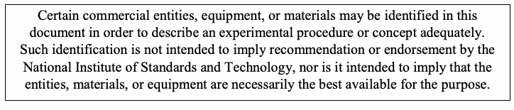
実験手順または概念を適切に説明するため、本書では特定の商業組織、機器または材料を挙げる場合がある。これらの記載は、米国国立標準技術研究所による推奨または承認を意味するものではなく、また、記載した組織、材料または機器が目的に最適であることを示すものでもない。
Acknowledgments
謝辞
The authors, Sheila Frankel of the National Institute of Standards and Technology (NIST), Richard Graveman of RFG Security, John Pearce of Booz Allen Hamilton and Mark Rooks of L-1 Identity Solutions (formerly of Booz Allen Hamilton) wish to thank their colleagues who reviewed drafts of this document and contributed to its technical content.
著者である米国国立標準技術研究所（NIST）のSheila Frankel、RFG SecurityのRichard Graveman、Booz Allen HamiltonのJohn Pearce、およびL-1 Identity Solutions（旧Booz Allen Hamilton）のMark Rooksは、本書の草稿をレビューし、技術的内容に貢献した同僚に感謝する。
The authors would like to acknowledge Tim Grance of NIST for his keen and insightful assistance and encouragement throughout the development of the document. The authors particularly want to thank Mark Carson, Doug Montgomery and Stephen Nightingale of NIST and Scott Hogg for their careful review and valuable contributions to improving the quality of this publication.
著者は、本書の作成全体を通じて鋭く洞察に富む支援と励ましを寄せたNISTのTim Granceに謝意を表する。特に、本書の品質向上に向けて慎重にレビューし、貴重な貢献をしたNISTのMark Carson、Doug Montgomery、Stephen Nightingale、およびScott Hoggに感謝する。
The authors also appreciate the efforts of those individuals, agencies, and other organizations that contributed input during the public comment period, including John Baird, DREN; Alistair de B Clarkson, nCipher; Vint Cerf, Google; John Curran, ARIN; Terry Davis, Boeing; Francois Donze and Michael Scott Pontillo, HP; Jeffrey Dunn, Chern Liou, and Jeffrey Finke, Mitre; Fernando Gont, the UK Centre for the Protection of National Infrastructure (UK CPNI); Bob Grillo, US Army; Cecilia Hall, Don Radeke and Joseph Bertrand, USMC; J. Holland, David Leach, Sam Nguyen, M. Roed, Beth Scruggs, D. Wellington and Joe Williams, Aerospace Corp.; Ed Jankiewicz, SRI International; Ralph Kenyon, Caida; Lovell King II, Dept. of State; Joe Klein, IPv6 Security Researcher; Dan Luu, VA; Trung Nguyen, FAA; Carroll Perkins, Serco-NA; and Martin Radford, University of Bristol.
著者はまた、John Baird（DREN）、Alistair de B Clarkson（nCipher）、Vint Cerf（Google）、John Curran（ARIN）、Terry Davis（Boeing）、Francois DonzeおよびMichael Scott Pontillo（HP）、Jeffrey Dunn、Chern Liou、Jeffrey Finke（Mitre）、Fernando Gont（英国国家重要インフラ保護センター、UK CPNI）、Bob Grillo（米陸軍）、Cecilia Hall、Don Radeke、Joseph Bertrand（米海兵隊）、J. Holland、David Leach、Sam Nguyen、M. Roed、Beth Scruggs、D. Wellington、Joe Williams（Aerospace Corp.）、Ed Jankiewicz（SRI International）、Ralph Kenyon（Caida）、Lovell King II（国務省）、Joe Klein（IPv6セキュリティ研究者）、Dan Luu（退役軍人省）、Trung Nguyen（連邦航空局）、Carroll Perkins（Serco-NA）、Martin Radford（ブリストル大学）をはじめ、パブリックコメント期間中に意見を寄せた個人、機関、その他の組織の尽力にも感謝する。
Table of Contents
目次
Executive Summary — 1
エグゼクティブサマリー — 1
1. Introduction ................................................................................................................... 1-1
1. はじめに ................................................................................................................... 1-1
1.1 Authority.................................................................................................................1-1
1.1 権限 ......................................................................................................................... 1-1
1.2 Purpose and Scope................................................................................................1-1
1.2 目的と適用範囲 ........................................................................................................ 1-1
1.3 Audience ................................................................................................................1-1
1.3 対象読者 .................................................................................................................... 1-1
1.4 Document Structure ...............................................................................................1-1
1.4 文書の構成 ................................................................................................................ 1-1
2. Introduction to IPv6....................................................................................................... 2-1
2. IPv6の概要 ................................................................................................................. 2-1
2.1 Early History of IPv6...............................................................................................2-1
2.1 IPv6の初期の歴史 ..................................................................................................... 2-1
2.2 Limitations of IPv4 ..................................................................................................2-1
2.2 IPv4の制約 ................................................................................................................ 2-1
2.3 Major Features of the IPv6 Specification ................................................................2-2
2.3 IPv6仕様の主な機能 ................................................................................................ 2-2
2.3.1 Extended Address Space........................................................................... 2-3
2.3.1 拡張アドレス空間 ....................................................................................... 2-3
2.3.2 Autoconfiguration ....................................................................................... 2-3
2.3.2 自動設定 ....................................................................................................... 2-3
2.3.3 Header Structure........................................................................................ 2-3
2.3.3 ヘッダー構造 ............................................................................................... 2-3
2.3.4 Extension Headers..................................................................................... 2-4
2.3.4 拡張ヘッダー ............................................................................................... 2-4
2.3.5 Mandatory Internet Protocol Security (IPsec) Support................................ 2-4
2.3.5 インターネットプロトコルセキュリティ（IPsec）の必須サポート ................................ 2-4
2.3.6 Mobility....................................................................................................... 2-4
2.3.6 モビリティ ....................................................................................................... 2-4
2.3.7 Quality of Service (QoS)............................................................................. 2-5
2.3.7 サービス品質（QoS） ............................................................................. 2-5
2.3.8 Route Aggregation ..................................................................................... 2-5
2.3.8 経路集約 ..................................................................................... 2-5
2.3.9 Efficient Transmission ................................................................................ 2-5
2.3.9 効率的な伝送 ................................................................................ 2-5
2.4 IPv4 and IPv6 Threat Comparison..........................................................................2-5
2.4 IPv4とIPv6の脅威の比較 .......................................................................... 2-5
2.5 Motivations for Deploying IPv6 ...............................................................................2-7
2.5 IPv6を導入する動機 ............................................................................... 2-7
3. IPv6 Overview................................................................................................................ 3-1
3. IPv6の概要 ................................................................................................................ 3-1
3.1 IPv6 Addressing .....................................................................................................3-2
3.1 IPv6アドレス指定 ..................................................................................................... 3-2
3.1.1 Shorthand for Writing IPv6 Addresses........................................................ 3-5
3.1.1 IPv6アドレスの省略表記 ........................................................ 3-5
3.1.2 IPv6 Address Space Usage ....................................................................... 3-6
3.1.2 IPv6アドレス空間の利用 ....................................................................... 3-6
3.1.3 IPv6 Address Types ................................................................................... 3-7
3.1.3 IPv6アドレスの種類 ................................................................................... 3-7
3.1.4 IPv6 Address Scope................................................................................... 3-7
3.1.4 IPv6アドレスのスコープ ................................................................................... 3-7
3.1.5 IPv4 Addressing......................................................................................... 3-9
3.1.5 IPv4アドレス指定 ......................................................................................... 3-9
3.1.6 IPv4 Classless Inter-Domain Routing (CIDR) Addressing ........................ 3-10
3.1.6 IPv4クラスレスドメイン間ルーティング（CIDR）アドレス指定 ........................ 3-10
3.1.7 Comparing IPv6 and IPv4 Addressing...................................................... 3-11
3.1.7 IPv6とIPv4のアドレス指定の比較 ...................................................... 3-11
3.2 IPv6 Address Allocations......................................................................................3-12
3.2 IPv6アドレスの割当て ...................................................................................... 3-12
3.2.1 IPv6 Address Assignments ...................................................................... 3-12
3.2.1 IPv6アドレスの割当て ...................................................................... 3-12
3.2.2 Obtaining Globally Routable IPv6 Address Space.................................... 3-14
3.2.2 グローバルにルーティング可能なIPv6アドレス空間の取得 .................................... 3-14
3.3 IPv6 Header Types, Formats, and Fields..............................................................3-16
3.3 IPv6ヘッダーの種類、形式、フィールド .............................................................. 3-16
3.4 IPv6 Extension Headers.......................................................................................3-18
3.4 IPv6拡張ヘッダー ....................................................................................... 3-18
3.5 Internet Control Message Protocol for IPv6 (ICMPv6) ..........................................3-22
3.5 IPv6用インターネット制御メッセージプロトコル（ICMPv6） .......................................... 3-22
3.5.1 ICMPv6 Specification Overview ............................................................... 3-22
3.5.1 ICMPv6仕様の概要 ............................................................... 3-22
3.5.2 Differences between IPv6 and IPv4 ICMP................................................ 3-25
3.5.2 IPv6とIPv4のICMPの相違点 ................................................ 3-25
3.5.3 Neighbor Discovery.................................................................................. 3-26
3.5.3 近隣探索 .................................................................................. 3-26
3.5.4 Autoconfiguration ..................................................................................... 3-28
3.5.4 自動設定 ..................................................................................... 3-28
3.5.5 Path Maximum Transmission Unit (PMTU) Discovery .............................. 3-29
3.5.5 パス最大伝送単位（PMTU）探索 .............................. 3-29
3.5.6 Security Ramifications.............................................................................. 3-30
3.5.6 セキュリティ上の影響 .............................................................................. 3-30
3.6 IPv6 and Routing..................................................................................................3-34
3.6 IPv6とルーティング .................................................................................................. 3-34
3.6.1 Specification Overview............................................................................. 3-34
3.6.1 仕様の概要 ............................................................................. 3-34
3.6.2 Security for Routing Protocols.................................................................. 3-35
3.6.2 ルーティングプロトコルのセキュリティ .......................................................... 3-35
3.6.3 Unknown Aspects .................................................................................... 3-36 3.7 IPv6 and the Domain Name System (DNS) ..........................................................3-36 3.7.1 DNS Transport Protocol ........................................................................... 3-37 3.7.2 DNS Specification Overview .................................................................... 3-37 3.7.3 Security Impact and Recommendations ................................................... 3-39
3.6.3 未知の事項 — 3-36 / 3.7 IPv6とドメインネームシステム（DNS） — 3-36 / 3.7.1 DNSトランスポートプロトコル — 3-37 / 3.7.2 DNS仕様の概要 — 3-37 / 3.7.3 セキュリティへの影響と推奨事項 — 3-39
4. IPv6 Advanced Topics .................................................................................................. 4-1
4. IPv6の高度なトピック .................................................................................................. 4-1
4.1 Multihoming............................................................................................................4-1 4.1.1 Differences between IPv4 and IPv6 Multihoming........................................ 4-1 4.1.2 Site Multihoming by IPv6 Intermediation (SHIM6) Specification Overview.. 4-2 4.1.3 Security Ramifications for Multihoming....................................................... 4-4 4.2 IPv6 Multicast.........................................................................................................4-5 4.2.1 IPv6 Multicast Specifications...................................................................... 4-6 4.2.2 Differences between IPv4 and IPv6 Multicast............................................. 4-8 4.2.3 Multicast Security Ramifications................................................................. 4-9 4.2.4 Unresolved Aspects of IPv6 Multicast ........................................................ 4-9 4.3 IPv6 Quality of Service (QoS)...............................................................................4-10 4.3.1 IPv6 QoS Specifications........................................................................... 4-10 4.3.2 Differences between IPv4 and IPv6 QoS ................................................. 4-11 4.3.3 Security Ramifications.............................................................................. 4-11 4.3.4 Unresolved Aspects of IPv6 QoS ............................................................. 4-12 4.4 Mobile IPv6 (MIPv6) .............................................................................................4-12 4.4.1 MIPv6 Specification Overview.................................................................. 4-12 4.4.2 Differences from IPv4 Standards.............................................................. 4-16 4.4.3 Security Ramifications.............................................................................. 4-16 4.4.4 Unknown Aspects .................................................................................... 4-26 4.5 Jumbograms ........................................................................................................4-27 4.5.1 Specification Overview............................................................................. 4-27 4.5.2 Security Ramifications.............................................................................. 4-27 4.6 Address Selection ................................................................................................4-28 4.6.1 Specification Overview............................................................................. 4-28 4.6.2 Differences from IPv4 Standards.............................................................. 4-30 4.6.3 Security Ramifications.............................................................................. 4-30 4.6.4 Unknown Aspects .................................................................................... 4-31 4.7 Dynamic Host Configuration Protocol (DHCP) for IPv6.........................................4-31 4.7.1 Specification Overview............................................................................. 4-32 4.7.2 Differences from IPv4 Standards.............................................................. 4-34 4.7.3 Security Ramifications.............................................................................. 4-34 4.7.4 Unknown Aspects .................................................................................... 4-35 4.8 IPv6 Prefix Renumbering......................................................................................4-35 4.8.1 Specification Overview............................................................................. 4-36 4.8.2 Differences from IPv4 Standards.............................................................. 4-38 4.8.3 Security Ramifications.............................................................................. 4-38 4.8.4 Unknown Aspects .................................................................................... 4-39
4.1 マルチホーム — 4-1 / 4.1.1 IPv4とIPv6のマルチホームの相違点 — 4-1 / 4.1.2 IPv6中間化によるサイトマルチホーム（SHIM6）仕様の概要 — 4-2 / 4.1.3 マルチホームのセキュリティ上の影響 — 4-4 / 4.2 IPv6マルチキャスト — 4-5 / 4.2.1 IPv6マルチキャスト仕様 — 4-6 / 4.2.2 IPv4とIPv6のマルチキャストの相違点 — 4-8 / 4.2.3 マルチキャストのセキュリティ上の影響 — 4-9 / 4.2.4 IPv6マルチキャストの未解決事項 — 4-9 / 4.3 IPv6のサービス品質（QoS） — 4-10 / 4.3.1 IPv6 QoS仕様 — 4-10 / 4.3.2 IPv4とIPv6のQoSの相違点 — 4-11 / 4.3.3 セキュリティ上の影響 — 4-11 / 4.3.4 IPv6 QoSの未解決事項 — 4-12 / 4.4 モバイルIPv6（MIPv6） — 4-12 / 4.4.1 MIPv6仕様の概要 — 4-12 / 4.4.2 IPv4標準との相違点 — 4-16 / 4.4.3 セキュリティ上の影響 — 4-16 / 4.4.4 未知の事項 — 4-26 / 4.5 ジャンボグラム — 4-27 / 4.5.1 仕様の概要 — 4-27 / 4.5.2 セキュリティ上の影響 — 4-27 / 4.6 アドレス選択 — 4-28 / 4.6.1 仕様の概要 — 4-28 / 4.6.2 IPv4標準との相違点 — 4-30 / 4.6.3 セキュリティ上の影響 — 4-30 / 4.6.4 未知の事項 — 4-31 / 4.7 IPv6用動的ホスト構成プロトコル（DHCP） — 4-31 / 4.7.1 仕様の概要 — 4-32 / 4.7.2 IPv4標準との相違点 — 4-34 / 4.7.3 セキュリティ上の影響 — 4-34 / 4.7.4 未知の事項 — 4-35 / 4.8 IPv6プレフィックスの番号変更 — 4-35 / 4.8.1 仕様の概要 — 4-36 / 4.8.2 IPv4標準との相違点 — 4-38 / 4.8.3 セキュリティ上の影響 — 4-38 / 4.8.4 未知の事項 — 4-39
5. IPv6 Security Advanced Topics ................................................................................... 5-1
5. IPv6の高度なセキュリティトピック ................................................................................... 5-1
5.1 Privacy Addresses..................................................................................................5-1 5.2 Cryptographically Generated Addresses ................................................................5-3 5.3 IPsec in IPv6 ..........................................................................................................5-4 5.3.1 Specification Overview............................................................................... 5-5 5.3.2 Differences from IPv4 Standards................................................................ 5-8
5.1 プライバシーアドレス — 5-1 / 5.2 暗号学的に生成されたアドレス — 5-3 / 5.3 IPv6におけるIPsec — 5-4 / 5.3.1 仕様の概要 — 5-5 / 5.3.2 IPv4標準との相違点 — 5-8
5.3.3 Support for Multicast .................................................................................. 5-8
5.3.3 マルチキャストのサポート .................................................................................. 5-8
5.3.4 Status of IPsec and On-Going Work........................................................... 5-9
5.3.4 IPsecの状況と進行中の作業........................................................... 5-9
5.3.5 Security Ramifications.............................................................................. 5-15
5.3.5 セキュリティ上の影響.............................................................................. 5-15
5.3.6 Unknown Aspects .................................................................................... 5-16
5.3.6 未知の側面 .................................................................................... 5-16
5.4 Secure Stateless Address Autoconfiguration and Neighbor Discovery .................5-17
5.4 セキュアなステートレスアドレス自動設定と近隣探索 .................5-17
5.4.1 Using IPsec to Secure Autoconfiguration and ND .................................... 5-18
5.4.1 IPsecを用いた自動設定とNDの保護 .................................... 5-18
5.4.2 Using SEND to Secure Autoconfiguration and ND ................................... 5-19
5.4.2 SENDを用いた自動設定とNDの保護 ................................... 5-19
5.4.3 Current Status and Unknown Aspects...................................................... 5-19
5.4.3 現状と未知の側面...................................................... 5-19
6. IPv6 Deployment ........................................................................................................... 6-1
6. IPv6の導入 ........................................................................................................... 6-1
6.1 Security Risks ........................................................................................................6-1
6.1 セキュリティリスク ........................................................................................................6-1
6.1.1 Attacker Community................................................................................... 6-1
6.1.1 攻撃者コミュニティ................................................................................... 6-1
6.1.2 Unauthorized IPv6 Clients.......................................................................... 6-2
6.1.2 認可されていないIPv6クライアント.......................................................................... 6-2
6.1.3 Vulnerabilities in IPv6................................................................................. 6-2
6.1.3 IPv6の脆弱性................................................................................. 6-2
6.1.4 Dual Operations ......................................................................................... 6-4
6.1.4 デュアル運用 ......................................................................................... 6-4
6.1.5 Perceived Risk ........................................................................................... 6-4
6.1.5 認識されたリスク ........................................................................................... 6-4
6.1.6 Vendor Support.......................................................................................... 6-4
6.1.6 ベンダーのサポート.......................................................................................... 6-4
6.2 Addressing Security ...............................................................................................6-5
6.2 アドレス指定のセキュリティ ...............................................................................................6-5
6.2.1 Numbering Plan ......................................................................................... 6-5
6.2.1 番号計画 ......................................................................................... 6-5
6.2.2 Hierarchical Addressing to Support Security Segmentation........................ 6-6
6.2.2 セキュリティのためのセグメンテーションを支える階層的アドレス指定........................ 6-6
6.2.3 Problems with EUI-64 Addresses............................................................... 6-7
6.2.3 EUI-64アドレスの問題............................................................... 6-7
6.2.4 Address Management ................................................................................ 6-7
6.2.4 アドレス管理 ................................................................................ 6-7
6.2.5 Privacy Extensions..................................................................................... 6-8
6.2.5 プライバシー拡張..................................................................................... 6-8
6.3 Transition Mechanisms...........................................................................................6-8
6.3 移行メカニズム...........................................................................................6-8
6.4 Dual Stack IPv4/IPv6 Environments .......................................................................6-9
6.4 IPv4/IPv6デュアルスタック環境 .......................................................................6-9
6.4.1 Deployment of a Dual Stack Environment .................................................. 6-9
6.4.1 デュアルスタック環境の導入 .................................................. 6-9
6.4.2 Addressing in a Dual Stack Environment ................................................. 6-10
6.4.2 デュアルスタック環境におけるアドレス指定 ................................................. 6-10
6.4.3 Security Implications of a Dual Stack Environment................................... 6-11
6.4.3 デュアルスタック環境のセキュリティ上の意味................................... 6-11
6.5 Tunneling .............................................................................................................6-11
6.5 トンネリング .............................................................................................................6-11
6.5.1 General Security Considerations for Tunneling ........................................ 6-13
6.5.1 トンネリングに関する一般的なセキュリティ上の考慮事項 ........................................ 6-13
6.5.2 Configured Tunneling............................................................................... 6-15
6.5.2 設定型トンネリング............................................................................... 6-15
6.5.3 Automatic Tunneling ................................................................................ 6-16
6.5.3 自動トンネリング ................................................................................ 6-16
6.5.4 6over4 Protocol........................................................................................ 6-16
6.5.4 6over4プロトコル........................................................................................ 6-16
6.5.5 6to4 and 6rd Protocols ............................................................................. 6-17
6.5.5 6to4および6rdプロトコル ............................................................................. 6-17
6.5.6 Intra-Site Automatic Tunnel Addressing Protocol (ISATAP) ..................... 6-19
6.5.6 Intra-Site Automatic Tunnel Addressing Protocol（ISATAP） ..................... 6-19
6.5.7 Teredo Protocol........................................................................................ 6-22
6.5.7 Teredoプロトコル........................................................................................ 6-22
6.5.8 Tunnel Brokers......................................................................................... 6-27
6.5.8 トンネルブローカー......................................................................................... 6-27
6.5.9 Automatic Tunneling of IPv4 over IPv6 (Dual Stack Transition Mechanism [DSTM])............................................................................................................... 6-28
6.5.9 IPv6上のIPv4の自動トンネリング（Dual Stack Transition Mechanism [DSTM]）............................................................................................................... 6-28
6.5.10 Carrier-Grade NAT and Dual-Stack Lite................................................... 6-30
6.5.10 キャリアグレードNATとDual-Stack Lite................................................... 6-30
6.6 Translation ...........................................................................................................6-32
6.6 変換 ...........................................................................................................6-32
6.6.1 SIIT .......................................................................................................... 6-33
6.6.1 SIIT .......................................................................................................... 6-33
6.6.2 NAT-PT.................................................................................................... 6-33
6.6.2 NAT-PT.................................................................................................... 6-33
6.6.3 Replacing NAT-PT ................................................................................... 6-34
6.6.3 NAT-PTの置き換え ................................................................................... 6-34
6.6.4 TRT.......................................................................................................... 6-35
6.6.4 TRT.......................................................................................................... 6-35
6.6.5 Application Layer Translation ................................................................... 6-36
6.6.5 アプリケーション層での変換 ................................................................... 6-36
6.7 Other Transition Mechanisms...............................................................................6-37
6.7 その他の移行メカニズム...............................................................................6-37
6.8 The IPv6 Deployment Planning Process for Security............................................6-37
6.8 セキュリティのためのIPv6導入計画プロセス............................................6-37
6.9 IPv6 Deployment..................................................................................................6-38
6.9 IPv6の導入..................................................................................................6-38
6.9.1 Initiation Phase ........................................................................................ 6-39
6.9.1 開始フェーズ ........................................................................................ 6-39
6.9.2 Acquisition / Development Phase............................................................. 6-41
6.9.2 調達／開発フェーズ............................................................. 6-41
6.9.3 Implementation Phase.............................................................................. 6-44 6.9.4 Operations / Maintenance Phase ............................................................. 6-46 6.9.5 Disposition Phase .................................................................................... 6-46 6.10 Summary..............................................................................................................6-47
6.9.3 実装フェーズ — 6-44 / 6.9.4 運用／保守フェーズ — 6-46 / 6.9.5 廃止フェーズ — 6-46 / 6.10 まとめ — 6-47
List of Appendices
付録一覧
Appendix A— Acronyms and Abbreviations ......................................................................A-1
付録A—頭字語および略語 ...................................................................... A-1
Appendix B— References and Other IPv6 Resources .......................................................B-1
付録B—参考文献およびその他のIPv6リソース ....................................................... B-1
List of Figures
図一覧
Figure 2-1. The IPv6 Packet Header Format (Field Sizes in Bits)............................................ 2-4 Figure 3-1. IPv6 Address Format ........................................................................................... 3-3 Figure 3-2. 32-Bit Network Prefix ........................................................................................... 3-4 Figure 3-3. 48-Bit Network Prefix ........................................................................................... 3-4 Figure 3-4. 64-Bit Network Prefix ........................................................................................... 3-5 Figure 3-5. A Comparison of IPv4 and IPv6 Addressing....................................................... 3-11 Figure 3-6. The IPv6 Packet Header Format (Field Sizes in Bits) (RFC 2460) ..................... 3-16 Figure 3-7. Example IPv6 Packet Header ............................................................................ 3-18 Figure 3-8. Next Header Fields in IPv6 and Extension Headers........................................... 3-18 Figure 3-9. IPv6 Extension Header Chaining ....................................................................... 3-19 Figure 3-10. ICMPv6 Message Format................................................................................. 3-23 Figure 3-11. Example of Neighbor Discovery ....................................................................... 3-27 Figure 3-12. Example of Stateless Address Autoconfiguration (SLAAC) .............................. 3-29 Figure 3-13. Significance of MTU under IPv6....................................................................... 3-30 Figure 4-1. SHIM6 Protocol Stack.......................................................................................... 4-4 Figure 4-2. The Main MIPv6 Components............................................................................ 4-14 Figure 4-3. IKEv1 Identifiers used between a MN and its HA ............................................... 4-20 Figure 4-4. IKEv2 identifiers used between a MN and its HA ............................................... 4-20 Figure 4-5. Return Routability—Init Messages ..................................................................... 4-22 Figure 4-6. Return Routability—Keygen Replies .................................................................. 4-23 Figure 4-7. Reverse Routability—BU and BUA Protected with Kbm..................................... 4-24 Figure 5-1. Example of IPv6 Privacy Addressing.................................................................... 5-2 Figure 5-2. Generating Cryptographic Addresses from Public-Private Key Pairs.................... 5-3
図2-1. IPv6パケットヘッダー形式（各フィールドのサイズはビット単位） — 2-4 / 図3-1. IPv6アドレス形式 — 3-3 / 図3-2. 32ビットネットワークプレフィックス — 3-4 / 図3-3. 48ビットネットワークプレフィックス — 3-4 / 図3-4. 64ビットネットワークプレフィックス — 3-5 / 図3-5. IPv4とIPv6のアドレス指定の比較 — 3-11 / 図3-6. IPv6パケットヘッダー形式（フィールドサイズはビット単位）（RFC 2460） — 3-16 / 図3-7. IPv6パケットヘッダーの例 — 3-18 / 図3-8. IPv6と拡張ヘッダーにおける次ヘッダーフィールド — 3-18 / 図3-9. IPv6拡張ヘッダーの連鎖 — 3-19 / 図3-10. ICMPv6メッセージ形式 — 3-23 / 図3-11. 近隣探索の例 — 3-27 / 図3-12. ステートレスアドレス自動設定（SLAAC）の例 — 3-29 / 図3-13. IPv6におけるMTUの重要性 — 3-30 / 図4-1. SHIM6プロトコルスタック — 4-4 / 図4-2. MIPv6の主な構成要素 — 4-14 / 図4-3. MNとHA間で使用されるIKEv1識別子 — 4-20 / 図4-4. MNとHA間で使用されるIKEv2識別子 — 4-20 / 図4-5. リターンルータビリティ—Initメッセージ — 4-22 / 図4-6. リターンルータビリティ—Keygen応答 — 4-23 / 図4-7. Kbmで保護された逆方向ルータビリティ—BUとBUA — 4-24 / 図5-1. IPv6プライバシーアドレス指定の例 — 5-2 / 図5-2. 公開鍵と秘密鍵のペアから暗号学的アドレスを生成する方法 — 5-3
Figure 5-3. IPsec in the TCP/IP Protocol Stack...................................................................... 5-5 Figure 5-4. Encryption and Authentication Algorithms for the IPsec Protocol ......................... 5-9 Figure 5-5. Cryptographic Algorithms for Use in IKEv2 ........................................................ 5-10 Figure 6-1. Example of Tunneling IPv6 over IPv4 Networks.................................................. 6-12 Figure 6-2. IPv6 over IPv4 Tunnels Transparent to the IPv4 Infrastructure .......................... 6-14 Figure 6-3. Example - Tunneling IPv6 over IPv4 Networks with ISATAP.............................. 6-21 Figure 6-4. Example - Tunneling IPv6 over IPv4 Networks with Teredo ............................... 6-23 Figure 6-5. Teredo Address .................................................................................................. 6-24
図5-3. TCP/IPプロトコルスタックにおけるIPsec — 5-5 / 図5-4. IPsecプロトコルの暗号化アルゴリズムと認証アルゴリズム — 5-9 / 図5-5. IKEv2で使用する暗号アルゴリズム — 5-10 / 図6-1. IPv4ネットワーク上でIPv6をトンネリングする例 — 6-12 / 図6-2. IPv4基盤から透過的なIPv6 over IPv4トンネル — 6-14 / 図6-3. ISATAPによるIPv4ネットワーク上のIPv6トンネリング例 — 6-21 / 図6-4. TeredoによるIPv4ネットワーク上のIPv6トンネリング例 — 6-23 / 図6-5. Teredoアドレス — 6-24
List of Tables
表一覧
Table 3-1. Differences between IPv4 and IPv6....................................................................... 3-1 Table 3-2. IPv6 Address Types .............................................................................................. 3-6 Table 3-3. Assignment of Leftmost, Centermost, and Rightmost Bits ................................... 3-13 Table 3-4. IPv6 Extension Headers and Upper Layer Protocols........................................... 3-21 Table 3-5. ICMPv6 Error Messages and Code Type ............................................................ 3-24 Table 3-6. ICMPv6 Informational Messages......................................................................... 3-24 Table 3-7. ICMPv6 Recommended Filtering Actions – Must Not Drop & Should Not Drop ... 3-33 Table 4-1. IPv6 Scoped Multicast Values (from RFC 4291).................................................... 4-7
表3-1. IPv4とIPv6の相違点 — 3-1 / 表3-2. IPv6アドレスの種類 — 3-6 / 表3-3. 最左端、中央、最右端の各ビットの割当て — 3-13 / 表3-4. IPv6拡張ヘッダーと上位層プロトコル — 3-21 / 表3-5. ICMPv6エラーメッセージとコード種別 — 3-24 / 表3-6. ICMPv6情報メッセージ — 3-24 / 表3-7. ICMPv6の推奨フィルタリング動作—破棄してはならない（Must Not Drop） & 破棄すべきでない（Should Not Drop） — 3-33 / 表4-1. IPv6スコープ付きマルチキャスト値（RFC 4291より） — 4-7
Executive Summary
エグゼクティブサマリー
Due to the exhaustion of IPv4 (Internet Protocol version 4) address space, and the Office of Management and Budget (OMB)1 mandate that U.S. federal agencies begin to use the IPv6 (Internet Protocol version 6) protocol, NIST undertook the development of a guide to help educate federal agencies about the possible security risks during their initial IPv6 deployment. This document provides guidelines for organizations to aid in securely deploying IPv6. Since the majority of organizations will most likely run both IPv6 and IPv4 on their networks for the foreseeable future, this document speaks about the deployment of IPv6 rather than the transition to IPv6.2
IPv4（Internet Protocol version 4）のアドレス空間の枯渇と、米国連邦政府機関にIPv6（Internet Protocol version 6）プロトコルの使用開始を求める行政管理予算局（OMB）1の指令を受けて、NISTは、連邦政府機関がIPv6を初めて導入する際に起こりうるセキュリティリスクについて周知するためのガイドの作成に着手した。本文書は、組織がIPv6をセキュアに導入するのを支援するためのガイドラインを示す。ほとんどの組織は当面の間、ネットワーク上でIPv6とIPv4の両方を運用する可能性が高いため、本文書ではIPv6への移行ではなく、IPv6の導入について述べる。2
The deployment of IPv6 can lead to new challenges and types of threats facing an organization. The goals of this document are:
IPv6の導入により、組織は新たな課題や新たな種類の脅威に直面する可能性がある。本書の目的は次のとおりである。
•To educate the reader about IPv6 features and the security impacts of those features
•IPv6の機能と、それらの機能がセキュリティに及ぼす影響について読者に説明する
•To provide a comprehensive survey of mechanisms that can be used for the deployment of IPv6
•IPv6の導入に利用できるメカニズムを包括的に概説する
•To provide a suggested deployment strategy for moving to an IPv6 environment
•IPv6環境へ移行するための導入戦略案を示す
The migration to IPv6 services is inevitable as the IPv4 address space is almost exhausted. IPv6 is not backwards compatible with IPv4, which means organizations will have to change their network infrastructure and systems to deploy IPv6. Organizations should begin now to understand the risks of deploying IPv6, as well as strategies to mitigate such risks. Detailed planning will enable an organization to navigate the process smoothly and securely.
IPv4アドレス空間はほぼ枯渇しているため、IPv6サービスへの移行は避けられない。IPv6はIPv4との後方互換性がないため、IPv6を導入するには組織がネットワーク基盤とシステムを変更しなければならない。組織は、IPv6導入のリスクと、そのリスクを緩和する戦略の理解に今から着手すべきである。詳細に計画することで、組織はこのプロセスを円滑かつ安全に進められる。
Federal agencies will most likely face security challenges throughout the deployment process, including:
連邦機関は導入プロセス全体を通じて、次のようなセキュリティ上の課題に直面する可能性が高いと考えられる。
•An attacker community that most likely has more experience and comfort with IPv6 than an organization in the early stages of deployment
•IPv6導入の初期段階にある組織よりも、IPv6の経験や習熟度が高い可能性のある攻撃者コミュニティ
•Difficulty in detecting unknown or unauthorized IPv6 assets on existing IPv4 production networks
•既存のIPv4本番ネットワーク上で、不明または未承認のIPv6資産を検出することの難しさ
•Added complexity while operating IPv4 and IPv6 in parallel
•IPv4とIPv6を並行運用することによる複雑さの増加
•Lack of IPv6 maturity in security products when compared to IPv4 capabilities
•IPv4の機能と比較した場合の、セキュリティ製品におけるIPv6の成熟度不足
•Proliferation of transition-driven IPv6 (or IPv4) tunnels, which complicate defenses at network boundaries even if properly authorized, and can completely circumvent those defenses if unauthorized (e.g. host-based tunnels initiated by end users)
•移行目的のIPv6（またはIPv4）トンネルの増加。適切に承認されていてもネットワーク境界の防御を複雑にし、未承認の場合は防御を完全に回避する可能性がある（例：エンドユーザーが開始するホスト型トンネル）。
Organizations planning the deployment of IPv6 should consider the following during the planning process:
IPv6導入を計画する組織は、計画プロセスにおいて次の点を考慮すべきである。
•IPv6 is a new protocol that is not backward compatible with IPv4
•IPv6はIPv4との後方互換性がない新しいプロトコルである
•In most cases IPv4 will still be a component of IT (Information Technology) infrastructure. As such, even after the deployment of IPv6, organizations will require mechanisms for IPv6 and IPv4 co-existence.
•ほとんどの場合、IPv4は引き続きIT（情報技術）基盤の一部となる。そのため、IPv6の導入後も、IPv6とIPv4の共存を可能にするメカニズムが必要である。
•IPv6 can be deployed just as securely as IPv4, although it should be expected that vulnerabilities within the protocol, as well as with implementation errors, will lead to an initial increase in IPv6-based vulnerabilities. As a successor to IPv4, IPv6 does incorporate many of the lessons learned by the Internet Engineering Task Force (IETF) for IPv4.
•IPv6はIPv4と同等のセキュリティを確保して導入できる。ただし、プロトコル内の脆弱性や実装上の誤りによって、導入当初はIPv6関連の脆弱性が増加すると想定すべきである。IPv4の後継として、IPv6にはIPv4についてインターネット技術タスクフォース（IETF）が得た教訓の多くが取り入れられている。
•IPv6 has already been deployed and is currently in operation in large networks globally.
•IPv6はすでに導入されており、世界各地の大規模ネットワークで現在運用されている。
To overcome possible obstacles associated with deploying IPv6, organizations should consider the following recommendations:
IPv6導入に伴って起こり得る障害を克服するため、組織は次の推奨事項を検討すべきである。
•Encourage staff to increase their knowledge of IPv6 to a level comparable with their current understanding of IPv4
•職員がIPv6について、現在のIPv4に関する理解と同程度の知識を身に付けるよう促す。
•Plan a phased IPv6 deployment utilizing appropriate transition mechanisms to support business needs; don’t deploy more transition mechanisms than necessary
•業務上のニーズを支える適切な移行メカニズムを用いて、段階的なIPv6導入を計画する。必要以上に多くの移行メカニズムを導入しないこと。
•Plan for a long transition period with dual IPv4/IPv6 co-existence
•IPv4とIPv6を長期間併存させる移行期間を計画する。
Organizations that are not yet deploying IPv6 globally should implement the following recommendations:
IPv6を組織全体にまだ導入していない組織は、次の推奨事項を実施すること。
•Block all IPv6 traffic, native and tunneled, at the organization's firewall. Both incoming and outgoing traffic should be blocked.
•組織のファイアウォールで、ネイティブIPv6とトンネルIPv6の両方のトラフィックをすべて遮断する。受信と送信の両方を遮断すること。
•Disable all IPv6-compatible ports, protocols and services on all software and hardware.
•すべてのソフトウェアおよびハードウェアで、IPv6互換のポート、プロトコル、サービスをすべて無効にする。
•Begin to acquire familiarity and expertise with IPv6, through laboratory experimentation and/or limited pilot deployments.
•実験室での検証や限定的な試験導入を通じて、IPv6に慣れ、専門知識を身に付け始める。
•Make organization web servers, located outside of the organizational firewall, accessible via IPv6 connections. This will enable IPv6-only users to access the servers and aid the organization in acquiring familiarity with some aspects of IPv6 deployment.
•組織のファイアウォールの外側に設置されたウェブサーバーをIPv6接続で利用できるようにする。これにより、IPv6のみを使用するユーザーがサーバーにアクセスできるとともに、IPv6導入の一部の側面について組織が知識を深められる。
Organizations that are deploying IPv6 should implement the following recommendations to mitigate IPv6 threats:
IPv6を導入している組織は、IPv6の脅威を緩和するため、次の推奨事項を実施すべきである。
•Apply an appropriate mix of different types of IPv6 addressing (privacy addressing, unique local addressing, sparse allocation, etc) to limit access and knowledge of IPv6-addressed environments.
•プライバシーアドレス指定、ユニークローカルアドレス指定、疎な割当てなど、異なる種類のIPv6アドレス指定を適切に組み合わせ、IPv6アドレス指定環境へのアクセスとその情報の把握を制限する。
•Use automated address management tools to avoid manual entry of IPv6 addresses, which is prone to error because of their length.
•IPv6アドレスは長く、手入力すると誤りやすいため、自動アドレス管理ツールを使用する。
•Develop a granular ICMPv6 (Internet Control Protocol for IPv6) filtering policy for the enterprise. Ensure that ICMPv6 messages that are essential to IPv6 operation are allowed, but others are blocked.3
•組織内で、きめ細かなICMPv6（IPv6用インターネット制御プロトコル）フィルタリングポリシーを策定する。IPv6の動作に不可欠なICMPv6メッセージは許可し、それ以外は遮断すること。3
•Use IPsec (Internet Protocol Security) to authenticate and provide confidentiality to assets that can be tied to a scalable trust model (an example is access to Human Resources assets by internal employees that make use of an organization’s Public Key Infrastructure (PKI) to establish trust).
•組織の公開鍵基盤（PKI）を使って信頼を確立する内部職員が人事関連の資産へアクセスする例のように、拡張可能な信頼モデルに結び付けられる資産を認証し、その機密性を保護するためにIPsec（インターネットプロトコルセキュリティ）を使用する。
•Identify capabilities and weaknesses of network protection devices in an IPv6 environment.
•IPv6環境におけるネットワーク保護装置の機能と弱点を特定する。
•Enable controls that might not have been used in IPv4 due to a lower threat level during initial deployment (implementing default deny access control policies, implementing routing protocol security, etc).
•導入初期の脅威レベルが低かったためIPv4環境では使われていなかった可能性のある制御を有効にする（デフォルト拒否のアクセス制御ポリシー、ルーティングプロトコルのセキュリティなど）。
•Pay close attention to the security aspects of transition mechanisms such as tunneling protocols.
•トンネリングプロトコルなど、移行メカニズムのセキュリティ面に十分注意する。
•Ensure that IPv6 routers, packet filters, firewalls, and tunnel endpoints enforce multicast scope boundaries and make sure that Multicast Listener Discovery (MLD) packets are not inappropriately routable.
•IPv6ルーター、パケットフィルター、ファイアウォール、トンネル終端装置でマルチキャストのスコープ境界を適用し、マルチキャストリスナー探索（MLD）パケットが不適切にルーティングされないようにする。
•Be aware that switching from an environment in which NAT (Network Address Translation) provides IP (Internet Protocol) addresses to unique global IPv6 addresses could trigger a change in the FISMA (Federal Information Security Management Act) system boundaries.
•NAT（ネットワークアドレス変換）によってIP（インターネットプロトコル）アドレスを提供する環境から、グローバルに一意なIPv6アドレスを使用する環境へ切り替えると、FISMA（連邦情報セキュリティマネジメント法）上のシステム境界が変わる可能性があることを認識する。
After reviewing this document, the reader should have a reasonable understanding of IPv6 and how it compares to IPv4, as well as security impacts of IPv6 features and capabilities, and increased knowledge and awareness about the range of IPv4 to IPv6 transition mechanisms.
本書を読み終えた読者は、IPv6およびIPv4との比較、ならびにIPv6の機能と能力がセキュリティに及ぼす影響について相応の理解を得るとともに、IPv4からIPv6へのさまざまな移行メカニズムについての知識と認識を深めているはずである。
1. Introduction
1. はじめに
1.1 Authority
1.1 権限
The National Institute of Standards and Technology (NIST) developed this document in furtherance of its statutory responsibilities under the Federal Information Security Management Act (FISMA) of 2002, Public Law 107-347.
米国国立標準技術研究所（NIST）は、2002年連邦情報セキュリティマネジメント法（FISMA）、Public Law 107-347に基づく法定責務を果たすため、本書を作成した。
NIST is responsible for developing standards and guidelines, including minimum requirements, for providing adequate information security for all agency operations and assets; but such standards and guidelines shall not apply to national security systems. This guideline is consistent with the requirements of the Office of Management and Budget (OMB) Circular A-130, Section 8b(3), “Securing Agency Information Systems,” as analyzed in A-130, Appendix IV: Analysis of Key Sections. Supplemental information is provided in A-130, Appendix III.
NISTは、国家安全保障システムには適用されないものの、各機関のすべての業務と資産に十分な情報セキュリティを提供するため、最低要件を含む標準およびガイドラインを策定する責任を負う。本ガイドラインは、OMB通達A-130第8b(3)項「機関情報システムの保護」と整合しており、その内容はA-130付録IV「主要条項の分析」で検討されている。補足情報はA-130付録IIIに記載されている。
This guideline has been prepared for use by Federal agencies. It may be used by nongovernmental organizations on a voluntary basis and is not subject to copyright, though attribution is desired.
本ガイドラインは連邦機関での使用を目的に作成されている。政府機関以外の組織も任意で使用できる。著作権の対象ではないが、出典の明記が望まれる。
Nothing in this document should be taken to contradict standards and guidelines made mandatory and binding on Federal agencies by the Secretary of Commerce under statutory authority, nor should these guidelines be interpreted as altering or superseding the existing authorities of the Secretary of Commerce, Director of the OMB, or any other Federal official.
本書のいかなる記載も、法的権限に基づき商務長官が連邦機関に義務付けた標準およびガイドラインに反すると解釈してはならない。また、本ガイドラインは、商務長官、OMB局長、その他の連邦政府職員が有する既存の権限を変更または置き換えるものと解釈してはならない。
1.2 Purpose and Scope
1.2 目的と適用範囲
The purpose of Guidelines for the Secure Deployment of IPv6 is to provide information security guidance to organizations that are planning to deploy IPv6 technologies or are simply seeking a better understanding of IPv6. The scope of this document encompasses the IPv6 protocol and related protocol specifications. IPv6-related security considerations are discussed with emphasis on deployment-related security concerns. The document also includes general guidance on secure IPv6 deployment and integration planning.
「IPv6のセキュアな導入に関するガイドライン」の目的は、IPv6技術の導入を計画している組織、または単にIPv6への理解を深めようとしている組織に、情報セキュリティの指針を提供することである。本書の適用範囲は、IPv6プロトコルおよび関連するプロトコル仕様を包含する。IPv6関連のセキュリティ上の考慮事項は、導入に関連するセキュリティ上の懸念に重点を置いて論じる。本書には、セキュアなIPv6導入と統合の計画に関する一般的な指針も含まれる。
1.3 Audience
1.3 対象読者
This document is intended primarily for network engineers and administrators who are responsible for planning, building, and operating IP networks, as well as security engineers and administrators who are responsible for providing Information Assurance support. Anyone interested in deploying IPv6 technologies and related security implications may also find the document useful. It includes a discussion of the major features and protocols that constitute IPv6. For each of these, the description is comprised of an introductory section, a more in-depth description, and three analytical sections: differences between the IPv4 and the IPv6 versions, security ramifications and unknown aspects. Managers or users who are trying to understand IPv6 might want to skip the in-depth descriptions but read the other sections (Introduction, Differences, Security Ramifications and Unknown Aspects). They should also read Section 1 (Introduction) and Sections 6.8-6.9 (IPv6 Deployment). It is assumed that readers are already familiar with basic IPv4, data networking, and network security concepts.
本書は主に、IPネットワークの計画、構築、運用を担当するネットワーク技術者および管理者と、情報保証（Information Assurance）の支援を担うセキュリティ技術者および管理者を対象としている。IPv6技術の導入および関連するセキュリティ上の影響に関心のある人にとっても、本書は有用であろう。本書では、IPv6を構成する主な機能とプロトコルを論じる。それぞれについての記述は、導入の節、より詳細な説明、および3つの分析の節（IPv4版とIPv6版の相違点、セキュリティ上の影響、未知の事項）で構成される。IPv6を理解しようとしているマネージャーや利用者は、詳細な説明を読み飛ばし、その他の節（導入、相違点、セキュリティ上の影響、未知の事項）を読んでもよい。その場合、第1節（はじめに）と第6.8～6.9節（IPv6の導入）も読むべきである。読者は、基本的なIPv4、データネットワーク、およびネットワークセキュリティの概念をすでに理解しているものとする。
1.4 Document Structure
1.4 文書の構成
The remainder of this document is composed of the following sections and appendices:
本書の残りの部分は、次の各節および付録で構成されている。
•Section 2 provides an introduction to IPv6, including its history, features, and comparisons with IPv4.
•第2節では、IPv6の歴史や機能、およびIPv4との比較を含め、IPv6を概説する。
•Section 3 discusses in more detail IPv6 addressing, allocation, packet organization, and ICMPv6.
•第3節では、IPv6のアドレス指定、割当て、パケット構成、ICMPv6について詳しく説明する。
•Section 4 examines some of the more advanced features of IPv6 and their security implications, including multihoming, multicast, QoS (Quality of Service), Mobile IPv6, Jumbograms and address selection.
•第4節では、マルチホーム、マルチキャスト、QoS（サービス品質）、モバイルIPv6、ジャンボグラム、アドレス選択など、IPv6の高度な機能とセキュリティへの影響を検討する。
•Section 5 provides an introduction to some of the advanced security features included in IPv6, including privacy addresses; IPsec; and secure stateless address autoconfiguration and neighbor discovery.
•第5節では、プライバシーアドレス、IPsec、安全なステートレスアドレス自動設定および近隣探索など、IPv6に含まれる高度なセキュリティ機能を概説する。
•Section 6 covers the process of securely deploying IPv6 and discusses the risks, addressing security, various transition mechanisms and the deployment process.
•第6節では、IPv6を安全に導入する手順を扱い、リスク、セキュリティを考慮したアドレス指定、各種移行メカニズム、導入プロセスについて説明する。
Appendix A provides a list of acronyms and abbreviations used in this document.
付録Aでは、本書で使用する頭字語と略語を一覧にする。
Appendix B lists references and other resources related to IPv6.
付録Bでは、IPv6に関連する参考文献およびその他のリソースを一覧にする。
2. Introduction to IPv6
2. IPv6の概要
Internet Protocol version 6 (IPv6) is a new network layer protocol. It is an enhancement to Internet Protocol version 4 (IPv4), the protocol in use since the 1980s. There are numerous upgrades in IPv6. Most significantly, in comparison with IPv4, IPv6 has increased its network address size from 32 bits to 128. This provides more than enough addresses to satisfy the global demand for unique IP addresses.
Internet Protocol version 6（IPv6）は新しいネットワーク層プロトコルである。これは、1980年代から使用されているプロトコルであるInternet Protocol version 4（IPv4）を拡張したものである。IPv6には数多くの改良点がある。最も重要なのは、IPv4と比べてネットワークアドレスのサイズが32ビットから128ビットに拡大したことである。これにより、一意なIPアドレスに対する世界的な需要を満たすのに十分すぎるほどのアドレスが提供される。
This chapter provides an overview of IPv6 as a foundation for later sections. The section starts with the early history of IPv6 and the limitations of IPv4, followed by descriptions of the major features of the IPv6 specifications. This is followed by a threat comparison between IPv4 and IPv6 and concludes with motivations for deploying to IPv6.
本章では、以降の節の前提としてIPv6を概説する。まずIPv6の初期の歴史とIPv4の制約を説明し、その後IPv6仕様の主な機能を取り上げる。続いてIPv4とIPv6の脅威を比較し、IPv6を導入する動機を説明する。
2.1 Early History of IPv6
2.1 IPv6の初期の歴史
IPv4 was developed in the 1970s and early 1980s for use in government and academic communities in the United States to facilitate communication and information sharing. Today’s networking demand, in particular web pages, email, peer-to-peer services, and the use of mobile devices, has grown well beyond its originators’ expectations. Widespread deployment and growth of networking technologies and mobile communications have surpassed IPv4’s ability to provide adequate globally unique address space4.
IPv4は、米国の政府および学術コミュニティにおける通信と情報共有を促進するために、1970年代から1980年代初頭にかけて開発された。今日のネットワーク需要、特にWebページ、電子メール、ピアツーピアサービス、モバイルデバイスの利用は、IPv4の開発者たちの想定をはるかに超えて拡大している。ネットワーク技術とモバイル通信の広範な普及と成長により、グローバルに一意なアドレス空間を十分に提供するIPv4の能力では追いつかなくなった4。
Efforts to develop a successor to IPv4 started in the early 1990s within the Internet Engineering Task Force (IETF)5. The objective was to solve the address space limitations as well as provide additional functionality. The IETF started the Internet Protocol Next Generation (IPng) work in 1993 to investigate different proposals and to make recommendations for further actions. The IETF recommended IPv6 in 1994. (The name IPv5 had previously been allocated to an experimental stream protocol.) Their recommendation is specified in RFC 1752, The Recommendation for IP Next Generation Protocol. Several proposals followed; the Internet Engineering Steering Group approved the IPv6 recommendation and drafted a Proposed Standard on November 17, 1994. RFC 1883, Internet Protocol, Version 6 (IPv6) Specification, was published in 1995. The core set of IPv66 protocols became an IETF Draft Standard on August 10, 1998. This included RFC 2460, which replaced RFC 1883.
IPv4の後継を開発する取り組みは、1990年代初頭にInternet Engineering Task Force（IETF）5において始まった。その目的は、アドレス空間の制約を解消するとともに、追加の機能を提供することであった。IETFは1993年にInternet Protocol Next Generation（IPng）の作業を開始し、さまざまな提案を検討して今後の対応について勧告を行うこととした。IETFは1994年にIPv6を勧告した（IPv5という名称は、それ以前に実験的なストリームプロトコルに割り当てられていた）。この勧告はRFC 1752, The Recommendation for IP Next Generation Protocolに規定されている。その後いくつかの提案が続き、Internet Engineering Steering GroupはIPv6の勧告を承認し、1994年11月17日に提案標準（Proposed Standard）を起草した。RFC 1883, Internet Protocol, Version 6 (IPv6) Specificationは1995年に公開された。IPv66のコアとなる一連のプロトコルは、1998年8月10日にIETFのドラフト標準（Draft Standard）となった。これには、RFC 1883を置き換えたRFC 2460が含まれる。
IPv6 is a protocol designed to handle the growth rate of the Internet and to cope with the demanding requirements of services, mobility, and end-to-end security. The following sections describe the limitations of IPv4, the major features of IPv6, and motivations for deploying IPv6.
IPv6は、インターネットの成長に対応し、サービス、モビリティ、エンドツーエンドセキュリティに対する厳しい要件を満たすよう設計されたプロトコルである。以下の節では、IPv4の制約、IPv6の主な機能、IPv6を導入する動機について説明する。
2.2 Limitations of IPv4
2.2 IPv4の制約
IPv4 (RFC 791) was designed over 30 years ago for a relatively small number of users. At that time, it seemed unlikely that personal computing technology would become as widespread as it is today in the United States and worldwide. The rapid, universal adoption and growth of personal computing technologies, including IP networking, were unforeseen in 1981. At that time, the Internet was used almost exclusively by scholars and researchers, and IPv4’s 4.3 billion theoretically available addresses were considered to be more than sufficient.
IPv4（RFC 791）は30年以上前、比較的少数の利用者を想定して設計された。当時、パーソナルコンピューティング技術が現在のように米国および世界中で広く普及するとは考えにくかった。IPネットワークを含むパーソナルコンピューティング技術が急速かつ全世界的に採用され成長することは、1981年には予見されていなかった。当時、インターネットはほぼ学者と研究者だけが利用しており、理論上利用可能な43億個のIPv4アドレスは十分すぎると考えられていた。
As a result of growing Internet use, IPv4’s address capacity could not meet the demand. In practice, the supply of available IPv4 addresses has been limited since the early 1990s. Previously, an organization could apply for and receive an order of magnitude more IPv4 addresses than it could actually justify. However, as a result of regulatory advances, IP address allocations are now bound by strict policies that include formal justification to a Regional Internet Registry (RIR). During the 1990s, address allocation policies, along with address reuse and restriction technologies, were put into place to conserve IPv4 addresses.
インターネット利用の増加により、IPv4のアドレス容量では需要を満たせなくなった。実際、利用可能なIPv4アドレスの供給は1990年代初頭から限られていた。以前は、組織が実際に必要性を正当化できる数より一桁多いIPv4アドレスを申請し、取得できる場合があった。しかし、規制面の進展に伴い、現在は地域インターネットレジストリ（RIR）への正式な必要性の説明を含む厳格なポリシーに基づいてIPアドレスが割り当てられる。1990年代には、IPv4アドレスを節約するため、アドレス割当てポリシーとアドレス再利用・制限技術が導入された。
Technologies widely adopted in response to the constrained supply of IPv4 addresses are network address translation (NAT [RFC 3022]) and classless inter-domain routing (CIDR [RFC 4632]); both are discussed in detail in Chapter 3. NAT essentially makes private IPv4 addresses (also known as non-routable addresses) at least partially functional on the global Internet. Despite their adaptation to other uses, private IPv4 addresses were designed for testing and other non-production purposes and never intended to be usable on the Internet. Nevertheless, a NAT-capable router positioned at an organization’s boundary has the ability to connect an entire network of privately addressed nodes within the organization to the Internet via a single routable IP address.
IPv4アドレスの供給制約に対応して広く採用された技術は、ネットワークアドレス変換（NAT、RFC 3022）とクラスレスドメイン間ルーティング（CIDR、RFC 4632）であり、どちらも第3章で詳しく説明する。NATは、プライベートIPv4アドレス（ルーティング不能アドレスとも呼ばれる）を、グローバルインターネット上で少なくとも部分的に利用可能にする。プライベートIPv4アドレスは他の用途にも転用されているが、もともとは試験その他の非本番用途向けに設計され、インターネット上で使うことを意図していなかった。それでも、組織境界にNAT対応ルーターを配置すれば、組織内のプライベートアドレスを持つノードからなるネットワーク全体を、単一のルーティング可能なIPアドレス経由でインターネットに接続できる。
This technology saves IPv4 address space because nodes bearing private addresses are essentially “on” the Internet but do not have globally unique IP addresses. Nevertheless, this address conservation technology can actually defeat certain aspects of the design intent of IPv4: network layer end-to-end security, peer-to-peer (host-to-host connectivity), and interoperability. A host using private addressing behind a NAT device cannot have a full peer-to-peer relationship with another host via the Internet or backbone enterprise network using globally unique addressing. This is because NAT does not allow communication sessions to be initiated from globally addressed nodes to the privately addressed nodes.
この技術は、プライベートアドレスを持つノードが、グローバルに一意なIPアドレスを持たないまま実質的にインターネット「上」に存在するため、IPv4アドレス空間を節約する。しかし、このアドレス節約技術は、IPv4の設計意図の一部、すなわちネットワーク層のエンドツーエンドセキュリティ、ピアツーピア（ホスト間接続）、および相互運用性を実際には損なうことがある。NATデバイスの背後でプライベートアドレスを使用するホストは、グローバルに一意なアドレスを使用するインターネットまたは基幹企業ネットワークを介して、別のホストと完全なピアツーピア関係を持つことができない。これは、NATが、グローバルアドレスを持つノードからプライベートアドレスを持つノードへの通信セッションの開始を許可しないためである。
NAT traversal technologies are available to work around some of these barriers. They typically work in one of two ways: (1) by maintaining stateful address lookup tables and redirecting inbound traffic to appropriate private addresses; (2) by employing application layer gateways that listen for specific port numbers and redirect traffic according to pre-configured parameters. Neither of these approaches to NAT traversal lends itself to scalability or guarantees compatibility with all forms of NAT, not to mention the efforts put into each of these work-arounds. In addition, neither approach lends itself to dynamic configuration when, for example, hosts move or networks are renumbered.
NATトラバーサル技術は、こうした障壁の一部を回避するために利用できる。一般に、(1) 状態を保持するアドレス検索テーブルを維持し、受信トラフィックを適切なプライベートアドレスへ転送する方法、または (2) 特定のポート番号を監視するアプリケーション層ゲートウェイを用い、事前設定されたパラメーターに従ってトラフィックを転送する方法のいずれかで動作する。どちらのNATトラバーサル方法も拡張性に乏しく、すべての種類のNATとの互換性を保証できない。また、回避策ごとに多くの作業が必要である。さらに、ホストの移動やネットワークの番号変更などが発生した際の動的設定にも適していない。
Another limitation of IPv4 is that its design favored interoperability over security and did not contain features that protected the confidentiality, integrity, or availability of communications. For example, IPv4 could not cryptographically protect data from eavesdropping or manipulation, and IPv4 did not provide a method for endpoints to authenticate each other. Over time, the open nature of IPv4 was increasingly a target of exploitation. The multi-path nature of the Internet, which was designed for high availability, also allows multiple attack vectors for a variety of threats. As a response, new technologies were added to IPv4 to provide needed security functionality. With IPv6, these features were designed into the new protocol as mandatory components.
IPv4のもう一つの制約は、その設計がセキュリティよりも相互運用性を優先し、通信の機密性、完全性、可用性を保護する機能を含んでいなかったことである。たとえば、IPv4は盗聴や改ざんからデータを暗号的に保護できず、エンドポイントが相互に認証する方法も提供しなかった。時間とともに、IPv4の開放的な性質はますます悪用の標的となった。高可用性のために設計されたインターネットのマルチパス性は、さまざまな脅威に複数の攻撃経路を許すことにもなる。その対応として、必要なセキュリティ機能を提供する新しい技術がIPv4に追加された。IPv6では、これらの機能は必須の構成要素として新しいプロトコルに設計段階から組み込まれた。
2.3 Major Features of the IPv6 Specification
2.3 IPv6仕様の主な機能
IPv6 has many new or improved features that make it significantly different from its predecessor. These features include extended address space, autoconfiguration, header structure, extension headers, IPsec, mobility, quality of service, route aggregation, and efficient transmission. This section discusses these features and compares specific aspects of IPv4 and IPv6 to help establish an understanding of the protocols’ similarities and differences.
IPv6には、前身のプロトコルと大きく異なる新機能や改良機能が数多くある。これらの機能には、拡張アドレス空間、自動設定、ヘッダー構造、拡張ヘッダー、IPsec、モビリティ、サービス品質、経路集約、効率的な伝送が含まれる。本節では各機能を説明し、IPv4とIPv6の特定の側面を比較して、両プロトコルの類似点と相違点の理解を促す。
2.3.1 Extended Address Space
2.3.1 拡張アドレス空間
Each IPv4 address is typically 32 bits long and is written as four decimal numbers representing 8-bit octets and separated by decimal points or periods. An example address is 172.30.128.97. Each IPv6 address is 128 bits long (as defined in RFC 4291) and is written as eight 16-bit fields in colon-delimited hexadecimal notation (an example is fe80:43e3:9095:02e5:0216:cbff:feb2:7474). This new 128-bit address space provides an enormous number of unique addresses, \(2^{128}\) (or \(3.4 \times 10^{38}\)) addresses, compared with IPv4’s \(2^{32}\) (or \(4.3 \times 10^{9}\)) addresses. That is enough for many trillions of addresses to be assigned to every human being on the planet. Moreover, these address bits are divided between the network prefix and the host identifier portions of the address. The network prefix designates the network upon which the host bearing the address resides. The host identifier identifies the node or interface within the network upon which it resides. The network prefix may change while the host identifier can remain static. The static host identifier allows a device to maintain a consistent identity despite its location in a network. This enormous number of addresses allows for end-to-end communication between devices with globally unique IP addresses and can better support the delivery of peer-to-peer services with data-rich content such as voice and video. Chapter 3 describes IPv6 addressing in detail.
IPv4アドレスは通常32ビット長であり、8ビットのオクテットを表す四つの10進数をドット（ピリオド）で区切って表記する。アドレスの例は172.30.128.97である。IPv6アドレスは128ビット長であり（RFC 4291で定義）、16ビットのフィールド八つをコロン区切りの16進数で表記する（例：fe80:43e3:9095:02e5:0216:cbff:feb2:7474）。この新しい128ビットのアドレス空間は、IPv4の\(2^{32}\)（すなわち\(4.3 \times 10^{9}\)）個のアドレスに対し、\(2^{128}\)（すなわち\(3.4 \times 10^{38}\)）個という膨大な数の一意なアドレスを提供する。これは、地球上の一人ひとりに何兆ものアドレスを割り当てられるほどの数である。さらに、これらのアドレスビットは、ネットワークプレフィックス部分とホスト識別子部分に分けられる。ネットワークプレフィックスは、そのアドレスを持つホストが属するネットワークを指定する。ホスト識別子は、そのネットワーク内のノードまたはインタフェースを識別する。ネットワークプレフィックスが変わっても、ホスト識別子は変わらないままでいられる。ホスト識別子が変わらないため、デバイスはネットワーク内の位置にかかわらず一貫した識別情報を維持できる。この膨大なアドレス数により、グローバルに一意なIPアドレスを持つデバイス間のエンドツーエンド通信が可能になり、音声や映像のようなデータ量の多いコンテンツを扱うピアツーピアサービスの提供をよりよく支援できる。IPv6のアドレス体系は第3章で詳しく説明する。
2.3.2 Autoconfiguration
2.3.2 自動設定
Essentially plug-and-play networking, autoconfiguration, defined in RFC 4862, IPv6 Stateless Address Autoconfiguration, is one of the most interesting and potentially valuable addressing features in IPv6. This feature allows devices on an IPv6 network to configure themselves independently using a stateless protocol. In IPv4, hosts are configured manually or with host configuration protocols like Dynamic Host Configuration Protocol (DHCP); with IPv6, autoconfiguration takes this a step further by defining a method for some devices to configure their IP addresses and other parameters without the need for a server. Moreover, it also defines a method, renumbering, whereby the time and effort required to renumber a network by replacing an old prefix with a new prefix are vastly reduced. Section 3.5.4 describes autoconfiguration in detail.
プラグアンドプレイ型ネットワークともいえる自動設定は、RFC 4862「IPv6ステートレスアドレス自動設定」で定義されており、IPv6のアドレス指定機能の中でも特に興味深く、価値が見込まれる機能の一つである。この機能により、IPv6ネットワーク上のデバイスはステートレスプロトコルを使って個別に自分自身を設定できる。IPv4では、ホストを手動で設定するか、動的ホスト構成プロトコル（DHCP）などのホスト構成プロトコルを使う。IPv6の自動設定ではさらに進み、一部のデバイスがサーバーを必要とせずにIPアドレスやその他のパラメーターを設定する方法を定めている。また、古いプレフィックスを新しいプレフィックスに置き換えるネットワーク番号変更の方法も定義しており、これに必要な時間と労力を大幅に削減する。自動設定については第3.5.4節で詳しく説明する。
2.3.3 Header Structure
2.3.3 ヘッダー構造
The IPv6 header is much simpler than the IPv4 header and has a fixed length of 40 bytes (as defined in RFC 2460).
IPv6ヘッダはIPv4ヘッダよりはるかに単純であり、40バイトの固定長である（RFC 2460で定義）。
Even though this header is almost twice as long as the minimum IPv4 header, much of the header is taken up by two 16-byte IPv6 addresses, leaving only 8 bytes for other header information. This allows for improved fast processing of packets and protocol flexibility. IPv6 datagrams use a structure that always includes a 40-byte base header and, optionally, one or more extension headers. This base header is like the header of IPv4 datagrams, though it has a different format. Five IPv4 header fields have been removed: IP header length, identification, flags, fragment offset, and header checksum. The IPv6 header fields are as follows: version (IP version 6), traffic class (replacing IPv4’s type of service field), flow label (a new field for Quality of Service (QoS) management), payload length (length of data following the fixed part of the IPv6 header), next header (replacing IPv4’s protocol field), hop limit (number of hops, replacing IPv4’s time to live field), and source and destination addresses. The IPv6 header format is illustrated in Figure 2-1. The payload can be up to 64KB in size in standard mode, or larger with a jumbo payload option. Section 3.3 describes these headers in detail.
このヘッダーはIPv4の最小ヘッダーのほぼ2倍の長さであるが、ヘッダーの大部分は2つの16バイトのIPv6アドレスが占めており、その他のヘッダー情報には8バイトしか残らない。これにより、パケットの高速処理が向上し、プロトコルの柔軟性も得られる。IPv6データグラムは、40バイトの基本ヘッダーを常に含み、任意で1つ以上の拡張ヘッダーを含む構造を使用する。この基本ヘッダーはIPv4データグラムのヘッダーに似ているが、形式は異なる。IPv4ヘッダーの5つのフィールド、すなわちIPヘッダー長、識別子、フラグ、フラグメントオフセット、ヘッダーチェックサムは削除された。IPv6ヘッダーのフィールドは次のとおりである。バージョン（IPバージョン6）、トラフィッククラス（IPv4のサービスタイプフィールドに代わるもの）、フローラベル（サービス品質（QoS）管理のための新しいフィールド）、ペイロード長（IPv6ヘッダーの固定部分に続くデータの長さ）、次ヘッダー（IPv4のプロトコルフィールドに代わるもの）、ホップリミット（ホップ数。IPv4の生存時間（Time to Live）フィールドに代わるもの）、ならびに送信元アドレスおよび宛先アドレス。IPv6ヘッダーの形式を図2-1に示す。ペイロードのサイズは、標準モードでは最大64KBであり、ジャンボペイロードオプションを使用すればさらに大きくできる。これらのヘッダーについては第3.3節で詳しく説明する。
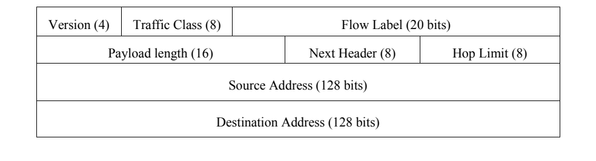
図2-1. IPv6パケットヘッダー形式（フィールドサイズはビット単位）。4行の表形式の図である。1行目は「Version (4)」（バージョン）、「Traffic Class (8)」（トラフィッククラス）、「Flow Label (20 bits)」（フローラベル）。2行目は「Payload length (16)」（ペイロード長）、「Next Header (8)」（次ヘッダー）、「Hop Limit (8)」（ホップ制限）。3行目は「Source Address (128 bits)」（送信元アドレス）。4行目は「Destination Address (128 bits)」（宛先アドレス）である。
Figure 2-1. The IPv6 Packet Header Format (Field Sizes in Bits)7
図2-1. IPv6パケットヘッダー形式（フィールドサイズはビット単位）7
2.3.4 Extension Headers
2.3.4 拡張ヘッダー
An IPv4 header can be extended from 20 bytes to a maximum of 60 bytes, but this option is rarely used because it impedes performance and is often administratively prohibited for security reasons. IPv6 has a new method to handle options, which allows substantially improved processing and avoids some of the security problems that IPv4 options generated. IPv6 RFC 2460 defines six extension headers: hop-by-hop option header, routing header, fragment header, destination options header, authentication header (AH), and encapsulating security payload (ESP) header. Each extension header is identified by the Next Header field in the preceding header. Section 3.4 describes extension headers in detail.
IPv4ヘッダーは20バイトから最大60バイトまで拡張できるが、性能を損ない、セキュリティ上の理由から管理者に禁止されることも多いため、このオプションはほとんど使われない。IPv6にはオプションを扱う新しい方法があり、大幅に効率よく処理できるとともに、IPv4のオプションが生み出したセキュリティ上の問題の一部を回避できる。IPv6 RFC 2460は、ホップバイホップオプションヘッダー、ルーティングヘッダー、フラグメントヘッダー、宛先オプションヘッダー、認証ヘッダー（AH）、カプセル化セキュリティペイロード（ESP）ヘッダーの6つの拡張ヘッダーを定義している。各拡張ヘッダーは、直前のヘッダーにある次ヘッダーフィールドによって識別される。拡張ヘッダーについては第3.4節で詳しく説明する。
2.3.5 Mandatory Internet Protocol Security (IPsec) Support
2.3.5 インターネットプロトコルセキュリティ（IPsec）の必須サポート
IP security (IPsec) is a suite of protocols for securing Internet Protocol (IP) communications by authenticating the sender and providing integrity protection plus optionally confidentiality for the transmitted data. This is accomplished through the use of two extension headers: the Encapsulating Security Payload (ESP) and the Authentication Header (AH). The negotiation and management of IPsec security protections and the associated secret keys is handled by the Internet Key Exchange (IKE) protocol. IPsec is a mandatory part of an IPv6 implementation; however, its use is not required. IPsec is also specified for securing particular IPv6 protocols (e.g., Mobile IPv6 and OSPFv3 [Open Shortest Path First version 3]). Section 5.3 describes IPsec in detail.
IPセキュリティ（IPsec）は、インターネットプロトコル（IP）通信を保護する一連のプロトコルである。送信者を認証し、送信データの完全性を保護するとともに、必要に応じて機密性も確保する。これは、カプセル化セキュリティペイロード（ESP）と認証ヘッダー（AH）という2つの拡張ヘッダーを使って実現する。IPsecのセキュリティ保護と関連する秘密鍵の交渉および管理は、インターネット鍵交換（IKE）プロトコルが担う。IPsecはIPv6実装の必須要素であるが、使用が義務付けられているわけではない。モバイルIPv6やOSPFv3（Open Shortest Path First version 3）など、特定のIPv6プロトコルを保護する目的でもIPsecが規定されている。IPsecについては第5.3節で詳しく説明する。
2.3.6 Mobility
2.3.6 モビリティ
Mobile IPv6 (MIPv6) is an enhanced protocol supporting roaming for a mobile node, so that it can move from one network to another without losing IP-layer connectivity (as defined in RFC 3775). RFC 3344, IP Mobility Support for IPv4, describes Mobile IP concepts and specifications for IPv4. Nevertheless, using Mobile IP with IPv4 has various limitations, such as limited address space, dependence on address resolution protocol (ARP), and challenges with handover when a device moves from one access point to another. Mobile IPv6 uses IPv6’s vast address space and Neighbor Discovery (RFC 4861) to solve the handover problem at the network layer and maintain connections to applications and services if a device changes its temporary IP address. Mobile IPv6 also introduces new security concerns such as route optimization (RFC 4449) where data flow between the home agent and mobile node will need to be appropriately secured.
モバイルIPv6（MIPv6）は、モバイルノードのローミングをサポートする拡張プロトコルであり、モバイルノードがIP層の接続性を失うことなく、あるネットワークから別のネットワークへ移動できるようにする（RFC 3775で定義）。RFC 3344「IP Mobility Support for IPv4」は、IPv4向けのモバイルIPの概念と仕様を記述している。しかし、IPv4でモバイルIPを使用することには、限られたアドレス空間、アドレス解決プロトコル（ARP）への依存、デバイスがあるアクセスポイントから別のアクセスポイントへ移動する際のハンドオーバーの課題など、さまざまな制約がある。モバイルIPv6は、IPv6の広大なアドレス空間と近隣探索（RFC 4861）を利用して、ネットワーク層でハンドオーバーの問題を解決し、デバイスの一時的なIPアドレスが変わってもアプリケーションやサービスへの接続を維持する。モバイルIPv6はまた、ホームエージェントとモバイルノードの間のデータフローを適切に保護する必要があるルート最適化（RFC 4449）のような、新たなセキュリティ上の懸念ももたらす。
Section 4.4 describes Mobile IPv6 in detail.
モバイルIPv6については第4.4節で詳しく説明する。
2.3.7 Quality of Service (QoS)
2.3.7 サービス品質（QoS）
IP (for the most part) treats all packets alike, as they are forwarded with best effort treatment and no guarantee for delivery through the network. TCP (Transmission Control Protocol) adds delivery confirmations but has no options to control parameters such as delay or bandwidth allocation. QoS offers enhanced policy-based networking options to prioritize the delivery of information. Existing IPv4 and IPv6 implementations use similar QoS capabilities, such as Differentiated Services and Integrated Services, to identify and prioritize IP-based communications during periods of network congestion. Within the IPv6 header two fields can be used for QoS, the Traffic Class and Flow Label fields. The new Flow Label field and enlarged Traffic Class field in the main IPv6 header allow more efficient and finer grained differentiation of various types of traffic. The new Flow Label field can contain a label identifying or prioritizing a certain packet flow such as voice over IP (VoIP) or videoconferencing, both of which are sensitive to timely delivery. IPv6 QoS is still a work in progress and security should be given increased consideration in this stage of development. Section 4.3 describes QoS in detail.
IPは（ほとんどの場合）すべてのパケットを同様に扱う。ベストエフォートで転送され、ネットワークを通じた配送は保証されない。TCP（伝送制御プロトコル）は配送確認を追加するが、遅延や帯域幅の割当てなどのパラメーターを制御するオプションはない。QoSは、ポリシーに基づいて情報配送の優先順位を設定する拡張ネットワーク機能を提供する。既存のIPv4およびIPv6実装では、差別化サービスや統合サービスなど、類似したQoS機能を使って、ネットワークが混雑している期間にIP通信を識別し、優先順位を付ける。IPv6ヘッダーでは、トラフィッククラスフィールドとフローラベルフィールドの2つをQoSに使用できる。基本IPv6ヘッダーに追加されたフローラベルフィールドと拡張されたトラフィッククラスフィールドにより、さまざまな種類のトラフィックをより効率的かつ細かく区別できる。新しいフローラベルフィールドには、音声IP（VoIP）やビデオ会議など、適時の配送が重要なパケットフローを識別または優先するラベルを格納できる。IPv6 QoSは現在も開発中であり、この段階ではセキュリティをより重視する必要がある。QoSについては第4.3節で詳しく説明する。
2.3.8 Route Aggregation
2.3.8 経路集約
IPv6 incorporates a hierarchal addressing structure and has a simplified header allowing for improved routing of information from a source to a destination. The large amount of address space allows organizations with large numbers of connections to obtain blocks of contiguous address space. Contiguous address space allows organizations to aggregate addresses under one prefix for identification on the Internet. This structured approach to addressing reduces the amount of information Internet routers must maintain and store and promotes faster routing of data77. Additionally, it is envisioned that IPv6 addresses will primarily be allocated only from Internet Service Providers (ISPs) to customers. This will allow for ISPs to summarize route advertisements to minimize the size of the IPv6 Internet routing tables. This is covered in more detail in Section 3.2.
IPv6は階層的なアドレス構造と簡素化されたヘッダーを備えており、送信元から宛先への情報のルーティングを改善できる。アドレス空間が広いため、多数の接続を持つ組織は、連続したアドレス空間のブロックを取得できる。連続するアドレス空間があれば、インターネット上で識別するために、1つのプレフィックスの下にアドレスを集約できる。この構造化されたアドレス指定により、インターネットルーターが保持・保存する必要のある情報量が減り、データのルーティングが高速化する。7また、IPv6アドレスは主にインターネットサービスプロバイダー（ISP）から顧客にのみ割り当てられることが想定されている。これにより、ISPは経路広告を要約し、IPv6インターネットのルーティングテーブルのサイズを小さくできる。詳細は第3.2節で説明する。
2.3.9 Efficient Transmission
2.3.9 効率的な伝送
IPv6 packet fragmentation control occurs at the IPv6 source host, not at an intermediate IPv6 router. With IPv4, a router can fragment a packet when the Maximum Transmission Unit (MTU) of the next link is smaller than the packet it has to send. The router does this by slicing a packet to fit into the smaller MTU and sends it out as a set of fragments. The destination host collects the fragments and reassembles them. All fragments must arrive for the higher level protocol to get the packet. Therefore, when one fragment is missing or an error occurs, the entire transmission has to be redone. In IPv6, a host uses a procedure called Path Maximum Transmission Unit (PMTU) Discovery to learn the path MTU size and eliminate the need for routers to perform fragmentation. The IPv6 Fragment Extension Header is used when an IPv6 host wants to fragment a packet, so fragmentation occurs at the source host, not the router, which allows efficient transmission. PMTU is discussed in Section 3.5.5, and Section 4.5 describes efficient transmission in detail.
IPv6パケットのフラグメント化は、途中のIPv6ルーターではなく、送信元のIPv6ホストが制御する。IPv4では、次のリンクの最大伝送単位（MTU）が送信対象のパケットより小さい場合、ルーターがパケットをフラグメント化できる。ルーターはパケットを小さいMTUに収まる大きさに分割し、複数のフラグメントとして送信する。宛先ホストはフラグメントを収集して再構成する。上位層プロトコルがパケットを受け取るには、すべてのフラグメントが到着しなければならない。そのため、フラグメントが一つでも欠けたり、エラーが発生したりすると、伝送全体をやり直す必要がある。IPv6では、ホストがパス最大伝送単位（PMTU）探索という手順を使って経路のMTUサイズを調べ、ルーターによるフラグメント化を不要にする。IPv6ホストがパケットをフラグメント化するときはIPv6フラグメント拡張ヘッダーを使うため、フラグメント化はルーターではなく送信元ホストで行われ、効率的な伝送が可能になる。PMTUは第3.5.5節で扱い、効率的な伝送については第4.5節で詳しく説明する。
2.4 IPv4 and IPv6 Threat Comparison
2.4 IPv4とIPv6の脅威の比較
The deployment of IPv6 can lead to new challenges with respect to the types of threats facing an organization. This section provides a high-level overview as to how threats differ from an IPv4 environment to an IPv6 environment and combined IPv4-IPv6 environment. The following chapters provide additional details to these threats as required. It should be noted that many IPv6 threat discussions rely on IPsec to provide protection against attack. Due to issues with key management and overall configuration complexity (including applications), it is possible that IPsec will not be deployed much more than it is with IPv4 today for initial IPv6 use. IPsec is covered in detail in Section 5.3.
IPv6の導入により、組織が直面する脅威の種類に関して新たな課題が生じる可能性がある。本節では、IPv4環境、IPv6環境、IPv4とIPv6の混在環境で脅威がどのように異なるかを概説する。必要に応じて、後続の章で各脅威をさらに詳しく説明する。IPv6の脅威に関する議論の多くは、攻撃からの保護をIPsecに依拠している。ただし、鍵管理の問題や全体的な設定の複雑さ（アプリケーションを含む）を考えると、初期のIPv6利用においてIPsecが現在のIPv4環境を大きく上回って導入されない可能性がある。IPsecについては第5.3節で詳しく説明する。
Network reconnaissance is typically the first step taken by an attacker to identify assets for exploitation (RFC 5157).8 Reconnaissance attacks in an IPv6 environment differ dramatically from current IPv4 environments. Due to the size of IPv6 subnets (264 in a typical IPv6 environment compared to 28 in a typical IPv4 environment), traditional IPv4 scanning techniques that would normally take seconds could take years on a properly designed IPv6 network. This does not mean that reconnaissance attacks will go away in an IPv6 environment; it is more likely that the tactics used for network reconnaissance will be modified. Attackers will still be able to use passive techniques, such as Domain Name System (DNS) name server resolution, to identify victim networks for more targeted exploitation. Additionally, if an attacker is able to obtain access to one system on an IPv6 subnet, the attacker will be able to leverage IPv6 neighbor discovery to identify hosts on the local subnet for exploitation. Neighbor discovery-based attacks will also replace counterparts on IPv4 such as ARP spoofing.
ネットワーク偵察は通常、攻撃者が悪用対象の資産を特定するために最初に行う手順である（RFC 5157）。8 IPv6環境の偵察攻撃は、現在のIPv4環境とは大きく異なる。IPv6サブネットの規模（一般的なIPv6環境では2の64乗、一般的なIPv4環境では2の8乗）を考えると、適切に設計されたIPv6ネットワークでは、通常なら数秒で済む従来のIPv4スキャンに何年もかかる可能性がある。これは、IPv6環境で偵察攻撃がなくなるという意味ではない。ネットワーク偵察に使われる戦術が変わる可能性のほうが高いであろう。攻撃者は引き続き、ドメインネームシステム（DNS）のネームサーバー解決などの受動的手法を使い、より標的を絞った悪用に向けて被害ネットワークを特定できる。また、攻撃者がIPv6サブネット上の1つのシステムにアクセスできれば、IPv6近隣探索を利用してローカルサブネットのホストを特定し、悪用できる。近隣探索に基づく攻撃は、ARPスプーフィングなどIPv4における同種の攻撃に取って代わるであろう。
Prevention of unauthorized access to IPv6 networks will likely be more difficult in the early years of IPv6 deployments. IPv6 adds more components to be filtered than IPv4, such as extension headers, multicast addressing, and increased use of ICMP. These extended capabilities of IPv6, as well as the possibility of an IPv6 host having a number of global IPv6 addresses, potentially provides an environment that will make network-level access easier for attackers due to improper deployment of IPv6 access controls. Moreover, security related tools and accepted best practices have been slow to accommodate IPv6. Either these items do not exist or have not been stress tested in an IPv6 environment. Nevertheless, global aggregation of IPv6 addresses by ISPs should allow enhanced anti-spoofing filtering across the Internet where implemented.
IPv6導入の初期には、IPv6ネットワークへの不正アクセスを防ぐことがより困難になる可能性がある。IPv6では、IPv4より多くの要素（拡張ヘッダー、マルチキャストアドレス指定、ICMPの利用増加など）をフィルタリングする必要がある。IPv6の拡張機能に加え、IPv6ホストが複数のグローバルIPv6アドレスを持つ可能性があるため、IPv6アクセス制御が不適切に導入されると、ネットワーク層で攻撃者がアクセスしやすい環境になり得る。さらに、セキュリティ関連ツールや広く認められたベストプラクティスのIPv6対応は遅れている。そうしたツールや慣行が存在しないか、IPv6環境での負荷試験を十分に受けていない場合がある。それでも、ISPがIPv6アドレスをグローバルに集約すれば、実装されているインターネット全体で、なりすまし防止フィルタリングの強化が可能になるはずである。
Attacks that focus on exploitation above the IP layer, such as application-based attacks and viruses, will not see a difference in the types of threats faced in an IPv6 environment. Most likely, some worms will use modified IPv6 reconnaissance techniques for exploitation. Additionally, because many IPv4 broadcast capabilities have been replaced with IPv6 multicast functionality, broadcast amplification attacks will no longer exist in an IPv6 environment.
アプリケーションベースの攻撃やウイルスなど、IP層より上位の層を悪用する攻撃では、IPv6環境でも脅威の種類に違いは生じない。一部のワームは、IPv6向けに変更した偵察手法を悪用に用いると考えられる。また、IPv4のブロードキャスト機能の多くはIPv6のマルチキャスト機能に置き換えられたため、IPv6環境ではブロードキャスト増幅攻撃は発生しなくなる。
From this comparison of IPv4 and IPv6 threats, one can surmise that IPv6 will not inherently be either more or less secure than IPv4. While organizations are in the process of deploying IPv6, the lack of robust IPv6 security controls (described in Section 6) and a lack of overall understanding of IPv6 by security staff may allow attackers to exploit IPv6 assets or leverage IPv6 access to further exploit IPv4 assets. There is a very likely possibility that many IPv6 services will rely on tunneling IPv6 traffic in IPv4 for infrastructures that do support the protocol, which will also increase the complexity for security staff. Additionally, since IPv6 systems and capabilities are not yet widely used in production environments, there is a distinct possibility that the number of vulnerabilities in software from implementing IPv6 capabilities could rise, as IPv6 networks are increasingly deployed.
IPv4とIPv6の脅威のこの比較から、IPv6は本質的にIPv4より安全とも危険ともいえないと推測できる。組織がIPv6を導入している間は、強固なIPv6セキュリティ制御（第6節で説明）の欠如と、セキュリティ担当者によるIPv6全般の理解の不足により、攻撃者がIPv6資産を悪用したり、IPv6経由のアクセスを利用してIPv4資産をさらに悪用したりするおそれがある。そのプロトコルをサポートする基盤では、多くのIPv6サービスが、IPv6トラフィックをIPv4内でトンネリングすることに依存する可能性が非常に高く、これもセキュリティ担当者にとっての複雑さを増すことになる。また、IPv6システムと機能はまだ本番環境で広く使われていないため、IPv6ネットワークの導入が進むにつれて、IPv6機能の実装に起因するソフトウェアの脆弱性の数が増える可能性も十分にある。
Based on of the threat comparison between IPv4 and IPv6, the following actions are recommended to mitigate IPv6 threats during the deployment process:
IPv4とIPv6の脅威比較に基づき、導入過程においてIPv6の脅威を緩和するために、次の対応を推奨する。
•Apply different types of IPv6 addressing (privacy addressing, unique local addressing, sparse allocation, etc) to limit access and knowledge of IPv6-addressed environments.
•IPv6アドレス指定の異なる種類（プライバシーアドレス指定、ユニークローカルアドレス指定、疎な割当てなど）を使い、IPv6アドレス指定環境へのアクセスとその情報の把握を制限する。
•Assign subnet and interface identifiers randomly to increase the difficulty of network scanning.
•ネットワークスキャンを困難にするため、サブネット識別子とインターフェース識別子をランダムに割り当てる。
•Develop a granular ICMPv6 filtering policy for the enterprise. Ensure that ICMPv6 messages that are essential to IPv6 operation are allowed, but others are blocked.
•組織内できめ細かなICMPv6フィルタリングポリシーを策定する。IPv6の動作に不可欠なICMPv6メッセージは許可し、それ以外は遮断すること。
•Use IPsec to authenticate and provide confidentiality to assets that can be tied to a scalable trust model (an example is access to Human Resources assets by internal employees that make use of an organization’s Public Key Infrastructure (PKI) to establish trust).
•組織の公開鍵基盤（PKI）を使って信頼を確立する内部職員が人事情報へアクセスする例のように、拡張可能な信頼モデルに結び付けられる資産を認証し、その機密性を保護するためにIPsecを使用する。
•Identify capabilities and weaknesses of network protection devices in an IPv6 environment.
•IPv6環境におけるネットワーク保護装置の機能と弱点を特定する。
•Enable controls that might not have been used in IPv4 due to a lower threat level during initial deployment (implementing default deny access control policies, implementing routing protocol security, etc).
•導入初期の脅威レベルが低かったためIPv4で使われていなかった可能性のある制御を有効にする（デフォルト拒否のアクセス制御ポリシー、ルーティングプロトコルのセキュリティなど）。
•Pay close attention to the security aspects of transition mechanisms such as tunneling protocols.
•トンネリングプロトコルなど、移行メカニズムのセキュリティ面に十分注意する。
•On networks that are IPv4-only, block all IPv6 traffic.
•IPv4のみのネットワークでは、すべてのIPv6トラフィックを遮断する。
2.5 Motivations for Deploying IPv6
2.5 IPv6を導入する動機
IP technologies were invented in the United States, and the early adoption of those technologies occurred predominantly in the United States. As mentioned in Section 2.2, early address allocation policies were relatively relaxed and large quantities of IPv4 addresses were assigned upon request, even when those allocations were not thoroughly justified. This resulted in a high concentration of IPv4 address allocations in the United States, with more than half of all routable IPv4 addresses assigned to U.S.-based organizations. Some large U.S.-based Internet backbone service providers have more IPv4 addresses than all of the nations that comprise the Asian region of the world.
IP技術は米国で発明され、その初期の普及も主に米国で進んだ。第2.2節で触れたとおり、初期のアドレス割当てポリシーは比較的緩やかで、割当ての必要性が十分に説明されていない場合でも、大量のIPv4アドレスが申請に応じて割り当てられていた。その結果、IPv4アドレスの割当ては米国に高度に集中し、ルーティング可能なIPv4アドレスの半分以上が米国を拠点とする組織に割り当てられた。米国の大規模なインターネット基幹サービスプロバイダーの中には、アジア地域を構成するすべての国を合わせた数より多くのIPv4アドレスを持つところもある。
These circumstances have left most of the world, especially Asia, with little choice other than to adopt the IPv6 specification if they are to become pervasive participants in IP technologies or the global Internet at large. Nations such as Japan have built IPv6-capable Internet infrastructures to support their growing demand for Internet connectivity. Further, the advanced state of wireless telecommunications in Asia produced an environment where globally unique IP addresses are required to enable the features of Third Generation (3G) wireless technologies. In essence, every mobile 3G device becomes a mobile personal computing platform, and each of those devices requires true end-to-end connectivity to realize its full potential.
こうした事情により、世界の大半、特にアジアは、IP技術やグローバルインターネット全体に広く参加しようとするなら、IPv6仕様を採用する以外にほとんど選択肢がない状況に置かれている。日本などの国々は、増大するインターネット接続需要を支えるため、IPv6対応のインターネット基盤を構築してきた。さらに、アジアでは無線通信が高度に発展していたことから、第3世代（3G）無線技術の機能を実現するためにグローバルに一意なIPアドレスが必要となる環境が生まれた。実質的に、すべての3Gモバイル機器はモバイル型のパーソナルコンピューティングプラットフォームとなり、その能力を十分に発揮するには、各機器に真のエンドツーエンド接続が必要である。
All organizations making use of IP networking should study and consider IPv6’s feature set when designing and managing their networks. Even with no intent to replace IPv4, the IPv6 security controls discussed later in this document should be planned and deployed to detect unauthorized use of IPv6. Fundamental knowledge of IPv6—what it is, what its attributes are, and how it operates—is critical to any organization.
IPネットワークを利用するすべての組織は、ネットワークを設計・管理する際に、IPv6の機能一式を調査し検討すること。IPv4を置き換える意図がない場合でも、IPv6の不正利用を検出するため、本書の後半で説明するIPv6セキュリティ制御を計画し、導入すること。IPv6とは何か、その属性は何か、どのように動作するかという基本知識は、どの組織にとっても重要である。
As the IPv6 protocol becomes increasingly ubiquitous, all enterprise and Internet-connected networks need to be prepared for specific threats and vulnerabilities that the new protocol will bring. For example, an IPv4-only network segment may contain several newly installed hosts that are both IPv4 and IPv6-capable, as well as hosts that have IPv6 enabled by default. This circumstance can come about simply as a result of the normal systems life cycles. Additionally, IPv6 could be enabled on a host by an attacker to circumvent security controls that may not be IPv6-aware; these hosts can then be leveraged to create covert or backdoor channels. Taken further, IPv6 traffic could be encapsulated within IPv4 packets using readily available tools and services and exchanged with malicious hosts via the Internet.
IPv6プロトコルがますます普及するにつれて、企業ネットワークとインターネット接続ネットワークは、新しいプロトコルがもたらす固有の脅威や脆弱性に備える必要がある。たとえば、IPv4のみのネットワークセグメントに、IPv4とIPv6の両方に対応する新規ホストや、デフォルトでIPv6が有効なホストが含まれていることがある。これは通常のシステム更新サイクルの結果として起こり得る。また、攻撃者がホスト上でIPv6を有効にし、IPv6を認識しないセキュリティ制御を回避する場合もある。そのようなホストを利用して、秘密の通信経路やバックドアを作成できる。さらに、容易に入手できるツールやサービスを使ってIPv6トラフィックをIPv4パケット内にカプセル化し、インターネット経由で悪意あるホストとやり取りすることも可能である。
Interoperability of geographically dispersed Internet-connected nodes may become a profit motivation for some organizations to deploy IPv6. For instance, content providers are making more multimedia features available via a diverse set of customer platforms. Mobile phones, handheld personal computers, notebook computers, desktop PCs, and home multimedia and gaming centers are all IPv4-capable today. Delivering multimedia content to those platforms is increasingly viable given the broadband network bandwidths available. Nevertheless, IPv4 clearly cannot address all of these devices without using an address conservation technology like NAT, and NAT by its nature denies true end-to-end IP connectivity. Multimedia service offerings and ultimately the market for those offerings are likely always to be constrained by IPv4, while IPv6 may prove to be an enabling technology.
地理的に離れたインターネット接続ノード間の相互運用性は、一部の組織にとってIPv6を導入する経済的な動機になる場合がある。たとえば、コンテンツプロバイダーは多様な顧客プラットフォーム向けに、より多くのマルチメディア機能を提供している。携帯電話、ハンドヘルド型パーソナルコンピューター、ノートパソコン、デスクトップPC、家庭用マルチメディア機器やゲーム機は、現在いずれもIPv4に対応している。利用可能なブロードバンドの通信帯域を考えると、それらのプラットフォームへマルチメディアコンテンツを配信することは、ますます現実的になっている。それでも、NATのようなアドレス節約技術を使わずにIPv4ですべての機器にアドレスを割り当てることは明らかにできず、NATはその性質上、真のエンドツーエンドIP接続を妨げる。マルチメディアサービスとその市場は、IPv4によって常に制約される可能性があるが、IPv6はそれを可能にする技術となり得る。
If an organization is not constrained by IPv4 address availability or the disruption that NAT causes to true end-to-end connectivity between nodes, it should still plan for a world in which IPv6 will eventually be ubiquitous. All major vendors of IT products are shipping IPv6-capable products. Wholesale replacement of computing platforms and network infrastructure as a deployment requirement is less likely now than only five years ago, since many operating systems and networking products contain a native IPv6 protocol stack. Also, tunneling IPv6 over the existing IPv4 Internet is possible today by using free, readily available tunnel clients. An end user may download client software, obtain a routable IPv6 address, and begin tunneling IPv6 over IPv4 networks with few technical or administrative barriers. Many open source IP networking tools are IPv6-capable, as are many consumer-oriented wireless access points. Many consumers of personal computing and home networking equipment are IPv6-capable, even if they do not use the features.
IPv4アドレスの可用性や、NATがノード間の真のエンドツーエンド接続に与える支障による制約を受けていない組織であっても、最終的にIPv6が広く普及する世界を見据えて計画すべきである。主要なIT製品ベンダーはすべてIPv6対応製品を出荷している。多くのOSやネットワーク製品にはネイティブのIPv6プロトコルスタックが含まれているため、導入要件としてコンピューティングプラットフォームとネットワーク基盤を全面的に置き換えることになる可能性は、わずか5年前に比べて低くなっている。また、無償で容易に入手できるトンネルクライアントを使い、既存のIPv4インターネット上でIPv6をトンネリングすることも現在は可能である。エンドユーザーはクライアントソフトウェアをダウンロードしてルーティング可能なIPv6アドレスを取得し、技術面・管理面の障壁がほとんどないまま、IPv4ネットワーク上でIPv6のトンネリングを開始できる。多くのオープンソースIPネットワークツールはIPv6に対応しており、多くの一般消費者向け無線アクセスポイントも同様である。パーソナルコンピューティング機器や家庭用ネットワーク機器の利用者の多くは、その機能を使っていなくても、IPv6に対応している。
Because of the increasing availability and use of IPv6, as well as many years of coexistence between IPv6 and IPv4, management and technical experts within any organization should understand IPv6 technology—its background, basis, and capabilities, and how they can mitigate risks associated with running dual stack IPv4 and IPv6 networks. In the context of this document, dual stack means that nodes are running both IPv4 and IPv6 protocols concurrently. The remainder of this document examines certain aspects of the IPv6 specification in detail, and discusses threats, vulnerabilities, and the mitigation of risks, in detail.
IPv6の利用可能性と利用が拡大し、IPv6とIPv4の共存期間が長期化しているため、どの組織でも管理者と技術者は、IPv6技術の背景、基礎、機能、およびIPv4/IPv6デュアルスタックネットワークの運用リスクをどのように緩和できるかを理解する必要がある。本書では、デュアルスタックとは、ノードがIPv4とIPv6の両プロトコルを同時に実行している状態を指す。本書の残りの部分では、IPv6仕様の一部を詳しく検討し、脅威、脆弱性、リスク緩和について説明する。
3. IPv6 Overview
3. IPv6の概要
From the standpoint of header design, IPv6 is both more powerful and more flexible than its IPv4 predecessor. Section 2.3 introduced a number of enhancements and features in IPv6. Most significant is the vast amount of address space, along with support for orderly address assignment and efficient network address aggregation on the Internet. Illustrated in Table 3-1 are some of the major differences between IPv4 and IPv6 followed by basic IPv6 terminology used later in this guide. These differences can have implications for IPv6 security and are discussed throughout this and subsequent sections.
ヘッダー設計の観点から、IPv6は前身のIPv4より高機能であり、かつ柔軟性も高い。第2.3節ではIPv6の多くの改良点と機能を紹介した。特に重要なのは、膨大なアドレス空間と、秩序立ったアドレス割当ておよびインターネット上での効率的なネットワークアドレス集約のサポートである。表3-1にIPv4とIPv6の主な相違点の一部を示し、続いて本ガイドの後半で使用する基本的なIPv6用語を示す。これらの相違点はIPv6のセキュリティに影響する可能性があり、本節および以降の節を通じて説明する。
Table 3-1. Differences between IPv4 and IPv69
表3-1. IPv4とIPv6の相違点9
| Property | IPv4 | IPv6 |
|---|---|---|
| Address size and network size | 32 bits, network size 8-30 bits | 128 bits, network size 64 bits |
| Packet header size | 20-60 bytes | 40 bytes |
| Header-level extension | limited number of small IP options | unlimited number of IPv6 extension headers |
| Fragmentation | sender or any intermediate router allowed to fragment | only sender may fragment |
| Control protocols | mixture of non-IP (ARP), ICMP, and other protocols | all control protocols based on ICMPv6 |
| Minimum allowed MTU | 576 bytes | 1280 bytes |
| Path MTU discovery | optional, not widely used | strongly recommended |
| Address assignment | usually one address per host | usually multiple addresses per interface |
| Address types | use of unicast, multicast, and broadcast address types | broadcast addressing no longer used, use of unicast, multicast and anycast address types |
| Address configuration | devices configured manually or with host configuration protocols like DHCP | devices configure themselves independently using stateless address autoconfiguration (SLAAC) or use DHCP |
| 特性 | IPv4 | IPv6 |
|---|---|---|
| アドレスサイズとネットワークサイズ | 32ビット、ネットワークサイズ8～30ビット | 128ビット、ネットワークサイズ64ビット |
| パケットヘッダーサイズ | 20～60バイト | 40バイト |
| ヘッダーレベルの拡張 | 小さなIPオプションの数に限りがある | IPv6拡張ヘッダーの数に制限がない |
| フラグメンテーション | 送信元または任意の中間ルータがフラグメント化できる | 送信元のみがフラグメント化できる |
| 制御プロトコル | 非IP（ARP）、ICMP、その他のプロトコルの混在 | すべての制御プロトコルがICMPv6に基づく |
| 許容される最小MTU | 576バイト | 1280バイト |
| パスMTU探索 | 任意であり、広く使われていない | 強く推奨される |
| アドレスの割当て | 通常、ホストごとに1つのアドレス | 通常、インターフェースごとに複数のアドレス |
| アドレスの種類 | ユニキャスト、マルチキャスト、ブロードキャストの各アドレス種別を使用 | ブロードキャストアドレス指定は使用されなくなり、ユニキャスト、マルチキャスト、エニーキャストの各アドレス種別を使用 |
| アドレスの設定 | デバイスは手動で、またはDHCPなどのホスト構成プロトコルで設定される | デバイスはステートレスアドレス自動設定（SLAAC）を用いて自律的に設定するか、DHCPを使用する |
Basic Terms (RFC 2460, RFC 4862)
基本用語（RFC 2460、RFC 4862）
The following basic IPv6 definitions are important for any IPv6 discussion.
以下のIPv6の基本定義は、IPv6に関するあらゆる議論において重要である。
•Address. An IPv6-layer identifier for an interface or a set of interfaces.
•アドレス。インターフェースまたはインターフェース群を識別するIPv6層の識別子。
•Node. A device on the network that sends and receives IPv6 packets
•ノード。IPv6パケットを送受信するネットワーク上のデバイス。
•Deprecated address. An address, assigned to an interface, whose use is discouraged, but not forbidden (e.g., site-local addresses such as FEC0::/10). A deprecated address should no longer be used as a source address in new communications, but packets sent from or to deprecated addresses are delivered as expected.
•非推奨アドレス。インターフェースに割り当てられたアドレスであり、使用は推奨されないものの禁止されてはいない（例：FEC0::/10などのサイトローカルアドレス）。新しい通信では非推奨アドレスを送信元アドレスとして使用すべきではないが、非推奨アドレス宛て、または非推奨アドレスから送信されたパケットは想定どおりに配信される。
•Router. A node that sends and receives packets, and also accepts packets and forwards them on behalf of other nodes.
•ルーター。パケットを送受信し、さらに他のノードに代わってパケットを受け取り転送するノード。
•Host. A node that may send and receive packets but does not forward packets for other nodes.
•ホスト。パケットを送受信できるが、他のノードのパケットを転送しないノード。
•Link. A communication facility or medium over which nodes can communicate at the link layer, i.e., the layer immediately below IPv6. Examples are Ethernets (simple or bridged); Point-to-Point Protocol (PPP); X.25, Frame Relay, or Asynchronous Transfer Mode (ATM) networks; and layer three (or higher) tunnels, such as tunnels over IPv4 or IPv6 itself.
•リンク。ノードがリンク層（IPv6の直下の層）で通信するための通信設備または媒体。例として、イーサネット（単純なものまたはブリッジ接続されたもの）、ポイントツーポイントプロトコル（PPP）、X.25、フレームリレー、非同期転送モード（ATM）ネットワーク、およびIPv4やIPv6自体の上に構成するトンネルなどの第3層以上のトンネルがある。
•Link MTU. The maximum transmission unit (MTU), i.e., maximum packet size in octets, which can be conveyed over a link.
•リンクMTU。リンク上で伝送できる最大伝送単位（MTU）、すなわちオクテット単位の最大パケットサイズ。
•Path MTU. The minimum link MTU of all the links in a path between a source node and a destination node.
•パスMTU。送信元ノードと宛先ノードの間の経路を構成するすべてのリンクMTUのうち、最小の値。
•Upper Layer. A protocol layer immediately above IPv6. Examples are transport protocols such as Transmission Control Protocol (TCP) and User Datagram Protocol (UDP), control protocols such as Internet Message Control Protocol (ICMP), routing protocols such as Open Shortest Path First (OSPF), and internet or lower-layer protocols being tunneled over (i.e., encapsulated in) IPv6 such as Internetwork Packet Exchange (IPX), AppleTalk, or IPv6 itself.
•上位層。IPv6の直上にあるプロトコル層。例として、伝送制御プロトコル（TCP）やユーザーデータグラムプロトコル（UDP）などのトランスポートプロトコル、インターネット制御メッセージプロトコル（ICMP）などの制御プロトコル、Open Shortest Path First（OSPF）などのルーティングプロトコル、およびInternetwork Packet Exchange（IPX）、AppleTalk、IPv6自体などIPv6上でトンネリング（カプセル化）されるインターネットプロトコルまたは下位層プロトコルがある。
•Interface. The point at which a node connects to a link. Unicast IPv6 addresses are always associated with interfaces.
•インターフェース。ノードがリンクに接続する点。ユニキャストIPv6アドレスは常にインターフェースに関連付けられる。
•Packet. An IPv6 header plus payload.
•パケット。IPv6ヘッダーとペイロードを合わせたもの。
•Neighbors. Nodes attached to the same link.
•近隣ノード。同じリンクに接続されているノード。
This section provides general information about IPv6 as a foundation for later sections. The rest of this section is a resource for understanding the similarities and differences between IPv4 and IPv6, with a focus on addressing (RFC 4291). Section 3.1 discusses IPv6 addresses, how the IPv6 address space is used, and IPv6 address types and scope. This is followed by a review of IPv4 addressing and IPv4 Classless Inter-Domain Routing (CIDR) addressing. Then IPv4 and IPv6 addressing are summarized and compared. Section 3.2 covers IPv6 address allocation. IPv6 headers, their formats, and fields are discussed in Section 3.3. Sections 3.4 through 3.7 cover extension headers, ICMPv6, IPv6 routing, and IPv6 Domain Name System (DNS) respectively.
本節では、後続の節の基礎としてIPv6に関する一般情報を示す。本節の残りは、アドレス指定（RFC 4291）に重点を置いてIPv4とIPv6の類似点および相違点を理解するための資料である。第3.1節では、IPv6アドレス、IPv6アドレス空間の利用方法、IPv6アドレスの種類とスコープを説明する。続いてIPv4アドレス指定とIPv4クラスレスドメイン間ルーティング（CIDR）アドレス指定を概説し、その後、IPv4とIPv6のアドレス指定を要約して比較する。第3.2節ではIPv6アドレスの割当てを扱う。IPv6ヘッダー、その形式、およびフィールドは第3.3節で説明する。第3.4節から第3.7節では、それぞれ拡張ヘッダー、ICMPv6、IPv6ルーティング、IPv6ドメインネームシステム（DNS）を扱う。
3.1 IPv6 Addressing
3.1 IPv6アドレス指定
Described in RFC 4291, IPv6 addresses are 128 bits long and are written in what is called colon-delimited hexadecimal notation. An IPv6 address is comprised of eight distinct numbers representing 16 bits each and written in base-16 (hexadecimal or hex) notation. The valid hex digits are 0 through 9 and A through F and together with the colon separator are the only characters that can be used for writing an IPv6 address. A comparison of IPv4 and IPv6 addressing conventions is illustrated in Figure 3-5 and discussed in more detail in Section 3.1.7.
RFC 4291で説明されているとおり、IPv6アドレスは128ビットで、コロン区切りの16進表記で記述する。IPv6アドレスは、それぞれ16ビットを表す8個の値からなり、基数16（16進数）で表記する。有効な16進数字は0～9およびA～Fであり、コロン区切り記号とともに、IPv6アドレスの記述に使用できる文字はこれらだけである。IPv4とIPv6のアドレス表記規則の比較を図3-5に示し、第3.1.7節で詳しく説明する。
An example of an IPv6 address is:
IPv6アドレスの例を次に示す。
2001:0db8:9095:02e5:0216:cbff:feb2:7474
2001:0db8:9095:02e5:0216:cbff:feb2:7474
Note that the address contains eight distinct four-place hex values, separated by colons. Each of these values represents 16 bits, for a total of 128 bits in the entire address.
このアドレスは、コロンで区切られた8個の別々の4桁の16進値からなる点に注意されたい。各値は16ビットを表し、アドレス全体では合計128ビットになる。
IPv6 addresses are divided among the network prefix, the subnet identifier and the host identifier portions of the address. The network prefix is the high-order bits of an IP address, used to identify a specific network and, in some cases, a specific type of address (see Table 3-2). The subnet identifier (ID) identifies a link within a site. The subnet ID is assigned by the local administrator of the site; a single site can have multiple subnet IDs. This is used as a designator for the network upon which the host bearing the address is resident. The host identifier (host ID) of the address is a unique identifier for the node within the network upon which it resides. It is identified with a specific interface of the host. Figure 3-1 depicts the IPv6 address format with the network prefix, subnet identifier and host identifier.
IPv6アドレスは、ネットワークプレフィックス、サブネット識別子、ホスト識別子の各部分に分かれている。ネットワークプレフィックスはIPアドレスの上位ビットであり、特定のネットワーク、場合によっては特定の種類のアドレスを識別するために使われる（表3-2を参照）。サブネット識別子（ID）はサイト内のリンクを識別する。サブネットIDはサイトのローカル管理者が割り当てる。1つのサイトが複数のサブネットIDを持つこともある。これは、そのアドレスを持つホストが存在するネットワークを示す指定子として使われる。アドレスのホスト識別子（ホストID）は、ノードが存在するネットワーク内でそのノードを一意に識別する識別子である。これはホストの特定のインターフェースに対応付けられる。図3-1に、ネットワークプレフィックス、サブネット識別子、ホスト識別子からなるIPv6アドレス形式を示す。
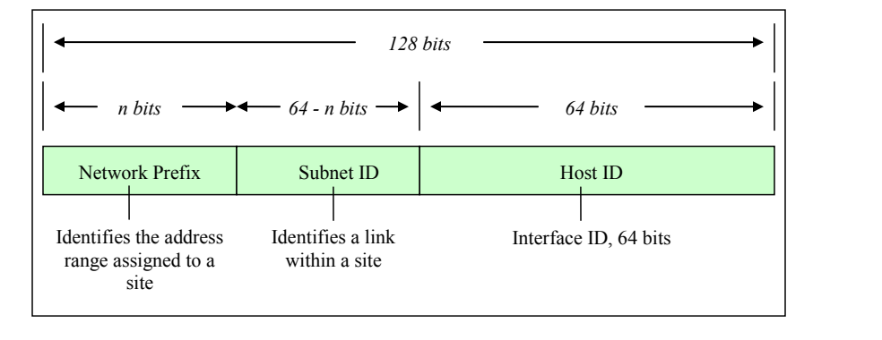
図3-1. IPv6アドレス形式。枠で囲んだ図である。上部の範囲矢印がアドレス全体の「128ビット」を示し、その下の範囲矢印が「nビット」「64 - nビット」「64ビット」を示す。その下に「Network Prefix」（ネットワークプレフィックス）、「Subnet ID」（サブネットID）、「Host ID」（ホストID）の3つの欄からなる帯があり、下にそれぞれ「サイトに割り当てられたアドレス範囲を識別する」「サイト内のリンクを識別する」「インターフェースID、64ビット」と注記されている。
Figure 3-1. IPv6 Address Format
図3-1. IPv6アドレス形式
RFC 4291 also describes the notation for prefixes. The network prefix is analogous, but not equivalent, to the subnet mask in IPv4. IPv4 addresses are written in Classless Inter-domain Routing (CIDR) notation, with a subnet mask that contains “1”s in the bit positions that identify the network ID (see Section 3.1.6). There is no subnet mask in IPv6, although the slash notation used to identify the network address bits is similar to IPv4’s subnet mask notation. The IPv6 notation appends the prefix length and is written as a number of bits with a slash, which leads to the following format:
RFC 4291では、プレフィックスの表記法も説明している。ネットワークプレフィックスはIPv4のサブネットマスクに類似するが、同等のものではない。IPv4アドレスはクラスレスドメイン間ルーティング（CIDR）表記で記述され、ネットワークIDを識別するビット位置に「1」を含むサブネットマスクを伴う（第3.1.6節を参照）。IPv6にはサブネットマスクはないが、ネットワークアドレスのビットを示すために使われるスラッシュ表記はIPv4のサブネットマスク表記に似ている。IPv6の表記ではプレフィックス長を末尾に付け、スラッシュとビット数で記述する。したがって形式は次のようになる。
IPv6 address/prefix length
IPv6アドレス／プレフィックス長
The prefix length specifies how many of the address’s left-most bits comprise the network prefix. An example address with a 32-bit network prefix is:
プレフィックス長は、アドレスの左端から何ビットがネットワークプレフィックスを構成するかを示す。ネットワークプレフィックスが32ビットのアドレス例を次に示す。
2001:0db8:9095:02e5:0216:cbff:feb2:7474/32
2001:0db8:9095:02e5:0216:cbff:feb2:7474/32
Quantities of IPv6 addresses are assigned by the international registry services and Internet service providers (ISP) (see Section 3.2.2) based in part upon the size of the entity receiving the addresses. Large, top-tier networks may receive address allocations with a network prefix of 32 bits as long as the need is justified. In this case, the first two groupings of hex values, separated by colons, comprise the network prefix for the assignee of the addresses. The remaining 96 bits are available to the local administrator primarily for reallocation of the subnet ID and the host ID. The subnet ID identifies a link within a site, which can have multiple subnet IDs. The host ID within a network must be unique and identifies an interface on a subnet for the organization, similar to an assigned IPv4 address. Figure 3-2 depicts an IPv6 address with 32 bits allocated to the network prefix.
IPv6アドレスは、国際レジストリ機関およびインターネットサービスプロバイダー（ISP）（第3.2.2節を参照）が、アドレスを受け取る組織の規模などに基づいて割り当てる。大規模な上位ネットワークには、必要性が正当化されれば、ネットワークプレフィックス長32ビットのアドレスブロックが割り当てられることがある。この場合、コロンで区切られた最初の2組の16進値が、割当て先のネットワークプレフィックスになる。残りの96ビットは主に、サブネットIDとホストIDを再割当てするため、ローカル管理者が利用できる。サブネットIDはサイト内のリンクを識別し、1つのサイトが複数のサブネットIDを持つことがある。ネットワーク内のホストIDは一意でなければならず、組織内のサブネット上のインターフェースを識別する。これは割り当てられたIPv4アドレスに類似する。図3-2に、ネットワークプレフィックスに32ビットを割り当てたIPv6アドレスを示す。
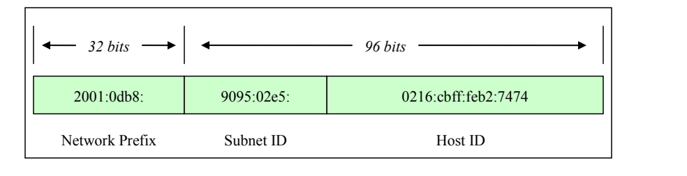
図3-2. 32ビットのネットワークプレフィックス。枠で囲んだ図である。上部の範囲矢印は、1つ目の欄が「32ビット」、残り2つの欄が「96ビット」であることを示す。その下に3つの欄「2001:0db8:」「9095:02e5:」「0216:cbff:feb2:7474」からなる帯があり、下にそれぞれ「Network Prefix」（ネットワークプレフィックス）、「Subnet ID」（サブネットID）、「Host ID」（ホストID）と記されている。
Figure 3-2. 32-Bit Network Prefix
図3-2. 32ビットのネットワークプレフィックス
Government, educational, commercial, and other networks typically receive address allocations from top-tier providers (ISPs) with a network prefix of 48 bits (/48), leaving 80 bits for the subnet identifier and host identifier. Figure 3-3 depicts an IPv6 address with 48 bits allocated to the network prefix.
政府、教育機関、商業組織などのネットワークは通常、最上位のプロバイダー（ISP）からネットワークプレフィックス長48ビット（/48）のアドレス割当てを受け、サブネット識別子とホスト識別子に80ビットが残る。図3-3に、ネットワークプレフィックスに48ビットを割り当てたIPv6アドレスを示す。
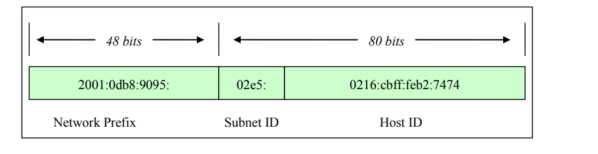
図3-3. 48ビットのネットワークプレフィックス。枠で囲んだ図である。上部の範囲矢印は、1つ目の欄が「48ビット」、残り2つの欄が「80ビット」であることを示す。その下に3つの欄「2001:0db8:9095:」「02e5:」「0216:cbff:feb2:7474」からなる帯があり、下にそれぞれ「Network Prefix」（ネットワークプレフィックス）、「Subnet ID」（サブネットID）、「Host ID」（ホストID）と記されている。
Figure 3-3. 48-Bit Network Prefix
図3-3. 48ビットのネットワークプレフィックス
Subnets within an organization often have network prefixes of 64 bits (/64), leaving 64 bits for allocation to hosts’ interfaces. The host ID should use a 64-bit interface identifier that follows EUI-64 (Extended Unique Identifier) format when a global network prefix is used (001 to 111), except in the case when multicast addresses (1111 1111) are used10. Figure 3-4 depicts an IPv6 address with 64 bits allocated to the network prefix.
組織内のサブネットは多くの場合、ネットワークプレフィックス長が64ビット（/64）であり、ホストのインターフェースに割り当てる64ビットが残る。グローバルネットワークプレフィックス（001～111）を使う場合、マルチキャストアドレス（1111 1111）を使う場合を除き、ホストIDにはEUI-64（拡張一意識別子）形式に従う64ビットのインターフェース識別子を使用すべきである。10 図3-4に、ネットワークプレフィックスに64ビットを割り当てたIPv6アドレスを示す。
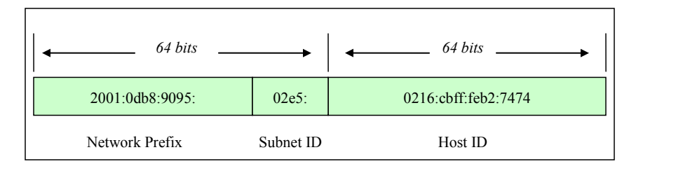
図3-4. 64ビットのネットワークプレフィックス。枠で囲んだ図である。上部の範囲矢印は、最初の2つの欄が「64ビット」、3つ目の欄が「64ビット」であることを示す。その下に3つの欄「2001:0db8:9095:」「02e5:」「0216:cbff:feb2:7474」からなる帯があり、下にそれぞれ「Network Prefix」（ネットワークプレフィックス）、「Subnet ID」（サブネットID）、「Host ID」（ホストID）と記されている。
Figure 3-4. 64-Bit Network Prefix
図3-4. 64ビットのネットワークプレフィックス
3.1.1 Shorthand for Writing IPv6 Addresses
3.1.1 IPv6アドレスの省略表記
Due to their length, IPv6 addresses do not lend themselves to human memorization. Administrators of IPv4 networks typically can recall multiple IPv4 network and host addresses; remembering multiple IPv6 network and host addresses is more challenging. The notation for IPv6 addresses may be compressed and simplified under specific circumstances.
IPv6アドレスは長いため、人が記憶するのに向いていない。IPv4ネットワークの管理者は通常、複数のIPv4ネットワークアドレスやホストアドレスを思い出せるが、複数のIPv6ネットワークアドレスやホストアドレスを覚えるのはより困難である。IPv6アドレスの表記は、特定の条件下で圧縮し簡略化できる。
One to three zeroes that appear as the leading digits in any colon-delimited hexadecimal grouping may be dropped. This simplifies the address and makes it easier to read and to write. For example:
コロンで区切られた16進数の各グループで先頭にある0は、1～3個まで省略できる。これによりアドレスが簡潔になり、読み書きが容易になる。例を示す。
2001:0db8:0aba:02e5:0000:0ee9:0000:0444/48 becomes 2001:db8:aba:2e5:0:ee9:0:444/48
2001:0db8:0aba:02e5:0000:0ee9:0000:0444/48 は 2001:db8:aba:2e5:0:ee9:0:444/48 となる
It is important to note that trailing zeroes may not be dropped, because they have intrinsic place value in the address format.
末尾の0はアドレス形式において固有の位取りの意味を持つため、省略できない点に注意することが重要である。
Further efficiency is gained by combining all-zero portions of the address. Any colon-delimited portion of an address containing all zeros may be compressed so that nothing appears between the leading and trailing colons. For example:
アドレス内のすべてが0である部分をまとめると、さらに効率が高まる。アドレスのコロン区切りの部分のうちすべて0であるものは、前後のコロンの間に何も現れないように圧縮できる。例を示す。
2001:0db8:0055:0000:cd23:0000:0000:0205/48 becomes 2001:db8:55:0:cd23::205/48
2001:0db8:0055:0000:cd23:0000:0000:0205/48 は 2001:db8:55:0:cd23::205/48 となる
In this example, the sixth and seventh 16-bit groupings contain all zeroes; they were compressed by eliminating the zeroes completely, as well as the colon that divided the two groupings. Nevertheless, compressing an address by removing one or more consecutive colons between groups of zeroes may only be done once per address. The fourth 16 bit-grouping in the example also contains all zeroes, but in the condensed form of the address, it is represented with a single zero. A choice had to be made as to which group of zeroes was to be compressed. The example address could be written:
この例では、6番目と7番目の16ビットグループがすべて0である。これらは、0を完全に取り除くとともに、2つのグループを区切っていたコロンも取り除くことで圧縮された。ただし、0のグループの間にある1つ以上の連続するコロンを取り除いてアドレスを圧縮することは、1つのアドレスにつき1回しか行えない。例の4番目の16ビットグループもすべて0であるが、アドレスの短縮形では1個の0で表されている。どの0のグループを圧縮するかを選択しなければならなかったのである。このアドレス例は次のようにも記述できる。
2001:db8:55::cd23:0:0:205/48, but this is not as efficient as 2001:db8:55:0:cd23::205/48.
2001:db8:55::cd23:0:0:205/48。ただし、これは 2001:db8:55:0:cd23::205/48 ほど効率的ではない。
It is important to note that both of the addresses in the preceding paragraph are properly formatted, but the latter address is shorter. Compression is just a convention for writing addresses, it does not affect how an address is used, and it makes no difference whether compression falls within the network prefix, host identifier, or across both portions of the address.
前段落の2つのアドレスはいずれも正しい形式であるが、後者のほうが短い点に注意すること。圧縮はアドレスを表記するための慣例にすぎず、アドレスの使い方には影響しない。また、圧縮部分がネットワークプレフィックス、ホスト識別子、またはその両方にまたがるかどうかも、使用上の違いはない。
3.1.2 IPv6 Address Space Usage
3.1.2 IPv6アドレス空間の利用
This section introduces the different types of IPv6 addresses, their scope, and use. It introduces IPv6 addressing as basic information needed for secure adoption and deployment of the protocol. RFC 4291, IP Version 6 Addressing Architecture, is the authoritative source for information on IPv6 addressing, and it should be referenced for comprehensive details. Mechanisms for generating and assigning IPv6 addresses are discussed in detail in subsequent sections of this document.
本節では、IPv6アドレスの種類、スコープ、用途を紹介する。プロトコルを安全に採用し導入するための基礎情報として、IPv6アドレス指定を説明する。IPv6アドレス指定の正式な情報源はRFC 4291「IPバージョン6アドレス指定アーキテクチャ」である。包括的な詳細については同RFCを参照すること。IPv6アドレスを生成し割り当てるメカニズムは、本書の後続の節で詳しく説明する。
Table 3-2. IPv6 Address Types
表3-2. IPv6アドレスの種類
| Address Type | Binary Prefix | IPv6 notation | Uses |
|---|---|---|---|
| Embedded IPv4 address | 00…1111 1111 1111 1111 (96 bits) | ::FFFF/96 | Prefix for embedding IPv4 address in an IPv6 address |
| Loopback | 00…1 (128 bits) | ::1/128 | Loopback address on every interface [RFC 2460] |
| Global unicast | 001 | 2000::/3 | Global unicast and anycast (allocated) [RFC 4291] |
| Global unicast | 01 – 1111 1100 0 | 4000::/2 – FC00::/9 | Global unicast and anycast (unallocated) |
| Teredo | 0010 0000 0000 0001 0000 0000 0000 0000 | 2001:0000::/32 | Teredo [RFC 4380] |
| Nonroutable | 0010 0000 0000 0001 0000 1101 1011 1000 | 2001:DB8::/32 | Nonroutable. Documentation purposes only [RFC 3849] |
| 6to4 | 0010 0000 0000 0010 | 2002::/16 | 6to4 [RFC 3056] |
| 6Bone | 0011 1111 1111 1110 | 3FFE::/16 | Deprecated. 6Bone testing assignment, 1996 through mid-2006 [RFC 3701] |
| Link-local unicast | 1111 1110 10 | FE80::/10 | Link local unicast |
| Reserved | 1111 1110 11 | FEC0::/10 | Deprecated. Formerly Site-local address space, unicast and anycast [RFC 3879] |
| Local IPv6 address | 1111 110 | FC00::/7 | Unicast Unique local address space, unicast and anycast [RFC 4193] |
| Multicast | 1111 1111 | FF00::/8 | Multicast address space [RFC 4291] |
| アドレスの種類 | 2進プレフィックス | IPv6表記 | 用途 |
|---|---|---|---|
| 埋め込みIPv4アドレス | 00…1111 1111 1111 1111（96ビット） | ::FFFF/96 | IPv4アドレスをIPv6アドレスに埋め込むためのプレフィックス |
| ループバック | 00…1（128ビット） | ::1/128 | すべてのインターフェース上のループバックアドレス [RFC 2460] |
| グローバルユニキャスト | 001 | 2000::/3 | グローバルユニキャストおよびエニーキャスト（割当て済み） [RFC 4291] |
| グローバルユニキャスト | 01 – 1111 1100 0 | 4000::/2 – FC00::/9 | グローバルユニキャストおよびエニーキャスト（未割当て） |
| Teredo | 0010 0000 0000 0001 0000 0000 0000 0000 | 2001:0000::/32 | Teredo [RFC 4380] |
| ルーティング不可 | 0010 0000 0000 0001 0000 1101 1011 1000 | 2001:DB8::/32 | ルーティング不可。文書化の目的のみ [RFC 3849] |
| 6to4 | 0010 0000 0000 0010 | 2002::/16 | 6to4 [RFC 3056] |
| 6Bone | 0011 1111 1111 1110 | 3FFE::/16 | 非推奨。1996年から2006年中頃までの6Boneテスト用割当て [RFC 3701] |
| リンクローカルユニキャスト | 1111 1110 10 | FE80::/10 | リンクローカルユニキャスト |
| 予約 | 1111 1110 11 | FEC0::/10 | 非推奨。旧サイトローカルアドレス空間、ユニキャストおよびエニーキャスト [RFC 3879] |
| ローカルIPv6アドレス | 1111 110 | FC00::/7 | ユニキャストのユニークローカルアドレス空間、ユニキャストおよびエニーキャスト [RFC 4193] |
| マルチキャスト | 1111 1111 | FF00::/8 | マルチキャストアドレス空間 [RFC 4291] |
IPv6 addressing differs from IPv4 in several ways aside from the address size. In both IPv4 and IPv6, addresses specifically belong to interfaces, not to nodes. However, because IPv6 addresses are not in short supply, interfaces often have multiple addresses. As discussed in 3.1, IPv6 addresses consist of a network prefix in the higher order bits and an interface identifier in the lower order bits. Moreover, the prefix indicates a subnet or link within a site, and a link can be assigned multiple subnet IDs.
IPv6アドレス指定は、アドレスサイズ以外にもいくつかの点でIPv4と異なる。IPv4とIPv6のどちらでも、アドレスはノードではなく、あくまでインターフェースに属する。しかしIPv6アドレスは不足していないため、インターフェースが複数のアドレスを持つことが多い。3.1で説明したとおり、IPv6アドレスは上位ビットのネットワークプレフィックスと下位ビットのインターフェース識別子で構成される。さらに、プレフィックスはサイト内のサブネットまたはリンクを示し、1つのリンクに複数のサブネットIDを割り当てることができる。
Many IPv6 address ranges are reserved or defined for special purposes by the IETF’s IPv6 standards and by the Internet Assigned Number Authority (IANA). Table 3-2 lists the major assignments and how to identify the different types of IPv6 address from the high-order bits.
IETFのIPv6標準とInternet Assigned Number Authority（IANA）により、多くのIPv6アドレス範囲が予約されるか、特別な用途向けに定義されている。表3-2に主な割当てを示し、上位ビットからIPv6アドレスの種類を見分ける方法を示す。
All address ranges not listed in Table 3-2 are reserved or unassigned. IANA currently assigns only out of the binary range starting with 001.11
表3-2に記載されていないアドレス範囲はすべて、予約済みまたは未割当てである。現在、IANAは2進表記が001で始まる範囲からのみ割り当てている。11
3.1.3 IPv6 Address Types
3.1.3 IPv6アドレスの種類
IPv6 uses the notion of address types for different situations. These different address types are defined below:
IPv6では、状況に応じてアドレスの種類を使い分ける。これらの種類を次に定義する。
•Unicast Addresses. Addresses that identify one interface on a single node; a packet with a unicast destination address is delivered to that interface.
•ユニキャストアドレス。単一ノード上の1つのインターフェースを識別するアドレス。ユニキャスト宛先アドレスを持つパケットは、そのインターフェースに配信される。
•Multicast Addresses. RFC 4291 defines a multicast address as, “An identifier for a set of interfaces (typically belonging to different nodes). A packet sent to a multicast address is delivered to all interfaces identified by that address.” Although multicast addresses are common in both IPv4 and IPv6, in IPv6 multicasting has new applications. The single most important aspect of multicast addressing under IPv6 is that it enables fundamental IPv6 functionality, including neighbor discovery (ND) and router discovery. Multicast addresses begin with FF00::/8. They are intended for efficient one-to-many and many-to-many communication. The IPv6 standards prohibit sending packets from a multicast address; multicast addresses are valid only as destinations. Multicast Addressing is discussed in Section 4.2.
•マルチキャストアドレス。RFC 4291では、マルチキャストアドレスを「インターフェース群（通常は異なるノードに属する）の識別子。マルチキャストアドレス宛てのパケットは、そのアドレスによって識別されるすべてのインターフェースに配信される」と定義している。IPv4とIPv6の両方でマルチキャストアドレスは一般的であるが、IPv6では新しい用途が加わっている。IPv6のマルチキャストアドレス指定で最も重要なのは、近隣探索（ND）やルーター探索など、IPv6の基本機能を実現できる点である。マルチキャストアドレスはFF00::/8で始まる。1対多および多対多の通信を効率よく行うことを目的としている。IPv6標準では、マルチキャストアドレスからパケットを送信することを禁止している。マルチキャストアドレスは宛先としてのみ有効である。マルチキャストアドレス指定については第4.2節で説明する。
•Anycast Addresses. Addresses that can identify several interfaces on one or more nodes; a packet with an anycast destination address is delivered to one of the interfaces bearing the address, usually the closest one as determined by routing protocols. Anycast addressing was introduced as an add-on for IPv4, but it was designed as a basic component of IPv6.
•エニーキャストアドレス。1つまたは複数のノード上の複数インターフェースを識別できるアドレス。エニーキャスト宛先アドレスのパケットは、そのアドレスを持つインターフェースのうち1つに配信される。通常はルーティングプロトコルが判断した最も近いインターフェースである。エニーキャストアドレス指定はIPv4に追加機能として導入されたが、IPv6では基本構成要素として設計されている。
The format of anycast addresses is indistinguishable from unicast addresses.
エニーキャストアドレスの形式はユニキャストアドレスと区別できない。
n bits
nビット
128 − n bits
128 − nビット
subnet prefix
サブネットプレフィックス
00000000000000
00000000000000
The subnet prefix in an anycast address is the prefix that identifies a specific link. Anycast addresses are intended for efficiently providing services that any one of a number of nodes can perform (e.g., a Home Agent for a Mobile IP node). Anycast addresses may not be used as source addresses and, as of the writing of this guide, may only be assigned to routers. It should be noted that there are no defined mechanisms for security or registration for anycast, nor is there a way to verify that a response to a packet sent to an anycast address was sent by an interface authorized to do so. This leaves open the possibility of impersonating anycast servers.
エニーキャストアドレス内のサブネットプレフィックスは、特定のリンクを識別するプレフィックスである。エニーキャストアドレスは、複数のノードのいずれかが実行できるサービス（例：モバイルIPノードのホームエージェント）を効率よく提供するためのものである。エニーキャストアドレスを送信元アドレスとして使用することはできず、本ガイドの執筆時点ではルーターにのみ割り当てることができる。エニーキャストには、定義済みのセキュリティ機構や登録機構がなく、エニーキャストアドレス宛てに送ったパケットへの応答が、その応答を送信する権限を持つインターフェースから送られたことを確認する方法もない。そのため、エニーキャストサーバーになりすまされる可能性がある。
•Broadcast Addresses. Broadcast addressing is a common attribute of IPv4, but is not defined or implemented in IPv6. Multicast addressing in IPv6 meets the requirements that broadcast addressing formerly fulfilled.
•ブロードキャストアドレス。ブロードキャストアドレス指定はIPv4の一般的な機能であるが、IPv6では定義も実装もされていない。IPv6のマルチキャストアドレス指定は、従来ブロードキャストアドレス指定が満たしていた要件に対応する。
3.1.4 IPv6 Address Scope
3.1.4 IPv6アドレスのスコープ
The shortage of IPv4 addresses led to the designation of non-routable addresses in RFC 1918 and the widespread use of Network Address Translation (NAT) to share globally routable addresses (with certain limits placed on the hosts using so-called RFC 1918 addresses). IPv6 has no such shortage, so the use of NAT is unnecessary; nevertheless, the usefulness of addresses with limited scope was identified and maintained in IPv6. IPv6 addresses with different scopes were defined. In the original design for IPv6, link local, site local, and global addresses were defined; later, it was realized that site local addresses were not well enough defined to be useful. Site local addresses were abandoned and replaced with unique local addresses. Older implementations of IPv6 may still use site local addresses, so IPv6 firewalls need to recognize and handle site local addresses correctly.
IPv4アドレスの不足を受け、RFC 1918でルーティング不能アドレスが指定され、グローバルにルーティング可能なアドレスを共有するため、ネットワークアドレス変換（NAT）が広く使われるようになった（いわゆるRFC 1918アドレスを使うホストには一定の制約がある）。IPv6ではアドレス不足がないためNATは不要であるが、スコープを限定したアドレスの有用性は認識され、IPv6でも維持された。異なるスコープのIPv6アドレスが定義されている。IPv6の当初設計では、リンクローカル、サイトローカル、グローバルアドレスが定義されていた。その後、サイトローカルアドレスは定義が不十分で有用ではないことが分かった。サイトローカルアドレスは廃止され、一意なローカルアドレスに置き換えられた。古いIPv6実装ではサイトローカルアドレスがまだ使われている場合があるため、IPv6ファイアウォールはサイトローカルアドレスを正しく認識し、処理する必要がある。
The IPv6 standards define several scopes for meaningful IPv6 addresses:
IPv6標準では、意味のあるIPv6アドレスについていくつかのスコープを定義している。
•Interface-local. This applies only to a single interface; the loopback address has this scope.
•インターフェースローカル。単一のインターフェースにのみ適用される。ループバックアドレスはこのスコープである。
•Link-local. This applies to a particular LAN (Local Area Network) or network link; every IPv6 interface on a LAN must have an address with this scope. Link-local addresses start with FE80::/10. Packets with link-local destination addresses are not routable and must not be forwarded off the local link.
•リンクローカル。特定のLAN（ローカルエリアネットワーク）またはネットワークリンクに適用される。LAN上のすべてのIPv6インターフェースに、このスコープのアドレスが必要である。リンクローカルアドレスはFE80::/10で始まる。リンクローカル宛先アドレスのパケットはルーティングできず、ローカルリンク外へ転送してはならない。
Link-local address:
リンクローカルアドレス：
Link-local addresses are used for administrative purposes such as neighbor and router discovery.
リンクローカルアドレスは、近隣探索やルーター探索などの管理目的で使用される。
•Site-local. This scope was intended to apply to all IPv6 networks or a single logical entity such as the network within an organization. Addresses with this scope start with FEC0::/10. They were intended not to be globally routable but potentially routed between subnets within an organization. Site local addresses have been deprecated and replaced with unique local addresses.
•サイトローカル。このスコープは、すべてのIPv6ネットワーク、または組織内ネットワークのような単一の論理的な主体に適用することを意図していた。このスコープのアドレスはFEC0::/10で始まる。グローバルにはルーティングせず、組織内のサブネット間ではルーティングできるようにする意図であった。サイトローカルアドレスは非推奨となり、一意なローカルアドレスに置き換えられている。
•Unique local unicast. This scope is meant for a site, campus, or enterprise’s internal addressing. It replaces the deprecated site-local concept. Unique local addresses (ULAs) may be routable within an enterprise. Use of unique local addresses is not yet widespread; see RFC 4193, Unique Local IPv6 Unicast Addresses, for more information.
•一意なローカルユニキャスト。このスコープは、サイト、キャンパス、企業内部でのアドレス指定を目的とする。非推奨となったサイトローカルの概念を置き換える。一意なローカルアドレス（ULA）は企業内でルーティングできる。一意なローカルアドレスはまだ広く使われていない。詳細はRFC 4193「一意なローカルIPv6ユニキャストアドレス」を参照すること。
•Global. The global scope applies to the entire Internet. These are globally unique addresses that are routable across all publicly connected networks.
•グローバル。グローバルスコープはインターネット全体に適用される。これらはグローバルに一意なアドレスであり、公開接続されたすべてのネットワーク間でルーティングできる。
•Embedded IPv4 Unicast. The IPv6 specification has the ability to leverage existing IPv4 addressing schemes. The transition to IPv6 will be gradual, so two special types of addresses have been defined for backward compatibility with IPv4: IPv4-compatible IPv6 addresses (rarely used and deprecated in RFC 4291) and IPv4-mapped IPv6 addresses. Both allow the protocol to derive addresses by embedding IPv4 addresses in the body of an IPv6 address. An IPv4-mapped IPv6 address is used to represent the addresses of IPv4-only nodes as an IPv6 address, which allows an IPv6 node to use this address to send a packet to an IPv4-only node.
•IPv4内包ユニキャスト。IPv6仕様には、既存のIPv4アドレス指定方式を活用する機能がある。IPv6への移行は段階的に進むため、IPv4との後方互換性を保つ2種類の特別なアドレス、すなわちIPv4互換IPv6アドレス（RFC 4291で非推奨とされ、現在はほとんど使われない）とIPv4マップIPv6アドレスが定義されている。どちらもIPv4アドレスをIPv6アドレス本体に内包して、プロトコルがアドレスを生成できるようにする。IPv4マップIPv6アドレスは、IPv4のみのノードのアドレスをIPv6アドレスとして表すために使う。これによりIPv6ノードは、このアドレスを使ってIPv4のみのノードにパケットを送信できる。
IPv4-compatible IPv6 address:
IPv4互換IPv6アドレス：
IPv4-mapped IPv6 address:
IPv4射影IPv6アドレス（IPv4-mapped IPv6 address）：
The two IPv4 embedded address types are similar. The only difference is the sixth group of 16 bits. IPv4-compatible addresses set these to 0; IPv4-mapped addresses set these to 1.
2種類のIPv4埋め込みアドレスはよく似ている。唯一の違いは6番目の16ビットグループである。IPv4互換アドレスではこれらのビットを0に設定し、IPv4マップアドレスではこれらのビットを1に設定する。
A more generalized form of IPv4-embedded IPv6 addresses has been defined (RFC 6052), to aid the process of automated translation from one type of address to the other. Two new variants of IPv4-embedded IPv6 addresses are:
あるアドレス形式から他方への自動変換を支援するため、IPv4埋め込みIPv6アドレスのより一般化された形式が定義されている（RFC 6052）。IPv4埋め込みIPv6アドレスの新しい二つの変種は次のとおりである。
•IPv4-converted IPv6 addresses: "IPv6 addresses used to represent IPv4 nodes in an IPv6 network"
•IPv4変換済みIPv6アドレス（IPv4-converted IPv6 addresses）：「IPv6ネットワークにおいてIPv4ノードを表すために使用されるIPv6アドレス」
•IPv4-translatable IPv6 addresses: "IPv6 addresses assigned to IPv6 nodes for use with stateless transition"
•IPv4変換可能IPv6アドレス（IPv4-translatable IPv6 addresses）：「ステートレスな移行で使用するためにIPv6ノードに割り当てられるIPv6アドレス」
It is quite likely that additional special-use variants will be defined in the future.
今後、さらに別の特殊用途の変種が定義される可能性は高い。
•Other address or Special Address types. IPv6 makes use of addresses other than those shown above. The unspecified address consists of all zeros (0:0:0:0:0:0:0:0 or simply ::) and may be the source address of a node soliciting its own IP address from an address assignment authority (such as a DHCPv6 [DHCP for IPv6] server). IPv6-compliant routers never forward a packet with an unspecified address. The loopback address is used by a node to send a packet to itself. The loopback address, 0:0:0:0:0:0:0:1 (or simply ::1), is defined as being interface-local. IPv6-compliant hosts and routers never forward packets with a loopback destination.
•その他のアドレスまたは特殊アドレスの種類。IPv6は、上に示したもの以外のアドレスも利用する。未指定アドレスはすべてゼロからなり（0:0:0:0:0:0:0:0、または単に::）、アドレス割当て機関（DHCPv6［DHCP for IPv6］サーバなど）に自身のIPアドレスを要求するノードの送信元アドレスとなることがある。IPv6準拠のルータは、未指定アドレスを持つパケットを決して転送しない。ループバックアドレスは、ノードが自分自身にパケットを送信するために使用する。ループバックアドレス0:0:0:0:0:0:0:1（または単に::1）は、インタフェースローカルとして定義されている。IPv6準拠のホストとルータは、宛先がループバックアドレスのパケットを決して転送しない。
An essential design consideration for IPv6 is to simplify routing in enterprise and global networks. One of the intents of the IPv6 address schema is to facilitate hierarchical routing. Hierarchical routing in turn accelerates the end-to-end routing function, and routing table convergence and maintenance are vastly simplified.
IPv6では、企業ネットワークとグローバルネットワークのルーティングを簡素化することが、設計上の重要な考慮事項である。IPv6アドレス方式の意図の一つは、階層型ルーティングを容易にすることである。階層型ルーティングによってエンドツーエンドのルーティング機能が高速化し、ルーティングテーブルの収束と保守も大幅に簡素化される。
A typical IPv6 interface is configured to receive packets sent to several addresses. In addition to its link local and global unicast addresses, it may have a unique local address. It can also receive multicast messages sent to the all hosts and solicited node multicast addresses, as well as possibly to other multicast addresses. Finally, because of renumbering, multiple instances of some of these addresses may be active at once. How these addresses are selected is covered in the Sections 4.6, Address Selection, and 4.2, Multicast.
一般的なIPv6インターフェースは、複数のアドレス宛てに送信されたパケットを受信するよう設定されている。リンクローカルアドレスおよびグローバルユニキャストアドレスに加え、ユニークローカルアドレスを持つ場合がある。また、全ホストマルチキャストアドレスおよび要請ノードマルチキャストアドレス宛てに送信されたマルチキャストメッセージを受信でき、場合によっては他のマルチキャストアドレス宛てのものも受信できる。最後に、番号変更（リナンバリング）のために、これらのアドレスの一部について複数のインスタンスが同時に有効になる場合がある。これらのアドレスの選択方法は、第4.6節「アドレス選択」および第4.2節「マルチキャスト」で扱う。
3.1.5 IPv4 Addressing
3.1.5 IPv4アドレス指定
Each IPv4 address is 32 bits long and is typically written as four decimal numbers (0-255) representing eight bits each and separated by decimal points or periods. This is called dotted decimal. An example of an IPv4 address is 172.30.128.97. Each IPv4 address is associated with an additional component called a subnet mask, which denotes how many high-order bits of the address are assigned to the network address (RFC 950). The remaining lower-order bits are used to identify the node.
各IPv4アドレスは32ビットで、通常はそれぞれ8ビットを表す4つの10進数（0～255）をピリオドで区切って記述する。これをドット付き10進表記という。IPv4アドレスの例は172.30.128.97である。各IPv4アドレスには、サブネットマスクと呼ばれる追加要素が関連付けられている。サブネットマスクは、ネットワークアドレスに割り当てられるアドレスの上位ビット数を示す（RFC 950）。残りの下位ビットはノードの識別に使う。
Three primary subnet types or network classifications were designed for IPv4: Class A, Class B, and Class C (RFC 791). Typically, Class A networks were assigned to the early pioneers of the Internet. Class B networks typically were assigned to larger enterprises and service providers, and Class C network addresses usually were allocated to smaller organizations and treated as subnets of larger networks. The following are examples of IPv4 network addresses and their related subnet masks:
IPv4では、主にクラスA、クラスB、クラスCという3種類のサブネットまたはネットワーク分類が設計された（RFC 791）。一般にクラスAネットワークはインターネット初期の先駆的組織に割り当てられた。クラスBネットワークは大規模企業やサービスプロバイダーに、クラスCネットワークアドレスは通常、小規模組織に割り当てられ、より大規模なネットワークのサブネットとして扱われた。IPv4ネットワークアドレスと、それに対応するサブネットマスクの例を次に示す。
•Class A: 10.0.0.0 netmask 255.0.0.0 The first octet denotes the network and the remaining three octets (24 bits) are available to identify a node on that network. This means that over 16 million host addresses are available on this single Class A network. Class A allocations were often made to organizations that could never put 16 million distinct host addresses to use.
•クラスA：10.0.0.0、ネットマスク255.0.0.0。最初のオクテットがネットワークを示し、残りの3オクテット（24ビット）をそのネットワーク内のノードの識別に使う。この単一のクラスAネットワークでは、1,600万を超えるホストアドレスを利用できる。クラスAの割当て先には、1,600万個の異なるホストアドレスを使い切ることのない組織も多くあった。
•Class B: 172.30.0.0 netmask 255.255.0.0 The first two octets denote the network and the remaining two octets (16 bits) are available to identify a node on that network. More than 65,000 distinct addresses are available to network nodes in each Class B network. As with Class A allocations, this also produced a wasteful situation, because many recipients of Class B address allocations did not need to employ more than a small fraction of the addresses.
•クラスB：172.30.0.0、ネットマスク255.255.0.0。最初の2オクテットがネットワークを示し、残りの2オクテット（16ビット）をそのネットワーク内のノードの識別に使う。各クラスBネットワークでは、6万5千を超える異なるアドレスをネットワークノードに割り当てられる。クラスAの割当てと同様、クラスBアドレスの割当てを受けた組織の多くは、アドレスのごく一部しか必要としなかったため、無駄が生じた。
•Class C: 192.168.1.0 netmask 255.255.255.0 The first three octets denote the network and the final octet (8 bits) is available to identify a node on that network. This provides 254 addresses for allocation to network nodes (the all ones and all zeros addresses are reserved for other uses). More than two million Class C networks were available. Class C was the smallest, most granular network and host address allocation possible until the introduction of CIDR in 1993.
•クラスC：192.168.1.0、ネットマスク255.255.255.0。最初の3オクテットがネットワークを示し、最後のオクテット（8ビット）をそのネットワーク内のノードの識別に使う。ネットワークノードに割り当てられるアドレスは254個である（全ビットが1または全ビットが0のアドレスは別用途のため予約されている）。200万を超えるクラスCネットワークが利用可能であった。1993年にCIDRが導入されるまで、クラスCは最小で最も細分化されたネットワークおよびホストアドレスの割当て単位であった。
3.1.6 IPv4 Classless Inter-Domain Routing (CIDR) Addressing
3.1.6 IPv4クラスレスドメイン間ルーティング（CIDR）アドレス指定
CIDR addresses do not follow the Class A/B/C model. Netmasks in CIDR addresses are not confined to the octet boundaries of an IPv4 address. For example, the CIDR address 192.168.1.1/27 indicates that the IP address is 192.168.1.1 and the netmask splits the address after the 27th bit.12 The first 27 bits are designated for the network address, and the final five bits are available to provide 30 node or host addresses within that network. This allows for a much more granular approach to address allocation because ranges of addresses can be sized appropriately to the organization receiving them. Of equal importance to address conservation is the related mechanism for routing efficiency that CIDR brings. CIDR addressing allows multiple subnets, defined by common netmasks and having adjacent addresses, to be supernetted together. This means that multiple networks are aggregated and reachable under one routing table entry.
CIDRアドレスはクラスA／B／Cモデルに従わない。CIDRアドレスのネットマスクは、IPv4アドレスのオクテット境界に限定されない。たとえば、CIDRアドレス192.168.1.1/27は、IPアドレスが192.168.1.1であり、27ビット目の後でネットマスクがアドレスを分割することを示す。12 最初の27ビットがネットワークアドレスであり、最後の5ビットを使って、そのネットワーク内のノードまたはホストに30個のアドレスを割り当てられる。この方式では、割当て先組織に適したサイズのアドレス範囲を設定できるため、アドレス割当てをより細かく行える。アドレス節約と同じくらい重要なのが、CIDRによるルーティング効率化の仕組みである。CIDRアドレス指定では、共通のネットマスクで定義され、アドレスが連続する複数のサブネットをスーパーネット化できる。つまり、複数のネットワークを集約し、1つのルーティングテーブルエントリーで到達できるようにする。
The Internet and many large enterprise networks are comprised of core routers (also known as backbone routers) that move vast amounts of data between networks. These routers connect disparate networks and thus make the Internet what it truly is: a network of networks. This same concept applies to large, geographically dispersed enterprise networks. Core routers maintain large, complex routing tables that contain accurate and timely information about how to reach nearly every network that is a part of the global Internet.
インターネットや多くの大規模企業ネットワークは、ネットワーク間で膨大な量のデータを転送するコアルーター（バックボーンルーターとも呼ばれる）で構成されている。これらのルーターは異種のネットワークを接続し、それによってインターネットをその本来の姿、すなわちネットワークのネットワークにしている。同じ概念は、地理的に分散した大規模企業ネットワークにも当てはまる。コアルーターは、グローバルインターネットを構成するほぼすべてのネットワークへの到達方法について、正確で最新の情報を含む大規模かつ複雑なルーティングテーブルを保持する。
The number of entries in these backbone routing tables has increased dramatically since CIDR addressing was introduced in 1993 (RFC 4632), despite the best intentions of supernetting CIDR address space together. As a result, core routers are burdened with ever increasing demands on their memory and processing capacities. In short, IPv4 does not lend itself to a highly scalable and efficient Internet backbone infrastructure.
CIDRアドレス指定が1993年に導入されてから、CIDRアドレス空間をスーパーネット化する最善の努力にもかかわらず、これらのバックボーンルーティングテーブルのエントリー数は急増した（RFC 4632）。その結果、コアルーターのメモリ容量と処理能力への要求が増え続けている。要するに、IPv4は高度に拡張可能で効率的なインターネットバックボーン基盤には適していない。
Routing prefix aggregation allows contiguous groupings of CIDR addresses to be advertised to the global Internet as a single network rather than as multiple, distinct networks. Separate routing table entries no longer need to be made for each allocation of address space. Much like the concept of supernetting, this means that two distinct organizations sharing only one common attribute, their Internet Service Provider (ISP), can be attached to the Internet with unique IP addresses from an appropriately sized allocation. Yet those two distinct entities are reachable through the global Internet using only one globally unique network route. The two concepts discussed here, scalability of address allocations and routing efficiency through prefix aggregation, are integral aspects of the design of IPv6.
経路プレフィックスの集約により、連続するCIDRアドレス群を、複数の異なるネットワークではなく単一のネットワークとしてグローバルインターネットに広告できる。アドレス空間の割当てごとに個別のルーティングテーブル項目を作る必要はなくなる。スーパーネット化と同様の考え方で、共通する属性がインターネットサービスプロバイダー（ISP）だけである2つの異なる組織も、適切なサイズで割り当てられた一意のIPアドレスを使ってインターネットに接続できる。この2つの組織は、グローバルに一意なネットワーク経路1つだけを使って、グローバルインターネット経由で到達可能になる。ここで説明した、アドレス割当ての拡張性とプレフィックス集約によるルーティング効率化は、IPv6設計の重要な要素である。
3.1.7 Comparing IPv6 and IPv4 Addressing
3.1.7 IPv6とIPv4のアドレス指定の比較
IPv6 was designed to provide sufficient numbers of globally unique IP addresses to enable true peer-to-peer communication between nodes on interconnected networks. It was also designed to provide a simplified hierarchical routing architecture across the Internet backbone—one that does not suffer from inefficiencies and increasing demands for memory and processing capacities on backbone Internet routers. Several accommodations have been made to retrofit these concepts onto IPv4, while these same concepts are native to the IPv6 specification.
IPv6は、相互接続されたネットワーク上のノード間で真のピアツーピア通信を可能にするため、十分な数のグローバルに一意なIPアドレスを提供するよう設計された。また、インターネットバックボーン全体にわたって、簡素化された階層型ルーティングアーキテクチャを提供するようにも設計された。これは、非効率や、バックボーンインターネットルーターのメモリ容量および処理能力に対する要求の増大に悩まされることのないアーキテクチャである。これらの概念をIPv4に後付けするためにいくつかの対応策が取られてきたが、IPv6仕様ではこれらの概念は最初から備わっている。
IPv6 provides an enormous number of unique addresses, about 3.4 x 1038 compared with IPv4’s roughly 4.3 x 109 addresses. The number of possible IPv6 addresses is so large that many analogies and metaphors have been created that attempt to convey its magnitude. For example, if each IPv6 address weighed one gram, the sum total weight of all IPv6 addresses would be greater than the weight of 56 Earths. The available address space under IPv6 is generally considered to be sufficient for the foreseeable future, even considering the historical growth of the Internet and the devices expected to connect to it in the future. See Figure 3-5 for a comparison of IPv4 and IPv6 addressing conventions.
IPv6はIPv4の約43億個に対し、約3.4 × 10の38乗個という膨大な数の一意なアドレスを提供する。IPv6アドレスの可能な数は非常に大きく、その規模を伝えるために多くのたとえや比喩が作られている。たとえば、IPv6アドレス1個の重さが1グラムだとすると、全IPv6アドレスの総重量は地球56個分を超える。インターネットの過去の成長や今後接続が見込まれる機器を考慮しても、IPv6で利用できるアドレス空間は予見可能な将来にわたって十分と一般に考えられている。IPv4とIPv6のアドレス表記規則の比較については図3-5を参照すること。
![Figure 3-5. A Comparison of IPv4 and IPv6 Addressing. A box in two parts. Upper part, "32-bit IPv4 address": four fields labeled YYY; one YYY field is enlarged with the note "= 8 bits"; below it, "(Resulting in 4,294,967,296 unique IP addresses)". Lower part, "128-bit IPv6 address": eight fields labeled XXXX. A dotted divider splits them into two halves: the left four fields are marked "Network prefix (Describes network location)" and the right four "Interface ID (Provides unique identifying number)", each with a span arrow. One XXXX field is enlarged with the note "= 16 bits"; below it, "(Resulting in 340,282,366,920,938,463,374,607,432,768,211,456 unique IP addresses)". Under the box: "Source: GAO."](assets/119/p0033-figure-01.png)
図3-5. IPv4とIPv6のアドレス指定の比較。2段に分かれた枠である。上段「32ビットIPv4アドレス」（32-bit IPv4 address）は、YYYと記した4つの欄からなり、1つのYYY欄を拡大して「= 8ビット」と注記し、その下に「（結果として4,294,967,296個の一意なIPアドレス）」とある。下段「128ビットIPv6アドレス」（128-bit IPv6 address）は、XXXXと記した8つの欄からなる。点線で左右半分に分かれ、左の4欄に「ネットワークプレフィックス（ネットワーク上の位置を表す）」、右の4欄に「インターフェースID（一意な識別番号を与える）」と、それぞれ範囲を示す矢印付きで記されている。1つのXXXX欄を拡大して「= 16ビット」と注記し、その下に「（結果として340,282,366,920,938,463,374,607,432,768,211,456個の一意なIPアドレス）」とある。枠の下に「出典: GAO」とある。
Figure 3-5. A Comparison of IPv4 and IPv6 Addressing7
図3-5. IPv4とIPv6のアドレス指定の比較7
The constraints of IPv4 addressing were major considerations when IPv6 addressing was designed. The IPv6 addressing architecture is different not only in terms of address length, but also in terms of address types, address notation, and address aggregation. As discussed in Section 2, as well as later in Sections 3 and 4, each of these differences enables new features in IPv6.
IPv6アドレス指定の設計では、IPv4アドレス指定の制約が重要な考慮事項となった。IPv6のアドレス指定アーキテクチャは、アドレス長だけでなく、アドレスの種類、表記法、集約方法も異なる。第2節ならびに第3節と第4節の後続部分で説明するように、これらの相違はいずれもIPv6の新機能を可能にする。
In both IPv4 and IPv6, Dynamic Host Configuration Protocol (DHCP) and the Domain Name System (DNS) can be used to assign, monitor, administer, and change IP addresses. IPv6 also includes an autoconfiguration capability for assigning IP addresses to hosts. Due to the smaller amount of address space available with IPv4, address management was often not complex, with some organizations manually tracking address assignments. The longer, more complex IPv6 addresses, as well as the much larger amount of address space, will most likely require the use of address management tools to avoid errors. In IPv4, it is customary to allocate addresses sequentially, whether they are allocated manually or using DHCP. In IPv6, with an address space large enough to defeat attackers’ scanning attempts, addresses should be allocated non-sequentially (e.g., randomly), to preserve that advantage.
IPv4とIPv6のどちらでも、動的ホスト構成プロトコル（DHCP）とドメインネームシステム（DNS）を使ってIPアドレスの割当て、監視、管理、変更を行うことができる。IPv6には、ホストにIPアドレスを割り当てるための自動設定機能も含まれている。IPv4で利用可能なアドレス空間は小さいため、アドレス管理は複雑でないことが多く、一部の組織ではアドレス割当てを手作業で追跡していた。IPv6アドレスはより長く複雑であり、アドレス空間もはるかに大きいため、誤りを避けるにはアドレス管理ツールの使用が必要になる可能性が高い。IPv4では、手作業で割り当てる場合でもDHCPを使う場合でも、アドレスを順番に割り当てるのが慣例である。攻撃者によるスキャンの試みを無力化できるほど大きなアドレス空間を持つIPv6では、その利点を保つため、アドレスを順番ではなく（例：ランダムに）割り当てるべきである。
3.2 IPv6 Address Allocations
3.2 IPv6アドレスの割当て
IPv6 addresses have a flexible structure for address assignments. This enables registries, ISPs, network designers, and others to assign address ranges to organizations and networks based on different criteria, such as size of networks and estimated growth rate. Often, an initial assignment does not scale well if a small network becomes larger than expected and hence needs more addresses. The assignment authority may not be able to allocate contiguous addresses if they were already assigned to another network.
IPv6アドレスは、アドレス割当てのための柔軟な構造を備えている。これにより、レジストリ、ISP、ネットワーク設計者などは、ネットワークの規模や推定成長率などのさまざまな基準に基づき、組織やネットワークにアドレス範囲を割り当てることができる。小規模なネットワークが予想以上に大きくなり、そのためにより多くのアドレスが必要になった場合、初期の割当てではうまく拡張できないことが多い。連続するアドレスがすでに別のネットワークに割り当てられていれば、割当て機関はそれらを割り当てられない可能性がある。
Section 3.2.1 describes address assignments using leftmost, rightmost, and centermost strategies. With these methods, organizations have the flexibility to aggregate their IPv6 address allocations efficiently. Section 3.2.2 explains how organizations can obtain IPv6 addresses allocations globally through several regional registry services.
3.2.1節では、左端（leftmost）、右端（rightmost）、中央（centermost）の各方式を用いたアドレス割当てを説明する。これらの方法により、組織はIPv6アドレスの割振りを効率よく集約する柔軟性を得られる。3.2.2節では、組織が複数の地域レジストリサービスを通じて世界規模でIPv6アドレスの割振りを取得する方法を説明する。
3.2.1 IPv6 Address Assignments
3.2.1 IPv6アドレスの割当て
IPv6 network prefix assignment is the first step in network deployment. Understanding several methods such as leftmost, rightmost, and centermost helps provide for flexibility and efficient aggregation of an assigned IPv6 block, as described in RFC 3531, A Flexible Method for Managing the Assignment of Bits of an IPv6 Address Block. If done without foresight, boundaries between sub-allocations become difficult to move, and future increases in the use of address space cannot be kept contiguous.
IPv6ネットワークプレフィックスの割当ては、ネットワーク導入の最初の手順である。左端、右端、中央からの割当てといったいくつかの方法を理解しておくと、RFC 3531「A Flexible Method for Managing the Assignment of Bits of an IPv6 Address Block」で説明されているとおり、割り当てられたIPv6ブロックの柔軟性と効率的な集約を確保しやすくなる。先を見越さずに割り当てると、サブ割当て間の境界を移動しにくくなり、将来アドレス空間の使用が増えたときに連続性を保てなくなる。
The easiest but least flexible solution is to make block address assignment in order from the beginning of the organization’s allocated IPv6 block. For example, if an organization is assigned the prefix 2001:0db8:9095::/48, prefixes can be distributed in simple sequential order:
最も簡単だが柔軟性が最も低い方法は、組織に割り振られたIPv6ブロックの先頭から順にブロックアドレスを割り当てることである。たとえば、組織にプレフィックス2001:0db8:9095::/48が割り当てられた場合、次のように単純な連番でプレフィックスを配布できる。
2001:0db8:9095:0001::/64 2001:0db8:9095:0002::/64 2001:0db8:9095:0003::/64
2001:0db8:9095:0001::/64 2001:0db8:9095:0002::/64 2001:0db8:9095:0003::/64
This is the simplest way to distribute address assignments, but it lacks consideration for future needs and does not take into account grouping networks by site for clean routing aggregation. Additionally, this method makes it impossible to make an existing network assignment larger and keep its address space contiguous.
これはアドレス割当てを配布する最も簡単な方法であるが、将来のニーズを考慮せず、経路集約を明確にするためにネットワークをサイトごとにまとめることも考慮していない。さらに、この方法では既存ネットワークへの割当てを拡大し、アドレス空間を連続したまま保つことができない。
RFC 3531 proposes a method to manage the assignment of bits of an IPv6 address block or range. First, the scheme defines parts of the IP address as p1, p2, p3, ….pN in order, so that an IP address is composed of these parts contiguously. Boundaries between each part are based on the prefix assigned by the next level authority. Part (p1) is the leftmost part probably assigned to a registry, Part (p2) can be allocated to a large ISP or national registry. Part (p3) can be allocated to a large customer or a smaller provider, etc. Each part can be of different length.
RFC 3531は、IPv6アドレスブロックまたは範囲のビット割当てを管理する方法を提案している。まず、この方式ではIPアドレスをp1、p2、p3、…、pNという連続した部分に分け、IPアドレス全体をこれらの部分で構成する。各部分の境界は、次の階層の機関が割り当てたプレフィックスに基づく。部分（p1）は左端で、おそらくレジストリに割り当てられる。部分（p2）は大規模ISPまたは国別レジストリに、部分（p3）は大規模顧客または小規模プロバイダーなどに割り当てられる。各部分の長さは異なる場合がある。
| p1 | p2 | p3 | p4 | …. | pN |
| p1 | p2 | p3 | p4 | …. | pN |
←
→
IPv6 addresses
IPv6アドレス
The algorithm for allocating addresses is as follows: (p1) for the left-most part, assign addresses using the leftmost bits first; (pN) for the rightmost part, assign addresses using the rightmost bits first; and for all other parts (center parts), predefine an arbitrary boundary (prefix) and then assign addresses using center bits of the part being assigned first.
アドレス割当てアルゴリズムは次のとおりである。(p1) 左端の部分では、左端のビットから順にアドレスを割り当てる。(pN) 右端の部分では、右端のビットから順に割り当てる。その他すべての部分（中央の部分）では、任意の境界（プレフィックス）を事前に定め、その後、割当て対象部分の中央のビットから順にアドレスを割り当てる。
This algorithm increases the assigned bits in such way that it keeps unassigned bits near the boundaries between the parts. This means that the boundary between any two parts can be changed forward or backward, later on, up to the assigned bits. See Table 3-3 for the assignment of leftmost, centermost, and rightmost bits.
このアルゴリズムは、割当て済みビットを増やしながら、部分間の境界近くに未割当てビットを残す。これにより、後から割当て済みビットの範囲内で、任意の2つの部分間の境界を前後に変更できる。左端、中央、右端のビット割当てについては表3-3を参照すること。
Table 3-3. Assignment of Leftmost, Centermost, and Rightmost Bits
表3-3. 左端、中央、右端の各ビットの割当て
| – Leftmost | – Centermost | – Rightmost | |||
|---|---|---|---|---|---|
| Binary | Hex | Binary | Hex | Binary | Hex |
| 0000 0000 | 00 | 0000 0000 | 00 | 0000 0000 | 00 |
| 1000 0000 | 80 | 0000 1000 | 08 | 0000 0001 | 01 |
| 0100 0000 | 40 | 0001 0000 | 10 | 0000 0010 | 02 |
| 1100 0000 | C0 | 0001 1000 | 18 | 0000 0011 | 03 |
| 0010 0000 | 20 | 0000 0100 | 04 | 0000 0100 | 04 |
| 1010 0000 | A0 | 0000 1100 | 0C | 0000 0101 | 05 |
| 0110 0000 | 60 | 0001 0100 | 14 | 0000 0110 | 06 |
| 1110 0000 | E0 | 0001 1100 | 1C | 0000 0111 | 07 |
| 0001 0000 | 10 | 0010 0000 | 20 | 0000 1000 | 08 |
| – 最左 | – 中央 | – 最右 | |||
|---|---|---|---|---|---|
| 2進 | 16進 | 2進 | 16進 | 2進 | 16進 |
| 0000 0000 | 00 | 0000 0000 | 00 | 0000 0000 | 00 |
| 1000 0000 | 80 | 0000 1000 | 08 | 0000 0001 | 01 |
| 0100 0000 | 40 | 0001 0000 | 10 | 0000 0010 | 02 |
| 1100 0000 | C0 | 0001 1000 | 18 | 0000 0011 | 03 |
| 0010 0000 | 20 | 0000 0100 | 04 | 0000 0100 | 04 |
| 1010 0000 | A0 | 0000 1100 | 0C | 0000 0101 | 05 |
| 0110 0000 | 60 | 0001 0100 | 14 | 0000 0110 | 06 |
| 1110 0000 | E0 | 0001 1100 | 1C | 0000 0111 | 07 |
| 0001 0000 | 10 | 0010 0000 | 20 | 0000 1000 | 08 |
A brief example based on RFC 3531 uses a provider called P1. This provider has been assigned the 3ffe:0b00/24 prefix and wants to assign prefixes to its connected networks. It expects in the foreseeable future a maximum of 256 customers consuming 8 bits. One of these customers, named C2, expects a maximum of 1024 customers’ assignments under it, consuming 10 other bits (see RFC 3531 for greater detail). The assignment will be as follows, not showing the first 24 leftmost bits (3ffe:0b00/24 or 0011 1111 1111 1110 0000 1011):
RFC 3531に基づく簡単な例として、P1というプロバイダーを考える。このプロバイダーにはプレフィックス3ffe:0b00/24が割り当てられており、接続されたネットワークにプレフィックスを割り当てようとしている。近い将来、顧客は最大256社となり、8ビットを使うと想定している。顧客の1社であるC2は、その下位に最大1024社の割当てを行うと見込み、さらに10ビットを使う（詳細はRFC 3531を参照）。最初の24ビット（左端の3ffe:0b00/24、すなわち0011 1111 1111 1110 0000 1011）を省略した割当ては次のようになる。
P1 assigns address space to its customers using leftmost bits:
P1は、左端のビットを使用して顧客にアドレス空間を割り当てる。
1000 0000 : assigned to customer 1 (C1) 0100 0000 : assigned to customer 2 (C2) 1100 0000 : assigned to customer 3 (C3) 0010 0000 : assigned to customer 4 (C4)
1000 0000 : 顧客1（C1）に割当て 0100 0000 : 顧客2（C2）に割当て 1100 0000 : 顧客3（C3）に割当て 0010 0000 : 顧客4（C4）に割当て
C2 assigns address space to its customers (C2C1, C2C2, ….) using centermost bits:
C2は、中央のビットを使用して自らの顧客（C2C1、C2C2、….）にアドレス空間を割り当てる。
0000 10000 : assigned to C2C1 0001 00000 : assigned to C2C2 0001 10000 : assigned to C2C3
0000 10000 : C2C1に割当て 0001 00000 : C2C2に割当て 0001 10000 : C2C3に割当て
Customer of C2 uses centermost bits for maximum flexibility and then the last aggregators (which should be networks within a site) will be assigned using rightmost bits.
C2の顧客は、柔軟性を最大にするために中央のビットを使用し、最後の集約単位（サイト内のネットワークであるべきもの）は右端のビットを使用して割り当てる。
Putting all bits together for C2C3:
C2C3について全ビットをまとめると次のようになる。
By using this method, P1 will be able to expand the number of customers, and the customers will be able to modify their first assumptions about the size of their own customers, until the reserved bits are assigned.
この方法を用いれば、予約したビットが割り当てられ尽くすまで、P1は顧客数を拡大でき、顧客は自らの顧客の規模について当初の想定を修正できる。
Predicting future network requirements will always be a challenge with ever changing business needs and unforeseen technological advances. Nonetheless, a strategy to account for organizational needs, possible growth areas, and consideration to address assignment will provide as much downstream flexibility as possible.
ビジネスニーズが絶えず変化し、技術が予期せず進歩する中で、将来のネットワーク要件を予測することは常に困難である。それでも、組織のニーズ、成長しうる領域、およびアドレス割当てへの配慮を考慮した戦略をとれば、下流において可能な限りの柔軟性が得られる。
3.2.2 Obtaining Globally Routable IPv6 Address Space
3.2.2 グローバルにルーティング可能なIPv6アドレス空間の取得
The Internet Corporation for Assigned Names and Numbers (ICANN)13 and IANA14 have delegated most IPv6 address allocation to five Regional Internet Registries (RIR):
Internet Corporation for Assigned Names and Numbers（ICANN）13とIANA14は、IPv6アドレス割振りの大部分を五つの地域インターネットレジストリ（RIR）に委任している。
•Africa and the Indian Ocean (AfriNIC), http://www.afrinic.net/ or http://www.afrinic.net/registrationServices.htm
•アフリカおよびインド洋地域（AfriNIC）、http://www.afrinic.net/ または http://www.afrinic.net/registrationServices.htm
•Australia, Oceania, and most of Asia (APNIC), http://www.apnic.net/ or http://www.apnic.net/policy/ipv6-address-policy
•オーストラリア、オセアニア、およびアジアの大部分（APNIC）、http://www.apnic.net/ または http://www.apnic.net/policy/ipv6-address-policy
•Europe, parts of Asia, and the Middle East (RIPE NCC), http://www.ripe.net/ or http://www.ripe.net/rs/index.html
•ヨーロッパ、アジアの一部、および中東（RIPE NCC）、http://www.ripe.net/ または http://www.ripe.net/rs/index.html
•Latin America and the Caribbean (LACNIC), http://www.lacnic.net/ or http://lacnic.net/en/bt-IPv6.html
•ラテンアメリカおよびカリブ海地域（LACNIC）、http://www.lacnic.net/ または http://lacnic.net/en/bt-IPv6.html
•North America (ARIN)15, http://www.arin.net/ or https://www.arin.net/resources/request/ipv6_initial_assign.html.
•北米（ARIN）15、http://www.arin.net/ または https://www.arin.net/resources/request/ipv6_initial_assign.html。
ISPs find information about their regional registries at these Web sites. Organizations and end users get their address allocations from their ISPs. Normally, a RIR allocates a /32 address to qualified ISPs, which are called Local Internet Registries (LIR), and the ISP allocates /48 addresses to its customers16.
ISPはこれらのウェブサイトで地域レジストリに関する情報を確認できる。組織およびエンドユーザーはISPからアドレス割当てを受ける。通常、RIRは適格なISP（ローカルインターネットレジストリ（LIR）と呼ばれる）に/32のアドレスを割り当て、そのISPが顧客に/48のアドレスを割り当てる。16
American Registry for Internet Numbers (ARIN) is allowing some large government agencies to get provider independent (PI) IPv6 address assignments, defined in ARIN’s Number Resource Policy Manual (NRPM) Section 6.5.8, Direct Assignments from ARIN to end-user organizations17. To qualify for a direct assignment, an organization must not be an IPv6 local Internet registry and must qualify for an IPv4 assignment or allocation from ARIN under the IPv4 policy currently in effect. If these criteria are met, an organization is eligible to receive a minimum assignment of /48, and with justification can request additional subnets. These assignments will be made from a distinctly identified prefix with a reservation of growth of at least /44.
American Registry for Internet Numbers（ARIN）は、一部の大規模な政府機関に対し、ARINの「Number Resource Policy Manual（NRPM）」第6.5.8節「ARINからエンドユーザー組織への直接割当て」17で規定される、プロバイダー非依存（PI）のIPv6アドレス割当てを認めている。直接割当てを受けるには、組織がIPv6ローカルインターネットレジストリであってはならず、現在有効なIPv4ポリシーに基づいてARINからIPv4アドレスの割当てまたは割付けを受ける資格を満たす必要がある。これらの基準を満たせば、組織は最小/48の割当てを受ける資格があり、正当な理由があれば追加のサブネットを申請できる。これらの割当ては、少なくとも/44までの成長用予約を設けた、明確に識別されたプレフィックスから行われる。
From one point of view, the case for PI assignments can allow for a small number of large organizations to avoid a significant expense due to address renumbering. In addition, organizations may not want to be locked in to a specific Internet provider. On the other hand, the main concerns regarding PI assignment include two major issues. The first is the possibility of a large increase in the size of the IPv6 default-free routing table; these tables generally point only to top-level domains of aggregated routes. PI assignments do not fit into the normal aggregation and will increase the size of these tables. Secondly, the fear is that early adopters, similarly to IPv4, would have an unfair advantage vis à vis those who adopted later.
ある見方では、PI割当てを認めることで、少数の大規模組織がアドレスのリナンバリングに伴う大きな費用を避けられる。加えて、組織は特定のインターネットプロバイダーに縛られたくない場合がある。一方、PI割当てに関する主な懸念には2つの大きな問題がある。第一は、IPv6のデフォルトフリー経路テーブルのサイズが大幅に増える可能性である。これらのテーブルは一般に、集約経路のトップレベルドメインだけを指している。PI割当ては通常の集約に適合せず、これらのテーブルのサイズを増大させる。第二は、IPv4の場合と同様に、早期採用者が後から採用した者に対して不公平な優位性を持つのではないかという懸念である。
IPv6 address allocation is designed to allow routing prefix aggregation. IPv6 network addresses may be aggregated in the same sense that IPv4 CIDR addresses are. IPv6 address allocation is based on the hierarchy mentioned previously, and allocated blocks of addresses are widely dispersed with top-tier allocations having network prefixes of 32 bits. This leaves 96 bits’ worth of addresses that can all be aggregated through a single route advertisement on the Internet backbone.
IPv6アドレスの割当ては、ルーティングプレフィックスの集約を可能にするよう設計されている。IPv6ネットワークアドレスは、IPv4のCIDRアドレスと同じ考え方で集約できる。IPv6アドレスの割当ては前述の階層に基づいており、割り当てられたアドレスブロックは広く配布される。上位階層への割当てでは、ネットワークプレフィックスが32ビットである。これにより、残る96ビット分のアドレスを、インターネットバックボーン上の単一の経路広告で集約できる。
Consider routing prefix aggregation for a large backbone service provider. The service provider, hypothetically, receives a block of address space with a 32-bit network prefix. In turn, the provider allocates this address space to customers. Those customers could be multiple regional network service providers or large enterprises that receive blocks of addresses with 48-bit network prefixes from that single large backbone service provider. Subnets within those enterprises and smaller regional service providers may have address space with 64-bit network prefixes.
大規模なバックボーンサービスプロバイダーにおけるルーティングプレフィックスの集約を考えてみよう。仮に、サービスプロバイダーがネットワークプレフィックス長32ビットのアドレス空間ブロックを受け取ったとする。次に、そのプロバイダーは顧客にこのアドレス空間を割り当てる。顧客には、地域ネットワークサービスプロバイダーが複数含まれる場合も、大規模企業が含まれる場合もある。これらはすべて、単一の大規模バックボーンサービスプロバイダーから、ネットワークプレフィックス長48ビットのアドレスブロックを受け取る。それらの企業や小規模な地域プロバイダー内のサブネットには、ネットワークプレフィックス長64ビットのアドレス空間が割り当てられる場合がある。
This arrangement may easily result in tens of millions of nodes attached to millions of subnets, all of which are aggregated and reachable via the global Internet through one route on the Internet’s backbone routers.
この構成では、数百万のサブネットに接続された数千万のノードが容易に生じ得る。それらはすべて集約され、インターネットのバックボーンルーター上の1つの経路を通じてグローバルインターネット経由で到達可能となる。
IPv6 address allocation is a work in progress. Organizations should familiarize themselves with assignment and reporting requirements that differ from those for IPv4. RFC 3177, IAB/IESG Recommendations on IPv6 Address Allocations to Sites, documents an ongoing effort to provide the latest information for the Internet community regarding current practices, status, and clarifications for IPv6 address allocations. ARIN18 will document its policy as well.
IPv6アドレスの割当て方式は現在も整備中である。組織はIPv4とは異なる割当ておよび報告要件を把握すること。RFC 3177「サイトへのIPv6アドレス割当てに関するIAB/IESG勧告」は、IPv6アドレス割当ての現在の慣行、状況、明確化に関する最新情報をインターネットコミュニティに提供する継続的な取り組みを記録している。ARIN18もポリシーを文書化する予定である。
3.3 IPv6 Header Types, Formats, and Fields
3.3 IPv6ヘッダーの種類、形式、フィールド
The design of the IPv6 header is the culmination of lessons learned from more than 20 years of experience with IPv4. Two primary design goals for the new header were efficiency and extensibility. The IPv6 header is always 40 bytes long and contains only eight fields, whereas IPv4 headers may be as short as 20 bytes or as long as 60 bytes and contain at least 12 different fields (some of which may be unused). When comparing these attributes, it becomes apparent that the IPv6 header is simpler and more efficient to process. Three examples are:
IPv6ヘッダーの設計は、IPv4での20年以上の経験から得られた教訓の集大成である。新しいヘッダーの主な設計目標は、効率性と拡張性の2つであった。IPv6ヘッダーは常に40バイト長で、8つのフィールドだけを含む。一方、IPv4ヘッダーは短ければ20バイト、長ければ60バイトになり、少なくとも12種類のフィールドを含む（その一部は使われない場合がある）。これらの特性を比較すると、IPv6ヘッダーのほうが簡素で処理効率が高いことが明らかになる。例を3つ示す。
•The checksum has been removed, because error checking is usually performed in link layer and transport layer protocols.
•チェックサムは削除されている。エラー検査は通常、リンク層とトランスポート層のプロトコルで行われるためである。
•Fragmentation has been relegated to an extension header, the minimum MTU has been increased to 1280 bytes, and fragmentation and reassembly are only performed by endpoints.
•フラグメント化は拡張ヘッダーに移され、最小MTUは1280バイトに引き上げられ、フラグメント化と再構成は端点だけが実行する。
•Routers have to examine more than the 40-byte header only when the Next Header (NH) field is zero.
•ルーターが40バイトを超えてヘッダーを調べる必要があるのは、次ヘッダー（NH）フィールドが0の場合だけである。
The design also pays careful attention to alignment for 64-bit processors; for example, the addresses are aligned on 64-bit boundaries.
この設計は、64ビットプロセッサー向けのアラインメントにも細心の注意を払っている。たとえば、アドレスは64ビット境界に整列されている。
The constant size of IPv6 headers makes the header length field found in IPv4 unnecessary. Routers and intermediate nodes handling the packets are not required to accommodate variability in the length of the headers, which expedites packet handling. The IPv6 header format is illustrated in Figure 3-6.
IPv6ヘッダーのサイズは一定であるため、IPv4にあったヘッダー長フィールドは不要になる。パケットを処理するルーターや中間ノードはヘッダー長の変動に対応する必要がなく、その結果、パケット処理が速くなる。IPv6ヘッダー形式を図3-6に示す。
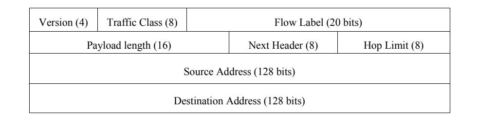
図3-6. IPv6パケットヘッダー形式（フィールドサイズはビット単位）（RFC 2460）。4行の表形式の図である。1行目は「Version (4)」（バージョン）、「Traffic Class (8)」（トラフィッククラス）、「Flow Label (20 bits)」（フローラベル）。2行目は「Payload length (16)」（ペイロード長）、「Next Header (8)」（次ヘッダー）、「Hop Limit (8)」（ホップ制限）。3行目は「Source Address (128 bits)」（送信元アドレス）。4行目は「Destination Address (128 bits)」（宛先アドレス）である。
Figure 3-6. The IPv6 Packet Header Format (Field Sizes in Bits) (RFC 2460)
図3-6. IPv6パケットヘッダー形式（フィールドサイズはビット単位）（RFC 2460）
The fixed length of the IPv6 header does not preclude flexibility in favor of function. Options are handled with extension headers, which are described in detail in the next section. The following are the eight fields in the fixed IPv6 header:
IPv6ヘッダーが固定長であっても、機能を優先して柔軟性が排除されるわけではない。オプションは拡張ヘッダーで扱う。拡張ヘッダーについては次節で詳しく説明する。固定IPv6ヘッダーには次の8つのフィールドがある。
•Version. This is the version of the protocol. This is a 4-bit value and must equal 6 (in binary, 0110).
•バージョン。プロトコルのバージョンである。4ビットの値で、6（2進数では0110）でなければならない。
•Traffic Class. Traffic class indicates the type of traffic or service. This eight-bit value is the same as type of service (TOS) in IPv4 and tags packets for special treatment during transmission. RFC 2474, Definition of the Differentiated Services Field (DS Field) in the IPv4 and IPv6 Headers, describes how the Traffic Class field in IPv6 can be used. The Traffic Class field in the IPv6 header is referred to as the Differentiated Services (DS) field in RFC 2474, as well as the TOS field in the IPv4 header.
•トラフィッククラス。トラフィッククラスは、トラフィックまたはサービスの種類を示す。この8ビット値はIPv4のサービスタイプ（TOS）と同じで、伝送中に特別な処理を行うパケットにタグを付ける。RFC 2474「IPv4およびIPv6ヘッダーにおける差別化サービスフィールド（DSフィールド）の定義」は、IPv6のトラフィッククラスフィールドの使用方法を説明している。RFC 2474では、IPv6ヘッダーのトラフィッククラスフィールドを差別化サービス（DS）フィールドと呼び、IPv4ヘッダーではTOSフィールドと呼んでいる。
•Flow Label. This is a 20-bit value used to identify packets belonging to the same flow or stream of data. It plays an important role in Quality of Service (QoS) differentiation under IPv6 (discussed in Section 4.3).
•フローラベル。データの同じフローまたはストリームに属するパケットを識別するための20ビット値である。IPv6でのサービス品質（QoS）の区別に重要な役割を果たす（第4.3節で説明）。
•Payload Length. Payload length is the length of data carried after the fixed IPv6 header. This 16-bit field identifies the length of the payload to which the 40-byte header is attached. The Payload Length field represents the payload length as an unsigned integer with a maximum value of 65535, so the maximum length is 40 + 65535 = 65575. (This limit can be extended with the Jumbogram Hop-by-Hop Option discussed in Section 4.5.)
•ペイロード長。ペイロード長は、固定IPv6ヘッダーの後に運ばれるデータの長さである。この16ビットフィールドは、40バイトのヘッダーに付随するペイロードの長さを示す。ペイロード長フィールドは65535を最大値とする符号なし整数で長さを表すため、最大長は40 + 65535 = 65575である（第4.5節で説明するジャンボグラムのホップバイホップオプションを使うと、この上限を拡張できる）。
•Next Header. Next Header (NH) contains a protocol number for an extension header or upper layer protocol. Called the Protocol Type field in IPv4, the NH field is part of a chain of headers. See Section 3.4 for a complete description.
•次ヘッダー。次ヘッダー（NH）は、拡張ヘッダーまたは上位層プロトコルを示すプロトコル番号を含む。IPv4ではプロトコルタイプフィールドと呼ばれ、IPv6ではヘッダーの連鎖の一部である。詳細は第3.4節を参照すること。
•Hop Limit. Hop Limit defines the maximum number of hops a packet can transit, the same as the Time to Live (TTL) field in IPv4. (The IPv4 TTL was originally defined as a number of seconds, but it almost always means hop count.) Intermediate nodes decrement this unsigned eight-bit value by one for each node the packet traverses. For example, if a packet source sets the Hop Limit to four and there are four routers and five hops in the path between source and destination, the packet is discarded by the fourth router. That packet never reaches the destination, because the packet has a hop limit value of zero after being processed by the fourth router. Generalized TTL Security Mechanism (GTSM) is designed to protect a router or host’s TCP/IP (Transmission Control Protocol/Internet Protocol) based control plane from various attacks originating off of the local link. It is a simple security mechanism that avoids these remote attacks by requiring a maximum TTL or Hop Limit for incoming packets. Any packets from a remote attacker would have to travel through at least one intervening router, would have a lower-than-maximum TTL or Hop Limit (255 hops), and would be dropped on receipt. This mechanism based on an expected TTL value can provide a simple and reasonable defense against infrastructure attacks based on forged protocol packets from external sources. This is further described in RFC 5082.
•ホップリミット。ホップリミットは、パケットが通過できるホップ数の最大値を定義し、IPv4のTime to Live（TTL）フィールドに相当する（IPv4のTTLは当初秒数として定義されたが、ほとんどの場合はホップ数を意味する）。パケットが通過する中間ノードはそれぞれ、この8ビットの符号なし値を1ずつ減らす。たとえば、送信元がホップリミットを4に設定し、送信元と宛先の間に4台のルーターと5ホップがある場合、パケットは4台目のルーターで破棄される。4台目のルーターで処理された後にホップリミットが0になるため、宛先には届かない。汎用TTLセキュリティ機構（GTSM）は、ローカルリンク外から発生するさまざまな攻撃から、ルーターまたはホストのTCP/IP（伝送制御プロトコル／インターネットプロトコル）ベースの制御プレーンを保護するために設計されている。この単純なセキュリティ機構では、受信パケットのTTLまたはホップリミットに最大値を要求することで、リモート攻撃を回避する。リモート攻撃者からのパケットは少なくとも1台のルーターを経由するため、最大値（255ホップ）より小さいTTLまたはホップリミットとなり、受信時に破棄される。期待されるTTL値に基づくこの機構は、外部から送信された偽造プロトコルパケットによるインフラ攻撃に対する、簡単で妥当な防御になる。詳細はRFC 5082で説明されている。
•Source Address. This is a 128-bit value representing the unicast IPv6 address of the packet’s source. IPv6 addressing is discussed in Section 3.1.
•送信元アドレス。パケットの送信元を示すユニキャストIPv6アドレスを表す128ビット値である。IPv6アドレス指定については第3.1節で説明する。
•Destination Address. This is a 128-bit value representing the IPv6 address of the packet’s destination. It may be a unicast, multicast, or anycast address.
•宛先アドレス。パケットの宛先IPv6アドレスを表す128ビット値である。ユニキャスト、マルチキャスト、エニーキャストアドレスの場合がある。
A packet capture of an IPv6 header is illustrated in Figure 3-7.
IPv6ヘッダーのパケットキャプチャを図3-7に示す。

図3-7. IPv6パケットヘッダーの例。パケット解析ツールの解析表示の画面である。展開されたノード「Internet Protocol Version 6」に、次のフィールドが並ぶ。Version: 6、Traffic class: 0x00、Flowlabel: 0x00000、Payload length: 24、Next header: TCP (0x06)、Hop limit: 64、Source address: 2001:0:53aa:64c:0:7fff:b85c:4985、Destination address: 2001:200:0:8002:203:47ff:fea5:3085。その下に、折りたたまれたノード「Transmission Control Protocol, Src Port: 51001 (51001), Dst Port: http (80), Seq: 0, Len: 0」がある。
Figure 3-7. Example IPv6 Packet Header
図3-7. IPv6パケットヘッダーの例
3.4 IPv6 Extension Headers
3.4 IPv6拡張ヘッダー
Extension headers provide major services and functions for the IPv6 protocol. As discussed, the IPv6 header is much simpler with its eight fields and 40-byte header allowing faster processing. Moreover, IPv6 has a new way to deal with options that has substantially improved processing: it handles options in additional headers called extension headers.4 Extension headers are inserted into a packet only if the options are needed.
拡張ヘッダーはIPv6プロトコルに主要なサービスと機能を提供する。前述のとおり、IPv6ヘッダーは8つのフィールドだけを持つ40バイトの簡素な構造であるため、処理が高速になる。さらにIPv6では、オプションを追加のヘッダー（拡張ヘッダー）で扱うという新しい方式によって、オプション処理を大幅に改善している。4 オプションが必要な場合にのみ、拡張ヘッダーがパケットに挿入される。
Within the IPv6 packet header and its eight fields, the first extension header is identified in the NH field. In IPv6, optional Internet-layer information is encoded in separate headers that may be placed between the IPv6 header and the upper-layer header in a packet (RFC 2460). There are a small number of such extension headers, each identified by a distinct NH value (see Table 3-4, IPv6 Extension Headers and Upper Layer Protocols). An IPv6 packet may carry zero, one, or more extension headers, each identified by the NH field of the preceding header and thus forming a chain illustrated below in Figure 3-8. The NH fields indicate the Routing extension header; next, the Fragment extension header; the ESP extension header; and, finally, the TCP header.
IPv6パケットヘッダーの8フィールドのうち、最初の拡張ヘッダーはNHフィールドで識別される。IPv6では、オプションのインターネット層情報は独立したヘッダーに符号化され、パケット内でIPv6ヘッダーと上位層ヘッダーの間に配置されることがある（RFC 2460）。この種の拡張ヘッダーは少数で、それぞれ異なるNH値によって識別される（表3-4「IPv6拡張ヘッダーと上位層プロトコル」を参照）。IPv6パケットには、拡張ヘッダーを0個、1個、または複数個含めることができる。それぞれ直前のヘッダーのNHフィールドで識別され、図3-8のような連鎖を形成する。NHフィールドは、ルーティング拡張ヘッダー、次にフラグメント拡張ヘッダー、ESP拡張ヘッダー、最後にTCPヘッダーが続くことを示す。
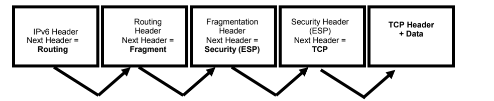
図3-8. IPv6と拡張ヘッダーの次ヘッダーフィールド。太枠の箱が5つ横に並ぶ。「IPv6 Header, Next Header = Routing」（IPv6ヘッダー、次ヘッダー＝ルーティング）、「Routing Header, Next Header = Fragment」（ルーティングヘッダー、次ヘッダー＝フラグメント）、「Fragmentation Header, Next Header = Security (ESP)」（フラグメント化ヘッダー、次ヘッダー＝セキュリティ（ESP））、「Security Header (ESP), Next Header = TCP」（セキュリティヘッダー（ESP）、次ヘッダー＝TCP）、「TCP Header + Data」（TCPヘッダー＋データ）である。箱の下で、各箱の下端から右隣の箱へV字形の矢印が延びる（計4本）。
Figure 3-8. Next Header Fields in IPv6 and Extension Headers
図3-8. IPv6と拡張ヘッダーの次ヘッダーフィールド
Except for Hop-by-Hop Options, extension headers are examined or processed only by the node identified in the Destination address field of the IPv6 header (or a set of nodes, in the case of multicast)4 and must be processed strictly in the order in which they appear in the packet. The Hop-by-Hop Option Header is indicated by the value zero (0) in the NH field and requires that information within the packet be examined and processed by every node along the path of the packet.
ホップバイホップオプションを除き、拡張ヘッダーは、IPv6ヘッダーの宛先アドレスフィールドで識別されるノード（マルチキャストの場合はノード群）4だけが調査または処理し、パケット内に現れる順序どおりに厳密に処理しなければならない。ホップバイホップオプションヘッダーは、NHフィールドの値がゼロ（0）の場合に指定され、パケット経路上のすべてのノードがパケット内の情報を調査して処理する必要がある。
![Figure 3-9. IPv6 Extension Header Chaining. A packet layout drawn as stacked rows. The IPv6 base header: Version, Traffic Class, Flow Label; Payload Length, Next Header, Hop Limit; Source Address; Destination Address. Then an extension header with fields Next Header and Length followed by "Extension header content", and a second extension header of the same form (break marks indicate variable length). Below, after dots indicating further headers, "Upper Layer Packet Header (TCP, UDP, etc.)". Curved arrows run from the Next Header field of the base header to the first extension header, from its Next Header field to the second extension header, from that one onward past the dots, and finally to the upper layer packet header.](assets/119/p0041-figure-01.png)
図3-9. IPv6拡張ヘッダーの連鎖。行を積み重ねたパケット構成図である。IPv6基本ヘッダーは、Version（バージョン）、Traffic Class（トラフィッククラス）、Flow Label（フローラベル）、Payload Length（ペイロード長）、Next Header（次ヘッダー）、Hop Limit（ホップリミット）、Source Address（送信元アドレス）、Destination Address（宛先アドレス）からなる。続いて、Next HeaderとLengthのフィールドの後に「拡張ヘッダーの内容」（Extension header content）を持つ拡張ヘッダーがあり、同じ形の2つ目の拡張ヘッダーが続く（省略記号で可変長であることを示す）。その下に、さらにヘッダーが続くことを示す点線の後、「上位層パケットヘッダー（TCP、UDPなど）」がある。曲線の矢印が、基本ヘッダーのNext Headerフィールドから1つ目の拡張ヘッダーへ、そのNext Headerフィールドから2つ目の拡張ヘッダーへ、さらに点線の先へ、最後に上位層パケットヘッダーへと伸びている。
Figure 3-9. IPv6 Extension Header Chaining9
図3-9. IPv6拡張ヘッダーの連鎖9
Figure 3-9 illustrates further how the NH field in the IPv6 packet header points to the following header in a chain of NHs, which defines the different parts of the payload in the packet. In this example, the NH field of the last extension header in the packet contains the type of the upper-layer protocol, e.g., TCP (value 6) or UDP (value 17). See Table 3-4 for the most common NH values. The IPv6 specification (RFC 2460) defines six NH values or extension headers. Other extension headers such as the Mobility Header are defined elsewhere.
図3-9は、IPv6パケットヘッダー内のNHフィールドが、NHの連鎖における次のヘッダーを指し、それによってパケットのペイロードの各部分が定義される様子をさらに示している。この例では、パケット内の最後の拡張ヘッダーのNHフィールドに、TCP（値6）やUDP（値17）など、上位層プロトコルの種類が格納されている。最も一般的なNH値については表3-4を参照。IPv6仕様（RFC 2460）は、6つのNH値または拡張ヘッダーを定義している。モビリティヘッダーなど、ほかの拡張ヘッダーは別の文書で定義されている。
•Hop-by-Hop Option header. NH value of 0 in the IPv6 base header. This header must occur first and is used to carry optional information that must be examined by every node along a packet’s delivery path. When the NH value is zero, then the node knows to examine the contents of one or more options contained in the extension header. An example is the Jumbogram IPv6 option, which allows IPv6 to transport packets larger than normal. Jumbograms are discussed in Section 4.5.
•ホップバイホップオプションヘッダー。IPv6基本ヘッダー内のNH値は0。このヘッダーは先頭に置く必要があり、パケットの配送経路上の各ノードが調査する必要のあるオプション情報を運ぶために使われる。NH値がゼロの場合、ノードは拡張ヘッダーに含まれる1つ以上のオプションの内容を調査する必要があると分かる。例として、IPv6で通常より大きいパケットを転送できるジャンボグラムIPv6オプションがある。ジャンボグラムについては4.5節で説明する。
•Routing Header. NH value of 43 in the immediately preceding header. The Routing Header is used by an IPv6 source (sending host) to list one or more intermediate nodes to be traversed on the way to a packet’s destination. The sending host sets the NH extension to direct a packet through a certain path. In IPv4, this is called the Loose Source and Record Route option. The Type 0 Routing Header was identified as a security risk, because it may allow attackers to bypass firewalls and carry out denial of service or other attacks. For these reasons the IETF deprecated the use of Type 0 Routing Headers (RFC 5095). The Mobile IPv6 specification defines a Type 2 Routing Header which allows the data exchange between the care-of address of a mobile node and a correspondent node without being routed through the home agent. Mobile IPv6 is discussed in Section 4.4.
•ルーティングヘッダー。直前のヘッダー内のNH値は43。ルーティングヘッダーは、IPv6の送信元（送信ホスト）が、パケットの宛先へ向かう途中で経由する1つ以上の中間ノードを列挙するために使われる。送信ホストはNH拡張ヘッダーを設定し、パケットが特定の経路を通るようにする。IPv4では、これはLoose Source and Record Routeオプションと呼ばれる。Type 0ルーティングヘッダーは、攻撃者がファイアウォールを回避し、サービス拒否などの攻撃を実行できる可能性があるため、セキュリティリスクと認識された。このため、IETFはType 0ルーティングヘッダーの使用を非推奨とした（RFC 5095）。Mobile IPv6仕様では、モバイルノードの気付けアドレスと通信相手ノードとの間で、ホームエージェントを経由せずにデータ交換できるType 2ルーティングヘッダーが定義されている。Mobile IPv6については4.4節で説明する。
•Fragment header. NH value of 44 in the immediately preceding header. This header is used by an IPv6 source to send a packet larger than the Path Maximum Transmission Unit (PMTU) to its destination. Each fragment of a packet must have the same identification value as well as identical source and destination addresses. Fragmentation in IPv6 is performed only by source nodes, not by routers along a packet’s delivery path as allowed in IPv4.
•フラグメントヘッダー。直前のヘッダー内のNH値は44。このヘッダーは、IPv6の送信元が経路最大伝送単位（PMTU）より大きいパケットを宛先に送信するために使われる。パケットの各フラグメントは、同じ識別値と、同一の送信元アドレスおよび宛先アドレスを持たなければならない。IPv6のフラグメンテーションは送信元ノードだけが行い、IPv4で許されているようにパケット経路上のルーターが行うことはない。
•Authentication header. NH value of 51 in the immediately preceding header. The Authentication header is used to provide connectionless integrity and data origin authentication for IP datagrams and to provide protection against replays. Also known as IPsec Authentication Header (AH), this capability is used in IPv4 as well as IPv6. IPsec is covered in Section 5.3.
•認証ヘッダー。直前のヘッダー内のNH値は51。認証ヘッダーは、IPデータグラムに対するコネクションレス完全性およびデータ発信元認証を提供し、リプレイ攻撃から保護するために使われる。IPsec認証ヘッダー（AH）としても知られ、この機能はIPv4とIPv6の両方で使われる。IPsecについては5.3節で説明する。
•Encapsulating Security Payload header. NH value of 50 in the immediately preceding header. This header is used to provide confidentiality, data origin authentication, connectionless integrity, an anti-replay service (a form of partial sequence integrity), and limited traffic flow confidentiality. Also known as the IPsec Encapsulating Security Payload header (ESP), this capability is used in IPv4 as well as IPv6 to provide the same functions as AH and also, optionally, confidentiality. IPsec as well as AH and ESP is covered in Section 5.3.
•カプセル化セキュリティペイロードヘッダー。直前のヘッダー内のNH値は50。このヘッダーは、機密性、データ発信元認証、コネクションレス完全性、リプレイ防止サービス（部分的なシーケンス完全性の一形態）、および限定的なトラフィックフロー機密性を提供するために使われる。IPsecカプセル化セキュリティペイロードヘッダー（ESP）としても知られ、この機能はIPv4とIPv6の両方で使われ、AHと同じ機能に加えて、オプションで機密性も提供する。IPsec、AHおよびESPについては5.3節で説明する。
•Destination Options header. NH value of 60 in the immediately preceding header. This header is used to carry optional information that needs to be examined only by a packet’s destination node(s). Intermediate nodes (for which the IPv6 base header destination address is not the address of the current node or more Routing Header processing is required) do not examine the Destination Options header. The Destination Options header works similarly to the Hop-by-Hop Option header, as it may carry one or more options, where each option is encoded in type-length-value format. A node receiving a packet that matches the IPv6 destination address examines the NH field, notes the presence of a Destination Options, and processes the Destination Options before forwarding the payload to the upper layer protocol. A Destinations Options header could appear before or after an ESP header; however, it should be placed after an ESP header for increased protection.
•宛先オプションヘッダー。直前のヘッダー内のNH値は60。このヘッダーは、パケットの宛先ノードだけが調査する必要のあるオプション情報を運ぶために使われる（IPv6基本ヘッダーの宛先アドレスが現在のノードのアドレスではない、またはルーティングヘッダーのさらなる処理が必要な）中間ノードは、宛先オプションヘッダーを調査しない。宛先オプションヘッダーはホップバイホップオプションヘッダーと同様に機能し、各オプションはタイプ・長さ・値の形式で符号化される。IPv6の宛先アドレスに一致するパケットを受信したノードは、NHフィールドを調べて宛先オプションの存在を確認し、ペイロードを上位層プロトコルに渡す前に宛先オプションを処理する。宛先オプションヘッダーはESPヘッダーの前後いずれにも配置できるが、保護を強化するにはESPヘッダーの後に置くべきである。
•Mobility header. NH value of 135 in the immediately preceding header. This header is used by a mobile node, correspondent node, and home agent to manage mobile IPv6 bindings. Mobile IPv6 (MIPv6) provides enhanced security, streamlined administrative protocols, and greater efficiency compared with Mobile IPv4. MIPv6 is covered in Section 4.4.
•モビリティヘッダー。直前のヘッダー内のNH値は135。このヘッダーは、モバイルノード、通信相手ノード、およびホームエージェントがMobile IPv6のバインディングを管理するために使われる。Mobile IPv6（MIPv6）は、Mobile IPv4と比べて強化されたセキュリティ、簡素化された管理プロトコル、および高い効率を提供する。MIPv6については4.4節で説明する。
Extension headers are established at the source before transmission of the packet. Their order and contents are not altered by intermediary nodes.
拡張ヘッダーは、パケットの送信前に送信元で設定される。その順序と内容は中継ノードによって変更されない。
Extension headers provide important services and functions for the IPv6 protocol. They may direct intermediary nodes about how packet payloads are to be handled prior to reaching their ultimate destination. Defined extension headers for the IPv6 protocol should occur in a recommended order. RFC 2460, Internet Protocol, version 6 (IPv6) Specification, indicates that future extension header specifications may be more precise when it comes to ordering. To accommodate the definition and deployment of additional extension headers, each extension header includes information that instructs the receiver how to behave if it does not recognize a new extension header type. The two basic types of behavior are: skip the unrecognized extension header but continue processing the packet or discard the packet.
拡張ヘッダーはIPv6プロトコルに重要なサービスと機能を提供する。パケットペイロードが最終宛先に到達する前にどのように扱われるべきかを中継ノードに指示することがある。IPv6プロトコルで定義された拡張ヘッダーは、推奨順序で配置するべきである。RFC 2460「Internet Protocol, version 6 (IPv6) Specification」は、将来の拡張ヘッダー仕様で順序がより詳細に規定される可能性を示している。追加の拡張ヘッダーの定義と展開に対応するため、各拡張ヘッダーには、新しい拡張ヘッダーの種類を認識できない場合に受信側がどう動作するかを指示する情報が含まれる。基本的な動作は2種類ある。認識できない拡張ヘッダーをスキップしてパケット処理を続けるか、パケットを破棄する。
The following table illustrates the recommended order for extension headers. Only the Hop-by-Hop Options are required by the specification to be placed immediately after the IPv6 header (literally the IPv6 “next header”). Note that more than one extension header may be used in a packet. In those cases, RFC 2460 recommends the first four extension headers be prioritized according to the first four entries in the table below.
次の表に、拡張ヘッダーの推奨順序を示す。仕様上、IPv6ヘッダー（文字どおりIPv6の「次ヘッダー」）の直後に置く必要があるのはホップバイホップオプションだけである。1つのパケットで複数の拡張ヘッダーを使うこともできる。その場合、RFC 2460は、下表の最初の4項目に従って最初の4つの拡張ヘッダーに優先順位を付けることを推奨している。
Table 3-4. IPv6 Extension Headers and Upper Layer Protocols19
表3-4. IPv6拡張ヘッダーおよび上位層プロトコル19
| Extension Header | Type | Remarks |
|---|---|---|
| Hop-by-hop Options | 0 | used for options that apply to intermediate routers |
| Routing | 43 | used for source routing |
| Fragment | 44 | processed only by the final recipient |
| Destination Options | 60 | used for options that apply only for the final recipient |
| Authentication header (AH) | 51 | used for IPsec integrity protection |
| Encapsulating Security Payload (ESP) | 50 | used for IPsec integrity and confidentiality protection |
| Mobility | 135 | used for managing mobile IPv6 bindings |
| Protocol | Type | Remarks |
| TCP | 6 | protocol type for Transmission Control Protocol |
| UDP | 17 | protocol type for User Datagram Protocol |
| IPv6-in-IPv6 | 41 | protocol type for IPv6 in IPv6 tunnels |
| GRE | 47 | protocol type for Generic Routing Encapsulation tunnels |
| ICMPv6 | 58 | protocol type, Internet Control Message Protocol for IPv6 |
| No next header | 59 | dummy packet, often used with ESP |
| OSPF | 89 | protocol type, Open Shortest Path First version 3 routing protocol |
| PIM | 103 | protocol type, Protocol Independent Multicast routing |
| SCTP | 132 | protocol type, Stream Control Transmission Protocol |
| 拡張ヘッダー | タイプ | 備考 |
|---|---|---|
| ホップバイホップオプション | 0 | 中間ルータに適用されるオプションに使用 |
| ルーティング | 43 | ソースルーティングに使用 |
| フラグメント | 44 | 最終受信者のみが処理する |
| 宛先オプション | 60 | 最終受信者にのみ適用されるオプションに使用 |
| 認証ヘッダー（AH） | 51 | IPsecの完全性保護に使用 |
| カプセル化セキュリティペイロード（ESP） | 50 | IPsecの完全性および機密性の保護に使用 |
| モビリティ | 135 | モバイルIPv6のバインディングの管理に使用 |
| プロトコル | タイプ | 備考 |
| TCP | 6 | 伝送制御プロトコル（Transmission Control Protocol）のプロトコルタイプ |
| UDP | 17 | ユーザーデータグラムプロトコル（User Datagram Protocol）のプロトコルタイプ |
| IPv6-in-IPv6 | 41 | IPv6 in IPv6トンネルのプロトコルタイプ |
| GRE | 47 | 総称ルーティングカプセル化（Generic Routing Encapsulation）トンネルのプロトコルタイプ |
| ICMPv6 | 58 | プロトコルタイプ、IPv6用インターネット制御メッセージプロトコル |
| 次ヘッダーなし | 59 | ダミーパケット。ESPとともに使われることが多い |
| OSPF | 89 | プロトコルタイプ、Open Shortest Path First バージョン3ルーティングプロトコル |
| PIM | 103 | プロトコルタイプ、Protocol Independent Multicastルーティング |
| SCTP | 132 | プロトコルタイプ、ストリーム制御伝送プロトコル（Stream Control Transmission Protocol） |
Note that, from a security point of view, simply examining the Destination Address in the IPv6 header may not provide all of the information needed to make packet filtering decisions. An amplification attack, resulting in severe congestion and DoS, can be caused by a packet with a Routing Header containing multiple instances of the same address. Thus, it is crucial to perform ingress filtering that prohibits the forwarding of packets with a Type 0 Routing Header (RFC 5095).
セキュリティの観点では、IPv6ヘッダーの宛先アドレスを調べるだけでは、パケットフィルタリングの判断に必要な情報をすべて得られない場合があることに注意する。複数の同一アドレスを含むルーティングヘッダー付きパケットは、増幅攻撃を引き起こし、深刻な輻輳やDoSにつながる可能性がある。そのため、Type 0ルーティングヘッダーを含むパケットの転送を禁止するイングレスフィルタリングが重要である（RFC 5095）。
The NH field and the related extension headers provide IPv6 with flexibility and extensibility, while taking advantage of fixed-length headers with a reduced number of fields as compared with IPv4. NH functionality in IPv6 provides the foundation for enhanced services such as IPv6 security and mobility. They should be kept in mind when securing IPv6 networks, to be discussed later in this document.
NHフィールドと関連する拡張ヘッダーは、IPv4と比較してフィールド数を減らした固定長ヘッダーの利点を生かしつつ、IPv6に柔軟性と拡張性をもたらす。IPv6のNH機能は、IPv6セキュリティやモビリティなどの高度なサービスの基盤となる。本文書で後述するIPv6ネットワークのセキュリティ確保にあたっては、これらを念頭に置くべきである。
Using extension headers can have a number of security implications. Packets containing hop-by-hop extension headers must be analyzed at every node along the forwarding path, and can potentially cause a resource consumption attack. Extension headers also incorporate additional complexity for the purpose of traffic filtering. An example is enforcing a policy that blocks IPv6 traffic with mobility headers if IPv6 mobility is not being used by an organization. Incorporating extension header filtering policies may also impact a device’s overall performance. Filtering is discussed in greater detail in Section 6, and ICMPv6 recommended filtering recommendations are provided in Table 3-7. Extension headers can also be used as a “covert channel” to hide communications between two systems, e.g., in Destination Options.
拡張ヘッダーの使用には、さまざまなセキュリティ上の影響がある。ホップバイホップ拡張ヘッダーを含むパケットは転送経路上のすべてのノードで分析する必要があり、リソース消費攻撃につながる可能性がある。また、拡張ヘッダーはトラフィックフィルタリングを複雑にする。たとえば、組織がIPv6モビリティを利用していない場合に、モビリティヘッダーを含むIPv6トラフィックを遮断するポリシーの適用が挙げられる。拡張ヘッダーのフィルタリングポリシーを導入すると、デバイス全体の性能にも影響する場合がある。フィルタリングの詳細は6節で説明し、ICMPv6で推奨されるフィルタリングについては表3-7に示す。拡張ヘッダーは、2つのシステム間の通信を隠す「隠れチャネル」としても使われることがある（例：宛先オプション）。
3.5 Internet Control Message Protocol for IPv6 (ICMPv6)
3.5 IPv6用インターネット制御メッセージプロトコル（ICMPv6）
The IPv6 specifications redefine the Internet Control Message Protocol (ICMP) of IPv4 with a number of additions and changes. The resulting protocol is documented in RFC 4443 and called ICMPv6. Specific details regarding ICMPv6 are provided here, along with examples of how the protocol differs from its counterpart under IPv4.
IPv6仕様では、IPv4のインターネット制御メッセージプロトコル（ICMP）を再定義し、複数の追加と変更を加えている。その結果できたプロトコルはRFC 4443に記載され、ICMPv6と呼ばれる。ここではICMPv6の詳細と、IPv4版との違いの例を示す。
ICMPv6 is an integral aspect of the IPv6 specification. It reports errors if packets cannot be processed properly and sends informational messages about the status of the network. An operational IPv6 network depends upon proper implementation and functionality of ICMPv6. To achieve secure IPv6 operations, it is crucial that network administrators and managers understand the design of ICMPv6 and how it functions. Managers of IPv4-only networks should consider adding the capability of detecting ICMPv6 traffic to enhance security on their networks.
ICMPv6はIPv6仕様に不可欠な要素である。パケットを適切に処理できない場合にエラーを報告し、ネットワークの状態に関する情報メッセージを送信する。運用可能なIPv6ネットワークは、ICMPv6が適切に実装され、機能することに依存する。IPv6を安全に運用するには、ネットワークの管理者および管理責任者がICMPv6の設計とその動作を理解することが極めて重要である。IPv4のみのネットワークの管理責任者は、ネットワークのセキュリティを強化するため、ICMPv6トラフィックを検知する機能の追加を検討するべきである。
ICMPv6 provides IPv6 with administrative and network diagnostic functions. ICMPv6 provides familiar capabilities like ping and destination unreachable. In IPv6, as in IPv4, ping can be used by network administrators as a diagnostic tool to confirm that a node’s address is properly configured and responsive to specific ICMPv6 requests, called echo requests. ICMPv6 also makes new features like Neighbor Discovery (ND) and path MTU discovery possible within IPv6. ND, described in RFC 4861, is the process by which an IPv6 node may learn important information such as link layer addresses of interfaces on its own link.
ICMPv6は、IPv6に管理機能とネットワーク診断機能を提供する。pingや宛先到達不能など、従来からある機能も備えている。IPv4と同様に、IPv6のpingは、ノードのアドレスが正しく設定され、エコー要求と呼ばれる特定のICMPv6要求に応答することを確認する診断ツールとしてネットワーク管理者が利用できる。ICMPv6は、Neighbor Discovery（ND）や経路MTU探索などの新機能もIPv6で実現する。RFC 4861で説明されるNDは、IPv6ノードが自身のリンク上のインターフェースのリンク層アドレスなど、重要な情報を学習するプロセスである。
ND effectively replaces the Address Resolution Protocol (ARP) used with IPv4. ND’s multicast messages eliminate the need for the link-level broadcast messages associated with ARP.
NDは、IPv4で使われるアドレス解決プロトコル（ARP）を実質的に置き換える。NDのマルチキャストメッセージにより、ARPに伴うリンクレベルのブロードキャストメッセージが不要になる。
3.5.1 ICMPv6 Specification Overview
3.5.1 ICMPv6仕様の概要
This section provides an overview of the ICMPv6 specification. The intent of this section is to introduce the reader to fundamentals of the ICMPv6 specification: message format, error handling, and diagnostics. As mentioned previously, specific applications of ICMPv6 (MTU discovery, ND, etc.) are defined in their respective RFCs.
この節では、ICMPv6仕様の概要を示す。ここでは、メッセージ形式、エラー処理、診断というICMPv6仕様の基礎を紹介する。前述のとおり、MTU探索やNDなど、ICMPv6の具体的な用途はそれぞれのRFCで定義されている。
A standard IPv6 header precedes every ICMPv6 message. The IPv6 header may or may not contain extension headers. The IPv6 header identifies the ICMPv6 header with a NH value of 58.
すべてのICMPv6メッセージの前には標準のIPv6ヘッダーが置かれる。IPv6ヘッダーに拡張ヘッダーが含まれる場合もあれば、含まれない場合もある。IPv6ヘッダーでは、NH値58によってICMPv6ヘッダーを識別する。
ICMPv6 messages have the following general format, illustrated in Figure 3-10:
ICMPv6メッセージの一般的な形式を図3-10に示す。
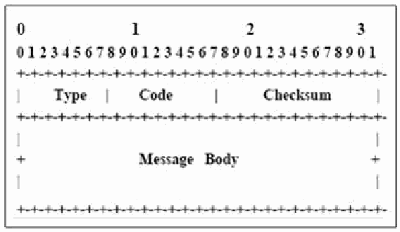
図3-10. ICMPv6メッセージ形式。幅32ビットのビット配置図で、上端に0〜31のビット番号（十の位に0、1、2、3）がある。最初の32ビットの行に、Type（タイプ）、Code（コード）、Checksum（チェックサム）の3つのフィールドがある。その下に、Message Body（メッセージ本体）と記した大きな領域がある。
Figure 3-10. ICMPv6 Message Format
図3-10. ICMPv6メッセージ形式
•Type. Indicates the message type. This eight-bit value determines the format of the remaining data; see Tables 3-5 and 3-6, below.
•Type（タイプ）。メッセージの種類を示す。この8ビット値によって残りのデータ形式が決まる。下記の表3-5および表3-6を参照。
•Code. Depends on the message type (see below). This eight-bit value is used to create an additional level of message granularity.
•Code（コード）。メッセージの種類に応じた値（下記参照）。この8ビット値を使ってメッセージをさらに細かく分類する。
•Checksum. This 16-bit field is used to detect data corruption in the ICMPv6 message and parts of the IPv6 header. In ICMPv6, the checksum calculation includes portions of the IPv6 header, called a pseudo-header, since these fields are not contained within the ICMPv6 data. The reason for the change is to protect ICMP from misdelivery or corruption of those fields of the IPv6 header on which it depends, which, unlike IPv4, are not covered by an Internet-layer checksum. The Next Header field is included in the pseudo-header for ICMP and contains the value 58, which identifies the IPv6 version of ICMP.
•Checksum（チェックサム）。ICMPv6メッセージとIPv6ヘッダーの一部におけるデータ破損を検出するための16ビットフィールド。ICMPv6では、IPv6ヘッダーの一部を含めてチェックサムを計算する。これらのフィールドはICMPv6データ内に含まれないため、擬似ヘッダーと呼ばれる。IPv4とは異なり、IPv6ではICMPが依存するIPv6ヘッダーフィールドはインターネット層チェックサムの対象ではないため、この変更により、これらのフィールドの誤配送や破損からICMPを保護する。ICMPの擬似ヘッダーにはNext Headerフィールドが含まれ、IPv6版ICMPを示す値58が格納される。
•Message Body. Field length varies depending on the type and code of the message. ICMPv6 messages are grouped into two classes: error messages and informational messages.
•メッセージ本文。フィールド長はメッセージのタイプとコードによって異なる。ICMPv6メッセージは、エラーメッセージと情報メッセージの2種類に大別される。
The ICMPv6 specification defines two classes of ICMP messages: error and informational. Other protocols such as Mobile IPv6 define additional messages within each class. Tables 3-5 and 3-6 provide an overview of some of the most common message types20, along with the additional code information, which depends on the message type.
ICMPv6仕様では、ICMPメッセージをエラーと情報の2種類に定めている。Mobile IPv6などのほかのプロトコルは、各種類に追加メッセージを定義する。表3-5および表3-6では、よく使われるメッセージタイプ20の一部と、メッセージタイプに応じた追加のコード情報を概説する。
Table 3-5. ICMPv6 Error Messages and Code Type
表3-5. ICMPv6エラーメッセージとコードタイプ
| Message Number | Message Type | Code Field |
|---|---|---|
| 1 | Destination Unreachable | 0 = No route to destination 1 = Communication with destination administratively prohibited 2 = Beyond scope of source address 3 = Address unreachable 4 = Port unreachable 5 = Source address failed ingress/egress policy 6 = Reject route to destination |
| 2 | Packet Too Big | Set to 0 (zero) by the originator and ignored by the receiver |
| 3 | Time Exceeded | 0 = Hop limit exceeded in transit 1 = Fragment reassembly time exceeded |
| 4 | Parameter Problem | 0 = Erroneous header field encountered 1 = Unrecognized Next Header type encountered |
| 100 and 101 | Private Experimentation | RFC 4443 |
| 127 | Reserved for expansion of ICMPv6 error messages | RFC 4443 |
| メッセージ番号 | メッセージタイプ | コードフィールド |
|---|---|---|
| 1 | 宛先到達不能 | 0 = 宛先へのルートなし 1 = 宛先との通信が管理上禁止されている 2 = 送信元アドレスのスコープ外 3 = アドレス到達不能 4 = ポート到達不能 5 = 送信元アドレスがイングレス／イーグレスポリシーに不適合 6 = 宛先へのルートを拒否 |
| 2 | パケット過大 | 送信元によって0（ゼロ）に設定され、受信側によって無視される |
| 3 | 時間超過 | 0 = 転送中にホップリミットを超過 1 = フラグメント再構成の時間を超過 |
| 4 | パラメータ問題 | 0 = 誤ったヘッダーフィールドを検出 1 = 認識できない次ヘッダータイプを検出 |
| 100および101 | プライベートな実験用 | RFC 4443 |
| 127 | ICMPv6エラーメッセージの拡張用に予約 | RFC 4443 |
Table 3-6. ICMPv6 Informational Messages
表3-6. ICMPv6情報メッセージ
| Message Number | Message Type | Code Field |
|---|---|---|
| 128 | Echo Request | RFC 4443. Used for the ping command |
| 129 | Echo Reply | |
| 130 | Multicast Listener Query | RFC 2710. Used for multicast group management |
| 131 | Multicast Listener Report | |
| 132 | Multicast Listener Done | |
| 133 | Router Solicitation | RFC 4861. Used for neighbor discovery and autoconfiguration |
| 134 | Router Advertisement | |
| 135 | Neighbor Solicitation | |
| 136 | Neighbor Advertisement | |
| 137 | Redirect Message | |
| 200 and 201 | Private Experimentation | RFC 4443 |
| 255 | Reserved for expansion of ICMPv6 informational messages | RFC 4443 |
| メッセージ番号 | メッセージタイプ | コードフィールド |
|---|---|---|
| 128 | エコー要求 | RFC 4443. pingコマンドに使用 |
| 129 | エコー応答 | |
| 130 | マルチキャストリスナークエリ | RFC 2710. マルチキャストグループの管理に使用 |
| 131 | マルチキャストリスナーレポート | |
| 132 | マルチキャストリスナー完了 | |
| 133 | ルータ要請 | RFC 4861. 近隣探索および自動設定に使用 |
| 134 | ルータ広告 | |
| 135 | 近隣要請 | |
| 136 | 近隣広告 | |
| 137 | リダイレクトメッセージ | |
| 200および201 | 私的実験用 | RFC 4443 |
| 255 | ICMPv6情報メッセージの拡張用に予約 | RFC 4443 |
Error messages are used, for example, if a transmitting node sends a packet of 1500 bytes, but an intermediary hop has an MTU of only 1300. The intermediary node then sends an ICMPv6 Packet Too Big (Type = 2) error message to the sender with information about the problem. For ICMPv6 error messages, the sender includes, at least, the start of the packet causing the error to allow the originator of the packet to identify the upper-layer protocol and perhaps the process that sent the packet. Informational messages may contain configuration information such as a local router’s address in a Router Advertisement (RA) message.
たとえば、送信ノードが1500バイトのパケットを送信したものの、途中のホップのMTUが1300しかない場合に、エラーメッセージが使われる。その中間ノードは、問題に関する情報を送信元に伝えるため、ICMPv6のPacket Too Big（タイプ=2）エラーメッセージを送信する。ICMPv6エラーメッセージには、少なくともエラー原因となったパケットの先頭部分が含まれ、パケットの送信元が上位層プロトコルや、場合によってはパケットを送信したプロセスを特定できるようにする。情報メッセージには、Router Advertisement（RA）メッセージ内のローカルルーターアドレスなど、構成情報が含まれる場合がある。
3.5.2 Differences between IPv6 and IPv4 ICMP
3.5.2 IPv6とIPv4のICMPの違い
Several differences exist between the ICMP specifications for IPv4 and IPv6. These include using ND to replace ARP, dynamic PMTU discovery, and several automated administrative functions unique to IPv6. In particular, some of these differences are:
IPv4とIPv6のICMP仕様にはいくつかの違いがある。NDによるARPの置き換え、動的なPMTU探索、IPv6固有の複数の自動管理機能などである。主な違いを以下に示す。
•Next Header Value. IPv6 identifies ICMPv6 messages with a NH value of 58. In IPv4, the corresponding next protocol value is 1.
•Next Header値。IPv6ではNH値58によってICMPv6メッセージを識別する。IPv4で対応する次プロトコル値は1である。
•Neighbor Discovery (ND) replaces ARP. The ICMPv6 ND function serves to locate link-local neighbors and is similar to the function of ARP with IPv4. However, IPv4 has no means to detect whether a neighbor is reachable. With IPv6, ND locates link-local routers, identifies duplicate IPv6 addresses, and eliminates the link-local broadcast traffic generated by ARP. This substantially improves packet delivery in case of failed routers or link interfaces that changed their link-layer address, which solves the problem of outdated ARP caches.
•Neighbor Discovery（ND）がARPを置き換える。ICMPv6のND機能はリンクローカル近隣ノードを検出するもので、IPv4のARPと同様の機能を果たす。ただし、IPv4には近隣ノードに到達できるかを検出する手段がない。IPv6のNDはリンクローカルルーターの検出、IPv6アドレスの重複識別、ARPが生成するリンクローカルブロードキャストトラフィックの排除を行う。これにより、ルーターの障害やリンクインターフェースのリンク層アドレス変更時のパケット配送が大幅に改善され、古くなったARPキャッシュの問題が解消される。
•Increased PMTU. The minimum MTU that nodes are required to handle under IPv4 is 576 bytes. In IPv6, all links must handle a datagram size of at least 1280 bytes, and the minimum recommended MTU is 1500 bytes. This is a dramatic increase in the minimum payload each packet must be able to carry, and it results in higher efficiency because fewer headers may need to be processed for a given amount of data.
•PMTUの拡大。IPv4でノードが処理する必要のある最小MTUは576バイトである。IPv6ではすべてのリンクが少なくとも1280バイトのデータグラムサイズを処理しなければならず、推奨される最小MTUは1500バイトである。これにより、各パケットが運べる最小ペイロードが大幅に増え、一定量のデータに対して処理するヘッダー数を減らせるため、効率が向上する。
•Elimination of in-transit packet fragmentation through the use of PMTU discovery. In IPv4, packets may be fragmented at any point: at the source or in transit by routers forwarding those packets. In IPv6, only the source may fragment packets. The result of this requirement is that the packet source must use ICMPv6 to determine the PMTU prior to sending traffic and perform fragmentation where needed. The destination node performs reassembly of fragmented packets under both IPv4 and IPv6.
•PMTU探索による転送中のパケットフラグメンテーションの排除。IPv4では、送信元またはパケット転送中のルーターが、任意の地点でパケットをフラグメント化できる。IPv6では送信元だけがパケットをフラグメント化できる。この要件により、送信元はトラフィック送信前にICMPv6を使ってPMTUを判定し、必要に応じてフラグメンテーションを行わなければならない。IPv4とIPv6のどちらでも、宛先ノードがフラグメント化されたパケットを再構成する。
•Multicast Listener Discovery (MLD). This is a set of three ICMPv6 messages equivalent to version 2 of the Internet Group Management Protocol (IGMP) for IPv4 used to manage subnet multicast membership. Instead of using IGMP, IPv6 uses ICMPv6 messages for the same functionality, now called MLD. MLD is the protocol that allows multicast listeners to register for multicast addresses they want to receive. Unlike IPv4, IPv6 does not have broadcast addresses. In IPv6, multicast is used with ICMPv6 for infrastructure applications like neighbor discovery and autoconfiguration on local links. IPv6 multicast addresses have new capabilities such as scope, which limits the network realm in which a multicast address is applicable; and embedded unicast prefixes, which limit the scope of the address to the portion of the network that is addressed by that prefix.
•マルチキャストリスナー探索（MLD）。これは、サブネットのマルチキャストメンバーシップを管理するために使われる、IPv4のInternet Group Management Protocol（IGMP）バージョン2に相当する3種類のICMPv6メッセージである。IPv6ではIGMPの代わりにICMPv6メッセージを使い、この機能をMLDと呼ぶ。MLDは、マルチキャストリスナーが受信を希望するマルチキャストアドレスに登録できるようにするプロトコルである。IPv4と異なり、IPv6にはブロードキャストアドレスがない。IPv6では、近隣探索やローカルリンク上の自動設定などの基盤機能でICMPv6とともにマルチキャストを利用する。IPv6マルチキャストアドレスには、マルチキャストアドレスが適用されるネットワーク範囲を制限するスコープや、アドレスの範囲をそのプレフィックスが示すネットワーク部分に限定する埋め込みユニキャストプレフィックスなど、新たな機能がある。
ICMPv6 specifies a framework for control messages to provide IPv6 with error handling and parameter establishment functions. Several of ICMPv6’s functions are new or different from ICMP under IPv4. Furthermore, ICMPv6 is a fundamental and essential component of any IPv6 implementation. For example, no IPv6 or dual stack IPv4/IPv6 network can function properly without ICMPv6. The next sections contain more detail about ND, Autoconfiguration, and the security ramifications of ICMPv6.
ICMPv6は、IPv6にエラー処理機能とパラメーター設定機能を提供する制御メッセージの枠組みを定める。ICMPv6の機能には、IPv4のICMPにはないものや、異なるものがいくつかある。また、ICMPv6はあらゆるIPv6実装に不可欠な基本要素である。たとえば、ICMPv6がなければ、IPv6ネットワークもIPv4/IPv6デュアルスタックネットワークも適切に機能できない。以下の節では、ND、自動設定、およびICMPv6のセキュリティ上の影響について詳しく説明する。
3.5.3 Neighbor Discovery
3.5.3 近隣探索
ND, described in RFC 4861, is the process by which an IPv6 node may learn important information such as link layer addresses of interfaces on the same local segment. ND effectively replaces the ARP found in IPv4. Additionally, it combines this with ICMP Router Discovery and Redirect capabilities. This subsection describes ND in brief, and improvements over the IPv4 set of protocols are noted.
RFC 4861で説明されているNDは、IPv6ノードが同じローカルセグメント上のインターフェースのリンク層アドレスなどの重要情報を学習するプロセスである。NDはIPv4のARPを実質的に置き換える。さらに、ICMPのルーター探索機能とリダイレクト機能も統合している。この小節ではNDの概要を説明し、IPv4の一連のプロトコルに対する改善点も示す。
IPv4 is limited in determining whether a neighbor is reachable. The Neighbor Discovery Protocol (NDP) for IPv6 specification is used by all nodes, hosts and routers. IPv6 nodes use ND for the following purposes:4
IPv4では、近隣ノードに到達できるかどうかを判定する機能が限られている。IPv6のNeighbor Discovery Protocol（NDP）仕様は、ホストとルーターを含むすべてのノードで使用される。IPv6ノードは、次の目的でNDを使用する。4
•For autoconfiguration of IPv6 addresses
•IPv6アドレスの自動設定
•To determine network prefixes and other configuration information
•ネットワークプレフィックスおよびその他の構成情報の判定
•For Duplicate Address Detection (DAD)
•重複アドレス検出（DAD）
•To determine layer two addresses of nodes on the same link (address resolution)
•同一リンク上のノードのレイヤー2アドレスの判定（アドレス解決）
•To find neighboring routers that can forward their packets
•パケットを転送できる近隣ルーターの検出
•To keep track of which neighbors are reachable and which are not (Neighbor Unreachability Detection, or NUD)
•到達可能な近隣ノードと到達不能な近隣ノードの追跡（近隣到達不能検出、NUD）
•To detect changed link-layer addresses.
•リンク層アドレスの変更の検出
As described in RFC 4861, nodes use ND to determine the link-layer addresses for neighbors known to reside on attached links and to purge cached values that become invalid. Hosts also use ND to find neighboring routers that are willing to forward packets on their behalf. Finally, nodes use the protocol to keep track of which neighbors are reachable and which are not, and to detect changed link-layer addresses. When a router or the path to a router fails, a host actively searches for functioning alternates.
RFC 4861で説明されているとおり、ノードはNDを使って、接続されたリンク上に存在することが分かっている近隣ノードのリンク層アドレスを決定し、無効になったキャッシュ値を削除する。また、ホストは、自身に代わってパケットを転送する意思のある近隣ルーターを見つけるためにもNDを使う。さらに、ノードはこのプロトコルを使って、どの近隣ノードが到達可能でどの近隣ノードが到達不能かを追跡し、リンク層アドレスの変更を検出する。ルーターまたはルーターまでの経路に障害が起きると、ホストは機能している代替のルーターまたは経路を能動的に探索する。
ND plays an important role in addressing because it provides address resolution and address autoconfiguration. These are accomplished through the different processes in the ND protocol, which consists of five different ICMP packet types: a pair of Router Solicitation and Router Advertisement messages, a pair of Neighbor Solicitation and Neighbor Advertisement messages, and a Redirect message (listed above under ICMPv6 informational messages). RFC 4861 defines the purpose of these messages, which are all sent via multicast ICMPv6:
NDは、アドレス解決とアドレス自動設定を提供するため、アドレス管理で重要な役割を果たす。これらの機能は、5種類のICMPパケットタイプで構成されるNDプロトコルの各プロセスを通じて実現される。具体的には、Router SolicitationとRouter Advertisementの組、Neighbor SolicitationとNeighbor Advertisementの組、およびRedirectメッセージである（上記のICMPv6情報メッセージの項を参照）。RFC 4861では、これらのメッセージの目的を定義しており、すべてマルチキャストICMPv6で送信される。
•Router Solicitation (RS). When an interface becomes enabled, hosts may send RSs that request routers to generate RAs immediately rather than at their next scheduled time.
•Router Solicitation（RS、ルーター要請）。インターフェースが有効になると、ホストはRSを送信し、次回の定期送信時刻を待たずにルーターが直ちにRAを生成するよう要求することがある。
•Router Advertisement (RA). Routers advertise their presence together with various link and Internet parameters either periodically or in response to a RS message. RAs contain prefixes used for on-link determination and address configuration, a suggested hop limit value, the Maximum Transmission Unit (MTU) for the link, etc.
•Router Advertisement（RA、ルーター広告）。ルーターは、さまざまなリンクおよびインターネットパラメーターとともに、自身の存在を定期的に通知するか、RSメッセージに応答して通知する。RAには、オンリンク判定とアドレス構成に使うプレフィックス、推奨ホップリミット値、リンクの最大伝送単位（MTU）などが含まれる。
•Neighbor Solicitation (NS). Nodes send NSs to determine the link-layer address of a neighbor or to verify that a neighbor is still reachable via a cached link-layer address. NSs are also used for Duplicate Address Detection (DAD).
•Neighbor Solicitation（NS、近隣要請）。ノードは、近隣ノードのリンク層アドレスを判定するため、またはキャッシュされたリンク層アドレスを使って近隣ノードに引き続き到達できるかを確認するためにNSを送信する。NSは重複アドレス検出（DAD）にも使用される。
•Neighbor Advertisement (NA). A response to a NS message. A node may also send unsolicited NAs to announce a link-layer address change.
•近隣広告（Neighbor Advertisement、NA）。NSメッセージへの応答である。ノードは、リンク層アドレスの変更を知らせるために、要請されていないNAを送信してもよい。
•Redirect Message. Used by routers to inform hosts of a better first hop for a destination.
•リダイレクトメッセージ（Redirect Message）。ルーターが、ある宛先に対するより適切な最初のホップをホストに知らせるために使用する。
A common use of the NS and NA messages is to resolve IP addresses by discovering the MAC (Media Access Control) addresses of nodes on the same link. A sender must discover the recipient’s MAC address to send a data packet. Figure 3-11 illustrates this example of the ND process.
NSメッセージとNAメッセージは、同一リンク上のノードのMAC（Media Access Control）アドレスを調べることでIPアドレスを解決するために広く使われる。送信側は、データパケットを送るために受信側のMACアドレスを調べなければならない。図3-11は、NDプロセスのこの例を示している。
![Figure 3-11. Example of Neighbor Discovery. Two computers attached to a bar labeled Network. "Host A (sender)": MAC: AA-BB-CC-00-00-AA, IPv6: 2001:DB8::1234:5678:AAAA. "Host B (intended recipient)": MAC: AA-BB-CC-00-00-BB, IPv6: 2001:DB8::1234:5678:BBBB. Below, a right-pointing arrow labeled "Multicast Neighbor Solicitation (NS) message to FF02::1:FF78:BBBB, who is 2001:DB8::1234:5678:BBBB?", and a left-pointing arrow labeled "Neighbor Advertisement (NA) message to 2001:DB8::1234:5678:AAAA (MAC AA-BB-CC-00-00-AA) – use MAC AA:BB:CC:00:00:BB".](assets/119/p0049-figure-01.png)
図3-11. 近隣探索の例。Network（ネットワーク）と記した棒に2台のコンピュータが接続されている。「ホストA（送信者）」はMAC: AA-BB-CC-00-00-AA、IPv6: 2001:DB8::1234:5678:AAAA、「ホストB（意図した受信者）」はMAC: AA-BB-CC-00-00-BB、IPv6: 2001:DB8::1234:5678:BBBBである。その下に、右向きの矢印「FF02::1:FF78:BBBB宛てのマルチキャスト近隣要請（NS）メッセージ。2001:DB8::1234:5678:BBBBは誰か？」と、左向きの矢印「2001:DB8::1234:5678:AAAA（MAC AA-BB-CC-00-00-AA）宛ての近隣広告（NA）メッセージ。MAC AA:BB:CC:00:00:BBを使え」がある。
Figure 3-11. Example of Neighbor Discovery
図3-11. 近隣探索の例
For NS, the sending node (Host A) knows the unicast address of the destination node (Host B) is local because of the network prefix. Knowing this, it uses a link-local solicited-node multicast address to send its NS message. The process that allows the sending node to resolve this link-local MAC address is as follows:
NSの場合、送信ノード（ホストA）は、ネットワークプレフィックスから、宛先ノード（ホストB）のユニキャストアドレスがローカルであることを知っている。これを踏まえ、リンクローカルの要請ノードマルチキャストアドレスを使用してNSメッセージを送信する。送信ノードがこのリンクローカルのMACアドレスを解決するプロセスは次のとおりである。
Destination Node Unicast Address: 2001:DB8::1234:5678:BBBB
宛先ノードのユニキャストアドレス：2001:DB8::1234:5678:BBBB
NS solicited node multicast destination address (last 24-bits of the unicast address): FF02::1:FFxx:xxxx final form → FF02::1:FF78:BBBB
NS要請ノードマルチキャスト宛先アドレス（ユニキャストアドレスの下位24ビット）：FF02::1:FFxx:xxxx 最終形 → FF02::1:FF78:BBBB
The sending node takes the low-order 24-bits of the unicast address of the destination node and uses them to fill in the link-local solicited-node multicast address with format “FF02::1:FFxx:xxxx”. The NS message includes both the IPv6 and MAC address of the sender, so the recipient can answer directly and supply its own MAC address. The destination node, knowing its unicast address, will listen for the corresponding solicited node multicast address. When the multicast message arrives at the destination, the destination node analyses the packet. Seeing the FF02::1 multicast with the ICMPv6 MAC request, the destination checks that it is the intended recipient, updates its neighbor cache, and replies with a NA sending its true MAC address.
送信ノードは、宛先ノードのユニキャストアドレスの下位24ビットを取り出し、それを用いて「FF02::1:FFxx:xxxx」という形式のリンクローカル要請ノードマルチキャストアドレスを埋める。NSメッセージには送信者のIPv6アドレスとMACアドレスの両方が含まれるため、受信者は直接応答し、自身のMACアドレスを提供できる。宛先ノードは、自身のユニキャストアドレスを知っているので、対応する要請ノードマルチキャストアドレスを待ち受ける。マルチキャストメッセージが宛先に到着すると、宛先ノードはパケットを解析する。ICMPv6のMAC要求を伴うFF02::1マルチキャストであることを確認すると、宛先は自分が意図された受信者であることを確かめ、近隣キャッシュを更新し、自身の真のMACアドレスを送るNAで応答する。
ND is essential to the correct operation of an IPv6 network, as well as associated procedures like NUD and DAD. Routers must provide multicast services correctly and obey scope rules, and interfaces must be able to receive solicited node multicast messages. ND security ramifications are discussed in Section 3.5.6; Secure Neighbor Discovery is discussed in Section 5.4.
NDはIPv6ネットワークを正しく動作させるうえで不可欠であり、NUDやDADなどの関連手順にも必要である。ルーターはマルチキャスト機能を適切に提供し、スコープ規則に従わなければならない。また、インターフェースは要請ノードマルチキャストメッセージを受信できなければならない。NDのセキュリティ上の影響は3.5.6節で説明し、Secure Neighbor Discoveryについては5.4節で説明する。
3.5.4 Autoconfiguration
3.5.4 自動設定
Autoconfiguration, described in RFC 4862, is essentially plug-and-play networking.
RFC 4862で説明されている自動設定は、基本的にプラグアンドプレイのネットワーキングである。
One of the most interesting and potentially valuable addressing features implemented in IPv6, this new feature allows devices on an IPv6 network to configure addresses independently using stateless address autoconfiguration (SLAAC). Whereas in IPv4, hosts were originally configured manually or with host configuration protocols like DHCP, IPv6 autoconfiguration goes a step further by defining a method for devices to configure their IP address and other parameters automatically without the need for a server. Moreover, it also defines a method, renumbering, whereby large numbers of IP addresses on a network can be renumbered. This subsection describes autoconfiguration in brief as well as several improvements over the IPv4 set of protocols.
IPv6で実装されたアドレス指定機能の中でも特に興味深く、潜在的に有用なものの1つであるこの新機能により、IPv6ネットワーク上のデバイスは、ステートレスアドレス自動設定（SLAAC）を用いて自律的にアドレスを設定できる。IPv4では、ホストは当初、手動で、またはDHCPなどのホスト構成プロトコルを使って設定されていた。これに対しIPv6の自動設定はさらに一歩進み、サーバーを必要とせずにデバイスがIPアドレスやその他のパラメーターを自動的に設定する方法を定義している。さらに、ネットワーク上の大量のIPアドレスを付け替えられるリナンバリングという方法も定義している。この小節では、自動設定の概要と、IPv4の一連のプロトコルに対するいくつかの改善点を説明する。
IPv6 defines both Stateful and Stateless address autoconfiguration. SLAAC, illustrated in Figure 3-12, requires no manual configuration of hosts, minimal (if any) configuration of routers, and no additional servers. This allows a host to generate its own addresses using a combination of locally available information and information advertised by routers. Locally available information is delivered to a host when routers advertise prefixes that identify the subnets associated with a link. In turn, a host generates an interface identifier that uniquely identifies an interface on a subnet. As previously discussed, an address is formed by combining the two. If a router is not available to advertise subnet prefixes, a host can only generate link-local addresses, which are sufficient for allowing communication among nodes attached to the same link; in the presence of a router, a host will generate its link-local address in addition to other addresses.
IPv6はステートフルとステートレスの両方のアドレス自動設定を定義する。図3-12に示すSLAACでは、ホストの手動設定が不要で、ルーターの設定も最小限（または不要）で済み、追加サーバーも必要としない。これにより、ホストはローカルで利用可能な情報とルーターが広告する情報を組み合わせて、自身のアドレスを生成できる。ローカルで利用可能な情報は、リンクに関連付けられたサブネットを識別するプレフィックスをルーターが広告することでホストに届く。次に、ホストはサブネット上のインターフェースを一意に識別するインターフェース識別子を生成する。前述のとおり、2つを組み合わせてアドレスを形成する。サブネットプレフィックスを広告するルーターがない場合、ホストが生成できるのはリンクローカルアドレスだけであり、これは同じリンクに接続されたノード間の通信には十分である。ルーターがある場合、ホストはリンクローカルアドレスに加えてほかのアドレスも生成する。
Stateful autoconfiguration for IPv4 is known as DHCP. In this case, hosts obtain interface addresses or configuration information and parameters from a server. DHCP servers maintain a database to keep track of which addresses have been assigned to each host. The IPv6 version, DHCPv6, is described in Section 4.7.
IPv4のステートフル自動設定はDHCPとして知られている。この場合、ホストはサーバーからインターフェースアドレス、または構成情報およびパラメーターを取得する。DHCPサーバーは、各ホストにどのアドレスを割り当てたかを追跡するためのデータベースを保持する。IPv6版であるDHCPv6については4.7節で説明する。
As defined in RFC 4862, an IPv6 address can have different states:
RFC 4862では、IPv6アドレスに次のような状態があると定めている。
•Tentative Address. An address whose uniqueness on a link is being verified, prior to its assignment to an interface. A tentative address is not considered assigned to an interface in the usual sense. An interface discards packets addressed to a tentative address except for ND packets related to DAD.
•仮アドレス。インターフェースに割り当てる前に、リンク上で一意であることを確認しているアドレス。仮アドレスは通常の意味ではインターフェースに割り当て済みとは見なされない。インターフェースは、DADに関連するNDパケットを除き、仮アドレス宛てのパケットを破棄する。
•Preferred Address. An address assigned to an interface whose use by upper layer protocols is unrestricted. Preferred addresses may be used as the source (or destination) address of packets sent from (or to) the interface.
•優先アドレス。上位層プロトコルによる使用に制限がない、インターフェースに割り当てられたアドレス。優先アドレスは、そのインターフェースから送信する（またはインターフェース宛てに送信される）パケットの送信元（または宛先）アドレスとして使用できる。
•Valid Address. A preferred or deprecated address. A valid address may appear as the source or destination address of a packet, and the internet routing system is expected to deliver packets sent to a valid address to their intended recipients.
•有効アドレス。優先アドレスまたは非推奨アドレス。有効アドレスはパケットの送信元または宛先アドレスとして使用でき、インターネットルーティングシステムは、有効アドレス宛てに送信されたパケットを意図された受信者に届けることが期待される。
•Invalid Address. An address that is not assigned to any interface. A valid address becomes invalid when its valid lifetime expires. Invalid addresses should not appear as the destination or source address of a packet. In the former case, the Internet routing system will be unable to deliver the packet; in the latter case the recipient of the packet will be unable to respond to it.
•無効アドレス。いずれのインターフェースにも割り当てられていないアドレス。有効アドレスは、有効期間が満了すると無効になる。無効アドレスはパケットの宛先または送信元アドレスとして使うべきではない。前者の場合、インターネットルーティングシステムはパケットを配送できない。後者の場合、パケットの受信者は応答できない。
![Figure 3-12. Example of Stateless Address Autoconfiguration (SLAAC). A framed diagram. A router icon (upper left) and a desktop computer (upper right) are connected by vertical lines to a horizontal pipe labeled "Network". Below the pipe, a left-pointing arrow (toward the router side) is labeled "ICMPv6 Router Solicitation to FF02::2 (all routers link local multicast)", and under it a right-pointing arrow (toward the computer side) is labeled "ICMPv6 Router Advertisement Returned: 2001:DB8:53AA:64C::".](assets/sp800-119/p0051-drawing-01.png)
図3-12. ステートレスアドレス自動設定（SLAAC）の例。枠で囲んだ図である。左上のルーターのアイコンと右上のデスクトップコンピュータが、縦線で「Network」（ネットワーク）と記した横長の管につながっている。管の下に、左向き（ルーター側）の矢印があり「ICMPv6 Router Solicitation to FF02::2 (all routers link local multicast)」（FF02::2（全ルーターのリンクローカルマルチキャスト）宛てのICMPv6ルーター要請）と記され、その下に右向き（コンピュータ側）の矢印があり「ICMPv6 Router Advertisement Returned: 2001:DB8:53AA:64C::」（返されたICMPv6ルーター広告: 2001:DB8:53AA:64C::）と記されている。
Figure 3-12. Example of Stateless Address Autoconfiguration (SLAAC)
図3-12. ステートレスアドレス自動設定（SLAAC）の例
3.5.5 Path Maximum Transmission Unit (PMTU) Discovery
3.5.5 経路最大伝送単位（PMTU）探索
With IPv4, a router can fragment a packet when the Maximum Transmission Unit (MTU) of the next link is smaller than the packet it has to send. The router does this by slicing the packet to fit into the smaller MTU and sending it out as a series of fragments. The packet is then reassembled at the final destination, which can be very inefficient. It can also introduce additional traffic into the network, in the form of an increased number of smaller-than-necessary packets, as well as necessitating re-transmission of packets if all of the fragments do not arrive within a specific time interval. With IPv6, routers do not fragment packets; instead, the sender discovers the maximum packet size by using Path Maximum Transmission Unit (or PMTU) for the entire path. PMTU discovery is the process by which each node on the network establishes an important IPv6 parameter for a given communication session. The PMTU establishes the maximum packet size, measured in bytes, which may be carried across a sequence of network nodes. PMTU for a local network segment can be determined directly from the MTU in RA messages.
IPv4では、次のリンクの最大伝送単位（MTU）が送信対象のパケットより小さい場合、ルーターはパケットをフラグメント化できる。ルーターはパケットを小さなMTUに収まるよう分割し、複数のフラグメントとして送出する。その後、最終宛先でパケットを再構成するが、これは非常に非効率な場合がある。また、必要以上に小さなパケット数の増加という形でネットワークに追加トラフィックを生じさせるほか、一定時間内にすべてのフラグメントが届かなければパケットの再送も必要になる。IPv6ではルーターはパケットをフラグメント化せず、送信側が経路全体に対する経路最大伝送単位（PMTU）を使って最大パケットサイズを検出する。PMTU探索とは、ネットワーク上の各ノードが、特定の通信セッションに適用する重要なIPv6パラメーターを確定するプロセスである。PMTUは、一連のネットワークノードを通過できる最大パケットサイズをバイト単位で定める。ローカルネットワークセグメントのPMTUは、RAメッセージ内のMTUから直接判定できる。
The IPv6 specification calls for a MTU of at least 1280 bytes. In other words, all links must accept packets of any size up through 1280 bytes. The minimum recommended MTU for IPv6 is 1500 bytes. The IPv6 specification does not allow intermediate nodes (such as routers) to fragment packets in transit. Instead, PMTU is determined dynamically and maintained throughout each communication session. By disallowing fragmentation by intermediary devices, IPv6 achieves a level of efficiency that is generally not available under IPv4. Intermediate nodes operate faster and with less processing overhead by not having to fragment packets, and destinations receive fewer packets requiring reassembly. Since originating nodes know the PMTU, they can in most cases ensure that traffic is sent with no fragmentation at all.
IPv6仕様では、MTUを少なくとも1280バイトとする。つまり、すべてのリンクは最大1280バイトまでの任意のサイズのパケットを受け入れなければならない。IPv6の最小推奨MTUは1500バイトである。IPv6仕様は、ルーターなどの中間ノードが転送中のパケットをフラグメント化することを認めていない。その代わり、PMTUは動的に判定され、各通信セッションを通じて維持される。中継装置によるフラグメンテーションを禁止することで、IPv6は一般にIPv4では得られない効率性を実現する。中間ノードはパケットをフラグメント化する必要がないため、より高速に、少ない処理オーバーヘッドで動作し、宛先が再構成を要するパケットを受け取る数も減る。送信元ノードはPMTUを把握しているため、多くの場合、フラグメンテーションなしでトラフィックを送信できる。
The PMTU of any given network path is equal to the smallest MTU along that path. For example, Figure 3-13 depicts two nodes establishing a communications session across three intermediate nodes. The links to the two end nodes (A and B) have MTUs of 1500, whereas the links connecting the three intermediary nodes (1 and 2; 2 and 3) have MTUs of 1300 and 1800, respectively. The PMTU of the network path between nodes A and B is 1300 bytes. This is because the MTU from node 1 to node 2 is only 1300 bytes, the smallest of the four hops.
任意のネットワーク経路のPMTUは、その経路上で最小のMTUに等しい。たとえば、図3-13では、2つのノードが3つの中間ノードを経由して通信セッションを確立する。両端のノード（AおよびB）につながるリンクのMTUは1500である一方、中間ノードを接続するリンク（1と2、および2と3）のMTUは、それぞれ1300と1800である。ノードAとBの間のネットワーク経路のPMTUは1300バイトとなる。これは、ノード1からノード2へのリンクが4つのホップの中で最小の1300バイトであるためである。
In this example, ICMPv6 is employed by all nodes to recognize and configure the PMTU automatically. The two endpoints of the path set the PMTU to 1300 without administrative intervention. The size of an IPv6 packet traversing this path for this session needs to conform to the PMTU for the path; otherwise it is dropped and the sender receives an ICMPv6 error message requesting it to retransmit using a smaller packet size.
この例では、すべてのノードがICMPv6を使ってPMTUを自動的に認識・設定する。経路の両端のノードは管理者の介入なしにPMTUを1300に設定する。このセッションで経路を通過するIPv6パケットは、その経路のPMTUに適合するサイズでなければならない。適合しない場合、パケットは破棄され、送信側はより小さいパケットサイズで再送するよう求めるICMPv6エラーメッセージを受信する。
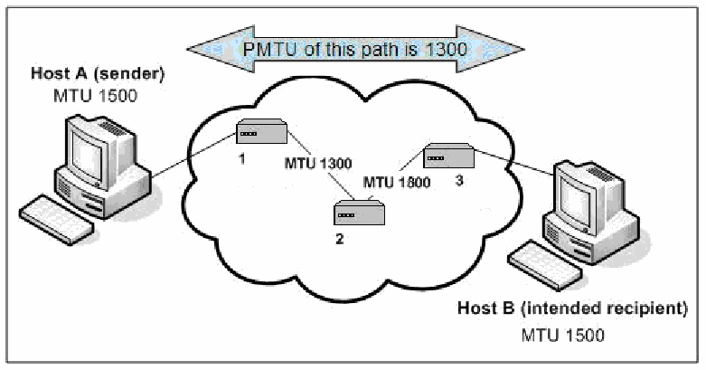
図3-13. IPv6におけるMTUの重要性。左の「ホストA（送信者）、MTU 1500」と右の「ホストB（意図した受信者）、MTU 1500」が、1、2、3と番号を付けた3台のルーターを含む雲を介して接続されている。ルーター1と2の間のリンクにMTU 1300、ルーター2と3の間のリンクにMTU 1800と記されている。上部の両方向矢印に「この経路のPMTUは1300」とある。
Figure 3-13. Significance of MTU under IPv6
図3-13. IPv6におけるMTUの重要性
The PMTU protocol is detailed in RFC 1981.
PMTUプロトコルの詳細はRFC 1981に記載されている。
3.5.6 Security Ramifications
3.5.6 セキュリティ上の影響
This section describes security considerations for ICMPv6. Examples include denial of ICMPv6 traffic that can effectively result in a denial of service condition for a given network. The functions of Neighbor Discovery and PMTU discovery are entirely dependent upon the proper functioning of ICMPv6. Not only is proper Neighbor Discovery configuration essential to a functional IPv6 network, but misconfiguration of RA and RS parameters can compromise the security of the network.
この節ではICMPv6のセキュリティ上の考慮事項を説明する。たとえば、ICMPv6トラフィックを拒否すると、ネットワークで実質的なサービス拒否状態が発生することがある。近隣探索とPMTU探索の機能は、ICMPv6が適切に動作することに全面的に依存している。IPv6ネットワークを機能させるには近隣探索の適切な設定が不可欠であるだけでなく、RAおよびRSパラメーターの誤設定はネットワークのセキュリティを損なう可能性がある。
Rogue routers or misconfigured nodes may be inserted on a local network segment and configured to propagate false or inaccurate RA messages. Network nodes on this segment might then learn false routing information that would result in network traffic being sent through the rogue router. Further, forged RA messages may be sent from legitimate hosts on an IPv6 network segment, possibly causing other nodes to forward packets to non-existent routers and resulting in a denial of service or man-in-the-middle attack. Additionally, malicious responses to DAD messages can cause denial of service conditions on a local network segment; DAD can be disabled on specific network or security device interfaces to prevent Denial of Service (DOS) attacks. Spoofed NS/NA packets can cause redirect or DOS attacks. Secure Neighbor Discovery (SEND) was developed to help mitigate some of the security issues caused by rogue devices. SEND is discussed in more detail in Section 5.4.
不正なルーターや設定ミスのあるノードをローカルネットワークセグメントに接続し、虚偽または不正確なRAメッセージを伝播するよう設定することがある。そのセグメント上のネットワークノードが誤ったルーティング情報を学習すると、ネットワークトラフィックが不正なルーター経由で送信される可能性がある。また、正規のIPv6ネットワーク上のホストから偽造RAメッセージが送られ、ほかのノードが存在しないルーターにパケットを転送して、サービス拒否や中間者攻撃が発生するおそれがある。DADメッセージに対する悪意のある応答も、ローカルネットワークセグメントでサービス拒否状態を引き起こす可能性がある。サービス拒否（DoS）攻撃を防ぐため、特定のネットワークインターフェースやセキュリティデバイスのインターフェースでDADを無効にできる。偽装されたNS/NAパケットは、リダイレクト攻撃やDoS攻撃を引き起こす可能性がある。Secure Neighbor Discovery（SEND）は、不正デバイスが引き起こすセキュリティ問題の一部を緩和するために開発された。SENDについては5.4節で詳しく説明する。
Router access control lists (ACLs), firewalls, and other security components must be carefully managed to retain ICMPv6 functionality. Any security measures on a network segment must allow IPv6 nodes to use ICMPv6 to accomplish Neighbor Discovery, PMTU discovery, and other essential tasks. If an IPv6 default router on a network segment is unable to receive and reply to legitimate RS messages, nodes sending those messages may experience a denial of service condition. PMTU messages should also be allowed to traverse network perimeters, to enable proper functioning of IPv6 end-to-end communications.
ICMPv6の機能を維持するには、ルーターのアクセス制御リスト（ACL）、ファイアウォール、その他のセキュリティコンポーネントを慎重に管理しなければならない。ネットワークセグメントに適用するセキュリティ対策は、近隣探索、PMTU探索、その他の必須タスクを実行するため、IPv6ノードがICMPv6を使用できるようにしなければならない。ネットワークセグメント上のIPv6デフォルトルーターが正規のRSメッセージを受信して応答できない場合、メッセージを送信したノードでサービス拒否状態が発生することがある。IPv6のエンドツーエンド通信を適切に機能させるには、PMTUメッセージもネットワーク境界を通過できるようにするべきである。
Some ICMPv6 traffic (e.g., RS and RA) is only useful on the local segment, uses link-local addresses, and should never be routed. Port-based ACLs can be used to prevent any Ethernet port from receiving RA messages coming inbound to the network from an end-user computer. ACLs implemented on common routers can be configured to allow other appropriate ICMPv6 traffic to pass despite the presence of the default deny all parameter. Network administrators should confirm the inherent ICMPv6 capabilities of their router’s operating system and confirm the configuration parameters that govern the handling of ICMPv6. There may be places in the network (e.g., a Demilitarized Zone [DMZ]) where it makes sense to disable Neighbor Discovery and use static neighbor cache entries instead.
RSやRAなど一部のICMPv6トラフィックは、ローカルセグメント内でのみ有用であり、リンクローカルアドレスを使用し、決してルーティングするべきではない。ポートベースACLを使うと、エンドユーザーコンピューターからネットワークに流入するRAメッセージを、どのEthernetポートでも受信しないようにできる。一般的なルーターに実装されたACLは、デフォルトの全拒否パラメーターが存在していても、適切なほかのICMPv6トラフィックを通過させるよう構成できる。ネットワーク管理者は、ルーターのオペレーティングシステムが本来備えるICMPv6機能と、ICMPv6の処理を規定する構成パラメーターを確認するべきである。ネットワーク内には、近隣探索を無効にして代わりに静的な近隣キャッシュエントリーを使うのが適切な場所（非武装地帯［DMZ］など）がある場合もある。
Any IP network, whether it is IPv4-only or a dual stack IPv4/IPv6 network, must have the capability to detect and examine ICMPv6 and IPv6 packets. Without this capability, rogue IPv6 nodes may be operating on a network that is intended to handle only IPv4. ICMPv6 is fundamental to the operation of IPv6 networks, and even malicious IPv6 nodes will depend upon ICMPv6 to operate. Network administrators and managers should evaluate the capability of their existing tools used to monitor ICMP traffic for similar support for ICMPv6.
IPv4専用ネットワークであってもIPv4/IPv6デュアルスタックネットワークであっても、あらゆるIPネットワークはICMPv6とIPv6パケットを検知して調査する機能を備えなければならない。この機能がなければ、IPv4のみを扱う想定のネットワーク上で不正なIPv6ノードが動作している可能性がある。ICMPv6はIPv6ネットワークの動作に不可欠であり、悪意のあるIPv6ノードであっても動作にはICMPv6を利用する。ネットワーク管理者および管理者層は、既存のICMPトラフィック監視ツールがICMPv6にも同様に対応できるかを評価するべきである。
Use of IPsec to authenticate the sender and validate the contents of ICMPv6 messages is often not possible. Additionally, establishing security associations with all possible sources of ICMPv6 messages is generally not possible. Furthermore, some ICMP messages (e.g., PMTU) may be returned from intermediate routers, not from the message’s ultimate destination. A further discussion about the use of IPsec with ICMPv6 is included in Section 5.4.1. Due to this inability to establish security associations, alternatives should be used to reduce the vulnerability to ICMPv6-based attacks.
ICMPv6メッセージの送信元を認証し、内容を検証するためにIPsecを使用できない場合が多い。さらに、ICMPv6メッセージのあらゆる送信元に対してセキュリティアソシエーションを確立することも、一般に不可能である。また、一部のICMPメッセージ（PMTUなど）は、メッセージの最終宛先ではなく中間ルーターから返されることがある。ICMPv6でのIPsec使用については5.4.1節で詳しく説明する。セキュリティアソシエーションを確立できないため、ICMPv6を利用した攻撃に対する脆弱性を軽減する代替策を用いるべきである。
It is essential to establish strict filtering policies in site firewalls to limit ICMPv6 messages that can pass between the site and the Internet. Firewall treatment of ICMPv6 traffic requires finer-grained handling than may have sufficed for IPv4. Certain IPv6 features, such as Path MTU Discovery, require the transmission of the associated ICMPv6 messages (e.g., Packet Too Big) for proper functionality. On the other hand, messages associated with other features, like Network Discovery, should not be transmitted from outside the local link.
サイトとインターネットの間を通過できるICMPv6メッセージを制限するため、サイトファイアウォールに厳格なフィルタリングポリシーを設けることが不可欠である。ICMPv6トラフィックのファイアウォール処理には、IPv4で十分だった場合よりもきめ細かな制御が必要となる。経路MTU探索など一部のIPv6機能を適切に動作させるには、関連するICMPv6メッセージ（Packet Too Bigなど）の送信が必要である。一方、Network Discoveryなどの別の機能に関連するメッセージは、ローカルリンク外から送信されるべきではない。
Hence, providing only a blanket "allow all"/"block all" choice for ICMP traffic handling, which may have been adequate for IPv4, is not appropriate for IPv6. The Federal IPv6 Profile21 requires firewalls to at least be able to block/allow ICMPv6 traffic selectively based on type and code.
したがって、IPv4では十分だった可能性のある、ICMPトラフィック処理の包括的な「すべて許可」／「すべて遮断」という選択肢だけを用意するのは、IPv6には適切でない。Federal IPv6 Profile21では、ファイアウォールが少なくともタイプとコードに基づいてICMPv6トラフィックを選択的に許可または遮断できることを求めている。
More sophisticated firewalls can do better: by associating connection-specific ICMPv6 types (such as
より高度なファイアウォールでは、さらに細かな制御が可能である。接続固有のICMPv6タイプ（次の例：
Packet Too Big or, in some situations, Destination Unreachable) with the corresponding state records for existing connections (TCP, UDP, or SCTP streams), such stateful firewalls can limit even allowed types to those that could legitimately be part of permitted traffic flows.
Packet Too Bigや、状況によってはDestination Unreachable）を既存の接続（TCP、UDP、SCTPストリーム）の対応する状態レコードと関連付けることで、状態追跡型ファイアウォールは、許可されたタイプであっても、許可されたトラフィックフローの一部として正当に発生し得るものだけに制限できる。
Table 3-7 gives recommended ICMPv6 firewall settings for various possible traffic types. The “Maintenance of Communications” and “Error Messages” sections of the table assume the more sophisticated connection-association capabilities mentioned above; less-sophisticated firewalls would have to allow these messages whenever a corresponding connection could occur, based on other rules (e.g., allowed source and destination addresses).
表3-7に、想定されるさまざまなトラフィックタイプに対して推奨されるICMPv6ファイアウォール設定を示す。表の「通信の維持」と「エラーメッセージ」の節は、前述の高度な接続関連付け機能を前提としている。高度な機能を持たないファイアウォールでは、ほかの規則（許可された送信元・宛先アドレスなど）に基づいて対応する接続が発生し得る場合に、これらのメッセージを許可する必要がある。
The recommendations for ICMPv6 firewall filtering in Table 3-7 are based on RFC 4890, Recommendation for Filtering ICMPv6 Messages in Firewalls. These recommendations allow propagation of ICMPv6 messages needed to maintain functionality of the network but drop messages posing potential security risks. Many ICMPv6 messages should only be used in a link-local context, rather than end-to-end, and filters need to be concerned with the types of addresses in ICMPv6 packets as well as the specific source address, destination addresses, and ICMPv6 Type. RFC 4890 classifies ICMPv6 messages according to whether they are designed for end-to-end communications (traffic to transit a firewall) or local communications within a link (local traffic addressed to an interface on a firewall). All experimental and undefined ICMPv6 messages should be dropped. ACLs should permit only those ICMPv6 messages that are required, based on specific local needs and policies; all others should be dropped.
表3-7のICMPv6ファイアウォールフィルタリングに関する推奨事項は、RFC 4890「Recommendation for Filtering ICMPv6 Messages in Firewalls」に基づく。これらの推奨事項は、ネットワーク機能の維持に必要なICMPv6メッセージを通過させる一方、潜在的なセキュリティリスクをもたらすメッセージを破棄する。多くのICMPv6メッセージはエンドツーエンドではなくリンクローカルの範囲でのみ使うべきである。そのためフィルターでは、ICMPv6パケット内のアドレスの種類に加え、送信元アドレス、宛先アドレス、ICMPv6タイプを考慮する必要がある。RFC 4890は、ファイアウォールを通過するエンドツーエンド通信向けか、リンク内のローカル通信（ファイアウォール上のインターフェース宛てのローカルトラフィック）向けかに基づいて、ICMPv6メッセージを分類している。実験用および未定義のICMPv6メッセージはすべて破棄するべきである。ACLでは、具体的なローカル要件とポリシーに基づいて必要なICMPv6メッセージだけを許可し、それ以外はすべて破棄するべきである。
Table 3-7. ICMPv6 Recommended Filtering Actions – Must Not Drop & Should Not Drop
表3-7. ICMPv6で推奨されるフィルタリング動作 — 破棄してはならないもの & 破棄すべきでないもの
| Must Not Drop | Should Not Drop | |||
| Message (Type) | Transit | Local | Transit | Local |
| Maintenance of Communication: | Allow non-local when associated with allowed connections | |||
| Destination Unreachable (1) – All codes | ● | ● | ||
| Packet Too Big (2) | ● | ● | ||
| Time Exceeded (3) – Code 0 only | ● | ● | ||
| Parameter Problem (4) – Codes 1 and 2 only | ● | ● | ||
| Connectivity Checking: | Allow/disallow non-local based on topology/information concealment policy | |||
| Echo Request (128) | ● | ● | ||
| Echo Response (129) | ● | ● | ||
| Address Configuration and Router Selection: | Allow in link-local traffic only | |||
| Router Solicitation (133) | ● | |||
| Router Advertisement (134) | ● | |||
| Neighbor Solicitation (135) | ● | |||
| Neighbor Advertisement (136) | ● | |||
| Inverse Neighbor Discovery Solicitation (141) | ● | |||
| Inverse Neighbor Discovery Advertisement (142) | ● | |||
| Link-Local Multicast Receiver Notification: | Allow in link-local traffic only | |||
| Listener Query (130) | ● | |||
| Listener Report (131) | ● | |||
| Listener Done (132) | ● | |||
| Listener Report v2 (143) | ● | |||
| SEND Certification Path Notification: | Allow in link-local traffic only | |||
| Certification Path Solicitation (148) | ● | |||
| Certification Path Advertisement (149) | ● | |||
| Multicast Router Discovery: | Allow in link-local traffic only | |||
| Multicast Router Advertisement (151) | ● | |||
| Multicast Router Solicitation (152) | ● | |||
| Multicast Router Termination (153) | ● | |||
| Error Messages: | Allow non-local when associated with allowed connections | |||
| Time Exceeded (3) – Code 1 | ● | ● | ||
| Parameter Problem (4) – Code 0 | ● | ● | ||
| Mobile IPv6: | Allow non-local for predefined endpoints | |||
| Home Agent Address Discovery Request (144) | ● | |||
| Home Agent Address Discovery Reply (145) | ● | |||
| Mobile Prefix Solicitation (146) | ● | |||
| Mobile Prefix Advertisement (147) | ● | |||
| 破棄してはならない | 破棄すべきでない | |||
| メッセージ（タイプ） | 通過 | ローカル | 通過 | ローカル |
| 通信の維持： | 許可された接続に関連付けられる場合は非ローカル通信を許可 | |||
| Destination Unreachable（1）—すべてのコード | ● | ● | ||
| Packet Too Big（2） | ● | ● | ||
| Time Exceeded（3）—コード0のみ | ● | ● | ||
| Parameter Problem（4）—コード1および2のみ | ● | ● | ||
| 接続確認： | トポロジー／情報秘匿ポリシーに基づいて非ローカル通信を許可または拒否 | |||
| Echo Request（128） | ● | ● | ||
| Echo Response（129） | ● | ● | ||
| アドレス構成とルーター選択： | リンクローカルトラフィックのみ許可 | |||
| Router Solicitation（133） | ● | |||
| Router Advertisement（134） | ● | |||
| Neighbor Solicitation（135） | ● | |||
| Neighbor Advertisement（136） | ● | |||
| Inverse Neighbor Discovery Solicitation（141） | ● | |||
| Inverse Neighbor Discovery Advertisement（142） | ● | |||
| リンクローカルマルチキャスト受信者通知： | リンクローカルトラフィックのみ許可 | |||
| Listener Query（130） | ● | |||
| Listener Report（131） | ● | |||
| Listener Done（132） | ● | |||
| Listener Report v2（143） | ● | |||
| SEND証明パス通知： | リンクローカルトラフィックのみ許可 | |||
| Certification Path Solicitation（148） | ● | |||
| Certification Path Advertisement（149） | ● | |||
| マルチキャストルーター探索： | リンクローカルトラフィックのみ許可 | |||
| Multicast Router Advertisement（151） | ● | |||
| Multicast Router Solicitation（152） | ● | |||
| Multicast Router Termination（153） | ● | |||
| エラーメッセージ： | 許可された接続に関連付けられる場合は非ローカル通信を許可 | |||
| Time Exceeded（3）—コード1 | ● | ● | ||
| Parameter Problem（4）—コード0 | ● | ● | ||
| モバイルIPv6： | 事前定義されたエンドポイントに対する非ローカル通信を許可 | |||
| Home Agent Address Discovery Request（144） | ● | |||
| Home Agent Address Discovery Reply（145） | ● | |||
| Mobile Prefix Solicitation（146） | ● | |||
| Mobile Prefix Advertisement（147） | ● | |||
3.6 IPv6 and Routing
3.6 IPv6とルーティング
Routing protocols fall into two general types. Interior Gateway Protocols (IGPs) are designed for use within an autonomous system (AS), that is, among routers that are all controlled by the same enterprise or organization. Exterior Gateway Protocols (EGPs) are designed for exchanging routes between autonomous systems, such as between network carriers or between a large enterprise and its network service providers. To support IPv6, routing protocols, such as Routing Information Protocol (RIP), OSPF, Intermediate System to Intermediate System (IS-IS), Enhanced Interior Gateway Routing Protocol (EIGRP), and Border Gateway Protocol (BGP), had to be updated. This section covers changes to routing protocols, as well as security support for such protocols.
ルーティングプロトコルは大きく2種類に分けられる。Interior Gateway Protocol（IGP）は、単一の自律システム（AS）内、すなわち同じ企業または組織がすべて管理するルーター間で使用するために設計されている。Exterior Gateway Protocol（EGP）は、ネットワークキャリア間や、大企業とそのネットワークサービスプロバイダー間など、自律システム間で経路情報を交換するために設計されている。IPv6に対応するため、Routing Information Protocol（RIP）、OSPF、Intermediate System to Intermediate System（IS-IS）、Enhanced Interior Gateway Routing Protocol（EIGRP）、Border Gateway Protocol（BGP）などのルーティングプロトコルは更新する必要があった。この節では、ルーティングプロトコルの変更と、それらのプロトコルに対するセキュリティサポートについて説明する。
3.6.1 Specification Overview
3.6.1 仕様の概要
Open Shortest Path First (OSPF) is a link-state hierarchical Interior Gateway Protocol (IGP). Dijkstra’s algorithm is used to calculate the shortest path tree. It uses path cost as its routing metric. Path cost is determined generally by the speed (i.e., bandwidth) of a given route. IPv4 networks run OSPF version 2 (OSPFv2) as specified in RFC 2328.
Open Shortest Path First（OSPF）は、リンク状態型の階層的なInterior Gateway Protocol（IGP）である。最短経路木の計算にはDijkstraアルゴリズムを使用する。ルーティングメトリックには経路コストを使用する。経路コストは通常、該当経路の速度（帯域幅）によって決まる。IPv4ネットワークでは、RFC 2328で規定されるOSPFバージョン2（OSPFv2）が稼働する。
OSPF version 3 (OSPFv3) is designed specifically for IPv6 and is specified in RFC 5340. OSPFv3 for IPv6 is a completely independent routing protocol from OSPFv2 for IPv4. OSPFv3 expands on OSPFv2 to provide support for IPv6 routing prefixes and the larger size of IPv6 addresses. OSPF is commonly used in large enterprise networks.
OSPFバージョン3（OSPFv3）はIPv6専用に設計され、RFC 5340で規定されている。IPv6向けのOSPFv3は、IPv4向けのOSPFv2とは完全に独立したルーティングプロトコルである。OSPFv3はOSPFv2を拡張し、IPv6ルーティングプレフィックスと、より長いIPv6アドレスをサポートする。OSPFは大規模な企業ネットワークで広く使われている。
The Routing Information Protocol (RIP) is a distance-vector routing protocol that employs hop count as a routing metric. IPv4 uses RIP version 2 (RIPv2) as specified in RFC 2453. The IPv6 version of RIP is standardized in RFC 2080. It is easy to configure, but offers limited flexibility and scalability. RIP enhancements for IPv6, detailed in RFC 2080, also known as RIPng, include support for IPv6 addresses and prefixes and the use of the all-RIP-routers multicast group address FF02::9 as the destination address for RIP update messages. Each RIPng update contains a copy of the entire routing table. RIPng is suited for networks of modest size only.
Routing Information Protocol（RIP）は、ホップ数をルーティングメトリックとして使う距離ベクトル型ルーティングプロトコルである。IPv4ではRFC 2453で規定されるRIPバージョン2（RIPv2）を使用する。IPv6版RIPはRFC 2080で標準化されている。設定は容易だが、柔軟性と拡張性は限られている。RFC 2080で詳述されるIPv6向けRIP拡張（RIPngとも呼ばれる）は、IPv6アドレスとプレフィックスをサポートし、RIP更新メッセージの宛先として、すべてのRIPルーターを対象とするマルチキャストグループアドレスFF02::9を使用する。各RIPng更新にはルーティングテーブル全体のコピーが含まれる。RIPngは比較的小規模なネットワークにのみ適している。
IS-IS is an IGP that advertises link-state information throughout the network to create a picture of the network topology. IS-IS is an Open Systems Interconnection (OSI) hierarchical routing protocol that designates an intermediate system as a Level 1 or Level 2 device. Level 2 devices route between Level 1 areas to create an intradomain routing backbone. Integrated IS-IS uses a single routing algorithm to support several network address families, such as IPv6, IPv4, and OSI. It runs point to point over the link layer protocol; it does not use IPv4 or IPv6. Each IS-IS update contains only changes to the network topology. IS-IS is flexible, efficient, and suitable for large IPv4/IPv6 networks.
IS-ISは、ネットワーク全体にリンク状態情報を通知してネットワークトポロジーを把握するIGPである。IS-ISはOpen Systems Interconnection（OSI）の階層型ルーティングプロトコルであり、中間システムをレベル1またはレベル2の装置として指定する。レベル2装置はレベル1エリア間をルーティングし、ドメイン内ルーティングのバックボーンを形成する。統合IS-ISは単一のルーティングアルゴリズムで、IPv6、IPv4、OSIなど複数のネットワークアドレスファミリーをサポートする。リンク層プロトコル上でポイントツーポイントに動作し、IPv4もIPv6も使用しない。各IS-IS更新にはネットワークトポロジーの変更分だけが含まれる。IS-ISは柔軟かつ効率的で、大規模なIPv4/IPv6ネットワークに適している。
Enhanced Interior Gateway Routing Protocol (EIGRP) is Cisco’s proprietary routing protocol. EIGRP is an advanced distance-vector routing protocol, with optimizations to minimize both the routing instability incurred after topology changes, as well as the use of bandwidth and processing power in the router. EIGRP and IGRP are compatible with each other. EIGRP for IPv4 and EIGRP for IPv6 are configured and managed separately.
Enhanced Interior Gateway Routing Protocol（EIGRP）はCisco独自のルーティングプロトコルである。EIGRPは高度な距離ベクトル型ルーティングプロトコルであり、トポロジー変更後に生じるルーティングの不安定性と、ルーターにおける帯域幅および処理能力の使用量の両方を最小限に抑える最適化を備えている。EIGRPとIGRPは相互に互換性がある。IPv4向けEIGRPとIPv6向けEIGRPは、別々に構成・管理する。
BGP4 is the Exterior Gateway Protocol (EGP) used mainly to connect separate routing domains that contain independent routing policies (autonomous systems). Connecting to a service provider for access to the Internet is a common use for Border Gateway Protocol (BGP). BGP version 4 with multi-protocol extensions supports both IPv4 and IPv6. Each BGP update contains only changes to the network topology. BGP is efficient and flexible. Multi-protocol BGP is standardized in RFC 4760.
BGP4は、独立したルーティングポリシーを持つ別々のルーティングドメイン（自律システム）を接続するために主に使われるExterior Gateway Protocol（EGP）である。インターネット接続のためにサービスプロバイダーへ接続することは、Border Gateway Protocol（BGP）の一般的な用途である。マルチプロトコル拡張を備えるBGPバージョン4は、IPv4とIPv6の両方をサポートする。各BGP更新にはネットワークトポロジーの変更分だけが含まれる。BGPは効率的かつ柔軟である。マルチプロトコルBGPはRFC 4760で標準化されている。
3.6.2 Security for Routing Protocols
3.6.2 ルーティングプロトコルのセキュリティ
Routing protocols can be subject to threats such as unauthorized updates for either IPv4 or IPv6 routes. Security capabilities have been designed for routing protocols to mitigate unauthorized update threats. Some IPv6 routing protocols rely on similar mechanisms to those in IPv4 for protection, while others have incorporated IPsec for protection. These security mechanisms do not provide end-to-end security for routing protocols across multiple hops, because while they provide integrity assurance for routing protocol messages between nodes, they do not verify the integrity of messages received from other nodes that are not part of a security association. This is a major security concern for EGPs and a somewhat lesser one for IGPs.
ルーティングプロトコルは、IPv4またはIPv6の経路に対する不正な更新などの脅威にさらされる可能性がある。不正な更新の脅威を緩和するため、ルーティングプロトコル向けのセキュリティ機能が設計されている。一部のIPv6ルーティングプロトコルはIPv4と同様の保護メカニズムを採用し、ほかのプロトコルは保護にIPsecを組み込んでいる。これらのセキュリティメカニズムは、複数のホップをまたぐルーティングプロトコルのエンドツーエンドセキュリティを提供しない。ノード間で交換されるルーティングプロトコルメッセージの完全性は保証するものの、セキュリティアソシエーションに属さないほかのノードから受信したメッセージの完全性は検証しないためである。これはEGPにとって重大なセキュリティ上の懸念であり、IGPにとっても程度は低いが懸念事項となる。
RIPng
RIPng
RIP for IPv4 uses an MD5-based integrity mechanism; this was removed from RIPng. RIPng offers no integrity assurance features. Per RFC 2080, RIPng leverages IPsec for security. It should be noted that hardware vendors have not incorporated IPsec features as a configuration option, instead relying on native IPv6 IPsec support from the operating platform for protection. RIPng is suitable only for small, private networks where the threat of routing attacks is substantially reduced.
IPv4向けRIPではMD5ベースの完全性メカニズムを使用するが、これはRIPngでは削除された。RIPngには完全性を保証する機能がない。RFC 2080によると、RIPngはセキュリティ確保にIPsecを利用する。ハードウェアベンダーはIPsec機能を構成オプションとして組み込まず、保護には動作プラットフォームが本来備えるIPv6 IPsecサポートを利用している点に注意する必要がある。RIPngは、ルーティング攻撃の脅威が大幅に低減される小規模なプライベートネットワークにのみ適している。
OSPFv3
OSPFv3
Securing OSPFv2 in a dual stack environment will protect neither the OSPFv3 protocol nor the OSPFv3 routing table. OSPFv2 allows null, password-based, or cryptographic authentication using MD5-based integrity for routing updates. The authentication fields found in OSPFv2 have been removed from the OSPFv3 packet for IPv6, so MD5 is not an authentication option. OSPFv3 offers no integrity assurance features itself and relies on IPsec AH or ESP for authentication, integrity, and confidentiality. Note that OSPFv3 uses unicast and multicast, and IKE does not work with multicast, so the default method is to use manual keying. Since replay protection cannot be provided using manual keying, OSPFv3 messages are vulnerable to replay attacks, which can lead to DoS attacks, Central Processing Unit (CPU) overload, and localized routing loops. IPsec for OSPFv3 is detailed in RFC 4552.
デュアルスタック環境でOSPFv2を保護しても、OSPFv3プロトコルもOSPFv3ルーティングテーブルも保護されない。OSPFv2は、ルーティング更新に対して、認証なし、パスワードベース認証、またはMD5ベースの完全性を用いた暗号認証を許可する。OSPFv2にある認証フィールドはIPv6用OSPFv3パケットから削除されたため、MD5は認証方式として使えない。OSPFv3自体には完全性保証機能がなく、認証、完全性、機密性のためにIPsec AHまたはESPを利用する。OSPFv3はユニキャストとマルチキャストを使用し、IKEはマルチキャストで動作しないため、既定の方法は手動鍵設定となる点に注意する必要がある。手動鍵設定ではリプレイ保護を提供できないため、OSPFv3メッセージはリプレイ攻撃に対して脆弱であり、DoS攻撃、中央処理装置（CPU）の過負荷、局所的なルーティングループにつながる可能性がある。OSPFv3向けIPsecの詳細はRFC 4552に記載されている。
With routing protocols, routing integrity is usually a greater concern than confidentiality. The ESP parameter NULL indicating no encryption is generally regarded to be an acceptable choice for OSPF security.
ルーティングプロトコルでは、通常、機密性よりもルーティングの完全性が大きな懸念事項となる。暗号化を行わないことを示すESPパラメーターNULLは、OSPFセキュリティにおいて一般に許容可能な選択肢と見なされている。
IS-IS and EIGRP
IS-ISとEIGRP
Both IS-IS and EIGRP support simple MD5-based integrity for protecting IPv6 routing updates, similar to protecting routing updates for IS-IS and EIGRP for IPv4.
IS-ISとEIGRPはどちらも、IPv4向けのIS-ISとEIGRPのルーティング更新を保護する方法と同様に、IPv6ルーティング更新を保護する単純なMD5ベースの完全性機能をサポートする。
BGP
BGP
The use of BGP as an inter-AS routing protocol means that it can be subject to serious threats. Three mechanisms exist to mitigate threats to BGP. The first is the use of MD5-based integrity to protect routing updates. The second mechanism to mitigate threats to BGP is GTSM (RFC 5082). GTSM is a simple security mechanism for rejecting spoofed BGP messages based on their IP TTL or Hop Limit.
AS間ルーティングプロトコルとしてBGPを使用すると、重大な脅威にさらされる可能性がある。BGPへの脅威を緩和するメカニズムは3つある。1つ目は、ルーティング更新を保護するMD5ベースの完全性機能である。2つ目は、BGPへの脅威を緩和するGTSM（RFC 5082）である。GTSMは、IP TTLまたはホップリミットに基づいてBGPメッセージのなりすましを拒否する単純なセキュリティメカニズムである。
The sending BGP router always uses a TTL=255, and the receiving BGP router checks that the TTL has the expected value of 255. Any packets from a remote attacker would have to travel via intervening routers, would have a smaller-than-maximum TTL, and would be dropped on receipt. Note however that a router operating as the endpoint of a tunneling protocol may not decrement the hop count upon receiving packets through the tunnel, so these could conceivably come from anywhere with TTL=255. The third mechanism to mitigate threats to BGP is IPsec. IPsec key management can use shared secrets or public key certificates, which allow IPsec to offer scalability. GTSM has the lowest overhead of the three mechanisms, and is the easiest to configure. It also offers the least effective protection. The MD5 signature mechanism offers low overhead and effective protection, but it forces administrators to disrupt their BGP sessions at each key update, and it does not scale well. IPsec offers the most effective protection, least disruption, and best scalability. It also imposes the highest overhead (although the overhead is still small), and it is the most complex mechanism to configure. In summary, using an MD5 checksum is certainly better than nothing, but MD5 itself can be attacked successfully, and most of these methods have no easy ways to change hash functions or even change keys. IPsec is preferable for routing protocols that support its use. All of the above security mechanisms protect against unauthorized insertion or manipulation of routing protocol messages.22 They do not protect against a corrupted or malfunctioning router that may construct and pass along incorrect routing information. Many approaches to providing better end-to-end security for BGP have been proposed, but consensus on a single solution has not yet been achieved.
送信側BGPルーターは常にTTL=255を使用し、受信側BGPルーターはTTLが想定値の255であることを確認する。リモートの攻撃者から送信されたパケットは中継ルーターを通過する必要があるため、TTLは最大値より小さくなり、受信時に破棄される。ただし、トンネリングプロトコルの終端として動作するルーターは、トンネル経由のパケットを受信してもホップ数を減らさない場合があるため、TTL=255のパケットが実質的にどこからでも届く可能性がある。BGPへの脅威を緩和する3つ目のメカニズムはIPsecである。IPsecの鍵管理では共有シークレットまたは公開鍵証明書を使うことができ、IPsecの拡張性を高められる。3つのメカニズムのうち、GTSMはオーバーヘッドが最も小さく、最も設定しやすい一方、保護効果は最も低い。MD5署名メカニズムはオーバーヘッドが小さく効果的に保護するが、鍵を更新するたびに管理者がBGPセッションを中断する必要があり、拡張性にも乏しい。IPsecは最も効果的な保護を提供し、中断が最も少なく、拡張性も最も高い。一方で、オーバーヘッドが最も大きく（ただし依然として小さい）、設定も最も複雑である。要約すると、MD5チェックサムは何もしないより確実に優れているが、MD5自体は攻撃に成功され得る。また、これらの方法の多くでは、ハッシュ関数や鍵を簡単に変更できない。IPsecの使用に対応しているルーティングプロトコルでは、IPsecを使用することが望ましい。上述のセキュリティメカニズムはすべて、ルーティングプロトコルメッセージの不正な挿入や改ざんから保護する。22 ただし、誤ったルーティング情報を生成して転送する、侵害されたルーターや誤動作するルーターからは保護しない。BGPにより優れたエンドツーエンドセキュリティを提供する多くの方式が提案されているが、単一の解決策について合意はまだ得られていない。
3.6.3 Unknown Aspects
3.6.3 不明な側面
As IPv6 deployment grows globally so will the Internet’s IPv6 global routing tables. It is very well possible that this expanded growth can impact service providers that already are faced with large IPv4-only routing tables. By assigning IPv6 addresses through service providers, in a hierarchical fashion, there is a greater possibility that efficient aggregation for IPv6 addressing will occur. If more organizations succeed in obtaining PI addressing, then there is a higher risk that global routing tables could explode in size, and hence cause possibly costly hardware upgrades to deal with extremely large routing tables. To assist with developing a scalable Internet architecture, use of techniques that separate end-systems’ addressing space and routing locators’ space (locator-ID split) are also being investigated.
IPv6の導入が世界的に進むにつれて、インターネットのIPv6グローバルルーティングテーブルも拡大する。この拡大によって、すでに大規模なIPv4専用ルーティングテーブルを抱えるサービスプロバイダーに影響が及ぶ可能性が十分にある。サービスプロバイダーを通じてIPv6アドレスを階層的に割り当てれば、IPv6アドレスの効率的な集約が実現する可能性が高まる。PIアドレスを取得する組織が増えれば、グローバルルーティングテーブルが急増し、非常に大きなルーティングテーブルに対処するため、費用のかかるハードウェア更新が必要になるリスクが高まる。拡張性のあるインターネットアーキテクチャの開発を支援するため、エンドシステムのアドレス空間とルーティングロケーターの空間を分離する技術（locator-ID split）も検討されている。
3.7 IPv6 and the Domain Name System (DNS)
3.7 IPv6とドメインネームシステム（DNS）
The Domain Name System (DNS) is essential for almost all use of the Internet. It must be available, and it must provide accurate information. Threats such as denial of service against the top-level servers are taken extremely seriously. Perhaps the biggest network security story of 2008 was the demonstration of a new attack that can insert false information into a DNS server’s cache. Upgrading DNS security is one of the major current challenges for ISPs23.
ドメインネームシステム（DNS）は、インターネットのほぼあらゆる用途に不可欠である。DNSは常に利用でき、正確な情報を提供しなければならない。トップレベルサーバーに対するサービス拒否などの脅威は、極めて深刻に受け止められている。おそらく2008年におけるネットワークセキュリティの最大の話題は、DNSサーバーのキャッシュに偽情報を挿入できる新しい攻撃の実証であった。DNSセキュリティの向上は、インターネットサービスプロバイダー（ISP）が現在直面している主要な課題の1つである。23
The Secure Domain Name System (DNS) Deployment Guide24 contains background information on DNS as it is used with IPv4, the possible attacks against DNS, and appropriate security measures. The Domain Name System – Security Technical Implementation Guide version 4r125 covers similar topics for Department of Defense (DoD) networks and also has advice on using DNS on particular computing platforms and operating systems. Both of these documents emphasize extensive experience with IPv4. Architecting and structuring DNS services is a complex topic that is outside the scope of this publication; extensive guidance about secure DNS services can be found in NIST SP (Special Publication) 800-81.
Secure Domain Name System（DNS）Deployment Guide24には、IPv4と併用するDNSの背景、DNSに対する攻撃の可能性、適切なセキュリティ対策が記載されている。Domain Name System – Security Technical Implementation Guide version 4r125も同様のトピックを扱い、米国防総省（DoD）ネットワーク向けに、特定のコンピューティングプラットフォームやオペレーティングシステム上でDNSを使うための助言も提供する。どちらの文書もIPv4に関する豊富な経験を重視している。DNSサービスの設計と構造化は複雑なテーマであり、本書の範囲外である。安全なDNSサービスに関する詳しいガイダンスはNIST SP（Special Publication）800-81に記載されている。
This section reviews the main aspects of DNS briefly to help understand the changes needed to make DNS work with IPv6 and how these affect the secure operation of DNS.
この節では、IPv6に対応するためにDNSに必要な変更と、それらがDNSの安全な運用に与える影響を理解できるよう、DNSの主な側面を簡潔に概説する。
DNS is a hierarchical, distributed database that translates logical, human readable names such as www.example.com into binary IP addresses used by applications like email and web browsers. The most common format of a DNS name is referred to as the Uniform Resource Locator (URL), or simply as the web address. DNS database entries are called resource records26. IPv4 and IPv6 addresses are different types of resource records, but the DNS handles both essentially the same. What is important to remember is that a single URL may have IPv4 addresses, IPv6 addresses, both, or neither.
DNSは階層型の分散データベースであり、www.example.comのような論理的で人間が読める名前を、電子メールやWebブラウザーなどのアプリケーションが使用する2進数のIPアドレスに変換する。DNS名の最も一般的な形式はUniform Resource Locator（URL）、または単にWebアドレスと呼ばれる。DNSデータベースのエントリーはリソースレコードと呼ばれる。26 IPv4アドレスとIPv6アドレスは異なる種類のリソースレコードだが、DNSは基本的に同じ方法で両方を扱う。1つのURLがIPv4アドレス、IPv6アドレス、両方、またはいずれも持たない場合があることを覚えておく必要がある。
DNS services are fully defined for IPv6 in RFC 3596. Additional information can be found in RFC 4472, Operational Considerations and Issues with IPv6 DNS. The root and common top-level domain (TLD) servers are all IPv6 capable today. Nevertheless, IPv6 addresses for production services usually cannot be found in the DNS, particularly for services based in the United States or North America. Most of these services do not have IPv6 access enabled, and most users would not have easy IPv6 connectivity to them if they were. Getting IPv6 DNS entries close to parity with IPv4 DNS on the Internet is unlikely to happen without demand for IPv6 access to popular, high-volume web sites and other services.
IPv6向けのDNSサービスはRFC 3596で完全に定義されている。追加情報はRFC 4472「Operational Considerations and Issues with IPv6 DNS」に記載されている。ルートサーバーと一般的なトップレベルドメイン（TLD）サーバーは、現在すべてIPv6に対応している。それでも、特に米国または北米を拠点とするサービスでは、実運用サービスのIPv6アドレスがDNSで見つからない場合が多い。これらのサービスのほとんどはIPv6アクセスを有効にしておらず、有効にしていたとしても、ほとんどのユーザーは簡単にIPv6接続できない。インターネット上のIPv6 DNSエントリーがIPv4 DNSと同等の水準に近づくには、人気の高い大規模Webサイトやその他のサービスでIPv6アクセスへの需要がなければ難しい。
Most DNS implementations have been upgraded to support IPv6, but older software applications may assume that DNS address queries return only 32-bit IPv4 addresses. Fully IPv6-capable DNS implementations not only need to handle 128-bit IPv6 addresses but also need to run over IPv6 with the same UDP and TCP port number, 53, as used by IPv4 (RFC 3901, DNS IPv6 Transport Operational Guidelines)27.
ほとんどのDNS実装はIPv6対応に更新されているが、古いソフトウェアアプリケーションは、DNSアドレスクエリーが32ビットのIPv4アドレスだけを返すと想定する場合がある。IPv6に完全対応するDNS実装では、128ビットのIPv6アドレスを処理するだけでなく、IPv4と同じUDPおよびTCPのポート番号53を使って、IPv6上でも動作する必要がある（RFC 3901「DNS IPv6 Transport Operational Guidelines」）。27
The primary components of DNS are the DNS root and TLD servers, authoritative DNS servers, local caching servers, and clients called resolvers. A resolver requests resource records from a local caching server. If the local caching server does not have a requested record, it uses the information it does have to start querying authoritative servers.
DNSの主な構成要素は、DNSルートサーバーとTLDサーバー、権威DNSサーバー、ローカルキャッシュサーバー、およびリゾルバーと呼ばれるクライアントである。リゾルバーはローカルキャッシュサーバーにリソースレコードを要求する。ローカルキャッシュサーバーが要求されたレコードを持っていない場合、保持している情報を使って権威サーバーへの問い合わせを開始する。
3.7.1 DNS Transport Protocol
3.7.1 DNSトランスポートプロトコル
It is important to note that while IPv6 address queries may be made over an IPv4 or IPv6 network, IPv6 transport of DNS messages is not required for looking up IPv6 addresses in DNS. The query, not the transport protocol, should always determine what information is returned in the Answer, Authority, and Additional sections of a response. A host can request an IPv6 address even if the network on which that host resides is IPv4-only. To obtain both the IPv4 and IPv6 addresses, a single DNS query could be used, but it is recommended that two separate requests be used. The choice as to which protocol to use first is configurable. Hosts and DNS servers running both IPv4 and IPv6 should have no problem with this aspect of DNS, but all zones should be set up so that they have at least one IPv4-enabled authoritative server, and IPv6-only systems should follow or exceed the minimum configuration guidelines in RFC 3901 to ensure that they do not get cut off from the rest of the DNS tree because they cannot communicate with any IPv4-only DNS servers.
IPv6アドレスのクエリーはIPv4ネットワーク上でもIPv6ネットワーク上でも実行できるが、DNSでIPv6アドレスを検索するためにDNSメッセージのIPv6トランスポートが必要なわけではない点が重要である。応答のAnswer、Authority、Additional各セクションにどの情報が返るかは、トランスポートプロトコルではなくクエリーによって常に決まるべきである。ホストが接続するネットワークがIPv4専用でも、IPv6アドレスを要求できる。IPv4アドレスとIPv6アドレスを両方取得するには単一のDNSクエリーを使う方法もあるが、2回に分けて要求することが推奨される。どちらのプロトコルを先に使用するかは設定可能である。IPv4とIPv6の両方を実行するホストとDNSサーバーでは、この点に問題はないはずだが、どのゾーンにもIPv4対応の権威サーバーが少なくとも1台あるように設定する必要がある。またIPv6専用システムは、IPv4専用DNSサーバーと通信できずDNSツリーから切り離されないよう、RFC 3901の最小構成ガイドラインに従うか、それを上回る必要がある。
3.7.2 DNS Specification Overview
3.7.2 DNS仕様の概要
RFC 3596, DNS Extensions to Support IP Version 6, defines the changes needed to DNS to support IPv6.
RFC 3596「DNS Extensions to Support IP Version 6」は、IPv6をサポートするためにDNSに必要な変更を定義する。
A new resource record type, AAAA (pronounced quad-A), is defined to store a host’s IPv6 address. A 128-bit IPv6 address is encoded in the data portion of a AAAA resource record in network byte order (high-order byte first). A AAAA resource record stores a single IPv6 address, so a host with more than one IPv6 address may have more than one such record. AAAA queries for a specified domain name return all associated AAAA resource records in the answer section of a response.
ホストのIPv6アドレスを格納するため、新しいリソースレコードタイプAAAA（quad-Aと発音する）が定義されている。128ビットのIPv6アドレスは、ネットワークバイト順（上位バイトが先）でAAAAリソースレコードのデータ部分に符号化される。AAAAリソースレコードは単一のIPv6アドレスを格納するため、複数のIPv6アドレスを持つホストには複数のAAAAレコードが存在する場合がある。指定されたドメイン名に対するAAAAクエリーは、関連するすべてのAAAAリソースレコードを応答のAnswerセクションに返す。
A special domain is defined to look up names corresponding to an IPv6 address. The intent of this domain is to provide a reverse mapping of an IPv6 address to a host name (stored as a DNS PTR resource record). The domain is rooted at IP6.ARPA. An IPv6 address is represented as a name in the IP6.ARPA domain with a sequence of four-bit nibbles written as hexadecimal digits and separated by dots with the suffix IP6.ARPA. The sequence of 32 nibbles is encoded in reverse order, i.e., the low-order nibble is encoded first, followed by the next low-order nibble and so on. For example, the reverse lookup domain name corresponding to the address 2001:db8:2:3:4:5:678:90ab is:
IPv6アドレスに対応する名前を検索するため、特別なドメインが定義されている。このドメインは、IPv6アドレスからホスト名（DNS PTRリソースレコードとして格納）への逆引きを提供する。ドメインのルートはIP6.ARPAである。IPv6アドレスは、IP6.ARPAドメイン内で、4ビットのニブルを16進数字で表し、ドットで区切った後にIP6.ARPAを付けた名前として表現される。32個のニブルは逆順で符号化され、すなわち下位ニブルから始め、その次の下位ニブルへと順に続く。たとえば、アドレス2001:db8:2:3:4:5:678:90abに対応する逆引きドメイン名は次のとおりである。
b.a.0.9.8.7.6.0.5.0.0.0.4.0.0.0.3.0.0.0.2.0.0.0.8.b.d.0.1.0.0.2.IP6.ARPA
b.a.0.9.8.7.6.0.5.0.0.0.4.0.0.0.3.0.0.0.2.0.0.0.8.b.d.0.1.0.0.2.IP6.ARPA
Note that zero suppression and double-colon compression cannot be used in reverse DNS names.
逆引きDNS名では、ゼロ抑制やダブルコロン圧縮を使用できないことに注意する。
All existing query types that perform type A (IPv4 address) additional section processing, i.e., name server (NS), service location (SRV), and mail exchange (MX) query types, must be modified or redefined to perform both type A and type AAAA additional section processing. This means that a name server must add any relevant IPv4 addresses and any relevant IPv6 addresses available locally to the Additional Section of a response when processing any one of the above queries.
タイプA（IPv4アドレス）のAdditionalセクション処理を行う既存のクエリータイプ、すなわちネームサーバー（NS）、サービスロケーション（SRV）、メール交換（MX）の各クエリータイプはすべて、タイプAとタイプAAAAの両方のAdditionalセクション処理を行うよう変更または再定義しなければならない。つまり、ネームサーバーは、前述のいずれかのクエリーを処理する際、ローカルで利用可能な関連IPv4アドレスと関連IPv6アドレスを応答のAdditionalセクションに追加しなければならない。
Several DNS implementations have been observed handling queries for AAAA records incorrectly, and these have been documented in RFC 4074. They may return the wrong data, wrong error codes, or nothing at all. Most of these errors result in unreachable services, delays, timeouts, or faulty assumptions by caching servers, but the RFC indicates places where these errors can also be exploited in denial-of-service attacks. In addition, some firewalls and Intrusion Detection Systems (IDSs) have experienced problems handling DNS responses that are larger than 512 bytes.
複数のDNS実装がAAAAレコードのクエリーを誤って処理することが確認されており、その事例はRFC 4074に記録されている。誤ったデータやエラーコードを返したり、何も返さなかったりする場合がある。これらのエラーの多くは、サービスへの到達不能、遅延、タイムアウト、キャッシュサーバーによる誤った想定につながるが、RFCでは、こうしたエラーがサービス拒否攻撃に悪用される可能性のある状況も示している。また、512バイトを超えるDNS応答の処理で問題が生じたファイアウォールや侵入検知システム（IDS）もある。
When performing a DNS address query, DNS is responsible only for resolving a domain name to a set of IP addresses. Applications and operating systems are responsible for choosing how to use the IPv6 AAAA or IPv4 A records that may be returned. This topic is called address selection, and it is an important part of using IPv6 and dual IPv4-IPv6 networks correctly. As a result, receiving unexpected AAAA records may cause an application that is not IPv6 aware to fail. Combining both IPv6 and IPv4 records into the same domain can lead to application problems that are beyond the scope of the DNS administrator. The Domain Name System – Security Technical Implementation Guide version 4r1 mentioned above recommends using different DNS names for IPv6-enabled hosts until all such problems (or at least the critical ones) are fixed. It also may be useful during pilot tests or early deployment to use names in separate domains for IPv6 servers, e.g., imap.IPv6.example.com, although one would like such names to handle IPv4 and IPv6 completely transparently in the long term.
DNSアドレスクエリーを実行する際、DNSの役割はドメイン名をIPアドレスの集合に解決することだけである。返されたIPv6 AAAAレコードまたはIPv4 Aレコードの使い方は、アプリケーションとオペレーティングシステムが選択する。この処理をアドレス選択と呼び、IPv6およびIPv4/IPv6デュアルネットワークを正しく利用するうえで重要である。そのため、予期しないAAAAレコードを受け取ると、IPv6に対応していないアプリケーションが失敗する可能性がある。同じドメインにIPv6レコードとIPv4レコードを混在させると、DNS管理者の対応範囲を超えるアプリケーション上の問題につながる場合がある。前述のDomain Name System – Security Technical Implementation Guide version 4r1では、こうした問題（または少なくとも重大な問題）が解決するまでは、IPv6対応ホストに別のDNS名を使うことを推奨している。試験運用や初期導入中は、IPv6サーバー用に別ドメインの名前（例：imap.IPv6.example.com）を使うのも有用な場合がある。ただし長期的には、このような名前でもIPv4とIPv6を完全に透過的に扱えることが望ましい。
A dual stack host needs a mechanism for choosing between IPv4 and IPv6. When DNS returns a set of different addresses, resolvers need to be configured either to choose which addresses to pass to an application or to forward all of the addresses and leave the choice to the application.
デュアルスタックホストには、IPv4とIPv6のどちらを使うか選択するメカニズムが必要である。DNSが異なる複数のアドレスを返す場合、リゾルバーは、アプリケーションに渡すアドレスを選ぶか、すべてのアドレスを転送して選択をアプリケーションに委ねるよう構成する必要がある。
IPv6 link-local addresses should never be put into the DNS (and site-local addresses should not be used at all). Temporary (RFC 3041) addresses are usually meant to be anonymous, so putting them into DNS would be an unusual choice and would require frequent updates. Putting 6to4 addresses into DNS may be sensible, but one may need cooperation from a local or regional registry to set up the IP6.ARPA PTR records for 6to4 addresses and for other address formats with specific prefixes and embedded IPv4 addresses.
IPv6のリンクローカルアドレスはDNSに決して登録すべきではなく、サイトローカルアドレスも一切使用すべきではない。一時アドレス（RFC 3041）は通常、匿名性を目的とするため、DNSに登録するのは通常とは異なる選択であり、頻繁な更新が必要となる。6to4アドレスをDNSに登録するのは妥当な場合もあるが、6to4アドレスや、特定のプレフィックスと埋め込みIPv4アドレスを持つほかのアドレス形式について、IP6.ARPAのPTRレコードを設定するため、地域または地方のレジストリとの協力が必要になる場合がある。
For additional details about adding DNS records for new services, handling time-to-live values in caches, obtaining a list of DNS servers when DHCPv6 is not used, updating forward (AAAA) and reverse (PTR) entries, handling dynamic DNS, and renumbering, see RFC 4472.
新しいサービスのDNSレコードの追加、キャッシュのTime-to-Live値の処理、DHCPv6を使わない場合のDNSサーバー一覧の取得、正引き（AAAA）および逆引き（PTR）エントリーの更新、動的DNS、アドレス再割り当てに関する詳細は、RFC 4472を参照。
3.7.3 Security Impact and Recommendations
3.7.3 セキュリティへの影響と推奨事項
3.7.3.1 General DNS Security Recommendations
3.7.3.1 DNSセキュリティ全般に関する推奨事項
All of the general accounts of threats against DNS (RFC 3833) and advice for securing DNS, independent of IPv6, apply. This begins with host security and software security for DNS servers. It includes keeping up with new software releases, vulnerability alerts, and patches. The security of DNS servers can be improved with isolation, redundancy, geographic diversity, network path diversity, and potentially platform diversity. Administrative access should be controlled and secured. Tools for checking that a zone file is well formed or that other configuration variables are correctly set should be used. DNS servers should be included in any penetration testing exercises.
DNSへの脅威に関する一般的な説明（RFC 3833）と、DNSのセキュリティ確保に関する助言は、IPv6とは無関係に、すべて当てはまる。これは、DNSサーバーのホストセキュリティとソフトウェアセキュリティから始まる。新しいソフトウェアのリリース、脆弱性警告、パッチを常に把握することも含まれる。DNSサーバーのセキュリティは、隔離、冗長化、地理的多様性、ネットワーク経路の多様性、場合によってはプラットフォームの多様性によって向上できる。管理アクセスは制御し、保護するべきである。ゾーンファイルの形式が正しいか、その他の構成変数が適切に設定されているかを確認するツールを使用するべきである。DNSサーバーは、あらゆる侵入テスト演習の対象に含めるべきである。
It is good practice to implement certain well-known security best practices, which rely on not divulging more information than necessary. The IP address of a hidden master server should not be advertised, nor should the DNS software version number, lest an attacker easily exploit bugs known to be in a certain release. Common implementations of DNS support access control lists based on IP addresses, and at least some of these support access control lists based on both IPv4 and IPv6 addresses. Address-based security is regarded as a rather weak form of authentication, particularly for important actions like DNS dynamic update, but nevertheless it is an efficient way to provide some protection if it is used together with ingress and egress address filtering. The widely-used technique of “split DNS,” whereby an enterprise’s DNS servers provide different answers to internal and external queries, can be used the same way with either A records or AAAA records.
必要以上の情報を開示しない、よく知られたセキュリティのベストプラクティスを実施することが望ましい。非公開のマスターサーバーのIPアドレスやDNSソフトウェアのバージョン番号は広告するべきではない。特定のリリースに既知のバグがある場合、攻撃者に容易に悪用されるおそれがあるためである。一般的なDNS実装は、IPアドレスに基づくアクセス制御リストをサポートしており、IPv4とIPv6の両アドレスに基づくアクセス制御リストをサポートする実装も少なくとも一部存在する。アドレスベースのセキュリティは、特にDNS動的更新などの重要な操作では比較的弱い認証方式と見なされている。それでも、イングレスおよびエグレスのアドレスフィルタリングと併用すれば、一定の保護を効率的に提供できる。企業のDNSサーバーが内部クエリーと外部クエリーに異なる回答を返す「split DNS」という広く用いられる手法は、AレコードとAAAAレコードのどちらにも同じように利用できる。
Based on recent experiences, two attack scenarios are particularly likely. One is denial of service. Excess capacity and diversity help. Firewalls and intrusion detection systems can help protect a server located in a “demilitarized zone.” Administrators should be prepared to contact the appropriate emergency response teams and law enforcement agencies. RFC 5358 contains advice for configuring DNS servers to make using them as amplifiers in a denial-of-service attack against a third party more difficult.
最近の事例に基づくと、特に起こりやすい攻撃シナリオが2つある。1つはサービス拒否である。処理能力に余裕を持たせ、多様性を確保することが助けとなる。ファイアウォールと侵入検知システムは、「非武装地帯」に設置されたサーバーの保護に役立つ。管理者は、適切な緊急対応チームや法執行機関に連絡できるよう準備しておくべきである。RFC 5358には、DNSサーバーが第三者へのサービス拒否攻撃の増幅器として悪用されにくくする構成上の助言がある。
The second scenario is so-called cache poisoning—inserting false information into a server’s cache, so that, for example, users may be misdirected to a bogus web site. This is an old idea, but a much more effective method for accomplishing it became well known in 2008. With or without cryptographic protection, the recommended remedy is to force the attacker to guess two randomly chosen 16-bit values simultaneously instead of just one (RFC 5452).
2つ目のシナリオは、いわゆるキャッシュポイズニング、すなわちサーバーのキャッシュに偽情報を挿入し、たとえばユーザーを偽のWebサイトに誘導する攻撃である。この手法自体は古くからあるが、2008年には、実行効果を大幅に高める方法が広く知られるようになった。暗号保護の有無にかかわらず、推奨される対策は、攻撃者に1つの値だけでなく、ランダムに選ばれた2つの16ビット値を同時に推測させることである（RFC 5452）。
3.7.3.2 Cryptographic Protection of DNS
3.7.3.2 DNSの暗号による保護
Two standard cryptographic protocols are available for securing DNS. They can be used equally with IPv4, IPv6, and combined IPv4-IPv6 implementations. DNSSEC, the DNS security extensions, is defined in three RFCs (RFC 4033, 4034, 4035), and TSIG, the Secret Key Transaction Authentication protocol is described in a fourth RFC (RFC 2845).
DNSを保護するため、標準的な暗号プロトコルが2つ利用できる。IPv4、IPv6、およびIPv4/IPv6の併用実装で同様に利用できる。DNSSEC（DNS security extensions）は3つのRFC（RFC 4033、4034、4035）で定義され、TSIG（Secret Key Transaction Authentication protocol）は4つ目のRFC（RFC 2845）に記載されている。
The TSIG protocol provides data origin authentication and message integrity for DNS transactions by adding message authentication codes based on shared secrets. Originally, only the HMAC-MD5 algorithm was specified, but TSIG now requires HMAC-SHA-1 and HMAC-SHA-256 as well (RFC 4635)28. It can be used to authenticate dynamic updates as coming from an approved client, responses as coming from an approved recursive name server, or zone transfers as coming from an authoritative server. Its most common use is to protect zone transfers, but protecting dynamic updates is an important application as well.
TSIGプロトコルは、共有シークレットに基づくメッセージ認証コードを追加することで、DNSトランザクションにデータ発信元認証とメッセージ完全性を提供する。当初はHMAC-MD5アルゴリズムだけが規定されていたが、現在のTSIGではHMAC-SHA-1とHMAC-SHA-256も必須となっている（RFC 4635）。28 動的更新が承認済みクライアントからのものであること、応答が承認済み再帰ネームサーバーからのものであること、またはゾーン転送が権威サーバーからのものであることを認証するために使用できる。最も一般的な用途はゾーン転送の保護だが、動的更新の保護も重要な用途である。
TSIG is widely deployed and strongly recommended. Normally, network administrators use an out-of-band mechanism to configure name servers and resolvers with shared secrets. However, a secure, automated mechanism for key distribution and key update is a much more desirable solution. It simplifies operations and enhances security. The TKEY (Transaction Key) protocol (RFC 2930) offers several options—the Diffie-Hellman method is a practical choice. One limitation with TSIG is that there are no levels of authority, so any host with the secret key may update any record.
TSIGは広く導入されており、強く推奨される。通常、ネットワーク管理者は帯域外のメカニズムを使って、共有シークレットをネームサーバーとリゾルバーに設定する。しかし、鍵の配布と鍵の更新を安全かつ自動的に行うメカニズムの方が、はるかに望ましい解決策である。これは運用を簡素化し、セキュリティを強化する。TKEY（Transaction Key）プロトコル（RFC 2930）は複数の選択肢を提供しており、Diffie-Hellman方式が実用的な選択肢である。TSIGの制限の1つは権限レベルがないことであり、秘密鍵を持つホストはどのレコードでも更新できる。
An alternative to TSIG called SIG(0) and described in RFC 2931 uses public keys and digital signatures instead of message authentication codes based on shared secrets. It is far less widely used than TSIG, but it may be a practical alternative especially for securing dynamic updates.
SIG(0)はTSIGの代替方式であり、RFC 2931に記載されている。共有シークレットに基づくメッセージ認証コードの代わりに、公開鍵とデジタル署名を使用する。TSIGと比べて普及度は大幅に低いが、特に動的更新を保護する実用的な代替策となる可能性がある。
DNSSEC provides an entirely different set of cryptographic security mechanisms. Its objective is to secure the DNS database itself by deploying a hierarchical infrastructure of signed resource records and its own built-in public key infrastructure. It accomplishes this by defining four new types of resource record. The RRSIG resource record (RR) contains a digital signature of another resource record. The DNSKEY (Domain Name System Key) resource record contains a signature verification key; it, in turn, is signed with an RRSIG resource record. The DS (delegation signer) RR names the signer of a delegation. If DNSSEC is fully deployed, the DS records can form a chain from any zone to the root. The NSEC (next secure) resource record specifies the name of the next secured entry in a zone (in lexicographic order), so that the non-existence of a resource record can be verified cryptographically.
DNSSECは、これらとはまったく異なる一連の暗号セキュリティメカニズムを提供する。その目的は、署名付きリソースレコードの階層型基盤と独自の組み込み公開鍵基盤を展開して、DNSデータベース自体を保護することである。4種類の新しいリソースレコードを定義することでこれを実現する。RRSIGリソースレコード（RR）は、別のリソースレコードのデジタル署名を含む。DNSKEY（Domain Name System Key）リソースレコードは署名検証鍵を含み、そのレコード自体もRRSIGリソースレコードで署名される。DS（delegation signer）RRは、委任先の署名者を示す。DNSSECが完全に導入されると、DSレコードによって任意のゾーンからルートまでのチェーンを形成できる。NSEC（next secure）リソースレコードは、ゾーン内で次に来る保護済みエントリー名を辞書順で指定し、リソースレコードが存在しないことを暗号学的に検証できるようにする。
Besides its added complexity, especially for signing large zones, DNSSEC also increases the size of files and messages substantially. Also, administrators need to protect the secrecy of their private signing keys carefully. DNSSEC has not been deployed widely yet, but this is gradually changing. Newer releases of DNS software support DNSSEC, and plans are underway to sign the root and many major top-level domains. The US Government’s .gov root was signed in Feb. 2009, and OMB mandated29 that the Government’s second-level domains should be signed by Dec. 2009. OMB Memorandum M-08-23 states: “The Government’s reliance on the Internet to disseminate and provide access to information has increased significantly over the years, as have the risks associated with potential unauthorized use, compromise, and loss of the .gov domain space. Almost every instance of network communication begins with a request to the Domain Name System (DNS) to resolve a human readable name for a network resource (e.g., www.usa.gov) into the technical information (e.g., Internet Protocol address) necessary to actually access the remote resource. DNSSEC provides cryptographic protections to DNS communication exchanges, thereby removing threats of DNS-based attacks and improving the overall integrity and authenticity of information processed over the Internet.” It is hoped that this will provide the impetus and experience necessary to get DNSSEC deployed for commonly used services and large enterprises throughout the Internet.
DNSSECは、特に大規模なゾーンへの署名で複雑さが増すだけでなく、ファイルとメッセージのサイズも大幅に増加させる。また、管理者は署名用秘密鍵の機密性を慎重に保護する必要がある。DNSSECはまだ広く導入されていないが、状況は徐々に変化している。新しいDNSソフトウェアのリリースはDNSSECをサポートしており、ルートや多くの主要なトップレベルドメインへの署名が計画されている。米国政府の.govルートは2009年2月に署名され、OMBは、2009年12月までに政府の第2レベルドメインに署名すべきであると義務付けた29。OMB Memorandum M-08-23には、次のように記されている。「インターネットを通じた情報の配布とアクセス提供に対する政府の依存度は長年にわたり大幅に高まっており、.govドメイン空間の不正使用、侵害、喪失の可能性に伴うリスクも増加している。ほぼすべてのネットワーク通信は、ネットワークリソース（例：www.usa.gov）の人間が読める名前を、リモートリソースに実際にアクセスするために必要な技術情報（例：インターネットプロトコルアドレス）に解決するよう、Domain Name System（DNS）に要求するところから始まる。DNSSECはDNS通信に暗号による保護を提供し、DNSベースの攻撃の脅威を取り除くとともに、インターネットで処理される情報の完全性と真正性を全体的に向上させる。」これが、インターネット上の一般的なサービスや大企業でDNSSECを導入するために必要な推進力と経験をもたらすことが期待されている。
3.7.3.3 IPv6-Specific DNS Security Recommendations
3.7.3.3 IPv6固有のDNSセキュリティに関する推奨事項
During any IPv6 deployment, DNS services may have to support both IPv4 and IPv6. In fact, DNS services should be among the first to be fully dual stack capable in any deployment effort. Software applications need to be modified to query for both forms of addresses and to choose between them. IPv4 may need to remain the network protocol between a caching server and authoritative DNS servers to ensure continuity of service. Many factors can affect network performance and availability during this conversion process, and these can impact both IPv4 and IPv6 access. DNS may supply AAAA records before services are fully turned on and reachable, and timeouts may occur. Applications may be unprepared to handle them. Caching resolvers may have to deal with A and AAAA records having different time-to-live values.
IPv6を導入する際、DNSサービスはIPv4とIPv6の両方をサポートする必要が生じる場合がある。実際、どのような導入でも、DNSサービスは最初に完全なデュアルスタック対応となるべきサービスの一つである。ソフトウェアアプリケーションは、両方の形式のアドレスを問い合わせ、その中から選択できるよう変更する必要がある。サービスの継続性を確保するため、キャッシュサーバーと権威DNSサーバーの間のネットワークプロトコルにはIPv4を引き続き使用する必要が生じる場合がある。この移行過程では多くの要因がネットワークの性能や可用性に影響し、IPv4とIPv6の両方のアクセスに影響する可能性がある。サービスが完全に稼働して到達可能になる前にDNSがAAAAレコードを提供すると、タイムアウトが発生する場合がある。アプリケーション側にそれらを処理する準備ができていないこともある。キャッシュリゾルバーは、AレコードとAAAAレコードでTime-to-Live値が異なる状況にも対処しなければならない場合がある。
It is important to verify that client resolvers are receiving the correct responses and resource records. An ongoing testing phase for IPv6-capable DNS services is a necessary step during any organization’s IPv6 deployment process. When this process includes testing IPv6 application software, separate DNS servers and domain names should be used to support simultaneous IPv6 testing and operational IPv4 name resolution.
クライアントリゾルバーが正しい応答とリソースレコードを受け取っていることを検証することが重要である。組織のIPv6導入では、IPv6対応DNSサービスの継続的な試験を行う必要がある。この過程にIPv6アプリケーションソフトウェアの試験を含める場合、IPv6の試験とIPv4の運用中の名前解決を同時に支援するため、DNSサーバーとドメイン名を分けて使用するべきである。
DNS responses with AAAA records are longer than similar IPv4 responses, because the records are simply larger than comparable A records and interfaces may have more than one IPv6 address in the DNS. Zone file transfer sizes will increase and, potentially, responses returning multiple AAAA resource records (e.g. MX requests) may require fragmentation. Since IPv6 fragments are discouraged, and sometimes are blocked, this could impact availability.
AAAAレコードを含むDNS応答は、同等のIPv4応答より長くなる。レコード自体が対応するAレコードより大きく、DNS上でインターフェースが複数のIPv6アドレスを持つ場合もあるためである。ゾーンファイルの転送サイズが増加し、複数のAAAAリソースレコードを返す応答（MX要求など）ではフラグメンテーションが必要になる可能性もある。IPv6ではフラグメントが推奨されず、時には遮断されるため、可用性に影響する可能性がある。
Some authoritative servers ignore queries for an AAAA record and cause a resolver first to wait and timeout and then to fall back to a query for an A record, which may cause a fatal timeout at the application that called the resolver. Even if the resolver and application eventually succeed, the result can be an unacceptable delay for the application’s user, especially with interactive applications like web browsing.
権威サーバーによってはAAAAレコードのクエリーを無視するため、リゾルバーは最初に待機してタイムアウトした後、Aレコードのクエリーに切り替える。その結果、リゾルバーを呼び出したアプリケーションでも致命的なタイムアウトが発生する可能性がある。リゾルバーとアプリケーションが最終的に処理を完了できても、特にWeb閲覧などの対話型アプリケーションでは、利用者にとって許容できない遅延となる場合がある。
Advertising IPv6 addresses in DNS during the initial deployment requires additional care. Availability problems can easily arise if AAAA records are inserted into the DNS zone before IPv6 services are working. The recommendation is that AAAA records for a service should not be added to a DNS zone until the address is assigned to an interface on a host, the address is configured and enabled on the host’s interface, and finally the interface is on a link connected to the IPv6 infrastructure.
初期導入中にIPv6アドレスをDNSで広告する場合は、一層の注意が必要である。IPv6サービスが稼働する前にAAAAレコードをDNSゾーンに追加すると、可用性の問題が容易に発生しうる。アドレスがホストのインターフェースに割り当てられ、そのアドレスがホストのインターフェースで構成されて有効化され、最後にそのインターフェースがIPv6基盤に接続されたリンク上にある状態になるまで、サービスのAAAAレコードをDNSゾーンに追加しないことが推奨される。
4. IPv6 Advanced Topics
4. IPv6の高度なトピック
This chapter provides specific details about the status, requirements, capabilities, and security impacts of more advanced IPv6 topics such as multihoming, multicast, quality of service, mobile IPv6, jumbograms, address selection, DHCPv6, and IPv6 renumbering. As of the writing of this guide, some of these topics have not yet been fully specified or implemented and are not ready to deploy. In these cases, this is noted and interim methods are recommended where appropriate.
この章では、マルチホーミング、マルチキャスト、Quality of Service、Mobile IPv6、ジャンボグラム、アドレス選択、DHCPv6、IPv6リナンバリングなど、IPv6のより高度なトピックについて、その状況、要件、機能、セキュリティへの影響を具体的に詳しく説明する。本ガイドの執筆時点では、これらのトピックの一部はまだ完全には仕様化または実装されておらず、導入の準備ができていない。このような場合はその旨を記し、適切な場合には暫定的な方式を推奨する。
4.1 Multihoming
4.1 マルチホーミング
Multihoming means having the ability to utilize more than one connection to the Internet. A host, for example, may have more than one network connection (e.g., 100baseT and WiFi); a connection to a LAN with more than one router to the Internet on it; or a connection to a single router that has more than one Internet connection. Frequently, one refers to multihoming for an entire site, which may be a home, small office, or campus location within a large enterprise.
マルチホーミングとは、インターネットへの複数の接続を利用できることを意味する。たとえば、ホストが複数のネットワーク接続（100baseTとWi-Fiなど）を持つ場合、インターネットに接続するルーターが複数あるLANに接続する場合、またはインターネット接続を複数持つ単一のルーターに接続する場合がある。多くの場合、マルチホーミングはサイト全体について言及される。サイトは、自宅、小規模オフィス、または大企業内のキャンパス拠点である場合がある。
Multihoming is extremely useful but has a potentially large impact on the global Internet architecture. This section describes the motivations for multihoming, the problems it creates, the requirements for a good solution, potential solutions, and their security implications.
マルチホーミングは非常に有用だが、グローバルなインターネットアーキテクチャに大きな影響を与える可能性がある。この節では、マルチホーミングを行う動機、それが生じさせる問題、望ましい解決策の要件、考えられる解決策、およびそれらのセキュリティ上の影響について説明する。
Users have several strong motivations for multihoming. First and foremost, having more than one Internet connection provides greater reliability and resiliency should one link fail or one ISP have a prolonged outage. Other reasons for multihoming include better performance (load balancing or QoS differentiation) and policy enforcement (including security policy).
ユーザーがマルチホーミングを行う動機はいくつかあり、いずれも強い。何よりも、インターネット接続を複数持つことで、リンク障害やISPの長期停止が発生した場合の信頼性と回復力が高まる。ほかの理由として、性能向上（負荷分散やQoSの差別化）やポリシー適用（セキュリティポリシーを含む）が挙げられる。
While multihoming offers obvious advantages, it is complicated by another issue: the use of Internet addresses for two purposes. On the one hand, addresses are used for forwarding packets to the right location. On the other hand, they are used for identifying an endpoint, e.g., a transport protocol (TCP or UDP addresses plus port numbers) or IPsec security association (destination address plus security parameters index). For multihoming to work, either the entire Internet has to know multiple paths to a multihomed site, or the nodes at a site have to be able to use multiple addresses seamlessly and transparently. The former implies enormous growth in the Internet’s core forwarding tables. The latter implies that nodes have to cope with TCP connections, UDP responses, IPsec security associations, and other upper layer protocols (ULPs) tied to addresses.
マルチホーミングには明白な利点がある一方、インターネットアドレスを2つの目的に使うという別の問題が複雑さを加える。一方で、アドレスはパケットを正しい場所へ転送するために使われる。他方では、エンドポイントを識別するために使われる（例：トランスポートプロトコルのアドレス［TCPまたはUDPアドレスとポート番号］やIPsecセキュリティアソシエーション［宛先アドレスとSecurity Parameters Index］）。マルチホーミングを機能させるには、インターネット全体がマルチホームサイトへの複数の経路を認識するか、サイト内のノードが複数のアドレスをシームレスかつ透過的に使える必要がある。前者は、インターネットの中核となる転送テーブルの大幅な拡大を意味する。後者では、アドレスに結び付いたTCP接続、UDP応答、IPsecセキュリティアソシエーション、その他の上位層プロトコル（ULP）をノードが処理できなければならない。
Multihoming solutions also need to satisfy other requirements. They need to avoid causing problems with fragmentation, renumbering, and domain names. They need to scale to the size of the global Internet and not affect performance too greatly. They also need to work with firewalls and ingress filtering.
マルチホーミングの解決策は、ほかの要件も満たす必要がある。フラグメンテーション、アドレス再割り当て、ドメイン名に関する問題を起こさないこと、グローバルインターネットの規模に拡張でき、性能に過度な影響を与えないことが必要である。また、ファイアウォールとイングレスフィルタリングにも対応する必要がある。
4.1.1 Differences between IPv4 and IPv6 Multihoming
4.1.1 IPv4とIPv6のマルチホーミングの違い
Any multihoming solution must satisfy two main goals. The first is to make multihoming transparent to upper layer protocols. Otherwise, multihoming is no better than changing service providers and renumbering one’s network manually. The second is to avoid causing explosive growth in the global routing and forwarding tables. Dealing with this growth is the number one challenge Internet engineers face today, with IPv4 or IPv6, with or without multihoming.
あらゆるマルチホーミング解決策は、2つの主な目標を満たさなければならない。第1の目標は、マルチホーミングを上位層プロトコルから透過的にすることである。そうでなければ、マルチホーミングはサービスプロバイダーを変更し、ネットワークのアドレスを手動で付け替えるのと変わらない。第2の目標は、グローバルルーティングテーブルと転送テーブルの急増を避けることである。この増加への対処は、IPv4かIPv6か、マルチホーミングの有無にかかわらず、現在インターネット技術者が直面する最大の課題である。
Compared with IPv6, IPv4 interfaces are normally limited to a single address, the entire supply of IPv4 network prefixes is much more limited, and the addresses themselves are four times shorter, all of which constrains the problem somewhat. IPv4 users with provider independent (PI) addresses can achieve fully transparent multihoming with resiliency and load balancing at the expense of global router table growth.
IPv6と比較すると、IPv4インターフェースは通常1つのアドレスに限られ、IPv4ネットワークプレフィックス全体の供給量もはるかに少ない。さらに、アドレス長は4分の1であり、これらの点で問題の範囲はいくらか限定される。プロバイダー非依存（PI）アドレスを持つIPv4ユーザーは、グローバルルーターテーブルの増大を代償として、回復力と負荷分散を備えた完全に透過的なマルチホーミングを実現できる。
If NAT is used, resiliency is not transparent, and load balancing within a connection is impossible, so IPv6 multihoming without NAT potentially offers more powerful capabilities.
NATを使用すると、回復力は透過的でなくなり、1つの接続内での負荷分散も不可能となる。そのため、NATを使わないIPv6マルチホーミングは、潜在的にさらに強力な機能を提供する。
On the one hand, obtaining PI addresses is the most practical way to achieve IPv6 multihoming, whereas, on the other hand, the router table growth caused by IPv4 multihoming (frequently called CIDR address prefix de-aggregation) is problematical for the Internet, and it is a potentially overwhelming problem with IPv6. Therefore, provisioning IPv6 PI addresses has been a vigorously debated topic. Policies differ among the Regional Internet Registries (RIRs). The ARIN Number Resource Policy Manual30 requires that an organization must be an end site and not a local registry and “qualify for an IPv4 assignment or allocation from ARIN under the IPv4 policy currently in effect, or demonstrate efficient utilization of all direct IPv4 assignments and allocations, each of which must be covered by any current ARIN RSA”.
一方では、PIアドレスを取得することがIPv6マルチホーミングを実現する最も実用的な方法である。他方、IPv4マルチホーミングによってルーターテーブルが増大する現象（CIDRアドレスプレフィックスの非集約化と呼ばれることが多い）はインターネットにとって問題であり、IPv6では圧倒的な規模の問題となる可能性がある。そのため、IPv6のPIアドレス割り当ては活発に議論されてきた。地域インターネットレジストリ（RIR）によってポリシーは異なる。ARIN Number Resource Policy Manual30では、組織はエンドサイトであってローカルレジストリではなく、かつ「現在有効なIPv4ポリシーの下でARINからIPv4割り当てまたは配分を受ける資格を満たすか、現在有効なARIN RSAが適用される直接のIPv4割り当ておよび配分をすべて効率的に利用していることを示さなければならない」と定めている。
Qualifying organizations may obtain a /48 PI IPv6 assignment. Until a solution both satisfying the global forwarding problem and providing host transparency is available, IPv6 sites needing multihoming and not qualifying for a PI assignment should attempt to get their primary ISP to accept /48 prefixes from secondary ISPs and thus achieve partial multihoming, although such requests may or may not be honored.
資格を満たす組織は、/48のIPv6 PI割り当てを受けられる場合がある。グローバル転送の問題を解決し、かつホストから透過的に利用できる仕組みが整うまでの間、PI割り当ての資格を満たさず、マルチホーミングを必要とするIPv6サイトは、プライマリISPにセカンダリISPからの/48プレフィックスを受け入れるよう依頼し、部分的なマルチホーミングを実現することを試みるべきである。ただし、そのような依頼が受け入れられるとは限らない。
4.1.2 Site Multihoming by IPv6 Intermediation (SHIM6) Specification Overview
4.1.2 IPv6インターメディエーションによるサイトマルチホーミング（SHIM6）仕様の概要
Several architectural approaches to IPv6 multihoming have been considered. These are described in detail in RFC 4177:
IPv6マルチホーミングに対するアーキテクチャ上のアプローチがいくつか検討されてきた。詳細はRFC 4177に記載されている。
•Use the global routing infrastructure, as is done with IPv4.
•IPv4と同様に、グローバルルーティング基盤を利用する。
•Base the solution on Mobile IPv6.
•Mobile IPv6を基盤として解決策を構築する。
•Modify protocols in hosts to accommodate dynamic changes of locators.
•ロケーターの動的な変更に対応できるよう、ホスト内のプロトコルを変更する。
•Design the intelligence, including rewriting addresses, into site exit-routers.
•アドレスの書き換えを含むインテリジェンスをサイトの出口ルーターに組み込む。
•Add a network layer protocol element to split addresses into locators and identifiers.
•アドレスをロケーターと識別子に分割するネットワーク層プロトコル要素を追加する。
The most forward looking solutions to the multihoming problem introduce the notion of splitting an IP address into an identifier and locator. The idea is that upper layer protocols use the identifier, and core network routing and forwarding use the locator. Multihoming is accomplished by dynamically managing the bindings between the two. To make this work, protocols for establishing and maintaining these relationships must be provided. This requires protocol elements that update locator lists, switch locators in use, and so forth.
マルチホーミングの問題に対する最も先進的な解決策では、IPアドレスを識別子とロケーターに分割する考え方を導入する。上位層プロトコルは識別子を使い、ネットワークの中核部分ではルーティングと転送にロケーターを使う。この2つの間の対応付けを動的に管理することでマルチホーミングを実現する。この仕組みを動作させるには、これらの関係を確立・維持するプロトコルが必要である。そのため、ロケーター一覧を更新し、現在使用中のロケーターを切り替えるなどのプロトコル要素が求められる。
More than one proposal has been made along these lines, but the active standards track work on specifying split IPv6 identifiers and locators is called SHIM6 and is being done in the IETF’s SHIM6 Working Group. The name is derived from the way the additional address is specified in a shim header inserted into the packet.
この方針に沿った提案はいくつかあるが、IPv6識別子とロケーターの分割を仕様化する標準化作業として現在進行中なのはSHIM6であり、IETFのSHIM6 Working Groupが担当している。この名称は、パケットに挿入されるシムヘッダーで追加アドレスを指定する方法に由来する。
SHIM6 (RFC 5533) is a network layer, host-based protocol to establish identifier-locator bindings. Its goals are31:
SHIM6（RFC 5533）は、識別子とロケーターの対応付けを確立する、ホストベースのネットワーク層プロトコルである。その目標は次のとおりである。31
•To preserve established communications in the presence of certain classes of failures, for example, TCP connections and UDP streams
•TCP接続やUDPストリームなど、特定の種類の障害が発生しても確立済みの通信を維持する。
•To have minimal impact on upper layer protocols in general and on transport protocols and applications in particular
•上位層プロトコル全般、特にトランスポートプロトコルとアプリケーションへの影響を最小限にする。
•To address security threats identified in RFC 4218 through the combination of hash-based or cryptographically-generated addresses and additional measures.
•RFC 4218で特定されたセキュリティ脅威に対し、ハッシュベースまたは暗号学的に生成されたアドレスと追加対策を組み合わせて対応する。
•Not to require extra roundtrip up front to set up shim-specific state
•シム固有の状態を設定するための追加の事前ラウンドトリップを不要にする。
•To take advantage of multiple locators for load spreading so that different sets of communication to a host (e.g., different connections) may use different locators of the host.
•複数のロケーターを負荷分散に活用し、たとえば異なる接続など、ホストとの異なる通信に対してホストの別々のロケーターを使用できるようにする。
The general idea is to use IPv6 normally but, through SHIM6 signaling, set up alternative locators that can be used when needed. The steps, roughly, are:
基本的にはIPv6を通常どおり使いながら、SHIM6シグナリングを通じて必要時に利用できる代替ロケーターを設定する。おおまかな手順は次のとおりである。
•An AAAA DNS query provides a (possibly incomplete) set of locator addresses.
•AAAA DNSクエリーによって、ロケーターアドレスの集合（不完全な場合もある）が提供される。
•The source chooses a locator address to establish a conversation (choose a different Locator ID if the first attempt is not successful).
•送信元がロケーターアドレスを選択して通信を確立する（最初の試行が成功しなければ、別のLocator IDを選択する）。
•Once upper layer communication begins, end hosts can signal SHIM6 capabilities and exchange a complete set of locators.
•上位層の通信が始まると、エンドホストはSHIM6機能を通知し、ロケーターの完全な集合を交換できる。
•The current source and destination locators are used as source and destination Upper Layer IDs.
•現在の送信元および宛先ロケーターが、送信元および宛先のUpper Layer IDとして使用される。
•In case of an outage, the source or destination can detect path failure in the forwarding plane and change source or destination locator to any in the locator set.
•障害発生時、送信元または宛先は転送プレーンで経路障害を検出し、送信元または宛先のロケーターをロケーター集合内の別のものに変更できる。
•Existing sessions continue uninterrupted using the unchanged Upper Layer ID.
•Upper Layer IDは変わらないため、既存のセッションは中断することなく継続する。
An important design paradigm is that no new name space is needed. The SHIM6 protocol uses four IPv6 extension header messages called I1, I2, R1, and R2 to accomplish all of this. Figure 4-1 shows where the shim header fits into the IPv6 protocol stack.
重要な設計原則の1つは、新しい名前空間が不要であることである。SHIM6プロトコルはI1、I2、R1、R2と呼ばれる4種類のIPv6拡張ヘッダーメッセージを使って、これらすべてを実現する。シムヘッダーがIPv6プロトコルスタックのどこに入るかを図4-1に示す。
Although the most promising work on IPv6 multihoming is SHIM6, this is likely to get much more discussion and revision. Some concerns about this approach have been expressed. In particular, it may be difficult to provide adequate traffic engineering with a host-based solution like SHIM6. For large enterprises with complex routed networks, site-based multihoming may be more useful. One example of site-based multihoming that is currently being considered within the IETF is the Locator/ID Separation Protocol (LISP)32. On large servers with many simultaneous connections, the overhead of maintaining SHIM6 state information may impact performance significantly.
IPv6マルチホーミングに関する最も有望な取り組みはSHIM6だが、今後さらに多くの議論と改訂が行われる可能性が高い。このアプローチには懸念も示されている。特に、SHIM6のようなホストベースの解決策では適切なトラフィックエンジニアリングを提供することが難しい可能性がある。複雑なルーティングネットワークを持つ大企業では、サイトベースのマルチホーミングの方が有用かもしれない。IETF内で現在検討されているサイトベースのマルチホーミングの例として、Locator/ID Separation Protocol（LISP）32がある。同時接続数の多い大規模サーバーでは、SHIM6の状態情報を維持するオーバーヘッドが性能に大きく影響する可能性がある。
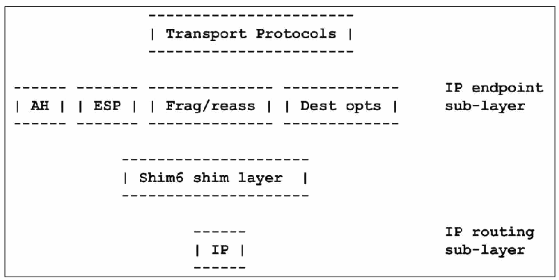
図4-1. SHIM6プロトコルスタック。文字で描いた層構成図である。最上段に「Transport Protocols」（トランスポートプロトコル）。次の段にAH、ESP、Frag/reass（断片化／再構成）、Dest opts（宛先オプション）が並び、右側に「IP endpoint sub-layer」（IPエンドポイント副層）と記されている。その下に「Shim6 shim layer」（Shim6シム層）。最下段にIPがあり、右側に「IP routing sub-layer」（IPルーティング副層）と記されている。
Figure 4-1. SHIM6 Protocol Stack
図4-1. SHIM6プロトコルスタック
4.1.3 Security Ramifications for Multihoming
4.1.3 マルチホーミングのセキュリティ上の影響
RFC 4218 presents an overview of security vulnerabilities inherent in multihoming. In summary, one must be concerned about denial of service, re-routing packets to unintended destinations or black holes, and multicast issues. It advises, in general, that connectionless transport protocols like UDP present more security problems than connection-oriented transport protocols. Also, if identifiers and locators are split, security should be tied to the identifiers to lessen the impact of attacks on the identifier-locator binding. Securing other parts of the infrastructure such as the DNS and routing protocols helps minimize the potential attacks on multihoming. Multihoming solutions also need to account for and work with ingress filtering so that spoofed addresses can not be used to attack systems. (RFC 2827 and RFC 3704).
RFC 4218では、マルチホーミングに内在するセキュリティ脆弱性の概要を示している。要約すると、サービス拒否、パケットを意図しない宛先またはブラックホールへ再ルーティングすること、マルチキャストに関する問題を考慮する必要がある。一般に、UDPなどのコネクションレス型トランスポートプロトコルは、コネクション型トランスポートプロトコルよりもセキュリティ上の問題が多いと指摘している。また、識別子とロケーターを分離する場合は、識別子とロケーターの対応付けに対する攻撃の影響を抑えるため、セキュリティを識別子に結び付けるべきである。DNSやルーティングプロトコルなど、基盤のほかの部分を保護することも、マルチホーミングへの攻撃の可能性を最小限に抑えるのに役立つ。マルチホーミングの解決策では、送信元アドレスの偽装による攻撃を防げるよう、イングレスフィルタリングも考慮し、連携する必要がある（RFC 2827およびRFC 3704）。
Networks need to ensure that they do not announce their prefixes in a way that generates asymmetric traffic flows. Traffic following asymmetrical paths might get blocked by strict Reverse Path Forwarding (RPF) checks or stateful packet filters. It may also make it impossible to implement IPsec at site border routers.
ネットワークは、非対称なトラフィックフローを生じさせる形でプレフィックスを広告しないようにする必要がある。非対称経路を通るトラフィックは、厳格なReverse Path Forwarding（RPF）チェックや状態追跡型パケットフィルターで遮断される場合がある。また、サイト境界ルーターでIPsecを実装できなくなる可能性もある。
The SHIM6 protocol contains several security measures:
SHIM6プロトコルには、次のような複数のセキュリティ対策が含まれる。
•Hash-based addresses (RFC 5535) allow one to prove address ownership and to prevent redirection attacks.
•ハッシュベースのアドレス（RFC 5535）により、アドレスの所有権を証明し、リダイレクト攻撃を防止できる。
•Reachability probes (RFC 5534) allow one to identify third party flooding attacks.
•到達可能性プローブ（RFC 5534）により、第三者によるフラッディング攻撃を特定できる。
•Two-way communications are required before the responder creates any state. This means that a state-based DOS attack (trying to use up all available memory on the responder) at least reveals an IPv6 address that the attacker was using.
•応答側が状態を作成する前に、双方向通信を必要とする。つまり、状態ベースのDoS攻撃（応答側の利用可能なメモリーを使い切ろうとする攻撃）が行われた場合、少なくとも攻撃者が使用したIPv6アドレスが明らかになる。
•Context establishment messages use nonces to prevent replay attacks and to prevent off-path attackers from interfering with the establishment.
•コンテキスト確立メッセージではノンスを使用し、リプレイ攻撃を防止するとともに、経路外の攻撃者が確立処理に介入することを防ぐ。
•After context establishment, every SHIM6 control message contains the context tag assigned to the particular context. This implies that an attacker needs to discover a valid context tag before being able to spoof any SHIM6 control message. This also helps protect the SHIM6 protocol from off-path attackers.
•コンテキスト確立後は、すべてのSHIM6制御メッセージに、該当するコンテキストに割り当てられたコンテキストタグが含まれる。したがって、攻撃者がSHIM6制御メッセージを偽装するには、有効なコンテキストタグを発見する必要がある。これは、経路外の攻撃者からSHIM6プロトコルを保護するのにも役立つ。
Packet filters may need to be aware of SHIM6 and modify their actions accordingly. First, along with upper layer protocol and port numbers, they may need to match on the upper layer identifiers as well as or instead of the IPv6 locator addresses. Second, they may need to understand when established sessions begin using shim headers or change locators.
パケットフィルターは、SHIM6を認識し、それに応じて動作を変更する必要がある場合がある。第1に、上位層プロトコルとポート番号に加え、上位層識別子についても、IPv6ロケーターアドレスと併せて、またはその代わりに、照合する必要がある場合がある。第2に、確立済みセッションがシムヘッダーを使い始める時点やロケーターを変更する時点を認識する必要がある場合がある。
4.2 IPv6 Multicast
4.2 IPv6マルチキャスト
Multicast refers to sending a packet to an IP address designated as a multicast address; one or more hosts specifically interested in the communication then receive a copy of that single packet. This differs from broadcast, which delivers packets to all hosts on a subnet, because multicast traffic is only sent to hosts subscribed to the multicast group. Multicasting is often used, for example, to stream audio and video more efficiently. Senders achieve two primary advantages by using multicast. First, the sender only needs to create and send one packet, instead of creating and sending a separate packet to each recipient. Second, the sender does not need to keep track of who the actual recipients are. Multicasting can also be advantageous from a network perspective, because it reduces network bandwidth consumption.
マルチキャストとは、マルチキャストアドレスとして指定されたIPアドレス宛てにパケットを送信し、その通信に特に関心のある1台以上のホストがそのパケットのコピーを受信することである。サブネット上のすべてのホストにパケットを届けるブロードキャストとは異なり、マルチキャストトラフィックはマルチキャストグループに参加したホストにのみ送信される。マルチキャストは、たとえば音声や動画をより効率的にストリーミングする用途でよく使われる。送信側にはマルチキャストを使う主な利点が2つある。第1に、受信者ごとに個別のパケットを作成して送信する代わりに、1つのパケットだけを作成して送信すればよい。第2に、実際の受信者が誰かを把握する必要がない。ネットワーク帯域幅の消費を抑えるため、ネットワークの観点からもマルチキャストは有利である。
This section describes how multicast works in an IPv6 environment. In IPv6, broadcast has been eliminated and multicast takes on a much larger role. In addition to replacing broadcast, it also works with ICMPv6 neighbor discovery and router discovery on the local link to perform stateless address autoconfiguration and address resolution.
この節では、IPv6環境でマルチキャストがどのように機能するかを説明する。IPv6ではブロードキャストが廃止され、マルチキャストの役割が大幅に拡大した。ブロードキャストを置き換えるだけでなく、ローカルリンク上でICMPv6の近隣探索およびルーター探索と連携し、ステートレスアドレス自動設定とアドレス解決を行う。
First, consider an example of how IPv6 multicast makes Neighbor Discovery in IPv6 more efficient than using ARP with IPv4. Running IPv4, when a host has an IP address on its own subnet and needs to know the corresponding link layer address, it broadcasts an ARP request containing the IPv4 address. Every host on the subnet gets a copy.
まず、IPv6のマルチキャストによって、IPv6の近隣探索がIPv4でARPを使う場合よりどのように効率化されるか、例を考える。IPv4の場合、ホストが自身のサブネット上にある相手のIPアドレスを把握しており、それに対応するリンク層アドレスを知る必要があるとき、ホストはそのIPv4アドレスを含むARP要求をブロードキャストする。サブネット上のすべてのホストがそのコピーを受け取る。
Suppose, running IPv6, an interface wants to find the link layer address for the link local IP address FE80::4DF2:54C8:B8C7:113A. It takes the low-order 24 bits of this address (C7:113A) and appends them to the well-known solicited node multicast prefix, FF02:0:0:0:0:1:FF00::/104 to form the solicited node multicast address FF02::1:FFC7:113A. Then it sends an ICMPv6 Neighbor Solicitation message to this multicast address. The message gets delivered to the interface at FE80::4DF2:54C8:B8C7:113A because it belongs to the multicast group FF02::1:FFC7:113A. Interfaces using any unicast or anycast address must join the solicited node multicast group corresponding to the above prefix and low-order 24 bits of their address. They use ICMPv6 Multicast Listener Discovery (MLD) to join a multicast group. The result is a more efficient address resolution procedure, in which a smaller number of hosts are queried to determine the address.
IPv6を使用するインターフェースが、リンクローカルIPアドレスFE80::4DF2:54C8:B8C7:113Aに対応するリンク層アドレスを探すとする。このアドレスの下位24ビット（C7:113A）を取り出し、既知の要請ノードマルチキャストプレフィックスFF02:0:0:0:0:1:FF00::/104に追加して、要請ノードマルチキャストアドレスFF02::1:FFC7:113Aを作る。次に、このマルチキャストアドレス宛てにICMPv6 Neighbor Solicitationメッセージを送信する。アドレスFE80::4DF2:54C8:B8C7:113Aを持つインターフェースはマルチキャストグループFF02::1:FFC7:113Aに参加しているため、このメッセージが届く。ユニキャストまたはエニーキャストアドレスを使うインターフェースはすべて、前述のプレフィックスと自身のアドレスの下位24ビットに対応する要請ノードマルチキャストグループに参加しなければならない。マルチキャストグループに参加するには、ICMPv6 Multicast Listener Discovery（MLD）を使う。結果として、アドレス解決手順の効率が高まり、アドレスを特定するために問い合わせるホストの数が減る。
The solicited node multicast addresses range from FF02::1:FF00:0 to FF02::1:FFFF:FFFF, so the Neighbor Solicitation traffic is partitioned into 224 solicited node multicast groups. This makes receiving a Neighbor Solicitation intended for a different address highly unlikely.
要請ノードマルチキャストアドレスはFF02::1:FF00:0からFF02::1:FFFF:FFFFまでの範囲にあり、Neighbor Solicitationトラフィックは224個の要請ノードマルチキャストグループに分割される。そのため、別のアドレスを対象とするNeighbor Solicitationを受信する可能性は非常に低い。
IPv6 multicast addresses are easy to recognize. They always begin with eight 1 bits: FF. The next eight bits, 02 in this case, specify that this is a well-known multicast address with link local scope. Other examples of well-known multicast addresses with link-local scope are:
IPv6のマルチキャストアドレスは容易に識別できる。常に8個の1ビット、すなわちFFで始まる。この例の次の8ビットである02は、リンクローカルスコープの既知のマルチキャストアドレスであることを示す。リンクローカルスコープの既知のマルチキャストアドレスのほかの例を以下に示す。
FF02::1 All Nodes FF02::2 All Routers FF02::1:2 All DHCP Agents
FF02::1 すべてのノード FF02::2 すべてのルーター FF02::1:2 すべてのDHCPエージェント
In addition to scoped multicast addresses, other features such as source-specific multicast have been added to IPv6. These different features and their applications are described below, and areas still needing work are noted (e.g., multicast with SHIM6 and IPsec).
スコープ付きマルチキャストアドレスに加え、送信元固有マルチキャストなどの機能もIPv6に追加された。これらの機能と用途を以下に説明し、引き続き検討が必要な領域（例：SHIM6およびIPsecと組み合わせたマルチキャスト）にも触れる。
4.2.1 IPv6 Multicast Specifications
4.2.1 IPv6マルチキャスト仕様
In addition to providing an essential part of the IPv6 infrastructure, multicast applications include groupware, multimedia distribution, searching, routing, database replication, grid computing, and real-time information delivery.
マルチキャストは、IPv6インフラストラクチャの本質的な部分であるだけでなく、グループウェア、マルチメディア配信、検索、ルーティング、データベースのレプリケーション、グリッドコンピューティング、リアルタイム情報配信などのアプリケーションにも使われる。
With IPv6, multicast addresses have scope ranging from a single interface or link to the global Internet. They can be permanently assigned and well-known, as in the examples above, or they can be used transiently for specific purposes.
IPv6では、マルチキャストアドレスのスコープは、単一のインターフェースまたはリンクから、グローバルなインターネットにまで及ぶ。マルチキャストアドレスは、上記の例のように恒久的に割り当てられて広く知られたものにすることも、特定の目的のために一時的に使用することもできる。
RFC 4291, IP Version 6 Addressing Architecture, defines a multicast address as: “An identifier for a set of interfaces (typically belonging to different nodes). A packet sent to a multicast address is delivered to all interfaces identified by that address.” Normally, these are the addresses that have previously joined a given multicast group. The Multicast Listener Discovery (MLD) Protocol is the method interfaces use to join and leave multicast groups, and routers keep track of these groups for each interface on which they forward packets. Version 2 (MLDv2) (RFC 3810) manages multicast group membership with two ICMPv6 message types:
RFC 4291『IP Version 6 Addressing Architecture』は、マルチキャストアドレスを「インターフェース（通常は異なるノードに属する）の集合の識別子。マルチキャストアドレスに送信されたパケットは、そのアドレスで識別されるすべてのインターフェースに配送される」と定義している。通常、これらはあらかじめ特定のマルチキャストグループに参加したアドレスである。マルチキャストリスナー探索（Multicast Listener Discovery、MLD）プロトコルは、インターフェースがマルチキャストグループに参加・脱退するための方法であり、ルーターは、パケットを転送する各インターフェースについて、これらのグループを管理する。バージョン2（MLDv2）（RFC 3810）は、次の2種類のICMPv6メッセージでマルチキャストグループのメンバーシップを管理する。
•Multicast Listener Query (Type = 130)
•マルチキャストリスナークエリ（Multicast Listener Query）（Type = 130）
•Version 2 Multicast Listener Report (Type = 143).
•バージョン2マルチキャストリスナーレポート（Version 2 Multicast Listener Report）（Type = 143）。
MLDv2 is backward compatible with MLDv1 (RFC 2710), so MLDv2 also supports:
MLDv2はMLDv1（RFC 2710）と後方互換性があるため、MLDv2は次もサポートする。
•Version 1 Multicast Listener Report (Type = 131)
•バージョン1マルチキャストリスナーレポート（Version 1 Multicast Listener Report）（Type = 131）
•Version 1 Multicast Listener Done (Type = 132).
•バージョン1マルチキャストリスナー完了（Version 1 Multicast Listener Done）（Type = 132）。
All of these messages are sent with a link-local IPv6 source address (or the unspecified source address if necessary), an IPv6 Hop Limit of 1, and an IPv6 Router Alert option (RFC 2711) in a Hop-by-Hop Options header. (The Router Alert option forces routers to examine MLD messages sent to IPv6 multicast addresses in which the routers themselves previously had no interest.)
これらのメッセージはいずれも、リンクローカルIPv6送信元アドレス（必要な場合は未指定の送信元アドレス）、IPv6ホップリミット1、およびホップバイホップオプションヘッダー内のIPv6ルーターアラートオプション（RFC 2711）を付けて送信される。（ルーターアラートオプションにより、ルーターは、それ自体はもともと関心のなかったIPv6マルチキャストアドレス宛てのMLDメッセージを強制的に調べることになる。）
How routers actually implement multicast depends on the Layer 2 networking technology. It is trivial on point-to-point links; it may be implemented by using promiscuous mode on link layers with a natural broadcast capability; or it may require Layer 2 protocol logic on non-broadcast multi-access link layers.
ルーターがマルチキャストを実際にどのように実装するかは、レイヤー2のネットワーク技術による。ポイントツーポイントリンクでは容易であり、本来ブロードキャスト機能を持つリンク層ではプロミスキャスモードを使って実装される場合がある。また、非ブロードキャストのマルチアクセスリンク層では、レイヤー2のプロトコルロジックが必要になる場合がある。
The biggest change introduced in MLDv2 is Source Specific Multicast. MLDv2 allows an interface to specify, for each multicast address, from which source addresses it does or does not want to receive packets.
MLDv2で導入された最大の変更点は、送信元指定マルチキャスト（Source Specific Multicast）である。MLDv2では、インターフェースが、マルチキャストアドレスごとに、どの送信元アドレスからパケットを受信したいか、または受信したくないかを指定できる。
RFC 4604 updates MLDv2 and describes source-specific multicast for IPv4 (IGMPv3) and IPv6 (MLDv2) in a single document.
RFC 4604はMLDv2を更新し、IPv4（IGMPv3）とIPv6（MLDv2）の送信元指定マルチキャストを、一つの文書にまとめて記述している。
As stated above, IPv6 multicast addresses are easy to recognize. They are exactly the addresses beginning with eight 1 bits or hexadecimal FF:
前述のとおり、IPv6マルチキャストアドレスは容易に見分けられる。先頭が8個の1ビット、すなわち16進数のFFで始まるアドレスが、まさにそれである。
| 8 | 4 | 4 | 112 bits +--------+----+----+--------------------------------/.../---------+ |11111111|flgs|scop| group ID | +--------+----+----+--------------------------------/.../---------+
| 8 | 4 | 4 | 112 bits +--------+----+----+--------------------------------/.../---------+ |11111111|flgs|scop| group ID | +--------+----+----+--------------------------------/.../---------+
The next eight bits in a multicast address specify the flags and scope. The final 112 bits in the multicast address are called the Group ID and are used to specify the set of nodes that are members of a multicast group. In a previous version, the Group ID was only 32 bits, and some implementations still stick to 32 bits.
マルチキャストアドレスの次の8ビットはフラグとスコープを指定する。アドレスの最後の112ビットはGroup IDと呼ばれ、マルチキャストグループに参加するノードの集合を指定するために使われる。以前のバージョンではGroup IDは32ビットのみであり、現在も32ビットのまま使う実装がある。
In the IPv6 specification, multicast addresses always have a scope that limits the set of receiving nodes. The scope is the group of nodes for which the packet is intended relative to its source. Its values are shown in Table 4-1.
IPv6仕様では、マルチキャストアドレスに必ずスコープがあり、受信ノードの集合を制限する。スコープは送信元に対する相対的な位置関係で、パケットの宛先となるノード群を示す。値を表4-1に示す。
Table 4-1. IPv6 Scoped Multicast Values (from RFC 4291)
表4-1. IPv6のスコープ付きマルチキャスト値（RFC 4291より）
| Value | Scope |
|---|---|
| 1 | Interface Local |
| 2 | Link Local |
| 4 | Admin. Local |
| 5 | Site Local |
| 8 | Organization Local |
| E | Global |
| 値 | スコープ |
|---|---|
| 1 | インターフェースローカル |
| 2 | リンクローカル |
| 4 | 管理ローカル |
| 5 | サイトローカル |
| 8 | 組織ローカル |
| E | グローバル |
Some well-known multicast Group IDs are defined for variable scopes. A good example is the “All NTP [Network Time Protocol] Servers” address:
いくつかの既知のマルチキャストGroup IDは、可変スコープ向けに定義されている。よい例は「すべてのNTP［Network Time Protocol］サーバー」アドレスである。
FF02::101 All NTP Servers Link Local FF04::101 All NTP Servers Admin Local FF05::101 All NTP Servers Site Local FF08::101 All NTP Servers Organization Local FF0E::101 All NTP Servers Global
FF02::101 すべてのNTPサーバー リンクローカル FF04::101 すべてのNTPサーバー 管理ローカル FF05::101 すべてのNTPサーバー サイトローカル FF08::101 すべてのNTPサーバー 組織ローカル FF0E::101 すべてのNTPサーバー グローバル
RFC 2375 contains a list of well-known IPv6 multicast addresses categorized by scope, and that list has been extended by newer specifications. The complete and current version is at http://www.iana.org/assignments/ipv6-multicast-addresses.
RFC 2375には、スコープ別に分類された既知のIPv6マルチキャストアドレスの一覧が記載されており、その一覧は後続の仕様で拡張されている。完全かつ最新の一覧はhttp://www.iana.org/assignments/ipv6-multicast-addressesにある。
The flags specify, first, whether a multicast address is a well-known, pre-defined address, or whether it is a transient address not permanently defined. Second, the flags specify whether a transient multicast address has an authorized and properly scoped unicast prefix embedded in it, and, if so, whether it also specifies a rendezvous point (RFC 3956). The unicast prefix eliminates the need for an additional protocol to allocate unique multicast addresses.
フラグは、まず、マルチキャストアドレスが既知の事前定義アドレスか、恒久的に定義されない一時アドレスかを示す。次に、一時マルチキャストアドレスに、認可され適切なスコープを持つユニキャストプレフィックスが埋め込まれているかを示す。埋め込まれている場合は、ランデブーポイント（RFC 3956）も指定するかどうかを示す。ユニキャストプレフィックスを使うことで、一意なマルチキャストアドレスを割り当てるための追加プロトコルが不要になる。
A rendezvous point for a multicast group is the root of a tree used with Protocol Independent Multicast— Sparse Mode (PIM-SM) (RFC 4601), a sophisticated multicast routing protocol. PIM-SM builds a tree of senders and group members. Then, traffic from senders is first routed upstream towards the rendezvous point and then downstream to group members (receivers).
マルチキャストグループのランデブーポイントは、Protocol Independent Multicast—Sparse Mode（PIM-SM、RFC 4601）という高度なマルチキャストルーティングプロトコルで使われるツリーのルートである。PIM-SMは送信元とグループメンバーのツリーを構築する。その後、送信元からのトラフィックは、まずランデブーポイントへ向かう上流方向にルーティングされ、次にグループメンバー（受信側）へ向かう下流方向に転送される。
For well-known multicast addresses, the four flag bits are always all zeros. The first flag bit is reserved and must be 0. The remaining three flag bits are called R, P, and T (for rendezvous, prefix, and transient) and are non-zero for transient multicast addresses:
ウェルノウンマルチキャストアドレスでは、四つのフラグビットは常にすべてゼロである。最初のフラグビットは予約済みで、0でなければならない。残りの三つのフラグビットはR、P、T（ランデブー、プレフィックス、一時的）と呼ばれ、一時的マルチキャストアドレスでは非ゼロとなる。
+-+-+-+-+ |0|R|P|T| +-+-+-+-+
+-+-+-+-+ |0|R|P|T| +-+-+-+-+
The flags are set as follows (see RFC 3306 and RFC 3956):
フラグは次のとおり設定される（RFC 3306およびRFC 3956を参照）。
0 0 0 0 — Well-known, pre-defined multicast address (as in all of the examples above)
0 0 0 0 — ウェルノウンの事前定義されたマルチキャストアドレス（上記の例はすべてこれに該当する）
0 0 0 1 — Transient multicast address without an embedded unicast prefix
0 0 0 1 — ユニキャストプレフィックスを埋め込まない一時的マルチキャストアドレス
0 0 1 1 — Transient multicast address with an embedded unicast prefix and no rendezvous point
0 0 1 1 — ユニキャストプレフィックスを埋め込み、ランデブーポイントを持たない一時的マルチキャストアドレス
0 1 1 1 — Transient multicast address with an embedded unicast prefix and rendezvous point
0 1 1 1 — ユニキャストプレフィックスとランデブーポイントを埋め込んだ一時的マルチキャストアドレス
This provides a simple way to allocate multicast addresses belonging to or allocated by a given network prefix in the following format, without adding any new multicast address allocation protocol:
これにより、新しいマルチキャストアドレス割り当てプロトコルを追加することなく、特定のネットワークプレフィックスに属するか、そのプレフィックスによって割り当てられるマルチキャストアドレスを、次の形式で簡単に割り当てられる。
| 8 | 4 | 4 | 8 | 8 | 64 | 32 | +--------+----+----+--------+--------+----------------+----------+ |11111111|flgs|scop|reserved| p-len | network prefix | group ID | +--------+----+----+--------+--------+----------------+----------+
| 8 | 4 | 4 | 8 | 8 | 64 | 32 | +--------+----+----+--------+--------+----------------+----------+ |11111111|flgs|scop|reserved| p-len | network prefix | group ID | +--------+----+----+--------+--------+----------------+----------+
The eight bits after the flags and scope must be zero. The next eight bits specify a prefix length, up to 64, followed by the prefix, left justified and zero filled.
フラグとスコープの後の8ビットはゼロでなければならない。次の8ビットはプレフィックス長を指定し、最大64まで設定する。その後に、左詰めで残りをゼロ埋めしたプレフィックスが続く。
This example comes from RFC 3306. The address FF38:0030:3FFE:FFFF:0001:0:1234:5678 is:
この例はRFC 3306から引用したものである。アドレスFF38:0030:3FFE:FFFF:0001:0:1234:5678は次のとおりである。
•Multicast (FF)
•マルチキャスト（FF）
•Transient with embedded prefix (3)
•埋め込みプレフィックス付きの一時（3）
•Organization Local scope (8)
•組織ローカルスコープ（8）
•Using a prefix of length 48 (30)
•プレフィックス長48（30）を使用
•Specifying the prefix as 3FFE:FFFF:0001::/48
•プレフィックスを3FFE:FFFF:0001::/48として指定
•Using a 32-bit Group ID of 1234:5678
•32ビットのGroup IDとして1234:5678を使用
Note that the scope of such multicast addresses must not be greater than the scope of their embedded prefixes.
このようなマルチキャストアドレスのスコープは、埋め込まれたプレフィックスのスコープを超えてはならない。
4.2.2 Differences between IPv4 and IPv6 Multicast
4.2.2 IPv4とIPv6のマルチキャストの違い
Although multicast addresses are common in both IPv4 and IPv6, several important differences exist:
IPv4とIPv6の両方でマルチキャストアドレスは一般的だが、重要な違いがいくつかある。
•Unlike IPv4, IPv6 does not have broadcast addresses. Instead, IPv6 uses optimizations like the Solicited Node multicast groups and the all routers multicast addresses, which make better use of network resources than broadcast.
•IPv4と異なり、IPv6にはブロードキャストアドレスがない。その代わり、要請ノードマルチキャストグループやすべてのルーター向けマルチキャストアドレスなどの最適化を使い、ブロードキャストより効率よくネットワークリソースを利用する。
•In IPv6, multicast is used with ICMPv6 for infrastructure applications like neighbor discovery and autoconfiguration on local links.
•IPv6では、ローカルリンク上の近隣探索や自動設定など、基盤機能でICMPv6とともにマルチキャストを使う。
•IPv6 multicast addresses have new capabilities such as scope and embedded unicast prefixes. In general, IPv6 extensions to multicast have been added to make multicast more useful over internets.
•IPv6マルチキャストアドレスには、スコープや埋め込みユニキャストプレフィックスなどの新機能がある。一般に、インターネット全体でマルチキャストをより有用にするため、マルチキャストにIPv6拡張が追加された。
•Multicasting is managed with ICMPv6 message types collectively called MLD instead of IGMP.
•マルチキャストは、IGMPではなく、MLDと総称されるICMPv6メッセージタイプによって管理される。
4.2.3 Multicast Security Ramifications
4.2.3 マルチキャストのセキュリティ上の影響
IPv6 routers, packet filters, firewalls, and tunnel endpoints need to enforce multicast scope boundaries. Firewalls should inspect all source IPv6 addresses and filter any packets with a multicast source address. Furthermore, firewalls in Layer 3 mode should never forward link-layer multicast packets.
IPv6ルーター、パケットフィルター、ファイアウォール、トンネル終端は、マルチキャストのスコープ境界を適用する必要がある。ファイアウォールはすべての送信元IPv6アドレスを検査し、マルチキャスト送信元アドレスを持つパケットをすべてフィルタリングするべきである。さらに、レイヤー3モードのファイアウォールは、リンク層マルチキャストパケットを決して転送するべきではない。
Attackers may take advantage of well-known multicast addresses to find hidden resources such as routers or particular servers. These addresses need to be blocked at the appropriate places according to local security policy.
攻撃者は既知のマルチキャストアドレスを利用して、ルーターや特定のサーバーなど、隠れたリソースを探す可能性がある。これらのアドレスは、ローカルセキュリティポリシーに従い、適切な場所で遮断する必要がある。
Denial of service attacks may use multicast to amplify bandwidth consumption or attempt to exhaust other resources. So-called reflector attacks may send packets with a source address of the target of attack and a multicast destination address, to try to get all multicast receivers to respond to the target. These attacks need to be intercepted and dropped.
サービス拒否攻撃では、帯域幅消費を増幅したり、その他のリソースを枯渇させたりするためにマルチキャストが使われる可能性がある。いわゆるリフレクター攻撃では、攻撃対象の送信元アドレスとマルチキャスト宛先アドレスを持つパケットを送信し、すべてのマルチキャスト受信者から攻撃対象に応答させようとする場合がある。これらの攻撃は遮断して破棄する必要がある。
IPsec coverage for multicast is incomplete. If a multicast group has more than one sender, the replay protection mechanism does not work. More importantly, IKE is a unicast UDP protocol that only works between two parties, so automated key management for multicast IPsec is lacking. For additional details about using IPsec with IPv6 multicast, see Section 5.3.3.
マルチキャストに対するIPsecの保護範囲は不完全である。マルチキャストグループに送信者が複数いる場合、リプレイ保護メカニズムは機能しない。さらに重要な点として、IKEは2者間でのみ機能するユニキャストUDPプロトコルであるため、マルチキャストIPsecの自動鍵管理が不足している。IPv6マルチキャストでIPsecを使う詳細は5.3.3節を参照。
Attacks on the MLD protocol include denial of service, causing unwanted traffic to be delivered, and downgrading capabilities from MLDv2 to MLDv1. By properly enforcing the unicast scope and hop count rules for MLD, these attacks can be confined to a local link.
MLDプロトコルに対する攻撃には、サービス拒否、望ましくないトラフィックの配送、MLDv2からMLDv1への機能ダウングレードが含まれる。MLDに対してユニキャストのスコープ規則とホップ数規則を適切に適用すれば、これらの攻撃をローカルリンク内に封じ込められる。
Forging Protocol Independent Multicast (PIM) messages can cause unwanted traffic to be sent to replace the role of designated routers (RFC 5294). IPsec can be used for cryptographic protection of these messages. Cryptographically protecting PIM messages (RFC 5796) also stops many denial-of-service attacks. Other precautions include limiting the set of neighbors from which Join, Prune, Assert, and Hello messages are accepted. Routers should check that a valid Hello message was received first and that source addresses are legal for the interfaces on which they are received. See also RFC 4609 for a list of suggestions for rate limiting PIM messages, in particular, the inter-domain multi-source discovery protocol (MSDP).
Protocol Independent Multicast（PIM）メッセージを偽造すると、指定ルーターの役割を代替するよう意図しないトラフィックが送信される可能性がある（RFC 5294）。これらのメッセージを暗号学的に保護するためにIPsecを使用できる。PIMメッセージを暗号学的に保護することで（RFC 5796）、多くのサービス拒否攻撃も阻止できる。ほかの予防策として、Join、Prune、Assert、Helloメッセージを受け入れる近隣ノードの範囲を制限することが挙げられる。ルーターは、有効なHelloメッセージを先に受信したことと、受信したインターフェースに対して送信元アドレスが適切であることを確認するべきである。PIMメッセージ、特にドメイン間マルチソース探索プロトコル（MSDP）のレート制限に関する提案の一覧はRFC 4609も参照。
Issues concerning how link-local ICMPv6 multicast traffic used for neighbor discovery and autoconfiguration can be secured are covered in Section 5.4.
近隣探索と自動設定に使われるリンクローカルICMPv6マルチキャストトラフィックの保護方法に関する課題は、5.4節で取り上げる。
4.2.4 Unresolved Aspects of IPv6 Multicast
4.2.4 IPv6マルチキャストの未解決事項
IPsec and IKE were not designed with multicast security in mind, and three important unresolved aspects of multicast security are related to IPsec and key management for IPsec.
IPsecとIKEはマルチキャストのセキュリティを念頭に設計されたものではなく、マルチキャストセキュリティに関する3つの重要な未解決事項は、IPsecおよびIPsecの鍵管理に関係している。
The fundamental IPsec security association architecture and protection protocols, ESP and AH, were designed mainly for unicast, and, although they work with multicast in principle, they are incompletely specified for multicast, and many open issues exist. (For example, what happens to a multicast security association when members join or leave the group?)
IPsecの基本となるセキュリティアソシエーションアーキテクチャと、ESPおよびAHの保護プロトコルは、主にユニキャスト向けに設計された。原理上はマルチキャストでも機能するが、マルチキャスト向けの仕様は不完全で、多くの未解決事項がある（例：メンバーがグループに参加または離脱したとき、マルチキャストセキュリティアソシエーションはどうなるか）。
Key management for IPsec, provided by IKE, is inherently a two-party protocol. Different protocols for group key management have been proposed, but an agreed-upon and widely implemented standard for IPsec multicast key management has not emerged. Protocol specifications like PIM suggest using IPsec with manual keying, but this solution that does not scale well over time or space and has other limitations. For example, the IPsec replay detection feature is not supposed to be used with manual keying,
IKEが提供するIPsecの鍵管理は、本質的に2者間プロトコルである。グループ鍵管理のために異なるプロトコルが提案されてきたが、IPsecマルチキャストの鍵管理について合意済みで広く実装された標準はまだない。PIMなどのプロトコル仕様では手動鍵設定でIPsecを使うことが提案されているが、この方法は時間や対象規模に応じて拡張しにくく、ほかにも制限がある。たとえば、IPsecのリプレイ検出機能は手動鍵設定では使用しないことになっており、
The security recommendations for PIM call for using IPsec AH, even for unicast messages. Where IPsec is used with IPv4, AH has generally fallen out of use in favor of ESP, with NULL encryption when authentication-only is desired. Thus the IPsec standard (RFC 4301) no longer requires AH, and many implementations omit it. See Section 5.3.6 for additional discussion of this topic.
PIMのセキュリティ推奨事項では、ユニキャストメッセージであってもIPsec AHを使うことを求めている。IPv4でIPsecを使う場合、認証のみを目的とするときはNULL暗号化を用いたESPがAHに取って代わり、AHは一般に使われなくなった。そのため、IPsec標準（RFC 4301）ではAHが必須ではなくなり、多くの実装がAHを省略している。この点に関する詳しい説明は5.3.6節を参照。
4.3 IPv6 Quality of Service (QoS)
4.3 IPv6 Quality of Service（QoS）
The TCP/IP Network Layer—IPv4 and IPv6—was intentionally designed without any of the features normally associated with QoS such as admission controls; resource guarantees; and in-order, lossless delivery. QoS on TCP/IP networks or the Internet is a somewhat imprecise concept, which may have different meanings varying from “anything except undifferentiated best effort” to specific service level contracts between a provider and user. It may mean:
TCP/IPのネットワーク層（IPv4およびIPv6）は、アドミッション制御、リソース保証、順序どおりで損失のない配送など、一般にQoSと関連付けられる機能を意図的に備えずに設計された。TCP/IPネットワークやインターネットにおけるQoSはやや曖昧な概念であり、「差別化のないベストエフォート以外のすべて」を意味する場合も、プロバイダーとユーザー間の具体的なサービスレベル契約を意味する場合もある。次のような意味で使われることがある。
•Providing a given user with certain levels of overall availability, throughput, low latency, maximum packet loss, or even security
•特定のユーザーに対して、全体的な可用性、スループット、低遅延、最大パケット損失率、さらにはセキュリティについて一定の水準を提供する。
•Treating different types of traffic differently, according to content: real-time audio or video requires high throughput and consistently low latency but can tolerate small losses, whereas file transfer can tolerate delay but no losses whatsoever.
•内容に応じて異なる種類のトラフィックを異なる方法で扱う。リアルタイム音声や動画には高スループットと一貫した低遅延が必要だが、少量の損失は許容できる。一方、ファイル転送では遅延を許容できるが、損失は一切許容できない。
Many aspects of engineering QoS depend on technologies running at multiple layers, such as MPLS (MultiProtocol Label Switching) and ATM (Asynchronous Transfer Mode). IETF work on QoS for TCP/IP began with Integrated Services (intserv), which was designed to provide QoS guarantees. Intserv has been replaced with Differentiated Services (diffserv), which simply recognizes that different types of traffic have different QoS requirements and need to be marked accordingly. The signaling protocol (i.e., the protocol used for QoS setup and specification) to establish QoS requests is RSVP—Resource Reservation Protocol. IPv6 end-to-end addressing allows services that are difficult to deploy with NAT as well as end-to-end use of diffserv and RSVP. Many of these services may have real-time and multimedia content, so QoS is likely to become a more important topic with the widespread use of IPv6.
QoSエンジニアリングの多くは、MPLS（MultiProtocol Label Switching）やATM（Asynchronous Transfer Mode）など、複数の層で動作する技術に依存する。TCP/IPのQoSに関するIETFの取り組みは、QoS保証を提供するために設計されたIntegrated Services（intserv）から始まった。intservは、異なる種類のトラフィックには異なるQoS要件があり、それに応じてマーキングする必要があることを認識するDifferentiated Services（diffserv）に置き換えられた。QoS要求の確立に使うシグナリングプロトコル（つまりQoSの設定と仕様化に使うプロトコル）はRSVP（Resource Reservation Protocol）である。IPv6のエンドツーエンドアドレス指定により、NATでは導入が難しいサービスと、diffservおよびRSVPのエンドツーエンド利用が可能になる。これらのサービスの多くはリアルタイムやマルチメディアコンテンツを扱うため、IPv6が広く使われるにつれてQoSはより重要なテーマになる可能性が高い。
The notion of improved QoS has always been linked with IPv6. In fact, IPv6 was designed to support certain QoS improvements, but not all of these have been completely specified or implemented.
QoSの改善という考え方は、常にIPv6と結び付けられてきた。実際、IPv6は特定のQoS改善をサポートするよう設計されたが、そのすべてが完全に仕様化または実装されたわけではない。
4.3.1 IPv6 QoS Specifications
4.3.1 IPv6 QoS仕様
Several aspects of IPv6 implicitly or explicitly support QoS. These include:
IPv6のいくつかの側面は、暗黙的または明示的にQoSをサポートする。次のものが含まれる。
•A streamlined header with fewer fields, no checksum processing, sufficient address space to make address translation unnecessary, and a simple test for whether routers need to examine anything past the fixed length header promote efficient packet forwarding.
•フィールド数が少ない簡素なヘッダー、チェックサム処理が不要なこと、アドレス変換を不要にする十分なアドレス空間、ルーターが固定長ヘッダーより先を調べる必要があるかを簡単に判定できる仕組みにより、効率的なパケット転送が促進される。
•Requiring a larger minimum MTU and PMTU discovery also increase efficiency.
•最小MTUの拡大とPMTU探索も効率を高める。
•Eliminating in-route fragmentation removes one of the greatest sources of performance degradation in IPv4.
•経路内フラグメンテーションをなくすことで、IPv4における性能低下の主な原因の1つが取り除かれる。
•Eliminating broadcast and building in better support for multicast and anycast make better use of network resources.
•ブロードキャストを廃止し、マルチキャストとエニーキャストのサポートを改善することで、ネットワークリソースをより有効に利用できる。
•A new Flow Label field and larger Traffic Class field in the main IPv6 header allow more efficient and finer grained differentiation of various types of traffic.
•IPv6のメインヘッダーに新たに設けられたFlow Labelフィールドと、より大きなTraffic Classフィールドによって、さまざまな種類のトラフィックを効率的かつきめ細かく差別化できる。
The IPv6 Traffic Class field replaces the IPv4 Type of Service field. The original intent of the IPv4 Type of Service field has been replaced by diffserv (RFC 2474), which provides a use for the field. Although the RFCs are vague on this point, this is the way the IPv6 Traffic Class is usually used, and the functionality in IPv6 is equivalent to that in IPv4. Because of the way diffserv works, this field may be rewritten in transit. For example, RFC 2474 describes how packet marking is performed by traffic conditioners at network boundaries, including the edges of the network (first-hop router or source host) and administrative boundaries, and RFC 3168 sets aside two bits in this field called Explicit Congestion Notification for routers to indicate network congestion to end hosts.
IPv6のTraffic ClassフィールドはIPv4のType of Serviceフィールドを置き換える。IPv4のType of Serviceフィールド本来の目的はdiffserv（RFC 2474）に置き換えられ、同フィールドの用途が定められた。RFCではこの点が曖昧だが、通常はこのようにIPv6のTraffic Classが使われ、IPv6での機能はIPv4と同等である。diffservの仕組み上、このフィールドは転送中に書き換えられることがある。たとえば、RFC 2474は、ネットワーク境界にあるトラフィック調整装置（ネットワークの端［最初のホップのルーターまたは送信元ホスト］や管理境界を含む）によるパケットマーキングの方法を説明している。またRFC 3168は、このフィールド内の2ビットをExplicit Congestion Notificationとして確保し、ルーターがネットワーク輻輳をエンドホストに通知できるようにしている。
When IPv6 QoS is mentioned, most frequently the last of these aspects, especially the Flow Label, is cited. Rudimentary use of the Flow Label is defined in RFC 1809 and RFC 3697. A Flow label value is always associated with a source and destination address pair with the same Hop-by-Hop options and Routing Header. (A zero value means that the field is not being used.) This has the advantage of specifying flows completely in the main header. It is not necessary to examine extension headers, upper layer protocols, and port numbers to identify the packet. RFC 3697 recommends that each new transport connection and application data stream be given a new value, and it requires that applications be able to specify this value. It stipulates that Flow Labels be delivered intact, and it gives rules for timeouts and reuse. Finally, it prohibits using specific bits or mathematical interpretations of the value—it is just a 20-bit label.
IPv6 QoSに触れる際には、これらの側面のうち、特に最後のFlow Labelが最も頻繁に取り上げられる。Flow Labelの基本的な使い方はRFC 1809およびRFC 3697で定義されている。Flow Label値は常に、同じHop-by-Hop OptionsとRouting Headerを持つ送信元・宛先アドレスの組に関連付けられる。（値0はこのフィールドが使われていないことを示す。）この方式では、フローをメインヘッダーだけで完全に指定できる。パケットを識別するために拡張ヘッダー、上位層プロトコル、ポート番号を調べる必要がない。RFC 3697は、新しいトランスポート接続およびアプリケーションデータストリームごとに新しい値を割り当てることを推奨し、アプリケーションがこの値を指定できることを要求している。また、Flow Labelを変更せずに配送するよう定め、タイムアウトと再利用の規則も示している。最後に、特定のビットや数値の数学的解釈を使うことを禁じている。これは単なる20ビットラベルである。
Many IPv6 implementations do choose different Flow Label values for each TCP connection, for example, but few if any make additional use of the field. Thus, realizing the potential for providing better QoS offered by the IPv6 Flow Label lies in finding improved ways to use this feature in the future.
多くのIPv6実装は、たとえばTCP接続ごとに異なるFlow Label値を選択するが、このフィールドをさらに活用する実装はほとんどないか、まったくない。したがって、IPv6 Flow Labelが持つQoS改善の可能性を実現するには、今後この機能のより良い使い方を見つける必要がある。
4.3.2 Differences between IPv4 and IPv6 QoS
4.3.2 IPv4とIPv6のQoSの違い
The specific differences in QoS capabilities between IPv4 and IPv6 are covered point-by-point in the preceding section. The overall design of IPv6 is better thought out with respect to QoS; several specific improvements in IPv6 allow for more efficient network usage, and room has been left for additional QoS capabilities when these are defined.
IPv4とIPv6のQoS機能の具体的な違いは、前節で項目ごとに説明した。全体として、IPv6の設計はQoSの点でよりよく検討されている。IPv6にはネットワークをより効率的に利用する具体的な改善がいくつかあり、今後QoS機能が定義された場合に追加できる余地も残されている。
4.3.3 Security Ramifications
4.3.3 セキュリティ上の影響
One aspect is securing the QoS mechanisms themselves, to prevent theft of service, traffic analysis, or other attacks. For example, the Type of Service and Flow Label in the IPv6 header are not protected, even by AH. This is because the Type of Service can be altered while a packet is in transit. Although RFC 3697 specifies a nonalterable Flow Label field, when AH was originally designed, the Flow Label was also thought to be capable of alteration; the updated version of AH maintained that view for backwards compatibility. An application able to forge these fields may be able obtain preferred service fraudulently. If this is a major concern, IPsec can be run in tunnel mode, the QoS parameters can be copied from the inner header to the outer header, and the protected inner header can be compared with the outer header upon delivery.
QoSメカニズム自体を保護し、サービスの不正利用、トラフィック分析、その他の攻撃を防ぐことが1つの側面である。たとえば、IPv6ヘッダーのType of ServiceとFlow Labelは、AHを使っても保護されない。これは、パケットの転送中にType of Serviceが変更され得るためである。RFC 3697は変更不可のFlow Labelフィールドを規定しているが、AHを当初設計した時点ではFlow Labelも変更され得ると考えられており、更新されたAHでも後方互換性のためにその見解が維持された。これらのフィールドを偽造できるアプリケーションは、優先サービスを不正に取得できる可能性がある。これが重大な懸念であれば、IPsecをトンネルモードで実行し、内側のヘッダーから外側のヘッダーにQoSパラメーターをコピーし、配送時に保護された内側ヘッダーと外側ヘッダーを比較できる。
Because the QoS fields in the outer header are not protected, firewalls cannot blindly trust the Type of Service and Flow Label alone for access control decisions. Also, traffic analysis may become simpler, because someone monitoring traffic flows can take advantage of the same efficiencies as legitimate routers forwarding traffic.
外側ヘッダーのQoSフィールドは保護されないため、ファイアウォールはアクセス制御の判断でType of ServiceとFlow Labelだけを無条件に信頼できない。また、トラフィックフローを監視する者が、正規のルーターによるトラフィック転送と同じ効率性を利用できるため、トラフィック分析が容易になる可能性がある。
A different aspect is making sure that security does not impede the required QoS. QoS may need to be applied to packets secured with IPsec, in which case information about the upper layer protocols may not be accessible, but in this case, the methods in RFC 2207 can be used to differentiate IPsec-protected traffic. When planning to provide QoS, one must take into account that cryptographic protection, packet filtering, and examination by intrusion prevention systems all add some delay.
別の側面は、セキュリティが、要求されるQoSを妨げないようにすることである。IPsecで保護されたパケットにQoSを適用する必要が生じる場合があり、そのとき上位層プロトコルに関する情報にアクセスできない可能性があるが、その場合はRFC 2207の方式を使って、IPsecで保護されたトラフィックを区別できる。QoSの提供を計画する際は、暗号保護、パケットフィルタリング、侵入防止システムによる検査がいずれもいくらかの遅延を加えることを考慮しなければならない。
A third consideration is that securing QoS signaling protocols such as RSVP presents some difficulties, because these protocols often do not run strictly end to end but presume that intermediate points examine (or, worse, modify) the contents. For an overview of RSVP security, see RFC 4230.
3つ目の考慮事項は、RSVPなどのQoSシグナリングプロトコルの保護に難しさがあることである。これらのプロトコルは必ずしも厳密なエンドツーエンドで動作せず、中間地点が内容を調査（さらに悪い場合は変更）することを前提としているためである。RSVPのセキュリティの概要はRFC 4230を参照。
Since the flow label field is currently for the most part unused, it could be used as a covert channel. Therefore, unless it is in use, its contents should always be zero.
現在、Flow Labelフィールドはほとんど使われていないため、隠れチャネルとして利用される可能性がある。したがって、使用していない場合、その内容は常にゼロにするべきである。
4.3.4 Unresolved Aspects of IPv6 QoS
4.3.4 IPv6 QoSの未解決事項
General aspects of using Flow Labels have been specified, but details needed to take advantage of them are still missing. Because of the ways QoS depends on lower-layer protocols, it is unclear where and how progress on this front will be made.
Flow Labelの使用に関する一般的な側面は仕様化されているが、それらを活用するために必要な詳細はまだ欠けている。QoSが下位層プロトコルにさまざまな形で依存しているため、この方面でどこでどのように進展するかは明らかでない。
4.4 Mobile IPv6 (MIPv6)
4.4 Mobile IPv6（MIPv6）
IP-layer mobility has long been considered a useful and important feature, but today, with the exploding growth of laptop computers, PDAs, and mobile phones connecting to the Internet from more than one location, and, tomorrow, with the Internet in every motor vehicle and yet unimagined portable devices, it is becoming an essential ingredient in advanced services.
IP層モビリティは長い間、有用かつ重要な機能と見なされてきた。だが今日では、ラップトップコンピューター、PDA、携帯電話が複数の場所からインターネットに接続する数が爆発的に増えており、さらに将来は、あらゆる自動車や、まだ想像もされていない携帯型デバイスにインターネットが搭載されることを踏まえると、高度なサービスに不可欠な要素になりつつある。
The work on Mobile IPv4 (MIPv4) envisioned many of the features and functions of Mobile IPv6 (MIPv6), but MIPv4 has never been practical on a large scale. The capabilities built into IPv6 make widespread use of MIPv6 practical: plentiful end-to-end addresses, security, optimized routing, increased reliability, and more. Thus, it is expected that use of mobility will increase with IPv6.
Mobile IPv4（MIPv4）の取り組みでは、Mobile IPv6（MIPv6）の機能や特性の多くが想定されていたが、MIPv4が大規模に実用化されることはなかった。IPv6に組み込まれた機能、すなわち十分なエンドツーエンドアドレス、セキュリティ、最適化されたルーティング、信頼性の向上などにより、MIPv6の広範な利用が現実的になった。そのため、IPv6とともにモビリティの利用が増えると予想される。
The central issue with IP mobility is the same as with multihoming: disconnecting from one network and reconnecting to another is easy; changing IP addresses while keeping one’s TCP connections, IPsec security associations, and streaming protocols running takes more work. Not surprisingly, MIPv4 and MIPv6 have common elements, but mobility is inherently a difficult problem, and MIPv6 involves quite a bit of sophisticated protocol design.
IPモビリティの中心的な課題は、マルチホーミングの場合と同じである。あるネットワークから切断して別のネットワークに再接続することは容易だが、TCP接続、IPsecセキュリティアソシエーション、ストリーミングプロトコルを維持したままIPアドレスを変更するには、さらに作業が必要となる。当然ながらMIPv4とMIPv6には共通要素がある。しかしモビリティは本質的に難しい問題であり、MIPv6にはかなり高度なプロトコル設計が含まれる。
4.4.1 MIPv6 Specification Overview
4.4.1 MIPv6仕様の概要
MIPv6 allows an IPv6 interface to disconnect and reconnect physically in an internet topology while logically retaining its “home” IPv6 address, so MIPv6 nodes can change their point of attachment to the network while maintaining seamless connectivity. The primary document describing MIPv6 is RFC
MIPv6では、IPv6インターフェースがインターネットトポロジー内で物理的に切断・再接続しても、論理的には「ホーム」IPv6アドレスを維持できる。そのためMIPv6ノードは、シームレスな接続性を保ちながらネットワークへの接続地点を変更できる。MIPv6を説明する主要文書はRFC
3775, Mobility Support in IPv6,33 but many other published RFCs and work still in progress support MIPv6.
3775「Mobility Support in IPv6」33であるが、MIPv6を支援するほかの公開済みRFCや策定中の文書も多数ある。
As one might expect, MIPv6 has its own terminology, a certain amount of which is essential for understanding how it works. The most important terms are:
予想どおり、MIPv6には独自の用語があり、そのうちのいくつかは動作を理解するうえで不可欠である。最も重要な用語を以下に示す。
•Mobile Node (MN). A node using MIPv6 to change its point of network attachment
•Mobile Node（MN、モバイルノード）。MIPv6を使用してネットワークへの接続地点を変更するノード。
•Home Address (HoA). The permanent, routable unicast address of the MN
•Home Address（HoA、ホームアドレス）。MNの恒久的なルーティング可能ユニキャストアドレス。
•Home Link. The link on which the MN’s HoA is defined
•Home Link（ホームリンク）。MNのHoAが定義されているリンク。
•Foreign Link. Any link except the home link
•Foreign Link（外部リンク）。ホームリンク以外のすべてのリンク。
•Care-Of Address (CoA). A routable unicast address used by the MN on a foreign link
•Care-of Address（CoA、気付けアドレス）。MNが外部リンクで使用する、ルーティング可能なユニキャストアドレス。
•Correspondent Node (CN). A peer with which the MN is communicating
•Correspondent Node（CN、通信相手ノード）。MNが通信する相手のノード。
•Home Agent (HA). A router on the MN’s Home Link with which the MN registers its CoA and which forwards traffic to and from the MN at its CoA
•Home Agent（HA、ホームエージェント）。MNのHome Link上にあるルーターで、MNがCoAを登録し、MNのCoA宛ておよびCoAからのトラフィックを転送する。
•Binding. The association of a HoA and CoA for a given amount of time
•Binding（バインディング）。一定期間にわたるHoAとCoAの対応付け。
•Binding Cache (on HA or CN). A table of other nodes’ bindings and their lifetimes
•Binding Cache（HAまたはCN上）。ほかのノードのバインディングとその有効期間を格納するテーブル。
•Binding Update List (on MN). A MN’s table of HA and CN bindings
•Binding Update List（MN上）。HAおよびCNとのバインディングを格納するMNのテーブル。
•Route optimization. Direct communications between a MN and CN without involving a HA
•Route optimization（経路最適化）。HAを介さずにMNとCNの間で直接通信すること。
As with SHIM6, MIPv6 solves the problems created by using IP addresses for both identity and location. A MN’s identity is its HoA, and its location is its CoA. The goal is to establish and use bindings between these securely and efficiently, and the first step is for a MN to set up IPsec-secured communications with a HA. This may be done before leaving the home link. Figure 4-2 shows the main components of MIPv6.
SHIM6と同様に、MIPv6はIPアドレスを識別と位置の両方に使うことで生じる問題を解決する。MNの識別子はHoAであり、位置はCoAである。目標は、これらの間のバインディングを安全かつ効率的に確立して利用することである。最初の手順として、MNはHAとの通信をIPsecで保護して確立する。これはホームリンクを離れる前に行う場合もある。図4-2にMIPv6の主な構成要素を示す。

図4-2. MIPv6の主な構成要素。3つのノードがある。左上に「ホームリンク上のホームエージェント（HA）」と記したルーター、右上に「通信相手ホスト（CN）」と記したサーバー、左下に「外部リンク上のモバイルホスト（MN）」と記したノートPCである。ホームエージェントと通信相手ホストを1本の線が結ぶ。モバイルホストとホームエージェントを、IPsecと記した管に包まれた縦の線が結ぶ。モバイルホストから通信相手ホストへ直接、「最適化された経路」（Optimized Route）と記した斜めの線が結ぶ。
Figure 4-2. The Main MIPv6 Components
図4-2. MIPv6の主な構成要素
To make this work, several functions must be provided, and these require underlying protocol elements. The four new protocol elements added for MIPv6 are:
この仕組みを動作させるにはいくつかの機能が必要であり、それらを支えるプロトコル要素も必要である。MIPv6で追加された新しいプロトコル要素は次の4つである。
•A new IPv6 Extension Header, the Mobility Header (MH), with eight different message types. The first four are used to set up bindings and the last four to run a security protocol called return routability, which is described in Section 4.4.3.3, below:
•8種類のメッセージタイプを持つ新しいIPv6拡張ヘッダー、Mobility Header（MH）。最初の4種類はバインディングの設定に使い、最後の4種類は、以下の4.4.3.3節で説明するreturn routabilityというセキュリティプロトコルの実行に使う。
•Binding Update
•Binding Update（バインディング更新）
•Binding Acknowledgement
•Binding Acknowledgement（バインディング確認応答）
•Binding Refresh Request
•Binding Refresh Request（バインディング更新要求）
•Binding Error
•Binding Error（バインディングエラー）
•Home Test Init
•Home Test Init（ホームテスト開始）
•Home Test
•Home Test（ホームテスト）
•Care-of Test Init
•Care-of Test Init（気付けアドレステスト開始）
•Care-of Test
•Care-of Test（気付けアドレステスト）
•Four new ICMPv6 message types:
•4種類の新しいICMPv6メッセージタイプ：
•Home Agent Address Discovery Request
•Home Agent Address Discovery Request（ホームエージェントアドレス探索要求）
•Home Agent Address Discovery Reply
•Home Agent Address Discovery Reply（ホームエージェントアドレス探索応答）
•Mobile Prefix Solicitation
•Mobile Prefix Solicitation（モバイルプレフィックス要請）
•Mobile Prefix Advertisement
•Mobile Prefix Advertisement（モバイルプレフィックス広告）
•Two new types of Destination Options Extension Header called the Home Address Option and Alternate Care-of-Address Option
•Home Address OptionとAlternate Care-of-Address Optionと呼ばれる2種類の新しいDestination Options拡張ヘッダー。
•A new Routing Header, Type 2.
•Type 2の新しいRouting Header。
To get an idea of how these are used, consider the following examples:
これらの使い方を理解するため、次の例を考える。
A. A MN announces a new CoA:
A. MNが新しいCoAを通知する：
•A Binding Update (BU) and Binding Update Acknowledgement (BUA) are exchanged between the MN and its HA and between the MN and each of its CNs.
•Binding Update（BU）とBinding Update Acknowledgement（BUA）を、MNとHAの間、およびMNと各CNの間で交換する。
•The BU uses a Binding Update (Type 5) IPv6 Mobility Header and the Home Address Option. The BUA uses a Binding Update Acknowledgment (Type 6) IPv6 Mobility Header and a Type 2 Routing Header.
•BUではBinding Update（タイプ5）のIPv6 Mobility HeaderとHome Address Optionを使用する。BUAではBinding Update Acknowledgment（タイプ6）のIPv6 Mobility HeaderとType 2 Routing Headerを使用する。
B. A MN finds a HA:
B. MNがHAを見つける：
•The MN initiates the Dynamic Home Agent Address Discovery (DHAAD) protocol.
•MNがDynamic Home Agent Address Discovery（DHAAD）プロトコルを開始する。
•To do this, the MN sends an ICMPv6 Home Agent Address Discovery Request to the Mobile IPv6 Home-Agent’s anycast address (with which the MN was previously configured) for its home subnet prefix. A HA returns an ICMPv6 Home Agent Address Discovery Reply.
•そのため、MNはホームサブネットプレフィックスに対応するMobile IPv6 Home Agentのエニーキャストアドレス（MNに事前設定済み）宛てに、ICMPv6 Home Agent Address Discovery Requestを送信する。HAはICMPv6 Home Agent Address Discovery Replyを返す。
C. A MN learns about home link renumbering:
C. MNがホームリンクのアドレス再割り当てを認識する：
•A MN receives an unsolicited ICMPv6 Mobile Prefix Advertisement (MPA) indicating that renumbering is occurring.
•MNは、番号付け変更が発生していることを示す、要求していないICMPv6 Mobile Prefix Advertisement（MPA）を受信する。
D. A MN uses route-optimized communications between it and a CN:
D. MNがCNとの間で経路最適化通信を行う場合：
•The MN sends normal traffic with a Home Address Option.
•MNはHome Address Optionを付けて通常のトラフィックを送信する。
•The CN sends normal traffic with an IPv6 Type 2 Routing Header.
•CNはIPv6 Type 2 Routing Headerを付けて通常のトラフィックを送信する。
E. A MN receives a Binding Refresh request from a CN:
E. MNがCNからBinding Refresh要求を受信する場合：
•The CN sends a Binding Refresh Request (Type 0) Mobility Header to the MN’s HoA.
•CNはBinding Refresh Request（Type 0）Mobility HeaderをMNのHoA宛てに送信する。
•The MN checks that the CN is in its Binding Update List and starts Return Routability and a new BU.
•MNは、CNがBinding Update Listに含まれていることを確認し、Return Routabilityと新しいBUを開始する。
F. A CN sends a Binding Error to a MN:
F. CNがMNにBinding Errorを送信する場合：
•A CN receives an unrecognized HoA and sends the MN a Binding Error with a Binding Error (Type 7) MH, error status 1 for “unknown binding,” and the HoA it received in error.
•CNは認識できないHoAを受信すると、Binding Error（Type 7）MH、エラーステータス1（「unknown binding」）、および誤って受信したHoAを含むBinding ErrorをMNに送信する。
•The MN checks that the CN is in its Binding Update List; if it has indication that communications with the CN are working, it ignores the message; otherwise it deletes the binding and sends subsequent communications with the CN through the HA or alternatively starts Return Routability and a new BU.
•MNはCNがBinding Update Listに含まれていることを確認する。CNとの通信が機能していることを示す情報があればメッセージを無視し、そうでなければバインディングを削除する。その後、CNとの通信をHA経由で送信するか、Return Routabilityと新しいBUを開始する。
G. A MN includes an Alternate CoA in a BU:
G. MNがBUにAlternate CoAを含める場合：
•The BU contains a Home Test (Type 3) MH option to indicate a CoA different from the source address (because of network topology or security, for example).
•BUには、（たとえばネットワークトポロジーまたはセキュリティ上の理由により）送信元アドレスとは異なるCoAを示すHome Test（Type 3）MHオプションが含まれる。
•The CN uses the Alternate CoA instead of the original CoA.
•CNは元のCoAの代わりにAlternate CoAを使用する。
4.4.2 Differences from IPv4 Standards
4.4.2 IPv4標準との相違点
MIPv4 is standardized in RFC 3344. MIPv4 and MIPv6 share much of the same motivation and have somewhat similar designs, but MIPv6 provides enhanced security, streamlined administrative protocols, and greater efficiency. This is not an accident: the reason MIPv6 has so many advantages over MIPv4 is that is uses the new features and capabilities found in IPv6 but not in IPv4. IPv6 has autoconfiguration, globally unique addressing (without NAT), flexible extension headers, and mandatory IPsec. The much larger IPv6 address space makes MIPv6 easier to deploy. Some of the biggest differences are:
MIPv4はRFC 3344で標準化されている。MIPv4とMIPv6は動機の多くを共有し、設計にも類似点があるが、MIPv6はセキュリティの強化、管理プロトコルの簡素化、および効率の向上を実現している。これは偶然ではない。MIPv6がMIPv4より多くの利点を持つのは、IPv4にはないIPv6の新機能と能力を利用しているためである。IPv6は自動設定、（NATを介さない）グローバル一意アドレス、柔軟な拡張ヘッダー、および必須のIPsecを備える。IPv6のアドレス空間ははるかに広いため、MIPv6を導入しやすい。主な相違点を以下に示す。
•Route optimization is standard with MIPv6, and it uses a new approach to security called return routability.
•MIPv6では経路最適化が標準機能であり、「return routability」と呼ばれる新しいセキュリティ方式を使用する。
•MIPv6 does not use the MIPv4 last-hop foreign agent. The tunnel endpoint is built directly into the MN, which also allows end-to-end security.
•MIPv6はMIPv4の最終ホップにあるフォーリンエージェントを使用しない。トンネル終端はMNに直接組み込まれており、エンドツーエンドのセキュリティも可能になる。
•MIPv6 does not have any new, special-purpose authentication, authorization and accounting (AAA) support. MIPv6 uses standard link layer and IP network access methods for AAA along with IPsec. Using standard, already understood methods is always preferable.
•MIPv6には、新しい専用の認証、認可、アカウンティング（AAA）サポートはない。MIPv6はIPsecとともに、AAA向けの標準的なリンク層およびIPネットワークアクセス方式を使用する。すでに理解されている標準方式を使うことが常に望ましい。
•MIPv6 uses two-way tunneling, which works better with ingress filtering.
•MIPv6は双方向トンネリングを使用するため、イングレスフィルタリングとの相性がよい。
•MIPv6 has many security improvements.
•MIPv6には多くのセキュリティ上の改善がある。
MIPv4 and MIPv6 use different protocols. MIPv4 uses ICMP(v4) Router Discovery, Port 434 (UDP or TCP), and “home-grown” security, whereas Mobile IPv6 uses ICMPv6, IPv6 Routing and Mobility Extension Headers, Destination Options, and IPsec.
MIPv4とMIPv6では異なるプロトコルを使用する。MIPv4はICMP(v4) Router Discovery、ポート434（UDPまたはTCP）、および「自前の」セキュリティを使用する。一方、Mobile IPv6はICMPv6、IPv6のRoutingおよびMobility拡張ヘッダー、Destination Options、およびIPsecを使用する。
4.4.3 Security Ramifications
4.4.3 セキュリティ上の影響
For MIPv6, security has always been a primary design concern. A thorough approach to security requires looking at all of the potential vulnerabilities and choosing appropriate measures to deal with them. The designers of MIPv6 actually used a security threat analysis as the basis for the design. MIPv6 security starts with the base specification, Using IPsec to Protect Mobile IPv6 Signaling between Mobile Nodes and Home Agents (RFC 3776), and extends into several other RFCs, primarily:
MIPv6では、セキュリティは当初から主要な設計上の関心事項であった。セキュリティに包括的に取り組むには、潜在的な脆弱性をすべて検討し、それらに対処する適切な対策を選ぶ必要がある。MIPv6の設計者は、セキュリティ脅威分析を設計の基礎として実際に用いた。MIPv6のセキュリティは、基本仕様「Using IPsec to Protect Mobile IPv6 Signaling between Mobile Nodes and Home Agents」（RFC 3776）から始まり、主に次の複数のRFCに拡張されている。
•RFC 4225, Mobile IP version 6 Route Optimization Security Design Background
•RFC 4225「Mobile IP version 6 Route Optimization Security Design Background」
•RFC 4285, Authentication Protocol for Mobile IPv6
•RFC 4285「Authentication Protocol for Mobile IPv6」
•RFC 4487, Mobile IPv6 and Firewalls: Problem Statement
•RFC 4487「Mobile IPv6 and Firewalls: Problem Statement」
•RFC 4449, Securing Mobile IPv6 Route Optimization Using a Static Shared Key
•RFC 4449「Securing Mobile IPv6 Route Optimization Using a Static Shared Key」
•RFC 4877, Mobile IPv6 Operation with IKEv2 and the revised IPsec Architecture
•RFC 4877「Mobile IPv6 Operation with IKEv2 and the revised IPsec Architecture」
•RFC 4882, IP Address Location Privacy and Mobile IPv6: Problem Statement.
•RFC 4882「IP Address Location Privacy and Mobile IPv6: Problem Statement」
The goals set by those specifying MIPv6 security have been to address the most serious security vulnerabilities first, to use existing security methods where they fit and can be deployed easily, to avoid introducing new vulnerabilities, and, as a last resort, to design new security methods where necessary.
MIPv6セキュリティの仕様策定者が掲げた目標は、最も深刻なセキュリティ脆弱性にまず対処すること、既存のセキュリティ方式が適合し容易に導入できる場合にはそれを使用すること、新たな脆弱性を持ち込まないこと、そして最後の手段として必要な場合に新しいセキュリティ方式を設計することであった。
Attacks clearly exist if someone can forge or modify any of the main MIPv6 messages:
MIPv6の主要なメッセージを偽造または改ざんできる場合、明らかに攻撃が成立する。
•BU between MN and HA
•MNとHA間のBU
•BU between MN and CN
•MNとCN間のBU
•IPv6 Routing and Mobility Headers
•IPv6 Routing and Mobility Headers
•IPv6 Home Address and Alternate CoA options
•IPv6 Home AddressおよびAlternate CoAオプション
The most serious new vulnerabilities introduced with MIPv6 involve BUs. Many of these can lead to Denial of Service (DOS) of one type or another. It is possible to starve the MN or to flood another host. Beyond DOS, attacks on these protocol messages may attempt connection hijacking, eavesdropping, or other variations of man-in-the-middle or impersonation.
MIPv6によって新たに持ち込まれる最も深刻な脆弱性はBUに関係する。その多くは、何らかの種類のサービス妨害（DOS）につながる可能性がある。MNを飢餓状態にしたり、別のホストをフラッディングしたりすることが可能である。DOS以外にも、これらのプロトコルメッセージに対する攻撃は、接続の乗っ取り、盗聴、あるいは中間者攻撃やなりすましのその他の変種を試みる可能性がある。
A forged BU between a MN and its HA may be sent by another legitimate MN or any other party. Such an attack can be prevented if the MN is forced to show “ownership” of its HoA, and this can usually be arranged through the on-going relationship a MN has with its HA.
MNとそのHAの間の偽造BUは、別の正規のMNまたはその他の任意の当事者によって送信される可能性がある。MNにHoAの「所有」を示すことを強制すれば、このような攻撃を防止できる。これは通常、MNがHAとの間に持つ継続的な関係を通じて実現できる。
On the other hand, a bogus BU between a MN and CN presents a more challenging problem, because a prior relationship between a MN and CN is less likely to exist, and in any case, protocol designers cannot count on their having one. This attack can be used to redirect traffic between any pair of hosts. For example, suppose Alice is communicating with Bob. Eve sends Bob a BU that Alice’s new CoA is Eve’s address. Alice does not have to be mobile to make this work—Bob does not know. It may be possible to play this attack ahead of time, so that it takes effect when Alice and Bob communicate later. Conversely, this attack can be turned around into a DOS attack against Eve.
一方、MNとCN間の偽のBUは、より難しい問題となる。MNとCNの間に事前の関係が存在する可能性は低く、いずれにせよプロトコル設計者はそのような関係を前提にできないためである。この攻撃を使うと、任意の2つのホスト間のトラフィックをリダイレクトできる。たとえば、AliceがBobと通信しているとする。Eveは、Aliceの新しいCoAがEveのアドレスであるとするBUをBobに送信する。これを成立させるためにAliceが移動中である必要はない。Bobにはそれが分からないからである。この攻撃を前もって仕掛け、AliceとBobが後で通信するときに有効化することもできる。逆に、この攻撃をEveに対するDoS攻撃として利用することもできる。
BUs, however, are not the only vulnerability in MIPv6. Attacks on prefix propagation and HA discovery are possible. Spoofing an ICMPv6 Mobile Prefix Solicitation (MPS) or Mobile Prefix Advertisement (MPA) can break HA-MN connectivity, and merely eavesdropping on these messages can reveal addressing and topology information about the Home Link.
ただし、MIPv6の脆弱性はBUだけではない。プレフィックス伝播やHA検出への攻撃も可能である。ICMPv6 Mobile Prefix Solicitation（MPS）またはMobile Prefix Advertisement（MPA）を偽装するとHAとMNの接続が切断されることがある。また、これらのメッセージを盗聴するだけでも、ホームリンクのアドレス情報やトポロジー情報が明らかになる可能性がある。
The ICMPv6 Home Agent Discovery is sent to the HA anycast address on the Home Link. Both this and the ICMPv6 Home Agent Reply are unprotected.
ICMPv6 Home Agent Discoveryは、Home Link上のHA anycastアドレス宛てに送信される。このメッセージもICMPv6 Home Agent Replyも保護されていない。
Other attacks include many denial-of-service opportunities, for example:
その他の攻撃にも、次のような多数のサービス妨害の機会が含まれる。
•Inducing extra BUs with bogus CNs. Although no satisfactory defense exists, route optimization is optional, and the tradeoff is to risk suboptimal routing. A MN can be selective about route optimization.
•偽のCNを使って余分なBUを発生させる。これを十分に防御する方法はないが、経路最適化は任意であり、その代償として最適でない経路を受け入れることになる。MNは経路最適化を選択的に利用できる。
•Preventing a legitimate BU from completing while sending a bogus BU to a CN (where the attacker is on the same link as the victim)
•正規のBUの完了を妨げる一方で、偽のBUをCNに送信する（攻撃者が被害者と同じリンク上にいる場合）。
•Reflection attacks, whereby the victim’s address is forged as the source, so that the victim is flooded with replies
•反射攻撃。被害者のアドレスを送信元として偽装し、返信を被害者に大量に送り付ける。
•Replaying old route optimization BUs, especially if sequence numbers are unreliable because of crashes or rollover
•古い経路最適化BUの再送。特に、クラッシュやロールオーバーによってシーケンス番号が信頼できない場合。
•Bypassing firewall egress filtering with a forged Home Address Option
•偽造したHome Address Optionを使ってファイアウォールの外向きフィルタリングを回避する。
The next three sections describe how security is provided between a MN and, first, its HA, and, second, a CN. In summary:
次の3つの節では、まずMNとHAの間、次にMNとCNの間でセキュリティがどのように提供されるかを説明する。要約すると、次のとおりである。
•Mobile IPv6 security is based on a security goal and a threat analysis.
•Mobile IPv6のセキュリティは、セキュリティ目標と脅威分析に基づいている。
•Mobile IPv6 uses IPsec where clearly practical and has updated its specifications to use IKEv2 and RFC 4301.
•Mobile IPv6は、明らかに実用的な場面ではIPsecを使用し、IKEv2とRFC 4301を使用するよう仕様を更新している。
•Return routability was added as a practical method for securing route optimizations between a MN and CN.
•MNとCN間の経路最適化を実用的に保護する方法として、return routabilityが追加された。
Unfortunately, many implementations of MIPv6 don’t support using IPsec between the MN and the HA, so they are vulnerable to man-in-the-middle attacks. IKEv2 is also not widely supported by these implementations.
残念ながら、多くのMIPv6実装はMNとHA間でのIPsecの使用をサポートしていないため、中間者攻撃に対して脆弱である。また、これらの実装ではIKEv2も広くサポートされていない。
4.4.3.1 Securing MN to HA Binding Updates
4.4.3.1 MNとHA間のBinding Updateの保護
The top priority for MIPv6 security is stopping a forged BU. Given the goal of using existing security systems wherever practical, IPsec was the logical choice. A working relationship between a MN and its HA naturally exists, and IPsec has always been a mandatory part of IPv6. The latest version of IPsec (RFC 4301) contains several improvements for securing communications between a MN and its HA. In addition to more efficient cryptographic transformations and the simplifications in IKEv2, selectors for ICMPv6 message types and the Mobility Header are now included, and the Peer Authorization Database (PAD) can also be used on the HA. The HA uses the PAD to specify how to authenticate the MN and tie the MN's identity to its HoA to prevent attacks that impersonate a MN. IPsec ESP in transport mode is used for:
MIPv6セキュリティの最優先事項は、偽造BUを阻止することである。実用的な場合には既存のセキュリティシステムを使用するという目標を踏まえると、IPsecが論理的な選択肢であった。MNとHAの間には自然に継続的な関係が存在し、IPsecはIPv6で常に必須とされてきた。最新のIPsecバージョン（RFC 4301）には、MNとHA間の通信を保護するための複数の改善が含まれている。より効率的な暗号変換とIKEv2の簡素化に加え、ICMPv6メッセージタイプおよびMobility Headerのセレクターが新たに含まれ、HAではPeer Authorization Database（PAD）も使用できる。HAはPADを使用してMNの認証方法を指定し、MNのIDをそのHoAに結び付けて、MNになりすます攻撃を防止する。IPsec ESPのトランスポートモードは、次の用途に使用される。
•BU: MN → HA
•BU: MN → HA
•BUA: HA → MN
•BUA: HA → MN
The MN’s security associations must use its HoA in either the source address, the Home Address Destination Option, or a Type 2 Routing Header. The integrity transform (ESP-NULL) is required, confidentiality is optional, and replay detection is recommended if dynamic keying (IKEv1 or IKEv2) is used. The following protocol elements are used:
MNのセキュリティアソシエーションは、送信元アドレス、Home Address Destination Option、またはType 2 Routing Headerのいずれかにおいて、MNのHoAを使用しなければならない。完全性変換（ESP-NULL）は必須であり、機密性は任意である。動的鍵設定（IKEv1またはIKEv2）を使用する場合は、リプレイ検知が推奨される。使用するプロトコル要素は次のとおりである。
BU Message:
BUメッセージ：
•IPv6 Header: Source = CoA; Destination = HA
•IPv6ヘッダ：送信元 = CoA、宛先 = HA
•Home Address Option: Address = HoA
•Home Address Option：アドレス = HoA
•ESP header: transport mode, authentication
•ESPヘッダー：トランスポートモード、認証
•Mobility header: Alternate CoA Option = CoA
•モビリティヘッダ：Alternate CoA Option = CoA
BU Acknowledgement:
BU確認応答：
•IPv6 Header: Source = HA; Destination = CoA
•IPv6ヘッダ：送信元 = HA、宛先 = CoA
•Type 2 Routing Header: Address = HA
•Type 2 Routing Header：アドレス = HA
•ESP header: transport mode, authentication
•ESPヘッダー：トランスポートモード、認証
•Mobility header: BU Acknowledgement Option
•Mobility Header：BU Acknowledgement Option
To use IPsec for BUs and BUAs between a MN and its HA, both the MN and HA must have appropriate entries in their IPsec Security Policy Database (SPD) and Security Association Database (SAD). The following examples show how to do this with Transport Mode. RFC 4877 contains examples using Tunnel Mode.
MNとHA間のBUおよびBUAにIPsecを使用するには、MNとHAの双方に、IPsec Security Policy Database（SPD）およびSecurity Association Database（SAD）の適切なエントリーが必要である。以下に、トランスポートモードでの設定例を示す。RFC 4877にはトンネルモードを使用する例がある。
MN SPD:
MNのSPD：
•SPD in: Use SA1 for: Source = HA; Destination = HoA; Protocol = Mobility Header
•SPD受信：SA1を使用。送信元 = HA、宛先 = HoA、プロトコル = Mobility Header
•SPD out: Use SA2 for: Source = HoA; Destination = HA; Protocol = Mobility Header
•SPD送信：SA2を使用。送信元 = HoA、宛先 = HA、プロトコル = Mobility Header
MN SAD:
MNのSAD：
•SA1 (IN, SPI, ESP, TRANSPORT): Source = HA; Destination = HoA; Protocol = Mobility Header
•SA1（IN、SPI、ESP、TRANSPORT）：送信元 = HA、宛先 = HoA、プロトコル = Mobility Header
•SA2 (OUT, SPI, ESP, TRANSPORT): Source = HA; Destination = HoA; Protocol = Mobility Header
•SA2（OUT、SPI、ESP、TRANSPORT）：送信元 = HA、宛先 = HoA、プロトコル = Mobility Header
HA SPD:
HAのSPD：
•SPD in: Use SA1 for: Source = HoA; Destination = HA; Protocol = Mobility Header
•SPD受信：SA1を使用。送信元 = HoA、宛先 = HA、プロトコル = Mobility Header
•SPD out: Use SA2 for: Source = HA; Destination = HoA; Protocol = Mobility Header
•SPD送信：SA2を使用。送信元 = HA、宛先 = HoA、プロトコル = Mobility Header
HA SAD:
HAのSAD：
•SA1 (IN, SPI, ESP, TRANSPORT): Source = HoA; Destination = HA; Protocol = Mobility Header
•SA1（IN、SPI、ESP、TRANSPORT）：送信元 = HoA、宛先 = HA、プロトコル = Mobility Header
•SA2 (OUT, SPI, ESP, TRANSPORT): Source = HoA; Destination = HA; Protocol = Mobility Header
•SA2（OUT、SPI、ESP、TRANSPORT）：送信元 = HoA、宛先 = HA、プロトコル = Mobility Header
Setting up security associations (SAs) with IKEv1 or IKEv2 is optional, but necessary for enabling replay detection. It may be done with public keys or pre-shared secrets. With IKEv1 and pre-shared secrets, aggressive mode must be used in Phase 1. One cannot use the source address of the MN, which is the CoA, to select the pre-shared secret (there is no identity hiding in aggressive mode), and, similarly, one cannot use ID_IPV6_ADDR in Phase 1, so the recommendation is to use a Fully Qualified Domain Name (FQDN) in Phase 1 and the HoA in Phase 2. The HA must verify the relationship between these. Thus, the HoA cannot be dynamically assigned. How the HA does this is not specified, but it could be done with DNSSEC, X.509, or Cryptographically Generated Addresses. The general problem of configuring MIPv6 is defined in RFC 4640, Problem Statement for Bootstrapping Mobile IPv6 (MIPv6). Figure 4-3 illustrates the IKEv1 identifiers used between a MN and its HA.
IKEv1またはIKEv2を使ったセキュリティアソシエーション（SA）の設定は任意だが、リプレイ検出を有効にするには必要である。これは公開鍵または事前共有シークレットを使って行える。IKEv1と事前共有シークレットを使う場合、フェーズ1ではアグレッシブモードを使用しなければならない。MNの送信元アドレス（CoA）を使って事前共有シークレットを選択することはできず（アグレッシブモードではIDを隠せない）、同様にフェーズ1でID_IPV6_ADDRを使うこともできない。そのため、フェーズ1では完全修飾ドメイン名（FQDN）を、フェーズ2ではHoAを使用することが推奨される。HAはこれらの対応関係を検証しなければならない。したがって、HoAを動的に割り当てることはできない。HAがこの検証をどのように行うかは規定されていないが、DNSSEC、X.509、またはCryptographically Generated Addressesで実現できる。MIPv6の設定に関する一般的な問題は、RFC 4640「Problem Statement for Bootstrapping Mobile IPv6 (MIPv6)」で定義されている。図4-3に、MNとそのHAの間で使用するIKEv1識別子を示す。
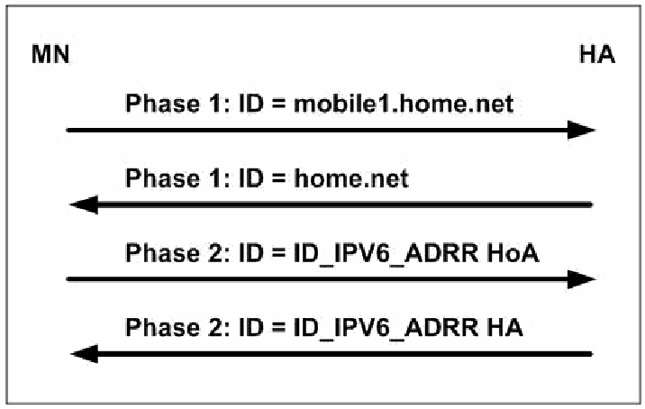
図4-3. MNとHA間で使用するIKEv1識別子。MN（左）とHA（右）の間のメッセージシーケンスで、上から順に4本の矢印がある。MNからHAへ「Phase 1: ID = mobile1.home.net」、HAからMNへ「Phase 1: ID = home.net」、MNからHAへ「Phase 2: ID = ID_IPV6_ADRR HoA」、HAからMNへ「Phase 2: ID = ID_IPV6_ADRR HA」。
Figure 4-3. IKEv1 Identifiers used between a MN and its HA
図4-3. MNとHA間で使用するIKEv1識別子
RFC 4877 specifies the entire IKEv2 exchange. Figure 4-4 shows the IKEv2 Identifiers used between a MN and its HA.
RFC 4877はIKEv2の交換全体を規定している。図4-4に、MNとHA間で使用するIKEv2識別子を示す。
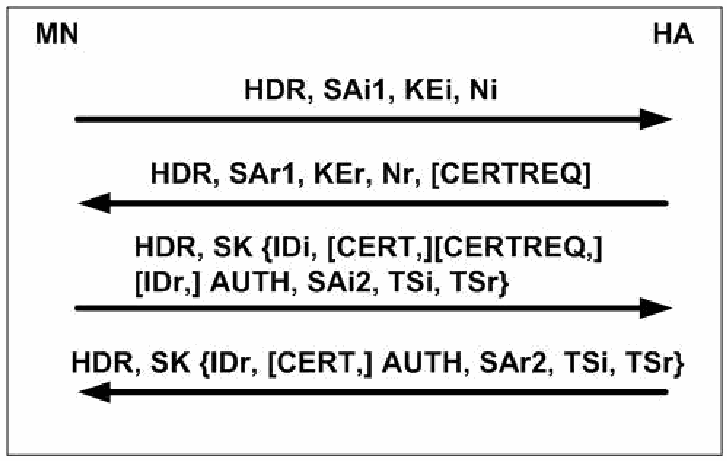
図4-4. MNとHA間で使用するIKEv2識別子。MN（左）とHA（右）の間のメッセージシーケンスで、上から順に4本の矢印がある。MNからHAへ「HDR, SAi1, KEi, Ni」、HAからMNへ「HDR, SAr1, KEr, Nr, [CERTREQ]」、MNからHAへ「HDR, SK {IDi, [CERT,][CERTREQ,] [IDr,] AUTH, SAi2, TSi, TSr}」、HAからMNへ「HDR, SK {IDr, [CERT,] AUTH, SAr2, TSi, TSr}」。
Figure 4-4. IKEv2 identifiers used between a MN and its HA
図4-4. MNとHA間で使用するIKEv2識別子
The MN inserts its identity (e.g., its HoA or FQDN) in the IDi payload in the third message, which is encrypted and authenticated. The HoA and traffic selectors for protecting BUs and BUAs are included in the TSi (traffic selector—initiator). The MN or HA can then send CREATE_CHILD_SA exchanges to protect other traffic. Again, the MN uses its HoA in the TSi.
MNは3番目のメッセージ内のIDiペイロードに自身のID（たとえばHoAまたはFQDN）を挿入する。このメッセージは暗号化され、認証される。BUおよびBUAを保護するためのHoAとトラフィックセレクターは、TSi（トラフィックセレクター—イニシエーター）に含まれる。その後、MNまたはHAは、その他のトラフィックを保護するためにCREATE_CHILD_SA交換を送信できる。この場合も、MNはTSiでHoAを使用する。
4.4.3.2 Securing Other MN to HA Traffic
4.4.3.2 MNとHA間のその他のトラフィックの保護
Once an IPsec SA is established between a MN and its HA for BUs and BUAs, it can be used for other protocol elements:
BUおよびBUAのためにMNとHA間でIPsec SAが確立されると、他のプロトコル要素にも使用できる。
•ICMPv6 between the HA and MN for MPS and MPA prefix discovery and for DHAAD
•MPSおよびMPAによるプレフィックス検出とDHAADのために、HAとMN間で使用するICMPv6
•The return routability messages Home Test Init and Home Test (see Section 4.4.3.3)
•return routabilityメッセージのHome Test InitおよびHome Test（4.4.3.3節を参照）
•User traffic (everything else)
•ユーザートラフィック（その他すべて）
At this point, the security associations at the MN include four sets of ESP SPD and SAD entries to and from the HA. All must use the ESP data authentication (integrity) service. Confidentiality may be used if needed. The four sets of entries are:
この時点で、MN上のセキュリティアソシエーションには、HAとの間で送受信するESPのSPDおよびSADエントリーが4組含まれる。すべての組でESPデータ認証（完全性）サービスを使用しなければならない。必要に応じて機密性を使用してもよい。4組のエントリーは次のとおりである。
•Transport mode for Mobility Headers for BU and BUA with the HA
•HAとのBUおよびBUAのMobility Headerに対するトランスポートモード
•Transport mode for ICMPv6 for home network prefix discovery
•ホームネットワークのプレフィックス検出に使うICMPv6に対するトランスポートモード
•Tunnel mode for Mobility Headers for return routability messages to and from a CN
•CNとの間で送受信するreturn routabilityメッセージのMobility Headerに対するトンネルモード
•Optionally, tunnel mode for all other traffic
•任意で、その他すべてのトラフィックに対するトンネルモード
4.4.3.3 Securing MN to CN Communications
4.4.3.3 MNとCN間の通信の保護
A MN needs to exchange a BU and BUA with a CN to establish route optimization. The major threats are that a CN gets a forged BU, or a CN processes a forged Home Address Option. The original drafts recommended using IPsec, but it was decided that sufficient infrastructure for IPsec authentication did not exist to make this widely deployable, and a new security protocol called return routability was invented to authenticate and share a key (called Kbm) between a MN and CN. The idea was to make sure the MN can receive messages both directly from the CN over its optimized route and indirectly over its IPsec connection with its HA. Return routability works as follows: the MN sends the CN Care-of Test Init and Home Test Init over these two paths, respectively. These paths are illustrated in Figure 4-5.
経路最適化を確立するには、MNはCNとの間でBUおよびBUAを交換する必要がある。主な脅威は、CNが偽造BUを受け取ること、またはCNが偽造Home Address Optionを処理することである。当初の草案ではIPsecの使用が推奨されていたが、これを広く導入可能にするだけのIPsec認証の基盤が存在しないと判断され、MNとCNの間で認証を行い鍵（Kbmと呼ばれる）を共有するために、return routabilityと呼ばれる新しいセキュリティプロトコルが考案された。その考え方は、MNが、最適化された経路を通じてCNから直接メッセージを受信でき、かつHAとのIPsec接続を通じて間接的にもメッセージを受信できることを確認するというものであった。return routabilityは次のように機能する。MNは、これら2つの経路を通じて、それぞれCare-of Test InitとHome Test InitをCNに送信する。これらの経路を図4-5に示す。
![Figure 4-5. Return Routability—Init Messages. Home Agent (router, upper left), Correspondent Host (server, upper right, holding Kcn and a "Nonce Table: index, nonce") and Mobile Host (laptop, lower left). The Home Agent and Mobile Host are linked by a tunnel, the Home Agent and Correspondent Host by a bar, and the Mobile Host and Correspondent Host by a diagonal bar labeled "Optimized Route". Message 1, "Home Test Init (Home Init Cookie)": an arrow from the Mobile Host up to the Home Agent and on to the Correspondent Host. Message 2, "Care-of Test Init (Care-of Init Cookie)": an arrow from the Mobile Host directly to the Correspondent Host along the optimized route.](assets/119/p0085-figure-01.png)
図4-5. Return Routability — Initメッセージ。ホームエージェント（左上のルーター）、通信相手ホスト（右上のサーバー。Kcnと「Nonce Table（ノンステーブル）: index, nonce」を持つ）、モバイルホスト（左下のノートPC）がある。ホームエージェントとモバイルホストはトンネルで、ホームエージェントと通信相手ホストは線で、モバイルホストと通信相手ホストは「最適化された経路」と記した斜めの線で結ばれている。メッセージ1「Home Test Init（Home Init Cookie）」は、モバイルホストからホームエージェントへ上がり、通信相手ホストへ向かう矢印である。メッセージ2「Care-of Test Init（Care-of Init Cookie）」は、最適化された経路に沿ってモバイルホストから通信相手ホストへ直接向かう矢印である。
Figure 4-5. Return Routability—Init Messages
図4-5. Return Routability — Initメッセージ
Note that route optimization is optional for both parties. A MN always has a tradeoff between optimal packet forwarding and location privacy, and a CN may ignore BUs (when it suspects an attack, for example).
経路最適化は双方にとって任意である点に注意する。MNは常に、最適なパケット転送と位置プライバシーの間でトレードオフを選ぶ。CNはBUを無視してもよい（たとえば攻撃を疑う場合）。
The CN can now compute and return Keygen Tokens for each path:
CNは各経路についてKeygen Tokenを計算し、返送できる。
•Home Keygen Token = First(64, HMAC_SHA1(Kcn, (Home Address, HoA Nonce, 0)))
•Home Keygen Token = First(64, HMAC_SHA1(Kcn, (Home Address, HoA Nonce, 0)))
•Care-of Keygen Token = First(64, HMAC_SHA1(Kcn, (Care-of Address, CoA Nonce, 1)))
•Care-of Keygen Token = First(64, HMAC_SHA1(Kcn, (Care-of Address, CoA Nonce, 1)))
The CN sends these back and forgets them so as to avoid a denial-of-service attack. Later, when addresses and nonce indices are returned, it can re-compute these and:
CNはサービス妨害攻撃を避けるため、これらを返送した後に破棄する。その後、アドレスとnonceインデックスが返ってくると、これらを再計算し、次の値を求める。
•Kbm = SHA1(Home Keygen Token, Care-of Keygen Token)
•Kbm = SHA1(Home Keygen Token, Care-of Keygen Token)
The CN does not allocate Binding Cache storage until authentication completes. Figure 4-6 illustrates the Keygen replies.
CNは認証が完了するまでBinding Cacheの記憶領域を割り当てない。Keygen応答を図4-6に示す。
![Figure 4-6. Return Routability—Keygen Replies. Same layout as Figure 4-5: Home Agent (upper left), Correspondent Host (upper right, holding Kcn and a Nonce Table), Mobile Host (lower left), with the optimized route between the Mobile Host and the Correspondent Host. Message 3, "Home Test (Home Init Cookie, Home Keygen Token, Home Nonce Index)": an arrow from the Correspondent Host to the Home Agent and down to the Mobile Host. Message 4, "Care-of Test (Care-of Init Cookie, Care-of Keygen Token, Care-of Nonce Index)": an arrow from the Correspondent Host directly to the Mobile Host along the optimized route.](assets/119/p0086-figure-01.png)
図4-6. Return Routability — Keygen応答。図4-5と同じ配置で、ホームエージェント（左上）、通信相手ホスト（右上。KcnとNonce Tableを持つ）、モバイルホスト（左下）があり、モバイルホストと通信相手ホストの間に最適化された経路がある。メッセージ3「Home Test（Home Init Cookie、Home Keygen Token、Home Nonce Index）」は、通信相手ホストからホームエージェントへ、さらにモバイルホストへ下りる矢印である。メッセージ4「Care-of Test（Care-of Init Cookie、Care-of Keygen Token、Care-of Nonce Index）」は、最適化された経路に沿って通信相手ホストからモバイルホストへ直接向かう矢印である。
Figure 4-6. Return Routability—Keygen Replies
図4-6. Return Routability — Keygen応答
The MN now computes the following and sends the BU:
MNは次の値を計算し、BUを送信する。
•Kbm = SHA1(Home Keygen Token, Care-of Keygen Token)
•Kbm = SHA1(Home Keygen Token, Care-of Keygen Token)
Binding Update Message Authentication Code (BU MAC) = \(\mathrm{First}(96, \text{HMAC-SHA1}(\mathit{Kbm}, (\text{Care-of Address} \mid \text{CN address} \mid \text{BU*})))\)
Binding Update Message Authentication Code（BU MAC）= \(\mathrm{First}(96, \text{HMAC-SHA1}(\mathit{Kbm}, (\text{Care-of Address} \mid \text{CN address} \mid \text{BU*})))\)
•BU = (Home Address Option, BU MAC, sequence number, Home Address Nonce Index, Care-of Address Nonce Index).
•BU = (Home Address Option, BU MAC, sequence number, Home Address Nonce Index, Care-of Address Nonce Index)。
Figure 4-7 illustrates the BU and BUA path.
BUおよびBUAの経路を図4-7に示す。
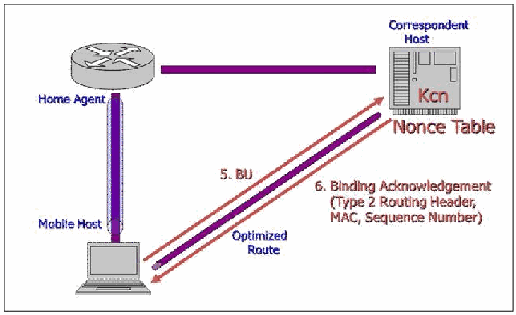
図4-7. Reverse Routability — Kbmで保護されたBUおよびBUA。図4-5・図4-6と同じ配置で、ホームエージェント（左上）、通信相手ホスト（右上。KcnとNonce Tableを持つ）、モバイルホスト（左下）がある。最適化された経路に沿って、メッセージ5「BU」がモバイルホストから通信相手ホストへの矢印、メッセージ6「Binding Acknowledgement（Type 2 Routing Header、MAC、Sequence Number）」が通信相手ホストからモバイルホストへ戻る矢印である。
Figure 4-7. Reverse Routability—BU and BUA Protected with Kbm
図4-7. Reverse Routability — Kbmで保護されたBUおよびBUA
Now, over the optimized route, the MN sends normal traffic with the Home Address Option, and the CN sends normal traffic with a Type 2 Routing Header.
ここで、最適化された経路ではMNがHome Address Optionを付けた通常のトラフィックを送信し、CNはType 2 Routing Headerを付けた通常のトラフィックを送信する。
To prevent various abuses, restrictions exist on using the Home Address Option and Type 2 Routing Header. For the former, the rules are:
さまざまな不正利用を防ぐため、Home Address OptionとType 2 Routing Headerの使用には制限がある。前者の規則は次のとおりである。
•Only one Home Address Option is allowed per packet, it must not be altered en route, it must contain a routable, unicast address, and it must not cause changes in the routing or binding cache.
•1つのパケットに許可されるHome Address Optionは1つだけであり、経路上で変更してはならない。ルーティング可能なユニキャストアドレスを含めなければならず、ルーティングまたはバインディングキャッシュに変更を生じさせてはならない。
•A BU at a CN must be authenticated with a Kbn established with return routability.
•CNでのBUは、return routabilityで確立したKbnを使って認証しなければならない。
•A BU at a HA must be authenticated with transport mode ESP.
•HAでのBUは、トランスポートモードESPを使って認証しなければならない。
•All other cases must correspond to an entry in the binding cache.
•その他すべての場合は、バインディングキャッシュのエントリーに対応していなければならない。
The rules for Type 2 Routing Headers are:
Type 2 Routing Headerの規則は次のとおりである。
•Only one type 2 routing header is allowed per packet, and it may only have one segment remaining.
•1つのパケットに許可されるType 2 Routing Headerは1つだけであり、残りのセグメントは1つまでに限られる。
•The HoA in the Type 2 Routing Header cannot have smaller scope than the CoA in the destination, it must be routable and unicast, and it must be the correct one for the MN.
•Type 2 Routing Header内のHoAのスコープは、宛先のCoAのスコープより狭くてはならない。ルーティング可能なユニキャストアドレスであり、MNに対して正しいアドレスでなければならない。
In summary, an attacker has to intercept two messages sent along different paths to get Kbm. Perhaps the greatest danger of this is on the MN’s local link, but here IPsec with encryption protects the Home Keygen Token in the Home Test (message 3).
要約すると、Kbmを取得するには、攻撃者は異なる経路で送信された2つのメッセージを傍受する必要がある。おそらく最大の危険はMNのローカルリンク上にあるが、ここではHome Test（メッセージ3）のHome Keygen Tokenが暗号化を伴うIPsecによって保護される。
RFC 4449 describes an efficient alternative to return routability, whereby the MN and CN have pre-shared a Kcn and nonces, and both can compute Kbm directly. This may be useful, for example, when the MN accesses servers at its home site. The CN needs to trust the MN not to use its pre-shared data to launch DOS attacks. Also, the IETF is working on a draft specification, Using IPsec between Mobile and Correspondent IPv6 Nodes, for using IPsec where it is suitable or desirable to secure BUs and other communications between a MN and CN.
RFC 4449は、return routabilityに代わる効率的な方法を説明している。この方法ではMNとCNがKcnおよびnonceを事前共有し、双方がKbmを直接計算できる。たとえば、MNがホームサイトのサーバーにアクセスする場合に役立つことがある。CNは、MNが事前共有データをDoS攻撃に使用しないと信頼する必要がある。またIETFでは、MNとCN間のBUその他の通信を保護するのに適切または望ましい場合にIPsecを使用するため、「Using IPsec between Mobile and Correspondent IPv6 Nodes」という仕様草案を策定中である。
4.4.3.4 Other Security Considerations for MIPv6
4.4.3.4 MIPv6に関するその他のセキュリティ上の考慮事項
This section briefly covers several topics that do not fit into the above sections: an alternative to IPsec for MN-HA security proposed by the Third Generation Partnership Project (3GPP2), issues with making mobility and firewalls work together, security protection for the HA, and a discussion of location privacy.34
この節では、上の各節に当てはまらないいくつかの話題を簡単に取り上げる。Third Generation Partnership Project（3GPP2）が提案するMNとHAのセキュリティ向けIPsec代替方式、モビリティとファイアウォールを連携させる際の問題、HAのセキュリティ保護、および位置プライバシーについての議論である。34
•Some designers of 3GPP2 networks consider including IPsec in handsets too difficult. RFC 4285, Protocol for Mobile IPv6 Authentication, describes a shared-key, lightweight alternative to IPsec for securing communications between a MN and its HA designed specifically for 3GPP2 networks. The IETF has considered this document informational, not standards track, and it has not been recommended for use in other environments.
•3GPP2ネットワークの設計者の中には、端末にIPsecを組み込むのは難しすぎると考える人もいる。RFC 4285「Protocol for Mobile IPv6 Authentication」は、3GPP2ネットワーク向けに特化して設計された、MNとHA間の通信を保護するための共有鍵による軽量なIPsec代替方式を説明している。IETFはこの文書を標準化トラックではなく情報提供文書として扱っており、他の環境での使用は推奨していない。
However, additional questions have been raised about the suitability of IPsec for securing MIPv6, and a standards-track alternative has been proposed35. The reasons given for supporting the standardization of alternatives to IPsec are:
しかし、MIPv6の保護にIPsecが適しているかについて追加の疑問が提起され、標準化トラック上の代替方式が提案されている。35 IPsec以外の方式の標準化を支持する理由として、次の点が挙げられている。
1.Software complexity: Because IPsec is implemented in the operating system and no convenient application programming interface exists, it is difficult for a third party to implement MIPv6 on a system supporting IPsec and IKEv2.
1.ソフトウェアの複雑さ：IPsecはオペレーティングシステム内に実装されており、使いやすいアプリケーションプログラミングインターフェースが存在しないため、IPsecとIKEv2をサポートするシステム上で第三者がMIPv6を実装するのは難しい。
2.NAT traversal: The need to run MIPv6 on dual stack IPv4-IPv6 systems (RFC 5555) across an IPv4 network address translation (NAT) component requires UDP encapsulation and makes running IKEv2 and IPsec more complicated.
2.NATトラバーサル：IPv4-IPv6デュアルスタックシステム（RFC 5555）上のMIPv6を、IPv4ネットワークアドレス変換（NAT）装置を越えて実行する必要があるため、UDPカプセル化が必要となり、IKEv2とIPsecの実行がより複雑になる。
3.Dynamic HoA assignment: Unless this is built into the IKEv2 processing, securely configuring a dynamic address leads to a chicken-and-egg problem. Using this capability within IKEv2 requires communicating the home prefix to IKEv2.
3.HoAの動的割り当て：これがIKEv2の処理に組み込まれていない限り、動的アドレスを安全に設定するには、鶏と卵の問題が生じる。この機能をIKEv2で使用するには、ホームプレフィックスをIKEv2に通知する必要がある。
4.Scalability: The number of security associations a HA must support may exceed its capacity.
4.スケーラビリティ：HAがサポートしなければならないセキュリティアソシエーションの数が、HAの処理能力を超える可能性がある。
5.Availability: Some IPv6 platforms may not have IPsec and IKEv2.
5.可用性：一部のIPv6プラットフォームにはIPsecおよびIKEv2がない場合がある。
6.Communications overhead: The total overhead for IKEv2 and ESP exceeds that of other security solutions.
6.通信オーバーヘッド：IKEv2とESPの合計オーバーヘッドは、他のセキュリティソリューションより大きい。
While these opinions, taken in total, may have some merit, they are controversial. Nevertheless, it is likely that at least one alternative to IPsec will proceed along the IETF standards track. It is unclear what all of the details will look like and what the time frame for completing this work will be.
これらの意見を総合すると一定の妥当性があるかもしれないが、議論の余地がある。それでも、少なくとも1つのIPsec代替方式がIETF標準化トラックを進む可能性が高い。詳細がどうなるか、また作業の完了時期は不明である。
•Many IPv6 firewalls are not compatible with MIPv6. Since many MIPv6 messages are encapsulated, most firewalls and Intrusion Prevention Systems (IPSs) cannot parse these messages accurately. Current firewall policy configuration rules don’t allow a security administrator to specify both the external and internal (tunneled) packet contents before allowing or blocking the traffic. More sophisticated firewall policies (AND/OR/NOT logic rules in place of the current first-match approach) are needed to accomplish these goals.
•多くのIPv6ファイアウォールはMIPv6と互換性がない。MIPv6のメッセージの多くはカプセル化されるため、ほとんどのファイアウォールや侵入防止システム（IPS）はメッセージを正確に解析できない。現在のファイアウォールポリシー設定規則では、トラフィックを許可または遮断する前に、外側と内側（トンネル内）の両方のパケット内容を指定できない。これらの目的を達成するには、現在の先着一致方式に代わる、より高度なファイアウォールポリシー（AND/OR/NOTの論理規則）が必要である。
RFC 4487, Mobile IPv6 and Firewalls: Problem Statement, considers four cases:
RFC 4487「Mobile IPv6 and Firewalls: Problem Statement」は、次の4つのケースを検討している。
•The MN is in a network protected by firewalls: The MN needs to be able to get IPsec ESP packets through the firewall for BUs and Home Test Init messages. The firewall also has to understand these protocols and allow appropriate responses (BUA and Home Test). The Care-of Test Init and reply also must be allowed through. If the MN moves from a network protected by one firewall to a network protected by another, the firewalls need to retain state jointly.
•MNがファイアウォールで保護されたネットワーク内にいる場合：MNはBUおよびHome Test Initメッセージ向けのIPsec ESPパケットをファイアウォール越しに通過させる必要がある。ファイアウォールもこれらのプロトコルを理解し、適切な応答（BUAおよびHome Test）を許可しなければならない。Care-of Test Initとその応答も通過を許可する必要がある。MNがあるファイアウォールで保護されたネットワークから別のファイアウォールで保護されたネットワークに移動する場合、ファイアウォール間で状態を共有して保持する必要がある。
•The CN is in a network protected by firewalls: The firewall needs to understand inbound Home Test Init and Care-of Test Init messages, so that these are not dropped. The firewall has no way to examine a BU, distinguish legitimate instances from an attack, and update its state accordingly.
•CNがファイアウォールで保護されたネットワーク内にいる場合：ファイアウォールは受信するHome Test InitおよびCare-of Test Initメッセージを理解し、それらを破棄しないようにする必要がある。ファイアウォールにはBUを調べて正規のものと攻撃を区別し、それに応じて状態を更新する手段がない。
•The HA is in a network protected by firewalls: The firewalls need to handle ESP and unsolicited incoming connections. Movement by the MN may result in traffic arriving at the HA through a different firewall from before, so stateful firewalls need to maintain this state jointly.
•HAがファイアウォールで保護されたネットワーク内にいる場合：ファイアウォールはESPと、要求なしに到着する接続を処理する必要がある。MNの移動により、以前とは別のファイアウォールを通じてHAにトラフィックが到達する場合があるため、ステートフルファイアウォールは状態を相互に保持する必要がある。
•The MN moves into a network protected by firewalls: First, the BU with the HA has to get through. Then, existing connections, which have no prior state, need to continue. Finally, return routability with CNs needs to work.
•MNがファイアウォールで保護されたネットワークに移動してくる場合：まず、HAとのBUを通過させなければならない。次に、以前の状態情報がない既存の接続を継続させる必要がある。最後に、CNとのreturn routabilityを機能させる必要がある。
It is unclear how the combined goals of accommodating these cases and still repelling attacks will be satisfied, so more work on this topic is needed.
これらのケースに対応しながら攻撃を防ぐという複合的な目標をどのように満たすかは明らかでなく、この話題についてさらに検討が必要である。
•The HA is likely to reside on a DMZ or a perimeter network, where it is exposed to the Internet. If this is the case, the HA itself needs the appropriate level of security controls.
•HAはインターネットに公開されるDMZまたは境界ネットワークに配置される可能性が高い。その場合、HA自体に適切なレベルのセキュリティ管理策が必要である。
•Many privacy issues exist at all protocol layers, from MAC addresses to application-layers. RFC 4882, IP Address Location Privacy and Mobile IPv6: Problem Statement, considers only location privacy with MIPv6, and only the IP layer. Two issues are identified: disclosure of a MN’s HoA to eavesdroppers and disclosure of its CoA to CNs. A solution to the former is to use confidentiality with ESP and not to use route optimization. A solution to the latter is not to use route optimization.
•MACアドレスからアプリケーション層に至るまで、すべてのプロトコル層にプライバシー上の問題が存在する。RFC 4882「IP Address Location Privacy and Mobile IPv6: Problem Statement」が扱うのは、MIPv6における位置プライバシーのうちIP層だけである。特定されている問題は、盗聴者へのMNのHoAの漏えいと、CNへのMNのCoAの漏えいの2つである。前者への対策はESPで機密性を使用し、経路最適化を使わないことである。後者への対策は経路最適化を使わないことである。
The major threat to mobile communications is the ability of a nearby attacker to eavesdrop on these messages. Since mobility implies wireless communications, it is likely that the MN will be on an insecure wireless access medium and, thus, subject to eavesdropping by an attacker. This is what makes the use of IPsec, or an equally secure alternative (e.g. encryption at the application layer such as SSL/TLS [Secure Sockets Layer/Transport Layer Security], SSH [Secure Shell], etc.), such a critical requirement.
モバイル通信に対する主な脅威は、近くにいる攻撃者がこれらのメッセージを盗聴できることである。モビリティは無線通信を伴うため、MNは安全でない無線アクセス媒体上に置かれ、攻撃者による盗聴の対象となる可能性が高い。このためIPsec、または同等に安全な代替方式（たとえばSSL/TLS［Secure Sockets Layer/Transport Layer Security］、SSH［Secure Shell］などのアプリケーション層での暗号化）の使用が極めて重要な要件となる。
4.4.4 Unknown Aspects
4.4.4 未確定の事項
MIPv6 is a flexible yet complex capability. Some aspects of the specification are not yet complete and not all implementations support mobility yet. This section highlights some considerations for minimizing unknown or unforeseen behaviors on networks using MIPv6. Emerging topics such as bootstrapping, dual stack operation, and reliability are covered.
MIPv6は柔軟である一方、複雑な機能である。仕様の一部はまだ完成しておらず、すべての実装がモビリティをサポートしているわけでもない。この節では、MIPv6を使用するネットワークで不明または予期しない動作を最小限に抑えるための考慮事項を取り上げる。ブートストラップ、デュアルスタック動作、信頼性などの新しい話題を扱う。
A mobile node needs a HoA, a HA address, and a security association with its HA. Statically provisioning this information can be administratively expensive, so work has started on obtaining it automatically through a process called bootstrapping. Variations exist in types of service providers and methods of address assignment and authentication. These issues are discussed in RFC 4640.36 A distinction is made between the case in which the same service provider offers mobility and provides authorization and the case in which these functions are split between service providers. Proposals for providing bootstrapping information with DHCPv6 and making bootstrapping work with RADIUS (Remote Authentication Dial-In User Service ) authentication are under discussion. A solution has been developed for the split case (different home network and mobile providers) in RFC 5026, Mobile IPv6 Bootstrapping in Split Scenario.
モバイルノードにはHoA、HAのアドレス、およびHAとのセキュリティアソシエーションが必要である。これらの情報を静的に設定すると管理コストが高くなるため、ブートストラップと呼ばれるプロセスで自動取得する取り組みが始まっている。サービスプロバイダーの種類、アドレス割り当て方式、認証方式にはさまざまな組み合わせがある。これらの問題はRFC 4640で議論されている。36 同じサービスプロバイダーがモビリティと認可の両方を提供する場合と、これらの機能を複数のサービスプロバイダーで分担する場合を区別する。DHCPv6を使ってブートストラップ情報を提供する提案や、RADIUS（Remote Authentication Dial-In User Service ）認証と連携してブートストラップを機能させる提案が検討されている。ホームネットワークとモバイルサービスプロバイダーが異なる分担ケースについては、RFC 5026「Mobile IPv6 Bootstrapping in Split Scenario」で解決策が策定されている。
A MN with dual IPv4 and IPv6 protocol stacks could run both MIPv4 and MIPv6, but this would be expensive and also awkward if the mobility protocols are not integrated. It also raises security issues, not the least of which is the need to include the completely different approaches to security in MIPv4 and MIPv6. One immediate question is which versions of IP the foreign link supports. A second is whether the same HA supports both MIPv4 and MIPv6. A third is which protocols the CNs are capable of using. None of the tunneling mechanisms designed to help IPv4-to-IPv6 transition includes specific support for mobility. Because mobility is essentially a tunneling protocol, ways exist, in principle, to use a single HA and a single CoA (IPv4 or IPv6) to deliver either IPv4 or IPv6 packets. One such solution, documented in RFC 5555, allows dual stack systems to run both IPv6 and IPv4 over MIPv6. It also handles Network Address Translation (NAT) in the IPv4 networks.
IPv4とIPv6の両方のプロトコルスタックを持つMNはMIPv4とMIPv6の両方を実行できるが、コストが高く、モビリティプロトコルが統合されていない場合には扱いにくい。また、MIPv4とMIPv6ではセキュリティへのアプローチがまったく異なるため、それらを両方含める必要があるなど、セキュリティ上の問題も生じる。まず、外部リンクがどのバージョンのIPをサポートするかが問題となる。次に、同じHAがMIPv4とMIPv6の両方をサポートするかが問題となる。さらに、CNがどのプロトコルを使用できるかも問題である。IPv4からIPv6への移行を支援するために設計されたトンネル方式には、モビリティを明示的にサポートするものがない。モビリティは本質的にトンネルプロトコルであるため、原理上は単一のHAと単一のCoA（IPv4またはIPv6）を使って、IPv4またはIPv6パケットを配送する方法がある。そのような方式の1つであるRFC 5555は、デュアルスタックシステムがMIPv6上でIPv6とIPv4の両方を実行できるようにする。また、IPv4ネットワークのNetwork Address Translation（NAT）にも対応する。
The MIPv6 HA is a single point of failure. Switching HAs requires detecting failure, finding an alternative HA, transferring state, and reestablishing security. Different solutions are possible: a MN could maintain connectivity with a “hot spare” HA, the HA could share state with backup systems, or the MN could, in effect, start over when a failure is detected. These involve different tradeoffs, and solutions are under discussion37. Another case being considered is when, for load balancing, planned outages, or other reasons, a HA can announce that it will no longer be available.
MIPv6のHAは単一障害点である。HAを切り替えるには、障害の検出、代替HAの特定、状態の転送、およびセキュリティの再確立が必要となる。さまざまな解決策が考えられる。MNが「ホットスタンバイ」HAへの接続を維持する方法、HAがバックアップシステムと状態を共有する方法、または障害検出時にMNが実質的に最初からやり直す方法である。これらにはそれぞれ異なるトレードオフがあり、解決策が検討されている。37 負荷分散、計画停止、その他の理由でHAが今後利用できなくなることを通知するケースも検討されている。
4.5 Jumbograms
4.5 ジャンボグラム
RFC 2675 defines an IPv6 Hop-by-Hop Option called jumbograms, which allows an IPv6 packet to contain a payload longer than 65,535 octets. Jumbograms are only defined for IPv6 interfaces that may be attached to links with a MTU greater than 65,575 octets. Other interfaces can ignore jumbograms. Many IPv6 implementations allow jumbograms but do not support any link layers that can handle them (except the loopback interface).
RFC 2675は、ジャンボグラムと呼ばれるIPv6 Hop-by-Hop Optionを定義している。これにより、IPv6パケットのペイロードを65,535オクテットより長くできる。ジャンボグラムは、65,575オクテットを超えるMTUのリンクに接続される可能性があるIPv6インターフェースに対してのみ定義されている。他のインターフェースはジャンボグラムを無視できる。多くのIPv6実装はジャンボグラムを許可するものの、それを処理できるリンク層（ループバックインターフェースを除く）をサポートしていない。
4.5.1 Specification Overview
4.5.1 仕様の概要
The 16-bit Payload Length in the IPv6 Header is set to zero and the Hop-by-Hop Jumbo Payload Option, Type C2 base 16 (1100 0010), must be included right after the header. It specifies a 32-bit Payload Length. Jumbograms must be at least 65,536 bytes and must not be fragmented.
IPv6ヘッダーの16ビットPayload Lengthは0に設定し、Hop-by-Hop Jumbo Payload Option（Type C2、16進数。2進数では1100 0010）をヘッダーの直後に含めなければならない。このオプションは32ビットのPayload Lengthを指定する。ジャンボグラムは65,536バイト以上でなければならず、フラグメント化してはならない。
Common transport payloads such as TCP and UDP have packet size limits (in the UDP length field and the TCP MSS [Maximum Segment Size] option and Urgent field), so modifications are needed for them to use jumbograms.
TCPやUDPなど一般的なトランスポート層のペイロードにはパケットサイズの制限がある（UDPの長さフィールド、TCPのMSS［Maximum Segment Size］オプションおよびUrgentフィールド）。そのため、ジャンボグラムを使用するにはそれらを変更する必要がある。
4.5.2 Security Ramifications
4.5.2 セキュリティ上の影響
RFC 2675 says, “The Jumbo Payload option and TCP/UDP jumbograms do not introduce any known new security concerns,” but the BSD and KAMI implementations claim that IPsec AH and jumbograms are incompatible due to an unexplained “quirk in the specs” regarding the AH header size. Given the limited use of jumbograms, it is not surprising that some (perhaps most) IPsec implementations do not support them.
RFC 2675は、「Jumbo PayloadオプションおよびTCP/UDPジャンボグラムは、既知の新たなセキュリティ上の懸念をもたらさない」と述べている。しかし、BSDおよびKAMIの実装は、AHヘッダーのサイズに関する仕様上の説明されていない「癖」が原因で、IPsec AHとジャンボグラムには互換性がないとしている。ジャンボグラムの使用が限られていることを考えると、一部（おそらく大半）のIPsec実装がこれをサポートしていないのは意外ではない。
Jumbograms may be used as a vehicle for DOS. They can cause substantial latency, increase the cost of retransmission, and interfere with QoS. A maximum length jumbogram will tie up a one gigabit per second link for over a half a minute, and if the UDP checksum fails, the receiving interface may request retransmission. A jumbogram, used together with a hop-by-hop header, could possibly be used to perform a resource-consumption attack.
ジャンボグラムはDoSの手段として使われる可能性がある。大きな遅延を生じさせ、再送コストを増加させ、QoSを妨げることがある。最大長のジャンボグラムは、1ギガビット/秒のリンクを30秒以上占有する。また、UDPチェックサムが失敗すると、受信側インターフェースが再送を要求する可能性がある。ホップバイホップヘッダーと併用したジャンボグラムは、リソース消費攻撃に利用されるおそれがある。
Intermediate systems such as application layer firewalls and intrusion detection systems may be unprepared to handle huge jumbograms (which can be up to four gigabytes long).
アプリケーション層ファイアウォールや侵入検知システムなどの中間システムは、巨大なジャンボグラム（最大4ギガバイト）を処理できるよう準備されていない場合がある。
Finally, many IPv6 implementations may contain places in which the Payload Length is stored as an unsigned 16-bit integer. Finding and exploiting these may be a method of causing buffer overflows, kernel crashes, or other unintended effects.
最後に、多くのIPv6実装ではPayload Lengthが符号なし16ビット整数として保存されている箇所がある可能性がある。このような箇所を見つけて悪用することで、バッファーオーバーフロー、カーネルクラッシュ、その他の意図しない影響を引き起こせることがある。
4.6 Address Selection
4.6 アドレス選択
An IPv4 interface typically has one IPv4 unicast address, which may or may not be globally routable, plus the loopback address (127.0.0.1). An IPv6 interface, in contrast, typically starts with an interface local loopback address, a link local address, a unique local address, and a globally routable address. Renumbering and multihoming can result in having more than one address of certain types. There is nothing to stop one from generating and using additional addresses, and renumbering may cause more than one address of a given type to be active. Some addresses should still be accepted or handled by an implementation, but their use is no longer recommended. A choice of source addresses exists for every packet. Often, a choice of destination addresses exists as well.
IPv4インターフェースには通常、グローバルにルーティング可能な場合もそうでない場合もあるIPv4ユニキャストアドレスが1つと、ループバックアドレス（127.0.0.1）がある。これに対してIPv6インターフェースは通常、インターフェースローカルのループバックアドレス、リンクローカルアドレス、ユニークローカルアドレス、グローバルにルーティング可能なアドレスを持つ状態から始まる。番号付け変更やマルチホーム化により、特定の種類のアドレスを複数持つことがある。追加アドレスの生成と使用を妨げるものはなく、番号付け変更によって同じ種類の複数のアドレスが有効となる場合もある。一部のアドレスは、実装が引き続き受け入れるか処理すべきであるものの、その使用はもはや推奨されていない。すべてのパケットについて、送信元アドレスには複数の選択肢がある。多くの場合、宛先アドレスにも複数の選択肢がある。
In a system running both IPv4 and IPv6, address selection is more complicated, and rules need to be given for which of these to prefer.
IPv4とIPv6の両方を実行するシステムではアドレス選択がより複雑になり、どちらを優先するかの規則が必要となる。
RFC 3484 specifies rules for choosing source and destination addresses, but more recent experience has shown that additional rules are needed for networks with multiple prefixes. This section examines IPv6 address selection rules and their consequences.
RFC 3484は送信元アドレスと宛先アドレスを選択する規則を定めているが、より最近の経験から、複数のプレフィックスを持つネットワークには追加規則が必要であることが分かっている。この節では、IPv6アドレス選択規則とその影響を検討する。
4.6.1 Specification Overview
4.6.1 仕様の概要
This section summarizes the rules for source and destination address selection specified in RFC 3484. Criteria for choices and preferences in each case are covered.
この節では、RFC 3484で規定された送信元アドレスと宛先アドレスの選択規則を要約する。それぞれの場合における選択基準と優先順位を扱う。
Address selection may have to choose among IPv4 versus IPv6, addresses with different scopes, public or private address, and so forth. Some of the rules seem obvious, for example, choosing an address that has not been deprecated over one that has, but nevertheless, software has to be written to make the right choice. In general, source and destination pairs are chosen to match scopes and types (e.g., native IPv6, 6to4, or IPv4-mapped), to prefer smaller scopes, and to prefer native addresses over transitional addresses. If the destination is a multicast address, the multicast scope is used in choosing the scope of the unicast source address. One of the principles introduced in address selection is longest prefix match, which means, in the absence of other criteria, one chooses source and destination addresses to try to take advantage of route aggregation.
アドレス選択では、IPv4とIPv6、異なるスコープのアドレス、パブリックアドレスとプライベートアドレスなどの間から選ぶ必要が生じる。一部の規則は、非推奨となったアドレスより非推奨でないアドレスを選ぶなど自明に思えるが、適切に選択するソフトウェアを実装しなければならない。一般に送信元と宛先の組は、スコープや種類（ネイティブIPv6、6to4、IPv4-mappedなど）を一致させ、より小さいスコープを優先し、移行用アドレスよりネイティブアドレスを優先するよう選ばれる。宛先がマルチキャストアドレスの場合、ユニキャスト送信元アドレスのスコープ選択にはマルチキャストのスコープを使う。アドレス選択で導入された原則の1つが最長プレフィックス一致であり、他の基準がなければ、経路集約を利用できるよう送信元と宛先アドレスを選ぶことを意味する。
Another new concept is the address selection policy table, which allows administrators to add or override address selection rules. IPv4 addresses are represented in the table as IPv4-mapped IPv6 addresses, and these are assigned scopes corresponding to IPv6 link-local or global addresses. RFC 3484 gives an example of a policy table:
もう1つの新しい概念はアドレス選択ポリシーテーブルである。これにより、管理者はアドレス選択規則を追加または上書きできる。IPv4アドレスはテーブル内でIPv4-mapped IPv6アドレスとして表され、IPv6のリンクローカルアドレスまたはグローバルアドレスに対応するスコープが割り当てられる。RFC 3484には次のポリシーテーブル例がある。
Prefix
プレフィックス
Precedence Label Use
優先順位 ラベル 用途
::1/128
::1/128
50 0 Loopback
50 0 ループバック
::/0
::/0
40 1 Default (including native IPv6)
40 1 デフォルト（ネイティブIPv6を含む）
2002::/16
2002::/16
30 2 6to4
30 2 6to4
::/96
::/96
20 3 IPv4 Compatible
20 3 IPv4互換
::ffff:0:0/96
::ffff:0:0/96
10 4 IPv4 Mapped
10 4 IPv4マップド
Given an address, the entire table is scanned to find the entry with the longest common prefix matching the address. Then the corresponding Precedence and Label are returned. This has the effect of, first, matching labels of the source and destinations, and, second, preferring native IPv6 addresses over IPv4 or the different tunneling addresses (6to4 or v4-compatible).
アドレスが与えられると、アドレスと一致する共通部分が最長となるプレフィックスのエントリーを見つけるため、テーブル全体を調べる。次に、対応する優先順位とラベルを返す。これにより、まず送信元と宛先のラベルを一致させ、次にIPv4や各種トンネル用アドレス（6to4またはv4-compatible）よりネイティブIPv6アドレスを優先する。
The first step in source address selection is to make a list of candidate choices. In general, the choice should match the interface and scope. The next step is to sort the candidates by going through an ordered list of rules, starting with rule 1, and proceeding to the next rule only to break ties:
送信元アドレス選択の最初の手順は、候補となる選択肢のリストを作ることである。一般に、選択するアドレスはインターフェースおよびスコープに適合すべきである。次に、規則1から始まる順序付き規則リストに従って候補を並べ替え、同順位を解消する場合にのみ次の規則へ進む。
1.Prefer a source address that equals the destination.
1.宛先と等しい送信元アドレスを優先する。
2.Prefer the smallest scope that is at least as large as the destination’s scope. (This rule is mandatory.)
2.宛先のスコープ以上で最小のスコープを持つアドレスを優先する。（この規則は必須である。）
3.Prefer an address that is not deprecated.
3.非推奨ではないアドレスを優先する。
4.Prefer a home address over a care-of address, unless the application chooses to reverse this.
4.アプリケーションが逆を選択しない限り、気付アドレスよりホームアドレスを優先する。
5.Prefer an address on the correct outgoing interface for the given destination.
5.指定された宛先に対して正しい送出インターフェース上のアドレスを優先する。
6.Prefer an address that matches the label of the destination in the policy table.
6.ポリシーテーブル内で宛先のラベルと一致するアドレスを優先する。
7.Prefer a public address over a temporary address, unless the application chooses to reverse this.
7.アプリケーションが逆を選択しない限り、一時アドレスよりパブリックアドレスを優先する。
8.Use the address with the longest matching prefix in common with the destination.
8.宛先と最長一致するプレフィックスを持つアドレスを使用する。
Selecting a destination address follows a similar set of rules. One main difference is that choosing a destination involves asking what source would be used for each choice. Candidates are listed and compared, starting at rule 1, and continuing down the list of rules to break ties:
宛先アドレスの選択にも同様の規則が適用される。主な違いとして、宛先の候補ごとにどの送信元アドレスが使われるかを判断する必要がある。候補を列挙して比較し、規則1から始めて同順位を解消するために順に下位の規則を適用する。
1.Avoid unusable destinations (ones that are unreachable or have no usable source address).
1.使用不能な宛先（到達不能なもの、または使用可能な送信元アドレスがないもの）を避ける。
2.Prefer a destination with a source of matching scope.
2.同じスコープの送信元を持つ宛先を優先する。
3.Prefer a destination with a source that is not deprecated.
3.非推奨ではない送信元を持つ宛先を優先する。
4.Prefer a destination with a source that is just a home address to one with a source that is just a care-of address.
4.送信元が気付アドレスのみである宛先より、ホームアドレスのみである送信元を持つ宛先を優先する。
5.Prefer a destination with a source that has a matching label (in the policy table).
5.ポリシーテーブルでラベルが一致する送信元を持つ宛先を優先する。
6.Prefer a destination with higher precedence (in the policy table).
6.ポリシーテーブルで優先順位が高い宛先を優先する。
7.Prefer a destination reached with native transport over one using encapsulation.
7.カプセル化を使用する宛先より、ネイティブトランスポートで到達できる宛先を優先する。
8.Prefer a destination with smaller scope.
8.スコープがより小さい宛先を優先する。
9.Prefer a destination with a source having the longest matching prefix.
9.送信元が最長一致プレフィックスを持つ宛先を優先する。
10.Prefer a destination that occurred first in the original list. That is, leave the order unchanged.
10.元のリストで先に現れた宛先を優先する。つまり、順序を変更しない。
4.6.2 Differences from IPv4 Standards
4.6.2 IPv4標準との相違点
The address selection problem itself is new with IPv6 for several reasons:
アドレス選択の問題自体がIPv6で新たに生じた理由は、次のとおりである。
•Freedom to use more addresses because of the larger address space
•アドレス空間が広いため、より多くのアドレスを自由に使用できる。
•Scoped addresses (link local, unique local, etc.)
•スコープ付きアドレス（リンクローカル、ユニークローカルなど）
•Explicit rules that allow use of multiple addresses of the same type
•同じ種類の複数アドレスの使用を許可する明示的な規則
•Prefix renumbering
•プレフィックスの番号付け変更
•Address deprecation.
•アドレスの非推奨化。
The address selection rules recognize MIPv6 and distinguish home addresses from care-of addresses. The simultaneous presence of IPv4, IPv6, and transition tunneling protocols requires address selection rules that integrate the use of both IPv4 and IPv6.
アドレス選択規則はMIPv6を認識し、ホームアドレスと気付アドレスを区別する。IPv4、IPv6、移行用トンネリングプロトコルが同時に存在するため、IPv4とIPv6の両方の使用を統合するアドレス選択規則が必要となる。
4.6.3 Security Ramifications
4.6.3 セキュリティ上の影響
The proper use of the address selection rules given here can have an impact on security, affecting data availability and integrity. Improper address selection can result in dropping packets inadvertently or inefficient packet forwarding, which are not security problems per se. Many attacks, however, use spoofed addresses, which can be characterized as systems not following the rules.
ここに示すアドレス選択規則を適切に使用することは、データの可用性と完全性に影響し、セキュリティにも影響を及ぼす。不適切なアドレス選択は、意図しないパケット破棄や非効率なパケット転送につながる可能性があるが、それ自体はセキュリティ問題ではない。しかし、多くの攻撃では偽装アドレスが使われる。これは、システムが規則に従っていない状態と捉えられる。
Proper source address selection is important for ingress filtering. Note that it may be difficult for ingress filtering to distinguish temporary addresses from spoofed “in-prefix” addresses used in DOS attacks. Denying newly established incoming TCP and UDP connections can prevent some spoofed source address attacks by preventing datagrams with spoofed source addresses from transiting network protection devices.
適切な送信元アドレス選択はイングレスフィルタリングにとって重要である。イングレスフィルタリングでは、一時アドレスと、DoS攻撃で使われる偽装された「プレフィックス内」アドレスを区別するのが難しい場合がある。新しく確立される受信TCPおよびUDP接続を拒否すれば、偽装された送信元アドレスを持つデータグラムがネットワーク保護装置を通過するのを防ぎ、一部の送信元アドレス偽装攻撃を阻止できる。
Address selection works across IPv4 and IPv6 addresses and can determine which is used when both are available or which type of tunneling is used. Ensuring that address selection policy is correctly specified can affect other assumptions about security.
アドレス選択はIPv4とIPv6のアドレスにまたがって機能し、両方が使用可能な場合にどちらを使うか、またはどの種類のトンネリングを使うかを決定できる。アドレス選択ポリシーが正しく指定されていることを確実にすることは、セキュリティに関する他の前提に影響しうる。
The address selection rules can help enable some attacks on privacy. By probing a host with requests that come from different source addresses and observing what source addresses the target uses for replies, one can extract information about the set of addresses used by the target.
アドレス選択規則は、プライバシーに対する一部の攻撃を可能にすることがある。異なる送信元アドレスからの要求をホストに送り、対象が応答に使う送信元アドレスを観察すれば、対象が使用するアドレス群に関する情報を抽出できる。
If an attacker were to compromise and modify the address selection policy table, this could cause a man-in-the-middle or DOS attack. This can be mitigated by applying best practices of desktop and server security (e.g., malware filtering in web and e-mail content, patching processes, removal of administrative rights from end-users, etc.), methods that apply equally to IPv6 and IPv4.
攻撃者がアドレス選択ポリシーテーブルを侵害して変更すると、中間者攻撃またはDoS攻撃を引き起こすおそれがある。デスクトップおよびサーバーのセキュリティに関するベストプラクティス（ウェブや電子メールのコンテンツに対するマルウェアフィルタリング、パッチ適用プロセス、エンドユーザーからの管理者権限の剥奪など）を適用すれば、このリスクを軽減できる。これらの方法はIPv6とIPv4のどちらにも等しく適用できる。
4.6.4 Unknown Aspects
4.6.4 未確定の事項
Experience using the rules described above for address selection has unveiled several problematic configurations, which require further attention. When a link has more than one router, or a site border router is connected to more than one ISP, multiple prefixes can be used. If the prefix of a source address does not correspond to the connection used, the packet may be dropped because of ingress filtering, or an asymmetrical route may be established, and returned packets may be dropped due to packet filtering. This problem is even worse in the case in which one of the routers is not globally connected but only connected to a closed network segment. Prefix renumbering increases the complexity of this, because choices of appropriate prefixes are not static.
上記のアドレス選択規則を適用した経験から、さらに検討を要する設定上の問題がいくつか明らかになった。リンクに複数のルーターがある場合、またはサイト境界ルーターが複数のISPに接続されている場合、複数のプレフィックスを使用できる。送信元アドレスのプレフィックスが使用する接続と一致しないと、イングレスフィルタリングでパケットが破棄されたり、非対称経路が確立されて返送パケットがパケットフィルタリングで破棄されたりすることがある。ルーターの1つがグローバルに接続されておらず、閉じたネットワークセグメントにのみ接続されている場合、この問題はさらに深刻になる。適切なプレフィックスの選択肢が固定されないため、プレフィックスの番号付け変更によって問題は複雑になる。
The longest prefix match rule can always distinguish currently allocated global addresses from unique local addresses, but this will become an issue when global addresses with a leading one bit begin to be allocated.
最長プレフィックス一致規則は、現在割り当てられているグローバルアドレスとユニークローカルアドレスを常に区別できる。しかし、先頭ビットが1のグローバルアドレスの割り当てが始まると、これが問題になる。
Applications may need to have better control over address selection in certain cases. One case is choosing between temporary and permanent addresses; another is between home and care-of addresses.
アプリケーションによっては、特定の場合にアドレス選択をより適切に制御する必要がある。たとえば、一時アドレスと永続アドレスの選択、またはホームアドレスと気付アドレスの選択である。
The above selection rules prefer IPv6 over IPv4 addresses, but cases exist in which the IPv4 address is the better choice. For example, choosing the IPv6 address may result in use of a less efficient tunnel through the same IPv4 network or choosing an IPv6 ULA will give only local connectivity as opposed to an IPv4 address which may give global connectivity.
上記の選択規則はIPv4アドレスよりIPv6アドレスを優先するが、IPv4アドレスの方が適切な場合もある。たとえば、IPv6アドレスを選ぶと同じIPv4ネットワークを経由する、より効率の低いトンネルを使うことになる場合や、IPv6 ULAを選ぶとローカル接続しか得られない一方、IPv4アドレスならグローバル接続が得られる可能性がある場合がある。
Work is underway to find ways to remedy all of these situations, but in the meantime, installations need to be aware of these potential problems and configure ways to work around them, case by case.
これらすべての状況を解決する方法が検討されている。それまでの間、導入担当者はこのような潜在的な問題を認識し、ケースごとに回避策を設定する必要がある。
4.7 Dynamic Host Configuration Protocol (DHCP) for IPv6
4.7 IPv6向け動的ホスト構成プロトコル（DHCP）
Dynamic Host Configuration Protocol for IPv6 (DHCPv6) is a client-server protocol that provides IPv6 interfaces with address assignments and other configuration information. The alternative automated protocol, stateless address autoconfiguration (SLAAC), is the “native IPv6” way to obtain a dynamic IPv6 address, but it does not supply information like DNS and NTP servers’ addresses or perform dynamic DNS updates. Also, stateless address autoconfiguration does not offer centralized control of address assignments, which some network operators may require. DHCPv6 keeps track of address assignments and is called stateful, in contrast to stateless. DHCPv6 is not described in the IPv6 standards as an essential component, but as more enterprises start to use IPv6, demand for DHCPv6 is growing.
IPv6向け動的ホスト構成プロトコル（DHCPv6）は、IPv6インターフェースにアドレス割り当てやその他の構成情報を提供するクライアントサーバープロトコルである。もう1つの自動構成プロトコルであるステートレスアドレス自動構成（SLAAC）は、動的IPv6アドレスを取得する「ネイティブIPv6」の方法だが、DNSやNTPサーバーのアドレスなどの情報は提供せず、動的DNS更新も行わない。また、ステートレスアドレス自動構成ではアドレス割り当てを一元管理できず、それを必要とするネットワーク運用者もいる。DHCPv6はアドレス割り当てを追跡するため、ステートレスとは対照的にステートフルと呼ばれる。IPv6標準ではDHCPv6は不可欠な要素とはされていないが、IPv6を利用する企業が増えるにつれてDHCPv6への需要が高まっている。
The original DHCP for IPv4 (DHCPv4) and DHCPv6 are two separate protocols. One of the reasons for using DHCPv4 with IPv4 is address conservation. Addresses may be in short supply and need to be recycled, for example, on a dial-in network. This is not normally a concern with IPv6. Nevertheless, IPv6 addresses are more difficult to memorize and type in, so having automated tools to manage them is an aid to users and administrators.
IPv4向けの従来のDHCP（DHCPv4）とDHCPv6は、別々のプロトコルである。IPv4でDHCPv4を使う理由の1つはアドレスの節約である。たとえばダイヤルインネットワークではアドレスが不足し、再利用が必要になる場合がある。IPv6では通常これは問題にならない。それでもIPv6アドレスは記憶や入力が難しいため、アドレス管理を自動化するツールはユーザーと管理者の助けとなる。
DHCPv6 servers assign IPv6 addresses to network interfaces on a lease basis. The client may use the assigned IP address for an administratively pre-determined amount of time before the lease expires. This means that IPv6 address assignments made by DHCPv6 servers are not permanent, and over time, more than one node may use a given IP address, but no more than one node can use an address at one time.
DHCPv6サーバーは、リースに基づいてネットワークインターフェースにIPv6アドレスを割り当てる。クライアントは、リースの期限が切れるまで、管理者が事前に定めた期間、割り当てられたIPアドレスを使用できる。このためDHCPv6サーバーによるIPv6アドレスの割り当ては永続的ではなく、時間の経過とともに同じIPアドレスを複数のノードが使用する可能性がある。ただし、同時にそのアドレスを使用できるノードは1つだけである。
4.7.1 Specification Overview
4.7.1 仕様の概要
DHCPv6 is defined in RFC 3315, Dynamic Host Configuration Protocol for IPv6. It is a quite sophisticated protocol with many message types, options, status codes, and timers. It performs three services:
DHCPv6はRFC 3315「Dynamic Host Configuration Protocol for IPv6」で定義されている。多くのメッセージタイプ、オプション、ステータスコード、タイマーを持つかなり高度なプロトコルであり、次の3つのサービスを提供する。
•Address configuration: allocating addresses and providing a network prefix and address of the default router
•アドレス構成：アドレスを割り当て、ネットワークプレフィックスとデフォルトルーターのアドレスを提供する。
•Providing other configuration information: primarily, a DNS server’s address, but potentially many other types of information
•その他の構成情報の提供：主にDNSサーバーのアドレスであり、その他多くの種類の情報も提供できる。
•Allocating prefixes to routers.
•ルーターへのプレフィックス割り当て。
In addition to RFC 3315, many other standards supplement or modify DHCPv6:
RFC 3315に加え、他の多くの標準がDHCPv6を補足または変更している。
•RFC 3319, Dynamic Host Configuration Protocol (DHCPv6) Options for Session Initiation Protocol (SIP) Servers, defines an option for DHCPv6 clients to obtain a list of domain names or addresses for SIP servers.
•RFC 3319「Dynamic Host Configuration Protocol (DHCPv6) Options for Session Initiation Protocol (SIP) Servers」は、DHCPv6クライアントがSIPサーバーのドメイン名またはアドレスのリストを取得するためのオプションを定義する。
•RFC 3633, IPv6 Prefix Options for Dynamic Host Configuration Protocol (DHCP) version 6, describes using DHCPv6 between routers for delegation of address prefixes, which is not discussed further this document.
•RFC 3633「IPv6 Prefix Options for Dynamic Host Configuration Protocol (DHCP) version 6」は、ルーター間でDHCPv6を使用してアドレスプレフィックスを委任する方法を説明している。この文書ではこれ以上扱わない。
•RFC 3646, DNS Configuration Options, defines options for configuring a list of DNS name servers and domain search lists.
•RFC 3646「DNS Configuration Options」は、DNSネームサーバーとドメイン検索リストを設定するためのオプションを定義する。
•RFC 3736, Stateless Dynamic Host Configuration Protocol (DHCP) Service for IPv6, defines the subset of RFC 3315 that needs to be implemented for stateless DHCPv6.
•RFC 3736「Stateless Dynamic Host Configuration Protocol (DHCP) Service for IPv6」は、ステートレスDHCPv6を実装するために必要なRFC 3315のサブセットを定義する。
•RFC 3898, Network Information Service (NIS) Configuration Options, defines four options for configuring NIS services.
•RFC 3898「Network Information Service (NIS) Configuration Options」は、NISサービスを設定するための4つのオプションを定義する。
•RFC 4014, Remote Authentication Dial-In User Service (RADIUS) Attributes Suboption for the Dynamic Host Configuration Protocol (DHCP) Relay Agent Information Option, specifies an option for a DHCPv6 relay agent to pass information obtained during authentication of the client to the DHCP server.
•RFC 4014「Remote Authentication Dial-In User Service (RADIUS) Attributes Suboption for the Dynamic Host Configuration Protocol (DHCP) Relay Agent Information Option」は、クライアント認証時に取得した情報をDHCPv6リレーエージェントからDHCPサーバーへ渡すためのオプションを規定する。
•RFC 4075, Simple Network Time Protocol (SNTP) Configuration Option for DHCPv6, defines an option for obtaining a list of SNTP servers’ addresses.
•RFC 4075「Simple Network Time Protocol (SNTP) Configuration Option for DHCPv6」は、SNTPサーバーのアドレス一覧を取得するためのオプションを定義する。
•RFC 4361, Node-specific Client Identifiers for Dynamic Host Configuration Protocol Version Four (DHCPv4), updates DHCPv4 to be compatible with naming and DNS updates used in DHCPv6, so that systems running both IPv4 and IPv6 can work with both versions of DHCP separately but compatibly.
•RFC 4361「Node-specific Client Identifiers for Dynamic Host Configuration Protocol Version Four (DHCPv4)」は、DHCPv4を更新し、DHCPv6で使われる命名およびDNS更新との互換性を持たせる。これにより、IPv4とIPv6の両方を実行するシステムが、DHCPの各バージョンを別々に、かつ互換性を保って使用できる。
Three primary configuration options are available for IPv6 interfaces:
IPv6インターフェースでは、主に次の3つの構成方法を利用できる。
1.Use autoconfiguration and not DHCPv6.
1.自動構成を使用し、DHCPv6は使用しない。
2.Use DHCPv6 and not autoconfiguration.
2.DHCPv6を使用し、自動構成は使用しない。
3.Get an address with autoconfiguration and then use DHCPv6 to retrieve additional information.
3.自動構成でアドレスを取得し、その後DHCPv6を使って追加情報を取得する。
This choice is driven by two flags (called M for managed and O for other) in Router Advertisements (RA). When the M flag is set to 1, DHCPv6 should be used for address assignment. When the O flag is set to 1, DHCPv6 should be used to obtain other configuration information.
この選択は、ルーター広告（RA）に含まれる2つのフラグ（管理対象を表すMとその他を表すO）によって制御される。Mフラグが1に設定されている場合、アドレス割り当てにDHCPv6を使用すべきである。Oフラグが1に設定されている場合、その他の構成情報の取得にDHCPv6を使用すべきである。
Clients and servers use UDP to exchange DHCPv6 messages; they listen on ports 546 and 547, respectively. Both clients and servers include a DHCP Unique Identifier (DUID) to identify themselves. A client’s request for an address is called a Solicit message. It is normally sent from a link local source address to the link-scoped All_DHCP_Relay_Agents_and_Servers multicast address (FF02::1:2). A typical response to a Solicit message is an Advertise message containing a list of allocated addresses, the address of the default router, and the network prefix for the interface. DHCPv6 is capable of assigning multiple addresses to a single IPv6 interface. Being able to choose a default router allows DHCPv6 to perform load balancing. (For load balancing requirements without using DHCPv6, see RFC 4311.) Once the client has determined the address of a DHCPv6 server, it may, in some cases, send unicast messages directly to the server.
クライアントとサーバーはUDPを使ってDHCPv6メッセージを交換し、それぞれポート546と547で待ち受ける。クライアントとサーバーはいずれも、識別のためDHCP Unique Identifier（DUID）を含める。クライアントがアドレスを要求するメッセージはSolicitと呼ばれる。通常、これはリンクローカル送信元アドレスから、リンクスコープのAll_DHCP_Relay_Agents_and_Serversマルチキャストアドレス（FF02::1:2）宛てに送信される。Solicitへの一般的な応答はAdvertiseメッセージであり、割り当て可能なアドレス一覧、デフォルトルーターのアドレス、およびインターフェース用ネットワークプレフィックスを含む。DHCPv6は1つのIPv6インターフェースに複数のアドレスを割り当てられる。デフォルトルーターを選択できるため、DHCPv6では負荷分散も実行できる（DHCPv6を使わない負荷分散要件についてはRFC 4311を参照）。クライアントがDHCPv6サーバーのアドレスを特定すると、場合によってはサーバーへ直接ユニキャストメッセージを送信できる。
If a client reaches a relay agent, the agent normally queries the All_DHCP_Servers site-scoped multicast address (FF05::1:3). This allows a DHCPv6 client to reach a DHCP server not attached to the same link. The relay operation is transparent to the client, and the discussion in the remainder of this section omits message relaying.
クライアントがリレーエージェントに到達すると、通常、そのエージェントはAll_DHCP_Serversサイトスコープのマルチキャストアドレス（FF05::1:3）に問い合わせる。これにより、DHCPv6クライアントは同じリンクに接続されていないDHCPサーバーにも到達できる。リレー処理はクライアントから見えないため、この節の残りではメッセージのリレーについて扱わない。
4.7.1.1 Client-server Exchanges Involving Four Messages
4.7.1.1 4メッセージを使うクライアント・サーバー交換
To request the assignment of one or more IPv6 addresses, a client first locates a DHCP server and then requests the assignment of addresses and other configuration information from the server. The client sends a Solicit message to the All_DHCP_Relay_Agents_and_Servers address to find available DHCP servers. Any server that can meet the client’s requirements responds with an Advertise message. The client then chooses one of the servers and sends a Request message to the server asking for confirmed assignment of addresses and other configuration information. The server responds with a Reply message that contains the confirmed addresses and configuration.
1つ以上のIPv6アドレスの割り当てを要求するため、クライアントはまずDHCPサーバーを探し、次にサーバーへアドレスその他の構成情報の割り当てを要求する。利用可能なDHCPサーバーを見つけるため、クライアントはAll_DHCP_Relay_Agents_and_Serversアドレス宛てにSolicitメッセージを送信する。クライアントの要件を満たせるサーバーはAdvertiseメッセージで応答する。次にクライアントはサーバーを1つ選び、アドレスとその他の構成情報の確定割り当てを要求するRequestメッセージを送信する。サーバーは確定したアドレスと構成情報を含むReplyメッセージで応答する。
4.7.1.2 Client-server Exchanges Involving Two Messages
4.7.1.2 2メッセージを使うクライアント・サーバー交換
When a DHCP client does not need to have a DHCP server assign it IP addresses, the client can obtain configuration information such as a list of available DNS servers or NTP servers by exchanging a single message pair with a DHCP server. The client first sends an Information-Request message to the All_DHCP_Relay_Agents_and_Servers multicast address. A server responds with a Reply message containing the configuration information for the client.
DHCPクライアントがDHCPサーバーにIPアドレスを割り当ててもらう必要がない場合、DHCPサーバーと1組のメッセージを交換するだけで、利用可能なDNSサーバーやNTPサーバーの一覧などの構成情報を取得できる。クライアントはまず、All_DHCP_Relay_Agents_and_Serversマルチキャストアドレス宛てにInformation-Requestメッセージを送信する。サーバーはクライアント向けの構成情報を含むReplyメッセージで応答する。
Even if a client needs address allocations, if a server has IPv6 addresses and other configuration information committed to a client, the client and server may be able to complete the exchange using only two messages. In this case, the client sends a Solicit message to the multicast All_DHCP_Relay_Agents_and_Servers address requesting the assignment of addresses and other configuration information. The client indicates it is willing to accept an immediate Reply message from the server. A server that is willing to commit the assignment of addresses to the client immediately responds with a Reply message. The configuration information and the addresses in the Reply message are then immediately available for use by the client.
クライアントにアドレス割り当てが必要な場合でも、サーバーがIPv6アドレスとその他の構成情報をクライアント用に確保していれば、クライアントとサーバーは2つのメッセージだけで交換を完了できることがある。この場合、クライアントはアドレスとその他の構成情報の割り当てを要求するSolicitメッセージを、All_DHCP_Relay_Agents_and_Serversマルチキャストアドレス宛てに送信する。クライアントはサーバーからの即時Replyメッセージを受け入れる用意があることを示す。クライアントへのアドレス割り当てを確定する用意があるサーバーは、直ちにReplyメッセージで応答する。そのReplyメッセージ内の構成情報とアドレスは、クライアントがすぐに使用できる。
Each address assigned to the client has preferred and valid lifetimes specified by the server. The valid lifetime is always longer. When the preferred lifetime expires, the address is deprecated for new uses but may be used for existing connections (e.g., TCP or IPsec) until the valid lifetime expires. To request an extension of the lifetimes assigned to an address, the client sends a Renew message. The server returns a Reply message with the new lifetimes, and the client may continue to use the address without interruption.
クライアントに割り当てられる各アドレスには、サーバーがpreferred lifetimeとvalid lifetimeを指定する。valid lifetimeのほうが常に長い。preferred lifetimeが切れると、そのアドレスは新たな用途には非推奨となるが、valid lifetimeが切れるまでは既存の接続（TCPやIPsecなど）に使用できる。アドレスに割り当てられたlifetimeの延長を要求するには、クライアントはRenewメッセージを送信する。サーバーは新しいlifetimeを含むReplyメッセージを返し、クライアントは中断することなくそのアドレスを使い続けられる。
4.7.2 Differences from IPv4 Standards
4.7.2 IPv4標準との相違点
DHCPv4 and DHCPv6 perform similar functions, but distinct differences exist. Many of these are due to either the underlying differences between IPv4 and IPv6 or the chance to make improvements in DHCPv6 based on what has been learned running DHCPv4.
DHCPv4とDHCPv6は類似の機能を実行するが、明確な相違点がある。その多くはIPv4とIPv6の基盤の違いによるか、DHCPv4の運用経験を踏まえてDHCPv6を改善できたことによる。
One primary difference is that DHCPv4 and DHCPv6, unlike DNS, are two separate protocols and services. To date, no single standard for DHCP on dual stack IPv4-IPv6 systems exists. RFC 4477, Dynamic Host Configuration Protocol (DHCP) IPv4 and IPv6 Dual Stack Issues, covers potential problems for clients receiving both DHCPv4 and DHCPv6 information and considers potential solutions, both with a single server and separate servers. In either case, many questions arise about how best to merge the information about IPv4 and IPv6 configurations.
主な相違点の1つは、DNSとは異なり、DHCPv4とDHCPv6が別々のプロトコルおよびサービスであることである。現在まで、IPv4とIPv6のデュアルスタックシステム向けのDHCP単一標準は存在しない。RFC 4477「Dynamic Host Configuration Protocol (DHCP) IPv4 and IPv6 Dual Stack Issues」は、DHCPv4とDHCPv6の両方の情報を受け取るクライアントに生じる可能性のある問題を扱い、単一サーバーと個別サーバーの両方について解決策を検討する。いずれの場合も、IPv4とIPv6の構成情報をどのように統合するのが最善かについて多くの疑問が生じる。
A second major difference is due to the presence of SLAAC in IPv6. Dynamic IPv6 addresses can be configured without DHCPv6, and whether DHCPv6 is used is determined by RAs, not by hosts.
もう1つの主な相違点は、IPv6にSLAACがあることである。動的IPv6アドレスはDHCPv6なしで構成でき、DHCPv6を使うかどうかはホストではなくRAによって決定される。
DHCPv6 generates far less traffic than DHCPv4. The differences include use of broadcast with IPv4 versus multicast with IPv6. DHCPv6 also contains many optimizations, for example, the ability to assign multiple network addresses to a single interface.
DHCPv6が生成するトラフィックはDHCPv4よりはるかに少ない。IPv4でブロードキャストを使用するのに対し、IPv6ではマルチキャストを使用することなどが違いとして挙げられる。DHCPv6には、1つのインターフェースに複数のネットワークアドレスを割り当てる機能など、多くの最適化も含まれている。
4.7.3 Security Ramifications
4.7.3 セキュリティ上の影響
To enhance accountability, many organizations may prefer to use DHCPv6 and disable autoconfiguration to force authentication prior to gaining an IPv6 address. This also aids with forensics if there are verifiable logs that show which user had been leased which IPv6 address at a given time. Those logs will provide corroborating evidence in a forensic case. Another security enhancement related to DHCPv6 use is that DHCPv6 is more resilient to pool consumption attack. Because the DHCPv6 pool is typically comprised of an entire /64 subnet there are many addresses in the pool. Therefore, it is unlikely that an attacker will be able to claim all the IPv6 addresses in the pool to cause the next legitimate user’s request to get rejected because all the addresses have been leased out.
説明責任を強化するため、多くの組織はDHCPv6を使用し、自動構成を無効にして、IPv6アドレスを取得する前に認証を必須にすることがある。また、特定の時点でどのユーザーにどのIPv6アドレスがリースされたかを示す検証可能なログがあれば、フォレンジック調査にも役立つ。これらのログは調査時の裏付け証拠となる。DHCPv6使用に関連するもう1つのセキュリティ上の改善は、DHCPv6がプール枯渇攻撃に対してより高い耐性を持つことである。DHCPv6のプールは通常、/64サブネット全体で構成され、多数のアドレスを含む。そのため、攻撃者がプール内のIPv6アドレスをすべて取得し、すべてのアドレスがリース済みであるとして次の正規ユーザーの要求を拒否させることは起こりにくい。
On the other hand, a network that relies upon DHCPv6 for address assignment is subject to DOS if DHCPv6 services are interrupted. Also, if the information obtained from DHCP is unreliable or inaccurate, the network may degrade or fail. Even the inability to reach a DNS server makes the Internet essentially unusable. Finally, an attack against DHCPv6 may cause packets to be misrouted, which then allows the attacker to compromise the confidentiality or integrity of their contents.
一方、アドレス割り当てをDHCPv6に依存するネットワークでは、DHCPv6サービスが中断するとDoSの影響を受ける。また、DHCPから取得する情報が信頼できない、または不正確な場合、ネットワークの性能が低下したり停止したりする可能性がある。DNSサーバーに到達できないだけでも、インターネットは実質的に利用できなくなる。最後に、DHCPv6への攻撃によってパケットの経路が誤ると、攻撃者がパケット内容の機密性または完全性を侵害できる場合がある。
Another DHCPv4 attack is related to the SOLICIT messages. An attacker may launch a DoS attack with many SOLICIT messages. However, these SOLICIT messages can be rate-limited to a low bandwidth amount. Similarly, if an attacker were to send numerous RENEW messages, most DHCPv6 servers will simply answer these requests out of cache to minimize impact on the DHCPv6 server. Additional examples of attacks include:
DHCPv4に対する別の攻撃はSOLICITメッセージに関連する。攻撃者は多数のSOLICITメッセージを使ってDoS攻撃を行う可能性がある。ただし、これらのSOLICITメッセージは低い帯域幅にレート制限できる。同様に、攻撃者が多数のRENEWメッセージを送信した場合でも、ほとんどのDHCPv6サーバーは影響を最小限に抑えるため、これらの要求にキャッシュから応答する。攻撃のその他の例を次に示す。
•Rogue responses from unauthorized servers distributing false information, addresses, or otherwise
•権限のないサーバーが偽の情報やアドレスなどを配布する不正応答
•Maliciously high volumes of client requests causing denial of service
•クライアント要求を悪意を持って大量に送信し、サービス妨害を引き起こす。
•The potential exhaustion of internal server memory by huge numbers of requests (although address exhaustion is not a possibility on, for example, a /64)
•大量の要求によるサーバー内部メモリの枯渇（ただし、たとえば/64ではアドレス枯渇は起こり得ない）。
•Access to a private network or theft of service on a public network by unauthorized devices.
•権限のないデバイスによる、プライベートネットワークへのアクセスまたはパブリックネットワーク上でのサービス窃取。
One problem that can occur is having improperly configured servers distribute inaccurate information. Many of these problems can be mitigated by:
不適切に構成されたサーバーが不正確な情報を配布する問題が起こることがある。次の対策で多くの問題を軽減できる。
•Blocking DHCPv6 at firewalls (the port numbers are easily recognized)
•ファイアウォールでDHCPv6をブロックする（ポート番号は容易に識別できる）。
•Using the DHCPv6 authentication option between clients and servers. This is defined in RFC 3118 and implemented as a shared-secret-based HMAC-MD5 calculation with replay detection. The drawback to this, of course, is that it requires pre-configured security parameters and authentication credentials.
•クライアントとサーバー間でDHCPv6認証オプションを使用する。このオプションはRFC 3118で定義され、リプレイ検出を伴う共有シークレットベースのHMAC-MD5計算として実装されている。ただし、事前構成済みのセキュリティパラメーターと認証資格情報が必要になる。
•Securing connections between relay agents and servers, for example, with ESP in transport mode
•たとえばトランスポートモードESPを使って、リレーエージェントとサーバー間の接続を保護する。
•Reviewing logs of DHCPv6 operations for unexpected events.
•DHCPv6の操作ログを確認し、予期しない事象がないか調べる。
4.7.4 Unknown Aspects
4.7.4 未確定の事項
DHCPv6 is not universally supported in all IPv6 implementations, although demand for it is increasing as users gain more operational experience with IPv6. One still has to check whether it is included.
DHCPv6はすべてのIPv6実装で広くサポートされているわけではないが、ユーザーがIPv6の運用経験を積むにつれて需要は増えている。実装に含まれているかどうかは、依然として確認する必要がある。
It is expected that dual IPv4-IPv6 protocol stacks may be a standard method of operation for many networks for a significant time. Running separate servers for DHCPv4 and DHCPv6 is somewhat of an inconvenience, but limiting conflicting responses and resolving such conflicts if they arise are more difficult problems. More work on this topic is needed.
IPv4とIPv6のデュアルプロトコルスタックは、今後かなりの期間、多くのネットワークで標準的な運用方法となると予想される。DHCPv4とDHCPv6に別々のサーバーを使うのは多少不便だが、競合する応答を制限し、競合が生じた場合に解決することは、より難しい問題である。この話題については、さらに検討が必要である。
Work is also in progress on several extensions to DHCPv6:
DHCPv6のいくつかの拡張も開発中である。
•An option for servers to specify a domain name suffix if a client requests one. This may be useful for IPv6 hosts or residential gateways, because IPv6 provides globally reachable addresses.
•クライアントが要求した場合に、サーバーがドメイン名サフィックスを指定するためのオプション。IPv6ではグローバルに到達可能なアドレスが提供されるため、IPv6ホストや家庭用ゲートウェイに役立つ場合がある。
•An option for relay agents to request servers to echo relay agent options in their entirety. This is now specified in RFC 4994. The point is that a relay agent may add options to a request, the server may ignore them, and if they are not echoed, they may not get back to the client. With this echo option, DHCPv6 works more like DHCPv4 and avoids the problem just described.
•リレーエージェントが要求した場合に、サーバーがリレーエージェントのオプション全体をそのままエコーするためのオプション。これはRFC 4994で規定されている。リレーエージェントが要求にオプションを追加しても、サーバーがそれを無視する場合があり、エコーされなければクライアントに戻らないことがある。このエコーオプションによって、DHCPv6はDHCPv4に近い動作となり、前述の問題を回避できる。
•An option for relay agents to use message sequence numbers with servers for replay protection
•リレーエージェントがリプレイ防止のためにサーバーとの間でメッセージのシーケンス番号を使用するオプション
•A method to query servers about active leases similar to the method specified in RFC 4388 for DHCPv4. This may be useful for administrators who want to poll their networks for active addresses.
•RFC 4388でDHCPv4向けに規定された方法と同様に、アクティブなリースについてサーバーに問い合わせる方法。アクティブなアドレスを調べるためにネットワークをポーリングしたい管理者に役立つ場合がある。
4.8 IPv6 Prefix Renumbering
4.8 IPv6プレフィックスの番号付け変更
This section covers renumbering of IPv6 sites, that is, changing network prefixes. Renumbering hosts (interfaces) individually is covered in Section 4.1 on Multihoming, Section 4.4 on Mobile IPv6, and Section 4.6 on Address Selection. Site renumbering with IPv4 is regarded as a major chore, although NAT, where it is used, simplifies the problem somewhat. IPv6 networks likely will not use NAT, but the IPv6 specifications contain provisions for making site renumbering without a network outage work smoothly. Nevertheless, one must pay attention to a significant number of details to avoid errors, oversights, and unexpected results.
この節ではIPv6サイトの番号付け変更、すなわちネットワークプレフィックスの変更を扱う。個々のホスト（インターフェース）の番号付け変更については、マルチホーム化を扱う4.1節、Mobile IPv6を扱う4.4節、およびアドレス選択を扱う4.6節で扱っている。IPv4でのサイトの番号付け変更は大きな負担とみなされるが、使用している場合にはNATによって多少簡単になる。IPv6ネットワークではNATを使わない可能性が高いものの、IPv6仕様には、ネットワークを停止せずにサイトの番号付け変更を円滑に行うための規定が含まれている。それでも、誤り、見落とし、予期しない結果を避けるには、多くの詳細に注意しなければならない。
The most commonly cited reason for renumbering network prefixes is to change ISPs. Renumbering sometimes becomes necessary when companies with large intranets merge or reorganize or when an ISP itself forces renumbering. Renumbering affects a large number of components: routers, firewalls, filters, DNS, DHCPv6, routing protocols, system configuration tables, applications, network management tools, log files, etc.—anything that specifies addresses. Renumbering an ISP, although it presents many of the same problems discussed here, is outside the scope of this document.
ネットワークプレフィックスの番号付け変更で最もよく挙げられる理由は、ISPの変更である。大規模なイントラネットを持つ企業が合併または再編する場合や、ISP自体が番号付け変更を強制する場合にも必要になることがある。番号付け変更は、ルーター、ファイアウォール、フィルター、DNS、DHCPv6、ルーティングプロトコル、システム構成テーブル、アプリケーション、ネットワーク管理ツール、ログファイルなど、アドレスを指定するあらゆるコンポーネントに影響する。ISP自体の番号付け変更にもここで述べる問題の多くが当てはまるが、この文書の対象外である。
4.8.1 Specification Overview
4.8.1 仕様の概要
The underlying basis for network prefix renumbering is specified in RFC 4861 and RFC 4862.
ネットワークプレフィックスの番号付け変更の基礎は、RFC 4861およびRFC 4862で規定されている。
Renumbering is facilitated because RAs lease multiple addresses to interfaces. This has two consequences: old addresses time out, are deprecated, and eventually disappear; new addresses can be immediately available. This “make-before-break” switchover is accomplished by having two lifetimes for prefixes in RAs, a preferred lifetime and a valid lifetime. This allows individual addresses to be categorized as preferred or deprecated. The intention is to allow upper layer protocols ample time to complete using old, deprecated addresses and begin using new, preferred ones. At the same time, link-local addresses of routers do not change, so host-to-router ICMPv6, DHCPv6, and such infrastructure communications are not interrupted.
RAはインターフェースに複数のアドレスをリースするため、番号付け変更が容易になる。これには2つの効果がある。古いアドレスはタイムアウトして非推奨となり、最終的に消滅する一方、新しいアドレスは直ちに利用可能となる。この「make-before-break」切り替えは、RAのプレフィックスにpreferred lifetimeとvalid lifetimeの2種類を設定して実現する。これにより個々のアドレスをpreferredまたはdeprecatedに分類できる。上位層プロトコルが、非推奨となった古いアドレスの使用を完了し、新しいpreferredアドレスを使い始めるために十分な時間を確保することが目的である。一方、ルーターのリンクローカルアドレスは変わらないため、ホストとルーター間のICMPv6、DHCPv6などの基盤通信は中断されない。
RFC 4861 presents an example in which a prefix is initially advertised as having a long preferred lifetime that is later shortened. The point is that nodes unplugged from the network may miss the shortened announcement, so even after the prefix has expired, the prefix must continue to be advertised with a zero lifetime until the original, long period has expired. This example is accompanied with a warning about advertising infinite lifetimes.
RFC 4861には、最初に長いpreferred lifetimeを持つものとして通知したプレフィックスを、後から短縮する例が示されている。ネットワークから切断されていたノードは、短縮を知らせる通知を受け取れないことがある。そのため、プレフィックスの期限が切れた後も、当初の長い期間が経過するまで、lifetimeを0にしてそのプレフィックスを通知し続けなければならない。無期限のlifetimeを通知することへの警告も、この例に添えられている。
Another complication is that RAs themselves have lifetimes, in addition to the lifetimes of the prefixes they are announcing. Lacking a valid prefix, no global IPv6 address exists; lacking a valid RA, no default route exists.
RA自体にも、通知するプレフィックスのlifetimeとは別にlifetimeがあるため、もう1つの複雑さが生じる。有効なプレフィックスがなければグローバルIPv6アドレスは存在せず、有効なRAがなければデフォルト経路も存在しない。
Just because interfaces can pick addresses with a new prefix does not make renumbering work. RFC 4192 contains a description of the steps one needs to take to renumber a network with a fairly normal complement of services. The process involves allocating sub-prefixes of the new prefix to links and updating all occurrences of addresses from the old prefix to the new one. These include:
インターフェースが新しいプレフィックスのアドレスを選べるだけでは、番号付け変更は完了しない。RFC 4192には、一般的なサービス一式を備えたネットワークで番号付け変更を行うために必要な手順が記載されている。このプロセスでは、新しいプレフィックスのサブプレフィックスを各リンクに割り当て、古いプレフィックスのアドレスが使われているすべての箇所を新しいものに更新する。対象には次が含まれる。
•Manually assigned addresses for interfaces on routers
•ルーターのインターフェースに手動で割り当てたアドレス
•Routing information and link prefixes advertised by routers
•ルーターが通知するルーティング情報とリンクプレフィックス
•Addresses on routers, firewalls, and packet filters used for access control or ingress filtering
•アクセス制御またはイングレスフィルタリングに使うルーター、ファイアウォール、パケットフィルター上のアドレス
•Addresses assigned to interfaces with stateless address autoconfiguration
•ステートレスアドレス自動構成を使ってインターフェースに割り当てたアドレス
•Addresses and other information provided by DHCPv6
•DHCPv6が提供するアドレスその他の情報
•DNS records (primarily AAAA and PTR records, as well as DNSSEC)
•DNSレコード（主にAAAAおよびPTRレコード、ならびにDNSSEC）
•All other instances of addresses in applications, command sequences, configuration files, and elsewhere.
•アプリケーション、コマンドシーケンス、構成ファイルなど、その他あらゆる場所にあるアドレス
Some parts of a network can be renumbered independently of others, which may allow administrators to break the task up and make it more manageable. In other situations, more than one old prefix may be combined under a new prefix.
ネットワークの一部は他の部分とは独立して番号付け変更できるため、管理者は作業を分割して管理しやすくできる場合がある。別の状況では、複数の古いプレフィックスを1つの新しいプレフィックスに統合することもある。
The steps outlined in RFC 4192 can be summarized as follows:
RFC 4192で概説されている手順は次のように要約できる。
1.Obtain the new prefix and DNS reverse zone. Plan how sub-prefixes will be allocated to links. Shorten DNS TTLs and DHCP licenses. List critical services and applications and then test each one to discover all of the places where addresses will need to be updated.
1.新しいプレフィックスとDNS逆引きゾーンを取得する。サブプレフィックスを各リンクにどのように割り当てるかを計画する。DNSのTTLとDHCPリース期間を短縮する。重要なサービスとアプリケーションを一覧化し、それぞれをテストして、アドレスを更新すべきすべての箇所を特定する。
2.Update DNS records. This can be done centrally or delegated to individual systems that use dynamic DNS. In any event, it needs to be coordinated with updates to addresses on interfaces.
2.DNSレコードを更新する。これは一元的に行うことも、動的DNSを使用する個々のシステムに委任することもできる。いずれの場合も、インターフェース上のアドレス更新と調整する必要がある。
3.Configure routers and network infrastructure services with the new prefix in parallel with continued use of the old prefix. DHCPv6 prefix delegation can be used to distribute sub-prefixes to links. Check that routing protocols, DNS, DHCPv6, firewalls and packet filters, intrusion detection systems, and any other infrastructure components are working properly with the new prefix before advertising it outside its network.
3.古いプレフィックスを引き続き使用しながら、ルーターとネットワーク基盤サービスを新しいプレフィックスで並行して構成する。DHCPv6プレフィックス委任を使って、各リンクにサブプレフィックスを配布できる。新しいプレフィックスをネットワーク外に通知する前に、ルーティングプロトコル、DNS、DHCPv6、ファイアウォールとパケットフィルター、侵入検知システム、その他すべての基盤コンポーネントが新しいプレフィックスで正しく動作することを確認する。
4.Allocate addresses with the new prefix to interfaces on hosts with stateless address autoconfiguration, DHCPv6, or manual procedures. Check that the new prefix is working correctly.
4.ステートレスアドレス自動構成、DHCPv6、または手作業で、ホスト上のインターフェースに新しいプレフィックスのアドレスを割り当てる。新しいプレフィックスが正しく機能することを確認する。
After this step stabilizes, the network should be working correctly with both prefixes. The rest of the process consists of removing the old prefix.
この手順が安定すると、ネットワークは両方のプレフィックスで正しく動作するはずである。残りの作業では古いプレフィックスを削除する。
5.Begin using the new prefix. Phase the old prefix out of internal and external DNS servers. Allow individual systems to switch to the new prefix asynchronously. This spreads the load on systems like dynamic DNS. Individual systems may need to run certain scripts or tools to complete their reconfiguration. Applications may have to be forced to reset their address caches. Utilities can check where the old prefix is still being used.
5.新しいプレフィックスの使用を開始する。内部および外部のDNSサーバーから古いプレフィックスを段階的に削除する。個々のシステムが非同期に新しいプレフィックスへ切り替わるようにする。これにより、動的DNSなどのシステムへの負荷が分散される。個々のシステムでは、再構成を完了するために特定のスクリプトやツールを実行する必要がある場合がある。アプリケーションのアドレスキャッシュを強制的にリセットしなければならない場合もある。古いプレフィックスが引き続き使われている箇所は、ユーティリティで確認できる。
6.RAs then deprecate the old prefix by setting the preferred lifetime of link prefixes and addresses with the old prefix to zero.
6.次にRAで、古いプレフィックスを持つリンクプレフィックスおよびアドレスのpreferred lifetimeを0に設定し、古いプレフィックスを非推奨にする。
7.Once sessions using the old prefix complete, it is removed from the routing infrastructure, DNS, anything that depends on DNS, and any other configuration files. The old prefix may be reclaimed by whoever allocated it. The DNS reverse zone may be deleted and its delegation removed. All timers, in particular DNS TTLs, can be reset to their normal values.
7.古いプレフィックスを使うセッションが完了したら、ルーティング基盤、DNS、DNSに依存するすべてのもの、およびその他すべての構成ファイルから古いプレフィックスを削除する。古いプレフィックスは割り当てた管理主体が回収できる。DNS逆引きゾーンを削除し、その委任も解除できる。特にDNSのTTLを含むすべてのタイマーは、通常値に戻すことができる。
Two of the more difficult cases involve systems controlled by another administrative entity (such as an external DNS server) and manually configured devices.
難しいケースのうち2つは、他の管理主体が制御するシステム（外部DNSサーバーなど）と、手動で構成されたデバイスに関係する。
RFC 4192 and drafts proposing updates to it continue with advice on various topics from software development to routing protocols on how to make renumbering go easier:
RFC 4192およびその更新を提案する草案では、番号付け変更をより円滑に行うための、ソフトウェア開発からルーティングプロトコルまでのさまざまな話題について、引き続き助言している。
•Applications should not ignore the DNS’s TTL values.
•アプリケーションはDNSのTTL値を無視すべきではない。
•Routers should not rely on manual configuration but should either use DNS (correctly!) or provide an integrated capability for renumbering.
•ルーターは手動構成に依存すべきではなく、DNSを正しく使用するか、番号付け変更の機能を統合して提供すべきである。
•Care must be taken in updating BGP not to cause routing outages or route flaps that propagate throughout the network. See RFC 4192, Section 3.4.
•ネットワーク全体に伝播する経路停止や経路フラップを引き起こさないよう、BGPを更新する際には注意しなければならない。RFC 4192の3.4節を参照。
•Using the Stream Control Transmission Protocol (SCTP) may be a good choice for critical applications that need to keep running during renumbering, because it allows dynamic changes in an endpoint’s IP addresses.
•Stream Control Transmission Protocol（SCTP）は、エンドポイントのIPアドレスを動的に変更できるため、番号付け変更中も稼働し続ける必要がある重要なアプリケーションに適している場合がある。
•For MIPv6, renumbering at the visited site can be handled as if the mobile moved to a new location, and it can learn of renumbering at the home site with the MPS and MPA ICMPv6 messages.
•MIPv6では、訪問先サイトでの番号付け変更を、モバイルノードが新しい場所へ移動した場合と同様に扱える。また、ホームサイトでの番号付け変更はMPSおよびMPAのICMPv6メッセージで検出できる。
•Multicast addresses with embedded unicast prefixes should be updated after renumbering to avoid future address clashes.
•将来のアドレス競合を避けるため、番号付け変更後にユニキャストプレフィックスを埋め込んだマルチキャストアドレスを更新すべきである。
•Using ULAs for services within a site during renumbering may be a good idea. Renumbering does not have to change ULAs.
•番号付け変更中にサイト内サービス向けにULAを使用するのがよい場合がある。番号付け変更でULAを変更する必要はない。
•During renumbering, some traffic will be sent from the old to the new prefix or vice versa. Routers and packet filters need to be aware of this.
•番号付け変更中には、古いプレフィックスから新しいプレフィックスへ、またはその逆へトラフィックが送信される。ルーターとパケットフィルターはこの点を認識しておく必要がある。
4.8.2 Differences from IPv4 Standards
4.8.2 IPv4標準との相違点
RFC 2072 contains a description of IPv4 renumbering at a comparable level of detail with RFC 4192. On the one hand, NAT simplifies renumbering, but renumbering plans that involve different size CIDR networks tend to be more complicated than, for example, mapping one /48 to another in IPv6.
RFC 2072には、RFC 4192と同程度に詳しいIPv4の番号付け変更の説明がある。一方でNATは番号付け変更を簡単にするが、サイズの異なるCIDRネットワークを伴う番号付け変更計画は、たとえばIPv6で1つの/48を別の/48に対応付ける場合に比べて複雑になりがちである。
Because IPv4 does not provide the basic building blocks for automated renumbering—starting with RAs containing preferred and valid timers and continuing with DHCPv6 prefix delegation and other features— IPv4 networks must be renumbered manually, which usually means continuous operation throughout the renumbering process is not possible. The processes described in this section do not correspond to any processes typically followed in IPv4 networks.
IPv4は、preferredタイマーとvalidタイマーを含むRAに始まり、DHCPv6プレフィックス委任やその他の機能に至る、自動番号付け変更の基本的な構成要素を提供していないため、IPv4ネットワークは手作業で番号付けを変更しなければならず、通常、番号付け変更の過程を通じて運用を継続することはできない。この節で説明する手順は、IPv4ネットワークで一般に行われているどの手順にも対応しない。
4.8.3 Security Ramifications
4.8.3 セキュリティ上の影響
Three main points to keep in mind are:
留意すべき主な点は次の3つである。
•Errors and omissions during renumbering can result in timeouts or lost connectivity during the renumbering. This applies especially to infrastructure components like DNS (including the reverse tree) and routing protocols.
•番号付け変更中の誤りや見落としによって、タイムアウトや接続喪失が生じることがある。特に、逆引きツリーを含むDNSやルーティングプロトコルなどの基盤コンポーネントに当てはまる。
•Renumbering, if not carried out with attention to security, can leave the network in intermediate states vulnerable to attack. If one wants to extend the castle metaphor for firewalls, then renumbering is the changing of the guard.
•セキュリティに注意を払わずに番号付け変更を実施すると、ネットワークが攻撃に対して脆弱な中間状態のままになる可能性がある。ファイアウォールを城にたとえるなら、番号付け変更は守備隊の交代にあたる。
•Incomplete renumbering of security systems can leave permanent vulnerabilities.
•セキュリティシステムの番号付け変更が不完全だと、恒久的な脆弱性が残る可能性がある。
If renumbering is due to changing service providers, and both prefixes are available during an overlap or transition period, all of the security considerations for multihoming apply here:
サービスプロバイダーの変更による番号付け変更で、重複期間または移行期間中に両方のプレフィックスを使用できる場合、マルチホーム化に関するセキュリティ上の考慮事項がすべてここにも当てはまる。
•Multiple addresses and prefixes lead to complications, especially for enforcing access control lists.
•複数のアドレスとプレフィックスによって、特にアクセス制御リストの適用が複雑になる。
•Ingress filtering, if implemented at both service providers, will cause some loss of connectivity, unless some arrangement can be made to relax the filtering rules temporarily.
•両方のサービスプロバイダーでイングレスフィルタリングを実施していると、フィルタリング規則を一時的に緩和する取り決めがない限り、接続性が一部失われる。
Other security considerations include the following:
その他のセキュリティ上の考慮事項を次に示す。
•Renumbering will break long-lived IPsec SAs and SSL/TLS connections.
•番号付け変更によって、長時間継続するIPsec SAとSSL/TLS接続が切断される。
•Log files need to be interpreted correctly with respect to address changes.
•アドレス変更を踏まえてログファイルを正しく解釈する必要がある。
•Dynamic DNS updates should be secured with the TSIG and SIG(0) mechanisms defined in DNSSEC.
•動的DNS更新は、DNSSECで定義されたTSIGおよびSIG(0)の仕組みで保護すべきである。
4.8.4 Unknown Aspects
4.8.4 未確定の事項
In spite of all that has been written about IPv6 renumbering, little practical experience exists, although there are reports covering some controlled experiments. Guidelines, rough lists of steps, and some warnings exist, but an agreed upon set of best practices has not yet emerged.
IPv6の番号付け変更について多くの文書が書かれているにもかかわらず、実地での経験はほとんどない。ただし、管理された実験に関する報告はいくつかある。ガイドラインや大まかな手順一覧、いくつかの警告はあるものの、合意されたベストプラクティス一式はまだ確立されていない。
Three topics identified as needing more attention are:
さらに検討が必要とされている話題は次の3つである。
•Detailed prefix renumbering procedures for specific products
•製品ごとの詳細なプレフィックス番号付け変更手順
•A stable method to apply renumbering to BGP without causing route flaps or outages
•経路フラップや停止を起こさずにBGPの番号付け変更を適用する安定した方法
•Renumbering of DNS across administrative domains, and, in particular, management of the DNS reverse zone.
•管理ドメインをまたぐDNSの番号付け変更、とりわけDNS逆引きゾーンの管理
Two potential methods of simplifying renumbering are:
番号付け変更を簡単にする方法として、次の2つが考えられる。
•Assigning well-known anycast addresses for routers and servers that provide important parts of the network infrastructure
•ネットワーク基盤の重要な部分を提供するルーターやサーバーに、既知のエニーキャストアドレスを割り当てる。
•Deploying a split identifier-locator technology like SHIM6, in which case renumbering only involves the locator part of the address.
•SHIM6のような識別子と位置情報を分離する技術を導入する。この場合、番号付け変更ではアドレスの位置情報部分だけを変更すればよい。
5. IPv6 Security Advanced Topics
5. IPv6セキュリティの発展的な話題
This chapter covers four additional security topics that are new or different with IPv6. The first two topics are privacy addresses and cryptographically generated addresses, which become feasible because of the enormous size of the IPv6 address space. IPsec is the third security topic; new developments and certain aspects specific to IPv6 are covered here. The fourth topic is security for neighbor discovery (ND), which uses ICMPv6 on the local link. The two distinct approaches to security for ND are described and compared.
この章では、IPv6で新たに導入された、またはIPv6で異なる4つの追加のセキュリティ上の話題を扱う。最初の2つはプライバシーアドレスと暗号生成アドレスであり、IPv6アドレス空間が非常に大きいため実現可能となった。3つ目はIPsecで、新しい動向とIPv6固有の一部の側面をここで扱う。4つ目は、ローカルリンク上でICMPv6を使用する近隣探索（ND）のセキュリティである。NDのセキュリティに対する2つの異なる方式を説明し、比較する。
5.1 Privacy Addresses
5.1 プライバシーアドレス
IPv6 offers a number of different addressing options that can assist security architectures. Privacy addresses can be used by client applications to inhibit user tracking, which may be useful for protecting external communications. This section defines and discusses privacy addressing in IPv6, differences between the IPv6 and IPv4 standards, and their security ramifications.
IPv6には、セキュリティアーキテクチャに役立つさまざまなアドレス指定方式がある。プライバシーアドレスは、ユーザー追跡を抑止するためクライアントアプリケーションで使用でき、外部との通信を保護するのに役立つ場合がある。この節では、IPv6のプライバシーアドレス指定、IPv6とIPv4の標準の相違点、およびそれらのセキュリティ上の影響を定義し、議論する。
According to RFC 4291, interfaces using stateless address autoconfiguration generate interface identifiers based on their IEEE EUI-64 identifiers. This provides strong support for uniqueness, but it allows an interface to be tracked, even if it moves from one network to another, or the network prefix is changed.
RFC 4291によると、ステートレスアドレス自動構成を使うインターフェースは、IEEE EUI-64識別子に基づいてインターフェース識別子を生成する。これによって一意性は強く確保されるが、ネットワーク間を移動したりネットワークプレフィックスが変わったりしても、インターフェースの追跡が可能になる。
Consider, for example, a mobile device that connects to different wireless networks from different locations. Using IPv4, the device is likely to use DHCP in the different locations and receive completely uncorrelated addresses. If it used IPv6 autoconfiguration, its wireless interface’s address would have the same interface identifier in each instance. Moreover, the IEEE EUI-64 interface ID, because it is based on the hardware MAC address, might reveal what type of device it is.
たとえば、異なる場所で複数の無線ネットワークに接続するモバイルデバイスを考える。IPv4を使う場合、このデバイスは場所ごとにDHCPを使い、互いに関連のないアドレスを受け取る可能性が高い。IPv6自動構成を使う場合、各ネットワークで無線インターフェースのアドレスに同じインターフェース識別子が使われる。さらに、IEEE EUI-64インターフェースIDはハードウェアのMACアドレスに基づくため、デバイスの種類を明らかにする可能性がある。
An interface that accepts inbound connections and has a DNS name clearly cannot have a private address, but it is still possible to use different addresses for outbound connections. RFC 4941, Privacy Extensions for Stateless Address Autoconfiguration in IPv6, defines a way to generate and change such temporary addresses. The important requirements are that the sequence of temporary addresses an interface chooses must be totally unpredictable and have low probability of colliding with choices made by other interfaces.
受信接続を受け付け、DNS名を持つインターフェースにプライベートアドレスを割り当てることは明らかにできないが、送信接続には異なるアドレスを使える。RFC 4941「Privacy Extensions for Stateless Address Autoconfiguration in IPv6」は、このような一時アドレスを生成し変更する方法を定義している。重要な要件は、インターフェースが選択する一時アドレスの系列が完全に予測不能であり、他のインターフェースが選択するアドレスと衝突する確率が低いことである。
The method recommended in RFC 4941 works approximately as follows:
RFC 4941で推奨されている方法は、おおむね次のとおりである。
1.Obtain the interface identifier that would be used without this scheme.
1.この方式を使わない場合に使用されるインターフェース識別子を取得する。
2.Apply a cryptographic hash function to this value and either a saved history value or a randomly chosen 64-bit number.
2.この値と、保存済みの履歴値またはランダムに選んだ64ビット数のいずれかに、暗号学的ハッシュ関数を適用する。
3.Use the output of the hash function to select the interface identifier and to update the history value.
3.ハッシュ関数の出力を使ってインターフェース識別子を選択し、履歴値を更新する。
4.Run Duplicate Address Detection (DAD).
4.重複アドレス検出（DAD）を実行する。
5.Set the appropriate lifetimes and join the solicited node multicast group corresponding to the interface identifier.
5.適切なlifetimeを設定し、インターフェース識別子に対応するsolicited-nodeマルチキャストグループに参加する。
6.Continue to use prior interface identifiers for ongoing connections but not for new ones.
6.既存の接続には以前のインターフェース識別子を使い続けるが、新しい接続には使用しない。
7.Repeat this process whenever one connects to a new network or the timers set during the previous iteration expire.
7.新しいネットワークに接続するたび、または前回の反復で設定したタイマーが切れるたびに、このプロセスを繰り返す。
![Figure 5-1. Example of IPv6 Privacy Addressing. Two screenshots. Top: interface configuration output — Link encap:Ethernet HWaddr 00:0C:29:6F:8F:98; inet addr:192.168.1.3 Bcast:192.168.1.255 Mask:255.255.255.0; inet6 addr: 2002:2::9048:b971:277c:e16c/64 Scope:Global; inet6 addr: 2002:2::20c:29ff:fe6f:8f98/64 Scope:Global; inet6 addr: fe80::20c:29ff:fe6f:8f98/64 Scope:Link; UP BROADCAST RUNNING MULTICAST MTU:1500 Metric:1. Bottom: a packet analyzer showing packet 1, an ICMPv6 Echo request from 2002:2::9048:b971:… to 2002:2::1, with the decoded Ethernet II frame and the Internet Protocol Version 6 header (Source address: 2002:2::9048:b971:277c:e16c; Destination address: 2002:2::1; Next header: ICMPv6 (0x3a)).](assets/119/p0104-figure-01.png)
図5-1. IPv6プライバシーアドレス指定の例。2つの画面がある。上はインターフェース設定の出力で、Link encap:Ethernet HWaddr 00:0C:29:6F:8F:98、inet addr:192.168.1.3 Bcast:192.168.1.255 Mask:255.255.255.0、inet6 addr: 2002:2::9048:b971:277c:e16c/64 Scope:Global、inet6 addr: 2002:2::20c:29ff:fe6f:8f98/64 Scope:Global、inet6 addr: fe80::20c:29ff:fe6f:8f98/64 Scope:Link、UP BROADCAST RUNNING MULTICAST MTU:1500 Metric:1とある。下はパケット解析ツールの画面で、2002:2::9048:b971:…から2002:2::1へのICMPv6 Echo request（パケット1）と、解析されたEthernet IIフレームおよびInternet Protocol Version 6ヘッダー（Source address: 2002:2::9048:b971:277c:e16c、Destination address: 2002:2::1、Next header: ICMPv6 (0x3a)）を示す。
Figure 5-1. Example of IPv6 Privacy Addressing
図5-1. IPv6プライバシーアドレス指定の例
As an example of privacy addressing, Figure 5-1 shows an Ethernet interface with a /24 non-routable IPv4 address, a /64 globally routable IPv6 address generated with privacy addressing, a second /64 globally routable IPv6 address based on its IEEE address, and link local IPv6 address based on its IEEE address.
プライバシーアドレス指定の例として、図5-1は、ルーティング不能な/24のIPv4アドレス、プライバシーアドレス指定によって生成された/64のグローバルルーティング可能なIPv6アドレス、IEEEアドレスに基づく2つ目の/64のグローバルルーティング可能なIPv6アドレス、およびIEEEアドレスに基づくリンクローカルIPv6アドレスを持つEthernetインターフェースを示している。
For several reasons, this privacy extension mechanism should be used with care, if it is used at all:
このプライバシー拡張機構を使用する場合は、次のいくつかの理由から、慎重に扱うべきである。
•How much privacy is actually provided is questionable. Particularly on small networks that do not change much, anyone who can observe network traffic can also correlate activity fairly accurately regardless of whether or not addresses change periodically. An observer may even be able to determine how often each interface is generating such new addresses.
•実際にどの程度プライバシーが保護されるかは疑問である。特に、あまり変化しない小規模ネットワークでは、アドレスが定期的に変わるかどうかにかかわらず、ネットワークトラフィックを観察できる者は活動をかなり正確に関連付けられる。また、観察者が各インターフェースで新しいアドレスが生成される頻度まで特定できる可能性がある。
•On some networks, administrators may want to have better control of what is connected and correspondingly, which addresses are used. Local security policy may dictate that for audit or forensic purposes, all addresses must be centrally assigned and logged. In such cases, it is better not to allow either privacy addresses or stateless address autoconfiguration but to require using DHCPv6 for address assignments.
•ネットワークによっては、管理者が接続対象と使用アドレスをより細かく管理したい場合がある。監査またはフォレンジックのために、すべてのアドレスを一元的に割り当てて記録するようローカルセキュリティポリシーで定められている場合もある。そのような場合は、プライバシーアドレスもステートレスアドレス自動構成も許可せず、アドレス割り当てにDHCPv6の使用を必須とする方がよい。
•In general, enterprise security policy does not extend the right of private communications to a user who is on an enterprise computer or accessing an enterprise network. In these cases, the goals of forensics and security may be viewed as more crucial than the goal of protecting a user’s privacy while using the Internet. This is a policy decision that should be left up to the individual department or agency.
•一般に、企業のセキュリティポリシーは、企業のコンピューターを使うユーザーや企業ネットワークにアクセスするユーザーに、私的通信を行う権利を認めていない。こうした場合、インターネット利用中のユーザープライバシー保護より、フォレンジックとセキュリティの目標が重要とみなされることがある。これは各部門または機関が決定すべきポリシー事項である。
•Good networking practice is to apply ingress filtering, that is, not allow packets without valid source addresses into the core of the network. Some distributed denial-of-service (DDOS) attacks have used forged source addresses with valid prefixes. Privacy addresses may be difficult to distinguish from addresses used in these attacks without additional measures such as rate limiting or complete reverse path checking.
•適切なネットワーク運用ではイングレスフィルタリング、すなわち有効な送信元アドレスを持たないパケットをネットワークの中核へ入れない措置を適用する。分散型サービス妨害（DDoS）攻撃の中には、有効なプレフィックスを持つ偽装送信元アドレスを使うものがある。レート制限や完全な逆方向経路検査などの追加対策がないと、プライバシーアドレスとこの種の攻撃に使われるアドレスを区別するのは難しい場合がある。
For these reasons, privacy addresses should not be turned on by default, and careful consideration should be given case-by-case as to whether it is worth using. In many cases where enterprises are operating their own networks, DHCPv6 address assignments may be preferable.
以上の理由から、プライバシーアドレスは既定で有効にすべきではなく、使用する価値があるかをケースごとに慎重に検討すべきである。独自のネットワークを運用する企業では、多くの場合、DHCPv6によるアドレス割り当ての方が望ましいことがある。
5.2 Cryptographically Generated Addresses
5.2 暗号生成アドレス
Cryptographically Generated Addresses (CGAs), also called Hash Based Addresses, provide a method to prove ownership of the source address in a packet. The idea is to choose a public and private key pair suitable for creating digital signatures with the private key and then to verify them with the public key (see Figure 5-2). Then, the public key (along with other parameters) is used to generate an interface identifier, the public key is inserted into the packet, and the packet is signed with the private key. Upon receipt, the public key can be used to check both the address and signature. An attacker without the private key could not sign a forged packet.
暗号生成アドレス（CGA）はハッシュベースアドレスとも呼ばれ、パケットの送信元アドレスの所有権を証明する方法を提供する。考え方は、秘密鍵でデジタル署名を作成し、公開鍵で検証できる鍵ペアを選ぶことである（図5-2を参照）。次に、公開鍵（その他のパラメーターとともに）を使ってインターフェース識別子を生成し、公開鍵をパケットに挿入して、秘密鍵でパケットに署名する。受信側は公開鍵を使ってアドレスと署名の両方を検証できる。秘密鍵を持たない攻撃者は、偽造パケットに署名できない。
![Figure 5-2. Generating Cryptographic Addresses from Public-Private Key Pairs. At left, two keys labeled "RSA Keys". In the middle, a stack labeled "CGA Parameters" consisting of Subnet Prefix, Public Key and Nonce. A brace groups the CGA parameters into a block labeled SHA-1, whose output arrow turns down to the "Interface Identifier" field placed after a "Subnet Prefix" field, forming the address. A "Signature" box with a downward arrow and a brace under the keys and CGA parameters are labeled "Send Messages".](assets/119/p0105-figure-01.png)
図5-2. 公開鍵と秘密鍵のペアから暗号アドレスを生成する方法。左に「RSA鍵」（RSA Keys）と記した2本の鍵がある。中央に、Subnet Prefix（サブネットプレフィックス）、Public Key（公開鍵）、Nonce（ノンス）を積み重ねた「CGAパラメータ」がある。波括弧でCGAパラメータをまとめてSHA-1と記したブロックへ渡し、その出力の矢印が下へ折れて、「Subnet Prefix」欄の後に置かれた「Interface Identifier」（インターフェース識別子）欄に至り、アドレスを構成する。下向きの矢印を持つ「Signature」（署名）の箱と、鍵とCGAパラメータの下の波括弧に「Send Messages」（メッセージ送信）と記されている。
Figure 5-2. Generating Cryptographic Addresses from Public-Private Key Pairs
図5-2. 公開鍵と秘密鍵のペアから暗号アドレスを生成する方法
Four processes are needed to make this work:
これを実現するには、次の4つのプロセスが必要である。
The sender must:
送信側は次を行わなければならない。
1.Generate a key pair and corresponding address.
1.鍵ペアと、それに対応するアドレスを生成する。
2.Insert the public key in a packet and sign it with the private key.
2.公開鍵をパケットに挿入し、秘密鍵で署名する。
The recipient must:
受信側は次を行わなければならない。
3.Check that the source address corresponds to the public key.
3.送信元アドレスが公開鍵に対応していることを確認する。
4.Verify the signature with the public key.
4.公開鍵で署名を検証する。
Note that using a CGA does not prove one’s actual identity, but it does show that the same entity (the one with the private signing key) generated each of the packets, and that the packets were not subsequently modified by another entity. The point is that no one without the private key can legitimately use the CGA.
なお、CGAを使用しても実際の身元は証明されないが、同一のエンティティ（署名用の秘密鍵を持つエンティティ）が各パケットを生成したこと、およびそれらのパケットがその後別のエンティティによって改変されていないことは示される。要点は、秘密鍵を持たない者は誰もそのCGAを正当に使用できないということである。
CGAs may be used to enhance security in any IPv6 network, but in many cases they have no discernible advantage and more overhead than IPsec or higher-layer security protocols. They may be particularly helpful, however, in cases involving ownership of a newly generated address. CGAs have been standardized as the main security building block for the IPv6 Secure Neighbor Discovery (SEND) protocol RFC 3971, and they have been proposed for use with the Site Multihoming for IPv6 (SHIM6) protocol. A different construction based on the same ideas is used in the experimental Host Identity Protocol (HIP).
CGAはあらゆるIPv6ネットワークでセキュリティを強化するために使用できるが、多くの場合、IPsecや上位層のセキュリティプロトコルに比べて明確な利点がなく、オーバーヘッドが大きい。一方、新たに生成されたアドレスの所有権が問題となるケースでは特に役立つ可能性がある。CGAは、IPv6 Secure Neighbor Discovery（SEND）プロトコルの主要なセキュリティ構成要素として標準化されている（RFC 3971）。Site Multihoming for IPv6（SHIM6）プロトコルでの使用も提案されている。同じ考え方に基づく別の構成は、実験的なHost Identity Protocol（HIP）で使用される。
In all cases, the hash algorithm currently specified for CGA is SHA-1, the signature algorithm is RSA, and the signature format follows RSA’s PKCS (Public Key Cryptography Standard) #1, version 1.5, described in RFC 3447.
いずれの場合も、現在CGAで指定されているハッシュアルゴリズムはSHA-1、署名アルゴリズムはRSAであり、署名形式はRFC 3447で説明されているRSAのPKCS（Public Key Cryptography Standard）#1バージョン1.5に従う。
CGAs are specified in RFC 3972 and RFC 4581. Implementations need to generate and store cryptographic values securely to use these protocols safely. See in particular RFC 4086 for a discussion of securely generating pseudo-random values.
CGAはRFC 3972およびRFC 4581で規定されている。これらのプロトコルを安全に使用するには、実装で暗号値を安全に生成し、保存する必要がある。疑似乱数値を安全に生成する方法については、特にRFC 4086を参照。
The strength of the cryptographic security provided by CGAs is limited. The RSA keys are specified to be from 384 to 2096 bits long. The smaller end of this range is certainly vulnerable to factoring attacks, whereas the larger end is in line with current security recommendations. Also, the CGAs themselves have only 59 bits of cryptographic payload, so conceivably one could mount a search for a key that matches a known CGA. Mass searches for such matches are made more difficult by adding a randomly chosen “salt” value to each CGA.
CGAが提供する暗号学的セキュリティの強度には限界がある。RSA鍵の長さは384～2096ビットと規定されている。この範囲の下限は因数分解攻撃に対して確実に脆弱である一方、上限は現在のセキュリティ推奨に沿っている。また、CGAの暗号学的ペイロードはわずか59ビットであるため、既知のCGAと一致する鍵を探索する攻撃が考えられる。各CGAにランダムに選んだ「salt」値を追加すると、このような一致を大量に探索することは難しくなる。
5.3 IPsec in IPv6
5.3 IPv6におけるIPsec
In the early 1990s, the IETF began to view the lack of IP-level security as a serious drawback, and it started developing a collection of network-layer security protocols known as IPsec to be used specifically to secure IP communications. The IETF has published three versions of IPsec, which now provides strong, up-to-date confidentiality and integrity protection, access control, replay detection, key management, and strong peer-entity authentication for IPv4. IPsec has proved difficult to deploy with IPv4, and its widespread use has been limited to protecting certain virtual private networks (VPNs) and for secure remote access to enterprise networks when strong security is a requirement. Some explanations include the perceived complexity of IPsec, the lack of sufficient infrastructure for authentication, and inability of application programs to interface with an IPsec subsystem located in an operating system, networking card, or external device. All of these have been or are being addressed to a certain extent. The use of Network Address Translation (NAT) at many edge or customer premise routers complicates the use of IPsec to provide end-to-end security by using non-routable addresses at end systems. Although various workarounds such as UDP encapsulation have been deployed in the above scenarios, full use of IPsec depends upon true peer-to-peer, end-to-end interaction at the network layer.
1990年代初頭、IETFはIP層のセキュリティ不足を重大な欠点とみなし、IP通信の保護に特化したIPsecと呼ばれる一連のネットワーク層セキュリティプロトコルの開発を始めた。IETFはIPsecを3つのバージョンで公開し、現在はIPv4向けに、最新の強力な機密性と完全性の保護、アクセス制御、リプレイ検出、鍵管理、および強力なピアエンティティ認証を提供している。IPsecはIPv4での導入が難しいと分かっており、広く使われる用途は、特定の仮想プライベートネットワーク（VPN）の保護と、強いセキュリティが必要な場合の企業ネットワークへの安全なリモートアクセスに限られてきた。理由として、IPsecが複雑だという認識、認証基盤の不足、オペレーティングシステム、ネットワークカード、外部デバイスにあるIPsecサブシステムとアプリケーションが連携できないことなどが挙げられる。これらの問題は、ある程度解決済み、または解決中である。多くのエッジルーターや顧客構内ルーターでNetwork Address Translation（NAT）を使うと、エンドシステムにルーティング不能アドレスを使用することになり、IPsecによるエンドツーエンドセキュリティが複雑になる。上述の状況ではUDPカプセル化などの回避策が導入されているものの、IPsecを完全に利用するには、ネットワーク層での真のピアツーピアのエンドツーエンド通信が必要である。
IPsec was designed long after IPv4. Today, most operating systems, routers, and security appliances bundle or integrate IPsec with their IPv4 protocol stacks, but historically, IPsec was implemented separately from IPv4. IPv6 does not have the addressing limitations that inhibit end-to-end use of IPsec with IPv4. Also, IPsec has been recommended as the way to secure important features of IPv6 such as OSPFv3 routing, mobility, and even neighbor discovery (see Section 5.4).
IPv4の登場からかなり後にIPsecが設計された。現在、ほとんどのオペレーティングシステム、ルーター、セキュリティアプライアンスは、IPv4プロトコルスタックにIPsecを同梱または統合している。しかし歴史的には、IPsecはIPv4とは別に実装されていた。IPv6には、IPv4でIPsecのエンドツーエンド利用を妨げるアドレス上の制約がない。また、OSPFv3ルーティング、モビリティ、さらには近隣探索など、IPv6の重要な機能を保護する方法としてIPsecが推奨されている（5.4節を参照）。
When IPv6 was developed (RFC 1883 in 1995, which was replaced by RFC 2460 in 1998), one view (or hope) was that it could provide end-to-end security for all network communications and eliminate the need for intermediate security layers and devices such as firewalls. This meant that hosts would simply be able to establish secure tunnels to other hosts as a complete security solution. Security has turned out to be more complicated than that. Many organizations provide internal applications with weak security and rely on a perimeter defense to exclude outsiders. Others wish to exercise tight controls on information entering or leaving their internal networks. Additionally, an authenticated and encrypted virus or worm is still a virus or worm. Therefore, most organizations are unlikely to rely solely upon IPsec services implemented on individual hosts to provide sufficient protection for all IPv6 network communications. The security requirements and models that evolve as accepted practices for IPv6 networks are likely to be at least somewhat similar to those currently found in IPv4 networks.
IPv6が開発されたとき（1995年のRFC 1883。これは1998年にRFC 2460へ置き換えられた）、IPv6によってあらゆるネットワーク通信にエンドツーエンドセキュリティを提供し、ファイアウォールなどの中間セキュリティ層や装置を不要にできるという見方（または期待）があった。つまり、完全なセキュリティソリューションとして、ホストが他のホストとの間に安全なトンネルを確立するだけでよいという考え方である。しかし、セキュリティはそれほど単純ではないことが分かった。多くの組織は、セキュリティの弱い内部アプリケーションを提供し、境界防御によって外部者を排除している。内部ネットワークに入る情報やそこから出る情報を厳しく管理したい組織もある。また、認証され暗号化されたウイルスやワームも、依然としてウイルスやワームである。したがって、すべてのIPv6ネットワーク通信を十分に保護するために、個々のホストに実装したIPsecサービスだけに依存する組織はほとんどないと考えられる。IPv6ネットワークで受け入れられる慣行として定着するセキュリティ要件とモデルは、現在のIPv4ネットワークで見られるものと、少なくともある程度は類似すると考えられる。
On the other hand, because the transition to IPv6 will last a long time, implementations of IPsec on IPv4 networks are likely to continue to be used indefinitely. It is expected that IPsec will be widely deployed in mixed IPv4 and IPv6 environments for many years to come.
一方、IPv6への移行には長い時間がかかるため、IPv4ネットワーク上のIPsec実装は今後も無期限に使われ続ける可能性が高い。今後何年にもわたり、IPv4とIPv6が混在する環境でIPsecが広く導入されると予想される。

図5-3. TCP/IPプロトコルスタックにおけるIPsec。4つの層が積み重なり、各層は下の層にヘッダーを付けてカプセル化される。「アプリケーションメッセージ: http、ospf、dnsなど」、ヘッダー＋「トランスポートプロトコル」、ヘッダー＋「IPデータグラム」、ヘッダー＋「IEEE 802またはPPPフレーム」＋トレーラーである。斜めの線が、上の層が下の層のペイロードになることを示す。トランスポートプロトコル層とIPデータグラム層の間に破線の箱「IPsecはここに入る」があり、点線の矢印がIPデータグラムのペイロードの始めと終わりを指している。
Figure 5-3. IPsec in the TCP/IP Protocol Stack
図5-3. TCP/IPプロトコルスタックにおけるIPsec
TCP/IP communications are composed of four layers that work together: application (and session), transport, network, and data link (see Figure 5-3). Security protocols exist for network communications at each of the four layers. Data prepared for transport are passed from the highest to the lowest layer, with each layer adding more information. Because of this, a security control at a higher layer cannot provide full protection for lower layers, because the lower layers add information to the communications after the higher layer security controls have been applied. The primary disadvantages of lower layer security controls is that they are less flexible and granular than higher layer controls and they may not be able to provide end-to-end protection. Accordingly, network layer security, i.e., IPsec, has become a popular choice for securing communications. It provides a balanced approach between the highest layer and lowest layer security protocols and is capable of providing end-to-end protection for all communications between two points.
TCP/IP通信は、連携して動作する4つの層、すなわちアプリケーション（およびセッション）、トランスポート、ネットワーク、データリンクで構成される（図5-3を参照）。4つの層のそれぞれに、ネットワーク通信のためのセキュリティプロトコルが存在する。転送用に準備されたデータは最上位の層から最下位の層へ渡され、各層がさらに情報を追加する。そのため、上位層のセキュリティ制御が適用された後で下位層が通信に情報を追加することから、上位層のセキュリティ制御では下位層を完全には保護できない。下位層のセキュリティ制御の主な欠点は、上位層の制御に比べて柔軟性と粒度が低く、エンドツーエンドの保護を提供できない場合があることである。このため、ネットワーク層セキュリティ、すなわちIPsecが、通信を保護するための一般的な選択肢となっている。IPsecは、最上位層と最下位層のセキュリティプロトコルの間でバランスの取れた方法を提供し、2点間のすべての通信にエンドツーエンドの保護を提供できる。
5.3.1 Specification Overview
5.3.1 仕様の概要
IPsec is a framework of open standards for ensuring authenticated and private communications over public networks. It has become the most common network layer security protocol, typically used in IPv4 to create a virtual private network (VPN)38 or to provide secure remote access to a private network. IPsec is a complete set of protocol security services at the IP layer. It can provide entity authentication, confidentiality, data origin authentication, replay detection, and data integrity. It also provides limited traffic flow confidentiality, which masks packet sizes and rates and can make inferential attacks based on traffic analysis substantially more difficult.
IPsecは、パブリックネットワーク上で認証済みかつプライベートな通信を確保するためのオープン標準の枠組みである。最も一般的なネットワーク層セキュリティプロトコルとなっており、通常IPv4では仮想プライベートネットワーク（VPN）38の作成や、プライベートネットワークへの安全なリモートアクセスに使われる。IPsecはIP層で包括的なプロトコルセキュリティサービス一式を提供する。エンティティ認証、機密性、データ送信元認証、リプレイ検出、データ完全性を提供できる。また、パケットサイズと送信頻度を隠す限定的なトラフィックフロー機密性も提供し、トラフィック分析に基づく推論攻撃を大幅に困難にできる。
IPsec offers three primary models for protection, as follows:
IPsecは、主に次の3つの保護モデルを提供する。
•Gateway-to-gateway. This model protects communications between two specific networks, such as an organization’s main office network and a branch office network, or two business partners’ networks.
•ゲートウェイ間。このモデルは、組織の本社ネットワークと支社ネットワーク、または2つのビジネスパートナーのネットワークなど、2つの特定のネットワーク間の通信を保護する。
•Host-to-gateway. This model protects communications between one or more individual hosts and a specific network belonging to an organization. The host-to-gateway model is most often used to allow hosts on unsecured networks, such as traveling employees and telecommuters, to gain secure remote access to internal organizational services, such as the organization’s email, Web servers, and custom applications.
•ホスト・ゲートウェイ間。このモデルは、1つ以上の個別ホストと組織に属する特定のネットワーク間の通信を保護する。出張中の従業員や在宅勤務者など、安全でないネットワーク上にいるホストが、電子メール、Webサーバー、カスタムアプリケーションなどの内部組織サービスへ安全にリモートアクセスできるようにする場合に最もよく使われる。
•Host-to-host. A host-to-host architecture protects communication between two specific computers. It is most often used when a small number of users need to use or administer a remote system that requires network layer security for some or all of its higher layer protocols. OSPFv3 is an example. IPv6 could offer increased opportunities to use this mode, because end-to-end connectivity without Network Address Translation (NAT) makes using IPsec easier.
•ホスト間。このアーキテクチャは2台の特定のコンピューター間の通信を保護する。ネットワーク層セキュリティを必要とする上位層プロトコルの一部またはすべてについて、少数のユーザーがリモートシステムを使用または管理する場合に最もよく使われる。OSPFv3がその例である。Network Address Translation（NAT）を使わないエンドツーエンド接続ではIPsecを使いやすいため、IPv6ではこのモードを使う機会が増える可能性がある。
IPsec consists of the following components:
IPsecは次のコンポーネントで構成される。
•Security Associations (SA). Each instance of IPsec has a security association database (SAD) of IPsec connections, called security associations. SAs describe the endpoints of the secure connection, exact type of protection provided, cryptographic parameters and keys, expiration time, and label (Security Parameters Index or SPI) to identify packets protected with each SA.
•セキュリティアソシエーション（SA）。IPsecの各インスタンスは、SAと呼ばれるIPsec接続のセキュリティアソシエーションデータベース（SAD）を持つ。SAには、安全な接続のエンドポイント、提供する保護の正確な種類、暗号パラメーターと鍵、有効期限、および各SAで保護されたパケットを識別するラベル（Security Parameters IndexまたはSPI）が記述される。
•Two security protocols: Authentication Header (AH) and Encapsulating Security Payload (ESP). AH can provide integrity and replay protection for packet headers and data, but it cannot encrypt them. ESP can provide encryption, integrity, and replay protection for packets, but it cannot protect the outermost IP header, as AH can. This protection is not needed in most cases. Accordingly, ESP is used much more frequently than AH because of its encryption capabilities, as well as other operational advantages. The latest IPsec specification states that implementations MAY implement AH, and many choose not to. For a VPN, which requires confidential communications, ESP is the natural choice.
•2つのセキュリティプロトコル：Authentication Header（AH）とEncapsulating Security Payload（ESP）。AHはパケットヘッダーとデータの完全性およびリプレイ保護を提供できるが、暗号化はできない。ESPはパケットの暗号化、完全性、リプレイ保護を提供できるが、AHとは異なり最外部のIPヘッダーを保護できない。ほとんどの場合、この保護は必要ない。したがって、暗号化機能やその他の運用上の利点から、AHよりESPがはるかによく使用される。最新のIPsec仕様では、実装がAHを実装してもよい（MAY）とされており、実装しないものも多い。機密通信を必要とするVPNにはESPが自然な選択肢である。
•Internet Key Exchange (IKEv1 or IKEv2) protocol. IPsec uses IKEv1 or IKEv2 to authenticate endpoints to each other; define the security parameters of IPsec-protected connections; negotiate and establish IPsec security associations; negotiate secret keys; and manage, update, and delete IPsec’s security associations.
•Internet Key Exchange（IKEv1またはIKEv2）プロトコル。IPsecはIKEv1またはIKEv2を使い、互いにエンドポイントを認証する。IPsecで保護する接続のセキュリティパラメーターを定義し、IPsecセキュリティアソシエーションを交渉・確立する。秘密鍵を交渉し、IPsecのセキュリティアソシエーションを管理、更新、削除する。
•Access Control. A necessary component of IPsec is to specify and enforce proper protection. Therefore, IPsec implementations contain a security policy database (SPD) and packet filter that protects, passes, or drops traffic as specified in a security policy.
•アクセス制御。IPsecには、適切な保護を指定して適用することが不可欠である。そのためIPsec実装は、セキュリティポリシーの指定に従ってトラフィックを保護、通過、または破棄するセキュリティポリシーデータベース（SPD）とパケットフィルターを備えている。
•IP Payload Compression Protocol (IPComp). Optionally, IPsec can compress packet payloads before encrypting them.
•IPペイロード圧縮プロトコル（IPComp）。IPsecは任意で、暗号化の前にパケットペイロードを圧縮できる。
The following points summarize the main ideas behind how IPsec works:
IPsecの主な動作原理を次に要約する。
•Both AH and ESP can be used in transport mode, which means that the AH or ESP protocol following the IP header encapsulates and protects the upper layer protocol that follows, or they can be run in tunnel mode, which means that the AH or ESP protocol encapsulates and protects an entire IP datagram. A given SA uses one mode or the other. Typically, transport mode runs end-to-end, and tunnel mode runs between intermediate security gateways, but exceptions to this exist.
•AHとESPはいずれもトランスポートモードで使用できる。このモードでは、IPヘッダーに続くAHまたはESPプロトコルが、その後に続く上位層プロトコルをカプセル化して保護する。また、トンネルモードで実行し、AHまたはESPプロトコルがIPデータグラム全体をカプセル化して保護することもできる。個々のSAはどちらか一方のモードを使用する。通常、トランスポートモードはエンドツーエンドで実行され、トンネルモードは中間セキュリティゲートウェイ間で実行されるが、例外もある。
•AH provides integrity protection for all packet headers and data, with the exception of a few IP header fields that change unpredictably in transit. Because AH includes source and destination IP addresses in its calculations, AH is incompatible with NAT. The use of AH has decreased because more recent versions of ESP (RFC 2406 in 1998 and RFC 4303 in 2005) can now provide integrity protection services with or without confidentiality. ESP does not provide the integrity checks for the outermost IP header that AH can.
•AHは、転送中に予測不能な形で変わる一部のIPヘッダーフィールドを除き、すべてのパケットヘッダーとデータの完全性を保護する。AHは計算に送信元と宛先のIPアドレスを含めるため、NATと互換性がない。より新しいESP（1998年のRFC 2406および2005年のRFC 4303）が、機密性の有無にかかわらず完全性保護サービスを提供できるようになったため、AHの使用は減少している。ESPは、AHのように最外部IPヘッダーの完全性検査を提供しない。
•In tunnel mode, ESP can provide encryption and integrity protection for an entire encapsulated IP packet including its “inner” header. ESP tunnel mode is the most commonly used IPsec protocol and mode. Because it can encrypt the original IP header, it can conceal the true source and destination of the packet. Also, ESP can add padding to packets and send dummy packets (IPv4 Protocol or IPv6 Next Header 59) to further complicate traffic analysis. Another advantage of ESP tunnel mode is that it can be compatible with NAT.
•トンネルモードでは、ESPは「内側」のヘッダーを含め、カプセル化されたIPパケット全体に暗号化と完全性保護を提供できる。ESPトンネルモードは、最もよく使われるIPsecプロトコルおよびモードである。元のIPヘッダーを暗号化できるため、パケットの真の送信元と宛先を隠せる。また、ESPはパケットにパディングを追加し、ダミーパケット（IPv4 ProtocolまたはIPv6 Next Header 59）を送信して、トラフィック分析をさらに困難にできる。ESPトンネルモードにはNATと互換性を持てるという別の利点もある。
•In transport mode, ESP can provide encryption and integrity protection for the payload of an IP packet and for the ESP header and trailer. Transport mode is not compatible with NAT.
•トランスポートモードでは、ESPはIPパケットのペイロード、ESPヘッダー、ESPトレーラーを暗号化し、完全性を保護できる。トランスポートモードはNATと互換性がない。
•IPsec can use IKE to create security associations. IKEv1 phase 1 creates an IKE SA; IKEv1 phase 2 creates an IPsec SA through a channel protected by the IKE SA. IKEv1 phase 1 has two modes: main mode and aggressive mode. Main mode negotiates the establishment of the bidirectional IKE SA through three pairs of messages, whereas aggressive mode uses only three messages. Although aggressive mode is faster, it is also less flexible and secure. IKEv1 phase 2 has one mode: quick mode. Quick mode uses three messages to establish a pair of unidirectional IPsec SAs. Quick mode communications are encrypted by the method specified in the IKE SA created by phase 1.
•IPsecはIKEを使ってセキュリティアソシエーションを作成できる。IKEv1のフェーズ1ではIKE SAを作成し、フェーズ2ではIKE SAで保護されたチャネルを介してIPsec SAを作成する。IKEv1のフェーズ1には、メインモードとアグレッシブモードの2つがある。メインモードは3組のメッセージを介して双方向IKE SAの確立を交渉するのに対し、アグレッシブモードは3つのメッセージだけを使う。アグレッシブモードの方が高速だが、柔軟性と安全性は低い。IKEv1のフェーズ2にはクイックモードが1つある。クイックモードは3つのメッセージを使って、一方向IPsec SAのペアを確立する。クイックモードの通信は、フェーズ1で作成されたIKE SAで指定された方式により暗号化される。
•IKEv2 contains many simplifications and improvements listed in Section 5.3.4, and whenever possible, it should be used instead of IKEv1.
•IKEv2には5.3.4節に記載された多くの簡素化と改善があり、可能な限りIKEv1の代わりに使用すべきである。
•Although ESP does not provide integrity-protection for the outer IP addresses, the ability to use the SA correctly implies possession of the message integrity check key for the SA. If the parties at these addresses used IKE to negotiate the SA, they should be the only ones with this key, so the recipient can infer the source of the packet, regardless of whether the source address is intact. This argument does not hold if this key was manually distributed to more than two parties, but IPsec was not intended to be used in this way.
•ESPは外部IPアドレスの完全性を保護しないものの、SAを正しく使用できることは、そのSAのメッセージ完全性検査鍵を所持していることを意味する。これらのアドレスを持つ当事者がIKEでSAを交渉した場合、この鍵を持つのは当事者だけのはずである。そのため受信者は、送信元アドレスが改変されていないかどうかにかかわらず、パケットの送信元を推測できる。この鍵が手動で2者を超える当事者に配布された場合、この説明は成り立たないが、IPsecはそのような使い方を想定していない。
•IPComp can provide lossless compression for IPsec payloads. Because applying compression algorithms to certain types of payloads may actually make them larger, IPComp, when used, is not applied to such data.
•IPCompはIPsecペイロードを可逆圧縮できる。特定の種類のペイロードに圧縮アルゴリズムを適用すると、実際にはサイズが大きくなることがあるため、IPCompを使う場合でもそのようなデータには適用しない。
5.3.2 Differences from IPv4 Standards
5.3.2 IPv4標準との相違点
All major aspects of IPsec under IPv6 are the same as they are under IPv4. IPsec is defined for both protocols in the same specifications. AH, ESP, tunnel mode, transport mode, SA, and other aspects of the protocol are identical to those found within the IPv4 version. Coverage of the IP header in transport mode, ICMP selectors, and fragmentation handling are different.
IPv6でのIPsecの主要な側面は、すべてIPv4でのものと同じである。IPsecは、両方のプロトコルについて同一の仕様で定義されている。AH、ESP、トンネルモード、トランスポートモード、SA、およびプロトコルのその他の側面は、IPv4版のものと同一である。異なるのは、トランスポートモードでのIPヘッダーの保護範囲、ICMPセレクター、およびフラグメント処理である。
Once IPv6 is widely deployed, it is more likely to be deployed with end-to-end addressing rather than with NAT. Thus, end-to-end IPsec is more feasible with IPv6. Work in the IETF on using IPsec to secure applications and on IPsec application program interfaces (APIs) may prove to be more useful in end-to-end IPv6 environments and is discussed in Section 5.3.4.
IPv6が広く導入されると、NATではなくエンドツーエンドアドレス指定で導入される可能性が高い。そのためIPv6ではエンドツーエンドIPsecがより実現しやすい。アプリケーションの保護へのIPsec利用と、IPsecアプリケーションプログラミングインターフェース（API）に関するIETFの作業は、エンドツーエンドIPv6環境でより有用となる可能性があり、5.3.4節で説明する。
5.3.3 Support for Multicast
5.3.3 マルチキャストのサポート
The current version of IPsec does not fully support protection for multicast traffic, because IPsec was designed specifically for protecting communications between two points, not among many points at once. Each multicast packet may have many recipients (see Section 4.2), which raises many IPsec-related issues. For example, many recipients may need to decrypt the same packet, but sharing a secret key among them is not a sound security practice.39 Another issue is that many different hosts may be sending packets to the multicast address. Because each of these hosts needs to share the same authentication mechanism, one source host can spoof the identity of another source host, and the recipients may not be able to detect it, eliminating IPsec’s data origin authentication capability. Also, the anti-replay protection provided by the sequence number is not available, because multiple senders could simultaneously generate legitimate packets that happen to use the same sequence number. These are but a few examples of the problems caused by attempting to have IPsec provide support for multicast traffic. In addition, IKE is inherently a two-party protocol running over UDP. Entirely different key management methods are needed for multicast.
現在のIPsecバージョンは、マルチキャスト通信を完全には保護できない。IPsecは、多数の地点間ではなく、2地点間の通信を保護するよう特化して設計されているためである。各マルチキャストパケットには多数の受信者がいる場合があり（4.2節を参照）、IPsecに関する多くの問題が生じる。たとえば、多数の受信者が同じパケットを復号する必要があるが、秘密鍵を共有することは適切なセキュリティ慣行ではない。39 また、マルチキャストアドレスには多数の異なるホストがパケットを送信できる。各ホストが同じ認証機構を共有する必要があるため、ある送信元ホストが別の送信元ホストになりすます可能性があり、受信者がそれを検出できないことがある。その場合、IPsecのデータ送信元認証機能が失われる。さらに、複数の送信者が偶然同じシーケンス番号を使う正当なパケットを同時に生成できるため、シーケンス番号によるリプレイ防止を利用できない。これらは、IPsecにマルチキャスト通信のサポートを試みた場合に生じる問題の一部にすぎない。加えて、IKEは本質的にUDP上で動作する2者間プロトコルである。マルチキャストにはまったく異なる鍵管理方式が必要となる。
As of the writing of this guide, researchers have been attempting to find viable ways to extend IPsec so it can support multicast traffic without losing its methods of protection, particularly source authentication. RFC 5374, Multicast Extensions to the Security Architecture for the Internet Protocol, discusses the issues and some approaches toward solutions. One of the biggest challenges is to find a solution that is not too resource intensive. Because multicast is typically used for applications such as streaming video that are constantly generating packets, IPsec cannot add too much overhead to the processing of each packet or the applications’ functionality may be seriously impaired. Researchers expect that multiple multicast solutions may be created, each addressing a particular multicast need (e.g., single-sender multicast or multicast groups with a small number of members). It is outside the scope of this document to examine the proposed methods. Detailed information is available from research efforts that have been seeking solutions for multicast security issues, including the concluded Group Security Research Group (GSEC) within the Internet Research Task Force (IRTF)40 and the Multicast Security (MSEC) Working
このガイドの執筆時点では、研究者がIPsecの保護方式、特に送信元認証を失わずにマルチキャスト通信をサポートする拡張方法を模索している。RFC 5374「Multicast Extensions to the Security Architecture for the Internet Protocol」は、問題と解決に向けた複数のアプローチを説明している。大きな課題の1つは、多くのリソースを消費しない解決策を見つけることである。マルチキャストは、パケットを絶えず生成するストリーミング動画などのアプリケーションで一般に使われるため、IPsecが各パケットの処理に大きなオーバーヘッドを追加すると、アプリケーションの機能が大幅に損なわれる可能性がある。研究者は、単一送信者のマルチキャストやメンバー数の少ないマルチキャストグループなど、特定のマルチキャストのニーズごとに複数の解決策が作られると予想している。提案されている方式の検討はこの文書の対象外である。マルチキャストのセキュリティ問題の解決を目指してきた研究から詳細情報を得られる。その中には、Internet Research Task Force（IRTF）40内で活動を終えたGroup Security Research Group（GSEC）、およびMulticast Security（MSEC）Working
5.3.4 Status of IPsec and On-Going Work
5.3.4 IPsecの状況と進行中の作業
The third version of IPsec was published in December 2005. This section summarizes the capabilities in these specifications; so that users can identify features they need and check that vendors supply them. Not all implementations are complete. ICSA Labs (www.icsalabs.com) holds periodic IPsec interoperability tests broken down by features, and their Web site can be consulted along with vendors’ documentation.
IPsecの第3版は2005年12月に公開された。この節では、ユーザーが必要な機能を特定し、ベンダーがそれらを提供しているか確認できるよう、これらの仕様の機能を要約する。すべての実装が完成しているわけではない。ICSA Labs（www.icsalabs.com）は機能別に分類したIPsec相互運用性試験を定期的に実施しており、ベンダーの文書と併せて同サイトを参照できる。
•RFC 4301, Security Architecture for the Internet Protocol. This specifies general requirements for IPsec. It contains a new processing model that eliminates SA bundles and instead processes SAs iteratively. One important IPv6 feature is support for selectors for the different types of ICMPv6 messages. It also adds support for combined integrity and confidentiality algorithms and a Peer Authorization Database (PAD) to specify acceptable authentication credentials. Finally, it downgrades the requirement for implementing AH from MUST to MAY.
•RFC 4301「Security Architecture for the Internet Protocol」。IPsecの一般要件を規定する。SAバンドルを廃止してSAを反復的に処理する、新しい処理モデルを含む。IPv6の重要な機能の1つとして、異なる種類のICMPv6メッセージ向けのセレクターをサポートする。また、完全性と機密性を組み合わせたアルゴリズムと、許容する認証資格情報を指定するPeer Authorization Database（PAD）のサポートを追加する。最後に、AH実装の要件をMUSTから MAY へ引き下げている。
•RFC 4302, IP Authentication Header. This defines AH. The main new feature is extended, 64-bit replay detection counters.
•RFC 4302「IP Authentication Header」。AHを定義する。主な新機能は、64ビットに拡張されたリプレイ検出カウンターである。
•RFC 4303, IP Encapsulating Security Payload (ESP). This defines ESP. It allows longer padding to inhibit traffic analysis, combined mode algorithms, and also the extended sequence numbers used in AH.
•RFC 4303, IP Encapsulating Security Payload (ESP)。ESPを定義する。トラフィック分析を妨げるためのより長いパディング、複合モードのアルゴリズム、およびAHでも使用される拡張シーケンス番号を可能にする。
•RFC 4835, Cryptographic Algorithm Implementation Requirements for Encapsulating Security Payload (ESP) and Authentication Header (AH). This specifies the cryptographic algorithms to be used with ESP and AH, shown in Figure 5-4. The encryption algorithms are only applicable to ESP. MUST- means an algorithm may be downgraded and SHOULD+ means potentially upgraded in the future.
•RFC 4835, Cryptographic Algorithm Implementation Requirements for Encapsulating Security Payload (ESP) and Authentication Header (AH)。ESPとAHで使用する暗号アルゴリズムを規定する（図5-4に示す）。暗号化アルゴリズムはESPにのみ適用される。MUST-は将来アルゴリズムが格下げされる可能性があることを意味し、SHOULD+は将来格上げされる可能性があることを意味する。
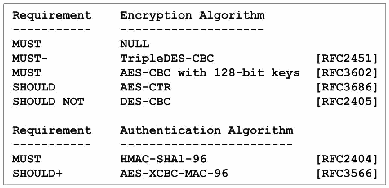
図5-4. IPsecプロトコル向け暗号化および認証アルゴリズム。2つの表からなる文字の一覧である。「要件／暗号化アルゴリズム」: MUST NULL、MUST- TripleDES-CBC [RFC2451]、MUST AES-CBC with 128-bit keys [RFC3602]、SHOULD AES-CTR [RFC3686]、SHOULD NOT DES-CBC [RFC2405]。「要件／認証アルゴリズム」: MUST HMAC-SHA1-96 [RFC2404]、SHOULD+ AES-XCBC-MAC-96 [RFC3566]。
Figure 5-4. Encryption and Authentication Algorithms for the IPsec Protocol
図5-4. IPsecプロトコル向け暗号化および認証アルゴリズム
•RFC 4306, Internet Key Exchange (IKEv2) Protocol. This is the replacement for IKEv1. It removes many of the less used features and contains many simplifications and improvements. It does away with phases and modes and takes four messages to set up SAs initially. It has improved security, diagnostics, documentation, reliability, and performance. It also is integrated with items that were added only later to IKEv1: DHCPv6, NAT traversal, explicit congestion notification (ECN), extended sequence numbers (ESN) and extensible authentication protocol (EAP). Clarifications to IKEv2 were later published in RFC 4718; RFC 5996 consolidates and updates the two IKEv2 RFCs.
•RFC 4306「Internet Key Exchange（IKEv2）Protocol」。IKEv1の後継である。使用頻度の低い機能の多くを削除し、多数の簡素化と改善を含む。フェーズとモードを廃止し、最初のSAを設定するために4つのメッセージを使う。セキュリティ、診断、文書化、信頼性、性能が改善された。また、DHCPv6、NATトラバーサル、明示的輻輳通知（ECN）、拡張シーケンス番号（ESN）、拡張認証プロトコル（EAP）など、後からIKEv1に追加された機能も統合している。IKEv2の明確化事項は後にRFC 4718で公開され、RFC 5996は2つのIKEv2 RFCを統合して更新している。
•RFC 4307, Cryptographic Algorithms for Use in the Internet Key Exchange Version 2 (IKEv2). This RFC specifies the cryptographic algorithms for IKEv2, simplifying document maintenance. Figure 5-5 shows the REQUIRED and RECOMMENDED methods. These are the algorithms that IKEv2 uses to protect its own traffic. In addition, IKEv2 has the capability to negotiate the algorithms listed in Figure 5-4 for use in ESP and AH.
•RFC 4307「Cryptographic Algorithms for Use in the Internet Key Exchange Version 2（IKEv2）」。文書の保守を簡素化するため、IKEv2用暗号アルゴリズムを規定する。このRFCは、図5-5に必須（REQUIRED）および推奨（RECOMMENDED）の方式を示している。これらはIKEv2自身の通信を保護するために使われるアルゴリズムである。さらにIKEv2は、ESPおよびAHで使用するため、図5-4に示すアルゴリズムを交渉できる。
![Figure 5-5. Cryptographic Algorithms for Use in IKEv2. A boxed text listing in four sections. Diffie-Hellman Groups (Group Number, Bit Length, Defined In, Status): 2, 1024 MODP Group, [RFC2409], MUST-; 14, 2048 MODP Group, [RFC3526], SHOULD+. Encryption (Name, Number, Defined In, Status): ENCR_3DES, 3, [RFC2451], MUST-; ENCR_AES_CBC, 12, [RFC3602], SHOULD+. Pseudo-Random Function: PRF_HMAC_SHA1, 2, [RFC2104], MUST; PRF_AES128_CBC, 4, [RFC4434], SHOULD+. Message Integrity: AUTH_HMAC_SHA1_96, 2, [RFC2404], MUST.](assets/119/p0112-figure-01.png)
図5-5. IKEv2で使用する暗号アルゴリズム。枠で囲んだ4区分の文字の一覧である。Diffie-Hellmanグループ（グループ番号、ビット長、定義元、状態）: 2、1024 MODP Group、[RFC2409]、MUST-。14、2048 MODP Group、[RFC3526]、SHOULD+。暗号化（名前、番号、定義元、状態）: ENCR_3DES、3、[RFC2451]、MUST-。ENCR_AES_CBC、12、[RFC3602]、SHOULD+。擬似乱数関数: PRF_HMAC_SHA1、2、[RFC2104]、MUST。PRF_AES128_CBC、4、[RFC4434]、SHOULD+。メッセージ完全性: AUTH_HMAC_SHA1_96、2、[RFC2404]、MUST。
Figure 5-5. Cryptographic Algorithms for Use in IKEv2
図5-5. IKEv2で使用する暗号アルゴリズム
•RFC 4308, Cryptographic Suites for IPsec. After a long debate about whether individual cryptographic algorithms or entire suites should be defined with IKEv2 and IPsec, the decision was to use the former but provide specific guidance for the latter. This RFC provides such guidance by defining two suites, one oriented towards triply iterated Data Encryption Standard (3DES) and SHA-1, a second oriented towards the Advanced Encryption Standard (AES) in Cipher Block Chaining (CBC) Mode. Additional suites (RFC 4869) oriented towards elliptic curves and AES in Galois/Counter Mode have emerged more recently.
•RFC 4308「Cryptographic Suites for IPsec」。IKEv2およびIPsecで個々の暗号アルゴリズムを定義するか、アルゴリズム一式を定義するかについて長く議論した結果、前者を採用しつつ、後者には具体的な指針を示すことになった。このRFCは2つのスイートを定義して指針を提供する。1つは三重反復Data Encryption Standard（3DES）とSHA-1を中心とし、もう1つはCipher Block Chaining（CBC）モードのAdvanced Encryption Standard（AES）を中心とする。楕円曲線やGalois/Counter ModeのAESを中心とする追加スイートは、後にRFC 4869で公開された。
Work on IPsec standards has continued in several areas, and the following RFCs, categorized by subject, have been published:
IPsec標準の作業は複数の分野で継続しており、主題ごとに分類した次のRFCが公開されている。
Cryptographic methods
暗号方式
•RFC 2404 The Use of HMAC_SHA-1-96 within ESP and AH
•RFC 2404「The Use of HMAC_SHA-1-96 within ESP and AH」
•RFC 2410 The NULL Encryption Algorithm and its use with IPsec
•RFC 2410「The NULL Encryption Algorithm and its use with IPsec」
•RFC 2451 The ESP CBC-Mode Cipher Algorithms
•RFC 2451「The ESP CBC-Mode Cipher Algorithms」
•RFC 3526 More Modular Exponential (MODP) Diffie-Hellman groups for Internet Key Exchange (IKE)
•RFC 3526 More Modular Exponential (MODP) Diffie-Hellman groups for Internet Key Exchange (IKE)
•RFC 3566 The AES-XCBC-MAC-96 Algorithm and its use with IPsec
•RFC 3566「The AES-XCBC-MAC-96 Algorithm and its use with IPsec」
•RFC 3602 The AES-CBC Cipher Algorithm and its use with IPsec
•RFC 3602「The AES-CBC Cipher Algorithm and its use with IPsec」
•RFC 3686 Using Advanced Encryption Standard (AES) Counter Mode with IPsec Encapsulating Security Payload (ESP)
•RFC 3686「Using Advanced Encryption Standard (AES) Counter Mode with IPsec Encapsulating Security Payload (ESP)」
•RFC 4106 The Use of Galois/Counter Mode (GCM) in IPsec Encapsulating Security Payload (ESP)
•RFC 4106 The Use of Galois/Counter Mode (GCM) in IPsec Encapsulating Security Payload (ESP)
•RFC 4309 Using Advanced Encryption Standard (AES) CCM Mode with IPsec Encapsulating Security Payload (ESP)
•RFC 4309「Using Advanced Encryption Standard (AES) CCM Mode with IPsec Encapsulating Security Payload (ESP)」
•RFC 4359 The Use of RSA/SHA-1 Signatures within Encapsulating Security Payload (ESP) and Authentication Header (AH)
•RFC 4359「The Use of RSA/SHA-1 Signatures within Encapsulating Security Payload (ESP) and Authentication Header (AH)」
•RFC 4434 The AES-XCBC-PRF-128 Algorithm for the Internet Key Exchange (IKE) Protocol
•RFC 4434 The AES-XCBC-PRF-128 Algorithm for the Internet Key Exchange (IKE) Protocol
•RFC 4543 The Use of Galois Message Authentication Code (GMAC) in IPsec ESP and AH
•RFC 4543「The Use of Galois Message Authentication Code (GMAC) in IPsec ESP and AH」
•RFC 5903 Elliptic Curve Groups modulo a Prime (ECP Groups) for IKE and IKEv2
•RFC 5903「Elliptic Curve Groups modulo a Prime (ECP Groups) for IKE and IKEv2」
•RFC 4754 IKE and IKEv2 Authentication Using the Elliptic Curve Digital Signature Algorithm (ECDSA)
•RFC 4754 IKE and IKEv2 Authentication Using the Elliptic Curve Digital Signature Algorithm (ECDSA)
•RFC 4868 Using HMAC-SHA-256, HMAC-SHA-384, and HMAC-SHA-512 with IPsec
•RFC 4868「Using HMAC-SHA-256, HMAC-SHA-384, and HMAC-SHA-512 with IPsec」
•RFC 4869 Suite B Cryptographic Suites for IPsec
•RFC 4869「Suite B Cryptographic Suites for IPsec」
•RFC 4894 Use of Hash Algorithms in Internet Key Exchange (IKE) and IPsec
•RFC 4894「Use of Hash Algorithms in Internet Key Exchange (IKE) and IPsec」
•RFC 5114 Additional Diffie-Hellman Groups for Use with IETF Standards
•RFC 5114「Additional Diffie-Hellman Groups for Use with IETF Standards」
•RFC 5282 Using Authenticated Encryption Algorithms with the Encrypted Payload of the Internet Key Exchange version 2 (IKEv2) Protocol
•RFC 5282「Using Authenticated Encryption Algorithms with the Encrypted Payload of the Internet Key Exchange version 2 (IKEv2) Protocol」
•RFC 5930 Using Advanced Encryption Standard Counter Mode (AES-CTR) with the Internet Key Exchange version 2 (IKEv2) Protocol
•RFC 5930「Using Advanced Encryption Standard Counter Mode (AES-CTR) with the Internet Key Exchange version 2 (IKEv2) Protocol」
Three main ideas dominate the work on new cryptographic methods for IPsec:
IPsec向けの新しい暗号方式に関する作業では、主に次の3つの考え方が重視されている。
•Strengthen or find alternatives to hash-based Message Authentication Codes (MACs)
•ハッシュベースのメッセージ認証コード（MAC）を強化するか、代替方式を見つける。
In 2005, vulnerabilities were found to exist in SHA-1. NIST’s resulting policy42 on the use of hash functions recommends the use of alternative hash functions for digital signatures and other applications that require collision resistance; it requires the use of the SHA-2 family of hash functions (SHA-224, SHA-256, SHA-384 and SHA-512) instead of SHA-1 after 2010 for those applications. The use of SHA-1 for key derivation and random number generation is permitted beyond 2010.
2005年、SHA-1に脆弱性が存在することが判明した。これを受けたハッシュ関数の使用に関するNISTの方針42は、デジタル署名や衝突耐性を必要とするその他のアプリケーションについて、代替のハッシュ関数の使用を推奨しており、それらのアプリケーションでは2010年以降、SHA-1に代えてSHA-2ファミリーのハッシュ関数（SHA-224、SHA-256、SHA-384、SHA-512）を使用することを求めている。鍵導出と乱数生成へのSHA-1の使用は、2010年以降も認められている。
Since the SHA-1 vulnerabilities do not affect HMAC-SHA-1, its continued use is permissible. IPsec and IKE use HMAC-SHA-1, and not SHA-1, for integrity protection.
SHA-1の脆弱性はHMAC-SHA-1には影響しないため、その継続使用は許可されている。IPsecとIKEは、完全性保護にSHA-1ではなくHMAC-SHA-1を使用する。
•Use combined encryption-integrity modes for high-speed implementations
•高速な実装向けに、暗号化と完全性を組み合わせたモードを使う。
•Provide elliptic curve alternatives to public key cryptography based on modular arithmetic in IKEv1 and IKEv2.
•IKEv1およびIKEv2で、モジュラー演算に基づく公開鍵暗号に対する楕円曲線方式を提供する。
Of these, the following are likely to be the most important:
このうち、特に重要となる可能性が高いものを次に示す。
•RFC 4309 specifies the first combined mode encryption and integrity algorithm based on AES in Counter Mode. More recently, a more efficient construction called Galois Counter Mode has become an alternative choice. RFC 4543 describes its use for integrity protection in ESP and AH; RFC 4106 defines its use within ESP as a combined mode algorithm.
•RFC 4309は、AESカウンターモードに基づく最初の暗号化・完全性統合アルゴリズムを規定する。その後、Galois Counter Modeと呼ばれるより効率的な方式が代替として登場した。RFC 4543はESPおよびAHで完全性保護に使用する方法を説明し、RFC 4106はESP内で統合モードアルゴリズムとして使用する方法を定義する。
•RFC 4868 (HMAC-SHA-256), which is likely to be included in mainstream implementations
•RFC 4868（HMAC-SHA-256）。主流の実装に含まれる可能性が高い。
•RFCs 5903, 4754, and 4869, which are of interest to those who want to use IKEv2 with elliptic curve public key cryptography.
•RFC 5903、RFC 4754、RFC 4869。IKEv2で楕円曲線公開鍵暗号を使いたい場合に関係する。
Government agencies are required to use only those cryptographic algorithms that are also defined in a FIPS (Federal Information Processing Standard). Most of the mainstream algorithms defined for use within IPsec and IKE satisfy this requirement. The exception is AES-XCBC (both the MAC [Message Authentication Code] and the PRF [Pseudo-Random Function]), which is therefore not approved for government use.
政府機関は、FIPS（Federal Information Processing Standard）でも定義されている暗号アルゴリズムだけを使用することが求められる。IPsecおよびIKEで使用する主流のアルゴリズムの大半はこの要件を満たす。例外はAES-XCBC（MAC［Message Authentication Code］とPRF［Pseudo-Random Function］の両方）であり、政府機関での使用は承認されていない。
IKE and key management
IKEおよび鍵管理
•RFC 4430 Kerberized Internet Negotiation of Keys (KINK)
•RFC 4430「Kerberized Internet Negotiation of Keys (KINK)」
•RFC 4718 IKEv2 Clarifications and Implementation Guidelines
•RFC 4718「IKEv2 Clarifications and Implementation Guidelines」
•RFC 3706 A Traffic-Based Method of Detecting Dead Internet Key Exchange (IKE) Peers
•RFC 3706「A Traffic-Based Method of Detecting Dead Internet Key Exchange (IKE) Peers」
•RFC 3947 Negotiation of NAT-Traversal in the IKE
•RFC 3947「Negotiation of NAT-Traversal in the IKE」
•RFC 4304 Extended Sequence Number (ESN) Addendum to IPsec Domain of Interpretation (DOI) for Internet Security Association and Key Management Protocol (ISAKMP)
•RFC 4304 Extended Sequence Number (ESN) Addendum to IPsec Domain of Interpretation (DOI) for Internet Security Association and Key Management Protocol (ISAKMP)
RFCs 3706, 3947 and 4304 define additional features for IKEv1; for IKEv2, these features are included in RFC 4306 and its replacement, RFC 5996.
RFC 3706、RFC 3947、RFC 4304はIKEv1の追加機能を規定する。IKEv2では、これらの機能はRFC 4306およびその後継であるRFC 5996に含まれている。
Applications (routing, mobility, IPv6 over IPv4 tunneling)
アプリケーション（ルーティング、モビリティ、IPv4上のIPv6トンネリング）
•RFC 4552 Authentication/Confidentiality for OSPFv3
•RFC 4552「Authentication/Confidentiality for OSPFv3」
•RFC 4555 IKEv2 Mobility and Multihoming Protocol (MOBIKE)
•RFC 4555 IKEv2 Mobility and Multihoming Protocol (MOBIKE)
•RFC 4621 Design of the IKEv2 Mobility and Multihoming (MOBIKE) Protocol
•RFC 4621「Design of the IKEv2 Mobility and Multihoming (MOBIKE) Protocol」
•RFC 4877 Mobile IPv6 Operation with IKEv2 and the Revised IPsec Architecture
•RFC 4877「Mobile IPv6 Operation with IKEv2 and the Revised IPsec Architecture」
•RFC 4891 Using IPsec to Secure IPv6-in-IPv4 Tunnels
•RFC 4891「Using IPsec to Secure IPv6-in-IPv4 Tunnels」
The three applications all bear directly on IPsec with IPv6. For OSPF on IPv6 networks (which is called v3), integrity is specified, ESP is REQUIRED, and AH is OPTIONAL. IKEv2 Mobility and Multihoming Protocol (MOBIKE) defines an efficient way to move IPsec SAs when an address changes, which happens much more often in IPv6 because of mobility, multihoming, or renumbering. RFC 4877 brings IPv6 mobility up to date with the RFC 4301-series version of IPsec. Finally, RFC 4891 answers the question of what protocol stack and type of tunneling works best when IPv6 is tunneled through an IPv4 network, and IPsec is applied at the tunnel endpoints. Using Protocol 41 and ESP in transport mode is the easiest configuration to achieve this goal.
これら3つのアプリケーションはいずれもIPv6でのIPsecに直接関係する。IPv6ネットワーク上のOSPF（v3と呼ばれる）では、完全性が規定され、ESPが必須（REQUIRED）、AHが任意（OPTIONAL）である。IKEv2 Mobility and Multihoming Protocol（MOBIKE）は、アドレス変更時にIPsec SAを効率的に移動させる方法を定義する。モビリティ、マルチホーム化、番号付け変更のため、IPv6ではこのような変更がはるかに頻繁に起こる。RFC 4877はRFC 4301シリーズのIPsecに合わせてIPv6モビリティを更新する。最後に、RFC 4891はIPv4ネットワーク上でIPv6をトンネル化し、トンネル終端にIPsecを適用する場合、最適なプロトコルスタックとトンネリング方式は何かという問いに答えている。Protocol 41とESPトランスポートモードを使うのが、この目的を達成する最も簡単な構成である。
Management of security
セキュリティ管理
•RFC 4807 IPsec Security Policy Database Configuration MIB
•RFC 4807「IPsec Security Policy Database Configuration MIB」
PKI (Public Key Infrastructure) for IPsec and IKE
IPsecおよびIKE向け公開鍵基盤（PKI）
•RFC 4945 The Internet IP Security PKI Profile of IKEv1/ISAKMP, IKEv2, and PKIX
•RFC 4945「The Internet IP Security PKI Profile of IKEv1/ISAKMP, IKEv2, and PKIX」
•RFC 4809 Requirements for an IPsec Certificate Management Profile
•RFC 4809「Requirements for an IPsec Certificate Management Profile」
The use of Public Key Certificates, and the interpretation of their contents, has been a source of interoperability problems within IPsec and IKE. These RFCs attempt to pin down some of the details and enhance interoperability. However, they are not specific enough to eradicate these problems.
公開鍵証明書の使用とその内容の解釈は、IPsecおよびIKEにおける相互運用性の問題の原因となってきた。これらのRFCは詳細の一部を明確にし、相互運用性を高めようとしている。しかし、これらの問題を解消するには十分具体的ではない。
Weaker authentication and trust models
より弱い認証および信頼モデル
•RFC 5387 Problem and Applicability Statement for Better Than Nothing Security (BTNS)
•RFC 5387「Problem and Applicability Statement for Better Than Nothing Security (BTNS)」
•RFC 5386 Better-Than-Nothing-Security: An Unauthenticated Mode of IPsec
•RFC 5386「Better-Than-Nothing-Security: An Unauthenticated Mode of IPsec」
Recognizing that the lack of a global PKI for peer authentication is a major hurdle to the universal deployment of IPsec, the BTNS (Better Than Nothing Security) Working Group defined a method of using IPsec to protect communications, but allowing lesser methods of authentication (e.g., self-signed certificates or raw public keys). This provides protection to the communications themselves, but does not guarantee the identities of the peers. This approach could be used to protect communications for applications that provide their own peer authentication.
ピア認証のためのグローバルPKIが存在しないことがIPsecの全面的な普及を妨げる大きな障壁であるとの認識から、BTNS（Better Than Nothing Security）作業部会は、IPsecを使って通信を保護しつつ、より弱い認証方式（自己署名証明書や生の公開鍵など）を許容する方法を定義した。これにより通信自体は保護されるが、ピアの身元は保証されない。この方式は、独自のピア認証を提供するアプリケーションの通信を保護するために使用できる可能性がある。
The Applicability of IPsec
IPsecの適用可能性
•RFC 5406 Guidelines for Specifying the Use of IPsec Version 2
•RFC 5406「Guidelines for Specifying the Use of IPsec Version 2」
This contains useful advice for thinking through how IPsec can be applied, but the current version is not up to date with the most recent IPsec RFCs.
この文書にはIPsecの適用方法を検討するうえで有用な助言が含まれているが、現行版は最新のIPsec RFCを反映していない。
IP Compression (IPComp)
IP圧縮（IPComp）
•RFC 3173 IP Payload Compression (IPComp)
•RFC 3173「IP Payload Compression (IPComp)」
•RFC 2394 IP Payload Compression Using DEFLATE
•RFC 2394「IP Payload Compression Using DEFLATE」
•RFC 2395 IP Payload Compression Using LZS
•RFC 2395「IP Payload Compression Using LZS」
IP payload compression is especially useful when IPsec based encryption is applied to IP datagrams. Encrypting the IP datagram causes the data to be random in nature, rendering compression at lower protocol layers ineffective. If IKE is used to negotiate compression in conjunction with IPsec, compression can be performed prior to encryption.
IPペイロード圧縮は、IPsecベースの暗号化をIPデータグラムに適用する場合に特に有用である。IPデータグラムを暗号化するとデータがランダムな性質を帯びるため、下位プロトコル層で圧縮しても効果がない。IKEを使ってIPsecとともに圧縮を交渉する場合、暗号化の前に圧縮を実行できる。
APIs (Application Program Interfaces) for IPsec
IPsec向けAPI（アプリケーションプログラムインターフェース）
•RFC 5660 IPsec Channels: Connection Latching
•RFC 5660「IPsec Channels: Connection Latching」
A number of different API Internet Drafts have been proposed, but have not progressed to standards. One issue that needs to be resolved is how application program security policy and system security policy interact and can be aligned with each other.
複数の異なるAPI Internet Draftが提案されているが、標準化には至っていない。解決が必要な問題の1つは、アプリケーションプログラムのセキュリティポリシーとシステムのセキュリティポリシーがどのように相互作用し、整合できるかである。
IPsecME (IPsec Maintenance and Extensions)
IPsecME（IPsecの保守と拡張）
As IPsec and IKE have been deployed, operational issues, feature gaps and additional requirements have surfaced. The IPsecME working group was formed to address several of these issues, including:
IPsecとIKEの導入が進むにつれて、運用上の問題、機能の不足、追加要件が明らかになった。こうした問題のいくつかに対処するため、IPsecME作業部会が結成された。対象には次が含まれる。
•Combining the two IKEv2 RFCs (RFCs 4306 and 4718) into a single RFC, which includes other clarifications and corrections, without introducing changes to the underlying protocol. RFC 5996 replaces the two older IKEv2 RFCs.
•2つのIKEv2 RFC（RFC 4306および4718）を、基盤となるプロトコルに変更を加えず、その他の明確化と修正を含む単一のRFCに統合する。RFC 5996が以前の2つのIKEv2 RFCに置き換わる。
•Extending IKEv2 to allow IPv6 remote clients to negotiate all required parameters needed to conduct IPv6-based IPsec communications.
•IKEv2を拡張し、IPv6リモートクライアントがIPv6ベースのIPsec通信に必要なすべてのパラメーターを交渉できるようにする。
•Adding two new capabilities to IKEv2 that will improve performance for remote clients: allow a client to re-authenticate to a gateway in a streamlined manner, and permit a gateway to re-direct a remote client to another gateway.
•リモートクライアントの性能を改善するため、IKEv2に2つの新機能を追加する。クライアントがゲートウェイで簡素化された方法により再認証できるようにし、ゲートウェイがリモートクライアントを別のゲートウェイへリダイレクトできるようにする。
•Enabling IKEv2 peers to quickly detect the loss of IKEv2/IPsec SAs.
•IKEv2ピアがIKEv2/IPsec SAの喪失を迅速に検出できるようにする。
•Adding two new IKEv2 authentication methods: mutual EAP-based authentication and mutual authentication based on “weak” shared secrets.
•IKEv2に新たな認証方式を2つ追加する。相互EAPベース認証と、「弱い」共有シークレットに基づく相互認証である。
•Describing potential issues and requirements to enable gateway clusters to establish and use IKEv2 and IPsec SAs
•ゲートウェイクラスターがIKEv2およびIPsec SAを確立して使用するために必要となる可能性のある問題と要件を説明する。
•Facilitating the ability of middleboxes (firewalls, IDS/IPS systems, etc.) to distinguish unencrypted ESP packets (referred to as ESP-NULL) from encrypted ones. For networks whose policy dictates that end-to-end encrypted packets must be dropped, this will allow high-speed processing and inspection of the ESP-NULL packets. Two approaches have been defined: a heuristics-based approach, requiring no alteration to the communicating peers; and the addition of a new protocol number for ESP-NULL, a more straightforward approach, but one that does require changes to the base ESP protocol. The latter approach, called Wrapped ESP (WESP), can be used with or without encryption
•ミドルボックス（ファイアウォール、IDS/IPSシステムなど）が、暗号化されていないESPパケット（ESP-NULLと呼ぶ）と暗号化されたESPパケットを区別できるようにする。エンドツーエンド暗号化パケットを破棄するポリシーを持つネットワークでは、これによりESP-NULLパケットを高速に処理・検査できる。2つの方式が定義されている。通信するピアに変更を加えずに済むヒューリスティック方式と、ESP-NULL用の新しいプロトコル番号を追加する方式である。後者の方が単純だが、基盤となるESPプロトコルの変更が必要となる。Wrapped ESP（WESP）と呼ばれる後者の方式は、暗号化の有無にかかわらず使用できる。
•Writing an IPsec roadmap document to help novices navigate the interconnected and ever-increasing maze of IPsec- and IKE-related documents.
•初心者が、相互に関連し増え続けるIPsecおよびIKE関連文書の迷路を理解できるよう、IPsecロードマップ文書を作成する。
These capabilities have been addressed IPsecME Working Group documents. Most have already progressed to RFCs; the others are also expected to progress to RFCs:
これらの機能はIPsecME作業部会の文書で扱われてきた。大半はすでにRFCになっており、残りもRFCになる見込みである。
•RFC 5996 Internet Key Exchange Protocol: IKEv2
•RFC 5996「Internet Key Exchange Protocol: IKEv2」
•RFC 6071 IP Security (IPsec) and Internet Key Exchange (IKE) Document Roadmap
•RFC 6071「IP Security (IPsec) and Internet Key Exchange (IKE) Document Roadmap」
•RFC 5739 IPv6 Configuration in IKEv2
•RFC 5739「IPv6 Configuration in IKEv2」
•RFC 5685 Re-direct mechanism for IKEv2
•RFC 5685「Re-direct mechanism for IKEv2」
•RFC 5723 IKEv2 Session Resumption
•RFC 5723「IKEv2 Session Resumption」
•RFC 5840 Wrapped ESP for Traffic Visibility
•RFC 5840「Wrapped ESP for Traffic Visibility」
•RFC 5879 Heuristics for Detecting ESP-NULL packets
•RFC 5879「Heuristics for Detecting ESP-NULL packets」
•RFC 5998 An Extension for EAP-Only Authentication in IKEv2
•RFC 5998「An Extension for EAP-Only Authentication in IKEv2」
•RFC 6027 IPsec Cluster Problem Statement
•RFC 6027「IPsec Cluster Problem Statement」
•A Quick Crash Detection Method for IKE43
•「A Quick Crash Detection Method for IKE」43
•Protocol Support for High Availability of IKEv2/IPsec44
•「Protocol Support for High Availability of IKEv2/IPsec」44
5.3.5 Security Ramifications
5.3.5 セキュリティ上の影響
IPsec has a potentially significant impact on any network’s performance. Security policy enforcement, security association lookup, cryptographic operations, and key management are all necessary components of any network employing IPsec. In some studies, it was shown that a security gateway implementing IPsec required more resources for managing and looking up security associations than for performing cryptographic operations. The proper implementation and configuration of these components is, therefore, critical to network performance.
IPsecはネットワークの性能に大きな影響を与える可能性がある。IPsecを採用するネットワークでは、セキュリティポリシーの適用、セキュリティアソシエーションの検索、暗号処理、鍵管理がすべて必要である。いくつかの研究では、IPsecを実装するセキュリティゲートウェイは、暗号処理よりもセキュリティアソシエーションの管理と検索に多くのリソースを必要とすることが示されている。したがって、これらのコンポーネントを適切に実装・構成することが、ネットワーク性能にとって重要である。
IPsec can use IKE for entity authentication and key management based on pre-shared secret keys, but as the use of IPsec scales upward, this becomes unwieldy to deploy, keep secure, and update with fresh keys. To avoid this, public-key-based methods are recommended. A fully compliant X.509 PKI can be used, but this again involves expense and overhead—consider, for example, checking certificate revocation lists. Therefore, lighter-weight approaches based on some simplifications (i.e., security shortcuts) in the trust model have been proposed.
IPsecは事前共有シークレット鍵に基づくエンティティ認証と鍵管理にIKEを使用できるが、IPsecの規模が拡大すると、導入、安全な維持、新しい鍵への更新が扱いにくくなる。これを避けるため、公開鍵方式が推奨される。要件に完全準拠したX.509 PKIを利用できるが、証明書失効リストの確認などに費用とオーバーヘッドがかかる。そこで、信頼モデルを簡素化する（つまりセキュリティ上の近道となる）軽量な方式が提案されている。
IPsec is not the antidote for all security concerns with IPv6. It provides specific functionality such as cryptographic transforms to mitigate threats and vulnerabilities from the network layer up through the application layer. It does not replace other security functionality dealing with malware, spam, access controls, intrusion detection, and so forth.
IPsecはIPv6に関するすべてのセキュリティ上の懸念を解決する万能薬ではない。ネットワーク層からアプリケーション層までの脅威や脆弱性を緩和するため、暗号変換など特定の機能を提供する。マルウェア、スパム、アクセス制御、侵入検知などに対処する他のセキュリティ機能に取って代わるものではない。
IPsec may introduce a new security consideration insofar as it may thwart deep-packet inspection mechanisms between the two IPsec endpoints. Security tools such as intrusion detection systems and virus scanners cannot inspect encrypted packets. One viable approach in such cases is to distribute the intrusion detection services and virus scanners between network-based and host-based components.
IPsecは、2つのIPsecエンドポイント間のディープパケット検査を妨げる可能性があるという点で、新たなセキュリティ上の考慮事項をもたらす場合がある。侵入検知システムやウイルススキャナーなどのセキュリティツールは、暗号化されたパケットを検査できない。このような場合に考えられる方法の1つは、侵入検知サービスとウイルススキャナーをネットワークベースのコンポーネントとホストベースのコンポーネントに分散することである。
Denial of service attacks and covert channels exist with IPsec, but it is not clear that these are any worse than those using IP without IPsec. Also, IPsec can protect against certain TCP-level denial of service attacks like SYN floods, whereas session layer security protocols such as SSH and SSL/TLS cannot.
IPsecにはサービス妨害攻撃や隠れチャネルが存在するが、IPsecを使わないIP通信より悪化するかは明らかでない。また、IPsecはSYNフラッドなど特定のTCP層サービス妨害攻撃を防御できるが、SSHやSSL/TLSなどのセッション層セキュリティプロトコルにはできない。
The biggest security problem with IPsec seems to be faulty choices of security services or parameters. For example, vendor documentation may recommend using IPsec encryption without authentication in a way that is not consistent with up-to-date security guidelines.
IPsecの最大のセキュリティ問題は、セキュリティサービスやパラメーターの選択が不適切であることのように見える。たとえば、ベンダーの文書で、最新のセキュリティガイドラインに適合しない認証なしのIPsec暗号化が推奨される場合がある。
5.3.6 Unknown Aspects
5.3.6 未確定の事項
Although cryptographic security reduces the risks of networking, it cannot totally eliminate them. For example, a VPN implementation may have flaws in algorithms or software, it may be set up with insecure configuration settings and values, or it may be subject to denial of service attacks.
暗号学的セキュリティはネットワークのリスクを軽減するが、完全に排除することはできない。たとえばVPN実装のアルゴリズムやソフトウェアに欠陥があったり、安全でない構成設定や値が使われていたり、サービス妨害攻撃を受けたりする可能性がある。
One significant concern with IPsec in IPv6 has been incomplete vendor implementations of the protocol, which may result in end-to-end incompatibility. This situation is gradually improving.
IPv6でのIPsecに関する重大な懸念の1つは、ベンダー実装が不完全で、エンドツーエンドの非互換性につながる可能性があることである。この状況は徐々に改善している。
A debate exists over whether to use AH or ESP with NULL encryption for IPsec packets requiring integrity protection but not confidentiality. The standards themselves do not answer the question: IPv6 standards tend to recommend or require AH, whereas IPsec standards have downgraded AH from MUST implement to MAY implement. OSPFv3 originally specified AH, but this has been changed to ESP-NULL. Some implementations only provide ESP. AH has not been widely deployed. (The common IPv4 applications of IPsec—VPNs and secure remote access—usually provide confidentiality, so this question does not arise.) AH may also require more processing steps to compute or verify the integrity check value. On the other hand, one of the main arguments in favor of AH is that it makes it easier for devices such as packet filtering routers, firewalls, and intrusion detection systems to recognize plaintext and examine packets (because ESP-NULL transmits plaintext but gives no visible indication that the payload is unencrypted). As far as the cryptographic protection provided by AH versus ESP, it is difficult to discern any tangible difference when IPsec is used as intended. In some cases, AH may protect certain vulnerable parts of the header or extension headers, but these cases are rare, and in these few cases, ESP-NULL can achieve the same effect by being run in tunnel mode.
完全性保護は必要だが機密性は不要なIPsecパケットに、AHを使うか、NULL暗号化のESPを使うかについて議論がある。標準自体は問いに答えていない。IPv6標準はAHを推奨または要求する傾向がある一方、IPsec標準ではAHの要件がMUST implementから MAY implementへ引き下げられている。OSPFv3は当初AHを規定していたが、後にESP-NULLへ変更された。ESPしか提供しない実装もある。AHは広く導入されていない。（IPsecの一般的なIPv4アプリケーションであるVPNと安全なリモートアクセスでは通常機密性も提供されるため、この疑問は生じない。）AHでは完全性検査値の計算や検証に、より多くの処理手順が必要となる場合もある。一方、AHを支持する主な論拠の1つは、パケットフィルタリングルーター、ファイアウォール、侵入検知システムなどの装置が平文を認識してパケットを検査しやすくなることである（ESP-NULLは平文を送信するが、ペイロードが暗号化されていないことを示す情報は見えない）。AHとESPが提供する暗号保護を比較しても、IPsecを意図どおり使用する場合に実質的な違いを見分けるのは難しい。AHは脆弱なヘッダーの一部や拡張ヘッダーを保護できる場合があるが、そのようなケースはまれであり、該当する場合もトンネルモードのESP-NULLで同じ効果を得られる。
As IPv6 applications attempt to use IPsec for end-to-end security, more work will be needed on security APIs.
IPv6アプリケーションがエンドツーエンドセキュリティにIPsecを使おうとするにつれ、セキュリティAPIについてさらなる作業が必要となる。
IPsec also relies on some security infrastructure outside of the IPsec protocols for authentication. This can be based on shared secret keys, locally generated certificates, or an external public key infrastructure.
IPsecは、認証のためにIPsecプロトコルの外部にあるセキュリティ基盤にも依存する。共有シークレット鍵、ローカルで生成した証明書、または外部の公開鍵基盤に基づく場合がある。
Finally, some multicast issues, as noted above, remain open.
最後に、前述したように、マルチキャストに関するいくつかの問題は未解決のままである。
5.4 Secure Stateless Address Autoconfiguration and Neighbor Discovery
5.4 ステートレスアドレス自動構成と近隣探索の保護
Security for autoconfiguration and neighbor discovery protocols has always been a difficult topic, because it is naturally problematical to have pre-existing trust relationships with entities one has not yet “discovered” or to use security before address configuration.
自動構成および近隣探索プロトコルのセキュリティは、常に難しい話題である。まだ「発見」していない相手と事前に信頼関係を持つことや、アドレスを構成する前にセキュリティを使用することは、本質的に困難だからである。
Attacks against address configuration and address resolution protocols include spoofing or hijacking addresses, denial of service, propagating inaccurate information, forging unreachability conditions, redirecting traffic, disabling routers, advertising bogus prefixes, misrepresenting network parameters, and others. Most are directed at compromising the availability of the local network, but some may also target confidentiality or integrity of information.
アドレス構成およびアドレス解決プロトコルへの攻撃には、アドレスの偽装や乗っ取り、サービス妨害、不正確な情報の伝播、到達不能状態の偽造、トラフィックのリダイレクト、ルーターの無効化、偽のプレフィックスの通知、ネットワークパラメーターの虚偽表示などがある。大半はローカルネットワークの可用性を侵害しようとするが、情報の機密性や完全性を狙うものもある。
IPv4 networks have no means of stateless address autoconfiguration and perform neighbor discovery with the Address Resolution Protocol (ARP). ARP has no cryptographic security mechanisms, and it has always been subject to spoofing, cache poisoning, and denial-of-service attacks. Most installations cope with this by restricting ARP to local links (it is inherently a non-routable Layer 2 protocol) and policing the nodes on such local links. This has become increasingly difficult with wireless LANs. IPv6 neighbor ND is implemented with ICMPv6, and it is both possible and desirable to make sure such messages are not routed; since ND uses the “All Nodes Addresses” link local multicast group, by default these messages are not routed. It is also possible to apply cryptographic security to these messages.
IPv4ネットワークにはステートレスアドレス自動構成の手段がなく、近隣探索はAddress Resolution Protocol（ARP）で行う。ARPには暗号学的なセキュリティ機構がなく、常に偽装、キャッシュポイズニング、サービス妨害攻撃の対象となってきた。大半の導入環境では、ARPをローカルリンクに制限し（ARPは本質的にルーティング不能なレイヤー2プロトコルである）、そのローカルリンク上のノードを監視・取り締まることで対処している。無線LANではこれがますます難しくなっている。IPv6の近隣探索（ND）はICMPv6で実装されており、このようなメッセージがルーティングされないようにすることは可能であり、かつ望ましい。NDは「All Nodes Addresses」リンクローカルマルチキャストグループを使うため、既定ではこれらのメッセージはルーティングされない。これらのメッセージに暗号学的なセキュリティを適用することも可能である。
The security requirements for autoconfiguration and ND vary according to the type of network used. For a more detailed discussion and examples of this, see RFC 3756. For example:
自動構成およびNDに必要なセキュリティは、使用するネットワークの種類によって異なる。詳しい議論と例についてはRFC 3756を参照。たとえば次のとおりである。
•On a closed network within an enterprise, all users may trust each other to behave properly, and any malfunctioning nodes can be removed and corrected administratively. Cryptographically securing autoconfiguration and ND in this type of network may not be essential, but it could limit the damage that a corrupted (e.g. by malware) or malfunctioning node can do.
•企業内の閉じたネットワークでは、すべてのユーザーが互いの適切な行動を信頼でき、誤動作するノードは管理者が取り除いて修正できる。この種類のネットワークでは、自動構成とNDに暗号学的セキュリティを適用することは不可欠ではない場合があるが、侵害された（たとえばマルウェアによる）ノードや誤動作するノードが引き起こせる被害を制限できる。
•In a college dormitory or on a network offering public access, for example, users depend on a trustworthy router to provide service, but they have little knowledge or control over what other users are doing. In this case, cryptographic authentication of autoconfiguration and ND represents a substantial improvement in robustness and security.
•たとえば大学寮や一般公開ネットワークでは、ユーザーは信頼できるルーターによるサービスを頼りにする一方、他のユーザーが何をしているかについての知識や制御はほとんどない。この場合、自動構成とNDを暗号学的に認証することで、堅牢性とセキュリティが大きく向上する。
•In ad hoc networks, none of the nodes may start out trusting each other. In this case, it is likely that no basis for authentication exists, and there is no pre-existing key management infrastructure. Nevertheless, limited cryptographic protection can be provided.
•アドホックネットワークでは、最初はどのノードも互いを信頼していない場合がある。この場合、認証の根拠がなく、既存の鍵管理基盤も存在しない可能性が高い。それでも、限定的な暗号保護は提供できる。
IPv6 Autoconfiguration and ND use ICMPv6 messages to perform several different tasks. The main ICMPv6 message types are:
IPv6の自動構成とNDでは、ICMPv6メッセージを使って複数の異なるタスクを実行する。主なICMPv6メッセージタイプは次のとおりである。
•NS (Neighbor Solicitation)
•NS（Neighbor Solicitation）
•NA (Neighbor Advertisement)
•NA（Neighbor Advertisement）
•RS (Router Solicitation)
•RS（Router Solicitation）
•RA (Router Advertisement)
•RA（Router Advertisement）
•Redirect
•Redirect
•Router renumbering
•ルーターの番号付け変更
This section defines and discusses two cryptographic security mechanisms for autoconfiguration and ND—IPsec and SEND.
この節では、自動構成とND向けの2つの暗号学的セキュリティ機構、IPsecとSENDを定義し、説明する。
Alternative methods for providing security to ND communications include: 802.1X45, IEEE macsec46, and an IETF layer 2 solution called RA-Guard47.
ND通信を保護する代替方式として、802.1X45、IEEE MACsec46、およびIETFのレイヤー2ソリューションであるRA-Guard47がある。
5.4.1 Using IPsec to Secure Autoconfiguration and ND
5.4.1 IPsecによる自動構成とNDの保護
IPsec can, in principle, be used to secure any IP packet, but deciding how IPsec should cover all of the different types and uses of ICMPv6 messages and actually specifying this behavior are not simple tasks. Certain ICMPv6 messages are used with mobility or multicast; others, such as the following, report error conditions or simply provide information:
IPsecは原理上あらゆるIPパケットを保護できるが、さまざまな種類と用途のICMPv6メッセージをすべてどのように保護対象とするかを決め、その動作を実際に仕様化するのは容易ではない。一部のICMPv6メッセージはモビリティやマルチキャストで使われる。他のメッセージは、次のようにエラー状態を報告するか、単に情報を提供する。
•Destination unreachable
•宛先到達不能
•Packet too big (also used to determine PMTU)
•パケットサイズ超過（PMTUの判定にも使用）
•Time exceeded
•時間超過
•Parameter problem
•パラメーター問題
•Echo request
•Echo要求
•Echo reply.
•Echo応答。
These are not used in autoconfiguration or ND; securing these messages is covered in Section 3.5.2 and 3.5.3. This section covers:
これらは自動構成やNDでは使われない。これらのメッセージの保護については3.5.2節および3.5.3節で扱う。この節では次を扱う。
•NS and NA messages used in stateless address autoconfiguration (SLAAC) and Duplicate Address Detection (DAD)
•ステートレスアドレス自動構成（SLAAC）および重複アドレス検出（DAD）で使われるNSおよびNAメッセージ
•RS and RA messages used for router and prefix discovery
•ルーターとプレフィックスの検出に使われるRSおよびRAメッセージ
•NS and NA messages used for address resolution and reachability detection
•アドレス解決と到達性検出に使われるNSおよびNAメッセージ
•Redirect and router renumbering messages sent by routers.
•ルーターが送信するRedirectおよびルーター番号付け変更メッセージ。
These messages use a variety of types of addressing. Most of them use a unicast source address, but autoconfiguration RS and NS messages also use the unspecified all-zero address (::). Both unicast and multicast destination addresses are used.
これらのメッセージではさまざまな種類のアドレスが使われる。大半はユニキャスト送信元アドレスを使うが、自動構成のRSおよびNSメッセージでは未指定の全ゼロアドレス（::）も使う。ユニキャスト宛先アドレスとマルチキャスト宛先アドレスの両方が使われる。
RFCs 2461 and 2462 (which have now been replaced by RFC 4861 and RFC 4862, respectively) suggest that IPsec AH SAs be used to secure these messages. No specific attention was given to what SAs are needed, how they are established, or how they work (or do not work) with IPsec’s key management protocols (IKEv1 and later IKEv2). Subsequent attempts to use this mechanism ran into problems:
RFC 2461およびRFC 2462（現在はそれぞれRFC 4861およびRFC 4862に置き換えられている）では、これらのメッセージを保護するためにIPsec AH SAを使用することが提案されている。どのSAが必要か、どのように確立するか、IPsecの鍵管理プロトコル（IKEv1および後継のIKEv2）とどのように連携するか（または連携しないか）について、具体的な検討はなかった。その後、この機構を使用しようとした際に次の問題が生じた。
•It is impossible to use IKE without getting into an endless spiral. IKE uses UDP, which requires ND, which in turn uses the very same ICMPv6 messages IPsec was supposed to protect. Also, IKE does not work with multicast addresses.
•無限の循環に陥らずにIKEを使用することは不可能である。IKEはUDPを使用し、UDPにはNDが必要である。NDは、IPsecが保護するはずだった同じICMPv6メッセージを使用する。また、IKEはマルチキャストアドレスでは機能しない。
•A large number of security associations needs to be pre-established.
•多数のセキュリティアソシエーションを事前に確立しておく必要がある。
•AH was downgraded to MAY in RFC 4301 and is not included in many implementations.
•RFC 4301でAHは MAY に格下げされており、多くの実装に含まれていない。
Nevertheless, it is possible to use IPsec to protect autoconfiguration and ND if security associations can be set up beforehand. One approach that has been suggested is to use pre-established security associations from a known set of temporary IPv6 addresses to secure setting up longer-lived addresses and then new IPsec security associations for these addresses. This process needs to cover certain multicast addresses (All Nodes, Solicited Node for each unicast address, All Routers, etc.) as well as unicast. Although this has been described at a high level, little practical experience working out all of the details exists. The following limitations appear to be unavoidable:
それでも、セキュリティアソシエーションを事前に設定できるのであれば、IPsecを使って自動構成とNDを保護することは可能である。提案されている方法の1つは、既知の一時IPv6アドレスの集合からの事前確立済みセキュリティアソシエーションを使って、より長期間使うアドレスの設定と、それに続くそれらのアドレス向けの新しいIPsecセキュリティアソシエーションの設定を保護することである。このプロセスでは、ユニキャストだけでなく、特定のマルチキャストアドレス（All Nodes、各ユニキャストアドレスに対応するSolicited Node、All Routersなど）も対象にする必要がある。これは概要レベルでは説明されているものの、すべての詳細を詰めた実地経験はほとんど存在しない。次の制約は避けられないように見える。
•Manual keying must be used, and IKE cannot be used.
•手動鍵設定を使わなければならず、IKEは使用できない。
•All interfaces and their hardware (MAC) addresses must be known ahead of time.
•すべてのインターフェースとそのハードウェア（MAC）アドレスを事前に把握しておかなければならない。
•Replay detection must be turned off.
•リプレイ検出を無効にしなければならない。
•A fixed set of IPsec parameters must be used without any negotiation.
•交渉を行わず、固定された一組のIPsecパラメーターを使わなければならない。
5.4.2 Using SEND to Secure Autoconfiguration and ND
5.4.2 SENDによる自動構成とNDの保護
SEND was designed by operators of networks who needed to secure IPv6 autoconfiguration and ND but found IPsec to be an impractical choice. Many of these were mobile service operators incorporating IPv6 into third generation mobile handsets.
SENDは、IPv6の自動構成とNDを保護する必要がある一方、IPsecは実用的でないと判断したネットワーク運用者によって設計された。その多くは、第3世代携帯端末にIPv6を組み込むモバイルサービス事業者であった。
The core ideas behind SEND are:
SENDの中核となる考え方は次のとおりである。
•Use CGAs.
•CGAを使用する。
•Add an RSA Signature option to ICMPv6.
•ICMPv6にRSA署名オプションを追加する。
•Define trust anchors capable of attesting for public keys of routers.
•ルーターの公開鍵を証明できるトラストアンカーを定義する。
•Add Nonce and Timestamp options to ICMPv6 for replay detection.
•リプレイ検出のため、ICMPv6にNonceおよびTimestampオプションを追加する。
Nodes are configured with public keys of trust anchors, which let them verify signatures on RAs. By using CGAs and signatures, addresses cannot be spoofed or hijacked. Also, certain denial-of-service attacks are prevented. Replay attacks can be detected by examining timestamps on multicast messages and verifying that nonces are returned in two-way exchanges.
ノードにはトラストアンカーの公開鍵が構成されており、それを使ってRAの署名を検証できる。CGAと署名を使うことで、アドレスの偽装や乗っ取りを防止できる。また、特定のサービス妨害攻撃も防止される。マルチキャストメッセージのタイムスタンプを調べ、双方向の交換でnonceが返されることを検証すれば、リプレイ攻撃を検出できる。
In ad hoc networks, using CGAs and signatures ensures that messages from the same address really came from the same entity, and no one else has stolen the address.
アドホックネットワークでは、CGAと署名を使うことで、同じアドレスからのメッセージが実際に同じ主体から送られたものであり、他の誰もそのアドレスを盗用していないことが保証される。
5.4.3 Current Status and Unknown Aspects
5.4.3 現状と未確定の事項
Cryptographic protection for autoconfiguration and ND has not been widely used, so it remains to be seen whether they will become parts of generally accepted practices for IPv6 security.
自動構成とNDに対する暗号学的保護は広く使われていないため、IPv6セキュリティの一般に受け入れられた慣行の一部となるかどうかは、今後の状況を見守る必要がある。
SEND also has not been widely implemented or deployed. Issues reportedly holding back some vendors are intellectual property claims and licensing terms concerning CGAs.
SENDも広く実装または導入されていない。一部のベンダーの導入を妨げているとされる問題は、CGAに関する知的財産権の主張とライセンス条件である。
6. IPv6 Deployment
6. IPv6の導入
This section suggests approaches to a successful and secure IPv6 deployment. Although this document uses the term deployment, rather than transition, many of the methods and mechanisms described in this section are referred to as transition mechanisms; to avoid confusion, this document also uses the word transition in that context. The overarching goal during the process of IPv6 deployment should be to maintain functional parity with existing networks and services. This section addresses that goal. IPv6 deployment focuses on integrating IPv6 with an existing IPv4 environment while maintaining, if not enhancing, the existing level of security. It includes the following subjects:
この節では、IPv6を安全に導入して成功させるための方法を提案する。この文書では「移行」ではなく「導入」という語を使っているが、この節で述べる方法や機構の多くは移行機構と呼ばれる。混乱を避けるため、該当する文脈ではこの文書でも「移行」という語を使う。IPv6導入の過程では、既存ネットワークやサービスと同等の機能を維持することが包括的な目標となるべきである。この節ではその目標を扱う。IPv6導入では、既存のセキュリティレベルを維持、またはさらに向上させながら、既存のIPv4環境にIPv6を統合する。次の話題を含む。
•Security risks
•セキュリティリスク
•Addressing security
•セキュリティへの対処
•Transition mechanisms
•移行機構
•Transition planning
•移行計画
6.1 Security Risks
6.1 セキュリティリスク
This section provides an overview of risks organizations may face when moving from an IPv4 to IPv4/IPv6 and eventually IPv6 environment.
この節では、IPv4からIPv4/IPv6併用環境、さらにIPv6環境へ移行する際に組織が直面する可能性のあるリスクを概説する。
The deployment of IPv6 is inevitable. The IPv4 address space is almost exhausted and the only long-term solution is to deploy IPv6. IPv6 is not backwards compatible with IPv4, which means organizations will have to change their network infrastructure and systems to deploy IPv6. Organizations should begin now to understand the risks and the risk mitigation strategies. Planning will enable an organization to make a smooth, secure and successful transition. Some general risks an organization may face include:
IPv6の導入は避けられない。IPv4アドレス空間はほぼ枯渇しており、長期的な解決策はIPv6を導入することだけである。IPv6にはIPv4との後方互換性がないため、導入には組織のネットワーク基盤とシステムの変更が必要となる。組織は今からリスクとリスク軽減策を理解し始めるべきである。計画を立てれば、円滑、安全、かつ成功する移行が可能になる。組織が直面する一般的なリスクには次が含まれる。
•The attacker community’s use of IPv6
•攻撃者コミュニティによるIPv6の利用
•Unauthorized deployment of IPv6 on existing IPv4 production networks
•既存のIPv4本番ネットワークへの無許可のIPv6導入
•Vulnerabilities present in IPv6, including “day zero” vulnerabilities that are inherent in any new or revised system
•IPv6に存在する脆弱性。新規または改訂されたシステムに本質的に存在する「ゼロデイ」脆弱性を含む。
•Complexity added by dual IPv4/IPv6 operations
•IPv4とIPv6のデュアル運用による複雑さの増加
•Immaturity of IPv6 security products and processes
•IPv6セキュリティ製品およびプロセスの未成熟さ
•Possible lack of vendor support.
•ベンダーサポートが不足する可能性。
6.1.1 Attacker Community
6.1.1 攻撃者コミュニティ
The attacker community is adapting to the IPv6 environment, posing a serious risk to all organizations connected to the Internet. The attacker community leverages IPv6 to infiltrate and attack both IPv4 and IPv6 networks. The publication of a United States Computer Emergency Readiness Team (US-CERT) whitepaper48 and the public release of IPv6-enabled attack tools49 in May 2005 demonstrate how the attacker community is attacking IPv6 implementations and using IPv6 to compromise systems.
攻撃者コミュニティはIPv6環境に適応しており、インターネットに接続するすべての組織に深刻なリスクをもたらしている。攻撃者コミュニティはIPv6を利用して、IPv4とIPv6の両方のネットワークに侵入し、攻撃している。2005年5月に米国コンピューター緊急事態対策チーム（US-CERT）がホワイトペーパー48を公開し、IPv6対応の攻撃ツール49が一般公開されたことは、攻撃者コミュニティがIPv6実装を攻撃し、IPv6を使ってシステムを侵害していることを示している。
The US-CERT whitepaper warned administrators that malware could use IPv6 for covert communications and tunnel traffic out of IPv4 networks. The US-CERT cited two causes in the whitepaper:
US-CERTのホワイトペーパーは、マルウェアがIPv6を使って秘密通信を行い、IPv4ネットワークからトラフィックをトンネルで外部に送信する可能性があるとして、管理者に警告した。US-CERTはホワイトペーパーで2つの原因を挙げている。
•Most current operating systems now support IPv6 by default.
•現在のほとんどのオペレーティングシステムは、IPv6を既定でサポートしている。
•Firewall and IDS equipment not configured to recognize IPv6 traffic could be bypassed.
•IPv6トラフィックを認識するよう構成されていないファイアウォールやIDS機器は、回避される可能性がある。
The warning that attackers could use IPv6 to tunnel traffic did not surprise the security community. As early as 200250, security researchers began documenting instances of attackers enabling IPv6 on compromised systems to evade IPv4 security controls.
攻撃者がIPv6を使ってトラフィックをトンネル化できるという警告は、セキュリティコミュニティにとって驚きではなかった。早くも2002年50には、侵害されたシステムで攻撃者がIPv6を有効にしてIPv4のセキュリティ制御を回避した事例を、セキュリティ研究者が記録し始めていた。
Also in 2005, a security researcher released an IPv6 attack toolkit at a security conference. This toolkit includes tools to attack ICMPv6, detect IPv6 hosts, and hijack autoconfiguration.
同じ2005年、あるセキュリティ研究者がセキュリティ会議でIPv6攻撃ツールキットを公開した。このツールキットには、ICMPv6を攻撃し、IPv6ホストを検出し、自動構成を乗っ取るツールが含まれている。
These two events demonstrated that the attacker community is taking advantage of IPv6 and is developing techniques and tools for exploitation. If an organization’s security controls are not already monitoring for IPv6 traffic, then IPv6 traffic to and from client devices may not be detectable by existing security controls. The mitigation for this risk is to reconfigure or deploy security controls to be both IPv4 and IPv6 aware.
この2つの出来事は、攻撃者コミュニティがIPv6を利用し、悪用の手法やツールを開発していることを示した。組織のセキュリティ制御がIPv6トラフィックを監視していない場合、クライアント機器との間のIPv6トラフィックを既存のセキュリティ制御で検知できない可能性がある。このリスクを軽減するには、セキュリティ制御をIPv4とIPv6の両方に対応するよう再構成するか、新たに導入する。
6.1.2 Unauthorized IPv6 Clients
6.1.2 無許可のIPv6クライアント
The Internet is actively deploying IPv6. IPv6 support is available for most operating systems. The commands to enable IPv6 on these operating systems are easily accessible and user-friendly. Using IPv6 autoconfiguration, a host can configure its own global address if it is able to find a prefix.
インターネットではIPv6の導入が進んでいる。ほとんどのオペレーティングシステムでIPv6を利用できる。これらのオペレーティングシステムでIPv6を有効にするコマンドは簡単に使え、ユーザーにも扱いやすい。IPv6自動構成を使えば、プレフィックスを見つけられるホストは自分自身のグローバルアドレスを構成できる。
Recent operating systems not only support IPv6 but also often enable IPv6 by default. This exposes organizations to vulnerabilities it may not be able to detect or mitigate. The following options are available to reduce this risk:
最近のオペレーティングシステムはIPv6をサポートするだけでなく、既定で有効にしていることも多い。その結果、組織は検知または軽減できない可能性のある脆弱性にさらされる。このリスクを低減するため、次の選択肢がある。
•Locate and disable any IPv6 enabled equipment.
•IPv6が有効になっている機器をすべて特定し、無効にする。
•Block IPv6 and IPv6 tunnel traffic at the perimeter.
•境界でIPv6およびIPv6トンネルのトラフィックをブロックする。
•Include IPv6 use policies in the organization’s security plan.
•組織のセキュリティ計画にIPv6の利用ポリシーを含める。
6.1.3 Vulnerabilities in IPv6
6.1.3 IPv6の脆弱性
The IETF regards security as an important design constraint when developing standards for IPv6. Work to address a lack of confidentiality and integrity in IPv4 has resulted in the development of IPsec. IPv6 with IPsec resolves these issues, but IPsec has not addressed other weaknesses found in the TCP/IP protocol stack.
IETFは、IPv6標準を策定する際にセキュリティを重要な設計制約とみなしている。IPv4における機密性と完全性の不足に対処する取り組みからIPsecが開発された。IPv6とIPsecはこれらの問題を解決するが、IPsecはTCP/IPプロトコルスタックに存在するその他の弱点には対処していない。
IPv6 does not solve many traditional layer 2 attacks like sniffing traffic, traffic flooding, man-in-the-middle attacks, rogue devices or Address Resolution Protocol (ARP) table overflow attacks. Some of these attacks are dealt with partially in IPv6 while other attacks, similar in nature, exploit different features.
IPv6は、トラフィック盗聴、トラフィックフラッディング、中間者攻撃、不正デバイス、Address Resolution Protocol（ARP）テーブルのオーバーフロー攻撃など、従来の多くのレイヤー2攻撃を解決しない。IPv6で部分的に対処される攻撃もあれば、同様の性質を持ちながら異なる機能を悪用する攻撃もある。
Although most modern operating systems have supported IPv6 since at least 2003, the protocol stacks of these operating systems have not been fully proven. A review of the National Vulnerabilities Database (NVD)51 shows stack vulnerabilities in most major operating systems. As new vulnerabilities are exposed, vendors will release updates. With any new code, vendors will need time to stabilize or harden their code. When deploying IPv6, an organization should understand that the code used in the IPv6 protocol stacks could be relatively new.
ほとんどの最新オペレーティングシステムは、少なくとも2003年以降IPv6をサポートしているが、これらのオペレーティングシステムのプロトコルスタックは十分に実証されていない。National Vulnerabilities Database（NVD）51を確認すると、主要なオペレーティングシステムの大半にスタックの脆弱性が存在する。新しい脆弱性が明らかになると、ベンダーは更新を公開する。新しいコードでは、安定化または強化に時間が必要となる。IPv6を導入する組織は、IPv6プロトコルスタックで使われるコードが比較的新しい可能性を理解すべきである。
IPv4 Layer 2 and layer 3 attacks are possible because IPv4 assumes all network nodes will behave in a trustworthy manner. IPv4 uses ARP to associate physical addressing to logical addressing.
IPv4では、すべてのネットワークノードが信頼できる動作をするという前提があるため、レイヤー2およびレイヤー3の攻撃が可能である。IPv4はARPを使って物理アドレスと論理アドレスを対応付ける。
This assumption allowed attacks that interfered with IP address resolution and the association of physical addresses with logical addresses. As discussed in Section 3.5.2, IPv6 does not use ARP to map IP addresses to physical interfaces. Instead, IPv6 uses ICMPv6. IPv6 uses ICMP for neighbor discovery and stateless address autoconfiguration processes that associate physical and logical addresses. IPv6 is still vulnerable to layer 3 attacks. A type of layer 3 attack is the host initialization attack. Three common host initialization attacks are:
この前提により、IPアドレス解決や物理アドレスと論理アドレスの対応付けを妨害する攻撃が可能になった。3.5.2節で説明したように、IPv6はIPアドレスを物理インターフェースに対応付けるためにARPを使わず、代わりにICMPv6を使う。IPv6はICMPを近隣探索とステートレスアドレス自動構成の処理に使い、物理アドレスと論理アドレスを対応付ける。IPv6もレイヤー3攻撃に対して脆弱である。レイヤー3攻撃の一種にホスト初期化攻撃がある。一般的なホスト初期化攻撃は次の3つである。
•Neighbor Solicitation (NS). For neighbor discovery, a client node sends an NS message. The problem is that any node can claim to be any other node on the LAN. An attacker can falsify a NS message with their MAC address and the fake IP address. This technique is similar to ARP spoofing in IPv4 and only works on link-local.
•Neighbor Solicitation（NS）。近隣探索では、クライアントノードがNSメッセージを送信する。問題は、LAN上のどのノードも別のノードになりすませることである。攻撃者は自分のMACアドレスと偽のIPアドレスを使ってNSメッセージを偽造できる。この手法はIPv4のARP偽装に似ており、リンクローカル上でのみ機能する。
•Router Solicitation (RS). With stateless address autoconfiguration, the client node sends an RS message. Like the NS attack, any node can claim to be the default router and subvert the initialization process. These attacks are link-local scoped.
•Router Solicitation（RS）。ステートレスアドレス自動構成では、クライアントノードがRSメッセージを送信する。NS攻撃と同様、どのノードでもデフォルトルーターになりすまして初期化プロセスを妨害できる。これらの攻撃はリンクローカルの範囲内で起こる。
•Duplicate Address Detection (DAD) Process. When a node attempts to configure its link-local address, it runs DAD. An attacker can cause a denial of service attack by responding to a DAD request. As a result, the victim’s interface will fail to initialize.
•重複アドレス検出（DAD）プロセス。ノードがリンクローカルアドレスを構成しようとすると、DADを実行する。攻撃者がDAD要求に応答してサービス妨害攻撃を行うことができる。その結果、被害者のインターフェースは初期化に失敗する。
The subnet size in IPv6 can present its own security challenges. These challenges are discussed in RFC 5157, IPv6 Implications for Network Scanning. The subnet size is much larger than it was in IPv4; a default subnet can have 264 addresses. The issues with scanning an address space this large was discussed in Section 2.4. Subnet size and resulting lengthy scan times are often presented as security features since they will slow down a malicious scanner or the propagation of malicious logic. The subnet size, however, makes it difficult for network and system administrators to manage assets. Attackers and administrators need to rely on other discovery techniques like layer 2 discovery and DNS to find hosts. The large address space makes it more difficult to find rogue hosts, possibly causing administrators to rely on passive discovery techniques. Administrators may need to resort to predictable or sequential numbering schemas for device addressing.
IPv6のサブネットサイズ自体がセキュリティ上の課題となることがある。これらの課題はRFC 5157「IPv6 Implications for Network Scanning」で議論されている。IPv6のサブネットはIPv4よりはるかに大きく、既定のサブネットには2^64個のアドレスが含まれる。このような大きなアドレス空間のスキャンに関する問題は2.4節で説明した。サブネットサイズが大きく、スキャンに長時間かかることは、悪意あるスキャナーや悪意あるコードの拡散を遅らせるため、セキュリティ機能として提示されることが多い。しかし、サブネットサイズが大きいと、ネットワーク管理者やシステム管理者が資産を管理しにくくなる。攻撃者と管理者はいずれも、ホストを見つけるためにレイヤー2探索やDNSなど他の探索技術に頼る必要がある。広大なアドレス空間では不正ホストの発見も難しくなり、管理者が受動的な探索方法に依存する可能性がある。管理者は、予測可能な番号付けや連番の番号付けをデバイスアドレスに使わざるを得ない場合がある。
To mitigate most layer 3 vulnerabilities, administrators should consider using fixed addressing or DHCPv6 with DHCP rogue detection instead of stateless address autoconfiguration. Autoconfiguration and ND can be secured with SEND. More information on SEND is available in Section 5.4.2. Layer 2 discovery, 802.1x based network access control, and good configuration management practices will help to mitigate layer 3 vulnerabilities.
レイヤー3の脆弱性の大半を軽減するため、管理者はステートレスアドレス自動構成の代わりに、固定アドレス指定または不正DHCP検知機能を備えたDHCPv6の使用を検討すべきである。自動構成とNDはSENDで保護できる。SENDの詳細は5.4.2節を参照。レイヤー2探索、802.1Xベースのネットワークアクセス制御、適切な構成管理の実施も、レイヤー3の脆弱性軽減に役立つ。
The deployment of IPv6 reinforces the basic security lessons learned with IPv4. These security practices include defense in depth, diversity, patching, configuration management, access control, and system and network administrator best practices. Good security practices remain unchanged with the deployment of IPv6. Good security practices will reduce exposure and recovery time in case of a security event.
IPv6の導入によって、IPv4で学んだ基本的なセキュリティ上の教訓が改めて重要になる。セキュリティ対策には、多層防御、多様性、パッチ適用、構成管理、アクセス制御、システムおよびネットワーク管理者のベストプラクティスが含まれる。IPv6を導入しても適切なセキュリティ対策は変わらない。適切なセキュリティ対策によって、セキュリティ事象が発生した場合のリスクへの露出と復旧時間を低減できる。
6.1.4 Dual Operations
6.1.4 デュアル運用
An organization that deploys IPv6 may support IPv4 for legacy applications, services, and clients. This will result in a dual protocol environment and increased complexity. The risk is that an organization’s security infrastructure may not be aware of both protocols. Dual protocols will increase the complexity of the environment. Two protocols mean twice as many things can go wrong, and twice the number of configurations are required to install new equipment or change existing equipment. Attacks against upper layer protocols could use either the IPv4 or IPv6 stack to reach the client. Administrators will need to maintain the same level of coverage for both protocols to mitigate risks.
IPv6を導入する組織は、レガシーアプリケーション、サービス、クライアントのためにIPv4もサポートする場合がある。その結果、デュアルプロトコル環境となり、複雑さが増す。組織のセキュリティ基盤が両方のプロトコルを認識していない可能性がリスクとなる。デュアルプロトコルによって環境の複雑さは増加する。プロトコルが2つあれば問題の起こり得る要素も2倍になり、新しい機器の導入や既存機器の変更に必要な構成も2倍になる。上位層プロトコルに対する攻撃は、IPv4またはIPv6のスタックを使ってクライアントに到達する可能性がある。リスクを軽減するには、管理者は両方のプロトコルで同じレベルの対策範囲を維持する必要がある。
6.1.5 Perceived Risk
6.1.5 認識されるリスク
A misconception about IPv6 is that IPv6 by itself introduces many more security risks than the IPv4 protocol. Perceived risk can cause an organization to delay deployment despite the fact that IPv6 enabled equipment is already on hand. As discussed in Section 2.4 of this document, IPv6 is no more or less secure than IPv4. General security concepts are the same for both IP protocols. However, it will take time to acquire the level of operational experience and practical deployment solutions that have been developed for IPv4 over the years.
IPv6に関する誤解の1つは、IPv6自体がIPv4よりはるかに多くのセキュリティリスクをもたらすというものである。認識されるリスクによって、IPv6対応機器をすでに保有しているにもかかわらず、組織が導入を遅らせることがある。この文書の2.4節で説明したように、IPv6の安全性はIPv4より高くも低くもない。一般的なセキュリティ概念は両方のIPプロトコルで同じである。ただし、長年にわたってIPv4向けに確立されてきた運用経験と実際の導入方法を身につけるには時間がかかる。
6.1.6 Vendor Support
6.1.6 ベンダーサポート
Many security vendors are waiting for customer demand before implementing support for IPv6, while customers are waiting for vendors to support IPv6 before purchasing software and systems. This has resulted in a “chicken and egg” problem. While some vendors fully support IPv6, many do not support IPv6 at all or only offer limited support.
多くのセキュリティベンダーは、顧客からの需要が出るまでIPv6対応を実装せず、顧客はベンダーがIPv6をサポートするまでソフトウェアやシステムを購入しない。このため「鶏が先か、卵が先か」という問題が生じている。IPv6を完全にサポートするベンダーもあるが、IPv6をまったくサポートしない、または限定的にしかサポートしないベンダーも多い。
Organizations need to analyze their existing IPv4 security infrastructure and develop baseline requirements that an IPv6 infrastructure must meet to achieve the same or better security as their IPv4 environments. New base requirements may be added to address IPv6-only requirements or deficiencies in the existing environment. Some existing IPv4 equipment may support both IPv4 and IPv6 requirements, but organizations should plan to evaluate products with IPv6 support to supplement and/or replace existing equipment or bridge security gaps. Use the developed baseline security requirements to evaluate IPv6 security products. Product evaluation, selection and procurement can slow down the deployment schedule for IPv6. Organizations planning to deploy IPv6 should begin a dialog with their security vendors to support IPv6 as early as possible.
組織は既存のIPv4セキュリティ基盤を分析し、IPv4環境と同等以上のセキュリティを実現するためにIPv6基盤が満たすべきベースライン要件を策定する必要がある。IPv6固有の要件や既存環境の不足に対処するために、新たなベースライン要件を追加してもよい。既存のIPv4機器の一部はIPv4とIPv6の両方の要件をサポートしている場合があるが、組織は、既存機器を補完および／または置き換えるため、あるいはセキュリティ上のギャップを埋めるために、IPv6対応製品を評価する計画を立てるべきである。策定したベースラインセキュリティ要件を使って、IPv6セキュリティ製品を評価する。製品の評価、選定、調達によってIPv6導入のスケジュールが遅れる可能性がある。IPv6導入を計画する組織は、IPv6をサポートしてもらうために、できるだけ早くセキュリティベンダーと対話を始めるべきである。
There are no industry standards that define IPv6 support. Organizations must understand they will be gaining and losing capabilities by deploying IPv6 and this will change their security posture. When vendors claim IPv6 support, it is up to the organization to evaluate whether they can function with the vendors’ level of IPv6 support. Often IPv6 support is not as complete as IPv4 support. An example of this is that many IPv6 security devices require IPv4 addressing for management and configuration.
IPv6サポートを定義する業界標準はない。IPv6を導入すると機能を獲得すると同時に失う場合もあり、組織のセキュリティ態勢が変わることを理解しなければならない。ベンダーがIPv6をサポートすると主張する場合、そのサポート水準で業務を遂行できるかどうかは組織が評価する必要がある。IPv6のサポートはIPv4ほど完全でないことが多い。たとえば、多くのIPv6セキュリティ機器では管理と構成にIPv4アドレスが必要である。
NIST has issued a special publication to define the capabilities IPv6 devices should support. NIST SP 500-267, A Profile for IPv6 in the U. S. Government – Version 1.0 21 will help organizations identify and select products that support IPv6. This document has a section dedicated to Network Protection Devices that discusses the capabilities firewalls, application firewalls, and intrusion detection systems should support. When evaluating these types of security devices, organizations should ensure the equipment complies with the profile. To facilitate that goal, NIST has launched a USGv6 (US Government IPv6) test program52 to verify the IPv6 conformance and interoperability of three classes of IPv6 devices: hosts, routers and Network Protection Devices (NPDs). Testing is conducted by independent laboratories; the laboratories are accredited to perform the testing by ISO-certified accreditors. Vendors declare products that have qualified as USGv6-compliant through the use of a Supplier's Declaration of Conformity (SDOC), which enables potential users of the product to identity the capabilities that were tested and the laboratory that conducted the testing.
NISTは、IPv6機器がサポートすべき機能を定義する特別刊行物を発行している。NIST SP 500-267『A Profile for IPv6 in the U. S. Government – Version 1.0』21は、IPv6をサポートする製品の特定と選定に役立つ。この文書にはネットワーク保護機器に関する節があり、ファイアウォール、アプリケーションファイアウォール、侵入検知システムがサポートすべき機能を説明している。これらの種類のセキュリティ機器を評価する際、組織は製品がこのプロファイルに準拠することを確認すべきである。この目的を支援するため、NISTは3種類のIPv6機器、すなわちホスト、ルーター、ネットワーク保護機器（NPD）のIPv6適合性と相互運用性を検証するUSGv6（米国政府IPv6）試験プログラム52を開始した。試験は独立試験機関が実施し、各機関はISO認証を受けた認定機関によって試験実施の認定を受けている。ベンダーは、供給者適合宣言書（SDOC）を使ってUSGv6準拠と認定された製品を申告する。これにより、製品の利用候補者は、試験対象となった機能と試験を実施した機関を確認できる。
NIST SP 500-267 does not address several classes of security devices including security event/log management, vulnerability/patch management, flow (NetFlow, SFlow), forensic tools, and authentication systems. Many vendors are able to process IPv6 traffic but lack capabilities to present the information effectively, require IPv4 enabled equipment for management, or are not as feature-rich. Organizations will have to develop capability profiles for their security tools.
NIST SP 500-267は、セキュリティイベント／ログ管理、脆弱性／パッチ管理、フロー（NetFlow、SFlow）、フォレンジックツール、認証システムなど、いくつかの種類のセキュリティ機器を対象としていない。多くのベンダー製品はIPv6トラフィックを処理できても、情報を効果的に提示する機能が不足している、管理用にIPv4対応機器を必要とする、または機能が限定されている。組織はセキュリティツール向けの機能プロファイルを策定する必要がある。
Organizations should accept the possibility that they may not achieve full parity in their IPv4 and IPv6 environments and take steps to mitigate associated risks.
組織は、IPv4環境とIPv6環境で完全な同等性を達成できない可能性を受け入れ、それに伴うリスクを軽減する措置を取るべきである。
6.2 Addressing Security
6.2 アドレス指定のセキュリティ
Administrators often see IP addressing as an operational issue. The numbering plan can also affect the organization’s security posture. The addressing structure defines the fundamental organization and function of a network. Consider the following components in the IPv6 addressing plan to reduce threats to security and privacy:
管理者はIPアドレス指定を運用上の問題とみなすことが多い。しかし、番号付け計画も組織のセキュリティ態勢に影響する。アドレス構造はネットワークの基本的な構成と機能を定める。セキュリティとプライバシーへの脅威を減らすため、IPv6アドレス指定計画では次の構成要素を検討する。
•Numbering plan
•番号付け計画
•Hierarchical addressing to support security segmentation
•セキュリティセグメンテーションを支える階層型アドレス指定
•Security implications of EUI-64 addresses
•EUI-64アドレスのセキュリティ上の影響
•Address management
•アドレス管理
•Privacy extension.
•プライバシー拡張。
These components are covered individually in the following sections.
これらの構成要素は、以下の各節で個別に扱う。
6.2.1 Numbering Plan
6.2.1 番号付け計画
The numbering plan describes how the organization subnets its IPv6 allocation. Most organizations would likely receive a /48 address block. This will allow the organization to support 65,000 subnets. Most of the RFCs concerned with numbering plans focus on address allocations above the site level, but the numbering plan designer should be familiar with the IETF’s intent and philosophy of IPv6 addressing. Some RFCs of interest include:
番号付け計画では、組織に割り当てられたIPv6アドレスをどのようにサブネット化するかを定める。多くの組織には/48のアドレスブロックが割り当てられる可能性が高い。これにより、組織は65,000個のサブネットをサポートできる。番号付け計画に関するRFCの多くはサイトレベルより上位のアドレス割り当てに焦点を当てているが、番号付け計画の設計者は、IPv6アドレス指定に関するIETFの意図と考え方を理解しておくべきである。関連するRFCの例を次に示す。
•RFC 3056 – Connection of IPv6 Domains via IPv4 Clouds
•RFC 3056「Connection of IPv6 Domains via IPv4 Clouds」
•RFC 3879 – Deprecating Site Local Addresses
•RFC 3879「Deprecating Site Local Addresses」
•RFC 4007 – IPv6 Scoped Address Architecture
•RFC 4007「IPv6 Scoped Address Architecture」
•RFC 4193 – Unique Local IPv6 Unicast Addresses
•RFC 4193「Unique Local IPv6 Unicast Addresses」
•RFC 4291 – IP Version 6 Addressing Architecture.
•RFC 4291「IP Version 6 Addressing Architecture」。
Guide; information for testing laboratories: NIST SP 500-273, USGv6 Test Methods: General Description and Validation.
ガイド；試験機関向けの情報：NIST SP 500-273『USGv6 Test Methods: General Description and Validation』。
RFC 5375, IPv6 Unicast Address Assignment Considerations, specifies best practices to follow when creating a numbering plan. Site allocations are normally provided as a /48, /56 or /64.
RFC 5375『IPv6 Unicast Address Assignment Considerations』は、番号付け計画の作成時に従うべきベストプラクティスを規定している。サイトへの割り当ては通常、/48、/56、または/64として提供される。
IPv6 Unicast Address Assignment Considerations addresses exceptions to this rule. It provides the following factors as considerations when designing a number plan:
『IPv6 Unicast Address Assignment Considerations』では、この規則の例外を扱い、番号付け計画を設計する際の考慮事項として次の要素を挙げている。
•Prefix aggregation
•プレフィックス集約
•Network growth
•ネットワークの拡張
•ULA (Unique Local Address) usage in large networks
•大規模ネットワークにおけるULA（ユニークローカルアドレス）の使用
•Sparse subnet numbering.
•サブネット番号の疎割り当て。
These design considerations are mostly operational concerns. A good numbering plan will streamline security operations by simplifying access control lists and firewall rule sets, identifying ownership of sites, links, and interfaces, and allowing for the rapid location of interfaces. IPv6 Unicast Address Assignment Considerations states that the lack of a numbering plan could slow down the deployment of IPv6.
これらの設計上の考慮事項は、主に運用上の問題である。適切な番号付け計画があれば、アクセス制御リストやファイアウォール規則群を簡素化し、サイト、リンク、インターフェースの所有者を特定し、インターフェースの所在を迅速に把握できるようにすることで、セキュリティ運用を効率化できる。『IPv6 Unicast Address Assignment Considerations』は、番号付け計画がないとIPv6の導入が遅れる可能性があると述べている。
6.2.2 Hierarchical Addressing to Support Security Segmentation
6.2.2 セキュリティセグメンテーションを支える階層型アドレス指定
Network provisioning is different in IPv6 than in IPv4. With IPv4, the administrator is concerned with creating subnets that can support enough available IP addresses for current and future requirements. The more subnets created, the greater the number of lost addresses due to broadcast and subnet addresses. With IPv6, the addresses are so large that a subnet can support current and future addressing requirements. Because address space availability is not an issue with IPv6, the administrator can concentrate on creating a hierarchical address-numbering plan and not on address availability. A numbering plan should support network segmentation. Most networks are composed of different communities with differing requirements for access and protection. By segmenting a network, administrators can meet these various groups’ requirements with access control rules to protect sensitive sites, links, and hosts.
IPv6のネットワークプロビジョニングはIPv4とは異なる。IPv4では、管理者は現在と将来の要件に十分な数の使用可能なIPアドレスをサポートできるサブネットの作成に気を配る。作成するサブネットの数が多いほど、ブロードキャストアドレスとサブネットアドレスのために失われるアドレスの数も増える。IPv6ではアドレスが非常に大きいため、1つのサブネットで現在と将来のアドレス指定要件を満たせる。IPv6ではアドレス空間の可用性が問題にならないため、管理者はアドレスの可用性ではなく、階層型のアドレス番号付け計画の作成に注力できる。番号付け計画はネットワークセグメンテーションを支えるべきである。多くのネットワークは、アクセスや保護に関する要件の異なる複数のコミュニティで構成されている。ネットワークを分割することで、管理者は機密性の高いサイト、リンク、ホストを保護するアクセス制御規則を使って、これらのさまざまなグループの要件を満たせる。
IPv6 distinguishes itself from IPv4 by identifying not just a host by an address but also by identifying the regional provider based on the global hierarchy enforced by the RIRs. The network prefix of an address identifies an RIR and an ISP providing the address. IPv6 allows 16 subnet bits (/48) for the Site-Level Aggregation Identifier (SLA). Organizations can use these 16 bits to create a site hierarchy. Some suggested methods of subnetting include:
IPv6は、アドレスによってホストを識別するだけでなく、RIRが適用するグローバルな階層に基づいて地域のプロバイダーも識別するという点でIPv4と異なる。アドレスのネットワークプレフィックスは、そのアドレスを提供するRIRとISPを識別する。IPv6ではサイトレベル集約識別子（SLA）用に16個のサブネットビット（/48）が利用できる。組織はこの16ビットを使ってサイト階層を作成できる。提案されているサブネット化の方法には次のものがある。
•Sequentially numbering subnets
•サブネットに連番を付ける
•VLAN (Virtual LAN) number
•VLAN（仮想LAN）番号
•AS number
•AS番号
•IPv4 subnet number
•IPv4サブネット番号
•Physical location (building, city, county, etc.)
•物理的な場所（建物、市、郡など）
•Functional unit (Human Resources [HR], Operations, Finance, etc.).
•機能部門（人事［HR］、運用、財務など）。
The goal of address hierarchy design is to give an organization the ability to group assets logically and to simplify administration and security. Government agencies should be aware that switching from an environment in which NAT (Network Address Translation) provides IP addresses to unique global IPv6 addresses could trigger a change in the FISMA system boundaries.
アドレス階層設計の目的は、資産を論理的にグループ化し、管理とセキュリティを簡素化できるようにすることである。政府機関は、NAT（Network Address Translation）がIPアドレスを提供する環境から、一意のグローバルIPv6アドレスを使う環境に切り替えると、FISMAシステム境界が変わる可能性があることを認識すべきである。
6.2.3 Problems with EUI-64 Addresses
6.2.3 EUI-64アドレスの問題
One of the more common ways to number interfaces is to use EUI-64 addresses. Using EUI-64 addressing can be a security risk. Autoconfiguration is one method that uses EUI-64 to generate an interface identifier (IID). Any machine that is trying to autoconfigure its own IP address will combine the network identifier with the EUI-64 address to create a unique address.
インターフェースに番号を付ける一般的な方法の1つは、EUI-64アドレスを使うことである。EUI-64アドレス指定はセキュリティリスクになり得る。自動構成ではEUI-64を使ってインターフェース識別子（IID）を生成する。自動的にIPアドレスを構成するマシンは、ネットワーク識別子とEUI-64アドレスを組み合わせて一意のアドレスを作成する。
The physical address of the interface (MAC address) is an input to the algorithm that generates EUI-64 addresses. RFC 4291 documents the methods for extracting the MAC address from the IPv6 address. Using a EUI-64 address could potentially reveal the make and model of a remote machine. An attacker could use that information to target attacks.
インターフェースの物理アドレス（MACアドレス）は、EUI-64アドレスを生成するアルゴリズムへの入力となる。RFC 4291にはIPv6アドレスからMACアドレスを抽出する方法が記載されている。EUI-64アドレスを使うと、リモートマシンのメーカーやモデルが明らかになる可能性がある。攻撃者はその情報を使って攻撃対象を絞り込める。
The use of the MAC address in EUI-64 addresses may make it easier for an attacker to scan a network. The MAC address is theoretically 48 bits in length, which yields a large number of host addresses (248). Address spaces of this size are difficult to scan. However, several factors reduce the effective size of this space. The first 24 bits of a MAC address are the Organizationally Unique Identifier (OUI), which identifies the hardware manufacturer. Two of these bits are reserved (for locally/globally administered addresses and unicast/multicast addresses), which still theoretically leaves 222 possibilities. However, as of this date (December 2010), fewer than 15,000 OUIs have been assigned; of these, most current devices will only use a few hundred. Often manufacturers allocate a limited range for the second 24 bits to specific models of equipment. Evaluating specific OUI codes and bit ranges greatly reduces the number of EUI-64 addresses. Scanning a network based on the 24 unknown address bits is equivalent to scanning an IPv4 /8 network, which takes only a few seconds.
EUI-64アドレスでMACアドレスを使うことにより、攻撃者はネットワークをスキャンしやすくなる場合がある。MACアドレスは理論上48ビット長であり、2^48個のホストアドレスに相当する。この規模のアドレス空間のスキャンは難しい。しかし、いくつかの要因によって実効的な空間は小さくなる。MACアドレスの先頭24ビットは、ハードウェアメーカーを識別するOrganizationally Unique Identifier（OUI）である。また、2ビットは（ローカル／グローバル管理アドレスおよびユニキャスト／マルチキャストアドレス用に）予約されているため、理論上の可能性は2^22通りとなる。それでも、この文書の日付（2010年12月）時点で割り当て済みのOUIは15,000未満であり、そのうち現在の機器の大半が使うのは数百程度にすぎない。メーカーは、機器モデルごとに残りの24ビットの限られた範囲を割り当てることも多い。特定のOUIコードとビット範囲を評価すれば、EUI-64アドレスの数を大幅に絞り込める。未知のアドレスビット24個を対象にネットワークをスキャンすることはIPv4 /8ネットワークのスキャンに相当し、数秒しかかからない。
There are several strategies to mitigate the risk. The preferred mitigation strategy is to block scanning activity at the network perimeter and to limit inbound connections to only those hosts and protocols providing services beyond the gateway. Other methods include generating addresses using a cryptographic (i.e., non-predictable) algorithm or assigning addresses with DHCPv6.
リスクを軽減する方法はいくつかある。推奨される軽減策は、ネットワーク境界でスキャン活動をブロックし、ゲートウェイの外部にサービスを提供するホストとプロトコルだけに受信接続を制限することである。他の方法には、暗号学的（つまり予測不能な）アルゴリズムでアドレスを生成することや、DHCPv6でアドレスを割り当てることがある。
6.2.4 Address Management
6.2.4 アドレス管理
Address management for IPv6 has security implications. Various mechanisms are available for address management:
IPv6のアドレス管理にはセキュリティ上の影響がある。アドレス管理には次のようなさまざまな方式を利用できる。
•Managed addresses
•管理アドレス
•Autoconfiguration
•自動構成
•Manual.
•手動。
DHCP is widely used in IPv4 networks to allocate managed addresses. IPv4 administrators understand its configuration and use. IPv6 provides a similar mechanism called DHCPv6. DHCPv6 RFC 3315 is not the same protocol as DHCP, but it does provide similar functionality. DHCPv6 is still susceptible to the same security vulnerabilities affecting DHCPv4. Using DHCPv6 has the following security advantages:
IPv4ネットワークでは、管理されたアドレスを割り当てるためにDHCPが広く使われている。IPv4の管理者はその構成方法と使用方法を理解している。IPv6にもDHCPv6と呼ばれる同様の機構がある。DHCPv6（RFC 3315）はDHCPと同じプロトコルではないが、同様の機能を提供する。DHCPv6も、DHCPv4に影響するのと同じセキュリティ脆弱性の影響を依然として受ける。DHCPv6の使用には次のセキュリティ上の利点がある。
•DHCPv6 can limit smaller ranges of valid IPv6 addresses. A smaller range allows administrators to implement better access control rules.
•DHCPv6では有効なIPv6アドレスの範囲をより小さく制限できる。範囲を小さくすれば、管理者はより適切なアクセス制御規則を実装できる。
•DHCPv6 allows administrators to identify managed clients more easily than autoconfigured or manually configured clients, and to follow their network usage through logging.
•DHCPv6を使うと、自動構成または手動構成のクライアントより、管理対象クライアントを容易に識別し、ログを通じてネットワーク利用状況を追跡できる。
With autoconfiguration, the host machine automatically generates an IPv6 address on its own. Susceptibility to host initialization attacks poses one security risk. With autoconfiguration, generated addresses are in a wider range of valid addresses. Administrators have to create broader rules for access control lists if they are using range rules. This allows more addresses for rogue devices to connect to the network, and scanning the network is harder. Benefits of using autoconfiguration include:
自動構成では、ホストマシンがIPv6アドレスを自動的に生成する。ホスト初期化攻撃を受けやすいことがセキュリティリスクの1つである。自動構成で生成されるアドレスは、より広い有効アドレス範囲から選ばれる。範囲に基づく規則を使う場合、管理者はアクセス制御リストの対象範囲を広げなければならない。これにより不正デバイスがネットワークに接続できるアドレスが増え、ネットワークのスキャンも難しくなる。自動構成を使う利点には次がある。
•Addresses are deterministic. The same machine will always generate the same IP address. Administrators can pre-populate DNS and other logging systems with valid hosts.
•アドレスが決定的である。同じマシンは常に同じIPアドレスを生成する。管理者は有効なホストをDNSやその他のログシステムに事前登録できる。
•If administrators use host enumeration rules, tighter access controls are possible than with range rules.
•管理者がホスト列挙規則を使う場合、範囲規則より厳格なアクセス制御が可能となる。
With manual address management, administrators configure each node manually. This method is more resource intensive than the other two methods described in this section. Organizations often use manual address management with well-known services to make them easier to discover or manage.
手動アドレス管理では、管理者が各ノードを手動で設定する。この方法は、この節で説明した他の2つの方法より多くのリソースを必要とする。組織は、発見や管理を容易にするため、よく知られたサービスに手動アドレス管理を使うことが多い。
Address management in IPv6 will probably look similar to methods of address management used for IPv4. After deploying IPv6, organizations should use a combination of methods for address management. Administrators should use manually configured addresses for servers. Client machines will use either DHCPv6 or autoconfiguration. The decision of which method to use (DHCPv6 or autoconfiguration) will depend on how administrators want to manage addressing. If administrators want to manage their addresses as pools of resources, they would opt for DHCPv6 address management. On the other hand, if administrators want to allow equipment to assign itself an IP address without additional network resources or administration, they would opt for autoconfiguration.
IPv6のアドレス管理は、おそらくIPv4で使われている方法と類似したものになる。IPv6を導入した後、組織は複数のアドレス管理方式を組み合わせて使うべきである。管理者はサーバーに手動構成アドレスを使うべきである。クライアントマシンではDHCPv6または自動構成を使う。どの方式を使うかは、管理者がアドレス指定をどのように管理したいかによる。アドレスをリソースプールとして管理する場合、DHCPv6を使うことになる。一方、追加のネットワークリソースや管理作業なしで機器にIPアドレスを自動割り当てさせたい場合は、自動構成を使うことになる。
6.2.5 Privacy Extensions
6.2.5 プライバシー拡張
People accessing the Internet are concerned about their privacy and having their IP addresses tracked when they are online. In response, the IETF released an RFC specifying the mechanism to create temporary addresses, thereby affording the end user a degree of anonymity when online. RFC 4941, Privacy Extensions for Stateless Address Autoconfiguration in IPv6, specifies the mechanism for autoconfiguration to generate a temporary address that inhibits device or user tracking of the end users. Organizations that want to implement privacy extensions should consult RFC 4941 for more information. The temporary interface ID is a randomly generated 64-bit value. Local policies control the regeneration schedule of temporary interface IDs.
インターネットにアクセスする人々は、プライバシーやオンライン中のIPアドレス追跡を懸念している。これに応えてIETFは、一時アドレスを作成する機構を規定するRFCを公開し、エンドユーザーがオンライン中に一定の匿名性を得られるようにした。RFC 4941『Privacy Extensions for Stateless Address Autoconfiguration in IPv6』は、エンドユーザーのデバイスや利用者の追跡を抑止する一時アドレスを自動構成で生成する仕組みを規定する。プライバシー拡張を実装する組織は、詳細についてRFC 4941を参照すべきである。一時インターフェースIDはランダムに生成された64ビット値である。一時インターフェースIDの再生成スケジュールはローカルポリシーで制御する。
Organizations generally should use privacy extensions for external communications but not for internal communications. Privacy extensions thwart correlation of a host with the use of a service. With internal IT systems, privacy extensions affect logging and prevent administrators from properly tracking which systems are accessing which services. Many internal resources require the ability to track the end user’s use of services for correct operations. Organizations should document where and how it may intend to use privacy extensions in the numbering plan. This will allow an organization to evaluate how it will use privacy extensions and assess the security impact. Privacy extensions can be configured to reallocate addressing on a scheduled interval; this rotation policy should also be documented in the numbering plan.
組織は一般に、外部との通信にはプライバシー拡張を使い、内部通信には使わない方がよい。プライバシー拡張は、ホストとサービス利用との関連付けを妨げる。内部ITシステムでは、プライバシー拡張がログに影響し、どのシステムがどのサービスにアクセスしているかを管理者が適切に追跡できなくなる。内部リソースの多くでは、適切な運用のためにエンドユーザーによるサービス利用を追跡する必要がある。組織は番号付け計画に、プライバシー拡張を使用する意図がある場所と方法を記載すべきである。これにより、使用方法を評価し、セキュリティへの影響を判断できる。プライバシー拡張は、スケジュールされた間隔でアドレスを再割り当てするよう構成できる。このローテーションポリシーも番号付け計画に記載すべきである。
6.3 Transition Mechanisms
6.3 移行機構
IPv6 is not backwards compatible with IPv4, and IPv4 systems cannot use IPv6 services or communicate with IPv6 hosts. The transition from IPv4 to IPv6 is expected to take a significant amount of time. As long as systems require interoperability between IPv4 and IPv6, transition mechanisms are needed. In the transition environment, three different types of hosts exist: IPv4 only, IPv6 only, and dual stack IPv4/IPv6. While dual stack is the recommended approach, there may be circumstances that require an organization to operate and communicate with single-stack systems.
IPv6にはIPv4との後方互換性がなく、IPv4システムからIPv6サービスを利用したりIPv6ホストと通信したりできない。IPv4からIPv6への移行にはかなりの時間がかかると予想される。IPv4とIPv6のシステム間で相互運用性が必要な限り、移行機構が必要となる。移行環境にはIPv4のみ、IPv6のみ、IPv4/IPv6デュアルスタックという3種類のホストが存在する。デュアルスタックが推奨される方法だが、組織がシングルスタックシステムを運用し、通信する必要がある状況もある。
Transition mechanisms support interoperability between IPv4 and IPv6 hosts. Multiple transition mechanisms may be deployed with any IPv6 transition. Client capabilities, the particular transition strategy chosen, time frame, and the transition stage all impact which transition mechanisms make the most sense. Transition mechanisms fall into three categories:
移行機構はIPv4ホストとIPv6ホスト間の相互運用性を支える。IPv6移行では複数の移行機構を導入できる。どの移行機構が最も適切かは、クライアントの機能、選択した移行戦略、期間、移行段階のすべてに左右される。移行機構は次の3種類に分類される。
•Dual stack
•デュアルスタック
•Tunneling
•トンネリング
•Translation.
•変換。
A typical transition will transform an organization’s network from an all IPv4 environment to one where there are isolated IPv6 hosts or small islands of IPv6 hosts. The term island often appears in RFCs and refers to a small collection of like protocol hosts (either IPv4 or IPv6).
一般的な移行では、組織のネットワークが、すべてIPv4の環境から、孤立したIPv6ホストまたはIPv6ホストの小規模なアイランドが存在する環境へと変わる。アイランドという用語はRFCによく登場し、同じプロトコル（IPv4またはIPv6のいずれか）のホストの小規模な集合を指す。
This example demonstrates how an organization could use the different transition mechanisms during this process:
この例では、組織が移行プロセス中に異なる移行機構をどのように使用できるかを示す。
•Early in a transition, IPv4 tunnels will connect IPv6 islands. Translation and dual stack mechanisms will allow IPv6 hosts to use IPv4 resources. Wherever possible, the use of translation mechanisms should be avoided, because of the complexities and incompatibilities associated with the translation of multiple protocols.
•移行の初期段階では、IPv4トンネルによってIPv6アイランド同士を接続する。変換およびデュアルスタックの仕組みにより、IPv6ホストはIPv4リソースを利用できる。可能な限り、複数のプロトコルを変換することに伴う複雑さや非互換性があるため、変換の仕組みの使用は避けるべきである。
•As the transition progresses from IPv4 dominant to IPv6 dominant, the organization will configure the network core to either IPv6 or a dual stack. This will allow the organization to dispense with some of the tunnel mechanisms installed in the earlier stage of IPv6 transition. Translation mechanisms will be required to allow IPv4 hosts to use new IPv6 services.
•移行がIPv4優勢からIPv6優勢へと進むにつれて、組織はネットワークコアをIPv6またはデュアルスタックに設定する。これにより、IPv6移行の初期段階で導入したトンネル機構の一部を廃止できる。IPv4ホストが新しいIPv6サービスを利用できるようにするには、変換の仕組みが必要となる。
•In the last phase of the migration, most equipment and services will support IPv6. Only isolated islands of IPv4 legacy services will remain. IPv4 traffic will tunnel over IPv6 and translation services will allow IPv6 clients to access legacy services.
•移行の最終段階では、ほとんどの機器およびサービスがIPv6をサポートする。IPv4のレガシーサービスは、孤立したアイランドとしてのみ残る。IPv4トラフィックはIPv6上でトンネル化され、変換サービスによってIPv6クライアントはレガシーサービスにアクセスできる。
6.4 Dual Stack IPv4/IPv6 Environments
6.4 IPv4/IPv6デュアルスタック環境
In the dual stack method of IPv4 to IPv6 transition, each host is both IPv4 and IPv6 aware. Dual stack hosts run both IPv4 and IPv6 protocols and allocate addresses for both protocols. RFC 4213, Basic IPv6 Transition Mechanisms, further explains the dual stack method. In most cases, IPv4/IPv6 dual stack deployments rely on tunneling and translation mechanisms for interoperability for parts of the network that are not dual stack.
IPv4からIPv6への移行におけるデュアルスタック方式では、各ホストがIPv4とIPv6の両方を認識する。デュアルスタックホストはIPv4とIPv6の両プロトコルを実行し、両プロトコル用のアドレスを割り当てる。RFC 4213『Basic IPv6 Transition Mechanisms』では、デュアルスタック方式についてさらに説明している。多くの場合、IPv4/IPv6デュアルスタックの導入では、ネットワークの一部がデュアルスタックでない場合の相互運用性を確保するために、トンネルおよび変換の仕組みに依存する。
The purpose of a dual stack method is to minimize the number of tunnels used in a transition. Organizations use dual stack when the majority of an organization’s equipment is dual stack capable and they want a rapid deployment. In the following sections, we cover deployment, addressing, and security issues for a dual stack environment.
デュアルスタック方式の目的は、移行時に使用するトンネルの数を最小限にすることである。組織は、機器の大部分がデュアルスタックに対応しており、迅速な導入を望む場合にデュアルスタックを使用する。以下の各節では、デュアルスタック環境の導入、アドレス指定、およびセキュリティ上の問題を扱う。
6.4.1 Deployment of a Dual Stack Environment
6.4.1 デュアルスタック環境の導入
When considering a deployment of a dual stack environment, one must consider the following issues:
デュアルスタック環境の導入を検討する際は、次の問題を考慮しなければならない。
•Shared infrastructure
•共用インフラストラクチャ
•Need for more resources
•より多くのリソースが必要
•Application protocol preference.
•アプリケーションプロトコルの優先順位。
Logically, the IPv4 and IPv6 infrastructures are different. Dual stack devices require routing and switching infrastructures that are protocol aware. RFC 4554, Use of VLANs for IPv4-IPv6 Coexistence in Enterprise Networks, describes how 802.1q tags can be used to divide a network logically into IPv4 routing and IPv6 routing domains.
論理的には、IPv4インフラストラクチャとIPv6インフラストラクチャは異なる。デュアルスタック機器には、プロトコルを認識するルーティングおよびスイッチングのインフラストラクチャが必要である。RFC 4554『Use of VLANs for IPv4-IPv6 Coexistence in Enterprise Networks』では、802.1qタグを使用してネットワークをIPv4ルーティングドメインとIPv6ルーティングドメインに論理的に分割する方法を説明している。
Dual stack environments use more resources than a single protocol environment. The following are examples of how a dual stack environment uses more resources:
デュアルスタック環境は、単一プロトコル環境より多くのリソースを使用する。デュアルスタック環境でより多くのリソースが使用される例を次に示す。
•Each protocol stack must share the available network bandwidth
•各プロトコルスタックは、利用可能なネットワーク帯域幅を共用しなければならない
•Routers need to:
•ルーターは次の処理を行う必要がある。
- Maintain forwarding tables for both IPv4 and IPv6
- IPv4とIPv6の両方について転送テーブルを維持する
- Run routing protocols for both protocols
- 両方のプロトコルについてルーティングプロトコルを実行する
- Implement packet filtering for both protocols
- 両方のプロトコルについてパケットフィルタリングを実装する
- Provide for congestion control for both protocols
- 両方のプロトコルについて輻輳制御を行う
- Handle special cases (IPv4 Router Alerts and IPv6 Hop-by-Hop Options) for both
- 両方について特殊なケース（IPv4 Router AlertおよびIPv6 Hop-by-Hop Options）を処理する
- Forward packets for both protocols.
- 両方のプロトコルのパケットを転送する。
•Hosts must devote resources to both protocol stacks (for example, processing, memory, and network infrastructure traffic).
•ホストは両方のプロトコルスタックにリソース（例えば、処理能力、メモリ、およびネットワークインフラストラクチャ上のトラフィック）を割り当てなければならない。
•Administrative and security staff must maintain concurrent environments as well.
•管理担当者およびセキュリティ担当者も、並行する環境を維持しなければならない。
Within a dual stack environment, some applications are IPv4 only, some are IPv6 only, and some applications may be IPv4/IPv6. The host must use the correct protocol to access each. The administrator using DNS record order or translation mechanisms can influence protocol selection.
デュアルスタック環境では、IPv4のみのアプリケーション、IPv6のみのアプリケーション、およびIPv4/IPv6両対応のアプリケーションがある。ホストは、それぞれにアクセスするために適切なプロトコルを使用しなければならない。管理者は、DNSレコードの順序または変換の仕組みによって、プロトコルの選択に影響を与えることができる。
Applications are written to query only A, only AAAA, or both A and AAAA records for name resolution. The administrator can influence the service called by ordering the records returned by DNS, giving precedence to the preferred service. Except for IP addressing, DNS is the same protocol for both IPv4 and IPv6. For example, to allow an IPv4 host to locate a service, create a DNS A record, and to allow an IPv6 host to locate a service, create a DNS AAAA record. Order the DNS records so that dual stack hosts are resolved to the preferred service. When configuring DNS in a transition environment, administrators should set the preference for IPv6.
名前解決のために、Aレコードのみ、AAAAレコードのみ、またはAとAAAAの両方を照会するようにアプリケーションは作成される。管理者は、DNSが返すレコードの順序を指定し、優先するサービスを優先させることで、呼び出されるサービスに影響を与えることができる。IPアドレス指定を除けば、DNSはIPv4とIPv6で同じプロトコルである。例えば、IPv4ホストがサービスを見つけられるようにするにはDNS Aレコードを作成し、IPv6ホストがサービスを見つけられるようにするにはDNS AAAAレコードを作成する。デュアルスタックホストが優先するサービスに名前解決されるように、DNSレコードの順序を設定する。移行環境でDNSを設定する際、管理者はIPv6を優先するよう設定すべきである。
6.4.2 Addressing in a Dual Stack Environment
6.4.2 デュアルスタック環境におけるアドレス指定
Each protocol stack is responsible for configuring its own addresses. The administrator can configure static addresses or configure the host to receive dynamic addressing. If DHCP is used, then each protocol stack must access a DHCP server for address allocation. DHCP has different protocols for IPv4 and IPv6. Each protocol must access its own DHCP server.
各プロトコルスタックは、自身のアドレスの設定を担う。管理者は静的アドレスを設定するか、ホストが動的アドレス指定を受け取るよう設定できる。DHCPを使用する場合、各プロトコルスタックはアドレス割り当てのためにDHCPサーバーへアクセスしなければならない。DHCPにはIPv4用とIPv6用で異なるプロトコルがある。各プロトコルは、それぞれに対応するDHCPサーバーへアクセスしなければならない。
6.4.3 Security Implications of a Dual Stack Environment
6.4.3 デュアルスタック環境のセキュリティ上の影響
A dual stack strategy is useful in making a transition between protocols, but the approach exposes every dual stack node to the vulnerabilities of both protocols, plus any new vulnerabilities resulting from unintended interactions between them.
デュアルスタック戦略はプロトコル間の移行に有用だが、この方式では、各デュアルスタックノードが両プロトコルの脆弱性にさらされるほか、両者間の意図しない相互作用によって生じる新たな脆弱性にもさらされる。
RFC 4852, IPv6 Enterprise Network Analysis - IP Layer 3 Focus, contains sound general advice on securing dual stack systems. RFC 4942, IPv6 Transition/Coexistence Security Considerations, includes many specific details:
RFC 4852『IPv6 Enterprise Network Analysis - IP Layer 3 Focus』には、デュアルスタックシステムのセキュリティ確保に関する適切な一般的助言が記載されている。RFC 4942『IPv6 Transition/Coexistence Security Considerations』には、多くの具体的な詳細が含まれる。
•Organizations need to implement a consistent security policy for both IPv4 and IPv6 (including firewalls and packet filters).
•組織は、ファイアウォールおよびパケットフィルターを含め、IPv4とIPv6の両方に一貫したセキュリティポリシーを実装する必要がある。
•Organizations should account for new IPv6 functionality. This functionality may include mobility, stateless address autoconfiguration, neighbor discovery, privacy addresses, and end-to-end encryption with IPsec.
•組織は、新しいIPv6機能を考慮すべきである。これらの機能には、モビリティ、ステートレスアドレス自動設定、近隣探索、プライバシーアドレス、およびIPsecによるエンドツーエンド暗号化が含まれる場合がある。
•Because both protocols are running, unexpected tunneling between the hosts may occur. The result may violate security policies.
•両方のプロトコルが動作しているため、ホスト間で予期しないトンネルが発生することがある。その結果、セキュリティポリシーに違反する可能性がある。
•Organizations must upgrade intrusion detection or intrusion prevention systems, firewalls, monitoring, logging, and auditing to provide IPv6 protection equivalent to what was available for IPv4. If tunneled packets are allowed to enter the network, the firewall or IDS/IPS system must be able to perform deep packet inspection.
•組織は、IPv4で利用できたものと同等のIPv6保護を実現するため、侵入検知システムまたは侵入防止システム、ファイアウォール、監視、ログ記録、および監査をアップグレードしなければならない。トンネル化されたパケットをネットワークに入れる場合、ファイアウォールまたはIDS/IPSシステムはディープパケットインスペクションを実行できなければならない。
•The performance of security systems may degrade when handling IPv6 (when using the same resources compared to IPv4).
•IPv6を処理する際、（IPv4の場合と同じリソースを使用すると）セキュリティシステムの性能が低下する場合がある。
Good security practice dictates disabling unneeded services. Network administrators deploying IPv6 dual stack should configure nodes (hosts, servers, routers, etc.) to treat the IPv6 protocol as preferred and phase out remaining instances of the IPv4 protocol in a timely manner. When a given IPv4/IPv6 node no longer needs IPv4 services, administrators should disable the IPv4 protocol. Employing both protocols is useful during the early phases of IPv6 deployment, but the practice becomes a security risk because of increased complexity.
適切なセキュリティ慣行では、不要なサービスを無効にすることが求められる。IPv6デュアルスタックを導入するネットワーク管理者は、ノード（ホスト、サーバー、ルーターなど）がIPv6プロトコルを優先するものとして扱うよう設定し、残存するIPv4プロトコルを適時に段階的に廃止すべきである。特定のIPv4/IPv6ノードでIPv4サービスが不要になった場合、管理者はIPv4プロトコルを無効にすべきである。両プロトコルの併用はIPv6導入の初期段階では有用だが、複雑さが増すため、この運用はセキュリティリスクとなる。
Administrators also need to watch for an unintended dual stack transition due to IPv6 being enabled prematurely. Security organizations should monitor for IPv6 traffic. Organizations should also audit router and neighbor solicitations to detect the insertion of rogue routers and devices on the network. Security and network administrators should have an incident response plan53 in place for responding to violations of the configuration and security policies.
管理者は、IPv6が時期尚早に有効化されたことによる、意図しないデュアルスタック移行にも注意する必要がある。セキュリティ組織はIPv6トラフィックを監視すべきである。また組織は、不正なルーターや機器がネットワークに接続されるのを検出するため、ルーター要請および近隣要請を監査すべきである。セキュリティ管理者およびネットワーク管理者は、構成ポリシーおよびセキュリティポリシーへの違反に対応するため、インシデント対応計画53を整備しておくべきである。
6.5 Tunneling
6.5 トンネリング
Tunneling is the encapsulation of one protocol inside of another. The tunneling protocol carries the tunneled protocol. The tunneled protocol is unaware of the tunnel and will not incur hop counts while in transit. This section provides an overview of tunneling either IPv6-over-IPv4 or IPv4-over-IPv6 packets.
トンネリングとは、あるプロトコルを別のプロトコル内にカプセル化することである。トンネリングプロトコルが、トンネル化されたプロトコルを運ぶ。トンネル化されたプロトコルはトンネルを認識せず、通過中にホップ数を加算しない。本節では、IPv6-over-IPv4またはIPv4-over-IPv6パケットのトンネリングの概要を示す。
Tunneling is a flexible transition mechanism and supports several scenarios including:
トンネリングは柔軟な移行メカニズムであり、次のような複数のシナリオをサポートする。
•As part of a dual stack IPv4/IPv6 transition strategy
•デュアルスタックIPv4/IPv6移行戦略の一環として
•As a stand-alone transition method
•独立した移行方式として
•Used together with protocol translation.
•プロトコル変換と併用して。
At a high level, tunnels are either configured tunnels or automatic tunnels. Configured tunnels require system administrators to configure the endpoints of the tunnel. With automatic tunnels, the nodes configure the endpoints themselves. Typically, an organization uses configured tunnels for infrastructure tunneling. Hosts use automatic tunnels to tunnel back to IPv4 or IPv6 islands. Configured tunnels are static in nature, and automatic tunnels are dynamic in nature.
大まかに言えば、トンネルには設定型トンネルと自動トンネルがある。設定型トンネルでは、システム管理者がトンネルのエンドポイントを設定する。自動トンネルでは、ノードがエンドポイントを自ら設定する。通常、組織はインフラストラクチャのトンネリングに設定型トンネルを使用する。ホストは自動トンネルを使用して、IPv4またはIPv6のアイランドへトンネル接続する。設定型トンネルは静的であり、自動トンネルは動的である。
Figure 6-1 shows a generic case in which two hosts on IPv6 networks can only reach each other through an IPv4 network. Each host can reach a dual stack IPv4/IPv6 router. This dual stack router in turn knows how to reach another IPv4/IPv6 dual stack router over an IPv4 network. The second router can forward the IPv6 packet successfully.
図6-1は、IPv6ネットワーク上の2台のホストがIPv4ネットワークを経由してのみ相互に到達できる一般的なケースを示す。各ホストは、デュアルスタックIPv4/IPv6ルーターに到達できる。このデュアルスタックルーターは、IPv4ネットワークを経由して別のIPv4/IPv6デュアルスタックルーターに到達する方法を把握している。2台目のルーターはIPv6パケットを正常に転送できる。
These routers are also set up to serve as tunnel endpoints. As tunnel endpoints, they encapsulate the IPv6 packet inside an IPv4 packet and forward it to the other tunnel endpoint. Then the tunnel endpoint decapsulates the IPv6 packet for further processing. The paths do not need not to be symmetric. The end-point of the tunnel found in the left-to-right direction may be different from the starting point of the tunnel found in the right-to-left direction. From the IPv6 perspective, the IPv4 tunnel looks like a single hop.
これらのルーターは、トンネルエンドポイントとしても機能するよう設定されている。トンネルエンドポイントとして、IPv6パケットをIPv4パケット内にカプセル化し、もう一方のトンネルエンドポイントに転送する。次に、トンネルエンドポイントはIPv6パケットをカプセル化解除し、後続の処理に渡す。経路は対称である必要はない。左から右への方向で見たトンネルの終点は、右から左への方向で見たトンネルの始点と異なる場合がある。IPv6から見ると、IPv4トンネルは単一のホップのように見える。
![Figure 6-1. Example of Tunneling IPv6 over IPv4 Networks. Three overlapping clouds: an IPv6 Network at left (host prefix 2002:0C:1C:0F:60::/48), an IPv4 Network in the middle, and an IPv6 Network at right (host prefix 2001:100:A2C:F45:2020::/48). Each IPv6 network has a host; dual-stack IPv4/IPv6 routers sit at the boundaries, and the right network also has an IPv6-only router. Curved arrows show traffic from the left host to its border router, through the IPv4 network to a dual-stack router on the right side, and on to the right host; a return path runs from the right host through another dual-stack router, back across the IPv4 network to the left border router, and to the left host.](assets/119/p0134-figure-01.png)
図6-1. IPv4ネットワーク上でIPv6をトンネリングする例。重なり合う3つの雲があり、左がIPv6ネットワーク（ホストのプレフィックス2002:0C:1C:0F:60::/48）、中央がIPv4ネットワーク、右がIPv6ネットワーク（ホストのプレフィックス2001:100:A2C:F45:2020::/48）である。各IPv6ネットワークにホストがあり、境界にはIPv4/IPv6デュアルスタックルーターが置かれ、右のネットワークにはIPv6のみのルーターもある。曲線の矢印が、左のホストから境界ルーターへ、IPv4ネットワークを通って右側のデュアルスタックルーターへ、さらに右のホストへ向かうトラフィックを示す。戻りの経路は、右のホストから別のデュアルスタックルーターを経てIPv4ネットワークを戻り、左の境界ルーターから左のホストへ至る。
Figure 6-1. Example of Tunneling IPv6 over IPv4 Networks
図6-1. IPv4ネットワーク上でIPv6をトンネリングする例
Figure 6-1 is a simplified view of tunneling. It illustrates the general concept. There are, in fact, many different mechanisms for tunneling.
図6-1はトンネリングを簡略化して示したもので、一般的な概念を説明している。実際には、トンネリングにはさまざまな仕組みがある。
When an IPv4 header directly encapsulates IPv6, it uses protocol number 41. When an IPv6 header directly encapsulates IPv4, it uses Next Header 4. It is possible to use other encapsulation methods such as Generic Routing Encapsulation (GRE [RFC 2784]) or IPsec ESP (RFC 4303).
IPv4ヘッダーがIPv6を直接カプセル化する場合、プロトコル番号41を使用する。IPv6ヘッダーがIPv4を直接カプセル化する場合、Next Header 4を使用する。Generic Routing Encapsulation（GRE [RFC 2784]）やIPsec ESP（RFC 4303）など、別のカプセル化方式を使用することもできる。
IPv6 packets can be up to four gigabytes in size. The maximum size for an IPv4 packet is 64k. Fragmentation may be required when an IPv6 packet is encapsulated in IPv4. Where possible, the IPv6 layer should discover the IPv4 path maximum transmission unit (MTU). This may not always be possible, since not all tunnels report real (reduced) MTUs. Using this information, it should create the most efficient packets for transmission. The encapsulated protocol (IPv4 or IPv6) sees the tunnel as a single hop. The hop limit or TTL for the encapsulating protocol is independent of the TTL for the encapsulated protocol.
IPv6パケットのサイズは最大4ギガバイトになり得る。IPv4パケットの最大サイズは64kである。IPv6パケットをIPv4内にカプセル化する場合、フラグメンテーションが必要になることがある。可能であれば、IPv6層はIPv4経路の最大伝送単位（MTU）を検出すべきである。ただし、すべてのトンネルが実際の（縮小された）MTUを通知するわけではないため、常に可能とは限らない。この情報を使って、伝送に最も効率的なパケットを作成すべきである。カプセル化されたプロトコル（IPv4またはIPv6）から見ると、トンネルは単一のホップである。カプセル化プロトコルのホップ制限またはTTLは、カプセル化されたプロトコルのTTLとは独立している。
6.5.1 General Security Considerations for Tunneling
6.5.1 トンネリングに関する一般的なセキュリティ上の考慮事項
The following are security items to consider for tunneled environments:
トンネル環境では、次のセキュリティ項目を考慮する。
•Tunnel endpoints
•トンネルエンドポイント
•Inspection
•検査
•Access control
•アクセス制御
•Termination.
•終端処理。
Tunnel endpoints are always a focal point for security; attackers frequently target them in attacks. Potentially, traffic from anywhere can arrive at tunnel endpoints. Tunnels should be treated as an external link. The tunneled traffic should not be trusted without inspection. This requires examining IPv6 traffic within IPv4 packets and subjecting it to security controls at the same place, logically, that IPv4 is controlled. Packet filters, network ingress filtering, virus protection, application proxies, and intrusion detection systems need to apply the same security policy to what is inside tunneling protocols as they do to IPv4. Enforcing security policies at both the ingress and egress of the tunnel will protect the tunnel provider from attacks and protect hosts from traffic coming through the tunnel. Even if the traffic going through the tunnel is protected with end-to-end IPsec, additional security controls such as authorization should be applied at the tunnel endpoints.
トンネルエンドポイントは常にセキュリティ上の要所であり、攻撃者が攻撃の標的にすることが多い。潜在的には、どこからでもトンネルエンドポイントにトラフィックが到達し得る。トンネルは外部リンクとして扱うべきである。トンネル内のトラフィックは、検査せずに信頼すべきではない。そのためには、IPv4パケット内のIPv6トラフィックを調べ、論理的にIPv4を制御している場所と同じ場所でセキュリティ制御を適用する必要がある。パケットフィルター、ネットワーク入口フィルタリング、ウイルス対策、アプリケーションプロキシ、および侵入検知システムは、IPv4に適用するのと同じセキュリティポリシーを、トンネリングプロトコル内のトラフィックにも適用する必要がある。トンネルの入口と出口の両方でセキュリティポリシーを適用することで、トンネル提供者を攻撃から保護し、トンネル経由のトラフィックからホストを保護できる。トンネルを通過するトラフィックがエンドツーエンドIPsecで保護されている場合でも、認可などの追加のセキュリティ制御をトンネルエンドポイントで適用すべきである。
In addition to filtering on tunnel endpoints it is important to use Unicast Reverse Path Forwarding (Unicast RPF) filtering on the tunnel endpoints (RFC 3704). An attacker can perform traffic injection or reflection on or through the tunnel endpoints, sending crafted packets toward a tunnel endpoint router that will then forward the packet toward the other tunnel destination. The far-end tunnel endpoint will assume that the packet is legitimate because it came out of the tunnel interface and forward it onward to the destination. This threat can be mitigated by using Unicast RPF and tunnel endpoint filtering at both tunnel endpoints. Another technique for protecting the tunnel endpoints is to use traffic ACLs to insure that only legitimate packets are going through the tunnel. There is also a risk that an attacker could be performing tunnel sniffing and eavesdropping on traffic going through the tunnel. This can be protected with the use of IPsec (IPv4 with GRE to protect IPv6 tunnel).
トンネルエンドポイントでフィルタリングを行うことに加えて、トンネルエンドポイントでユニキャスト逆方向パス転送（Unicast Reverse Path Forwarding、Unicast RPF）フィルタリングを使用することが重要である（RFC 3704）。攻撃者は、トンネルエンドポイント上または経由でトラフィック注入や反射を行い、細工したパケットをトンネルエンドポイントのルーターに送り、そこからもう一方のトンネル終点に転送させることができる。遠端のトンネルエンドポイントは、そのパケットがトンネルインターフェースから出てきたため正当なものとみなし、宛先へ転送してしまう。この脅威は、両方のトンネルエンドポイントでUnicast RPFとトンネルエンドポイントフィルタリングを使用することで軽減できる。トンネルエンドポイントを保護するもう一つの手法は、トラフィックACLを使用して、正当なパケットだけがトンネルを通過するようにすることである。また、攻撃者がトンネルスニッフィングを行い、トンネルを通過するトラフィックを盗聴しているおそれもある。これはIPsec（IPv6トンネルを保護するための、GREを併用したIPv4）を使用して防止できる。
However, checking the IPv4 outer header doesn’t necessarily mean the inner IPv6 packet is legitimate. Depending on the security device being used, it can be difficult to check/match the outer and the inner header. An attacker may even be using tunnels to obfuscate traffic inside because the attacker knows that many organizations lack deep packet inspection of IPv4/IPv6 packets.
ただし、IPv4外側ヘッダーを検査したからといって、内側のIPv6パケットが必ず正当であるとは限らない。使用するセキュリティ機器によっては、外側ヘッダーと内側ヘッダーを照合するのが難しい場合がある。多くの組織がIPv4/IPv6パケットのディープパケットインスペクションを行っていないことを知っている攻撃者は、トンネルを使って内部のトラフィックを難読化している可能性さえある。
Routers, firewalls, and security devices at the end of an enterprise network may not be technically capable of inspecting the IPv6 payload contained within IPv4 packets entering and exiting the network. In particular, security devices are unable to inspect encrypted tunnel traffic. By default, tunneling protocols do not encrypt traffic. Organizations should deploy security devices that can understand tunneled traffic or can inspect traffic once decapsulated.
企業ネットワークの末端にあるルーター、ファイアウォール、およびセキュリティ機器は、ネットワークに出入りするIPv4パケットに含まれるIPv6ペイロードを技術的に検査できない場合がある。特に、セキュリティ機器は暗号化されたトンネル内のトラフィックを検査できない。トンネリングプロトコルは、デフォルトではトラフィックを暗号化しない。組織は、トンネル内のトラフィックを認識できる、またはカプセル化解除後のトラフィックを検査できるセキュリティ機器を導入すべきである。
The access control lists (ACL) on IPv4 routers may be incapable of blocking access to the network from specific IPv6 addresses or from entire blocks of IPv6 addresses. They may not be able to recognize IPv6 next header numbers, ICMPv6 message types, or port numbers for TCP or UDP over IPv6. The reason is that the IPv6 header and addresses are not visible to the router; they are part of the packet payload, which is the functional intent of any tunneling process.
IPv4ルーターのアクセス制御リスト（ACL）では、特定のIPv6アドレスまたはIPv6アドレスのブロック全体からのネットワークアクセスを遮断できない場合がある。また、IPv6 Next Header番号、ICMPv6メッセージタイプ、またはIPv6上のTCPもしくはUDPのポート番号を認識できない場合もある。その理由は、IPv6ヘッダーとアドレスがルーターから見えないためである。これらはパケットペイロードの一部であり、それはあらゆるトンネリング処理の機能上の意図である。
Network administrators must understand that IPv6 tunneling may be taking place without their knowledge. Strategic deployment of network devices capable of detecting and filtering IPv6 traffic is essential. IPv4 can tunnel IPv6 traffic through security controls and violate normal access control policies. In effect, the IPv6 over IPv4 tunnel becomes a backdoor into the network. Figure 6-2 illustrates the relationship between IPv6 tunnels and the existing IPv4 network.
ネットワーク管理者は、自らの認識なしにIPv6トンネリングが行われている可能性を理解しなければならない。IPv6トラフィックを検出し、フィルタリングできるネットワーク機器を戦略的に導入することが不可欠である。IPv4を使ってセキュリティ制御を越えてIPv6トラフィックをトンネル化し、通常のアクセス制御ポリシーに違反することができる。その結果、IPv6 over IPv4トンネルはネットワークへのバックドアとなる。図6-2は、IPv6トンネルと既存のIPv4ネットワークとの関係を示す。
![Figure 6-2. IPv6 over IPv4 Tunnels Transparent to the IPv4 Infrastructure. A framed diagram. At upper left and upper right, a "Dual Stack IPv4/IPv6 LAN" of four server towers, each LAN connected to a "Dual Stack Edge Router" below it. Between the two routers is a cloud labeled "IPv4 Internet or IPv4 Backbone", with an "IPv4 Firewall" (brick wall) on each side of it. A double-headed light-blue arrow runs from the left edge router through both firewalls and the cloud to the right edge router. Legend at the bottom: the double-headed arrow "= IPv6 over IPv4 Tunnel Transparent to Firewalls".](assets/sp800-119/p0136-drawing-01.png)
図6-2. IPv4インフラストラクチャから見えないIPv4上のIPv6トンネル。枠で囲んだ図である。左上と右上に、サーバー4台からなる「Dual Stack IPv4/IPv6 LAN」（デュアルスタックIPv4/IPv6 LAN）があり、それぞれ下の「Dual Stack Edge Router」（デュアルスタックエッジルーター）につながる。2つのルーターの間に「IPv4 Internet or IPv4 Backbone」（IPv4インターネットまたはIPv4バックボーン）と記した雲があり、その両側に「IPv4 Firewall」（IPv4ファイアウォール、れんが壁）がある。水色の両向き矢印が、左のエッジルーターから両ファイアウォールと雲を貫いて右のエッジルーターまで延びる。下部の凡例は、両向き矢印「= IPv6 over IPv4 Tunnel Transparent to Firewalls」（＝ファイアウォールから見えないIPv4上のIPv6トンネル）である。
Figure 6-2. IPv6 over IPv4 Tunnels Transparent to the IPv4 Infrastructure
図6-2. IPv4インフラストラクチャから見えないIPv4上のIPv6トンネル
IPv6 over IPv4 tunneling protocols themselves are visible to edge devices such as routers and firewalls, even if those devices cannot apply security to encapsulated IPv6 traffic. For this reason, IPv4 access control lists and firewalls should block well-known tunneling protocols and ports or ensure that these protocols are destined to an IPv6-capable firewall. Of course, this raises the question of whether an attack could get through the IPv6 firewall with, for example, a type 0 routing header. A firewall which meets the USGv6 Profile 21 should be able to block type 0 routing headers. Many firewalls can block IPv4 protocol 41 (used in the 6over4, ISATAP [Intra-Site Automatic Tunnel Addressing Protocol], and 6to4 tunnel protocols). Network and security administrators should confirm that their infrastructure appropriately filters protocol 41 by verifying security device configurations and evaluating existing traffic.
IPv4上のIPv6トンネリングプロトコル自体は、カプセル化されたIPv6トラフィックにセキュリティを適用できない場合でも、ルーターやファイアウォールなどのエッジ機器からは見える。このため、IPv4アクセス制御リストおよびファイアウォールでは、既知のトンネリングプロトコルやポートを遮断するか、これらのプロトコルの宛先をIPv6対応ファイアウォールに限定すべきである。もちろん、例えばタイプ0ルーティングヘッダーによって、攻撃がIPv6ファイアウォールを通過する可能性があるかという問題が生じる。USGv6 Profile 21を満たすファイアウォールであれば、タイプ0ルーティングヘッダーを遮断できるはずである。多くのファイアウォールは、IPv4プロトコル41（6over4、ISATAP [Intra-Site Automatic Tunnel Addressing Protocol]、および6to4トンネルプロトコルで使用）を遮断できる。ネットワーク管理者およびセキュリティ管理者は、セキュリティ機器の設定を確認し、既存トラフィックを評価することで、インフラストラクチャがプロトコル41を適切にフィルタリングしていることを確認すべきである。
Blocking protocol 41 with access control lists or firewalls does not prevent tunneling IPv6 over IPv4 UDP tunnels such as Teredo. It is hard to identify and filter all Teredo traffic. Teredo uses a well-known outbound UDP port 3544 to locate Teredo servers; simply blocking port UDP 3544 does not guarantee that Teredo traffic is blocked, because it is easy to change the port assignment. A more effective technique is to use an Intrusion Detection and Prevention System (IDPS) that can identify the protocols to block regardless of the port assignment.
アクセス制御リストまたはファイアウォールでプロトコル41を遮断しても、TeredoなどのIPv4 UDPトンネルを介したIPv6のトンネリングは防げない。すべてのTeredoトラフィックを識別してフィルタリングすることは難しい。Teredoは、Teredoサーバーを検出するため、外向きの既知のUDPポート3544を使用する。UDPポート3544を単に遮断しても、ポート割り当ては容易に変更できるため、Teredoトラフィックが遮断されるとは限らない。より効果的な手法は、ポート割り当てにかかわらず遮断対象のプロトコルを識別できる侵入検知防御システム（IDPS）を使用することである。
Tunnels encapsulating IPv6 in SSL/TLS or IPsec are more problematic. Because the payload may be encrypted, no mechanism exists that can inspect the traffic. Organizations must possess the decryption keys on the inspection device or terminate tunnels in front of the security devices and evaluate plain text.
SSL/TLSまたはIPsec内にIPv6をカプセル化するトンネルは、さらに問題が大きい。ペイロードが暗号化されている可能性があるため、トラフィックを検査できる仕組みが存在しない。組織は、検査機器に復号鍵を保持させるか、セキュリティ機器の手前でトンネルを終端させ、平文を評価しなければならない。
Better security for tunnels is available if both endpoints are under the same administrative control or have a trust relationship sufficient to set up cryptographic security. RFC 4891, Using IPsec to Secure IPv6-in-IPv4 Tunnels, explains the easiest way to set up IPsec ESP to secure IPv6 over IPv4 encapsulation.
両方のエンドポイントが同じ管理主体の管理下にあるか、暗号化セキュリティを設定するのに十分な信頼関係がある場合、トンネルのセキュリティをより強化できる。RFC 4891『Using IPsec to Secure IPv6-in-IPv4 Tunnels』では、IPv4内にカプセル化されたIPv6を保護するためのIPsec ESPの最も簡単な設定方法を説明している。
RFC 4213, Basic Transition Mechanisms for IPv6 Hosts and Routers, recommends sending the same response as for “destination unreachable” when dropping a packet for security reasons. Otherwise, an attacker could probe for the existence of the tunnel endpoint in preparation for other attacks.
RFC 4213『Basic Transition Mechanisms for IPv6 Hosts and Routers』は、セキュリティ上の理由でパケットを破棄する場合、「宛先到達不能」の場合と同じ応答を返すことを推奨している。そうしなければ、攻撃者が他の攻撃に備えてトンネルエンドポイントの存在を探る可能性がある。
The following sections address specific deployment and security issues for various tunneling mechanisms. Section 6.5.2 covers configured tunneling of IPv6 over IPv4. Automatic tunneling mechanisms in general are discussed in Section 6.5.3, following by detailed discussions of various automatic tunneling mechanisms in Sections 6.5.4 through 6.5.10.
以下の各節では、さまざまなトンネリング機構に関する具体的な導入上およびセキュリティ上の問題を扱う。セクション6.5.2では、設定型トンネルによるIPv6 over IPv4を扱う。自動トンネリング機構全般についてはセクション6.5.3で説明し、続くセクション6.5.4から6.5.10では、さまざまな自動トンネリング機構について詳しく説明する。
6.5.2 Configured Tunneling
6.5.2 設定型トンネリング
Configured tunnels establish connections before traffic using the tunnel arrives. Configured tunnels are set up and maintained by network administrators. Establishing remote endpoints outside the organization may require peering agreements and may not use optimal paths between peering sites. The general model for configured tunnels is to set them up and use them router-to-router for regular traffic between sites.
設定型トンネルは、そのトンネルを使用するトラフィックが到着する前に接続を確立する。設定型トンネルはネットワーク管理者が設定し、維持する。組織外にリモートエンドポイントを確立するには、ピアリング契約が必要となる場合があり、ピアリングサイト間で最適な経路が使われないこともある。設定型トンネルの一般的なモデルでは、サイト間の通常のトラフィック用に、ルーター間でトンネルを設定して使用する。
6.5.2.1 Using Configured Tunnels
6.5.2.1 設定型トンネルの使用
Configured tunnels provide a straightforward way to use the IPv4 routing and forwarding infrastructure to carry IPv6 traffic to IPv6 islands. RFC 4213 further describes configured tunnels. This document contains details about maintaining state information at the tunnel endpoints, constructing the IPv4 encapsulation, handling MTUs and fragmentation, running neighbor discovery through a tunnel, and dealing with ICMPv4 (Internet Control Message Protocol for IPv4) error messages.
設定型トンネルは、IPv4ルーティングおよび転送インフラストラクチャを使って、IPv6トラフィックをIPv6アイランドまで運ぶ簡潔な方法を提供する。RFC 4213では、設定型トンネルについてさらに説明している。この文書では、トンネルエンドポイントでの状態情報の維持、IPv4カプセル化の構成、MTUおよびフラグメンテーションへの対処、トンネルを介した近隣探索の実行、ならびにICMPv4（IPv4用インターネット制御メッセージプロトコル）エラーメッセージへの対処について詳述している。
For instance, in tunneling with IPv6 over IPv4 using protocol 41, the endpoint routers at both ends of a configured tunnel are provided with the four parameters defining the tunnel (IPv4 and IPv6 source and destination addresses of both endpoints). Commonly, IPv6 traffic on a link reaches a default router that serves as the endpoint of a configured tunnel and knows how to use IPv4 as the next hop to forward the IPv6 traffic. The tunnel will not work if protocol 41 is blocked (e.g., filtered by NAT devices). Configured tunnels can also tunnel IPv4 over IPv6. Tunnels may use GRE encapsulation or MPLS instead of protocol 41.
例えば、プロトコル41を使用してIPv6 over IPv4をトンネリングする場合、設定型トンネルの両端にあるエンドポイントルーターには、トンネルを定義する4つのパラメーター（両エンドポイントのIPv4およびIPv6の送信元アドレスと宛先アドレス）が与えられる。一般に、リンク上のIPv6トラフィックは、設定型トンネルのエンドポイントとして機能し、IPv6トラフィックを転送するための次ホップとしてIPv4を使用する方法を把握しているデフォルトルーターに到達する。プロトコル41が遮断されている場合（例えば、NAT機器でフィルタリングされている場合）、トンネルは機能しない。設定型トンネルでは、IPv4 over IPv6をトンネル化することもできる。トンネルでは、プロトコル41の代わりにGREカプセル化またはMPLSを使用する場合もある。
Using configured tunnels does not scale well, because of the need to set up and maintain each one manually. However, configured tunnels provide a much greater degree of control than using automatic tunneling.
設定型トンネルは、それぞれを手動で設定し維持する必要があるため、拡張性に優れない。しかし、自動トンネリングを使用する場合と比べて、はるかに高度な制御が可能である。
6.5.2.2 Security Considerations for Configured Tunnels
6.5.2.2 設定型トンネルのセキュリティ上の考慮事項
General security considerations for tunneling are covered in Section 6.5.1 and in RFC 4942. The following points apply to security for configured tunnels:
トンネリングに関する一般的なセキュリティ上の考慮事項は、セクション6.5.1およびRFC 4942で扱っている。設定型トンネルのセキュリティには、次の点が適用される。
•After decapsulation, packets with a multicast, loopback, IPv4 compatible or IPv4 mapped source address must be discarded. Apply normal ingress filtering, which may require manually maintaining IPv6 prefix lists.
•カプセル化解除後、マルチキャスト、ループバック、IPv4互換、またはIPv4マップの送信元アドレスを持つパケットは破棄しなければならない。通常の入口フィルタリングを適用する。このため、IPv6プレフィックスリストを手動で維持する必要がある場合がある。
•The tunnel endpoints must be configured to allow the encapsulated packet to get through any instances of security policy enforcement: packet filters, application layer gateways, intrusion detection or prevention systems, and so forth.
•トンネルエンドポイントは、カプセル化されたパケットが、パケットフィルター、アプリケーション層ゲートウェイ、侵入検知システムまたは侵入防止システムなど、セキュリティポリシーを適用するあらゆる機構を通過できるように設定しなければならない。
•Additional restrictions may be applied to using the tunnel. For example, the tunnel endpoints may accept encapsulated packets only from a list of approved senders.
•トンネルの使用に追加の制限を適用してもよい。例えば、トンネルエンドポイントは、承認済み送信元のリストにあるものからのみカプセル化パケットを受け入れることができる。
•Tunnel endpoints handling multiple configured tunnels must treat each one as a separate interface. Treating each tunnel endpoint as a separate interface prevents violating scoping rules and isolates neighbor discovery traffic.
•複数の設定型トンネルを処理するトンネルエンドポイントは、それぞれを個別のインターフェースとして扱わなければならない。各トンネルエンドポイントを個別のインターフェースとして扱うことで、スコープ規則への違反を防ぎ、近隣探索トラフィックを分離できる。
•If the encapsulated packet uses IPsec for integrity or confidentiality, little is gained by applying IPsec again for the same services through the tunnel, but if IPsec along the tunnel is desired, then the methods in RFC 4891 may be used.
•カプセル化されたパケットが完全性または機密性のためにIPsecを使用している場合、トンネルを介した同じサービスにIPsecをさらに適用しても得られるものはほとんどない。ただし、トンネル経路上でIPsecを使用する場合は、RFC 4891の方式を使用できる。
6.5.3 Automatic Tunneling
6.5.3 自動トンネリング
Due to the administrative overhead of maintaining configured tunnels, and because configured tunnels do not cover all transition scenarios, the IETF defined additional automatic tunneling mechanisms. As transition problems were encountered, the IETF created additional transition mechanisms to solve them.
設定型トンネルの維持に伴う管理上の負担や、設定型トンネルでは移行シナリオをすべて網羅できないことから、IETFは追加の自動トンネリング機構を定義した。移行上の問題が発生するたびに、IETFはその解決に向けた移行機構を追加で作成した。
The general automatic tunneling model consists of isolated hosts with limited communications needing dynamic tunneling capabilities. With automatic tunnels, one tunnel endpoint can find the other end without pre-configuration. One way for IPv6 over IPv4 tunnels to accomplish this is by embedding IPv4 addresses in IPv6 addresses. This may be a good method for jump-starting a transition to IPv6, but it is not recommended as a long-term solution. Besides the overhead involved with establishing the tunnels, this approach limits the use of new IPv6 capabilities, does not solve the IPv4 address space problem, and imports the IPv4 routing table into IPv6. Automatic tunneling is more likely needed in the earlier stages of IPv6 transition.
自動トンネリングの一般モデルは、通信が限定的で動的なトンネリング機能を必要とする、孤立したホストで構成される。自動トンネルでは、一方のトンネルエンドポイントが事前設定なしにもう一方の端を見つけられる。IPv6 over IPv4トンネルでこれを実現する方法の一つは、IPv4アドレスをIPv6アドレス内に埋め込むことである。これはIPv6への移行を迅速に開始するための有効な方法となる場合があるが、長期的な解決策としては推奨されない。トンネル確立に伴うオーバーヘッドに加えて、この方法は新しいIPv6機能の利用を制限し、IPv4アドレス空間の問題を解決せず、IPv4ルーティングテーブルをIPv6に持ち込む。IPv6移行の初期段階では、自動トンネリングが必要となる可能性が高い。
Deployment and security considerations for the following automatic tunneling mechanisms are discussed in subsequent sections:
以下の自動トンネリング機構の導入およびセキュリティ上の考慮事項については、後続の各節で説明する。
•6over4 - host to router or router to host
•6over4 - ホストからルーター、またはルーターからホスト
•6to4 and 6rd - router to router
•6to4および6rd - ルーター間
•ISATAP - intra-site tunnels
•ISATAP - サイト内トンネル
•Teredo - UDP encapsulation intended for tunneling through IPv4 NATs
•Teredo - IPv4 NATを通過するトンネリングを目的としたUDPカプセル化
•Tunnel brokers - using a server for automatic tunneling
•トンネルブローカー - 自動トンネリングにサーバーを使用
•DSTM (Dual Stack Transition Mechanism)
•DSTM（Dual Stack Transition Mechanism）
•Carrier-Grade NAT (CGN) and Dual-Stack Lite
•キャリアグレードNAT（CGN）およびDual-Stack Lite
6.5.4 6over4 Protocol
6.5.4 6over4プロトコル
The 6over4 protocol (RFC 2529) is a relatively old and simple transition mechanism that relies on IPv4 multicast as a virtual link layer. Also known as IPv4 multicast tunneling or virtual Ethernet, it is a host-to-host, host-to-router, and router-to-host automatic tunneling technology supplying unicast and multicast IPv6 connectivity between IPv6 nodes within an IPv4 site. It is not intended for connecting an isolated IPv6 user to the rest of the IPv6 Internet. Because of its dependence on IPv4 multicast, it has not been widely implemented or deployed.
6over4プロトコル（RFC 2529）は、IPv4マルチキャストを仮想リンク層として利用する、比較的古く単純な移行機構である。IPv4マルチキャストトンネリングまたは仮想イーサネットとも呼ばれ、IPv4サイト内のIPv6ノード間にユニキャストおよびマルチキャストIPv6接続を提供する、ホスト間、ホストからルーター、およびルーターからホストへの自動トンネリング技術である。孤立したIPv6ユーザーをIPv6インターネットの他の部分に接続することを目的としていない。IPv4マルチキャストに依存するため、広く実装または導入されていない。
6.5.4.1 Using the 6over4 Protocol
6.5.4.1 6over4プロトコルの使用
The 6over4 protocol assigns two IPv6 addresses per interface, a unicast address and a link-local address. Hosts use a valid 64-bit IPv6 prefix for unicast addresses and set their interface ID simply to their 32-bit IPv4 address (e.g., A.B.C.D). They also configure the link-local address FE80::A.B.C.D on each 6over4 interface.
6over4プロトコルは、インターフェースごとにIPv6アドレスを2つ割り当てる。ユニキャストアドレスとリンクローカルアドレスである。ホストはユニキャストアドレスに有効な64ビットIPv6プレフィックスを使用し、インターフェースIDには単純に32ビットIPv4アドレス（例：A.B.C.D）を設定する。また、各6over4インターフェースにリンクローカルアドレスFE80::A.B.C.Dを設定する。
The 6over4 protocol regards the IPv4 network as a link layer with multicast capability (like Ethernet). This means that neighbor discovery processes (such as address resolution and router discovery) work as they do over a physical link with multicast capabilities. The entire IPv4 infrastructure used for the tunneling must be multicast enabled.
6over4プロトコルは、IPv4ネットワークをマルチキャスト機能を持つリンク層（イーサネットなど）とみなす。つまり、近隣探索の処理（アドレス解決やルーター探索など）は、マルチキャスト機能を持つ物理リンク上の場合と同様に動作する。トンネリングに使用するIPv4インフラストラクチャ全体で、マルチキャストを有効にする必要がある。
6.5.4.2 Security Considerations for the 6over4 Protocol
6.5.4.2 6over4プロトコルのセキュリティ上の考慮事項
Security considerations for the 6over4 protocol include:
6over4プロトコルに関するセキュリティ上の考慮事項には、次のものがある。
•In addition to attacks against IPv6, attacks against IPv4 are also possible, so standard IPv4 security controls apply.
•IPv6に対する攻撃に加え、IPv4に対する攻撃も可能であるため、標準的なIPv4セキュリティ制御を適用する。
•Boundary routers need to apply normal ingress and egress filtering rules to the IPv4 addresses and filter incoming unicast IPv4 packets with protocol type 41 from unknown sources. Configure boundary routers to accept IPv6-in-IPv4 tunnels only from trusted sources. Boundary routers also need to reject multicast IPv4 packets with a more restricted scope than appropriate for the interface on which they arrive.
•境界ルーターは、IPv4アドレスに通常の入口および出口フィルタリング規則を適用し、未知の送信元からの、プロトコルタイプ41のユニキャストIPv4パケットをフィルタリングする必要がある。境界ルーターは、信頼できる送信元からのIPv6-in-IPv4トンネルのみを受け入れるよう設定する。さらに境界ルーターは、到着インターフェースに適用されるスコープとして適切なものより制限の強いスコープを持つマルチキャストIPv4パケットを拒否する必要がある。
•Decapsulated IPv6 packets with a hop count of 255 must not be treated as locally generated packets.
•ホップ数が255のカプセル化解除済みIPv6パケットを、ローカルで生成されたパケットとして扱ってはならない。
•If IPsec is desired, it is better to run it in the IPv6 domain, end to end or nearly end to end. Little is gained (except perhaps some protection against traffic analysis) by adding IPsec in the IPv4 domain.
•IPsecが必要な場合は、IPv6ドメイン内でエンドツーエンド、またはそれに近い形で実行する方がよい。IPv4ドメイン内にIPsecを追加しても、（おそらくトラフィック分析に対する保護を除き）得られるものはほとんどない。
6.5.5 6to4 and 6rd Protocols
6.5.5 6to4および6rdプロトコル
The 6to4 mechanism is designed to provide IPv6 site-to-site and site-to-existing-IPv6-network connectivity across an IPv4 network by embedding IPv4 addresses in IPv6 prefixes. The 6to4 protocol is intended to be a start-up technique for providing IPv6 connectivity. One example is when an ISP does not provide an IPv6 prefix. The 6to4 protocol is appropriate with an IPv6-dominant transition strategy without a global IPv6 prefix. It is not a permanent solution. More information on the 6to4 protocol is available in RFC 3056, Connection of IPv6 Domains via IPv4 Clouds.
6to4機構は、IPv4アドレスをIPv6プレフィックス内に埋め込むことで、IPv4ネットワークを介したIPv6サイト間接続、およびサイトから既存のIPv6ネットワークへの接続を提供するよう設計されている。6to4プロトコルは、IPv6接続を提供するための初期導入用の手法を意図している。例えば、ISPがIPv6プレフィックスを提供していない場合が該当する。6to4プロトコルは、グローバルIPv6プレフィックスを持たないIPv6優勢の移行戦略に適している。恒久的な解決策ではない。6to4プロトコルの詳細は、RFC 3056『Connection of IPv6 Domains via IPv4 Clouds』を参照。
The 6rd mechanism is designed to allow IPv4 service providers to offer IPv6 to their customers with minimum delay and expense. The name “6rd” stands for “IPv6 rapid deployment.” Its main idea is to use the same protocol mechanisms as 6to4 but with the service provider’s IPv6 prefix. Two IETF documents on 6rd exist: (1) IPv6 Rapid Deployment on IPv4 infrastructures (6rd) describes the motivation for and user experience with 6rd (RFC 5569); and (2) IPv6 via IPv4 Service Provider Networks (RFC 5969) defines the protocol. The advantages of 6rd are that it automatically delegates IPv6 prefixes to customers’ sites, operates statelessly, allows customers to use native IPv6, and can be provisioned with a few simple steps. The problem 6rd solves that 6to4 does not is route discovery. A packet originating from any native IPv6 address needs to traverse, somewhere, a relay router to obtain IPv6 over IPv4 encapsulation. Using the service provider’s IPv6 prefix provides such a route. In all other respects, except as noted below, 6to4 and 6rd work similarly.
6rd機構は、IPv4サービスプロバイダーが顧客にIPv6を最小限の遅延と費用で提供できるように設計されている。「6rd」という名称は「IPv6 rapid deployment」を表す。その主な考え方は、6to4と同じプロトコル機構をサービスプロバイダーのIPv6プレフィックスとともに使用することである。6rdに関するIETF文書は2つある。(1)『IPv6 Rapid Deployment on IPv4 infrastructures (6rd)』は、6rdの動機とユーザー体験を説明している（RFC 5569）。(2)『IPv6 via IPv4 Service Provider Networks』（RFC 5969）は、プロトコルを定義している。6rdの利点は、顧客サイトにIPv6プレフィックスを自動的に委譲すること、ステートレスに動作すること、顧客がネイティブIPv6を使用できること、および簡単な数段階の手順でプロビジョニングできることである。6to4では解決できず、6rdが解決する問題は経路探索である。ネイティブIPv6アドレスを送信元とするパケットは、どこかで中継ルーターを経由してIPv6 over IPv4カプセル化を得る必要がある。サービスプロバイダーのIPv6プレフィックスを使うことで、そのような経路を提供できる。以下に記す点を除き、その他のすべての点で6to4と6rdは同様に機能する。
6.5.5.1 Using 6to4 and 6rd
6.5.5.1 6to4および6rdの使用
Each 6to4 border router must have a globally unique IPv4 address (e.g., w.x.y.z.). The IPv6 network connected to that router uses the IPv6 prefix 2002:w.x.y.z/4854. An entire /48 IPv6 prefix can be routed through one IPv4 address. 6to4 IPv6 sites can automatically connect to each other over the IPv4 Internet. This prefix can be advertised to the IPv6 network or sub-allocated as desired. IPv6 hosts can use autoconfiguration to generate interface IDs for 6to4 prefixes. The 6to4 border routers tunnel IPv6 over IPv4 using protocol 41.
各6to4境界ルーターは、グローバルに一意なIPv4アドレス（例：w.x.y.z.）を持たなければならない。そのルーターに接続されるIPv6ネットワークは、IPv6プレフィックス2002:w.x.y.z/4854を使用する。/48のIPv6プレフィックス全体を、1つのIPv4アドレス経由でルーティングできる。6to4 IPv6サイトは、IPv4インターネット上で自動的に相互接続できる。このプレフィックスはIPv6ネットワークに広告しても、必要に応じてサブ割り当てしてもよい。IPv6ホストは自動設定を使用して、6to4プレフィックス用のインターフェースIDを生成できる。6to4境界ルーターはプロトコル41を使用してIPv6をIPv4上でトンネル化する。
The IPv6 destination does not need to have a 6to4 prefix. It may be any globally unique IPv6 address. Similarly, IPv6 packets can be sent from any IPv6 address to a 6to4 address. Relays, which are IPv6 routers with at least one 6to4 address and one native IPv6 address, are used to connect 6to4 domains with the native IPv6 Internet. Each 6to4 domain must have at least one relay router, which is normally reached with an (IPv4) anycast address (RFC 3068, An Anycast Prefix for 6to4 Relay Routers).
IPv6宛先が6to4プレフィックスを持つ必要はない。グローバルに一意なIPv6アドレスであればよい。同様に、IPv6パケットは任意のIPv6アドレスから6to4アドレスへ送信できる。リレー（少なくとも1つの6to4アドレスと1つのネイティブIPv6アドレスを持つIPv6ルーター）を使用して、6to4ドメインをネイティブIPv6インターネットに接続する。各6to4ドメインには少なくとも1台のリレールーターが必要であり、通常は（IPv4）エニーキャストアドレスを使って到達する（RFC 3068『An Anycast Prefix for 6to4 Relay Routers』）。
The 6to4 mechanism has been widely implemented and is in use in both production and trial networks. Sites that have globally routable IPv6 prefixes should avoid using the 6to4 protocol. Note that 6to4 sites require a globally unique IPv4 address. The 6to4 and 6rd protocols presume that IPv4 is still being used and do not solve the IPv4 space exhaustion problem. Relay routers that serve a large number of 6to4 routers have to import that part of the IPv4 forwarding table into IPv6.
6to4機構は広く実装されており、本番ネットワークと試験ネットワークの両方で使用されている。グローバルにルーティング可能なIPv6プレフィックスを持つサイトは、6to4プロトコルの使用を避けるべきである。6to4サイトには、グローバルに一意なIPv4アドレスが必要である。6to4および6rdプロトコルはIPv4が引き続き使用されていることを前提とし、IPv4アドレス空間の枯渇問題を解決しない。多数の6to4ルーターにサービスを提供するリレールーターは、IPv4転送テーブルの該当部分をIPv6に取り込む必要がある。
The 6to4 and 6rd mechanisms can work on networks using IPv4 NAT as long as these two conditions are met:
6to4および6rd機構は、次の2つの条件が満たされれば、IPv4 NATを使用するネットワーク上で動作できる。
•The NAT boxes are fully functional IPv6 routers
•NATボックスが完全に機能するIPv6ルーターである
•The globally unique IPv4 address of the outermost NAT box is used to construct and advertise the IPv6 6to4 prefix. (For 6rd, this condition is not necessary.)
•最外部のNATボックスのグローバルに一意なIPv4アドレスを使用して、IPv6 6to4プレフィックスを構成し、広告する。（6rdでは、この条件は必要ない。）
6.5.5.2 Security Considerations for 6to4 and 6rd
6.5.5.2 6to4および6rdのセキュリティ上の考慮事項
In addition to the general security advice for tunneling mechanisms, RFC 3056 contains an overview of 6to4 security. RFC 3964, Security Considerations for 6to4, examines many 6to4 security concerns more thoroughly. In particular, it considers the following cases:
トンネリング機構に関する一般的なセキュリティ上の助言に加えて、RFC 3056には6to4のセキュリティ概要が記載されている。RFC 3964『Security Considerations for 6to4』では、多くの6to4セキュリティ上の懸念をより詳しく検討している。特に、次の状況を考慮している。
•6to4 routers not being able to identify whether relays are legitimate
•6to4ルーターが、リレーの正当性を識別できないこと
•Wrong or partially implemented 6to4 protocol on the router or relay security checks
•ルーターまたはリレーのセキュリティチェックにおける6to4プロトコルの誤りまたは部分的な実装
•The 6to4 architecture being used to participate in DOS or reflected DOS attacks or made to participate in “packet laundering,” i.e., making another attack harder to trace
•6to4アーキテクチャがDoS攻撃または反射型DoS攻撃への参加に利用されること、あるいは「パケットロンダリング」、すなわち別の攻撃の追跡を困難にすることに利用されること
•The 6to4 relays being subject to administrative abuse, e.g., theft of service, or being seen as a source of abuse.
•6to4リレーが管理上の不正利用（例えば、サービスの窃取）の対象となること、または不正行為の発生源と見なされること。
Complete solutions to all of these abuses do not exist, but basic guidelines for using 6to4 effectively follow:
これらすべての不正利用に対する完全な解決策は存在しないが、6to4を効果的に使用するための基本指針を以下に示す。
•If IPsec is desired, it is better to run it in the IPv6 domain, either end to end or nearly end to end. Little is gained (except perhaps some protection against traffic analysis) by adding IPsec in the IPv4 domain.
•IPsecが必要な場合は、IPv6ドメイン内でエンドツーエンド、またはそれに近い形で実行する方がよい。IPv4ドメイン内にIPsecを追加しても、（おそらくトラフィック分析に対する保護を除き）得られるものはほとんどない。
•If IPv6 source address spoofing is a problem, check that the IPv4 and encapsulated IPv6 prefixes agree with the necessary exceptions for relay routers.
•IPv6送信元アドレスのなりすましが問題となる場合は、リレールーターに必要な例外を考慮した上で、IPv4プレフィックスとカプセル化されたIPv6プレフィックスが一致することを確認する。
•Many address spoofing and denial of service attacks stem from the requirements that 6to4 routers must accept and decapsulate IPv4 packets from any other 6to4 router or relay, and 6to4 relays must accept traffic from any IPv6 node. Administrators should apply normal ingress and egress filtering rules to IPv4 addresses.
•多くのアドレスなりすまし攻撃およびサービス拒否攻撃は、6to4ルーターが他の任意の6to4ルーターまたはリレーからのIPv4パケットを受け入れてカプセル化解除しなければならないこと、また6to4リレーが任意のIPv6ノードからのトラフィックを受け入れなければならないことに起因する。管理者はIPv4アドレスに通常の入口および出口フィルタリング規則を適用すべきである。
•Any 6to4 prefix must correspond to a globally routable unicast IPv4 address. The IPv4 address must not be private, loopback, unspecified, multicast, broadcast, DHCP link local, or a reserved IPv4 address.
•すべての6to4プレフィックスは、グローバルにルーティング可能なユニキャストIPv4アドレスに対応しなければならない。IPv4アドレスは、プライベート、ループバック、未指定、マルチキャスト、ブロードキャスト、DHCPリンクローカル、または予約済みのIPv4アドレスであってはならない。
•The IPv6 address must not be IPv4 compatible, IPv4 mapped, loopback, unspecified, link local, site local, or multicast.
•IPv6アドレスは、IPv4互換、IPv4マップ、ループバック、未指定、リンクローカル、サイトローカル、またはマルチキャストであってはならない。
One risk posed by 6to4 is that of internal hosts using 6to4 to reach the Internet and bypassing a corporate firewall. An attacker could deploy a rogue 6to4 relay router using the anycast IP address 192.88.99.1 in order to insert these routers along the traffic path and perform man-in-the-middle attacks. 6to4 lacks any authentication mechanism. Protection mechanisms for 6to4 include using Unicast RPF on the 6to4 relay router itself and applying ACLs to the 6to4 relay router’s tunnel interface. ACLs could be created to completely block all 2002::/16 packets.
6to4がもたらすリスクの一つは、内部ホストが6to4を使ってインターネットに到達し、企業ファイアウォールを迂回することである。攻撃者は、エニーキャストIPアドレス192.88.99.1を使用する不正な6to4リレールーターを配置し、これらのルーターをトラフィック経路上に挿入して中間者攻撃を実行する可能性がある。6to4には認証機構がない。6to4の保護機構には、6to4リレールーター自体でUnicast RPFを使用すること、および6to4リレールーターのトンネルインターフェースにACLを適用することが含まれる。すべての2002::/16パケットを完全に遮断するACLを作成することもできる。
Many of the threats against 6to4 do not apply to 6rd, because the IPv6 over IPv4 tunnels exist only within a single service provider. First, the customer’s end of a 6rd tunnel only needs to accept packets from a single or small set of known 6rd relay routers, Second, the tunnel endpoint within the service provider’s network can ensure that tunneled traffic arriving at its IPv4 address comes from a customer and not an outsider. Third, IPv6 packets can be protected against source address forgery to the same extent that IPv4 packets are within a service provider’s network.
6rdではIPv6 over IPv4トンネルが単一のサービスプロバイダー内にのみ存在するため、6to4に対する脅威の多くは当てはまらない。第一に、6rdトンネルの顧客側は、既知の単一または少数の6rdリレールーターからのパケットだけを受け入れればよい。第二に、サービスプロバイダーのネットワーク内にあるトンネルエンドポイントは、自身のIPv4アドレスに到着するトンネル化トラフィックが外部者ではなく顧客から送られたものであることを確認できる。第三に、サービスプロバイダーのネットワーク内では、IPv6パケットをIPv4パケットと同程度に送信元アドレス偽造から保護できる。
6.5.6 Intra-Site Automatic Tunnel Addressing Protocol (ISATAP)
6.5.6 サイト内自動トンネルアドレス指定プロトコル（ISATAP）
ISATAP allows isolated IPv6 hosts within a site running IPv4 to construct an automatic IPv6-in-IPv4 tunnel. ISATAP uses IPv6 without depending on IPv4 multicast, as required with 6over4, but ISATAP requires more setup work than 6over4. All hosts using ISATAP must be dual stack IPv4/IPv6. The network may only route IPv4. Most dual stack IPv4/IPv6 operating systems implement ISATAP. More information about ISATAP is available in RFC 5214, Intra-Site Automatic Tunnel Addressing Protocol (ISATAP).
ISATAPを使うと、IPv4を実行しているサイト内の孤立したIPv6ホストが、自動IPv6-in-IPv4トンネルを構成できる。ISATAPは、6over4で必要となるIPv4マルチキャストに依存せずにIPv6を使用できるが、6over4より多くの設定作業が必要である。ISATAPを使用するすべてのホストは、IPv4/IPv6デュアルスタックでなければならない。ネットワークはIPv4のみをルーティングする場合がある。ほとんどのIPv4/IPv6デュアルスタックOSはISATAPを実装している。ISATAPの詳細は、RFC 5214『Intra-Site Automatic Tunnel Addressing Protocol (ISATAP)』を参照。
ISATAP is a useful mechanism promoting early deployment of IPv6 within a site with an IPv6 prefix. Consider ISATAP a bootstrap mechanism for connecting IPv6 hosts as the other parts of the network become IPv6 enabled. Remove ISATAP when there is no longer a need. ISATAP is not appropriate for IPv6 dominant networks. Once IPv6 is available in a dual stack environment, disable all tunneling of IPv6 over IPv4.
ISATAPはIPv6プレフィックスを持つサイト内でIPv6を早期導入する際に有用な機構である。ネットワークの他の部分でIPv6が有効になるまで、IPv6ホストを接続するためのブートストラップ機構と見なす。不要になったらISATAPを削除する。ISATAPはIPv6優勢のネットワークには適さない。デュアルスタック環境でIPv6が利用可能になったら、IPv4上のIPv6トンネリングをすべて無効にする。
6.5.6.1Using ISATAP
6.5.6.1ISATAPの使用
ISATAP hosts communicate by tunneling IPv6 packets over IPv4 using protocol 41. The IPv4 addresses are encoded in the low-order bits of the IPv6 addresses, allowing automatic tunneling. Globally routable IPv4 addresses are not needed. If using a private IPv4 address to create the ISATAP address, then that IPv6 address cannot be used out of its IPv4 scope. The local IPv4 network is represented in IPv6 as a single subnet.
ISATAPホストはプロトコル41を使用して、IPv4上でIPv6パケットをトンネリングして通信する。IPv4アドレスはIPv6アドレスの下位ビットに符号化され、自動トンネリングが可能になる。グローバルにルーティング可能なIPv4アドレスは必要ない。プライベートIPv4アドレスを使ってISATAPアドレスを作成する場合、そのIPv6アドレスはIPv4のスコープ外では使用できない。ローカルIPv4ネットワークはIPv6では単一のサブネットとして表現される。
ISATAP assumes that some dual stack IPv4/IPv6 router exists and that it advertises an IPv6 prefix. A host with an IPv4 address w.x.y.z then performs autoconfiguration with interface ID = ::0:5EFE:w.x.y.z.
ISATAPは、何らかのIPv4/IPv6デュアルスタックルータが存在し、それがIPv6プレフィックスを広告していることを前提とする。IPv4アドレスw.x.y.zを持つホストは、インタフェースID = ::0:5EFE:w.x.y.zとして自動設定を行う。
The example in Figure 6-3 shows:
図6-3の例は次を示す。
•IPv4 address: 192.168.1.10
•IPv4アドレス：192.168.1.10
•Global IPv6 prefix: 2001:1C3:1:200F::/64
•グローバルIPv6プレフィックス：2001:1C3:1:200F::/64
•Link-local address: FE80::5EFE:65:C0A8:010A = FE80::5EFE:65:192.168.1.10
•リンクローカルアドレス：FE80::5EFE:65:C0A8:010A = FE80::5EFE:65:192.168.1.10
•Global IPv6 address: 2001:1C3:1:200F::5EFE:C0A8:010A = 2001:1C3:1:200F::5EFE: 192.168.1.10.
•グローバルIPv6アドレス：2001:1C3:1:200F::5EFE:C0A8:010A = 2001:1C3:1:200F::5EFE: 192.168.1.10。
To make this work, one needs to ensure that:
これを機能させるには、次のことを確実にする必要がある。
•All IPv6 hosts run dual stack IPv4/IPv6 with support for ISATAP.
•すべてのIPv6ホストがISATAPをサポートするIPv4/IPv6デュアルスタックを実行している。
•Each ISATAP host must know at least one dual stack IPv4/IPv6 router.
•各ISATAPホストは、少なくとも1台のIPv4/IPv6デュアルスタックルーターを知っている必要がある。
•All traffic is constrained to a single administrative domain.
•すべてのトラフィックが単一の管理ドメイン内に制限されている。
•There is no need for IPv4 NAT traversal.
•IPv4 NATの通過は必要ない。
![Figure 6-3. Example - Tunneling IPv6 over IPv4 Networks with ISATAP. Two clouds, an IPv4 Network (left) and an IPv6 Network (right). Between them is a dual-stack router labeled "ISATAP Router, IP4 address: 192.168.1.1, Global IPv6 Address: 2001:1C3:1:200F::/64". At lower left, inside the IPv4 network, is a "Dual Stack Host – ISATAP Enabled, IPv4 address: 192.168.1.10, IPv6 address (from RA): 2001:1C3:1:200F:0000:5EFE:C0A8:010A". A double-headed arrow labeled "ISATAP Tunnel" links the host and the router, and a double-headed arrow labeled "Native IPv6 Traffic" links the router and a computer at upper right beyond the IPv6 network.](assets/119/p0143-figure-01.png)
図6-3. ISATAPを使用してIPv4ネットワーク上でIPv6をトンネリングする例。IPv4ネットワーク（左）とIPv6ネットワーク（右）の2つの雲がある。その間に、「ISATAPルーター、IP4アドレス: 192.168.1.1、グローバルIPv6アドレス: 2001:1C3:1:200F::/64」と記したデュアルスタックルーターがある。左下のIPv4ネットワーク内に、「デュアルスタックホスト – ISATAP有効、IPv4アドレス: 192.168.1.10、IPv6アドレス（RAから取得）: 2001:1C3:1:200F:0000:5EFE:C0A8:010A」がある。「ISATAPトンネル」と記した両方向矢印がホストとルーターを結び、「ネイティブIPv6トラフィック」と記した両方向矢印がルーターとIPv6ネットワークの先の右上のコンピュータを結ぶ。
Figure 6-3. Example - Tunneling IPv6 over IPv4 Networks with ISATAP
図6-3. ISATAPを使用してIPv4ネットワーク上でIPv6をトンネリングする例
6.5.6.2 Security Considerations for ISATAP
6.5.6.2 ISATAPのセキュリティ上の考慮事項
Security considerations for ISATAP include:
ISATAPに関するセキュリティ上の考慮事項には、次のものがある。
•ISATAP does not assume that multicast works. ISATAP foregoes IPv6 autoconfiguration and neighbor discovery protocols. It automatically knows the correspondence between the IPv6 and IPv4 (link layer) addresses. Administrators statically configure the address of the default router. Hence, many of the security considerations with autoconfiguration and neighbor discovery do not exist with ISATAP.
•ISATAPはマルチキャストが機能することを前提としない。ISATAPはIPv6自動設定および近隣探索プロトコルを使用しない。IPv6アドレスとIPv4（リンク層）アドレスの対応関係を自動的に認識する。管理者はデフォルトルーターのアドレスを静的に設定する。したがって、自動設定および近隣探索に関するセキュリティ上の考慮事項の多くは、ISATAPには当てはまらない。
•The appropriate use of IPsec is the same as with 6to4. Implement IPsec in the IPv6 domain.
•IPsecの適切な使用方法は6to4の場合と同じである。IPv6ドメイン内にIPsecを実装する。
•Certain IPv6 addressing capabilities such as privacy addresses or CGA cannot be used.
•プライバシーアドレスやCGAなど、一部のIPv6アドレス指定機能は使用できない。
•All of the usual protocol 41 concerns apply. Various spoofing attacks may try to take advantage of the protocol 41 tunneling mechanism. Firewalls need to perform ingress and egress filtering on either the encapsulating and encapsulated addresses or block protocol 41, as appropriate.
•プロトコル41に関する通常の懸念事項はすべて当てはまる。さまざまななりすまし攻撃が、プロトコル41のトンネリング機構を悪用しようとする可能性がある。ファイアウォールは、必要に応じて、カプセル化する側とカプセル化された側のいずれかまたは両方のアドレスに入口および出口フィルタリングを実行するか、プロトコル41を遮断する必要がある。
•ISATAP clients are vulnerable to an internal attack in which an imposter pretends to be an ISATAP router. The recommended defense is for administrators to ensure that the ISATAP potential routers list (PRL) is accurate and protected from tampering.
•ISATAPクライアントは、偽装者がISATAPルーターになりすます内部攻撃に対して脆弱である。推奨される防御策は、管理者がISATAP潜在ルーターリスト（PRL）の正確性を確保し、改ざんから保護することである。
A hacker who can change the DNS A record for isatap.example.com to be the attacker’s own IPv4 address would be able to communicate with all ISATAP-enabled computers on the network. The attacker would have created a rogue ISATAP relay router. Thus, even if an organization has not enabled ISATAP it might be useful to have a static DNS entry for isatap.vzw.com pointing to the loopback address 127.0.0.1, thus disabling ISATAP.
攻撃者がisatap.example.comのDNS Aレコードを攻撃者自身のIPv4アドレスに変更できれば、ネットワーク上のISATAP対応コンピューターすべてと通信できる。攻撃者は不正なISATAPリレールーターを作り出したことになる。したがって、組織でISATAPを有効にしていない場合であっても、ISATAPを無効にするために、isatap.vzw.comをループバックアドレス127.0.0.1に向ける静的DNSエントリーを設定することが有用な場合がある。
Other risks include traffic injection into the tunnel interface on the relay router. This can be mitigated through the use of ACLs and Unicast RPF filtering on the ISATAP router. ISATAP packets use IP protocol 41, so if those packets are filtered at the perimeter this will prevent ISATAP packets from leaving the organization.
その他のリスクには、リレールーターのトンネルインターフェースへのトラフィック注入がある。これは、ISATAPルーターでACLおよびUnicast RPFフィルタリングを使用することで軽減できる。ISATAPパケットはIPプロトコル41を使用するため、境界でこれらのパケットをフィルタリングすれば、ISATAPパケットが組織外へ出るのを防止できる。
6.5.7 Teredo Protocol
6.5.7 Teredoプロトコル
The 6over4 mechanism requires IPv4 multicast. The 6to4 and 6rd protocols require public IPv4 addresses. Although ISATAP solves both of these problems, ISATAP does not work across NATs. Microsoft developed the Teredo protocol as a solution, submitting it to IETF. The IETF approved it as RFC 4380, Teredo: Tunneling IPv6 over UDP through Network Address Translations (NATs).
6over4機構にはIPv4マルチキャストが必要である。6to4および6rdプロトコルにはパブリックIPv4アドレスが必要である。ISATAPはこの両方の問題を解決するが、NATを越えて動作しない。Microsoftは解決策としてTeredoプロトコルを開発し、IETFに提出した。IETFはこれをRFC 4380『Teredo: Tunneling IPv6 over UDP through Network Address Translations (NATs)』として承認した。
Teredo’s functionality and usage scenarios are similar to 6to4, but 6to4 requires support from a router, which serves as the edge device connected to the Internet. IPv4 NAT devices do not usually support 6to4 router functionality. Even if the NAT device supported 6to4, the 6to4 protocol would still not work for configurations with multiple NATs between a site and the IPv4 Internet or for NATs that do not handle protocol 41 packets, since some NATs only handle TCP and UDP.
Teredoの機能と利用シナリオは6to4に似ているが、6to4にはインターネットに接続するエッジ機器として機能するルーターのサポートが必要である。IPv4 NAT機器は通常、6to4ルーター機能をサポートしない。NAT機器が6to4をサポートしていたとしても、サイトとIPv4インターネットの間に複数のNATがある構成や、プロトコル41パケットを処理しないNATでは6to4プロトコルは機能しない。NATの中にはTCPとUDPのみを処理するものがあるためである。
Teredo is a useful mechanism for promoting early deployment of IPv6 on hosts behind a NAT, prior to having an IPv6 network, in the case where an IPv6 prefix has been provided to the site. Production and pre-production networks have been using Teredo.
Teredoは、サイトにIPv6プレフィックスが提供されている場合に、IPv6ネットワークが整備される前にNAT配下のホストでIPv6を早期導入するための有用な機構である。本番ネットワークおよび本番前ネットワークでTeredoが使用されている。
Because Teredo has more overhead than other methods, Teredo is considered a technology of last resort for IPv6 connectivity. The design of Teredo favors robustness over efficiency. If native IPv6, ISATAP, or 6to4 connectivity can be used, Teredo is not needed. The use of Teredo will decrease as more IPv4 NATs support 6to4 and IPv6 connectivity becomes more common.
Teredoは他の方式よりオーバーヘッドが大きいため、IPv6接続のための最終手段となる技術と見なされている。Teredoの設計では効率性より堅牢性が優先される。ネイティブIPv6、ISATAP、または6to4接続を使用できる場合、Teredoは必要ない。より多くのIPv4 NATが6to4をサポートし、IPv6接続が一般的になるにつれて、Teredoの使用は減少する。
Teredo provides address assignment and automatic tunneling for host-to-host unicast IPv6 traffic across an IPv4 Internet even if the dual stack IPv4/IPv6 hosts are located behind one or more IPv4 NATs. Teredo works for the various types of cone NATs, but it does not work, in general, for symmetric NATs. See RFC 5389, Session Traversal Utilities for NAT (STUN), for definitions of these types of NAT devices. To get through the IPv4 NATs, IPv6 packets are tunneled over IPv4 and UDP.
Teredoは、デュアルスタックIPv4/IPv6ホストが1つ以上のIPv4 NATの背後にある場合でも、IPv4インターネットを介したホスト間ユニキャストIPv6トラフィックのアドレス割り当てと自動トンネリングを提供する。Teredoは各種のコーンNATでは機能するが、一般に対称NATでは機能しない。これらの種類のNAT機器の定義については、RFC 5389『Session Traversal Utilities for NAT (STUN)』を参照。IPv4 NATを通過するため、IPv6パケットはIPv4およびUDP上でトンネル化される。
6.5.7.1 Using Teredo
6.5.7.1 Teredoの使用
The general approach to NAT traversal starts with detecting the presence of NAT. Then the protocol is started from inside the NAT and encapsulated in UDP. There is a need for some mechanism to keep track of the NAT mappings.
NATトラバーサルの一般的な手順は、まずNATの存在を検出することから始まる。次に、NATの内側からプロトコルを開始し、UDP内にカプセル化する。NATマッピングを追跡する何らかの機構が必要である。
Figure 6-4 shows the components of Teredo and the protocol messages used to set up communications between a Teredo client and a remote IPv6 interface. A Teredo client is a dual stack IPv4/IPv6 node with an IPv4 address behind a NAT device. A Teredo server is also dual stack IPv4/IPv6, but it has a globally routable IPv4 address. The Teredo server listens to UDP port 3544 for client requests and uses a Teredo service prefix to construct an IPv6 address for the Teredo client. A Teredo relay is a dual stack IPv4/IPv6 router that provides the remote tunnel endpoint for the Teredo client. Together, the Teredo server and Teredo relay provide IPv6 connectivity for the client with the IPv6 Internet and with mechanisms like 6to4.
図6-4は、Teredoの構成要素と、TeredoクライアントとリモートIPv6インターフェース間の通信を設定するために使用されるプロトコルメッセージを示す。Teredoクライアントは、NAT機器の背後にIPv4アドレスを持つIPv4/IPv6デュアルスタックノードである。TeredoサーバーもIPv4/IPv6デュアルスタックだが、グローバルにルーティング可能なIPv4アドレスを持つ。Teredoサーバーはクライアント要求をUDPポート3544で待ち受け、Teredoサービスプレフィックスを使ってTeredoクライアント用のIPv6アドレスを構成する。Teredoリレーは、Teredoクライアントのリモート側トンネルエンドポイントを提供するIPv4/IPv6デュアルスタックルーターである。TeredoサーバーとTeredoリレーが連携して、クライアントにIPv6インターネットおよび6to4などの機構へのIPv6接続を提供する。
![Figure 6-4. Example - Tunneling IPv6 over IPv4 Networks with Teredo. An IPv4 Network cloud (left) and an IPv6 Network cloud (right). A Teredo client computer at bottom left sits behind a "Router Using NAT". A Teredo Server and a Teredo Relay are at the boundary of the two networks, and a remote IPv6 computer is at upper right. Numbered arrows: 1, client to Teredo Server; 2, Teredo Server to the remote computer; 3, remote computer to Teredo Relay; 4, Teredo Relay up to Teredo Server; 5, Teredo Server to client; 6, client to Teredo Relay; 7, Teredo Relay to client.](assets/119/p0145-figure-01.png)
図6-4. Teredoを使用してIPv4ネットワーク上でIPv6をトンネリングする例。IPv4ネットワークの雲（左）とIPv6ネットワークの雲（右）がある。左下のTeredoクライアントのコンピュータは「NATを使用するルーター」の内側にある。2つのネットワークの境界にTeredoサーバーとTeredoリレーがあり、右上にリモートのIPv6コンピュータがある。番号付きの矢印は、1がクライアントからTeredoサーバーへ、2がTeredoサーバーからリモートのコンピュータへ、3がリモートのコンピュータからTeredoリレーへ、4がTeredoリレーからTeredoサーバーへ、5がTeredoサーバーからクライアントへ、6がクライアントからTeredoリレーへ、7がTeredoリレーからクライアントへである。
Figure 6-4. Example - Tunneling IPv6 over IPv4 Networks with Teredo
図6-4. Teredoを使用してIPv4ネットワーク上でIPv6をトンネリングする例
In Figure 6-4, the messages work as follows:
図6-4では、メッセージは次のように動作する。
1.The Teredo Client sends an IPv6 ping to the remote interface through its Teredo server (encapsulated in UDP and IPv4).
1.Teredoクライアントは、Teredoサーバーを経由してリモートインターフェースにIPv6 pingを送信する（UDPおよびIPv4内にカプセル化）。
2.The Teredo server decapsulates and forwards the ping.
2.Teredoサーバーはpingをカプセル化解除して転送する。
3.The ping reply goes to a Teredo relay.
3.ping応答はTeredoリレーに送られる。
4.The ping reply goes to the Teredo server.
4.ping応答はTeredoサーバーに送られる。
5.The Teredo server tells the Teredo client what Teredo relay to use.
5.Teredoサーバーは、使用するTeredoリレーをTeredoクライアントに通知する。
6.The Teredo client sends normal (encapsulated) traffic to the Teredo relay.
6.Teredoクライアントは通常の（カプセル化された）トラフィックをTeredoリレーに送信する。
7.The Teredo client receives normal (encapsulated) traffic from the Teredo relay.
7.TeredoクライアントはTeredoリレーから通常の（カプセル化された）トラフィックを受信する。
Separating the Teredo server and Teredo relay reduces the load on servers and provides a more direct path for tunneled traffic. Servers do not forward ordinary traffic for clients. The Teredo client and Teredo server only communicate when:
TeredoサーバーとTeredoリレーを分離すると、サーバーの負荷が軽減され、トンネル化トラフィックの経路がより直接的になる。サーバーはクライアントの通常トラフィックを転送しない。TeredoクライアントとTeredoサーバーが通信するのは、次の場合に限られる。
•Getting an IPv6 address for the client
•クライアントにIPv6アドレスを取得させる場合
•Helping the client get through the NAT with Teredo Bubbles, empty (protocol 59) IPv6 packets designed to create mappings through the NAT, or
•Teredo Bubbles（NATを通過するマッピングを作成するための空のIPv6パケット、プロトコル59）を使ってクライアントのNAT通過を支援する場合、または
•Sending an IPv6 ping to other IPv6 nodes to discover the best Teredo relay for that address.
•そのアドレスに最適なTeredoリレーを検出するため、他のIPv6ノードにIPv6 pingを送信する場合。
A Teredo client can learn about other Teredo clients on its own IPv4 network by using the IPv4 multicast address 224.0.0.253.
Teredoクライアントは、IPv4マルチキャストアドレス224.0.0.253を使って、同じIPv4ネットワーク上の他のTeredoクライアントに関する情報を学習できる。
IPv6 addresses for Teredo clients are comprised of the following five parts:
TeredoクライアントのIPv6アドレスは、次の5つの部分で構成される。
•Prefix: the 32-bit Teredo service prefix 2001:0000::/32
•プレフィックス：32ビットのTeredoサービスプレフィックス2001:0000::/32
•Server IPv4: the 32-bit IPv4 address of a Teredo server
•サーバーIPv4：Teredoサーバーの32ビットIPv4アドレス
•Flags: 16 bits set to 8000 for cone NATs and 0000 otherwise
•フラグ：コーンNATでは8000、それ以外では0000に設定される16ビット値
•The Teredo client’s 16-bit UDP port number, inverted bit by bit
•Teredoクライアントの16ビットUDPポート番号。ビットごとに反転される
•The Teredo client’s 32-bit IPv4 address (behind the NAT), inverted bit by bit.
•Teredoクライアントの32ビットIPv4アドレス（NATの背後）。ビットごとに反転される。
The parts are illustrated in Figure 6-5.
各部分を図6-5に示す。
図6-5. Teredoアドレス。+と-の線で囲んだ5つの欄を等幅文字で描いた行である。「Prefix」（プレフィックス）、「Server IPv4」（サーバーIPv4）、「Flags」（フラグ）、「Port」（ポート）、「Client IPv4」（クライアントIPv4）の順である。
Figure 6-5. Teredo Address
図6-5. Teredoアドレス
6.5.7.2 Security Considerations for Teredo
6.5.7.2 Teredoのセキュリティ上の考慮事項
The Teredo specification, RFC 4380, Teredo: Tunneling IPv6 over UDP through Network Address Translations (NATs) and a subsequent Internet Draft, Security Concerns with Tunneling55, contain lengthy descriptions of Teredo security considerations, including:
Teredo仕様であるRFC 4380『Teredo: Tunneling IPv6 over UDP through Network Address Translations (NATs)』および後続のインターネットドラフト『Security Concerns with Tunneling』55には、次を含むTeredoのセキュリティ上の考慮事項が詳しく記載されている。
•Teredo allows the use of end-to-end IPsec for the encapsulated IPv6 traffic, thereby preventing the inspection of Teredo encapsulated traffic.
•Teredoでは、カプセル化されたIPv6トラフィックにエンドツーエンドIPsecを使用できるため、Teredoカプセル化トラフィックを検査できなくなる。
•No effective method exists to disable Teredo and filter all Teredo traffic. The initial communication with the Teredo server (UDP Port 3544) is easily recognizable, but the port assignment can easily be changed.
•Teredoを無効にし、すべてのTeredoトラフィックをフィルタリングする有効な方法は存在しない。Teredoサーバーとの初期通信（UDPポート3544）は容易に識別できるが、ポート割り当ては容易に変更できる。
•Subsequent traffic has no immediately distinguishing feature. Heuristic checks have been devised, but these are not likely to be practical.
•以降のトラフィックには、直ちに識別できる特徴がない。ヒューリスティック検査方式が考案されているが、実用的である可能性は低い。
•Teredo requires that external UDP ports are open and are not filtered at a NAT device or firewall. This could allow port scans to identify openings they would not see otherwise. Teredo bubbles increase this exposure.
•Teredoでは外部UDPポートを開放し、NAT機器またはファイアウォールでフィルタリングしないことが必要である。そのため、通常であれば検出できない開放ポートをポートスキャンで特定できる可能性がある。Teredoバブルはこの露出を増大させる。
•Teredo’s IPv6 addresses are more predictable than native IPv6 addresses. Techniques like privacy addressing and CGA are not usable with Teredo.
•TeredoのIPv6アドレスはネイティブIPv6アドレスより予測しやすい。プライバシーアドレス指定やCGAなどの技術はTeredoでは使用できない。
•An attacker could deploy a rogue Teredo server or Teredo relay on the Internet to perform man-in-the-middle attacks. Securing these Teredo servers/relays are difficult because they are not network elements but servers, and those servers are on the Internet, not owned or operated by the organization. The security of those Teredo servers/relays may be in question and cause for concern over man-in-the-middle attacks is warranted.
•攻撃者はインターネット上に不正なTeredoサーバーまたはTeredoリレーを設置し、中間者攻撃を実行する可能性がある。これらのTeredoサーバー／リレーはネットワーク要素ではなくサーバーであり、インターネット上にあって組織が所有または運用していないため、保護が難しい。これらのTeredoサーバー／リレーのセキュリティには疑問があり、中間者攻撃への懸念は妥当である。
•A third party may impersonate a Teredo server and carry out a DOS attack by sending wrong information to the Teredo client. To counter impersonation attacks, use two-way authentication between Teredo client and server.
•第三者がTeredoサーバーになりすまし、Teredoクライアントに誤った情報を送信してDoS攻撃を実行する可能性がある。なりすまし攻撃に対抗するには、Teredoクライアントとサーバー間で双方向認証を使用する。
•Teredo relays must protect themselves against being used as anonymous senders in distributed DOS attacks.
•Teredoリレーは、分散型DoS攻撃において匿名の送信元として悪用されないよう保護しなければならない。
•The Teredo service must not bypass or disable ingress filtering, whatever firewall service was available in the NAT box, or other firewalls, virus checkers, or intrusion detection systems. This is a common security concern for all tunneling protocols. Ingress filtering may show up particularly with Teredo, because the system was assumed to be behind a NAT. Such security checks should also look for unexpected effects due to IPv6 type 0 routing headers.
•Teredoサービスは、NATボックスで利用可能なファイアウォールサービスや、その他のファイアウォール、ウイルス対策ソフト、または侵入検知システムにかかわらず、入口フィルタリングを迂回または無効化してはならない。これはすべてのトンネリングプロトコルに共通するセキュリティ上の懸念である。システムがNATの背後にあると想定されていたため、入口フィルタリングの問題は特にTeredoで顕在化する場合がある。こうしたセキュリティ検査では、IPv6タイプ0ルーティングヘッダーによる予期しない影響も調べるべきである。
•Services that listen to the Teredo IPv6 address become potential targets of attacks from the entire IPv6 Internet. This vulnerability can be reduced in three ways. First, it is possible to restrict some services to accept traffic only from local neighbors (for example, by using link-local addresses). Teredo does not support link-local addresses, so link-local services cannot be accessed through Teredo and are restricted to whatever other IPv6 connectivity may be available, (for example, direct traffic with neighbors on the local link, behind the NAT). Second, a local firewall can perform the same kind of filtering otherwise performed in a perimeter firewall. Third, use IPsec with Teredo to protect clients from intermediate nodes.
•Teredo IPv6アドレスで待ち受けるサービスは、IPv6インターネット全体からの攻撃対象となる。この脆弱性は3つの方法で低減できる。第一に、一部のサービスについて、ローカル隣接ノードからのトラフィックのみを受け入れるよう制限できる（例えば、リンクローカルアドレスを使用する）。Teredoはリンクローカルアドレスをサポートしないため、リンクローカルサービスにはTeredo経由でアクセスできず、利用可能な他のIPv6接続（例えば、NATの内側にあるローカルリンク上の隣接ノードとの直接通信）に限定される。第二に、ローカルファイアウォールで境界ファイアウォールと同種のフィルタリングを実行できる。第三に、TeredoとともにIPsecを使用して、中間ノードからクライアントを保護する。
•An attacker may intercept a router solicitation from a Teredo client, respond with a spoofed router advertisement, and provide a Teredo client with an incorrect default router address. This may simply deny service to the Teredo client, or the attacker may try to insert itself as a relay for all client communications, effectively enabling a variety of man-in-the-middle attacks.
•攻撃者は、Teredoクライアントからのルーター要請を傍受し、偽造したルーター広告で応答して、誤ったデフォルトルーターアドレスをTeredoクライアントに与える可能性がある。これにより、単にTeredoクライアントへのサービス拒否が発生する場合もあれば、攻撃者がすべてのクライアント通信のリレーとして自らを挿入し、さまざまな中間者攻撃を可能にしようとする場合もある。
•A simple nonce-based verification procedure described in RFC 4380 provides a first level of protection against attacks in which a third party tries to spoof the Teredo server. In practice, the nonce procedure can be defeated only if the attacker observes both the client and server communications.
•RFC 4380で説明されている単純なノンスベースの検証手順は、第三者がTeredoサーバーになりすまそうとする攻撃に対する第一段階の保護を提供する。実際には、攻撃者がクライアントとサーバー間の通信の両方を観測できる場合に限って、ノンス手順を破ることができる。
•If client and server share a secret and agree on an authentication algorithm, the Teredo’s secure qualification procedure provides further protection. The most likely way to obtain the shared secret is to listen to the traffic and run an offline dictionary attack. To protect against this attack, the secret shared between client and server should contain sufficient unpredictability.
•クライアントとサーバーが秘密情報を共有し、認証アルゴリズムに合意している場合、Teredoのセキュア資格確認手順により、さらなる保護が得られる。共有シークレット情報を入手する最も可能性の高い方法は、トラフィックを傍受し、オフライン辞書攻撃を行うことである。この攻撃から保護するため、クライアントとサーバーが共有する秘密情報には十分な予測困難性を持たせるべきである。
•A more sophisticated attack can be carried out, but it is somewhat difficult and it does not gain too much. Actually, it works because the communications with the NAT are unprotected. It goes as follows:
•より高度な攻撃も可能だが、やや難しく、得られるものもあまりない。実際には、NATとの通信が保護されていないために成立する。手順は次のとおりである。
1.The client (victim) prepares router solicitation, including authentication.
1.クライアント（被害者）が、認証情報を含むルーター要請を準備する。
2.The attacker intercepts the solicitation and somehow manages to prevent it from reaching the server. One way to intercept the solicitation is by running a short-duration DOS attack against the server.
2.攻撃者は要請を傍受し、何らかの方法でサーバーに到達しないようにする。傍受方法の一つは、サーバーに対して短時間のDoS攻撃を実行することである。
3.The attacker replaces the source IPv4 address and source UDP port of the request by one of its own addresses and port and sends the modified request to the server.
3.攻撃者は、要求の送信元IPv4アドレスと送信元UDPポートを、自身のアドレスとポートのいずれかに置き換え、変更した要求をサーバーに送信する。
4.The server sees the IPv4 address from which the packet is received, verifies that the authentication is correct, prepares a router advertisement, signs it, and returns it to the attacker.
4.サーバーはパケットの受信元IPv4アドレスを確認し、認証が正しいことを検証してルーター広告を作成、署名し、攻撃者に返送する。
5.The attacker receives the advertisement, remembers the mapping, replaces the IPv4 address and UDP port by the original values in the intercepted message, and sends the response to the client.
5.攻撃者は広告を受信してマッピングを記憶し、IPv4アドレスとUDPポートを傍受したメッセージにあった元の値に置き換えて、応答をクライアントに送信する。
6.The client receives the advertisement and uses the proposed prefix and the mapped addresses in the origin indication encapsulation. The attacker can now run a DOS or man-in-the-middle attack.
6.クライアントは広告を受信し、提案されたプレフィックスとマッピングされたアドレスを起点表示カプセル化に使用する。攻撃者はここからDoS攻撃または中間者攻撃を実行できる。
•Other attacks may try to spoof a Teredo relay. An attacker may try to spoof another IPv6 host or to place itself as a man-in-the-middle between a Teredo host and a native IPv6 host. The attacks work by convincing the Teredo client that packets bound to the native IPv6 host should be relayed to the IPv4 address of the attacker. These attacks are possible because there is no obvious relationship between the IPv4 address of a relay and the native IPv6 addresses it serves. A Teredo client cannot decide by looking at the encapsulating IPv4 and UDP headers whether or not a relay is legitimate. The proper relay is identified by a direct IPv6 connectivity test. Traffic sent to this relay will be out of reach of attackers that are not on the direct path between the Teredo client and its IPv6 peer. To stop on-path attacks, end-to-end security such as IPsec is needed. IPsec is the best defense against many of these attacks.
•その他の攻撃ではTeredoリレーになりすまそうとする場合がある。攻撃者は別のIPv6ホストになりすますか、TeredoホストとネイティブIPv6ホストの間に中間者として割り込もうとする。これらの攻撃は、ネイティブIPv6ホスト宛てのパケットを攻撃者のIPv4アドレスに中継するようTeredoクライアントに信じ込ませて行われる。リレーのIPv4アドレスと、そのリレーがサービスを提供するネイティブIPv6アドレスとの間に明確な関係がないため、こうした攻撃が可能となる。Teredoクライアントは、カプセル化するIPv4およびUDPヘッダーを見ても、リレーが正当かどうか判断できない。正しいリレーは、IPv6の直接接続テストによって識別される。このリレーに送信されたトラフィックは、TeredoクライアントとIPv6ピアとの間の直接経路上にいない攻撃者には届かない。経路上攻撃を阻止するには、IPsecなどのエンドツーエンドセキュリティが必要である。IPsecはこれらの攻撃の多くに対する最善の防御である。
•A Teredo client keeps a cache of recently used peers. It is possible to provoke it to respond to packets that appear to come from a large number of Teredo peers, thus overloading this list.
•Teredoクライアントは最近使用したピアのキャッシュを保持する。多数のTeredoピアから来たように見えるパケットに応答するよう仕向け、このリストを過負荷にすることが可能である。
•A DOS attack against the local peer discovery procedure exists if attackers can send spoofed local discovery bubbles to a Teredo client. Mitigate DOS attacks by packet filtering, restricting local peer discovery to the local link, or turning off support for discovery bubbles.
•攻撃者が偽造したローカル探索バブルをTeredoクライアントに送信できる場合、ローカルピア探索手順に対するDoS攻撃が成立する。パケットフィルタリング、ローカルリンク内へのローカルピア探索の制限、または探索バブルのサポート停止によってDoS攻撃を軽減する。
•An attacker may try to overwhelm and take down a Teredo server. Having a failover server can help, but addresses will have to be renumbered. A similar attack against a Teredo relay may cause the Teredo relay to temporarily stop announcing the reachability of the Teredo service prefix to the IPv6 network. The traffic will be picked up by the next relay. An attacker may also try to overwhelm the state table in a Teredo relay. Relays may have to be selective about whom they serve.
•攻撃者はTeredoサーバーを過負荷状態にして停止させようとする可能性がある。フェイルオーバーサーバーがあれば役立つが、アドレスの再番号付けが必要となる。同様の攻撃がTeredoリレーに対して行われると、リレーがIPv6ネットワークへのTeredoサービスプレフィックスの到達可能性の広告を一時的に停止することがある。トラフィックは次のリレーが引き継ぐ。攻撃者はTeredoリレーの状態テーブルを過負荷にしようとする場合もある。リレーはサービス提供先を選別する必要がある場合がある。
•Three classes of DOS attacks attempt to inject traffic at locations where it is not expected. The first uses a Teredo server as a reflector in a denial of service attack. The second uses a Teredo server to carry out a denial of service attack against IPv6 nodes. The third uses a Teredo relay to carry out a denial of service attack against IPv4 nodes. Adding appropriate filters are effective at mitigating these attacks.
•3種類のDoS攻撃は、想定されていない場所にトラフィックを注入しようとする。1つ目は、TeredoサーバーをDoS攻撃のリフレクターとして使用する。2つ目は、Teredoサーバーを使ってIPv6ノードに対するDoS攻撃を実行する。3つ目は、Teredoリレーを使ってIPv4ノードに対するDoS攻撃を実行する。適切なフィルターを追加することは、これらの攻撃を軽減する上で有効である。
•An attacker can use a Teredo server as a reflector in a DOS attack on an IPv4 target in two ways. The first is to construct a router solicitation message and post it to a Teredo server, using as the IPv4 source address the spoofed address of the target. The Teredo server will then send a router advertisement message to the target. The second is to construct a Teredo IPv6 address using the Teredo prefix, the address of a selected server, the IPv4 address of the target, and an arbitrary UDP port, and to send packets bound to that address to the Teredo server. Again, adding appropriate filters can defend against these.
•攻撃者は、2つの方法でTeredoサーバーをリフレクターとしてIPv4標的へのDoS攻撃に利用できる。1つ目は、ルーター要請メッセージを作成し、標的の偽造アドレスを送信元IPv4アドレスとしてTeredoサーバーに送信する方法である。その後、Teredoサーバーは標的にルーター広告メッセージを送信する。2つ目は、Teredoプレフィックス、選択したサーバーのアドレス、標的のIPv4アドレス、および任意のUDPポートを使ってTeredo IPv6アドレスを作成し、そのアドレス宛てのパケットをTeredoサーバーに送信する方法である。ここでも適切なフィルターを追加することで防御できる。
•An attacker may use a Teredo server to launch a DOS attack against an arbitrary IPv6 destination. The attacker builds an IPv6 packet bound for the target. The attacker sends that packet to the IPv4 address and UDP port of a Teredo server to be relayed from there to the target over IPv6. Servers should check that the IPv4 and IPv6 source addresses are consistent, and routers or security devices should perform ingress filtering for the IPv6 addresses.
•攻撃者はTeredoサーバーを使って、任意のIPv6宛先へのDoS攻撃を開始する可能性がある。攻撃者は標的宛てのIPv6パケットを作成し、そのパケットをTeredoサーバーのIPv4アドレスおよびUDPポートに送信し、そこからIPv6経由で標的に中継させる。サーバーはIPv4およびIPv6の送信元アドレスの整合性を確認すべきであり、ルーターまたはセキュリティ機器はIPv6アドレスの入口フィルタリングを実行すべきである。
•An attacker with IPv6 connectivity may use a Teredo relay for a DOS attack against an arbitrary IPv4 destination. The attacker may compose a Teredo IPv6 address using the Teredo prefix, a “cone” flag set to 1, the IPv4 address of the target, and an arbitrary UDP port. First, relays should not allow the attacker to use multicast, broadcast, or non-routable IPv4 addresses. Second, IPv6 ingress filtering and trace back could be used (if enabled).
•IPv6接続を持つ攻撃者は、Teredoリレーを使って任意のIPv4宛先にDoS攻撃を実行する可能性がある。攻撃者は、Teredoプレフィックス、「コーン」フラグを1に設定した値、標的のIPv4アドレス、および任意のUDPポートを使ってTeredo IPv6アドレスを作成する場合がある。第一に、リレーは攻撃者がマルチキャスト、ブロードキャスト、またはルーティング不可能なIPv4アドレスを使用することを許可すべきでない。第二に、（有効であれば）IPv6入口フィルタリングおよびトレースバックを使用できる。
•Most NPDs do not have the ability to inspect IPv6 UDP traffic.
•ほとんどのNPDはIPv6 UDPトラフィックを検査する機能を持たない。
One protection mechanism against these threats is to make all enterprise computers be domain-joined to disable Teredo. If internal computer systems are joined to a Microsoft AD domain (enterprise-client) then they will not use Teredo by default. In addition, an organization could have users’ host operating systems block Teredo unless an IPv6-capable host-based firewall is being used. An even more likely strategy would be to go full dual-stack which will prevent Teredo from working because the host will already be on an IPv6 subnet.
これらの脅威に対する保護策の一つは、すべての企業コンピューターをドメインに参加させてTeredoを無効にすることである。内部コンピューターシステムがMicrosoft ADドメイン（enterprise-client）に参加していれば、デフォルトでTeredoを使用しない。さらに組織は、IPv6対応のホストベースファイアウォールを使用していない限り、ユーザーのホストOSがTeredoを遮断するようにできる。さらに可能性の高い戦略は、完全なデュアルスタック化である。ホストがすでにIPv6サブネット上にあるため、Teredoが機能しなくなる。
If Teredo is not required then it can be filtered. Perimeter systems can prevent Teredo packets from going to well-known Teredo servers and relays. Firewalls can also block all Teredo addresses of the form 2001::/32 in UDP 3544 packets (use deep packet inspection [DPI] in case Teredo is being run on a non-standard TCP/UDP port). Organizations can also disallow the NAT firewall pin-hole to be created on the perimeter Internet firewall that would allow Teredo to operate through a NAT. It is also possible to create your own Teredo server on the perimeter and put it behind a firewall.
Teredoが不要であれば、フィルタリングできる。境界システムは、Teredoパケットが既知のTeredoサーバーおよびリレーに到達するのを防止できる。ファイアウォールは、UDP 3544パケット内の形式2001::/32のTeredoアドレスをすべて遮断することもできる（Teredoが標準外のTCP/UDPポートで実行されている場合に備え、ディープパケットインスペクション[DPI]を使用）。組織は、NAT経由でTeredoを動作させるために必要なNATファイアウォールのピンホールが、境界インターネットファイアウォールに作成されないようにすることもできる。境界上に独自のTeredoサーバーを構築し、ファイアウォールの背後に配置することも可能である。
6.5.8 Tunnel Brokers
6.5.8 トンネルブローカー
IPv6 tunnel brokers provide dual stack IPv4/IPv6 nodes on IPv4 networks with a way to obtain IPv6 connectivity without the administrative support of a large site running, for example, 6to4. It is intended for small sites or individual hosts. The IPv6 tunnel broker method requires the deployment of a tunnel broker server. The tunnel broker server can be viewed as a “virtual IPv6 ISP.” More information on IPv6 tunnel brokers is available in RFC 3053, IPv6 Tunnel Broker.
IPv6トンネルブローカーは、6to4などを実行する大規模サイトの管理支援がなくても、IPv4ネットワーク上のIPv4/IPv6デュアルスタックノードがIPv6接続を取得する方法を提供する。小規模サイトまたは個別ホストを対象としている。IPv6トンネルブローカー方式では、トンネルブローカーサーバーを導入する必要がある。トンネルブローカーサーバーは「仮想IPv6 ISP」とみなすことができる。IPv6トンネルブローカーの詳細はRFC 3053『IPv6 Tunnel Broker』を参照。
6.5.8.1 Using IPv6 Tunnel Brokers
6.5.8.1 IPv6トンネルブローカーの使用
The client connects to a tunnel broker, which sets up and manages tunnels between clients and tunnel servers. Tunnel servers are dual stack IPv4/IPv6 routers connected to the global Internet. These proxy servers reside at well-known IPv4 addresses. Public tunnel broker servers are available. A tunnel broker’s clients can be hosts or routers. The tunnel broker performs authentication and access control. The tunnel broker assigns the IPv6 tunnel endpoints and creates records for those endpoints in the DNS. The tunnel broker allocates relatively long-lived IPv6 addresses from its own global IPv6 address space.
クライアントはトンネルブローカーに接続する。トンネルブローカーは、クライアントとトンネルサーバー間のトンネルを設定し、管理する。トンネルサーバーはグローバルインターネットに接続されたIPv4/IPv6デュアルスタックルーターである。これらのプロキシサーバーは既知のIPv4アドレス上に配置される。公開トンネルブローカーサーバーが利用できる。トンネルブローカーのクライアントにはホストまたはルーターを使用できる。トンネルブローカーは認証とアクセス制御を実行する。トンネルブローカーはIPv6トンネルエンドポイントを割り当て、そのエンドポイントのレコードをDNSに作成する。トンネルブローカーは、自身のグローバルIPv6アドレス空間から比較的長期間有効なIPv6アドレスを割り当てる。
It does not work for clients behind NATs.
NAT配下のクライアントでは機能しない。
The tunnel broker description leaves many feature choices to individual implementations. Typically, clients communicate with tunnel brokers using HyperText Transfer Protocol (HTTP). A tunnel broker may help the client with the actual tunnel setup by sending automated scripts, but this raises security concerns. The client may run dynamic DNS and may communicate with tunnel servers via SNMP (Simple Network Management Protocol). These are just examples, and other implementation details are possible.
トンネルブローカの説明では、多くの機能選択が個々の実装に委ねられている。通常、クライアントはHyperText Transfer Protocol (HTTP)を使用してトンネルブローカと通信する。トンネルブローカは自動化スクリプトを送信して、クライアントによる実際のトンネル設定を支援することがあるが、これはセキュリティ上の懸念を生じさせる。クライアントは動的DNSを実行する場合があり、SNMP (Simple Network Management Protocol)を介してトンネルサーバと通信する場合もある。これらは単なる例であり、他の実装詳細もあり得る。
6.5.8.2 Security Considerations for IPv6 Tunnel Brokers
6.5.8.2 IPv6トンネルブローカーのセキュリティ上の考慮事項
Security must be a consideration for all the interactions between the tunnel broker and other entities: clients, tunnel servers, and the DNS. The appropriate security depends on how each of these interfaces is implemented:
トンネルブローカーと他のエンティティ（クライアント、トンネルサーバー、およびDNS）とのすべてのやり取りで、セキュリティを考慮しなければならない。適切なセキュリティは、これらの各インターフェースの実装方法によって異なる。
•For HTTP clients, using SSL/TLS to protect the username and password seems appropriate. HTTP is a clear text protocol. When sending confidential information, an encrypted channel should be used. Organizations should choose implementations that are inherently more secure. For example, delivering lists of tunnel parameters is safer than downloading executable scripts that run on the client.
•HTTPクライアントでは、ユーザー名とパスワードを保護するためにSSL/TLSを使用するのが適切と思われる。HTTPは平文プロトコルである。機密情報を送信する場合は、暗号化されたチャネルを使用するべきである。組織は、本質的により安全な実装を選択するべきである。たとえば、クライアント上で実行される実行可能スクリプトをダウンロードするよりも、トンネルパラメータのリストを配布する方が安全である。
•SNMPv1 and SNMPv2 are clear text protocols. As such, they can disclose confidential information. SNMPv3 provides encryption but lags behind SNMPv1 and SNMPv2 in support and deployment. SNMP interfaces to tunnel servers should use IPsec or SNMP over SSH if SNMPv3 is not an option. Using this option will support confidentiality and integrity of the information passed on the channel.
•SNMPv1およびSNMPv2は平文プロトコルである。そのため、機密情報が漏えいする可能性がある。SNMPv3は暗号化を提供するが、サポートおよび導入ではSNMPv1およびSNMPv2に遅れをとっている。SNMPv3を選択できない場合、トンネルサーバへのSNMPインターフェースではIPsecまたはSSH経由のSNMPを使用するべきである。この方法を使うことで、チャネル上で渡される情報の機密性と完全性を確保できる。
•For DNS updates, either Secure Dynamic Update (RFC 3007, Secure Domain Name System (DNS) Dynamic Update) or command scripts protected by SSH or IPsec could be used.
•DNS更新には、Secure Dynamic Update (RFC 3007, Secure Domain Name System (DNS) Dynamic Update)、またはSSHかIPsecで保護されたコマンドスクリプトを使用できる。
•If a host disconnects from the Internet and its IPv4 address is reallocated, the tunnel server may not find out about this and may keep forwarding IPv6 traffic to that address.
•ホストがインターネットから切断され、そのIPv4アドレスが再割り当てされた場合、トンネルサーバがそれを認識できず、そのアドレスへのIPv6トラフィック転送を続ける可能性がある。
•Tunnel broker servers maintain state for each client. As such, they are susceptible to resource exhaustion attacks and other types of DOS attacks.
•トンネルブローカサーバはクライアントごとの状態を保持する。そのため、リソース枯渇攻撃やその他のDoS攻撃を受けやすい。
6.5.9 Automatic Tunneling of IPv4 over IPv6 (Dual Stack Transition Mechanism [DSTM])
6.5.9 IPv4 over IPv6の自動トンネリング（Dual Stack Transition Mechanism［DSTM］）
As IPv6 local networking and internetworking become more prevalent, tunneling IPv4 over IPv6 will increase in importance. One approach, called DSTM (for Dual Stack Transition Mechanism), defines an IPv6-dominant approach: convert the infrastructure to IPv6 and force IPv4 to run in tunnels over IPv6. All of the tunneling mechanisms discussed above (6over4, 6to4, 6rd, ISATAP, Teredo, and IPv6 tunnel broker) tunnel IPv6 packets within an IPv4 network. DSTM does the opposite, tunneling IPv4 packets within IPv6. DSTM has been implemented on multiple platforms; however, it has not been standardized within the IETF.
IPv6のローカルネットワーキングおよびインターネットワーキングが普及するにつれて、IPv6上でのIPv4トンネリングの重要性が増す。DSTM (Dual Stack Transition Mechanism)と呼ばれる方式は、IPv6主体のアプローチを定義する。すなわち、インフラストラクチャをIPv6に移行し、IPv4をIPv6上のトンネル内で強制的に動作させる。上述のすべてのトンネリング機構（6over4、6to4、6rd、ISATAP、Teredo、およびIPv6トンネルブローカー）は、IPv4ネットワーク内でIPv6パケットをトンネル化する。DSTMは逆に、IPv6内でIPv4パケットをトンネル化する。DSTMは複数のプラットフォームに実装されているが、IETFでは標準化されていない。
DSTM could be used where there is an IPv6 network without any IPv4 infrastructure and a relatively small number of nodes needing IPv4 support. Such networks, called IPv6 dominant, can be deployed to encourage a rapid migration to IPv6. DSTM is functionally similar to the IPv6 tunnel broker with the roles of IPv4 and IPv6 reversed. One major difference is that DSTM presumes clients, servers, and border routers belong to the same enterprise’s intranet.
DSTMは、IPv4インフラストラクチャがなく、IPv4サポートを必要とするノードが比較的少数のIPv6ネットワークで使用できる。このようなネットワークはIPv6優先ネットワークと呼ばれ、IPv6への迅速な移行を促すために導入できる。DSTMは機能的にはIPv6トンネルブローカに似ているが、IPv4とIPv6の役割が逆である。大きな違いの1つは、DSTMではクライアント、サーバ、およびボーダールータが同一企業のイントラネットに属することを前提としている点である。
RFC 4852, IPv6 Enterprise Network Analysis—IP Layer 3 Focus, discusses the IPv6-dominant transition strategy and a research report56 contains the details.
RFC 4852, IPv6 Enterprise Network Analysis—IP Layer 3 FocusではIPv6優先の移行戦略を論じており、研究報告書56に詳細が記載されている。
Running DSTM has several advantages:
DSTMの実行には、いくつかの利点がある。
•It makes IPv4 available end to end without NAT.
•NATなしでエンドツーエンドのIPv4通信を可能にする。
•It conserves IPv4 addresses by reusing them.
•IPv4アドレスを再利用して節約する。
•It is transparent to IPv6 applications.
•IPv6アプリケーションに対して透過的である。
•It promotes a rapid transition to IPv6.
•IPv6への迅速な移行を促進する。
6.5.9.1 Using DSTM
6.5.9.1 DSTMの使用
The idea is to run IPv6 as the local networking protocol and still be able to access IPv4 services as needed with IPv4 over IPv6 tunneling. When an IPv6 address corresponding to an IPv4 address is needed, the IPv4 address is embedded in the IPv6 interface ID as the low order 32-bits. The high-order 16 bits are set to all ones, so the IPv4 address w.x.y.z yields the IPv6 interface ID FFFF:w.x.y.z. These are called IPv4-mapped IPv6 addresses. The IPv6 packet encapsulating the IPv4 packet has Next Header = 4.
この方式では、ローカルネットワークプロトコルとしてIPv6を実行しつつ、必要に応じてIPv6上のIPv4トンネリングを使ってIPv4サービスにアクセスする。IPv4アドレスに対応するIPv6アドレスが必要な場合、IPv4アドレスをIPv6インターフェースIDの下位32ビットとして埋め込む。上位16ビットはすべて1に設定するため、IPv4アドレスw.x.y.zに対応するIPv6インターフェースIDはFFFF:w.x.y.zとなる。これらをIPv4-mapped IPv6アドレスと呼ぶ。IPv4パケットをカプセル化するIPv6パケットでは、Next Header = 4となる。
Tunneling is set up automatically. A DSTM server receives a request from a client for a temporary, dynamically allocated IPv4 address, and it sets up the IPv4 over IPv6 tunnel to a dual stack IPv4/IPv6 DSTM border router.
トンネリングは自動的に設定される。DSTMサーバーは、一時的な、動的に割り当てられるIPv4アドレスを求める要求をクライアントから受け取り、IPv4/IPv6デュアルスタックのDSTMボーダールーターへのIPv4 over IPv6トンネルを設定する。
The requirements for running DSTM are:
DSTMを実行するための要件は次のとおりである。
•An IPv6-only network infrastructure
•IPv6専用のネットワークインフラストラクチャ
•A dual stack IPv4/IPv6 client needing IPv4 connectivity and running DSTM with either DHCPv6 (the recommended choice) or Tunnel Setup Protocol (TSP) (RFC 5572).
•IPv4接続を必要とし、DHCPv6（推奨）またはTunnel Setup Protocol (TSP) (RFC 5572)のいずれかを使ってDSTMを実行するIPv4/IPv6デュアルスタッククライアント。
•A DSTM server
•DSTMサーバ
•A DHCPv6 relay or server, or a TSP server
•DHCPv6リレーまたはサーバ、あるいはTSPサーバ
•An available pool of IPv4 addresses
•利用可能なIPv4アドレスプール
•A dual stack IPv4/IPv6 border router capable of handling DSTM.
•DSTMを処理できるIPv4/IPv6デュアルスタックボーダールータ。
The dual stack IPv4/IPv6 client on the IPv6 network gets an IPv4-mapped IPv6 address and tunnel endpoint (TEP) for a DSTM router from the DSTM server. The client-server protocol is either DHCPv6 or TSP.
IPv6ネットワーク上のIPv4/IPv6デュアルスタッククライアントは、DSTMサーバーからIPv4-mapped IPv6アドレスおよびDSTMルーターのトンネル終端点 (TEP) を取得する。クライアント・サーバー間のプロトコルはDHCPv6またはTSPのいずれかである。
6.5.9.2 Security Considerations for DSTM
6.5.9.2 DSTMのセキュリティ上の考慮事項
DSTM does not use NAT, so IPsec, SSH, and other IPv4 security services can be used end to end. DSTM can use any other security functionality that supports parts of its operation: DHCPv6 authentication, DNSSEC, or TSP over TLS.
DSTMはNATを使用しないため、IPsec、SSH、およびその他のIPv4セキュリティサービスをエンドツーエンドで使用できる。DSTMでは、その動作の一部を支援する他のセキュリティ機能、すなわちDHCPv6認証、DNSSEC、またはTLS経由のTSPも使用できる。
Tunnel endpoint security is an issue, as always. DSTM routers should be configured together with IPv4 firewalls and intrusion detection systems to secure IPv4 tunnel endpoints from IPv4-based attacks. They should also check the consistency of the IPv4 and IPv6 addresses used in tunneled traffic and apply ingress and egress filtering. Finally, they should only accept DSTM traffic on their internal interfaces to avoid being used as an open relay.
トンネル終端点のセキュリティは、常に問題となる。DSTMルータは、IPv4トンネル終端点をIPv4ベースの攻撃から保護するため、IPv4ファイアウォールおよび侵入検知システムとともに設定するべきである。また、トンネル化されたトラフィックで使用されるIPv4アドレスとIPv6アドレスの整合性を確認し、イングレスフィルタリングおよびエグレスフィルタリングを適用するべきである。最後に、オープンリレーとして悪用されるのを避けるため、内部インターフェースでのみDSTMトラフィックを受け入れるべきである。
Perhaps the most serious resource exhaustion DOS attack is against the supply of IPv4 addresses. Authenticating the client-server protocol allows such attacks to be tracked down easily.
おそらく最も深刻なリソース枯渇型DoS攻撃は、IPv4アドレスの供給に対するものである。クライアント・サーバー間プロトコルを認証すれば、このような攻撃を容易に追跡できる。
6.5.10 Carrier-Grade NAT and Dual-Stack Lite
6.5.10 キャリアグレードNATおよびDual-Stack Lite
For several years, dual stack hosts and routers have been promoted as the most practical transition plan. However, this approach faces a new problem today. Dual stack means having IPv4 and IPv6 addresses, but the world is running out of IPv4 addresses. It is expected that IPv4 will be needed to support IPv4-only devices in the home and IPv4-only content on the Internet long past the exhaustion of the pool of globally routable IPv4 addresses.
数年間、デュアルスタックのホストおよびルータが最も実用的な移行計画として推奨されてきた。しかし、このアプローチは現在、新たな問題に直面している。デュアルスタックとはIPv4アドレスとIPv6アドレスの両方を持つことを意味するが、世界ではIPv4アドレスが不足しつつある。グローバルにルーティング可能なIPv4アドレスプールが枯渇した後も、家庭内のIPv4専用デバイスおよびインターネット上のIPv4専用コンテンツを支えるため、IPv4が必要になると予想される。
The emphasis in this transition strategy is on helping service providers plan for a situation in which not enough globally-routable IPv4 addresses are available for the WAN-facing (Wide Area Network) side of customers’ NAT boxes.
この移行戦略では、顧客のNAT装置のWAN側（Wide Area Network）に割り当てられるグローバルルーティング可能なIPv4アドレスが不足する状況に備え、サービスプロバイダの計画を支援することに重点を置く。
Several proposals have been made to deploy native IPv6 along with some method of sharing globally reachable IPv4 addresses among broadband customers needing both IPv4 and IPv6 access. All of these involve some kind of centralized network address translation (NAT), which is frequently called “carrier-grade NAT.” In this context, “carrier grade” essentially means centralized, and it may also imply high capacity, shared, or multiplexed.
IPv4とIPv6の両方のアクセスを必要とするブロードバンド顧客間で、グローバルに到達可能なIPv4アドレスを共有する何らかの方式とともにネイティブIPv6を展開する提案が複数なされている。これらはいずれも何らかの集中型ネットワークアドレス変換 (NAT) を伴い、これはしばしば「キャリアグレードNAT」と呼ばれる。この文脈で「キャリアグレード」は基本的に集中型を意味し、高容量、共有、または多重化を含意する場合もある。
At least four choices for how a customer’s site achieves IPv4 connectivity with a carrier-grade NAT57 have been described. One, called “IPv4->IPv4->IPv4,” provides the customer with a non-routable (typically network 10.0.0.0/8) IPv4 address between the customer’s gateway and the carrier-grade NAT. This can cause new problems traversing an additional layer of NAT, handling the possibility of address conflicts, and even dealing with a shortage of 10.0.0.0/8 addresses for large service providers. A second proposal, called “IPv4->IPv6->IPv4,” is to run IPv6 between a customer’s gateway and carrier-grade NAT. IPv4 traffic then needs to be translated twice. A third choice is to run IPv4-over-IPv6 tunnels between a customer’s gateway and carrier-grade NAT. This combination of carrier-grade NAT and IPv4-over-IPv6 tunneling, called “dual stack lite,” has perhaps gathered the most support, although no approved specifications exist yet. Finally, a fourth proposal tries to improve on dual-stack lite by treating portions of the port numbers effectively as extensions of the IPv4 address.58
キャリアグレードNAT57を用いて顧客サイトがIPv4接続を実現する方法として、少なくとも4つの選択肢が記載されている。1つ目の「IPv4->IPv4->IPv4」方式では、顧客ゲートウェイとキャリアグレードNATの間で、ルーティング不可能なIPv4アドレス（通常はネットワーク10.0.0.0/8）が顧客に提供される。これにより、NAT層が1つ追加されることによる新たな問題、アドレス競合の可能性への対処、さらには大規模サービスプロバイダでの10.0.0.0/8アドレス不足への対処が生じる可能性がある。2つ目の「IPv4->IPv6->IPv4」方式では、顧客ゲートウェイとキャリアグレードNATの間でIPv6を実行する。その場合、IPv4トラフィックを2回変換する必要がある。3つ目は、顧客ゲートウェイとキャリアグレードNATの間でIPv4 over IPv6トンネルを実行する方法である。このキャリアグレードNATとIPv4 over IPv6トンネリングの組合せは「dual stack lite」と呼ばれ、おそらく最も多くの支持を集めているが、承認済み仕様はまだ存在しない。最後に、4つ目の提案では、ポート番号の一部を実質的にIPv4アドレスの拡張として扱うことでdual-stack liteを改善しようとしている。58
Carrier-grade NAT does, however, pose restrictions and present some problems for users. Applications relying on port mapping or port opening (e.g., the current UPnP [Universal Plug and Play] specification) may not work with multiple NATs. IPv4 multicast may not be supported. Finally, the total number of TCP ports for the shared IPv4 address is limited.
ただし、キャリアグレードNATはユーザーに制約を課し、いくつかの問題をもたらす。ポートマッピングまたはポート開放に依存するアプリケーション（例：現行のUPnP [Universal Plug and Play]仕様）は、複数のNATがあると動作しない場合がある。IPv4マルチキャストがサポートされない場合もある。最後に、共有IPv4アドレスで使用できるTCPポートの総数には上限がある。
6.5.10.1 Using Carrier-Grade NAT and Dual-Stack Lite
6.5.10.1 キャリアグレードNATおよびDual-Stack Liteの使用
Dual-stack lite59 stretches the supply of routable IPv4 addresses by letting a service provider share them among customers. The customer is provided an IPv6 prefix and uses IPv4 over IPv6 tunnels as described in RFC 2473 with Next Protocol 4 in the outer header to reach the IPv4 Internet. The service provider’s carrier-grade NAT performs encapsulation and decapsulation of tunneled traffic and network address translation. It shares its routable IPv4 addresses among multiple customers, and it uses the IPv6 source address, inner IPv4 address, and port numbers of tunneled traffic to maintain a NAT mapping table and to keep track of which customer is using which TCP and UDP ports.
Dual-stack lite59は、サービスプロバイダが顧客間でルーティング可能なIPv4アドレスを共有できるようにすることで、その供給を延ばす。顧客にはIPv6プレフィックスが提供され、RFC 2473に記載されているIPv6上のIPv4トンネルを使用し、外側ヘッダーのNext Protocolを4としてIPv4インターネットに到達する。サービスプロバイダのキャリアグレードNATは、トンネル化されたトラフィックのカプセル化とデカプセル化、およびネットワークアドレス変換を実行する。ルーティング可能なIPv4アドレスを複数の顧客間で共有し、トンネル化されたトラフィックのIPv6送信元アドレス、内側のIPv4アドレス、およびポート番号を用いてNATマッピングテーブルを維持し、どの顧客がどのTCPポートおよびUDPポートを使用しているかを追跡する。
From the service provider’s viewpoint, sharing these IPv4 addresses is an advantage. From the customer’s viewpoint, only one NAT operation is performed. Transition is facilitated, because standard, native IPv6 is provided to the customer. On the other hand, IPv4 applications that require specific port assignments or specific port mapping from the NAT operation likely will not work. As user experience grows and the specifications for dual-stack lite evolve, several challenges remain:
サービスプロバイダの観点では、これらのIPv4アドレスの共有は利点である。顧客の観点では、NAT処理は1回だけ実行される。標準のネイティブIPv6が顧客に提供されるため、移行が容易になる。一方、特定のポート割当て、またはNAT処理による特定のポートマッピングを必要とするIPv4アプリケーションは、おそらく動作しない。ユーザーの利用経験が蓄積し、dual-stack liteの仕様が進展する中、いくつかの課題が残っている。
•Keeping peer-to-peer applications, which often use only one or only a few port numbers, working.
•1つまたは少数のポート番号しか使用しないことが多いピアツーピアアプリケーションを機能させ続けること。
•Providing application layer gateways for applications needing special handling.
•特別な処理を必要とするアプリケーション向けのアプリケーション層ゲートウェイを提供すること。
•Defining a scheme whereby most ports are maintained by the carrier-grade NAT, but some are dedicated to and controlled by individual customers.
•ほとんどのポートをキャリアグレードNATが維持する一方、一部のポートを個々の顧客専用とし、その管理を顧客に委ねる方式を定義すること。
•Ensuring sufficient non-routable IPv4 address space is available for large service providers. The proposal asks IANA to assign new address space for this purpose.
•大規模サービスプロバイダが十分なルーティング不可能IPv4アドレス空間を利用できるようにすること。この提案では、この目的のためにIANAに新しいアドレス空間の割当てを求めている。
•Handling MTU efficiently.
•MTUを効率的に処理すること。
•Providing IPv4 multicast service.
•IPv4マルチキャストサービスを提供すること。
6.5.10.2 Security Considerations for Carrier-Grade NAT and Dual-Stack Lite
6.5.10.2 キャリアグレードNATおよびDual-Stack Liteのセキュリティ上の考慮事項
Using NAT for IPv4 is likely not new, so general NAT security issues are not repeated here. (See, for example, RFC 2663 and RFC 2993.)
IPv4でNATを使用することは新しいものではないと考えられるため、一般的なNATのセキュリティ問題はここでは繰り返さない（例としてRFC 2663およびRFC 2993を参照）。
Some of the security issues with carrier-grade NAT result directly from the sharing of the routable IPv4 address. Addresses and timestamps are often used to identify a particular user, but with shared addresses, more information (i.e., protocol and port numbers) is needed. This impacts software used for logging and tracing spam, denial of service attacks, and other abuses.
キャリアグレードNATに伴うセキュリティ問題の一部は、ルーティング可能なIPv4アドレスを共有することから直接生じる。特定のユーザーの識別にはアドレスとタイムスタンプがよく用いられるが、アドレスを共有する場合は、さらに多くの情報（すなわち、プロトコルおよびポート番号）が必要となる。これは、スパム、サービス拒否攻撃、その他の不正行為の記録および追跡に用いるソフトウェアに影響する。
Devices on the customer’s side may try to carry out general attacks against systems on the global Internet or against other customers by using inappropriate IPv4 source addresses inside tunneled traffic. The carrier-grade NAT needs to protect against such abuse.
顧客側のデバイスは、トンネル化されたトラフィック内で不適切なIPv4送信元アドレスを使用して、グローバルインターネット上のシステムまたは他の顧客に対する一般的な攻撃を試みる場合がある。キャリアグレードNATは、このような不正使用から保護する必要がある。
One customer may try to carry out a denial of service attack against other customers by monopolizing the available port numbers. The carrier-grade NAT needs to ensure equitable access. At a more sophisticated level, a customer may try to attack specific ports used by other customers. This may be more difficult to detect and to mitigate without a complete system for authentication by port number, which would represent a huge security requirement. For a description of an analogous attack, see the Java-based attack described by Martin et al.60
ある顧客が、利用可能なポート番号を独占することで、他の顧客に対するサービス妨害攻撃を試みる可能性がある。キャリアグレードNATは、公平なアクセスを確保する必要がある。より高度なレベルでは、顧客が他の顧客の使用する特定のポートを攻撃しようとする可能性がある。これは、ポート番号ごとの完全な認証の仕組みがなければ検知も緩和もより難しく、そのような仕組みは膨大なセキュリティ要件となる。類似の攻撃については、Martinらが記述したJavaベースの攻撃を参照のこと60。
Some attack mitigation strategies block an IPv4 address (temporarily or permanently) after detecting an improper use. Thus, the carrier-grade NAT needs to protect other customers using the same address by making sure that a single user of a shared address cannot trigger such a response.
攻撃緩和策の中には、不適切な使用を検知した後にIPv4アドレスを（一時的または恒久的に）ブロックするものがある。したがってキャリアグレードNATは、共有アドレスの単一の利用者がそのような対応を引き起こせないようにすることで、同じアドレスを使用する他の顧客を保護する必要がある。
Finally, a carrier-grade NAT needs to enforce ingress filtering of IPv6 traffic to prevent IPv6 spoofing.
最後に、キャリアグレードNATはIPv6スプーフィングを防ぐため、IPv6トラフィックのイングレスフィルタリングを実施する必要がある。
6.6 Translation
6.6 変換
Translation consists of transforming IPv4 or IPv6 packets into the other protocol so they can be routed or transmitted across a network. Network Address Translation—Protocol Translation (NAT-PT) allows IPv6 and IPv4 devices to communicate via an intermediate translation device. Transport Relay Translator (TRT) is another mechanism to allow IPv6 hosts to communicate with IPv4 hosts through an intermediary. Translation mechanisms (IPv4 to IPv6 and IPv6 to IPv4) introduce new methods to construct networks and systems and thus enlarge the set of possible attacks against those networks and systems.
変換とは、IPv4またはIPv6パケットを他方のプロトコルに変換し、ネットワークを介してルーティングまたは伝送できるようにすることである。Network Address Translation—Protocol Translation (NAT-PT)を使用すると、中間の変換デバイスを介してIPv6デバイスとIPv4デバイスが通信できる。Transport Relay Translator (TRT)も、仲介装置を通じてIPv6ホストがIPv4ホストと通信できるようにする別の機構である。変換機構（IPv4からIPv6、およびIPv6からIPv4）は、ネットワークおよびシステムを構築する新たな方法をもたらし、それらに対する攻撃の可能性を広げる。
Protocol translation is not recommended as a strategic approach to transitioning from IPv4 to IPv6 for a variety of reasons. Translating IPv6 into IPv4 effectively negates most of the compelling reasons for transitioning to IPv6 in the first place. Hierarchical routing, expanded address space, streamlined packet headers, and IPv6 mobility are all lost when translating IPv6 into IPv4. Translation does not solve the IPv4 address space exhaustion problem. Nevertheless, an IPv6-only system cannot communicate with an IPv4-only system unless translation occurs somewhere, so translation is necessary to keep isolated IPv4 legacy applications running in an otherwise IPv6 world.
さまざまな理由から、プロトコル変換はIPv4からIPv6への移行における戦略的アプローチとして推奨されない。IPv6をIPv4に変換すると、そもそもIPv6へ移行する説得力のある理由の大半が実質的に失われる。階層型ルーティング、拡張されたアドレス空間、簡素化されたパケットヘッダー、およびIPv6モビリティは、IPv6をIPv4に変換するとすべて失われる。変換によってIPv4アドレス空間の枯渇問題が解決するわけではない。それでも、IPv6専用システムは、どこかで変換が行われない限りIPv4専用システムと通信できないため、他の点ではIPv6化された環境で孤立したIPv4レガシーアプリケーションを動作させ続けるには変換が必要である。
Because protocol translation is not exact, but merely the best approximation of one protocol with another, the translation of header fields, addresses, extensions, options, fragmentation, and error reporting can be exploited to try to circumvent security policies.
プロトコル変換は厳密な変換ではなく、あるプロトコルを別のプロトコルで最善に近似するにすぎない。そのため、ヘッダーフィールド、アドレス、拡張、オプション、フラグメンテーション、およびエラー報告の変換が悪用され、セキュリティポリシーを回避される可能性がある。
Translation mechanisms can work at different layers:
変換機構は異なるレイヤで動作できる。
•Network layer translators
•ネットワーク層トランスレータ
•Stateless IP/ICMP Translation Algorithm (SIIT) (RFC 2765)
•Stateless IP/ICMP Translation Algorithm（SIIT）（RFC 2765）
•NAT-PT (RFC 2766 and RFC 4966)
•NAT-PT（RFC 2766およびRFC 4966）
•Bump in the Stack (BIS) (RFC 2767)
•Bump in the Stack（BIS）（RFC 2767）
•Transport layer translators
•トランスポート層トランスレータ
•Transport Relay Translator (TRT) (RFC 3142)
•Transport Relay Translator（TRT）（RFC 3142）
•Application layer translators
•アプリケーション層トランスレータ
•Bump in the API (BIA) (RFC 3338)
•Bump in the API（BIA）（RFC 3338）
•SOCKS-based IPv6/IPv4 Gateway Mechanism (RFC 3089)
•SOCKSベースのIPv6/IPv4ゲートウェイ機構（RFC 3089）
•Application Level Gateways.
•アプリケーションレベルゲートウェイ。
6.6.1 SIIT
6.6.1 SIIT
SIIT stands for Stateless IP/ICMP Translation. It replaces headers, IPv4 for IPv6 and vice versa. It also translates ICMP messages and adds the ICMP pseudo-header checksum. If necessary, it fragments and reassembles IPv4 messages.
SIITはStateless IP/ICMP Translationを表す。IPv4とIPv6のヘッダーを相互に置き換える。また、ICMPメッセージを変換し、ICMP疑似ヘッダーのチェックサムを追加する。必要に応じて、IPv4メッセージをフラグメント化および再構成する。
6.6.1.1 Using SIIT
6.6.1.1 SIITの使用
SIIT uses IPv4-translated addresses to refer to IPv6-enabled nodes. When it needs to create an IPv6 address from an IPv4 address w.x.y.z, it uses 0:0:FFFF:0:0:0:w.x.y.z. SIIT uses IPv4 mapped addresses to refer to IPv4-only nodes: 0:0:0:0:0:FFFF.w.x.y.z. SIIT thus requires IPv6 interfaces to obtain an IPv4 address and is not a convenient transition mechanism for an IPv6 dominant network.
SIITは、IPv6対応ノードを参照するためにIPv4-translatedアドレスを使用する。IPv4アドレスw.x.y.zからIPv6アドレスを生成する必要がある場合、0:0:FFFF:0:0:0:w.x.y.zを使用する。SIITは、IPv4専用ノードを参照するためにIPv4-mappedアドレス0:0:0:0:0:FFFF.w.x.y.zを使用する。このためSIITでは、IPv6インターフェースがIPv4アドレスを取得する必要があり、IPv6主体のネットワークにとって便利な移行機構ではない。
SIIT also adjusts the payload length appropriately and equates the following fields:
SIITはペイロード長も適切に調整し、次のフィールドを対応付ける。
•IPv4 traffic class and IPv6 TOS
•IPv4トラフィッククラスとIPv6 TOS
•IPv4 protocol number and IPv6 next header number
•IPv4プロトコル番号とIPv6次ヘッダー番号
•IPv4 TTL and IPv6 hop limit.
•IPv4 TTLとIPv6ホップリミット。
6.6.2 NAT-PT
6.6.2 NAT-PT
NAT-PT stands for Network Address Translation—Protocol Translation. It uses SIIT and performs NAT traversal for IPv4. NAT-PT allows IPv6 systems and services to communicate with IPv4 systems and vice versa. NAT-PT is the successor to IPv4 NAT, which is well understood and widely deployed.
NAT-PTはNetwork Address Translation—Protocol Translationの略である。SIITを使用し、IPv4のNATトラバーサルを実行する。NAT-PTにより、IPv6システムおよびサービスはIPv4システムと通信でき、その逆も可能である。NAT-PTは、十分に理解され広く導入されているIPv4 NATの後継である。
6.6.2.1 Using NAT-PT
6.6.2.1 NAT-PTの使用
NAT-PT is controversial for may reasons, which are explained in detail in RFC 4966. The IETF recommends that it no longer be used, and discussions of how it may be revised are ongoing. Its biggest benefit is that IPv6 connectivity becomes possible for legacy applications that may never have IPv6 support. The main objections to NAT-PT are that it reintroduces the scaling and operational issues of NAT into IPv6 and may make full migration to IPv6 more difficult. For example:
NAT-PTは多くの理由から論争の的となっており、その理由はRFC 4966で詳しく説明されている。IETFは、NAT-PTを今後使用しないよう推奨しており、どのように改訂し得るかについての議論が続いている。最大の利点は、IPv6を決してサポートしない可能性のあるレガシーアプリケーションでも、IPv6接続が可能になることである。NAT-PTに対する主な反対意見は、NATの拡張性および運用上の問題をIPv6に再び持ち込むこと、およびIPv6への完全な移行をより困難にする可能性があることである。たとえば、次のとおりである。
•It breaks end-to-end security: DNSSEC has to terminate on the NAT if it performs translation and IPsec cannot transit NAT-PT.
•エンドツーエンドセキュリティを損なう。変換を行う場合、DNSSECはNATで終端しなければならず、IPsecはNAT-PTを通過できない。
•It prevents full deployment of new applications.
•新しいアプリケーションの完全な導入を妨げる。
•It may be a single point of failure and performance bottleneck.
•単一障害点となり、性能のボトルネックになる可能性がある。
•Protocols with embedded IP addresses do not work.
•IPアドレスを埋め込むプロトコルは動作しない。
•Protocols like RSVP that do not use port numbers cannot be multiplexed.
•RSVPのようにポート番号を使用しないプロトコルは、多重化できない。
In addition, translation is incompatible with multicast, mobility, and multihoming. Where possible, a tunneling method such as Teredo or IPv6 tunnel broker may be preferable for coping with IPv4 NAT.
さらに、変換はマルチキャスト、モビリティ、およびマルチホームと互換性がない。可能であれば、IPv4 NATへの対処には、TeredoやIPv6トンネルブローカなどのトンネリング方式の方が望ましい場合がある。
NAT-PT has three variations:
NAT-PTには3つの種類がある。
•Basic NAT-PT provides translation of IPv6 addresses to a pool of IPv4 addresses. It tracks and possibly alters IPv6 port numbers so that multiple IPv6 interfaces can share a single IPv4 address.
•Basic NAT-PTは、IPv6アドレスをIPv4アドレスプールに変換する。IPv6ポート番号を追跡し、場合によっては変更することで、複数のIPv6インターフェースが1つのIPv4アドレスを共有できるようにする。
•NAPT-PT (Network Address Port Translator—Protocol Translator) is similar to NAT-PT, but it translates port numbers as well to avoid port number collisions that may break applications or even be exploited in an attack.
•NAPT-PT (Network Address Port Translator—Protocol Translator)はNAT-PTに類似しているが、ポート番号も変換し、アプリケーションを損なったり攻撃に悪用されたりする可能性のあるポート番号の衝突を防ぐ。
•DNS Application Level Gateway (DNS-ALG) is also specified, but gaps exist, a number of problems with it were indentified, the fixes are rather complicated, and it has not been widely used. The specifications are unclear about using NAT-PT without DNS-ALG.
•DNS Application Level Gateway (DNS-ALG)も規定されているが、仕様には不足があり、多くの問題が特定され、修正はかなり複雑で、広く使用されていない。DNS-ALGなしでNAT-PTを使用する方法について、仕様は明確でない。
6.6.2.2 Security Issues for NAT-PT
6.6.2.2 NAT-PTのセキュリティ問題
IPv4 NAT is often deployed as a security control, a function it was explicitly not intended to perform. This opinion is widely stated in IETF documents, and it continues to be a point of controversy. Whether deployed as a security device or to facilitate IPv4/IPv6 interoperability, NAT-PT has security implications. An Internet Draft61 documents security issues related to NAT-PT. This Internet Draft, although expired, contains lengthy descriptions of security considerations and some mitigation strategies that will influence follow-on work. These issues include:
IPv4 NATはセキュリティ管理策として導入されることが多いが、NATは明示的にその目的で設計されたものではない。この見解はIETF文書で広く述べられており、現在も論争の的となっている。セキュリティデバイスとして導入する場合でも、IPv4/IPv6相互運用を促進するために導入する場合でも、NAT-PTにはセキュリティ上の影響がある。Internet Draft61には、NAT-PTに関連するセキュリティ問題が記載されている。このInternet Draftは失効しているものの、後続の作業に影響するセキュリティ上の考慮事項およびいくつかの緩和策について、詳細に説明している。これらの問題には次が含まれる。
•IPsec, in all modes except ESP tunnel mode, cannot be translated.
•ESPトンネルモードを除くすべてのモードで、IPsecは変換できない。
•If the translator attempts to reassemble fragments, this allows a DOS attack.
•変換器がフラグメントを再構成しようとすると、DoS攻撃が可能になる。
•If the translator can be tricked into using a multicast address, this allows an amplified DOS attack.
•変換器をだましてマルチキャストアドレスを使用させることができると、増幅型DoS攻撃が可能になる。
•NAT-PT is vulnerable to DOS attacks that deplete its address pools.
•NAT-PTは、アドレスプールを枯渇させるDoS攻撃に対して脆弱である。
•NAT-PT is incompatible with DNSSEC.
•NAT-PTはDNSSECと互換性がない。
6.6.3 Replacing NAT-PT
6.6.3 NAT-PTの置換
The IETF is defining two complementary network layer translation mechanisms to replace NAT-PT and NAPT-PT. These are described in one RFC and four Internet Drafts62:
IETFは、NAT-PTおよびNAPT-PTを置き換える、相互補完的な2つのネットワーク層変換機構を定義している。これらは1つのRFCおよび4つのInternet Drafts62に記載されている。
•Framework for IPv4/IPv6 Translation63
•Framework for IPv4/IPv6 Translation63
•IP/ICMP Translation Algorithm64
•IP/ICMP Translation Algorithm64
•NAT64: Network Address and Protocol Translation from IPv6 Clients to IPv4 Servers65
•NAT64: Network Address and Protocol Translation from IPv6 Clients to IPv4 Servers65
•RFC 6052 IPv6 Addressing of IPv4/IPv6 Translators
•RFC 6052 IPv6 Addressing of IPv4/IPv6 Translators
•DNS64: DNS extensions for Network Address Translation from IPv6 Clients to IPv4 Servers66
•DNS64: DNS extensions for Network Address Translation from IPv6 Clients to IPv4 Servers66
The Framework recommends a dual stack coexistence and transition strategy and supports the transition plan in RFC 5211, but it describes translation scenarios and guidelines for cases in which the dual stack approach may not be a practical medium-term coexistence plan. Two translation mechanisms are being defined because stateless and stateful translation have different characteristics, and each may be appropriate in certain settings.
Frameworkはデュアルスタックの共存・移行戦略を推奨し、RFC 5211の移行計画をサポートする。一方で、デュアルスタック方式が中期的な共存計画として実用的でない場合に向け、変換シナリオおよび指針を示す。ステートレス変換とステートフル変換では特性が異なり、それぞれ異なる状況に適する場合があるため、2つの変換機構が定義されている。
The scenarios differ according to whether or not the IPv4 and IPv6 sides of the translator are on the global Internet or on an enterprise or ISP’s network.
シナリオは、変換器のIPv4側とIPv6側がグローバルインターネット上にあるか、企業またはISPのネットワーク上にあるかによって異なる。
The mapping between IPv4 and IPv6 addresses is either maintained at the translator or conveyed by using IPv6 addresses with embedded IPv4 addresses. In the stateless translation mechanism, all address mapping is computed algorithmically. The stateful translator also uses algorithmic translation of IPv4 to IPv6 addresses, but it maintains a translation table from IPv6 addresses to, for example, a service provider’s pool of IPv4 addresses. Other header fields are treated as in SIIT.
IPv4アドレスとIPv6アドレスの対応付けは、変換器が保持するか、IPv4アドレスを埋め込んだIPv6アドレスを使って伝達する。ステートレス変換機構では、すべてのアドレス対応付けをアルゴリズムによって算出する。ステートフル変換器も、IPv4アドレスからIPv6アドレスへの変換にアルゴリズムを用いるが、IPv6アドレスと、たとえばサービスプロバイダのIPv4アドレスプールとの対応を変換テーブルで管理する。その他のヘッダーフィールドはSIITと同様に扱う。
Once the address mappings are defined, perhaps the trickiest aspect of translation is handling DNS correctly. Consider, for example, an IPv6-only client accessing an IPv4-only server. The client expects a AAAA record, but the server’s DNS knows nothing of this. A new DNS-ALG is being defined to handle different possible configurations securely. Two plausible choices, depending on the particular scenario, are:
アドレス対応付けを定義した後、変換でおそらく最も厄介なのはDNSを正しく処理することである。たとえば、IPv6専用クライアントがIPv4専用サーバにアクセスする場合を考える。クライアントはAAAAレコードを想定するが、サーバのDNSはそのレコードを認識しない。さまざまな構成に安全に対応するため、新しいDNS-ALGが定義されつつある。状況に応じて、次の2つの方法が考えられる。
•For internal use, say a legacy printer pool, simply add the necessary static AAAA records.
•内部利用（たとえばレガシープリンタプール）の場合は、必要な静的AAAAレコードを追加するだけでよい。
•In the general case, the application asks for A and AAAA records, an A record is retrieved, and, assuming none exists, the ALG generates and adds the appropriate AAAA record. Resolvers have to be careful about caching such artificially generated records.
•一般的な場合、アプリケーションはAレコードとAAAAレコードを要求し、Aレコードが取得される。AAAAレコードが存在しないと仮定すると、ALGが適切なAAAAレコードを生成して追加する。リゾルバは、このように人工的に生成されたレコードをキャッシュする際に注意しなければならない。
Similar techniques with a few more wrinkles can be applied to make dynamic DNS work as well.
いくつかの工夫を加えれば、同様の手法を動的DNSにも適用できる。
Some applications need special handling during translation. One good example is File Transfer Protocol (FTP) passive mode, which works differently in IPv4 and IPv6. It is anticipated that a separate Internet Draft will be written to specify how to handle each such case as it arises.
変換時に特別な処理が必要なアプリケーションもある。よい例はFile Transfer Protocol (FTP)のパッシブモードであり、これはIPv4とIPv6で動作が異なる。このような事例が発生するたびに、その対処方法を規定する個別のInternet Draftが作成される見込みである。
Two aspects of translation for future study are (1) handling multicast; and (2) sharing IPv4 addresses and port numbers for cases where these are in short supply.
今後の検討対象となる変換の側面は、(1) マルチキャストの処理、(2) IPv4アドレスとポート番号の供給が不足する場合のそれらの共有、の2つである。
Security has been an important concern in this new design, and security considerations have influenced the design of aspects such as the address mappings. No other new security issues have arisen.
この新しい設計ではセキュリティが重要な懸念事項であり、アドレス対応付けなどの側面の設計にもセキュリティ上の考慮事項が影響している。新たなセキュリティ問題は他に生じていない。
6.6.4 TRT
6.6.4 TRT
Transport Relay Translator (TRT) is defined by RFC 3142. Rather than simply rewriting headers, TRT keeps track of the state of TCP and UDP flows and relies on DNS translation between AAAA and A records. DNS translation is defined by RFC 2694, DNS extensions to Network Address Translators (DNS-ALG).
Transport Relay Translator (TRT)はRFC 3142で定義されている。ヘッダーを書き換えるだけではなく、TRTはTCPおよびUDPフローの状態を追跡し、AAAAレコードとAレコード間のDNS変換に依存する。DNS変換はRFC 2694, DNS extensions to Network Address Translators (DNS-ALG)で定義されている。
6.6.4.1 Using TRT
6.6.4.1 TRTの使用
TRT works much like a proxy firewall, except that it can use IPv4 on one side and IPv6 on the other. The TRT establishes connections to the “inside” and “outside” nodes, and no IPv4 or IPv6 packets go through the TRT. The TRT does not translate DNS records; it handles DNS itself. It only works with TCP and UDP.
TRTはプロキシファイアウォールとほぼ同様に動作するが、一方の側でIPv4、他方の側でIPv6を使用できる点が異なる。TRTは「内側」と「外側」のノードへの接続をそれぞれ確立し、IPv4パケットもIPv6パケットもTRTを通過しない。TRTはDNSレコードを変換せず、DNSを自ら処理する。TCPとUDPでのみ機能する。
6.6.4.2 Security Issues for TRT
6.6.4.2 TRTのセキュリティ問題
Security Considerations for TRT include:
TRTに関するセキュリティ上の考慮事項は次のとおりである。
•IPsec cannot traverse TRT.
•IPsecはTRTを通過できない。
•Because of the way TRT handles DNS, DNSSEC is incompatible with TRT.
•TRTのDNS処理方法のため、DNSSECはTRTと互換性がない。
•Protocols that base authentication on IP address (e.g., rsh, rlogin) do not work across TRT.
•IPアドレスに基づいて認証するプロトコル（例：rsh、rlogin）はTRTを介して動作しない。
•The translator must retain state, so it is vulnerable to various DOS attacks.
•変換器は状態を保持しなければならないため、さまざまなDoS攻撃に対して脆弱である。
•Attackers may use the translator to subvert address filtering or hide the true source of traffic.
•攻撃者は変換器を使ってアドレスフィルタリングを回避したり、トラフィックの真の送信元を隠したりする可能性がある。
6.6.5 Application Layer Translation
6.6.5 アプリケーション層変換
Application gateways provide application-specific translation, which is necessary when the application contains IP addresses. They are similar to the application gateways used in some firewalls. They enable continued operation of legacy IPv4 applications. An alternative approach is to re-write those portions of the application code that either handle IP addresses or embed those addresses in messages generated by the application.
アプリケーションゲートウェイは、アプリケーションにIPアドレスが含まれる場合に必要となる、アプリケーション固有の変換を提供する。一部のファイアウォールで使われるアプリケーションゲートウェイに類似している。これにより、レガシーIPv4アプリケーションの運用を継続できる。別の方法として、IPアドレスを処理する部分、またはアプリケーションが生成するメッセージにIPアドレスを埋め込む部分のアプリケーションコードを書き換えることが挙げられる。
6.6.5.1 Using Application Layer Translation
6.6.5.1 アプリケーション層変換の使用
Three generic approaches to building application gateways are:
アプリケーションゲートウェイを構築する一般的な方法は3つある。
•RFC 2767 covers Bump in the Stack (BIS). The translation takes place in an endpoint, so IPv4 applications can run on an IPv6 host. The translation uses SIIT and maintains address mappings from an IPv4 address pool. BIS converts DNS AAAA records to A records.
•RFC 2767はBump in the Stack (BIS)を扱う。変換はエンドポイントで行われるため、IPv6ホスト上でIPv4アプリケーションを実行できる。変換にはSIITを使用し、IPv4アドレスプールからのアドレス対応付けを維持する。BISはDNSのAAAAレコードをAレコードに変換する。
•BUMP in the API (RFC 3338) is designed to provide the same capability as BIS, but the translation occurs between IPv4 and IPv6 APIs, that is between the sockets layer calls and TCP/IP implementation. It uses the same translation conventions as SIIT, but no actual IPv4 header exists. IPv4 DNS requests are translated into IPv6 requests. An artificial pool of internal IPv4 addresses is mapped to IPv6 addresses.
•BUMP in the API (RFC 3338)はBISと同じ機能を提供することを目的とするが、変換はIPv4 APIとIPv6 APIの間、すなわちソケット層の呼出しとTCP/IP実装の間で行われる。SIITと同じ変換規則を使用するが、実際のIPv4ヘッダーは存在しない。IPv4 DNS要求はIPv6要求に変換される。人工的な内部IPv4アドレスプールがIPv6アドレスに対応付けられる。
•RFC 1928 defines the SOCKSv5 protocol. Firewall support is part of this protocol's design. The SOCKS library is installed on the client between the application layer and the socket layer. It maintains an artificial pool of IPv4 addresses and keeps a mapping of these to domain names. SOCKS Gateways relay connections at the application layer.
•RFC 1928はSOCKSv5プロトコルを定義する。ファイアウォールのサポートはこのプロトコルの設計に含まれる。SOCKSライブラリはクライアント上のアプリケーション層とソケット層の間にインストールされる。人工的なIPv4アドレスプールを維持し、これらのアドレスをドメイン名に対応付ける。SOCKSゲートウェイはアプリケーション層で接続を中継する。
6.6.5.2 Security Considerations for Application Layer Translation
6.6.5.2 アプリケーション層変換のセキュリティ上の考慮事項
Application layer translation can offer good security, even if it is of limited value in transitioning to IPv6. Host-resident translation allows use of IPv6 security mechanisms, whereas gateway-resident translation breaks end-to-end connectivity. Gateways may be subjected to DOS, address spoofing, and open relay attacks if they do not use authentication.
アプリケーション層変換は、IPv6への移行における価値が限定的であっても、高いセキュリティを提供できる。ホスト常駐型の変換ではIPv6セキュリティ機構を利用できる一方、ゲートウェイ常駐型の変換はエンドツーエンド接続を損なう。認証を使用しない場合、ゲートウェイはDoS攻撃、アドレススプーフィング、およびオープンリレー攻撃を受ける可能性がある。
6.7 Other Transition Mechanisms
6.7 その他の移行機構
Dual stack operation, tunneling, and translation help to provide interoperability between IPv4 and IPv6 nodes while the transition to IPv6 is taking place. Other possible methods exist:
デュアルスタック運用、トンネリング、および変換は、IPv6への移行中にIPv4ノードとIPv6ノード間の相互運用性を提供する助けとなる。その他にも、次の方法がある。
•Host-based translation is possible by modification of application layer software or network layer protocols. This approach is not common, perhaps because if the changes needed for translation could be made, a dual stack system could be implemented just as simply instead.
•アプリケーション層ソフトウェアまたはネットワーク層プロトコルを変更することで、ホストベースの変換が可能である。この方式は一般的ではない。おそらく、変換に必要な変更を実施できるのであれば、代わりにデュアルスタックシステムを同じくらい簡単に実装できるためである。
•VLANs or MPLS can carry IPv4 and IPv6 traffic. These approaches are viable ways to use Layer 2 technology instead of Layer 3 encapsulation, potentially reducing overhead. A downside is that Layer 2 technology cannot be routed effectively. All of the security concerns remain, so it is just as important in this case to ensure that security policy applies equally for IPv4 and IPv6.
•VLANまたはMPLSでIPv4およびIPv6トラフィックを運ぶことができる。これらの方式は、レイヤ3カプセル化の代わりにレイヤ2技術を使用する実用的な方法であり、オーバーヘッドを削減できる可能性がある。欠点は、レイヤ2技術を効果的にルーティングできないことである。セキュリティ上の懸念はすべて残るため、この場合もIPv4とIPv6の双方にセキュリティポリシーが等しく適用されるようにすることが同様に重要である。
•SSL/TLS encapsulation of IPv6 has been implemented and is available as a secure tunneling technology. The advantage of this approach is good security between tunnel endpoints. The disadvantage is that many of the properties of IP are lost by forcing it to run over TCP, and typical SSL/TLS mechanisms are oriented towards client-server systems rather than peer-to-peer networking.
•IPv6のSSL/TLSカプセル化が実装されており、安全なトンネリング技術として利用できる。この方式の利点は、トンネル終端点間で高いセキュリティを実現できることである。欠点は、IPをTCP上で実行させることでIPの特性の多くが失われること、および一般的なSSL/TLS機構がピアツーピアネットワークではなくクライアント・サーバシステムを対象としていることである。
6.8 The IPv6 Deployment Planning Process for Security
6.8 セキュリティのためのIPv6展開計画プロセス
The Office of Management and Budget (OMB) developed the Enterprise Architecture Assessment Framework67 to help organizations transitioning to IPv6. The deployment of IPv6-enabled equipment is a small part of the OMB framework. In the framework, most of the tasks deal with documenting the environment, communicating the transition both internally and externally, and making the strategic decisions. The framework outlines high-level tasks that should be accomplished during the transition effort:
Office of Management and Budget (OMB)は、IPv6へ移行する組織を支援するため、Enterprise Architecture Assessment Framework67を策定した。IPv6対応機器の展開は、OMBフレームワークの一部にすぎない。このフレームワークのタスクの大半は、環境の文書化、移行に関する組織内外への伝達、および戦略的意思決定に関するものである。このフレームワークは、移行作業中に実施するべき高水準のタスクを概説する。
•Conduct a requirements analysis to identify the current scope of IPv6 within an organization, current challenges using IPv4, and target requirements.
•組織内におけるIPv6の現状の適用範囲、IPv4利用時の現在の課題、および目標要件を特定するため、要件分析を実施する。
•Develop a sequencing plan for IPv6 implementation, integrated with the organization’s Enterprise Architecture.
•組織のEnterprise Architectureと統合した、IPv6実装の段階計画を策定する。
•Develop IPv6-related policies and enforcement mechanisms.
•IPv6関連の方針および実施メカニズムを策定する。
•Develop training material for stakeholders.
•ステークホルダー向けの訓練資料を作成する。
•Develop and implement a test plan for IPv6 compatibility/interoperability.
•IPv6互換性／相互運用性の試験計画を策定し、実施する。
•Deploy IPv6 using a phased approach.
•段階的なアプローチでIPv6を展開する。
•Maintain and monitor networks.
•ネットワークを維持し、監視する。
•Update IPv6 requirements and target architecture on an ongoing basis.
•IPv6要件および目標アーキテクチャを継続的に更新する。
The Architecture Assessment Framework can also be used to measure an organization’s progression from an IPv4 operational environment to an IPv6 operational environment. Although the framework is not a detailed transition plan, a transition plan should address each of the framework’s objectives.
Architecture Assessment Frameworkは、組織がIPv4運用環境からIPv6運用環境へ移行する進捗を測定するためにも使用できる。このフレームワークは詳細な移行計画ではないが、移行計画ではフレームワークの各目標に対処するべきである。
6.9 IPv6 Deployment
6.9 IPv6の展開
This document discusses IPv6 deployment, rather than IPv6 transition. The basic assumption is that, for the foreseeable future, organizations will either operate dual stack networks or accommodate both IPv4 and IPv6 networking through other means. However, the eventual goal is to transition to an IPv6 only network, or at least an IPv6-centric one. This section is written with that ultimate goal in mind.
この文書では、IPv6への移行ではなく、IPv6の展開について論じる。基本的な前提は、予見可能な将来において、組織はデュアルスタックネットワークを運用するか、または他の手段でIPv4とIPv6の両方のネットワークに対応するということである。ただし、最終的な目標はIPv6専用ネットワーク、または少なくともIPv6中心のネットワークへ移行することである。この節はその最終目標を念頭に記述されている。
This section covers the deployment of IPv6. The IPv6 deployment should follow the NIST guidelines for a secure information system life cycle68 and should include the following stages:
この節ではIPv6の展開を扱う。IPv6の展開は、セキュアな情報システムライフサイクルに関するNISTガイドライン68に従うべきであり、次の段階を含めるべきである。
•Initiation Phase
•開始段階
•Acquisition/Development Phase
•調達／開発段階
•Implementation Phase
•実装段階
•Operations/Maintenance Phase
•運用／保守段階
•Disposition Phase.
•処分段階。
The framework calls for a phased approach or a gradual transition from IPv4 to IPv6. The use of a phased implementation will enable an organization to implement IPv6 with as little disruption to the current environment as possible. Existing users should be unaware of the new protocol until they require its use. The phased approach will minimize the affect on day-to-day operations. There are two main approaches to transition deployment:
このフレームワークは、IPv4からIPv6への段階的なアプローチ、すなわち漸進的な移行を求めている。段階的な実装を採用すれば、組織は現在の環境への混乱を可能な限り抑えてIPv6を実装できる。既存のユーザーは、新しいプロトコルを使う必要が生じるまで、その存在に気付かない状態であるべきである。段階的アプローチにより、日常業務への影響は最小限に抑えられる。移行のための展開には主に2つのアプローチがある。
•Pervasive IPv6 deployment
•広範なIPv6展開
•Sparse IPv6 deployment.
•疎なIPv6展開。
In a pervasive approach, the organization enables dual (IPv4/IPv6) stack equipment rapidly throughout the entire enterprise. This scenario is appropriate when an organization has mostly new equipment that supports both IPv4 and IPv6. After the organization validates core services and translation mechanisms are functioning properly, IPv4 is disabled on all equipment, leaving an IPv6 dominant network.
広範なアプローチでは、組織は、エンタープライズ全体にわたりデュアル（IPv4/IPv6）スタック機器を迅速に有効化する。このシナリオは、組織の保有する機器の大半がIPv4とIPv6の両方をサポートする新しい機器である場合に適している。コアサービスと変換機構が適切に機能していることを組織が検証した後、すべての機器でIPv4を無効にし、IPv6主体のネットワークが残る。
Edge to core describes a sparse IPv6 deployment. In this approach, organizations enable groups or islands of IPv6 equipment in an IPv4 dominant network. After most of the edge devices transition to IPv6, the network core transitions to either dual stack or IPv6 only. A sparse IPv6 deployment requires supporting both IPv4 and IPv6 traffic throughout the duration of the deployment life cycle. This approach makes extensive use of IPv4/IPv6 and IPv6/IPv4 tunneling. This scenario is appropriate when an organization has a large installed base of older equipment or services that cannot transition to IPv6.
エッジからコアへの方式は、疎なIPv6展開を指す。この方式では、IPv4優先ネットワーク内で、IPv6機器のグループまたは島状の領域を有効にする。エッジデバイスの大半がIPv6に移行した後、ネットワークコアをデュアルスタックまたはIPv6専用に移行する。疎なIPv6展開では、展開ライフサイクル全体にわたってIPv4とIPv6の両方のトラフィックをサポートする必要がある。この方式では、IPv4/IPv6およびIPv6/IPv4トンネリングを広範に利用する。このシナリオは、IPv6に移行できない古い機器またはサービスを大量に導入済みの組織に適している。
Software or applications may be more important than equipment when selecting a transition approach. Upgrades for hardware and embedded operating systems can be quicker than custom or off the shelf applications. The hardware vendors have been working towards IPv6 support for longer than application software vendors have. Many vendors may not be able or willing to upgrade software to support IPv6 and many organizations do not have the expertise in house to upgrade the code base. The more legacy applications and custom code an organization supports (either developed in house or highly customized off the shelf software) the greater the risk that the software will not support IPv6. Transition planners must address software in the approach to IPv6 transition.
移行アプローチの選択では、機器よりもソフトウェアやアプリケーションの方が重要な場合がある。ハードウェアや組込みオペレーティングシステムのアップグレードは、カスタムアプリケーションや市販アプリケーションより迅速に行える場合がある。ハードウェアベンダは、アプリケーションソフトウェアベンダよりも長くIPv6サポートに取り組んできた。多くのベンダはIPv6をサポートするようソフトウェアをアップグレードできない、またはアップグレードする意思がない場合があり、多くの組織にはコードベースをアップグレードする専門知識が社内にない。組織がサポートするレガシーアプリケーションおよびカスタムコード（社内開発または大幅にカスタマイズした市販ソフトウェア）の数が多いほど、そのソフトウェアがIPv6をサポートしないリスクは高くなる。移行計画では、IPv6移行アプローチにソフトウェアへの対応を含めなければならない。
The two main differences between an IPv6 pervasive deployment and an IPv6 sparse deployment are:
IPv6の広範な展開と疎な展開の主な違いは次の2つである。
•The IPv6 pervasive deployment has a shorter lifecycle than an IPv6 sparse deployment.
•IPv6の広範な展開は、IPv6の疎な展開よりライフサイクルが短い。
•An IPv6 sparse deployment will take longer and make use of tunneling mechanisms.
•IPv6の疎な展開はより長い期間を要し、トンネリング機構を利用する。
Both deployment scenarios (IPv6 pervasive deployment and IPv6 sparse deployment) are covered by the same general deployment plan. All phases of the lifecycle are the same regardless of approach.
両方の展開シナリオ（IPv6の広範な展開とIPv6の疎な展開）は、同じ一般的な展開計画で扱われる。アプローチにかかわらず、ライフサイクルのすべての段階は同じである。
Organizations that are not yet deploying IPv6 globally should implement the following recommendations:
IPv6をまだ全面的に展開していない組織は、次の推奨事項を実施するべきである。
•Blocking all IPv6 traffic, native and tunneled, at the organization's firewall. Both incoming and outgoing traffic should be blocked.
•組織のファイアウォールで、ネイティブおよびトンネル化されたIPv6トラフィックをすべて遮断する。受信および送信の両方のトラフィックを遮断するべきである。
•Disabling all IPv6-compatible ports, protocols and services on all software and hardware.
•すべてのソフトウェアおよびハードウェアで、IPv6互換のポート、プロトコル、およびサービスをすべて無効にする。
•Beginning to acquire familiarity and expertise with IPv6, through laboratory experimentation and/or limited pilot deployments.
•実験室での試験および／または限定的な試験導入を通じ、IPv6に関する知識と専門性を身に付け始める。
•Making organization web servers, located outside of the organizational firewall, accessible via IPv6 connections. This will enable IPv6-only users to access the servers and aid the organization in acquiring familiarity with some aspects of IPv6 deployment.
•組織のファイアウォールの外側に配置されている組織のWebサーバを、IPv6接続でアクセス可能にする。これにより、IPv6専用ユーザーがサーバにアクセスでき、IPv6展開のいくつかの側面について組織が知識を得る助けとなる。
6.9.1 Initiation Phase
6.9.1 開始段階
The initiation phase is concerned with requirements gathering. It is important for an organization to understand its current environment before deploying IPv6. By understanding the current environment, the correct transition approach can be selected, and an organization can ensure that it maintains security parity between its IPv4 and IPv6 environment.
開始段階では要件の収集を行う。IPv6を展開する前に、組織が現在の環境を理解することが重要である。現在の環境を理解することで、適切な移行アプローチを選択でき、IPv4環境とIPv6環境のセキュリティ水準の同等性を維持できる。
An organization must also begin to plan for new IPv6 features. The transition to IPv6 gives an organization an opportunity to fix problems in its current environment. IPv6 addressing will allow more opportunities to aggregate addressing and simplify routing and access control rules if requirements are collected early.
組織は、新しいIPv6機能の計画も開始しなければならない。IPv6への移行は、現在の環境にある問題を解決する機会となる。要件を早期に収集すれば、IPv6アドレス指定によって、アドレス集約およびルーティング規則とアクセス制御規則の簡素化の機会が広がる。
One of the key tasks in the initiation phase is to conduct an extensive inventory of the IP equipment and services. RFC 4057, IPv6 Enterprise Network Scenarios, covers the types of questions that an organization needs to answer to plan a successful IPv6 transition. These questions are broken out by different scenarios, because each type of organization will have unique transition requirements.
開始段階の主要タスクの1つは、IP機器およびサービスの包括的なインベントリを作成することである。RFC 4057, IPv6 Enterprise Network Scenariosでは、IPv6移行を成功させるための計画にあたり、組織が回答する必要のある質問を扱っている。組織の種類ごとに固有の移行要件があるため、これらの質問は異なるシナリオ別に整理されている。
What all organizations have in common are IPv4 assets that require transition to IPv6. In an effort to understand the transition requirements, an organization must perform an asset discovery. While it is feasible that asset discovery could populate a configuration management database (CMDB), the primary purpose of asset discovery in an IPv6 transition plan is to gather transition requirements.
すべての組織に共通するのは、IPv6への移行が必要なIPv4資産を保有していることである。移行要件を把握するため、組織は資産の発見を実施しなければならない。資産の発見によって構成管理データベース (CMDB) を作成することも可能だが、IPv6移行計画における資産発見の主な目的は、移行要件を収集することである。
Transition requirements determine which assets will transition to IPv6, the order assets will transition, the transition methods selected, and the security controls implemented. The type of information that can help determine if an asset or service will transition to IPv6, require some other coexistence mechanism, or be replaced include system security categorization, operating system and applications, lifecycle replacement, and dependencies.
移行要件によって、どの資産をIPv6に移行するか、移行の順序、選択する移行方法、および実装するセキュリティ管理策が決まる。資産またはサービスをIPv6に移行するか、他の共存機構を必要とするか、または置き換えるかの判断に役立つ情報には、システムのセキュリティ分類、オペレーティングシステムとアプリケーション、ライフサイクル上の更新予定、および依存関係が含まれる。
Each information system should designate a security categorization. FIPS 199, Standards for Security Categorization of Federal Information and Information Systems,69 is the document that guides an organization in the determination of a system’s category. The category of the system determines which security controls must be implemented to protect the system appropriately. The controls implemented for IPv6 will be similar to the controls implemented for IPv4.
各情報システムにはセキュリティ分類を指定するべきである。FIPS 199, Standards for Security Categorization of Federal Information and Information Systems,69は、システムの分類を決定する際に組織が従う指針となる文書である。システムの分類によって、システムを適切に保護するために実装しなければならないセキュリティ管理策が決まる。IPv6に実装する管理策は、IPv4に実装する管理策と同様となる。
Most organizations have a large installed base of legacy equipment and applications. Many legacy systems cannot support IPv6. IPv6 is widely supported by network equipment vendors, and desktop systems and productivity applications generally support IPv6. Firewall and IDS implementations also are beginning to have good support for IPv6. Where organizations have difficulties supporting IPv6 is with management applications, embedded systems, and legacy applications. Legacy applications that implement network protocols or process network addresses were not written to support IP agnostic addressing (IPv4/IPv6). There were no requirements for IPv6 address handling. These applications’ code assumes 32-bit addressing. The application code logic and storage allocations work with IPv4 addressing. It will take a long time to update legacy applications to support IPv6. Applications that cannot support IPv6 require the evaluation and selection of co-existence mechanisms. Organizations should plan that a significant number of legacy applications will not natively support IPv6 and include requirements to support accessing IPv4 only applications and services by IPv4 and IPv6 clients.
ほとんどの組織は、多数のレガシー機器およびアプリケーションを導入済みである。多くのレガシーシステムはIPv6をサポートできない。ネットワーク機器ベンダはIPv6を広くサポートしており、デスクトップシステムおよび生産性アプリケーションも一般にIPv6をサポートしている。ファイアウォールおよびIDSの実装もIPv6を十分にサポートし始めている。組織がIPv6のサポートに苦慮しているのは、管理アプリケーション、組込みシステム、およびレガシーアプリケーションである。ネットワークプロトコルを実装する、またはネットワークアドレスを処理するレガシーアプリケーションは、IPに依存しないアドレス指定（IPv4/IPv6）をサポートするように作成されていない。IPv6アドレス処理の要件は存在しなかった。これらのアプリケーションのコードは32ビットアドレス指定を前提としている。アプリケーションのコードロジックおよび記憶域割当てはIPv4アドレス指定に対応している。レガシーアプリケーションを更新してIPv6をサポートするには、長い時間がかかる。IPv6をサポートできないアプリケーションについては、共存機構を評価して選択する必要がある。組織は、相当数のレガシーアプリケーションがネイティブにIPv6をサポートしないと想定して計画し、IPv4専用のアプリケーションおよびサービスにIPv4クライアントとIPv6クライアントの両方がアクセスできるようにする要件を含めるべきである。
The information captured in this inventory should populate the organization’s IPv6 configuration management database and be maintained by configuration management. Configuration management data will not be perfect and will become out of date with the production environment. An organization must decide the acceptable level of accuracy needed to make good decisions and build processes to maintain the inventory data within the established parameters.
このインベントリで収集した情報は、組織のIPv6構成管理データベースに登録し、構成管理によって維持するべきである。構成管理データは完全ではなく、本番環境の現状に合わなくなっていく。適切な意思決定に必要な精度の許容レベルを組織が定め、確立したパラメータの範囲内でインベントリデータを維持するプロセスを構築しなければならない。
The following decisions need to be made for each piece of equipment:
機器ごとに、次の事項を決定する必要がある。
•Will the equipment be replaced to support IPv6?
•IPv6をサポートするため、機器を置き換えるか。
•Can a service be upgraded to support IPv6?
•サービスをアップグレードしてIPv6をサポートできるか。
•Will a translation mechanism be necessary?
•変換機構が必要になるか。
The asset inventory is the main input into the organization’s decision process concerning the deployment scenario. If the inventory demonstrates mostly new equipment, an IPv6 pervasive scenario is available as a deployment option. On the other hand, if the inventory demonstrates mostly older equipment that cannot readily support IPv6, then an IPv6 sparse deployment scenario is the more likely choice.
資産インベントリは、展開シナリオに関する組織の意思決定プロセスへの主な入力情報である。インベントリから新しい機器が大半を占めることが分かれば、IPv6の広範な展開シナリオを展開の選択肢とできる。一方、IPv6を容易にサポートできない古い機器が大半を占めることがインベントリから分かれば、IPv6の疎な展開シナリオがより有力な選択肢となる。
Organizations should consider the life cycle replacement of equipment in conjunction with the IPv6 rollout schedule. When possible, the IPv6 rollout schedule should align with the lifecycle replacement to reduce costs of the overall transition. Organizations that do not align schedules should plan for additional costs.
組織は、機器のライフサイクル更新をIPv6展開スケジュールと併せて検討するべきである。可能な場合、全体的な移行コストを削減するため、IPv6展開スケジュールをライフサイクル更新に合わせるべきである。スケジュールを合わせない組織は、追加コストを見込んで計画する必要がある。
Other requirements subject areas are:
その他の要件分野は次のとおりである。
•Security
•セキュリティ
•Routing
•ルーティング
•Network Management
•ネットワーク管理
•Host Configuration
•ホスト構成
•Address Planning
•アドレス計画
•Application Support and Development
•アプリケーションのサポートおよび開発
•Performance and Bandwidth.
•性能および帯域幅。
6.9.2 Acquisition / Development Phase
6.9.2 調達／開発段階
The acquisition and development phase is concerned with taking the requirements gathered during the initiation phase and developing the IPv6 enterprise architecture. When developing the IPv6 environment, the current enterprise architecture should be considered. The acquisition/development phase will work with three different architectures: the “as is” IPv4 based enterprise architecture, the “to be” IPv6, and the transitional architecture that bridges the “as is” and “to be”.
調達／開発段階では、開始段階で収集した要件を基にIPv6エンタープライズアーキテクチャを開発する。IPv6環境を開発する際には、現在のエンタープライズアーキテクチャを考慮するべきである。この段階では、3つの異なるアーキテクチャを扱う。「現状」のIPv4ベースのエンタープライズアーキテクチャ、「目標」のIPv6アーキテクチャ、そして「現状」と「目標」をつなぐ移行アーキテクチャである。
During the development phase, an organization should plan for an IPv6 evaluation pilot. The goals of an IPv6 pilot are to test IPv6 configuration and design assumptions against existing equipment, test and evaluate new IPv6 equipment and begin training staff. The pilot is the time to test the IPv6 numbering plan and other design assumptions. It is easier and less expensive to correct design deficiencies earlier in the transition lifecycle. As the requirements are evaluated against the existing equipment, inventory gaps may be discovered. It should be expected that some equipment will not make the transition; either it does not support IPv6 or does not meet performance expectations. The pilot should be used to evaluate new equipment and its ability to coexist in the “to be” and transition architectures. The pilot is a great opportunity to allow technical staff to develop their IPv6 skills. A pilot affords the opportunity to combine classroom training with a hands-on environment.
開発段階では、組織はIPv6評価用パイロットを計画するべきである。IPv6パイロットの目標は、既存機器に対するIPv6構成および設計上の前提を試験し、新しいIPv6機器を試験・評価し、要員の訓練を開始することである。パイロットは、IPv6の番号計画およびその他の設計上の前提を試験する機会である。移行ライフサイクルの早い段階ほど、設計上の欠陥を容易かつ低コストで修正できる。既存機器に照らして要件を評価する際、インベントリ上の不足が見つかる場合がある。一部の機器はIPv6をサポートしない、または性能の期待値を満たさないため、移行できないことを想定しておくべきである。パイロットを利用して新しい機器と、それが「目標」および移行アーキテクチャ内で共存できる能力を評価するべきである。パイロットは、技術要員がIPv6スキルを身に付ける絶好の機会である。パイロットでは、教室での訓練と実地環境を組み合わせることができる。
IPv4 and IPv6 are different protocols; they behave differently on similarly configured equipment. The IPv6 pilot should include testing to validate the performance of IPv6 in the environment and to develop strategies to mitigate any problems. IPv6 generally performs worse on equipment that was designed for IPv4. This is mainly the result of IPv6 header manipulation in software instead of hardware. Other factors besides header size can degrade performance, including extension headers, large packet sizes, and differences in fragmentation characteristics. This performance difference can vary.
IPv4とIPv6は異なるプロトコルであり、同様に構成された機器上でも異なる動作をする。IPv6パイロットには、環境内でのIPv6性能を検証し、問題を緩和する戦略を策定するための試験を含めるべきである。一般に、IPv4向けに設計された機器ではIPv6の性能が低下する。主な原因は、IPv6ヘッダーの操作がハードウェアではなくソフトウェアで行われることである。ヘッダーサイズ以外にも、拡張ヘッダー、大きなパケットサイズ、およびフラグメンテーション特性の違いなどが性能を低下させる可能性がある。この性能差は変動し得る。
The pilot should establish the baseline performance of IPv4 only, IPv6 only, and dual stack equipment and services. The baseline performance will allow the enterprise architects to understand the different performance characteristics and to design capacity into the “to be” and transition architectures. When possible the testing should use production configuration to reduce the variation between the production and the test environment.
パイロットでは、IPv4専用、IPv6専用、およびデュアルスタックの機器とサービスについて基準性能を確立するべきである。基準性能により、エンタープライズアーキテクトは異なる性能特性を理解し、「目標」および移行アーキテクチャに容量を設計できる。可能な場合、実環境と試験環境の差を抑えるため、試験では本番構成を使用するべきである。
When establishing a baseline for security equipment, performance and coverage measures must be established. Security equipment evaluates traffic, which introduces latency into the network and reduces network throughput. IPv6 security equipment tends to have fewer known heuristics available for identifying potentially suspicious traffic than equivalent IPv4 equipment, which reduces the level of traffic coverage and potentially increases risk. Testing should be performed after establishing equivalent levels of coverage between IPv4 and IPv6. All security controls should be tested to include access control list, firewall rules, and IDPS signatures. The goal should be to design an IPv6 environment that is as secure as or more secure than the IPv4 environment.
セキュリティ機器の基準を確立する際には、性能およびカバレッジの尺度を確立しなければならない。セキュリティ機器はトラフィックを評価するため、ネットワークに遅延が生じ、ネットワークスループットが低下する。IPv6セキュリティ機器では、疑わしい可能性のあるトラフィックを識別するために利用できる既知のヒューリスティックが、同等のIPv4機器より少ない傾向にある。その結果、トラフィックカバレッジが低下し、リスクが高まる可能性がある。IPv4とIPv6のカバレッジ水準を同等にした後で試験を実施するべきである。アクセス制御リスト、ファイアウォール規則、およびIDPSシグネチャを含め、すべてのセキュリティ管理策を試験するべきである。目標は、IPv4環境と同等以上に安全なIPv6環境を設計することであるべきだ。
Another area the pilot should address is the validation of tunnel performance. A mixed IPv4/IPv6 environment uses tunnels to connect the islands of similar protocol equipment. The performance of these tunnels affects the user experience, availability, and scalability of the network. Each transition mechanism has different performance characteristics. Before the pilot begins, the enterprise architecture team should select the appropriate mechanism based on functionality, performance, and the capabilities of the communicating peers. The testing of tunnels requires a realistic environment.
パイロットで扱うべきもう1つの領域は、トンネル性能の検証である。IPv4/IPv6混在環境では、同一プロトコルの機器群や島状ネットワークを接続するためにトンネルを使用する。これらのトンネルの性能は、ユーザー体験、可用性、およびネットワークの拡張性に影響する。各移行機構の性能特性は異なる。パイロット開始前に、エンタープライズアーキテクチャチームは機能、性能、および通信相手の能力に基づき、適切な機構を選択するべきである。トンネルの試験には現実的な環境が必要である。
The final area the pilot should address is baseline transition mechanisms. Translation is performed in software and incurs a performance penalty.
パイロットで扱うべき最後の領域は、移行機構の基準の確立である。変換はソフトウェアで実行され、性能上のペナルティを伴う。
In addition to developing the “to be” and transition enterprise architectures and running the IPv6 pilot, the other activities of the acquisition and development phase include:
「目標」および移行エンタープライズアーキテクチャの開発とIPv6パイロットの実施に加え、調達／開発段階では次の活動も行う。
•Developing a risk assessment.
•リスク評価の策定。
•Developing a sequencing plan for IPv6 implementation.
•IPv6実装の段階計画の策定。
•Developing IPv6 related policies and enforcement mechanisms.
•IPv6関連の方針および実施メカニズムの策定。
•Developing training material for stakeholders.
•ステークホルダー向け訓練資料の作成。
•Developing and implementing a test plan for IPv6 compatibility/interoperability.
•IPv6互換性／相互運用性の試験計画の策定および実施。
IPv6 Enterprise Architecture introduces new risks into the current environment. These risks can be the result of many different factors, including reduced security coverage, new IPv6 features, lack of IPv6 experience, degraded performance, and dual operations. A formal risk assessment must be performed with a risk mitigation strategy to address the identified risks. The risk assessment drives several other deliverables, including the security plan and certification and accreditation.
IPv6エンタープライズアーキテクチャは、現行環境に新たなリスクをもたらす。これらのリスクは、セキュリティカバレッジの低下、新しいIPv6機能、IPv6の経験不足、性能の劣化、およびデュアル運用など、さまざまな要因から生じ得る。特定されたリスクに対処するリスク緩和戦略とともに、正式なリスク評価を実施しなければならない。リスク評価は、セキュリティ計画ならびに認証および認定など、複数の成果物の策定を導く。
The transition to IPv6 offers a clean slate in implementing ingress and egress firewall rules. Organizations should have few IPv6 source or destination addresses that traverse the perimeter. Organizations, at this point, should be able to implement a deny all, permit by exception IPv6 firewall policy. In the future, as new external connections are required, either in bound or out bound, they can be documented and allowed by exception.
IPv6への移行は、イングレスおよびエグレスのファイアウォール規則を白紙の状態から実装する機会となる。組織では、境界を通過するIPv6送信元アドレスまたは宛先アドレスは少数のはずである。この時点で、組織は「すべて拒否し、例外のみ許可する」IPv6ファイアウォールポリシーを実装できるはずである。将来、インバウンドまたはアウトバウンドの新しい外部接続が必要になった場合、それらを文書化し、例外として許可できる。
As the transition enterprise architecture is developed, a transition plan must also be developed. The transition plan details which equipment and servers are to be transitioned and in which order. The transition plan, which includes a coexistence plan, drives the project plan. The coexistence plan documents the type of transition mechanism used to connect islands of like protocol hosts and will also document the translation mechanisms for enterprise services.
移行エンタープライズアーキテクチャを開発する際には、移行計画も策定しなければならない。移行計画では、移行する機器およびサーバと、その順序を詳述する。共存計画を含む移行計画がプロジェクト計画を導く。共存計画では、同一プロトコルのホスト群を接続するために使用する移行機構の種類を文書化し、エンタープライズサービス向けの変換機構も文書化する。
Existing policies must be reviewed to determine whether they provide adequate coverage for IPv6. New policies should be developed to address IPv6 specific areas or areas where IPv6 has a significant impact. Senior leadership should support the new policies and sign off on them. Once policies are established, standards, procedures, and guidelines can be developed to provide guidance for equipment configuration and operation. The procurement policies should be amended early in the transition to require that all new equipment introduced to the environment support IPv6. This requirement should include both equipment that is lifecycle replacement and equipment introducing new capabilities. In many cases, existing policies can simply be amended.
既存の方針をレビューし、IPv6に対して十分なカバレッジを提供するか判断しなければならない。IPv6固有の領域、またはIPv6の影響が大きい領域に対処する新しい方針を策定するべきである。上級管理職は新しい方針を支持し、承認するべきである。方針の確立後、機器の構成および運用に関する指針を示すため、標準、手順、およびガイドラインを策定できる。調達方針は、環境に新たに導入するすべての機器がIPv6をサポートすることを求めるよう、移行の早い段階で改訂するべきである。この要件は、ライフサイクル更新の機器と、新しい機能を導入する機器の両方に適用するべきである。多くの場合、既存の方針を改訂するだけで済む。
IPv6 affects a broad range of support and operations personnel. During the acquisition and development phase, individual jobs should be evaluated, and training material should be developed or identified. IPv6 skills are not ready available in the job candidate pool, and organizations should expect to increase training budgets for IPv6 training for existing staff and new hires.
IPv6は幅広い支援要員および運用要員に影響する。調達／開発段階では、個々の職務を評価し、訓練資料を作成または特定するべきである。求職者の人材プールではIPv6スキルがすぐに利用できるわけではなく、組織は既存要員および新規採用者へのIPv6訓練のため、訓練予算を増やすことを想定するべきである。
Proving the connectivity and interoperability of the enterprise architecture is a key factor in the success of the IPv6 transition. To ensure a successful transition, organizations must develop measures and test procedures for key services, applications, and capabilities. These measures and procedures collectively are the test plan. After a service, application, or capability is migrated, the test plan validates that the IPv6 equivalent provides service equal to or better than the IPv4 service.
エンタープライズアーキテクチャの接続性および相互運用性を実証することは、IPv6移行の成功を左右する重要な要因である。移行を確実に成功させるため、組織は主要なサービス、アプリケーション、および機能に関する尺度と試験手順を策定しなければならない。これらの尺度と手順をまとめたものが試験計画である。サービス、アプリケーション、または機能を移行した後、試験計画によってIPv6版がIPv4サービスと同等以上のサービスを提供することを検証する。
At the conclusion of the acquisition and development phase, an organization should have produced the following artifacts:
調達／開発段階の終了時に、組織は次の成果物を作成しているべきである。
•Enterprise Architecture
•エンタープライズアーキテクチャ
•Address Allocation Plan
•アドレス割当て計画
•Address Management Plan
•アドレス管理計画
•Routing Plan
•ルーティング計画
•Training Plan
•訓練計画
•Security Plan
•セキュリティ計画
•Coexistence Plan.
•共存計画。
The first design decision is to determine the organization’s IPv6 address allocation. The size of the address space required to support the deployment depends on the number of devices and how many networks those devices require.
最初の設計上の決定は、組織のIPv6アドレス割当てを決めることである。展開を支えるために必要なアドレス空間の規模は、デバイスの数と、それらのデバイスが必要とするネットワーク数によって決まる。
At this point, the organization should request an IPv6 address allocation from their regional internet registrar (RIR).
この時点で、組織は地域インターネットレジストリ (RIR) にIPv6アドレスの割当てを申請するべきである。
The organization also needs to create an address management plan. The address management plan documents the following:
組織はアドレス管理計画も作成する必要がある。アドレス管理計画には次の事項を記載する。
•How devices allocate an address (for example, clients could use autoconfiguration or DHCPv6)
•デバイスがアドレスを割り当てる方法（たとえば、クライアントは自動構成またはDHCPv6を使用できる）
•Which nodes will have fixed IP addresses.
•固定IPアドレスを持つノード。
•How to update DNS with address ranges.
•アドレス範囲を用いてDNSを更新する方法。
The training plan documents the training requirements across the organization as related to the IPv6 deployment. Typically, core engineers, help desk support, application developers, the security team, and system administrators will need training. The training plan includes both the types of training and length of training required. Training should allow IT operations to support IPv6 in production along with their current job specifications. Poor security practices, misconfiguration, and operator error are some of the leading causes of system compromise and loss of availability. Increasing staff knowledge about security and the computing environment will increase security and availability.
訓練計画には、IPv6展開に関連する組織全体の訓練要件を記載する。通常、コアエンジニア、ヘルプデスク支援要員、アプリケーション開発者、セキュリティチーム、およびシステム管理者が訓練を必要とする。訓練計画には、必要な訓練の種類と期間の両方を含める。訓練では、IT運用担当者が現在の職務仕様に従いつつ、本番環境でIPv6をサポートできるようにするべきである。不十分なセキュリティ慣行、構成ミス、および運用者の誤りは、システム侵害や可用性喪失の主な原因である。セキュリティおよびコンピューティング環境に関する要員の知識を高めることで、セキュリティと可用性が向上する。
The goal of the security plan is to ensure that the IPv6 environment has the same level of security or better than the existing IPv4 environment. It should document how an organization plans to maintain security parity during the IPv6 deployment. The security plan should address the following areas:
セキュリティ計画の目標は、IPv6環境のセキュリティレベルを既存のIPv4環境と同等以上にすることである。IPv6展開中にセキュリティの同等性を維持するために組織が計画している方法を記載するべきである。セキュリティ計画では次の領域を扱うべきである。
•Equipment configuration
•機器構成
•Perimeter defense (firewall, ACL, IDPS)
•境界防御（ファイアウォール、ACL、IDPS）
•Content filtering
•コンテンツフィルタリング
•Mail filtering
•メールフィルタリング
•Patch management
•パッチ管理
•Vulnerability management (scanning)
•脆弱性管理（スキャン）
•Certification and accreditation of the new systems
•新システムの認証および認定
•AAA (authentication, authorization, and accounting)
•AAA（認証、認可、およびアカウンティング）
•Rogue detection
•ローグの検出
•Infrastructure protocol security.
•インフラストラクチャプロトコルのセキュリティ。
The coexistence plan documents which mechanisms support IPv6/IPv4 internetworking. The coexistence plan details how IPv6 clients will access legacy IPv4 services (i.e., deployment of which translation mechanisms) and how existing IPv4 clients will access IPv6 services. By planning the coexistence mechanism in advance, an organization is able to leverage economy of scale and select technology that can be a repeatable solution. This reduces the amount of required training and increases operator familiarity with the mechanisms.
共存計画には、IPv6/IPv4インターネットワークを支援する機構を記載する。共存計画では、IPv6クライアントがレガシーIPv4サービスにアクセスする方法（すなわち、どの変換機構を展開するか）と、既存のIPv4クライアントがIPv6サービスにアクセスする方法を詳述する。共存機構を事前に計画することで、組織は規模の経済を活用し、再現可能なソリューションとなる技術を選択できる。これにより必要な訓練量が減り、運用者が機構に習熟する。
6.9.3 Implementation Phase
6.9.3 実装段階
The implementation phase involves the secure installation and configuration of IPv6 equipment, tunnels, and translation mechanisms. The deployment stage differs depending on which deployment scenario is used (IPv6 pervasive deployment or IPv6 sparse deployment). In both scenarios, the actual IPv6 roll out involves a phased deployment. The first three steps are the same regardless of deployment scenario.
実装段階では、IPv6機器、トンネル、および変換機構を安全にインストールし、構成する。この段階は、使用する展開シナリオ（IPv6の広範な展開またはIPv6の疎な展開）によって異なる。どちらのシナリオでも、実際のIPv6展開は段階的に行う。最初の3つの手順は、展開シナリオにかかわらず同じである。
The steps for the IPv6 pervasive deployment are as follows:
IPv6の広範な展開における手順は次のとおりである。
1.Enabling perimeter firewall IPv6 policies and IPv6 access control lists and configuring devices in accordance with security plan, standards, and procedures.
1.境界ファイアウォールでIPv6ポリシーとIPv6アクセス制御リストを有効にし、セキュリティ計画、標準、および手順に従ってデバイスを構成する。
2.Deploying external IPv6 connectivity with exterior IPv6 routing.
2.IPv6外部ルーティングを用いて、外部IPv6接続を展開する。
3.Deploying basic IPv6 services (DNS, DHCPv6, and NTPv6).
3.基本的なIPv6サービス（DNS、DHCPv6、およびNTPv6）を展開する。
4.Deploying IPv6 interior routing.
4.IPv6内部ルーティングを展開する。
5.Enabling management monitoring (SNMP, service monitoring, IDPS, authentication, statistical monitoring, and netflow).
5.管理監視（SNMP、サービス監視、IDPS、認証、統計監視、およびNetFlow）を有効にする。
6.Enabling IPv6 hosts.
6.IPv6ホストを有効にする。
7.Deploying IPv6 to IPv4 translation mechanisms.
7.IPv6からIPv4への変換機構を展開する。
The steps for the IPv6 sparse deployment are as follows:
IPv6の疎な展開における手順は次のとおりである。
1.Enabling perimeter firewall IPv6 policies and IPv6 access control lists and configuring devices in accordance with security plan, standards, and procedures.
1.境界ファイアウォールでIPv6ポリシーとIPv6アクセス制御リストを有効にし、セキュリティ計画、標準、および手順に従ってデバイスを構成する。
2.Deploying external IPv6 connectivity with exterior IPv6 routing.
2.IPv6外部ルーティングを用いて、外部IPv6接続を展開する。
3.Deploying basic IPv6 services (DNS, DHCPv6, and NTPv6).
3.基本的なIPv6サービス（DNS、DHCPv6、およびNTPv6）を展開する。
4.Enabling dual protocols on core routers. (This step can be performed at this point or after completing Step 5).
4.コアルータでデュアルプロトコルを有効にする。（この手順はこの時点、または手順5の完了後に実施できる。）
•5. For each IPv6 island:
•5. 各IPv6アイランドについて：
•a. Enabling IPv6 on hosts.
•a. ホストでIPv6を有効化する。
b. Enabling transition mechanism (tunnels) to other IPv6 islands.
b. 他のIPv6島状ネットワークへの移行機構（トンネル）を有効にする。
6.Enabling management monitoring (SNMP, service monitoring, IDPS, authentication, statistical monitoring, and netflow).
6.管理監視（SNMP、サービス監視、IDPS、認証、統計監視、およびNetFlow）を有効にする。
7.Deploying IPv4 to IPv6 translation mechanisms.
7.IPv4からIPv6への変換機構を展開する。
With Step 5 above, the process is iterative until all hosts are either dual stack or IPv6 enabled.
上記の手順5では、すべてのホストがデュアルスタックまたはIPv6対応になるまで、プロセスを反復する。
Organizations should have a change control board that enforces the change control process. The security manager should be a member of the change control board. An IPv6 transition should follow established change control processes. Once a system is transitioned, it should be accredited and certified using inspection and acceptance testing. The measures and test procedures developed during the acquisition and development phase are used to certify that the transition equipment performs in the environment as intended.
組織は、変更管理プロセスを実施する変更管理委員会を設置するべきである。セキュリティ管理者は変更管理委員会のメンバーであるべきである。IPv6への移行には、確立された変更管理プロセスを適用するべきである。システムを移行した後、検査および受入れ試験を用いて認定および認証するべきである。調達／開発段階で策定した尺度および試験手順を使用して、移行機器が意図したとおりの環境で動作することを認証する。
Organizations must validate IPv6 migrated equipment by inspecting the configuration and running test procedures before transitioning devices to production. Device configurations must comply with established security and operations standards. Device configuration settings can be validated using either manual inspection or automated inspection tools. When possible, the use of automated compliance management solutions will increase the accuracy and consistency of configuration compliance.
組織は、デバイスを本番環境へ移行する前に、構成を検査し、試験手順を実行して、IPv6へ移行した機器を検証しなければならない。デバイス構成は、確立済みのセキュリティ標準および運用標準に準拠しなければならない。デバイスの構成設定は、手動検査または自動検査ツールのいずれかを使って検証できる。可能な場合、自動コンプライアンス管理ソリューションを使用すれば、構成準拠の正確性と一貫性が向上する。
Transitioned equipment must integrate and interoperate with other production and migrated equipment and systems. Integration validates that equipment is able to communicate with other systems and equipment and correctly exchange data. Checklists should be consulted that list the services with which a transitioned device must interoperate. Some examples include routing neighbors, DNS, DHCPv6, NTPv6, SNMP trap servers, syslog servers, mail servers, and application gateways. Integration and interoperations testing is difficult and usually performed manually.
移行した機器は、他の本番機器および移行済み機器・システムと統合し、相互運用できなければならない。統合により、機器が他のシステムおよび機器と通信し、データを正しく交換できることを検証する。移行済みデバイスが相互運用しなければならないサービスを列挙したチェックリストを参照するべきである。例として、ルーティングネイバー、DNS、DHCPv6、NTPv6、SNMPトラップサーバ、syslogサーバ、メールサーバ、およびアプリケーションゲートウェイが挙げられる。統合および相互運用性の試験は難しく、通常は手作業で実施する。
Transitioned equipment must perform at the levels established in the test plan. Performance testing may be validated using live traffic or load generators. Failure to comply with test plans could result in a loss of availability when the equipment is placed into production.
移行した機器は、試験計画で定められたレベルの性能を発揮しなければならない。性能試験は、実トラフィックまたは負荷生成器を用いて検証できる。試験計画に準拠しないと、機器を本番環境に配置した際に可用性を失う可能性がある。
IPv6 migration efforts require the certification and accreditation of systems. The migration to IPv6 (either IPv6 or dual stack) has the potential to significantly change the existing security posture. While the same security controls required for IPv4 are also required for IPv6, existing controls require reworking and reconfiguration to support IPv6, and new security controls are required to mitigate new IPv6 vulnerabilities. Organizations should plan on certifying and accrediting systems that have been migrated to IPv6 and systems that interact with IPv6 systems. Organizations should evaluate their certification support tools, techniques and procedures to ensure that these support IPv6. Organizations should ensure auditors performing the certification function are knowledgeable about IPv6 security and have the tools to look for IPv6 traffic and vulnerabilities. If two separate environments are supported (IPv4 and IPv6), then a system accreditor may require two separate certifications and accreditations; with a dual stack environment only a single certification and accreditation may be required. The goal should be to achieve security as good as or better than the IPv4 network.
IPv6移行の取り組みでは、システムの認証および認定が必要である。IPv6（IPv6専用またはデュアルスタック）への移行は、既存のセキュリティ態勢を大きく変える可能性がある。IPv4に必要なセキュリティ管理策はIPv6にも必要だが、既存の管理策はIPv6をサポートするよう再設計および再構成する必要があり、新たなIPv6の脆弱性を緩和するための新しいセキュリティ管理策も必要となる。組織は、IPv6に移行したシステムおよびIPv6システムと相互作用するシステムを認証・認定する計画を立てるべきである。認証支援ツール、技法、および手順を評価し、IPv6に対応していることを確認するべきである。認証機能を実行する監査人がIPv6セキュリティに精通し、IPv6トラフィックおよび脆弱性を探すためのツールを持つことを組織は確保するべきである。2つの環境（IPv4とIPv6）を別々にサポートする場合、システム認定者は2組の認証および認定を要求する可能性がある。デュアルスタック環境では、1組の認証および認定で済む可能性がある。IPv4ネットワークと同等以上のセキュリティを実現することが目標であるべきだ。
6.9.4 Operations / Maintenance Phase
6.9.4 運用／保守段階
The operations phase often begins concurrently with the implementation phase. During operations, the focus is the secure operation of a dual stack or mixed IPv6/IPv4 environment. One of the most difficult challenges facing the operations staff in a mixed IPv6/IPv4 environment is keeping the two environments synchronized.
運用段階は、実装段階と同時に始まることが多い。運用中は、デュアルスタックまたはIPv6/IPv4混在環境を安全に運用することに重点が置かれる。IPv6/IPv4混在環境で運用要員が直面する最も難しい課題の1つは、2つの環境の同期を保つことである。
When operations makes changes to security controls such as firewall rule sets, access control lists, and IDS signatures, they must ensure the change occurs on both the IPv4 and IPv6 networks. Rules and signatures must be translated between IPv4 and IPv6 syntax and deployed as a single coordinated process. If strict change control is not followed, the two environments will have non-overlapping protections.
運用担当者がファイアウォール規則セット、アクセス制御リスト、およびIDSシグネチャなどのセキュリティ管理策を変更する場合、その変更がIPv4ネットワークとIPv6ネットワークの両方で行われるようにしなければならない。規則およびシグネチャはIPv4とIPv6の構文間で変換し、調整された単一のプロセスとして展開しなければならない。厳格な変更管理に従わないと、2つの環境で保護範囲が重ならなくなる。
In a dual stack environment, the physical topologies of the equipment are the same, but the logical topologies can be very different. Configuration changes can have unpredictable or unforeseen consequences. Configuration management controls should be structured to prevent configuration changes on IPv4 or IPv6 networks that affect the other network. Organizations should manage and monitor their IPv4, IPv6, and dual stack environment as a single environment.
デュアルスタック環境では、機器の物理トポロジーは同じでも、論理トポロジーは大きく異なる場合がある。構成変更には、予測不能または予期しない結果が伴うことがある。構成管理策は、IPv4ネットワークまたはIPv6ネットワークでの構成変更が他方のネットワークに影響しないように構成するべきである。組織はIPv4、IPv6、およびデュアルスタック環境を単一の環境として管理し、監視するべきである。
6.9.5 Disposition Phase
6.9.5 処分段階
A migration from IPv4 to IPv6 results in displacement or retirement of equipment. Some equipment does not support IPv6 and is retired, while other equipment is transferred to IPv4 islands or to other organizations. Organizations must plan for the secure disposition of this obsolete equipment, ensuring that no confidential data is released. Organizations place themselves at great risk for exposing confidential information when disposing of obsolete equipment.
IPv4からIPv6への移行により、機器の置き換えまたは退役が生じる。一部の機器はIPv6をサポートせず退役となる一方、他の機器はIPv4島状ネットワークまたは別の組織へ移管される。組織は、機密データが漏えいしないよう、これらの旧式機器の安全な処分を計画しなければならない。旧式機器の処分時に、組織は機密情報を漏えいさせる大きなリスクにさらされる。
A key decision concerning sanitization is whether the equipment is planned for reuse or retirement. Often, equipment is reused to conserve an organization’s resources. Equipment should be sanitized before it is reused or retired. Most organizations have policies, regulations or standards that require the proper disposition of obsolete equipment. It is important that these processes be followed.
サニタイズに関する重要な決定の1つは、機器を再利用するのか退役させるのかである。組織のリソースを節約するため、機器は再利用されることが多い。機器は再利用または退役の前にサニタイズするべきである。ほとんどの組織には、旧式機器の適切な処分を求める方針、規制、または標準がある。これらのプロセスに従うことが重要である。
Failure to follow proper disposition procedures could result in the disclosure of confidential information. Organizations store and process information such as personal records of employees, personal records of clients, credit card numbers, social security numbers, medical information, trade secrets, classified data, system passwords, system configuration, network documentation, and many other examples of data that must be kept confidential. Network equipment can expose administrative accounts, passwords, authentication credentials, certificates, pre-shared keys, and community strings.
適切な処分手順に従わなければ、機密情報が開示される可能性がある。組織が保存および処理する情報には、従業員の個人記録、顧客の個人記録、クレジットカード番号、社会保障番号、医療情報、企業秘密、機密データ、システムパスワード、システム構成、ネットワーク文書など、機密として保持しなければならない多くの種類がある。ネットワーク機器からは、管理者アカウント、パスワード、認証資格情報、証明書、事前共有鍵、およびコミュニティ文字列が漏えいするおそれがある。
Failure to maintain confidentiality could result in embarrassment to the organization, system intrusions, software and hardware license violations, legal fees and fines, and other avoidable consequences. Some data requires protection under State law or Federal law or both (e.g., the Health Insurance Portability and Accountability Act [HIPAA], the Family Education Rights Privacy Act [FERPA]) or industry governance boards like the Payment Card Industry Security Standards Council).
機密性を維持できないと、組織の不名誉、システム侵入、ソフトウェアおよびハードウェアのライセンス違反、弁護士費用および罰金、その他回避可能な結果につながる可能性がある。一部のデータは州法、連邦法、またはその両方（例：Health Insurance Portability and Accountability Act [HIPAA]、Family Education Rights Privacy Act [FERPA]）、あるいはPayment Card Industry Security Standards Councilのような業界のガバナンス機関に基づく保護を必要とする。
There are several methods available for sanitizing storage media. Equipment should be carefully evaluated to determine the types of media employed for persistent information. Some equipment (e.g. personal computers) employs a single persistent storage mechanism (hard drive); other equipment (e.g. routers) could employ multiple methods including hard drives, flash memory, Electronically Erasable Programmable Read-Only Memory (EEPROM), and other non-volatile memory. It is important to address the sanitation of solid-state memory. The method of media destruction should insure the destruction of the information or media so that the information is unrecoverable. NIST SP 800-88, Guidelines for Media Sanitization,70 provides information about the proper sanitation or destruction of equipment. SP 800-88 includes pointers to other resources such as the U.S. Department of Defense 5220.22-M Clearing and Sanitization Matrix.71
ストレージメディアをサニタイズする方法はいくつかある。機器で使用されている永続情報の記憶媒体の種類を判断するため、機器を慎重に評価するべきである。一部の機器（例：パーソナルコンピュータ）は単一の永続記憶機構（ハードドライブ）を使用するが、他の機器（例：ルータ）はハードドライブ、フラッシュメモリ、Electronically Erasable Programmable Read-Only Memory (EEPROM)、その他の不揮発性メモリなど、複数の方式を使用する場合がある。ソリッドステートメモリのサニタイズにも対処することが重要である。メディア破壊方法では、情報またはメディアを復元不可能な状態にするよう破壊を確実に行うべきである。NIST SP 800-88, Guidelines for Media Sanitization,70は、機器の適切なサニタイズまたは破壊に関する情報を提供する。SP 800-88には、U.S. Department of Defense 5220.22-M Clearing and Sanitization Matrix.71など、他のリソースへの参照も含まれる。
One overlooked aspect of disposition is the management of software and hardware license and service agreements. Licensing agreements often dictate the terms under which software or hardware is transferable. Once equipment is at end-of-life, it may be possible to remove that equipment from support agreements, potentially saving money.
処分において見過ごされがちな側面の1つは、ソフトウェアおよびハードウェアのライセンス契約とサービス契約の管理である。ライセンス契約では、ソフトウェアまたはハードウェアを移転できる条件が定められていることが多い。機器がサポート終了を迎えた時点で、その機器をサポート契約から外せる場合があり、コスト削減につながる可能性がある。
Organizations should adopt a proactive approach to media sanitation. Equipment removed from the network should be sanitized before the replacement equipment is installed. This reduces the window of vulnerability and greatly decreases the risk of information disclosure. Installers should provide proof of sanitation, including a certificate of destruction with serial numbers and asset tags.
組織はメディアのサニタイズに積極的に取り組むべきである。ネットワークから撤去した機器は、交換機器を設置する前にサニタイズするべきである。これにより脆弱性が存在する期間を短縮し、情報漏えいリスクを大幅に低減する。設置担当者は、シリアル番号および資産タグを記載した破壊証明書を含め、サニタイズの証拠を提出するべきである。
6.10 Summary
6.10 まとめ
Security risks are inherent during the initial deployment of a new protocol such as IPv6, but mitigation strategies exist and many of the residual risks are no different from those that challenge existing IPv4 networks.
IPv6などの新しいプロトコルを初めて展開する際には、セキュリティリスクが本質的に伴うが、緩和戦略は存在し、残留リスクの多くは既存のIPv4ネットワークが直面するリスクと変わらない。
IPsec is a major component of IPv6 security and should be deployed, wherever possible, to secure IPv6 networks. Transition mechanisms allow existing IPv4 networks to coexist and interoperate with IPv6 networks, systems, and services. These transition mechanisms cover a wide range of technologies and transition scenarios. Organizations should plan their deployment and account for the full lifecycle of equipment from inception to disposal.
IPsecはIPv6セキュリティの主要な構成要素であり、IPv6ネットワークを保護するために、可能な限り展開するべきである。移行機構により、既存のIPv4ネットワークはIPv6ネットワーク、システム、およびサービスと共存し、相互運用できる。これらの移行機構は、幅広い技術および移行シナリオを対象とする。組織は展開を計画し、機器の導入から処分までのライフサイクル全体を考慮するべきである。
Appendix A—Acronyms and Abbreviations
付録A—頭字語および略語
Selected acronyms and abbreviations used in the guide are defined below.
このガイドで使用する主な頭字語および略語を以下に定義する。
AAA — Authentication, Authorization, and Accounting
AAA — 認証、認可、アカウンティング（Authentication, Authorization, and Accounting）
AAAA — Quad-A DNS Resource Record
AAAA — Quad-A DNSリソースレコード（Quad-A DNS Resource Record）
ACL — Access Control List
ACL — アクセス制御リスト（Access Control List）
AES — Advanced Encryption Standard
AES — 高度暗号化標準（Advanced Encryption Standard）
AfriNIC — Africa Network Information Centre
AfriNIC — アフリカ地域ネットワーク情報センター（Africa Network Information Centre）
AH — Authentication Header
AH — 認証ヘッダ（Authentication Header）
ALG — Application Layer Gateway
ALG — アプリケーション層ゲートウェイ（Application Layer Gateway）
API — Application Program Interfaces
API — アプリケーションプログラムインタフェース（Application Program Interfaces）
APNIC — Asia Pacific Network Information Centre
APNIC — アジア太平洋ネットワーク情報センター（Asia Pacific Network Information Centre）
ARIN — American Registry of Internet Numbers
ARIN — 米州インターネット番号登録機関（American Registry of Internet Numbers）
ARP — Address Resolution Protocol
ARP — アドレス解決プロトコル（Address Resolution Protocol）
AS — Autonomous System
AS — 自律システム（Autonomous System）
ATM — Asynchronous Transfer Mode
ATM — 非同期転送モード（Asynchronous Transfer Mode）
BGP — Border Gateway Protocol
BGP — ボーダーゲートウェイプロトコル（Border Gateway Protocol）
BIA — Bump in the API
BIA — Bump in the API
BIS — Bump in the Stack
BIS — Bump in the Stack
BTNS — Better Than Nothing Security
BTNS — Better Than Nothing Security
BU — Binding Update
BU — バインディング更新（Binding Update）
BUA — Binding Update Acknowledgement
BUA — バインディング更新確認応答（Binding Update Acknowledgement）
CBC — Cipher Block Chaining
CBC — 暗号ブロック連鎖（Cipher Block Chaining）
CCM — Counter with CBC-MAC
CCM — CBC-MAC付きカウンタ（Counter with CBC-MAC）
CERT — Computer Emergency Readiness Team
CERT — コンピュータ緊急事態対応チーム（Computer Emergency Readiness Team）
CGA — Cryptographically Generated Address
CGA — 暗号学的に生成されたアドレス（Cryptographically Generated Address）
CGN — Carrier-Grade NAT
CGN — キャリアグレードNAT（Carrier-Grade NAT）
CIDR — Classless Inter-Domain Routing
CIDR — クラスレスドメイン間ルーティング（Classless Inter-Domain Routing）
CMDB — Configuration Management Database
CMDB — 構成管理データベース（Configuration Management Database）
CN — Correspondent Node
CN — 通信相手ノード（Correspondent Node）
CoA — Care of Address
CoA — 気付アドレス（Care of Address）
CPU — Central Processing Unit
CPU — 中央処理装置（Central Processing Unit）
DAD — Duplicate Address Detection
DAD — 重複アドレス検出（Duplicate Address Detection）
DDOS — Distributed Denial of Service
DDOS — 分散型サービス妨害（Distributed Denial of Service）
DES — Data Encryption Standard
DES — データ暗号化標準（Data Encryption Standard）
DHAAD — Dynamic Home Agent Address Discovery
DHAAD — 動的ホームエージェントアドレス発見（Dynamic Home Agent Address Discovery）
DHCP — Dynamic Host Configuration Protocol
DHCP — 動的ホスト構成プロトコル（Dynamic Host Configuration Protocol）
DHCPv4 — Dynamic Host Configuration Protocol for IPv4
DHCPv4 — IPv4用動的ホスト構成プロトコル（Dynamic Host Configuration Protocol for IPv4）
DHCPv6 — Dynamic Host Configuration Protocol for IPv6
DHCPv6 — IPv6用動的ホスト構成プロトコル（Dynamic Host Configuration Protocol for IPv6）
DMZ — Demilitarized Zone
DMZ — 非武装地帯（Demilitarized Zone）
DNS — Domain Name System
DNS — ドメインネームシステム（Domain Name System）
DNS-ALG — Domain Name System-Application Layer Gateway
DNS-ALG — ドメインネームシステム・アプリケーション層ゲートウェイ（Domain Name System-Application Layer Gateway）
DNSKEY — Domain Name System Key
DNSKEY — ドメインネームシステム鍵（Domain Name System Key）
DNSSEC — DNS Security Extensions
DNSSEC — DNSセキュリティ拡張（DNS Security Extensions）
DoD — Department of Defense
DoD — 国防総省（Department of Defense）
DOI — Domain of Interpretation
DOI — 解釈ドメイン（Domain of Interpretation）
DOS — Denial of Service
DOS — サービス妨害（Denial of Service）
DPI — Deep Packet Inspection
DPI — ディープパケットインスペクション（Deep Packet Inspection）
DS — Delegation Signer; Differentiated Services
DS — 委任署名者、差別化サービス（Delegation Signer; Differentiated Services）
DSTM — Dual Stack Transition Mechanism
DSTM — デュアルスタック移行メカニズム（Dual Stack Transition Mechanism）
DUID — DHCP Unique Identifier
DUID — DHCP一意識別子（DHCP Unique Identifier）
EAP — Extensible Authentication Protocol
EAP — 拡張認証プロトコル（Extensible Authentication Protocol）
ECDSA — Elliptic Curve Digital Signature Algorithm
ECDSA — 楕円曲線デジタル署名アルゴリズム（Elliptic Curve Digital Signature Algorithm）
ECN — Explicit Congestion Notification
ECN — 明示的輻輳通知（Explicit Congestion Notification）
ECP — Elliptic Curve Group Modulo a Prime
ECP — 素数を法とする楕円曲線群（Elliptic Curve Group Modulo a Prime）
EEPROM — Electronically Erasable Programmable Read-Only Memory
EEPROM — 電気的消去可能プログラマブル読出し専用メモリ（Electronically Erasable Programmable Read-Only Memory）
EGP — Exterior Gateway Protocol
EGP — 外部ゲートウェイプロトコル（Exterior Gateway Protocol）
EIGRP — Enhanced Interior Gateway Routing Protocol
EIGRP — 拡張内部ゲートウェイルーティングプロトコル（Enhanced Interior Gateway Routing Protocol）
ESN — Extended Sequence Number
ESN — 拡張シーケンス番号（Extended Sequence Number）
ESP — Encapsulating Security Payload
ESP — 暗号ペイロード（Encapsulating Security Payload）
EUI-64 — Extended Unique Identifier 64 bit Addresses
EUI-64 — 64ビット拡張一意識別子アドレス（Extended Unique Identifier 64 bit Addresses）
FERPA — Family Education Rights Privacy Act
FERPA — 家族の教育上の権利とプライバシーに関する法律（Family Education Rights Privacy Act）
FIPS — Federal Information Processing Standard
FIPS — 連邦情報処理標準（Federal Information Processing Standard）
FISMA — Federal Information Security Management Act
FISMA — 連邦情報セキュリティマネジメント法（Federal Information Security Management Act）
FQDN — Fully Qualified Domain Name
FQDN — 完全修飾ドメイン名（Fully Qualified Domain Name）
FTP — File Transfer Protocol
FTP — ファイル転送プロトコル（File Transfer Protocol）
GCM — Galois/Counter Mode
GCM — ガロア/カウンタモード（Galois/Counter Mode）
GMAC — Galois Message Authentication Code
GMAC — ガロアメッセージ認証コード（Galois Message Authentication Code）
GRE — Generic Routing Encapsulation
GRE — 汎用ルーティングカプセル化（Generic Routing Encapsulation）
GSEC — Group Security Research Group
GSEC — Group Security Research Group
GTSM — Generalized TTL Security Mechanism
GTSM — 汎用TTLセキュリティメカニズム（Generalized TTL Security Mechanism）
HA — Home Agent
HA — ホームエージェント（Home Agent）
HIP — Host Identity Protocol
HIP — ホスト識別プロトコル（Host Identity Protocol）
HIPAA — Health Insurance Portablity and Accountability Act
HIPAA — Health Insurance Portablity and Accountability Act
HMAC — Hashed Message Authentication Code
HMAC — ハッシュメッセージ認証コード（Hashed Message Authentication Code）
HoA — Home Address
HoA — ホームアドレス（Home Address）
HR — Human Resources
HR — 人事（Human Resources）
HTTP — HyperText Transfer Protocol
HTTP — ハイパーテキスト転送プロトコル（HyperText Transfer Protocol）
IAB — Internet Architecture Board
IAB — インターネットアーキテクチャ委員会（Internet Architecture Board）
IANA — Internet Assigned Number Authority
IANA — Internet Assigned Number Authority
ICANN — Internet Corporation for Assigned Names and Numbers
ICANN — Internet Corporation for Assigned Names and Numbers
ICMP — Internet Control Message Protocol
ICMP — インターネット制御メッセージプロトコル（Internet Control Message Protocol）
ICMPv4 — Internet Control Message Protocol for IPv4
ICMPv4 — IPv4用インターネット制御メッセージプロトコル（Internet Control Message Protocol for IPv4）
ICMPv6 — Internet Control Message Protocol for IPv6
ICMPv6 — IPv6用インターネット制御メッセージプロトコル（Internet Control Message Protocol for IPv6）
ID — Identifier
ID — 識別子（Identifier）
IDPS — Intrusion Detection and Prevention System
IDPS — 侵入検知・防止システム（Intrusion Detection and Prevention System）
IDS — Intrusion Detection System
IDS — 侵入検知システム（Intrusion Detection System）
IEEE — Institute of Electrical and Electronics Engineers
IEEE — 米国電気電子技術者協会（Institute of Electrical and Electronics Engineers）
IESG — Internet Engineering Steering Group
IESG — Internet Engineering Steering Group
IETF — Internet Engineering Task Force
IETF — Internet Engineering Task Force
IGMP — Internet Group Management Protocol
IGMP — インターネットグループ管理プロトコル（Internet Group Management Protocol）
IGMPv3 — Internet Group Management Protocol version 3
IGMPv3 — インターネットグループ管理プロトコル バージョン3（Internet Group Management Protocol version 3）
IGP — Interior Gateway Protocol
IGP — 内部ゲートウェイプロトコル（Interior Gateway Protocol）
IID — Interface Identifier
IID — インタフェース識別子（Interface Identifier）
IKE — Internet Key Exchange
IKE — インターネット鍵交換（Internet Key Exchange）
IKEv1 — Internet Key Exchange version 1
IKEv1 — インターネット鍵交換 バージョン1（Internet Key Exchange version 1）
IKEv2 — Internet Key Exchange version 2
IKEv2 — インターネット鍵交換 バージョン2（Internet Key Exchange version 2）
IP — Internet Protocol
IP — インターネットプロトコル（Internet Protocol）
IPComp — IP Payload Compression Protocol
IPComp — IPペイロード圧縮プロトコル（IP Payload Compression Protocol）
IPng — Internet Protocol Next Generation
IPng — 次世代インターネットプロトコル（Internet Protocol Next Generation）
IPS — Intrusion Prevention System
IPS — 侵入防止システム（Intrusion Prevention System）
IPsec — Internet Protocol Security
IPsec — インターネットプロトコルセキュリティ（Internet Protocol Security）
IPv4 — Internet Protocol version 4
IPv4 — インターネットプロトコル バージョン4（Internet Protocol version 4）
IPv6 — Internet Protocol version 6
IPv6 — インターネットプロトコル バージョン6（Internet Protocol version 6）
IPX — Internetwork Packet Exchange
IPX — Internetwork Packet Exchange
IRTF — Internet Research Task Force
IRTF — Internet Research Task Force
ISAKMP — Internet Security Association and Key Management Protocol
ISAKMP — インターネットセキュリティアソシエーション・鍵管理プロトコル（Internet Security Association and Key Management Protocol）
ISATAP — Intra-Site Automatic Tunnel Addressing Protocol
ISATAP — サイト内自動トンネルアドレス指定プロトコル（Intra-Site Automatic Tunnel Addressing Protocol）
IS-IS — Intermediate System to Intermediate System
IS-IS — Intermediate System to Intermediate System
ISO — International Organization for Standardization
ISO — 国際標準化機構（International Organization for Standardization）
ISP — Internet Service Provider
ISP — インターネットサービスプロバイダ（Internet Service Provider）
IT — Information Technology
IT — 情報技術（Information Technology）
KINK — Kerberized Internet Negotiation of Keys
KINK — Kerberized Internet Negotiation of Keys
LACNIC — Latin America and the Caribbean Network Information Centre
LACNIC — ラテンアメリカ・カリブ地域ネットワーク情報センター（Latin America and the Caribbean Network Information Centre）
LAN — Local Area Network
LAN — ローカルエリアネットワーク（Local Area Network）
LIR — Local Internet Registry
LIR — ローカルインターネットレジストリ（Local Internet Registry）
LISP — Locator/ID Separation Protocol
LISP — ロケータ/ID分離プロトコル（Locator/ID Separation Protocol）
MAC — Message Authentication Code; Media Access Control (Address)
MAC — メッセージ認証コード、媒体アクセス制御（アドレス）（Message Authentication Code; Media Access Control (Address)）
MD5 — Message-Digest algorithm 5
MD5 — メッセージダイジェストアルゴリズム5（Message-Digest algorithm 5）
MH — Mobility Header
MH — モビリティヘッダ（Mobility Header）
MIB — Management Information Base
MIB — 管理情報ベース（Management Information Base）
MIPv4 — Mobile IPv4
MIPv4 — Mobile IPv4
MIPv6 — Mobile IPv6
MIPv6 — Mobile IPv6
MLD — Multicast Listener Discovery
MLD — マルチキャストリスナ発見（Multicast Listener Discovery）
MLDv1 — Multicast Listener Discovery version 1
MLDv1 — マルチキャストリスナ発見 バージョン1（Multicast Listener Discovery version 1）
MLDv2 — Multicast Listener Discovery version 2
MLDv2 — マルチキャストリスナ発見 バージョン2（Multicast Listener Discovery version 2）
MN — Mobile Node
MN — 移動ノード（Mobile Node）
MOBIKE — IKEv2 Mobility and Multihoming Protocol
MOBIKE — IKEv2 Mobility and Multihoming Protocol
MODP — Modular Exponential Diffie-Hellman Group
MODP — べき乗剰余Diffie-Hellman群（Modular Exponential Diffie-Hellman Group）
MPA — Mobile Prefix Advertisement
MPA — モバイルプレフィックス広告（Mobile Prefix Advertisement）
MPLS — Multiprotocol Label Switching
MPLS — マルチプロトコルラベルスイッチング（Multiprotocol Label Switching）
MPS — Mobile Prefix Solicitation
MPS — モバイルプレフィックス要請（Mobile Prefix Solicitation）
MSDP — Multi-source Discovery Protocol
MSDP — マルチソース発見プロトコル（Multi-source Discovery Protocol）
MSEC — Multicast Security
MSEC — マルチキャストセキュリティ（Multicast Security）
MSS — Maximum Segment Size
MSS — 最大セグメントサイズ（Maximum Segment Size）
MTU — Maximum Transmission Unit
MTU — 最大転送単位（Maximum Transmission Unit）
MX — Mail Exchange
MX — メール交換（Mail Exchange）
NA — Neighbor Advertisement
NA — 近隣広告（Neighbor Advertisement）
NAPT-PT — Network Address Port Translator—Protocol Translator
NAPT-PT — ネットワークアドレスポート変換—プロトコル変換（Network Address Port Translator—Protocol Translator）
NAT — Network Address Translation
NAT — ネットワークアドレス変換（Network Address Translation）
NAT-PT — Network Address Translation—Protocol Translation
NAT-PT — ネットワークアドレス変換—プロトコル変換（Network Address Translation—Protocol Translation）
ND — Neighbor Discovery
ND — 近隣探索（Neighbor Discovery）
NH — Next Header
NH — 次ヘッダ（Next Header）
NIS — Network Information Service
NIS — ネットワーク情報サービス（Network Information Service）
NIST — National Institute of Standards and Technology
NIST — 米国国立標準技術研究所（National Institute of Standards and Technology）
NPD — Network Protection Device
NPD — ネットワーク保護デバイス（Network Protection Device）
NS — Neighbor Solicitation; Name Server
NS — 近隣要請、ネームサーバ（Neighbor Solicitation; Name Server）
NSA — National Security Agency
NSA — 国家安全保障局（National Security Agency）
NSEC — Next Secure
NSEC — Next Secure
NTP — Network Time Protocol
NTP — ネットワークタイムプロトコル（Network Time Protocol）
NTPv6 — Network Time Protocol for IPv6
NTPv6 — IPv6用ネットワークタイムプロトコル（Network Time Protocol for IPv6）
NUD — Neighbor Unreachability Detection
NUD — 近隣到達不能検出（Neighbor Unreachability Detection）
NVD — National Vulnerabilities Database
NVD — 米国脆弱性データベース（National Vulnerabilities Database）
OMB — Office of Management and Budget
OMB — 行政管理予算局（Office of Management and Budget）
OSI — Open Systems Interconnection
OSI — 開放型システム間相互接続（Open Systems Interconnection）
OSPF — Open Shortest Path First
OSPF — Open Shortest Path First
OSPFv2 — Open Shortest Path First version 2 (for IPv4)
OSPFv2 — Open Shortest Path First version 2 (for IPv4)
OSPFv3 — Open Shortest Path First version 3 (for IPv6)
OSPFv3 — Open Shortest Path First version 3 (for IPv6)
OUI — Organizationally Unique Identifier
OUI — 組織固有識別子（Organizationally Unique Identifier）
PAD — Peer Authorization Database
PAD — ピア認可データベース（Peer Authorization Database）
PDA — Personal Digital Assistant
PDA — 携帯情報端末（Personal Digital Assistant）
PI — Provider Independent
PI — プロバイダ非依存（Provider Independent）
PIM — Protocol Independent Multicast
PIM — プロトコル独立マルチキャスト（Protocol Independent Multicast）
PIM-SM — Protocol Independent Multicast—Sparse Mode
PIM-SM — プロトコル独立マルチキャスト—スパースモード（Protocol Independent Multicast—Sparse Mode）
PKCS — Public Key Cryptography Standard
PKCS — 公開鍵暗号標準（Public Key Cryptography Standard）
PKI — Public Key Infrastructure
PKI — 公開鍵基盤（Public Key Infrastructure）
PKIX — Public Key Infrastructure for X.509 Certificates
PKIX — X.509証明書用公開鍵基盤（Public Key Infrastructure for X.509 Certificates）
PMTU — Path Maximum Transmission Unit
PMTU — 経路最大転送単位（Path Maximum Transmission Unit）
PPP — Point-to-Point Protocol
PPP — ポイントツーポイントプロトコル（Point-to-Point Protocol）
PRF — Pseudo-Random Function
PRF — 擬似ランダム関数（Pseudo-Random Function）
PRL — Potential Routers List
PRL — 潜在ルータリスト（Potential Routers List）
QoS — Quality of Service
QoS — サービス品質（Quality of Service）
RA — Router Advertisement
RA — ルータ広告（Router Advertisement）
RADIUS — Remote Authentication Dial-In User Service
RADIUS — Remote Authentication Dial-In User Service
RFC — Request for Comment
RFC — Request for Comment
RIP — Routing Information Protocol
RIP — ルーティング情報プロトコル（Routing Information Protocol）
RIPng — Routing Information Protocol next generation
RIPng — 次世代ルーティング情報プロトコル（Routing Information Protocol next generation）
RIPv2 — Routing Information Protocol version 2
RIPv2 — ルーティング情報プロトコル バージョン2（Routing Information Protocol version 2）
RIPE NCC — Réseaux IP Européens Network Coordination Centre
RIPE NCC — Réseaux IP Européens Network Coordination Centre
RIR — Regional Internet Registry
RIR — 地域インターネットレジストリ（Regional Internet Registry）
RPF — Reverse Path Forwarding
RPF — 逆経路転送（Reverse Path Forwarding）
RR — Resource Record
RR — リソースレコード（Resource Record）
RRSIG — Resource Record Signature
RRSIG — リソースレコード署名（Resource Record Signature）
RS — Router Solicitation
RS — ルータ要請（Router Solicitation）
RSA — Rivest-Shamir-Adleman
RSA — Rivest-Shamir-Adleman
RSVP — Resource Reservation Protocol
RSVP — リソース予約プロトコル（Resource Reservation Protocol）
SA — Security Association
SA — セキュリティアソシエーション（Security Association）
SAD — Security Association Database
SAD — セキュリティアソシエーションデータベース（Security Association Database）
SCTP — Stream Control Transmission Protocol
SCTP — ストリーム制御伝送プロトコル（Stream Control Transmission Protocol）
SDOC — Supplier's Declaration of Conformity
SDOC — 供給者適合宣言（Supplier's Declaration of Conformity）
SEND — Secure Neighbor Discovery
SEND — セキュア近隣探索（Secure Neighbor Discovery）
SHA — Secure Hash Algorithm
SHA — セキュアハッシュアルゴリズム（Secure Hash Algorithm）
SHA-1 — Secure Hash Algorithm version 1
SHA-1 — セキュアハッシュアルゴリズム バージョン1（Secure Hash Algorithm version 1）
SHA-2 — Secure Hash Algorithm version 2 (SHA-224, SHA-256, SHA-384, SHA-512)
SHA-2 — セキュアハッシュアルゴリズム バージョン2（SHA-224、SHA-256、SHA-384、SHA-512）（Secure Hash Algorithm version 2）
SHIM6 — Site Multihoming by IPv6 Intermediation
SHIM6 — Site Multihoming by IPv6 Intermediation
SIIT — Stateless IP/ICMP Translation Algorithm
SIIT — Stateless IP/ICMP Translation Algorithm
SIP — Session Initiation Protocol
SIP — セッション開始プロトコル（Session Initiation Protocol）
SLA — Site-Level Aggregation Identifier
SLA — サイトレベル集約識別子（Site-Level Aggregation Identifier）
SLAAC — Stateless Address Autoconfiguration
SLAAC — ステートレスアドレス自動設定（Stateless Address Autoconfiguration）
SNMP — Simple Network Management Protocol
SNMP — 簡易ネットワーク管理プロトコル（Simple Network Management Protocol）
SNMPv1 — Simple Network Management Protocol version 1
SNMPv1 — 簡易ネットワーク管理プロトコル バージョン1（Simple Network Management Protocol version 1）
SNMPv2 — Simple Network Management Protocol version 2
SNMPv2 — 簡易ネットワーク管理プロトコル バージョン2（Simple Network Management Protocol version 2）
SNMPv3 — Simple Network Management Protocol version 3
SNMPv3 — 簡易ネットワーク管理プロトコル バージョン3（Simple Network Management Protocol version 3）
SNTP — Simple Network Time Protocol
SNTP — 簡易ネットワーク時刻プロトコル（Simple Network Time Protocol）
SOCKS — Sockets Protocol
SOCKS — ソケットプロトコル（Sockets Protocol）
SOCKSv5 — Sockets Protocol version 5
SOCKSv5 — ソケットプロトコル バージョン5（Sockets Protocol version 5）
SP — Special Publication
SP — 特別刊行物（Special Publication）
SPD — Security Policy Database
SPD — セキュリティポリシーデータベース（Security Policy Database）
SPI — Security Parameters Index
SPI — セキュリティパラメータインデックス（Security Parameters Index）
SRV — Service Location
SRV — サービスロケーション（Service Location）
SSH — Secure Shell
SSH — セキュアシェル（Secure Shell）
SSL — Secure Sockets Layer
SSL — セキュアソケットレイヤ（Secure Sockets Layer）
STUN — Session Traversal Utilities for NAT
STUN — NATのためのセッショントラバーサルユーティリティ（Session Traversal Utilities for NAT）
TCP — Transmission Control Protocol
TCP — 伝送制御プロトコル（Transmission Control Protocol）
TCP/IP — Transmission Control Protocol/Internet Protocol
TCP/IP — 伝送制御プロトコル/インターネットプロトコル（Transmission Control Protocol/Internet Protocol）
TEP — Tunnel Endpoint
TEP — トンネルエンドポイント（Tunnel Endpoint）
TKEY — Transaction Key
TKEY — トランザクション鍵（Transaction Key）
TLD — Top Level Domain
TLD — トップレベルドメイン（Top Level Domain）
TLS — Transport Layer Security
TLS — トランスポート層セキュリティ（Transport Layer Security）
TOS — Type of Service
TOS — サービスタイプ（Type of Service）
TRT — Transport Relay Translator
TRT — トランスポートリレー変換器（Transport Relay Translator）
TSIG — Transaction Signature
TSIG — トランザクション署名（Transaction Signature）
TSP — Tunnel Setup Protocol
TSP — トンネル設定プロトコル（Tunnel Setup Protocol）
TTL — Time to Live
TTL — 生存時間（Time to Live）
UDP — User Datagram Protocol
UDP — ユーザデータグラムプロトコル（User Datagram Protocol）
ULA — Unique Local Address
ULA — ユニークローカルアドレス（Unique Local Address）
ULP — Upper Layer Protocol
ULP — 上位層プロトコル（Upper Layer Protocol）
UPnP — Universal Plug and Play
UPnP — ユニバーサルプラグアンドプレイ（Universal Plug and Play）
URL — Uniform Resource Locator
URL — ユニフォームリソースロケータ（Uniform Resource Locator）
US-CERT — United States Computer Emergency Readiness Team
US-CERT — 米国コンピュータ緊急事態対策チーム（United States Computer Emergency Readiness Team）
USGv6 — United States Government IPv6
USGv6 — 米国政府IPv6（United States Government IPv6）
VLAN — Virtual LAN
VLAN — 仮想LAN（Virtual LAN）
VoIP — Voice over IP
VoIP — ボイスオーバーIP（Voice over IP）
VPN — Virtual Private Network
VPN — 仮想プライベートネットワーク（Virtual Private Network）
WAN — Wide Area Network
WAN — 広域ネットワーク（Wide Area Network）
WESP — Wrapped ESP
WESP — ラップドESP（Wrapped ESP）
WiFi — Wireless Fidelity
WiFi — ワイヤレスフィデリティ（Wireless Fidelity）
XCBC — Extended CBC
XCBC — 拡張CBC（Extended CBC）
3DES — Triple Data Encryption Standard
3DES — トリプルデータ暗号化標準（Triple Data Encryption Standard）
3G — Third Generation Wireless Technologies
3G — 第3世代無線技術（Third Generation Wireless Technologies）
3GPP2 — Third Generation Partnership Project 2
3GPP2 — 第3世代パートナーシッププロジェクト2（Third Generation Partnership Project 2）
Appendix B—References and Other IPv6 Resources
付録B—参考文献およびその他のIPv6資料
IETF Standards Documents
IETF標準文書
RFC 0791, Internet Protocol, J. Postel, September 1981.
RFC 0791, インターネットプロトコル, J. Postel, 1981年9月.
RFC 0950, Internet Standard Subnetting Procedure, J.C. Mogul, J. Postel, August 1985.
RFC 0950, インターネット標準サブネット化手順, J.C. Mogul, J. Postel, 1985年8月.
RFC 1752, The Recommendation for the IP Next Generation Protocol, S. Bradner, A. Mankin, January 1995.
RFC 1752, IP次世代プロトコルに関する勧告, S. Bradner, A. Mankin, 1995年1月.
RFC 1809, Using the Flow Label Field in IPv6, C. Partridge, June 1995.
RFC 1809, IPv6におけるフローラベルフィールドの使用, C. Partridge, 1995年6月.
RFC 1883, Internet Protocol, Version 6 (IPv6) Specification, S. Deering, R. Hinden, December 1995 (replaced by RFC 2460).
RFC 1883, インターネットプロトコル バージョン6（IPv6）仕様, S. Deering, R. Hinden, 1995年12月（RFC 2460に置換）.
RFC 1918, Address Allocation for Private Internets, Y. Rekhter, B. Moskowitz, D. Karrenberg, G. J. de Groot, E. Lear, February 1996.
RFC 1918, プライベートインターネット向けアドレス割り当て, Y. Rekhter, B. Moskowitz, D. Karrenberg, G. J. de Groot, E. Lear, 1996年2月.
RFC 1928, SOCKS Protocol Version 5, M. Leech, M. Ganis, Y. Lee, R. Kuris, D. Koblas, L. Jones, March 1996.
RFC 1928, SOCKS Protocol Version 5, M. Leech, M. Ganis, Y. Lee, R. Kuris, D. Koblas, L. Jones, 1996年3月.
RFC 1981, Path MTU Discovery for IP version 6, J. McCann, S. Deering, J. Mogul, August 1996.
RFC 1981, IPバージョン6の経路MTU探索, J. McCann, S. Deering, J. Mogul, 1996年8月.
RFC 2072, Router Renumbering Guide, H. Berkowitz, January 1997.
RFC 2072, ルーター番号変更ガイド, H. Berkowitz, 1997年1月.
RFC 2080, RIPng for IPv6, G. Malkin, R. Minnear, January 1997.
RFC 2080, IPv6用RIPng, G. Malkin, R. Minnear, 1997年1月.
RFC 2207, RSVP Extensions for IPSEC Data Flows, L. Berger, T. O'Malley, September 1997.
RFC 2207, RSVP Extensions for IPSEC Data Flows, L. Berger, T. O'Malley, 1997年9月.
RFC 2328, OSPF Version 2, J. Moy, April 1998.
RFC 2328, OSPFバージョン2, J. Moy, 1998年4月.
RFC 2375, IPv6 Multicast Address Assignments, R. Hinden, S. Deering, July 1998.
RFC 2375, IPv6マルチキャストアドレス割り当て, R. Hinden, S. Deering, 1998年7月.
RFC 2394, IP Payload Compression Using DEFLATE, R. Pereira, December 1998.
RFC 2394, DEFLATEを用いたIPペイロード圧縮, R. Pereira, 1998年12月.
RFC 2395, IP Payload Compression Using LZS, R. Friend, R. Monsour, December 1998.
RFC 2395, LZSを用いたIPペイロード圧縮, R. Friend, R. Monsour, 1998年12月.
RFC 2404, The Use of HMAC-SHA-1-96 within ESP and AH, C. Madson, R. Glenn, November 1998.
RFC 2404, The Use of HMAC-SHA-1-96 within ESP and AH, C. Madson, R. Glenn, 1998年11月.
RFC 2406, IP Encapsulating Security Payload (ESP), S. Kent, R. Atkinson, November 1998 (replaced by RFC 4303).
RFC 2406, IP Encapsulating Security Payload (ESP), S. Kent, R. Atkinson, 1998年11月（RFC 4303により置き換え）。
RFC 2410, The NULL Encryption Algorithm and Its Use With IPsec, R. Glenn, S. Kent, November 1998.
RFC 2410, NULL暗号化アルゴリズムとIPsecでの使用, R. Glenn, S. Kent, 1998年11月.
RFC 2451, The ESP CBC-Mode Cipher Algorithms, R. Pereira, R. Adams, November 1998.
RFC 2451, ESP CBCモード暗号アルゴリズム, R. Pereira, R. Adams, 1998年11月.
RFC 2453, RIP Version 2, G. Malkin, November 1998.
RFC 2453, RIPバージョン2, G. Malkin, 1998年11月.
RFC 2460, Internet Protocol, Version 6 (IPv6) Specification, S. Deering, R. Hinden, December 1998.
RFC 2460, インターネットプロトコル バージョン6（IPv6）仕様, S. Deering, R. Hinden, 1998年12月.
RFC 2461, Neighbor Discovery for IP Version 6 (IPv6), T. Narten, E. Nordmark, W. Simpson, December 1998 (replaced by RFC 4861).
RFC 2461, IPバージョン6（IPv6）の近隣探索, T. Narten, E. Nordmark, W. Simpson, 1998年12月（RFC 4861に置換）.
RFC 2462, IPv6 Stateless Address Autoconfiguration, S. Thomson, T. Narten, December 1998 (replaced by RFC 4862).
RFC 2462, IPv6 Stateless Address Autoconfiguration, S. Thomson, T. Narten, 1998年12月（RFC 4862に置換）.
RFC 2473, Generic Packet Tunneling in IPv6 Specification, A. Conta, S. Deering, December 1998.
RFC 2473, IPv6における汎用パケットトンネリング仕様, A. Conta, S. Deering, 1998年12月.
RFC 2474, Definition of the Differentiated Services Field (DS Field) in the IPv4 and IPv6 Headers, K. Nichols, S. Blake, F. Baker, D. Black, December 1998.
RFC 2474, IPv4およびIPv6ヘッダーにおける差別化サービスフィールド（DSフィールド）の定義, K. Nichols, S. Blake, F. Baker, D. Black, 1998年12月.
RFC 2529, Transmission of IPv6 over IPv4 Domains without Explicit Tunnels, B. Carpenter, C. Jung, March 1999.
RFC 2529, 明示的トンネルを使用しないIPv4ドメイン上でのIPv6伝送, B. Carpenter, C. Jung, 1999年3月.
RFC 2663, IP Network Address Translator (NAT) Terminology and Considerations, P. Srisuresh, M. Holdrege, August 1999.
RFC 2663, IPネットワークアドレス変換器（NAT）の用語および考慮事項, P. Srisuresh, M. Holdrege, 1999年8月.
RFC 2675, IPv6 Jumbograms, D. Borman, S. Deering, R. Hinden, August 1999.
RFC 2675, IPv6ジャンボグラム, D. Borman, S. Deering, R. Hinden, 1999年8月.
RFC 2694, DNS extensions to Network Address Translators (DNS_ALG), P. Srisuresh, G. Tsirtsis, P. Akkiraju, A. Heffernan, September 1999.
RFC 2694, ネットワークアドレス変換器向けDNS拡張（DNS_ALG）, P. Srisuresh, G. Tsirtsis, P. Akkiraju, A. Heffernan, 1999年9月.
RFC 2710, Multicast Listener Discovery (MLD) for IPv6, S. Deering, W. Fenner, B. Haberman, October 1999.
RFC 2710, Multicast Listener Discovery (MLD) for IPv6, S. Deering, W. Fenner, B. Haberman, 1999年10月.
RFC 2711, IPv6 Router Alert Option, C. Partridge, A. Jackson, October 1999.
RFC 2711, IPv6ルーターアラートオプション, C. Partridge, A. Jackson, 1999年10月.
RFC 2765, Stateless IP/ICMP Translation Algorithm (SIIT), E. Nordmark, February 2000.
RFC 2765, ステートレスIP/ICMP変換アルゴリズム（SIIT）, E. Nordmark, 2000年2月.
RFC 2766, Network Address Translation - Protocol Translation (NAT-PT), G. Tsirtsis, P. Srisuresh, February 2000 (replaced by RFC 4966).
RFC 2766, ネットワークアドレス変換—プロトコル変換（NAT-PT）, G. Tsirtsis, P. Srisuresh, 2000年2月（RFC 4966に置換）.
RFC 2767, Dual Stack Hosts using the "Bump-In-the-Stack" Technique (BIS), K. Tsuchiya, H. Higuchi, Y. Atarashi, February 2000.
RFC 2767, Dual Stack Hosts using the "Bump-In-the-Stack" Technique (BIS), K. Tsuchiya, H. Higuchi, Y. Atarashi, 2000年2月.
RFC 2784, Generic Routing Encapsulation (GRE), D. Farinacci, T. Li, S. Hanks, D. Meyer, P. Traina, March 2000.
RFC 2784, 汎用ルーティングカプセル化（GRE）, D. Farinacci, T. Li, S. Hanks, D. Meyer, P. Traina, 2000年3月.
RFC 2827, Network Ingress Filtering: Defeating Denial of Service Attacks which employ IP Source Address Spoofing, P. Ferguson, D. Senie, May 2000.
RFC 2827, ネットワーク入口フィルタリング：IP送信元アドレスの詐称を利用するサービス拒否攻撃への対処, P. Ferguson, D. Senie, 2000年5月.
RFC 2845, Secret Key Transaction Authentication for DNS (TSIG), P. Vixie, O. Gudmundsson, D. Eastlake 3rd, B. Wellington, May 2000.
RFC 2845, Secret Key Transaction Authentication for DNS (TSIG), P. Vixie, O. Gudmundsson, D. Eastlake 3rd, B. Wellington, 2000年5月.
RFC 2930, Secret Key Establishment for DNS (TKEY RR), D. Eastlake 3rd, September 2000.
RFC 2930, DNS向け秘密鍵確立（TKEY RR）, D. Eastlake 3rd, 2000年9月.
RFC 2931, DNS Request and Transaction Signatures ( SIG(0)s), D. Eastlake 3rd, September 2000.
RFC 2931, DNS要求およびトランザクション署名（SIG(0)s）, D. Eastlake 3rd, 2000年9月.
RFC 2993, Architectural Implications of NAT, T. Hain, November 2000.
RFC 2993, NATのアーキテクチャ上の影響, T. Hain, 2000年11月.
RFC 3007, Secure Domain Name System (DNS) Dynamic Update, B. Wellington, November 2000.
RFC 3007, Secure Domain Name System (DNS) Dynamic Update, B. Wellington, 2000年11月.
RFC 3022, Traditional IP Network Address Translator (Traditional NAT), P. Srisuresh, K. Egevang, January 2001.
RFC 3022, 従来型IPネットワークアドレス変換器（従来型NAT）, P. Srisuresh, K. Egevang, 2001年1月.
RFC 3041, Privacy Extensions for Stateless Address Autoconfiguration in IPv6, T. Narten, R. Draves, January 2001 (replaced by RFC 4941).
RFC 3041, Privacy Extensions for Stateless Address Autoconfiguration in IPv6, T. Narten, R. Draves, 2001年1月（RFC 4941に置換）.
RFC 3053, IPv6 Tunnel Broker, A. Durand, P. Fasano, I. Guardini, D. Lento, January 2001.
RFC 3053, IPv6トンネルブローカー, A. Durand, P. Fasano, I. Guardini, D. Lento, 2001年1月.
RFC 3056, Connection of IPv6 Domains via IPv4 Clouds, B. Carpenter, K. Moore, February 2001.
RFC 3056, IPv4クラウドを介したIPv6ドメインの接続, B. Carpenter, K. Moore, 2001年2月.
RFC 3068, An Anycast Prefix for 6to4 Relay Routers, C. Huitema, June 2001.
RFC 3068, 6to4リレールーター用エニーキャストプレフィックス, C. Huitema, 2001年6月.
RFC 3089, A SOCKS-based IPv6/IPv4 Gateway Mechanism, H. Kitamura, April 2001.
RFC 3089, A SOCKS-based IPv6/IPv4 Gateway Mechanism, H. Kitamura, 2001年4月.
RFC 3118, Authentication for DHCP Messages, R. Droms, W. Arbaugh, Eds., June 2001.
RFC 3118, DHCPメッセージの認証, R. Droms, W. Arbaugh, 編, 2001年6月.
RFC 3142, An IPv6-to-IPv4 Transport Relay Translator, J. Hagino, K. Yamamoto, June 2001.
RFC 3142, IPv6からIPv4へのトランスポートリレートランスレータ, J. Hagino, K. Yamamoto, 2001年6月.
RFC 3168, The Addition of Explicit Congestion Notification (ECN) to IP, K. Ramakrishnan, S. Floyd, D. Black, September 2001.
RFC 3168, IPへの明示的輻輳通知（ECN）の追加, K. Ramakrishnan, S. Floyd, D. Black, 2001年9月.
RFC 3173, IP Payload Compression Protocol (IPComp), A. Shacham, B. Monsour, R. Pereira, M. Thomas, September 2001.
RFC 3173, IP Payload Compression Protocol (IPComp), A. Shacham, B. Monsour, R. Pereira, M. Thomas, 2001年9月.
RFC 3177, IAB/IESG Recommendations on IPv6 Address Allocations to Sites. IAB, IESG, September 2001.
RFC 3177, サイトへのIPv6アドレス割り当てに関するIAB/IESG勧告, IAB, IESG, 2001年9月.
RFC 3306, Unicast-Prefix-based IPv6 Multicast Addresses, B. Haberman, D. Thaler, August 2002.
RFC 3306, ユニキャストプレフィックスベースのIPv6マルチキャストアドレス, B. Haberman, D. Thaler, 2002年8月.
RFC 3315, Dynamic Host Configuration Protocol for IPv6 (DHCPv6), R. Droms, Ed., J. Bound, B. Volz, T. Lemon, C. Perkins, M. Carney, July 2003.
RFC 3315, IPv6用動的ホスト構成プロトコル（DHCPv6）, R. Droms, 編, J. Bound, B. Volz, T. Lemon, C. Perkins, M. Carney, 2003年7月.
RFC 3319, Dynamic Host Configuration Protocol (DHCPv6) Options for Session Initiation Protocol (SIP) Servers, H. Schulzrinne, B. Volz, July 2003.
RFC 3319, セッション開始プロトコル（SIP）サーバー向け動的ホスト構成プロトコル（DHCPv6）オプション, H. Schulzrinne, B. Volz, 2003年7月.
RFC 3338, Dual Stack Hosts Using "Bump-in-the-API" (BIA), S. Lee, M-K. Shin, Y-J. Kim, E. Nordmark, A. Durand, October 2002.
RFC 3338, "Bump-in-the-API"（BIA）を使用するデュアルスタックホスト, S. Lee, M-K. Shin, Y-J. Kim, E. Nordmark, A. Durand, 2002年10月.
RFC 3344, IP Mobility Support for IPv4, C. Perkins, Ed., August 2002.
RFC 3344, IPv4向けIPモビリティサポート, C. Perkins, 編, 2002年8月.
RFC 3447, Public-Key Cryptography Standards (PKCS) #1: RSA Cryptography Specifications Version 2.1, J. Jonsson, B. Kaliski, February 2003.
RFC 3447, Public-Key Cryptography Standards (PKCS) #1: RSA Cryptography Specifications Version 2.1, J. Jonsson, B. Kaliski, 2003年2月.
RFC 3484, Default Address Selection for Internet Protocol version 6 (IPv6), R. Draves, February 2003.
RFC 3484, インターネットプロトコル バージョン6（IPv6）のデフォルトアドレス選択, R. Draves, 2003年2月.
RFC 3526, More Modular Exponential (MODP) Diffie-Hellman groups for Internet Key Exchange (IKE), T. Kivinen, M. Kojo, May 2003.
RFC 3526, インターネット鍵交換（IKE）用の追加のモジュラべき乗（MODP）Diffie-Hellman群, T. Kivinen, M. Kojo, 2003年5月.
RFC 3531, A Flexible Method for Managing the Assignment of Bits of an IPv6 Address Block, M. Blanchet, April 2003.
RFC 3531, IPv6アドレスブロックのビット割り当てを管理する柔軟な方法, M. Blanchet, 2003年4月.
RFC 3566, The AES-XCBC-MAC-96 Algorithm and Its Use With IPsec, S. Frankel, H. Herbert, September 2003.
RFC 3566, AES-XCBC-MAC-96アルゴリズムとIPsecでの使用, S. Frankel, H. Herbert, 2003年9月.
RFC 3596, DNS Extensions to Support IP Version 6, S. Thomson, C. Huitema, V. Ksinant, M. Souissi, October 2003.
RFC 3596, DNS Extensions to Support IP Version 6, S. Thomson, C. Huitema, V. Ksinant, M. Souissi, 2003年10月.
RFC 3602, The AES-CBC Cipher Algorithm and Its Use with IPsec, S. Frankel, R. Glenn, S. Kelly, September 2003.
RFC 3602, AES-CBC暗号アルゴリズムとIPsecでの使用, S. Frankel, R. Glenn, S. Kelly, 2003年9月.
RFC 3633, IPv6 Prefix Options for Dynamic Host Configuration Protocol (DHCP) version 6, O. Troan, R. Droms, December 2003.
RFC 3633, 動的ホスト構成プロトコル（DHCP）バージョン6向けIPv6プレフィックスオプション, O. Troan, R. Droms, 2003年12月.
RFC 3646, DNS Configuration options for Dynamic Host Configuration Protocol for IPv6 (DHCPv6), R. Droms, Ed., December 2003.
RFC 3646, DNS Configuration options for Dynamic Host Configuration Protocol for IPv6 (DHCPv6), R. Droms, 編, 2003年12月.
RFC 3686, Using Advanced Encryption Standard (AES) Counter Mode With IPsec Encapsulating Security Payload (ESP), R. Housley, January 2004.
RFC 3686, IPsecカプセル化セキュリティペイロード（ESP）での高度暗号化標準（AES）カウンターモードの使用, R. Housley, 2004年1月.
RFC 3697, IPv6 Flow Label Specification, J. Rajahalme, A. Conta, B. Carpenter, S. Deering, March 2004.
RFC 3697, IPv6フローラベル仕様, J. Rajahalme, A. Conta, B. Carpenter, S. Deering, 2004年3月.
RFC 3701, 6bone (IPv6 Testing Address Allocation) Phaseout, R. Fink, R. Hinden, March 2004.
RFC 3701, 6bone (IPv6 Testing Address Allocation) Phaseout, R. Fink, R. Hinden, 2004年3月.
RFC 3704, Ingress Filtering for Multihomed Networks, F. Baker, P. Savola, March 2004.
RFC 3704, マルチホームネットワークの入口フィルタリング, F. Baker, P. Savola, 2004年3月.
RFC 3706, A Traffic-Based Method of Detecting Dead Internet Key Exchange (IKE) Peers, G. Huang, S. Beaulieu, D. Rochefort, February 2004.
RFC 3706, トラフィックベースの方法によるインターネット鍵交換（IKE）ピアの停止検出, G. Huang, S. Beaulieu, D. Rochefort, 2004年2月.
RFC 3736, Stateless Dynamic Host Configuration Protocol (DHCP) Service for IPv6, R. Droms, April 2004.
RFC 3736, IPv6向けステートレス動的ホスト構成プロトコル（DHCP）サービス, R. Droms, 2004年4月.
RFC 3756, IPv6 Neighbor Discovery (ND) Trust Models and Threats, P. Nikander, Ed., J. Kempf, E. Nordmark, May 2004.
RFC 3756, IPv6 Neighbor Discovery (ND) Trust Models and Threats, P. Nikander, 編, J. Kempf, E. Nordmark, 2004年5月.
RFC 3775, Mobility Support in IPv6, D. Johnson, C. Perkins, J. Arkko, June 2004.
RFC 3775, IPv6におけるモビリティサポート, D. Johnson, C. Perkins, J. Arkko, 2004年6月.
RFC 3776, Using IPsec to Protect Mobile IPv6 Signaling Between Mobile Nodes and Home Agents, J. Arkko, V. Devarapalli, F. Dupont, June 2004.
RFC 3776, モバイルノードとホームエージェント間のモバイルIPv6シグナリングを保護するためのIPsecの使用, J. Arkko, V. Devarapalli, F. Dupont, 2004年6月.
RFC 3810, Multicast Listener Discovery Version 2 (MLDv2) for IPv6, R. Vida, Ed., L. Costa, Ed., June 2004.
RFC 3810, Multicast Listener Discovery Version 2 (MLDv2) for IPv6, R. Vida, 編, L. Costa, 編, 2004年6月.
RFC 3833, Threat Analysis of the Domain Name System (DNS), D. Atkins, R. Austein, August 2004.
RFC 3833, ドメインネームシステム（DNS）の脅威分析, D. Atkins, R. Austein, 2004年8月.
RFC 3849, IPv6 Address Prefix Reserved for Documentation, G. Huston, A. Lord, P. Smith, July 2004.
RFC 3849, 文書作成用に予約されたIPv6アドレスプレフィックス, G. Huston, A. Lord, P. Smith, 2004年7月.
RFC 3879, Deprecating Site Local Addresses, C. Huitema, B. Carpenter, September 2004.
RFC 3879, サイトローカルアドレスの非推奨化, C. Huitema, B. Carpenter, 2004年9月.
RFC 3898, Network Information Service (NIS) Configuration Options for Dynamic Host Configuration Protocol for IPv6 (DHCPv6), V. Kalusivalingam, October 2004.
RFC 3898, Network Information Service (NIS) Configuration Options for Dynamic Host Configuration Protocol for IPv6 (DHCPv6), V. Kalusivalingam, 2004年10月.
RFC 3901, DNS IPv6 Transport Operational Guidelines, A. Durand, J. Ihren, September 2004.
RFC 3901, DNS IPv6トランスポート運用ガイドライン, A. Durand, J. Ihren, 2004年9月.
RFC 3947, Negotiation of NAT-Traversal in the IKE, T. Kivinen, B. Swander, A. Huttunen, V. Volpe, January 2005.
RFC 3947, Negotiation of NAT-Traversal in the IKE, T. Kivinen, B. Swander, A. Huttunen, V. Volpe, 2005年1月.
RFC 3956, Embedding the Rendezvous Point (RP) Address in an IPv6 Multicast Address, P. Savola, B. Haberman, November 2004.
RFC 3956, IPv6マルチキャストアドレスへのランデブーポイント（RP）アドレスの埋め込み, P. Savola, B. Haberman, 2004年11月.
RFC 3964, Security Considerations for 6to4, P. Savola, C. Patel, December 2004.
RFC 3964, 6to4のセキュリティ上の考慮事項, P. Savola, C. Patel, 2004年12月.
RFC 3971, SEcure Neighbor Discovery (SEND), J. Arkko, Ed., J. Kempf, B. Zill, P. Nikander, March 2005.
RFC 3971, セキュア近隣探索（SEND）, J. Arkko, 編, J. Kempf, B. Zill, P. Nikander, 2005年3月.
RFC 3972, Cryptographically Generated Addresses (CGA), T. Aura, March 2005.
RFC 3972, 暗号学的に生成されたアドレス（CGA）, T. Aura, 2005年3月.
RFC 4007, IPv6 Scoped Address Architecture, S. Deering, B. Haberman, T. Jinmei, E. Nordmark, B. Zill, March 2005.
RFC 4007, IPv6スコープ付きアドレスアーキテクチャ, S. Deering, B. Haberman, T. Jinmei, E. Nordmark, B. Zill, 2005年3月.
RFC 4014, Remote Authentication Dial-In User Service (RADIUS) Attributes Suboption for the Dynamic Host Configuration Protocol (DHCP) Relay Agent Information Option, R. Droms, J. Schnizlein, February 2005.
RFC 4014, 動的ホスト構成プロトコル（DHCP）リレーエージェント情報オプション向けリモート認証ダイヤルインユーザーサービス（RADIUS）属性サブオプション, R. Droms, J. Schnizlein, 2005年2月.
RFC 4033, DNS Security Introduction and Requirements, R. Arends, R. Austein, M. Larson, D. Massey, S. Rose, March 2005.
RFC 4033, DNSセキュリティの概要と要件, R. Arends, R. Austein, M. Larson, D. Massey, S. Rose, 2005年3月.
RFC 4034, Resource Records for the DNS Security Extensions, R. Arends, R. Austein, M. Larson, D. Massey, S. Rose, March 2005.
RFC 4034, DNSセキュリティ拡張のリソースレコード, R. Arends, R. Austein, M. Larson, D. Massey, S. Rose, 2005年3月.
RFC 4035, Protocol Modifications for the DNS Security Extensions, R. Arends, R. Austein, M. Larson, D. Massey, S. Rose, March 2005.
RFC 4035, DNSセキュリティ拡張のプロトコル変更, R. Arends, R. Austein, M. Larson, D. Massey, S. Rose, 2005年3月.
RFC 4057, IPv6 Enterprise Network Scenarios, J. Bound, Ed., June 2005.
RFC 4057, IPv6 Enterprise Network Scenarios, J. Bound, 編, 2005年6月.
RFC 4074, Common Misbehavior Against DNS Queries for IPv6 Addresses, Y. Morishita, T. Jinmei, May 2005.
RFC 4074, IPv6アドレスに関するDNSクエリに対する一般的な不適切動作, Y. Morishita, T. Jinmei, 2005年5月.
RFC 4075, Simple Network Time Protocol (SNTP) Configuration Option for DHCPv6, V. Kalusivalingam, May 2005.
RFC 4075, DHCPv6向け簡易ネットワークタイムプロトコル（SNTP）構成オプション, V. Kalusivalingam, 2005年5月.
RFC 4086, Randomness Requirements for Security, D. Eastlake 3rd, J. Schiller, S. Crocker, June 2005.
RFC 4086, Randomness Requirements for Security, D. Eastlake 3rd, J. Schiller, S. Crocker, 2005年6月.
RFC 4106, The Use of Galois/Counter Mode (GCM) in IPsec Encapsulating Security Payload (ESP), J. Viega, D. McGrew, June 2005.
RFC 4106, IPsecカプセル化セキュリティペイロード（ESP）におけるガロア／カウンターモード（GCM）の使用, J. Viega, D. McGrew, 2005年6月.
RFC 4177, Architectural Approaches to Multi-homing for IPv6, G. Huston, September 2005.
RFC 4177, IPv6向けマルチホーム化のアーキテクチャ上のアプローチ, G. Huston, 2005年9月.
RFC 4192, Procedures for Renumbering an IPv6 Network without a Flag Day, F. Baker, E. Lear, R. Droms, September 2005.
RFC 4192, フラグデーを設けずにIPv6ネットワークの番号を変更する手順, F. Baker, E. Lear, R. Droms, 2005年9月.
RFC 4193, Unique Local IPv6 Unicast Addresses, R. Hinden, B. Haberman, October 2005.
RFC 4193, Unique Local IPv6 Unicast Addresses, R. Hinden, B. Haberman, 2005年10月.
RFC 4213, Basic Transition Mechanisms for IPv6 Hosts and Routers, E. Nordmark, R. Gilligan, October 2005.
RFC 4213, IPv6ホストおよびルーター向け基本移行メカニズム, E. Nordmark, R. Gilligan, 2005年10月.
RFC 4218, Threats Relating to IPv6 Multihoming Solutions, E. Nordmark, T. Li, October 2005.
RFC 4218, Threats Relating to IPv6 Multihoming Solutions, E. Nordmark, T. Li, 2005年10月.
RFC 4225, Mobile IP Version 6 Route Optimization Security Design Background, P. Nikander, J. Arkko, T. Aura, G. Montenegro, E. Nordmark, December 2005.
RFC 4225, モバイルIPバージョン6の経路最適化セキュリティ設計の背景, P. Nikander, J. Arkko, T. Aura, G. Montenegro, E. Nordmark, 2005年12月.
RFC 4230, RSVP Security Properties, H. Tschofenig, R. Graveman, December 2005.
RFC 4230, RSVPのセキュリティ特性, H. Tschofenig, R. Graveman, 2005年12月.
RFC 4285, Authentication Protocol for Mobile IPv6, A. Patel, K. Leung, M. Khalil, H. Akhtar, K. Chowdhury, January 2006.
RFC 4285, モバイルIPv6向け認証プロトコル, A. Patel, K. Leung, M. Khalil, H. Akhtar, K. Chowdhury, 2006年1月.
RFC 4291, IP Version 6 Addressing Architecture, R. Hinden, S. Deering, February 2006.
RFC 4291, IPバージョン6アドレス指定アーキテクチャ, R. Hinden, S. Deering, 2006年2月.
RFC 4301, Security Architecture for the Internet Protocol, S. Kent, K. Seo, December 2005.
RFC 4301, インターネットプロトコルのセキュリティアーキテクチャ, S. Kent, K. Seo, 2005年12月.
RFC 4302, IP Authentication Header, S. Kent, December 2005.
RFC 4302, IP認証ヘッダー, S. Kent, 2005年12月.
RFC 4303, IP Encapsulating Security Payload (ESP), S. Kent, December 2005.
RFC 4303, IPカプセル化セキュリティペイロード（ESP）, S. Kent, 2005年12月.
RFC 4304, Extended Sequence Number (ESN) Addendum to IPsec Domain of Interpretation (DOI) for Internet Security Association and Key Management Protocol (ISAKMP), S. Kent, December 2005.
RFC 4304, Extended Sequence Number (ESN) Addendum to IPsec Domain of Interpretation (DOI) for Internet Security Association and Key Management Protocol (ISAKMP), S. Kent, 2005年12月.
RFC 4306, Internet Key Exchange (IKEv2) Protocol, C. Kaufman, Ed., December 2005 (replaced by RFC 5996).
RFC 4306, インターネット鍵交換（IKEv2）プロトコル, C. Kaufman, 編, 2005年12月（RFC 5996に置換）.
RFC 4307, Cryptographic Algorithms for Use in the Internet Key Exchange Version 2 (IKEv2), J. Schiller, December 2005.
RFC 4307, インターネット鍵交換バージョン2（IKEv2）で使用する暗号アルゴリズム, J. Schiller, 2005年12月.
RFC 4308, Cryptographic Suites for IPsec, P. Hoffman, December 2005.
RFC 4308, Cryptographic Suites for IPsec, P. Hoffman, 2005年12月.
RFC 4309, Using Advanced Encryption Standard (AES) CCM Mode with IPsec Encapsulating Security Payload (ESP), R. Housley, December 2005.
RFC 4309, IPsecカプセル化セキュリティペイロード（ESP）での高度暗号化標準（AES）CCMモードの使用, R. Housley, 2005年12月.
RFC 4311, IPv6 Host-to-Router Load Sharing, R. Hinden, D. Thaler, November 2005.
RFC 4311, IPv6ホストからルーターへの負荷分散, R. Hinden, D. Thaler, 2005年11月.
RFC 4359, The Use of RSA/SHA-1 Signatures within Encapsulating Security Payload (ESP) and Authentication Header (AH), B. Weis, January 2006.
RFC 4359, カプセル化セキュリティペイロード（ESP）および認証ヘッダー（AH）におけるRSA/SHA-1署名の使用, B. Weis, 2006年1月.
RFC 4361, Node-specific Client Identifiers for Dynamic Host Configuration Protocol Version Four (DHCPv4), T. Lemon, B. Sommerfeld, February 2006.
RFC 4361, Node-specific Client Identifiers for Dynamic Host Configuration Protocol Version Four (DHCPv4), T. Lemon, B. Sommerfeld, 2006年2月.
RFC 4380, Teredo: Tunneling IPv6 over UDP through Network Address Translations (NATs), C. Huitema, February 2006.
RFC 4380, Teredo：ネットワークアドレス変換（NAT）を介したUDPによるIPv6トンネリング, C. Huitema, 2006年2月.
RFC 4388, Dynamic Host Configuration Protocol (DHCP) Leasequery, R. Woundy, K. Kinnear, February 2006.
RFC 4388, 動的ホスト構成プロトコル（DHCP）リース照会, R. Woundy, K. Kinnear, 2006年2月.
RFC 4430, Kerberized Internet Negotiation of Keys (KINK), S. Sakane, K. Kamada, M. Thomas, J.
RFC 4430, Kerberized Internet Negotiation of Keys (KINK), S. Sakane, K. Kamada, M. Thomas, J.
Vilhuber, March 2006.
Vilhuber, 2006年3月.
RFC 4434, The AES-XCBC-PRF-128 Algorithm for the Internet Key Exchange Protocol (IKE), P. Hoffman, February 2006.
RFC 4434, インターネット鍵交換（IKE）プロトコル向けAES-XCBC-PRF-128アルゴリズム, P. Hoffman, 2006年2月.
RFC 4443, Internet Control Message Protocol (ICMPv6) for the Internet Protocol Version 6 (IPv6) Specification, A. Conta, S. Deering, M. Gupta, Ed., March 2006.
RFC 4443, インターネットプロトコル バージョン6（IPv6）のためのインターネット制御メッセージプロトコル（ICMPv6）仕様, A. Conta, S. Deering, M. Gupta, 編, 2006年3月.
RFC 4449, Securing Mobile IPv6 Route Optimization Using a Static Shared Key, C. Perkins, June 2006.
RFC 4449, 静的共有鍵を使用したモバイルIPv6経路最適化の保護, C. Perkins, 2006年6月.
RFC 4472, Operational Considerations and Issues with IPv6 DNS, A. Durand, J. Ihren, P. Savola, April 2006.
RFC 4472, IPv6 DNSに関する運用上の考慮事項と問題, A. Durand, J. Ihren, P. Savola, 2006年4月.
RFC 4477, Dynamic Host Configuration Protocol (DHCP): IPv4 and IPv6 Dual-Stack Issues, T. Chown, S. Venaas, C. Strauf, May 2006.
RFC 4477, Dynamic Host Configuration Protocol (DHCP): IPv4 and IPv6 Dual-Stack Issues, T. Chown, S. Venaas, C. Strauf, 2006年5月.
RFC 4487, Mobile IPv6 and Firewalls: Problem Statement, F. Le, S. Faccin, B. Patil, H. Tschofenig, May 2006.
RFC 4487, モバイルIPv6とファイアウォール：問題提起, F. Le, S. Faccin, B. Patil, H. Tschofenig, 2006年5月.
RFC 4543, The Use of Galois Message Authentication Code (GMAC) in IPsec ESP and AH, D. McGrew, J. Viega, May 2006.
RFC 4543, IPsec ESPおよびAHにおけるガロアメッセージ認証コード（GMAC）の使用, D. McGrew, J. Viega, 2006年5月.
RFC 4552, Authentication/Confidentiality for OSPFv3, M. Gupta, N. Melam, June 2006.
RFC 4552, Authentication/Confidentiality for OSPFv3, M. Gupta, N. Melam, 2006年6月.
RFC 4554, Use of VLANs for IPv4-IPv6 Coexistence in Enterprise Networks, T. Chown, June 2006.
RFC 4554, エンタープライズネットワークにおけるIPv4とIPv6の共存のためのVLANの使用, T. Chown, 2006年6月.
RFC 4555, IKEv2 Mobility and Multihoming Protocol (MOBIKE), P. Eronen, June 2006.
RFC 4555, IKEv2モビリティおよびマルチホームプロトコル（MOBIKE）, P. Eronen, 2006年6月.
RFC 4581, Cryptographically Generated Addresses (CGA) Extension Field Format, M. Bagnulo, J. Arkko, October 2006.
RFC 4581, 暗号学的に生成されたアドレス（CGA）の拡張フィールド形式, M. Bagnulo, J. Arkko, 2006年10月.
RFC 4601, Protocol Independent Multicast - Sparse Mode (PIM-SM): Protocol Specification (Revised), B. Fenner, M. Handley, H. Holbrook, I. Kouvelas, August 2006.
RFC 4601, Protocol Independent Multicast - Sparse Mode (PIM-SM): Protocol Specification (Revised), B. Fenner, M. Handley, H. Holbrook, I. Kouvelas, 2006年8月.
RFC 4604, Using Internet Group Management Protocol Version 3 (IGMPv3) and Multicast Listener Discovery Protocol Version 2 (MLDv2) for Source-Specific Multicast, H. Holbrook, B. Cain, B. Haberman, August 2006.
RFC 4604, 送信元固有マルチキャストのためのインターネットグループ管理プロトコル バージョン3（IGMPv3）およびマルチキャストリスナー発見プロトコル バージョン2（MLDv2）の使用, H. Holbrook, B. Cain, B. Haberman, 2006年8月.
RFC 4609, Protocol Independent Multicast - Sparse Mode (PIM-SM) Multicast Routing Security Issues and Enhancements, P. Savola, R. Lehtonen, D. Meyer, October 2006.
RFC 4609, プロトコル非依存マルチキャスト—スパースモード（PIM-SM）のマルチキャストルーティングに関するセキュリティ問題と拡張, P. Savola, R. Lehtonen, D. Meyer, 2006年10月.
RFC 4621, Design of the IKEv2 Mobility and Multihoming (MOBIKE) Protocol, T. Kivinen, H. Tschofenig, August 2006.
RFC 4621, Design of the IKEv2 Mobility and Multihoming (MOBIKE) Protocol, T. Kivinen, H. Tschofenig, 2006年8月.
RFC 4632, Classless Inter-domain Routing (CIDR): The Internet Address Assignment and Aggregation Plan, V. Fuller, T. Li, August 2006.
RFC 4632, クラスレスドメイン間ルーティング（CIDR）：インターネットアドレス割り当ておよび集約計画, V. Fuller, T. Li, 2006年8月.
RFC 4635, HMAC SHA (Hashed Message Authentication Code, Secure Hash Algorithm) TSIG Algorithm Identifiers, D. Eastlake 3rd, August 2006.
RFC 4635, HMAC SHA（ハッシュメッセージ認証コード、セキュアハッシュアルゴリズム）TSIGアルゴリズム識別子, D. Eastlake 3rd, 2006年8月.
RFC 4640, Problem Statement for bootstrapping Mobile IPv6 (MIPv6), A. Patel, Ed., G. Giaretta, Ed., September 2006.
RFC 4640, Problem Statement for bootstrapping Mobile IPv6 (MIPv6), A. Patel, Ed., G. Giaretta, Ed., 2006年9月.
RFC 4718, IKEv2 Clarifications and Implementation Guidelines, P. Eronen, P. Hoffman, October 2006 (replaced by RFC 5996).
RFC 4718, IKEv2の明確化と実装ガイドライン, P. Eronen, P. Hoffman, 2006年10月（RFC 5996に置換）.
RFC 4754, IKE and IKEv2 Authentication Using the Elliptic Curve Digital Signature Algorithm (ECDSA), D. Fu, J. Solinas, January 2007.
RFC 4754, 楕円曲線デジタル署名アルゴリズム（ECDSA）を使用したIKEおよびIKEv2認証, D. Fu, J. Solinas, 2007年1月.
RFC 4760, Multiprotocol Extensions for BGP-4, T. Bates, R. Chandra, D. Katz, Y. Rekhter, January 2007.
RFC 4760, BGP-4向けマルチプロトコル拡張, T. Bates, R. Chandra, D. Katz, Y. Rekhter, 2007年1月.
RFC 4807, IPsec Security Policy Database Configuration MIB, M. Baer, R. Charlet, W. Hardaker, R. Story, C. Wang, March 2007.
RFC 4807, IPsec Security Policy Database Configuration MIB, M. Baer, R. Charlet, W. Hardaker, R. Story, C. Wang, 2007年3月.
RFC 4809, Requirements for an IPsec Certificate Management Profile, C. Bonatti, Ed., S. Turner, Ed., G. Lebovitz, Ed., February 2007.
RFC 4809, IPsec証明書管理プロファイルの要件, C. Bonatti, 編, S. Turner, 編, G. Lebovitz, 編, 2007年2月.
RFC 4835, Cryptographic Algorithm Implementation Requirements for Encapsulating Security Payload (ESP) and Authentication Header (AH), V. Manral, April 2007.
RFC 4835, カプセル化セキュリティペイロード（ESP）および認証ヘッダー（AH）の暗号アルゴリズム実装要件, V. Manral, 2007年4月.
RFC 4852, IPv6 Enterprise Network Analysis - IP Layer 3 Focus, J. Bound, Y. Pouffary, S. Klynsma, T. Chown, D. Green, April 2007.
RFC 4852, IPv6エンタープライズネットワーク分析—IPレイヤー3に焦点, J. Bound, Y. Pouffary, S. Klynsma, T. Chown, D. Green, 2007年4月.
RFC 4861, Neighbor Discovery for IP version 6 (IPv6), T. Narten, E. Nordmark, W. Simpson, H. Soliman, September 2007.
RFC 4861, IPバージョン6（IPv6）の近隣探索, T. Narten, E. Nordmark, W. Simpson, H. Soliman, 2007年9月.
RFC 4862, IPv6 Stateless Address Autoconfiguration, S. Thomson, T. Narten, T. Jinmei, September 2007.
RFC 4862, IPv6ステートレスアドレス自動設定, S. Thomson, T. Narten, T. Jinmei, 2007年9月.
RFC 4868, Using HMAC-SHA-256, HMAC-SHA-384, and HMAC-SHA-512 with IPsec, S. Kelly, S. Frankel, May 2007.
RFC 4868, IPsecにおけるHMAC-SHA-256、HMAC-SHA-384、およびHMAC-SHA-512の使用, S. Kelly, S. Frankel, 2007年5月.
RFC 4869, Suite B Cryptographic Suites for IPsec, L. Law, J. Solinas, May 2007.
RFC 4869, Suite B Cryptographic Suites for IPsec, L. Law, J. Solinas, 2007年5月.
RFC 4877, Mobile IPv6 Operation with IKEv2 and the Revised IPsec Architecture, V. Devarapalli, F. Dupont, April 2007.
RFC 4877, IKEv2および改訂版IPsecアーキテクチャによるモバイルIPv6運用, V. Devarapalli, F. Dupont, 2007年4月.
RFC 4882, IP Address Location Privacy and Mobile IPv6: Problem Statement, R. Koodli, May 2007.
RFC 4882, IPアドレス位置情報のプライバシーとモバイルIPv6：問題提起, R. Koodli, 2007年5月.
RFC 4890, Recommendations for Filtering ICMPv6 Messages in Firewalls, E. Davies, J. Mohacsi, May 2007.
RFC 4890, ファイアウォールにおけるICMPv6メッセージのフィルタリングに関する推奨事項, E. Davies, J. Mohacsi, 2007年5月.
RFC 4891, Using IPsec to Secure IPv6-in-IPv4 Tunnels, R. Graveman, M. Parthasarathy, P. Savola, H. Tschofenig, May 2007.
RFC 4891, IPv6-in-IPv4トンネルを保護するためのIPsecの使用, R. Graveman, M. Parthasarathy, P. Savola, H. Tschofenig, 2007年5月.
RFC 4894, Use of Hash Algorithms in Internet Key Exchange (IKE) and IPsec, P. Hoffman, May 2007.
RFC 4894, インターネット鍵交換（IKE）およびIPsecにおけるハッシュアルゴリズムの使用, P. Hoffman, 2007年5月.
RFC 4941, Privacy Extensions for Stateless Address Autoconfiguration in IPv6, T. Narten, R. Draves, S. Krishnan, September 2007.
RFC 4941, IPv6におけるステートレスアドレス自動設定のプライバシー拡張, T. Narten, R. Draves, S. Krishnan, 2007年9月.
RFC 4942, IPv6 Transition/Co-existence Security Considerations, E. Davies, S. Krishnan, P. Savola, September 2007.
RFC 4942, IPv6 Transition/Co-existence Security Considerations, E. Davies, S. Krishnan, P. Savola, 2007年9月.
RFC 4945, The Internet IP Security PKI Profile of IKEv1/ISAKMP, IKEv2, and PKIX, B. Korver, August 2007.
RFC 4945, IKEv1/ISAKMP、IKEv2、およびPKIXのインターネットIPセキュリティPKIプロファイル, B. Korver, 2007年8月.
RFC 4966, Reasons to Move the Network Address Translator - Protocol Translator (NAT-PT) to Historic Status, C. Aoun, E. Davies, July 2007.
RFC 4966, ネットワークアドレス変換器—プロトコル変換器（NAT-PT）を歴史的扱いに移行する理由, C. Aoun, E. Davies, 2007年7月.
RFC 4994, DHCPv6 Relay Agent Echo Request Option, S. Zeng, B. Volz, K. Kinnear, J. Brzozowski, September 2007.
RFC 4994, DHCPv6リレーエージェントのエコー要求オプション, S. Zeng, B. Volz, K. Kinnear, J. Brzozowski, 2007年9月.
RFC 5026, Mobile IPv6 Bootstrapping in Split Scenario, G. Giaretta, Ed., J. Kempf, V. Devarapalli, Ed., October 2007.
RFC 5026, 分割シナリオにおけるモバイルIPv6ブートストラップ, G. Giaretta, 編, J. Kempf, V. Devarapalli, 編, 2007年10月.
RFC 5082, The Generalized TTL Security Mechanism (GTSM), V. Gill, J. Heasley, D. Meyer, P. Savola, Ed., C. Pignataro, October 2007.
RFC 5082, 汎用TTLセキュリティメカニズム（GTSM）, V. Gill, J. Heasley, D. Meyer, P. Savola, 編, C. Pignataro, 2007年10月.
RFC 5095, Deprecation of Type 0 Routing Headers in IPv6, J. Abley, P. Savola, G. Neville-Neil, December 2007.
RFC 5095, IPv6におけるタイプ0ルーティングヘッダーの非推奨化, J. Abley, P. Savola, G. Neville-Neil, 2007年12月.
RFC 5114, Additional Diffie-Hellman Groups for Use with IETF Standards, M. Lepinski, S. Kent, January 2008.
RFC 5114, IETF標準で使用する追加Diffie-Hellman群, M. Lepinski, S. Kent, 2008年1月.
RFC 5157, IPv6 Implications for Network Scanning, T. Chown, March 2008.
RFC 5157, IPv6 Implications for Network Scanning, T. Chown, 2008年3月.
RFC 5211, An Internet Transition Plan, J. Curran, July 2008.
RFC 5211, インターネット移行計画, J. Curran, 2008年7月.
RFC 5214, Intra-Site Automatic Tunnel Addressing Protocol (ISATAP), F. Templin, T. Gleeson, D. Thaler, March 2008.
RFC 5214, サイト内自動トンネルアドレス指定プロトコル（ISATAP）, F. Templin, T. Gleeson, D. Thaler, 2008年3月.
RFC 5282, Using Authenticated Encryption Algorithms with the Encrypted Payload of the Internet Key Exchange version 2 (IKEv2) Protocol, D. Black, D. McGrew, August 2008.
RFC 5282, Using Authenticated Encryption Algorithms with the Encrypted Payload of the Internet Key Exchange version 2 (IKEv2) Protocol, D. Black, D. McGrew, 2008年8月.
RFC 5294, Host Threats to Protocol Independent Multicast (PIM), P. Savola, J. Lingard, August 2008.
RFC 5294, プロトコル非依存マルチキャスト（PIM）に対するホストの脅威, P. Savola, J. Lingard, 2008年8月.
RFC 5340, OSPF for IPv6, R. Coltun, D. Ferguson, J. Moy, A. Lindem, July 2008.
RFC 5340, IPv6向けOSPF, R. Coltun, D. Ferguson, J. Moy, A. Lindem, 2008年7月.
RFC 5358, Preventing Use of Recursive Nameservers in Reflector Attacks, J. Damas, F. Neves, October 2008.
RFC 5358, リフレクター攻撃における再帰ネームサーバーの使用防止, J. Damas, F. Neves, 2008年10月.
RFC 5374, Multicast Extensions to the Security Architecture for the Internet Protocol, B. Weis, G. Gross, D. Ignjatic, November 2008.
RFC 5374, Multicast Extensions to the Security Architecture for the Internet Protocol, B. Weis, G. Gross, D. Ignjatic, 2008年11月.
RFC 5375, IPv6 Unicast Address Assignment Considerations, G. Van de Velde, C. Popoviciu, T. Chown, O. Bonness, C. Hahn, December 2008.
RFC 5375, IPv6ユニキャストアドレス割り当てに関する考慮事項, G. Van de Velde, C. Popoviciu, T. Chown, O. Bonness, C. Hahn, 2008年12月.
RFC 5386, Better-Than-Nothing Security: An Unauthenticated Mode of IPsec, N. Williams, M. Richardson, November 2008.
RFC 5386, Better-Than-Nothing Security：認証なしのIPsecモード, N. Williams, M. Richardson, 2008年11月.
RFC 5387, Problem and Applicability Statement for Better-Than-Nothing Security (BTNS), J. Touch, D. Black, Y. Wang, November 2008.
RFC 5387, Better-Than-Nothing Security（BTNS）の問題提起および適用可能性に関する声明, J. Touch, D. Black, Y. Wang, 2008年11月.
RFC 5389, Session Traversal Utilities for NAT (STUN), J. Rosenberg, R. Mahy, P. Matthews, D. Wing, October 2008.
RFC 5389, NATのためのセッショントラバーサルユーティリティ（STUN）, J. Rosenberg, R. Mahy, P. Matthews, D. Wing, 2008年10月.
RFC 5406, Guidelines for Specifying the Use of IPsec Version 2, S. Bellovin, February 2009.
RFC 5406, Guidelines for Specifying the Use of IPsec Version 2, S. Bellovin, 2009年2月.
RFC 5452, Measures for Making DNS More Resilient against Forged Answers, A. Hubert, R. van Mook, January 2009.
RFC 5452, 偽造応答に対するDNSの耐性を高めるための対策, A. Hubert, R. van Mook, 2009年1月.
RFC 5533, Shim6: Level 3 Multihoming Shim Protocol for IPv6, E. Nordmark, M. Bagnulo, June 2009.
RFC 5533, Shim6：IPv6向けレベル3マルチホーム化シムプロトコル, E. Nordmark, M. Bagnulo, 2009年6月.
RFC 5534, Failure Detection and Locator Pair Exploration Protocol for IPv6 Multihoming, J. Arkko, I. van Beijnum, June 2009.
RFC 5534, IPv6マルチホーム化向け障害検出およびロケーター組探索プロトコル, J. Arkko, I. van Beijnum, 2009年6月.
RFC 5535, Hash-Based Addresses (HBA), M. Bagnulo, June 2009.
RFC 5535, ハッシュベースアドレス（HBA）, M. Bagnulo, 2009年6月.
RFC 5555, Mobile IPv6 Support for Dual Stack Hosts and Routers, H. Soliman, Ed., June 2009.
RFC 5555, デュアルスタックホストおよびルーター向けモバイルIPv6サポート, H. Soliman, 編, 2009年6月.
RFC 5569, IPv6 Rapid Deployment on IPv4 Infrastructures (6rd), R. Despres, January 2010.
RFC 5569, IPv4インフラストラクチャ上でのIPv6迅速展開（6rd）, R. Despres, 2010年1月.
RFC 5572, IPv6 Tunnel Broker with the Tunnel Setup Protocol (TSP), M.Blanchet, F. Parent, February 2010.
RFC 5572, トンネル設定プロトコル（TSP）を用いたIPv6トンネルブローカー, M. Blanchet, F. Parent, 2010年2月.
RFC 5660, IPsec Channels: Connection Latching, N. Williams, October 2009.
RFC 5660, IPsec Channels: Connection Latching, N. Williams, 2009年10月.
RFC 5685, Redirect Mechanism for the Internet Key Exchange Protocol Version 2 (IKEv2), V. Devarapalli, K. Weniger, November 2009.
RFC 5685, インターネット鍵交換プロトコル バージョン2（IKEv2）のリダイレクトメカニズム, V. Devarapalli, K. Weniger, 2009年11月.
RFC 5723, Internet Key Exchange Protocol Version 2 (IKEv2) Session Resumption, Y. Sheffer, H. Tschofenig, January 2010.
RFC 5723, インターネット鍵交換プロトコル バージョン2（IKEv2）のセッション再開, Y. Sheffer, H. Tschofenig, 2010年1月.
RFC 5739, IPv6 Configuration in Internet Key Exchange Protocol Version 2 (IKEv2), P. Eronen, J. Laganier, C. Madson, February 2010.
RFC 5739, IPv6 Configuration in Internet Key Exchange Protocol Version 2 (IKEv2), P. Eronen, J. Laganier, C. Madson, 2010年2月.
RFC 5796, Authentication and Confidentiality in Protocol Independent Multicast Sparse Mode (PIM-SM) Link-Local Messages, W. Atwood, S. Islam, M. Siami, March 2010.
RFC 5796, プロトコル非依存マルチキャスト スパースモード（PIM-SM）のリンクローカルメッセージにおける認証と機密性, W. Atwood, S. Islam, M. Siami, 2010年3月.
RFC 5840, Wrapped Encapsulating Security Payload (ESP) for Traffic Visibility, K. Grewal, G. Montenegro, M. Bhatia, April 2010.
RFC 5840, トラフィック可視化のためのラップドカプセル化セキュリティペイロード（ESP）, K. Grewal, G. Montenegro, M. Bhatia, 2010年4月.
RFC 5879, Heuristics for Detecting ESP-NULL Packets, T. Kivinen, D. McDonald, May 2010.
RFC 5879, Heuristics for Detecting ESP-NULL Packets, T. Kivinen, D. McDonald, 2010年5月.
RFC 5903, Elliptic Curve Groups modulo a Prime (ECP Groups) for IKE and IKEv2, D. Fu, J. Solinas, June 2010.
RFC 5903, IKEおよびIKEv2向け素数を法とする楕円曲線群（ECP群）, D. Fu, J. Solinas, 2010年6月.
RFC 5930, Using Advanced Encryption Standard Counter Mode (AES-CTR) with the Internet Key Exchange version 02 (IKEv2) Protocol, S. Shen, Y. Mao, NSS. Murthy, July 2010.
RFC 5930, インターネット鍵交換バージョン02（IKEv2）プロトコルにおける高度暗号化標準カウンターモード（AES-CTR）の使用, S. Shen, Y. Mao, NSS. Murthy, 2010年7月.
RFC 5969, IPv6 Rapid Deployment on IPv4 Infrastructures (6rd) – Protocol Specification, W. Townsley, O. Troan, August 2010.
RFC 5969, IPv4インフラストラクチャ上でのIPv6迅速展開（6rd）—プロトコル仕様, W. Townsley, O. Troan, 2010年8月.
RFC 5996, Internet Key Exchange Protocol Version 2 (IKEv2), C. Kaufman, P. Hoffman, Y. Nir, P. Eronen, September 2010.
RFC 5996, インターネット鍵交換プロトコル バージョン2（IKEv2）, C. Kaufman, P. Hoffman, Y. Nir, P. Eronen, 2010年9月.
RFC 5998, An Extension for EAP-Only Authentication in IKEv2, P. Eronen, H. Tschofenig, Y. Sheffer, September 2010.
RFC 5998, An Extension for EAP-Only Authentication in IKEv2, P. Eronen, H. Tschofenig, Y. Sheffer, 2010年9月.
RFC 6027, IPsec Cluster Problem Statement, Y. Nir, October 2010.
RFC 6027, IPsecクラスタの問題提起, Y. Nir, 2010年10月.
RFC 6052, IPv6 Addressing of IPv4/IPv6 Translators, C. Bao, C. Huitema, M. Bagnulo, M. Boucadair, X. Li, October 2010.
RFC 6052, IPv4/IPv6トランスレータにおけるIPv6アドレス指定, C. Bao, C. Huitema, M. Bagnulo, M. Boucadair, X. Li, 2010年10月.
RFC 6071, IP Security (IPsec) and Internet Key Exchange (IKE) Document Roadmap, S. Frankel, S. Krishnan, December 2010.
RFC 6071, IPセキュリティ（IPsec）およびインターネット鍵交換（IKE）文書ロードマップ, S. Frankel, S. Krishnan, 2010年12月.
IETF Internet Drafts
IETFインターネットドラフト
IETF Internet Draft (expired), Distributed NAT for Broadband Deployments Post IPv4 Exhaustion.
IETFインターネットドラフト（失効）, IPv4枯渇後のブロードバンド展開向け分散NAT.
IETF Internet Draft, DNS64: DNS extensions for Network Address Translation from IPv6 Clients to IPv4 Servers, Work in Progress.
IETFインターネットドラフト, DNS64：IPv6クライアントからIPv4サーバーへのネットワークアドレス変換のためのDNS拡張, 作業中.
IETF Internet Draft, Dual-Stack Lite Broadband Deployments Following IPv4 Exhaustion, Work in Progress.
IETFインターネットドラフト, IPv4枯渇後のデュアルスタックライト ブロードバンド展開, 作業中.
IETF Internet Draft, Framework for IPv4/IPv6 Translation, Work in Progress.
IETFインターネットドラフト, IPv4/IPv6変換フレームワーク, 作業中.
IETF Internet Draft, Home Agent Reliability Protocol (HARP), Work in Progress.
IETFインターネットドラフト, ホームエージェント信頼性プロトコル（HARP）, 作業中.
IETF Internet Draft, IP/ICMP Translation Algorithm, Work in Progress.
IETF Internet Draft, IP/ICMP Translation Algorithm, 作業中.
IETF Internet Draft, IPv6 Router Advertisement Guard, Work in Progress.
IETF Internet Draft, IPv6 Router Advertisement Guard, 作業中.
IETF Internet Draft (expired), Mobile IPv6 Residual Threats.
IETFインターネットドラフト（失効）, モバイルIPv6の残存脅威.
IETF Internet Draft, Mobility Support in IPv6, Work in Progress.
IETFインターネットドラフト, IPv6におけるモビリティサポート, 作業中.
IETF Internet Draft, Stateful NAT64: Network Address and Protocol Translation from IPv6 Clients to IPv4 Servers, Work in Progress.
IETFインターネットドラフト, ステートフルNAT64：IPv6クライアントからIPv4サーバーへのネットワークアドレスおよびプロトコル変換, 作業中.
IETF Internet Draft (expired), NAT-PT Security Considerations.
IETFインターネットドラフト（失効）, NAT-PTのセキュリティ上の考慮事項.
IETF Internet Draft, Protocol Support for High Availability of IKEv2/IPsec, Work in Progress.
IETFインターネットドラフト, IKEv2/IPsecの高可用性向けプロトコルサポート, 作業中.
IETF Internet Draft, A Quick Crash Detection Method for IKE, Work in Progress.
IETFインターネットドラフト, IKE向け迅速クラッシュ検出方式, 作業中.
IETF Internet Draft, Security Concerns with IP Tunneling, Work in Progress
IETFインターネットドラフト, Security Concerns with IP Tunneling, 作業中
IETF Internet Draft, Transport Layer Security-based Mobile IPv6 Security Framework for Mobile Node to Home Agent Communication, Work in Progress.
IETF Internet Draft, Transport Layer Security-based Mobile IPv6 Security Framework for Mobile Node to Home Agent Communication, 作業中.
Other Sources of IPv6 Information
IPv6情報のその他の情報源
Handbook of IPv4 to IPv6 Transition: Methodologies for Institutional and Corporate Networks, J. Amos and D. Mimili, Auer Bach, 2007.
IPv4からIPv6への移行ハンドブック：機関および企業ネットワーク向け方法論, J. Amos and D. Mimili, Auer Bach, 2007.
IP Addressing & Subnetting including IPv6, J.D. Wegner and R, Rockwell, Singers, 1999.
IP Addressing & Subnetting including IPv6, J.D. Wegner and R, Rockwell, Singers, 1999.
IPv6 Advanced Protocols Implementation, Q. Li, T. Jinmei and K. Shima, Morgan Kaufmann, 2007.
IPv6 Advanced Protocols Implementation, Q. Li, T. Jinmei and K. Shima, Morgan Kaufmann, 2007.
IPv6 Core Protocols Implementation, Q. Li, T. Jinmei and K. Shima, Morgan Kaufmann, 2006.
IPv6コアプロトコルの実装, Q. Li, T. Jinmei and K. Shima, Morgan Kaufmann, 2006.
IPv6 Essentials (2nd edition), S. Hagen, O'Reilly, 2006.
IPv6の要点（第2版）, S. Hagen, O'Reilly, 2006.
IPv6 Network Administration, D. Malone and N. Murphy, O'Reilly, 2005.
IPv6ネットワーク管理, D. Malone and N. Murphy, O'Reilly, 2005.
IPv6 Security, S. Hogg and E. Vyncke, Cisco, 2008.
IPv6セキュリティ, S. Hogg and E. Vyncke, Cisco, 2008.
Migrating to IPv6, M. Blanchet, Wiley, 2006.
IPv6への移行, M. Blanchet, Wiley, 2006.
“Mobile IPv6 Security,” J. Kemp, J. Arkko and P. Nikander, Wireless Personal Communications, Vol. 29, (2004): 389-414.
“Mobile IPv6 Security,” J. Kemp, J. Arkko and P. Nikander, Wireless Personal Communications, Vol. 29, (2004): 389-414.
Mobile IPv6, H. Soliman, Addison-Wesley, 2004.
モバイルIPv6, H. Soliman, Addison-Wesley, 2004.
Running IPv6, I. van Beijnum, Apress, 2005.
Running IPv6, I. van Beijnum, Apress, 2005.
Online IPv6 Resources
オンラインIPv6リソース
ARIN Number Resource Policy Manual (current version).
ARIN番号資源ポリシーマニュアル（現行版）.
A Better Approach than Carrier-Grade-NAT, O. Maennel, R. Bush, L. Cittadini and S. Bellovin, Columbia University Technical Report CUCS-041-08, 2008.
キャリアグレードNATより優れたアプローチ, O. Maennel, R. Bush, L. Cittadini and S. Bellovin, Columbia University Technical Report CUCS-041-08, 2008.
The Evaluation of DSTM: An IPv6 Transition Mechanism, H. Xia, J. Bound and Y. Pouffary.
DSTMの評価：IPv6移行メカニズム, H. Xia, J. Bound and Y. Pouffary.
A Filtering Strategy for Mobile IPv6, NSA Report, September 2007.
モバイルIPv6向けフィルタリング戦略, NSA報告書, 2007年9月.
Firewall Design Considerations for IPv6, NSA Report, October 2007.
IPv6向けファイアウォール設計上の考慮事項, NSA報告書, 2007年10月.
Internet Protocol Version 6: Federal Agencies Need to Plan for Transition and Manage Security Risks, GAO Report, May 2005.
Internet Protocol Version 6: Federal Agencies Need to Plan for Transition and Manage Security Risks, GAO Report, 2005年5月.
IPv4 and IPv6 Threat Comparison and Best Practice Evaluation (v 1.0), Cisco White Paper, 2004.
IPv4とIPv6の脅威比較およびベストプラクティス評価（v 1.0）, Ciscoホワイトペーパー, 2004.
IPv6 Security Technology Paper, North American IPv6 Task Force (NAv6TF) Technology Report, July 2006.
IPv6セキュリティ技術文書, 北米IPv6タスクフォース（NAv6TF）技術報告書, 2006年7月.
Malware Tunneling in IPv6, US CERT Report, May 2005.
IPv6におけるマルウェアトンネリング, US CERT報告書, 2005年5月.
Router Security Configuration Guide Supplement – Security for IPv6 Routers, NSA Report, May 2006.
ルーターセキュリティ構成ガイド補遺—IPv6ルーターのセキュリティ, NSA報告書, 2006年5月.
Transition Planning for Internet Protocol Version 6 (IPv6), OMB Memo M-05-22, August 2005.
インターネットプロトコル バージョン6（IPv6）への移行計画, OMBメモ M-05-22, 2005年8月.
Transition to IPv6, OMB Memo, September 2010.
IPv6への移行, OMBメモ, 2010年9月.
Worm propagation strategies in an IPv6 Internet, S. Bellovin, B. Cheswick and A. Keromytis, :Login, Vol. 31, No. 1.
Worm propagation strategies in an IPv6 Internet, S. Bellovin, B. Cheswick and A. Keromytis, :Login, Vol. 31, No. 1.
NIST Publications72
NIST出版物72
NIST FIPS 199, Standards for Security Categorization of Federal Information and Information System, February 2004.
NIST FIPS 199, 連邦政府の情報および情報システムのセキュリティ分類に関する標準, 2004年2月.
NIST SP 500-267, A Profile for IPv6 in the U.S. Government – Version 1.0, July 2008.
NIST SP 500-267, 米国政府におけるIPv6プロファイル—バージョン1.0, 2008年7月.
NIST SP 500-273, USGv6 Test Methods: General Description and Validation, November 2009.
NIST SP 500-273, USGv6 Test Methods: General Description and Validation, 2009年11月.
NIST SP 500-281, USGv6 Testing Program User's Guide, December 2009.
NIST SP 500-281, USGv6試験プログラムユーザーガイド, 2009年12月.
NIST SP 800-54, Border Gateway Protocol Security, July 2007.
NIST SP 800-54, ボーダーゲートウェイプロトコルのセキュリティ, 2007年7月.
NIST SP 800-61, Computer Security Incident Handling Guide, March 2008.
NIST SP 800-61, コンピューターセキュリティインシデント対応ガイド, 2008年3月.
NIST SP 800-64, Security Considerations in the System Development Life Cycle, October 2008.
NIST SP 800-64, システム開発ライフサイクルにおけるセキュリティ上の考慮事項, 2008年10月.
NIST SP 800-77, Guide to IPsec VPNs, December 2005.
NIST SP 800-77, Guide to IPsec VPNs, 2005年12月.
NIST SP 800-81, Secure Domain Name System (DNS) Deployment Guide, April 2010.
NIST SP 800-81, セキュアなドメインネームシステム（DNS）導入ガイド, 2010年4月.
NIST SP 800-88, Guidelines for Media Sanitization, September 2006.
NIST SP 800-88, 媒体サニタイズに関するガイドライン, 2006年9月.
Other non-IPv6 Resources
IPv6以外のその他の資料
“Blocking Java Applets at the Firewall,” D. Martin, S. Rajagopalan, and A. Rubin, Proceedings of the Internet Society Symposium on Network and Distributed System Security, pp. 16–26, 1997.
“Blocking Java Applets at the Firewall,” D. Martin, S. Rajagopalan, and A. Rubin, Proceedings of the Internet Society Symposium on Network and Distributed System Security, pp. 16–26, 1997.
DOD 5220.22-M, Clearing and Sanitization Matrix.
DOD 5220.22-M, クリアリングおよびサニタイズマトリクス.
Domain Name System – Security Technical Implementation Guide version 4 release 1, DISA Report, October 2007.
Domain Name System—Security Technical Implementation Guide バージョン4 リリース1, DISA報告書, 2007年10月.
MACSec: A Security Solution that Protects LANS from Internal Threats, IXIA Report, July 2008.
MACSec：内部脅威からLANを保護するセキュリティソリューション, IXIA報告書, 2008年7月.